Эта книга собрана из видеозаписей занятий по рунической магии, которые вела Элеонора Цирцене (Eleonora Circene). Каждое видео стало уроком, уроки об одной руне собраны в главу. Порядок глав повторяет порядок лекций курса.
Текст написан по расшифровкам записей. Мы сохраняем то, что и как говорила учитель: её объяснения, примеры, предостережения и живую речь. Имена учеников из книги убраны.
Как читать
Так выделены слова учителя, приведённые близко к записи.
Пояснение составителя: термин, связь с другим уроком или пометка о качестве записи. Это не слова учителя.
Из опыта учителя
Истории из практики, которые учитель рассказывает на занятиях.
Предостережение
То, о чём учитель предупреждает особо.
Практика
Пошаговое упражнение, медитация или ритуал.
Пометки в тексте
Метка требует сверки стоит там, где запись неразборчива. Пропуск в записи выглядит так: неразборчиво.
Предисловие
Место для посвящения учителю и предисловия составителя. Текст будет добавлен.
Оглавление
Справочник
Руны Старшего футарка
24 руны в трёх аттах по восемь. Нажмите на руну, чтобы открыть её главу.
Названия рун даны так, как они записаны в архиве лекций. Ниже серым — общепринятое латинское название. Начертания нарисованы по классическим формам Старшего футарка. Если учитель рисовала какую-то руну иначе, это будет отмечено в её главе.
Первый курс · Лекция 1
Древо мира. Девять миров
С чего начинается вход в северную традицию: мировое древо Иггдрасиль, девять миров, мир, из которого пришёл каждый из нас, и три атта рун.
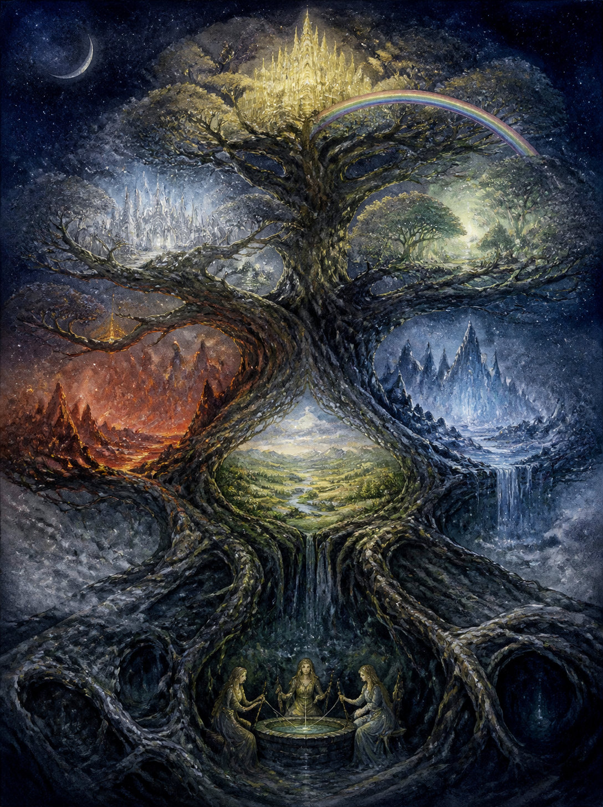
Иггдрасиль, мировое древо. Внизу корни и Хель, у корней — три норны; ствол и ветви — остальные миры. Иллюстрация создана для этой книги.
Миры и руны
В северной традиции девять миров связаны между собой рунами. Рун изначально 24, три атта по восемь.
Учитель упоминает, что сейчас рун часто считают 25: Ральф Блюм, американский автор «Книги рун» (1982), добавил к футарку пустую руну Вирд.
Руны — это переходы между мирами: курс будет показывать, какая руна во что переходит и с какой энергией связывается. А руна, которая входит в мир, — это закон этого мира. Такие руны учитель советует сразу выписать себе, а смысл станет понятен по ходу курса.
Любая руна активизирует возможности человека — от физического плана до ментального: эмоции, энергии, эгрегориальные связи.
Каждая руна описывает внутреннюю эволюцию человека и его социальный статус.
Семь измерений
Два высших мира — Альфхейм и Асгард — это боги. Остаётся семь измерений. Измерение — это то, чем человек измеряет этот мир. Тот, кто «в Хеле», измеряет мир помойкой; тот, кто на ступень выше, — «отработал, пожрал, на диван домой». Подробнее об измерениях курс говорит на руне Эваз.
Руна будет перенаправлять вас из измерения в измерение. Поверьте мне: из первой касты можно впрыгнуть и в третью, и в четвёртую, и даже в седьмую.
Предостережение
Мы пойдём по мирам, будем включаться в них и черпать из них самое лучшее. Трясти вас, конечно, будет: и сопли, и слёзы, и что-то детское. Всё это будет выходить наружу, а вы будете переделывать свой мир — и своих мужчин, и детей.
Девять миров
Учитель рассказывает о мирах снизу вверх: от корней древа к его кроне. Для каждого мира она даёт годы рождения мужчин и женщин, которые из него пришли. Найти свой мир можно в таблице и калькуляторе ниже.
Схема-ориентир: Асгард в кроне, Хель у корней, Мидгард в центре.
Учитель рисовала древо на доске; запись этого рисунка не сохранилась. Расположение боковых миров на схеме дано по общепринятой схеме Иггдрасиля — сверить с рисунком из конспекта. Сама учитель подчёркивает, что миры расположены не линейно, «а как дерево».
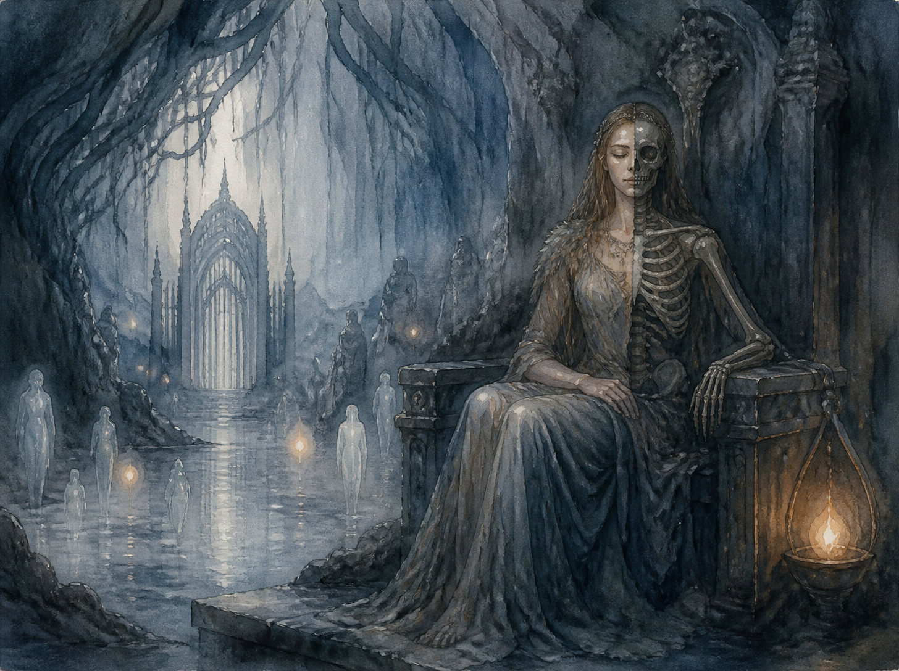
Мир 1 · корни древа
Хельхейм
подсознаниепамять родарождение и смертьСатурн
Нижний мир. Его богиня Хель на картинках — прекрасная дева, у которой одна половина красавица, а другая — скелет. Хель называют рождением и смертью: в Хель мы уходим, из Хеля мы возрождаемся.
В Хеле хранится всё наше подсознание: все наши тайны, всё забытое, но сохранённое, все старые боги, все энергии. Здесь хранится связь с родовой структурой, тайна вашего рода. Хель — толчок к любому движению.
Учитель упоминает, что в Хеле есть «три памяти» — энергия нашей Земли: Рея, Гея, Деметра — и обещает рассказать об этом позже.
Люди этого мира. Сюда относятся дети, старики, инвалиды, иждивенцы — те, кто нуждается, чтобы за ними ухаживали или их обеспечивали. Есть и такой народ: «дай мне денег, я нихрена не буду делать».
Задача. Если человек пришёл из Хеля, бояться не надо. Здесь нужно набираться опыта, знаний и учения и чётко определить, чем заниматься дальше. Если развивать интуицию и психологию, человек будет хорошим психологом — к нему пойдут, потому что он «хранитель всей памяти». Если не развивать — он обречён на тяжёлый физический труд: «лопату тебе и мотыгу в руки».
Хель связан с Сатурном — Шани, и с садесати. Если здесь не работать, «Сатурн даст тебе мотыгу, лопату и грабли — по бокам и по ногам».
В магии выходцы из Хеля могут спокойно гадать, работать с духами предков.
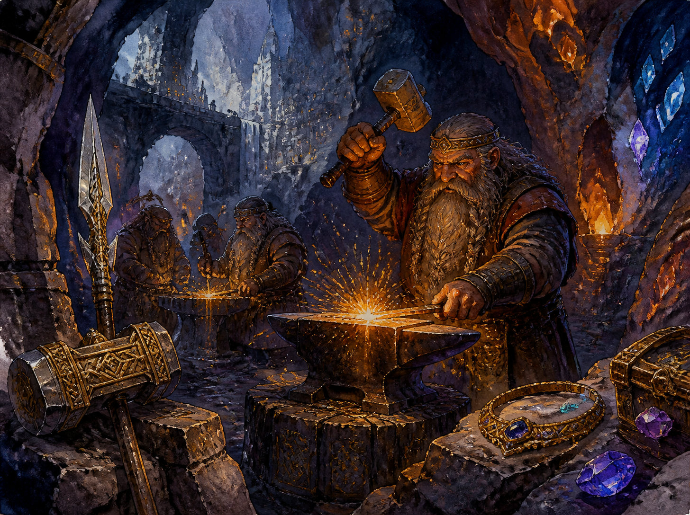
Мир 2
Свартальфхейм
ремеслоартефактымалый бизнесгномы
Мир ремесленников. Здесь живут дверги — те, кого мы называем гномами, — и тёмные альвы, «падшие ангелы, грубо говоря, по-нашему». Мир хороший: все артефакты в мире сделаны здесь — и молот Тора, и ожерелье Фрейи, и копьё. Курс ещё пойдёт к ним: заряжать амулеты и ловить лепрекона.
Тёмных альвов называют цвергами, или свартами. У них как бы государство в государстве, «как Монако»; главный из них — Мотсогнир.
В записи имя звучит как «Моцарнир»; дано по «Прорицанию вёльвы», где Мотсогнир (Mótsognir) назван первым из карликов.
Люди этого мира — хорошие рабочие, продавцы, мелкий бизнес, ремесленники. У них никогда не бывает проблем с деньгами: у каждого свой горшочек, лепрекон тоже оттуда. Если у человека из этого мира проблемы с деньгами, значит, мир не проработан. Даже если он учёный, он всё равно будет ремесленником: делать своими руками.
Задача и дар. Амулеты, артефакты, защиты — всё, что можно творить для людей: очищать, защищать, ставить защиты.
В записи учитель объясняет разницу между амулетом и оберегом, но фраза разобрана плохо: «оберег защищает, а амулет даёт что-то». Сверить с конспектом.
Учитель советует посчитать миры своих детей и мужей — это хорошая подсказка, что им надо.
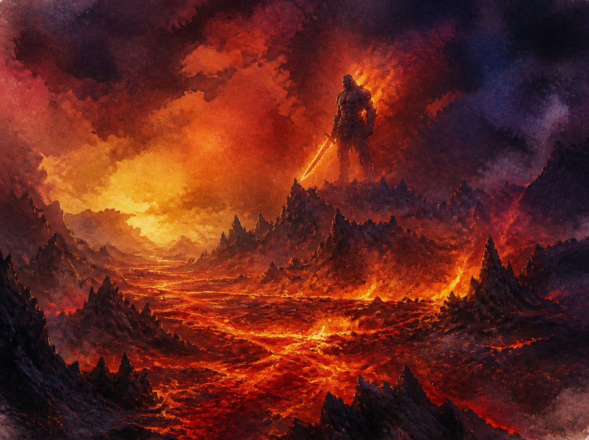
Мир 3 · первородный
Муспельхейм
огоньтворчествоактёры, спортистинная воля
Мир огня, один из двух первородных миров. Сначала были мир огня и мир льда; мир огня пошёл на мир льда — так появились мы. Здесь живут огненные великаны, турсы. В этот мир нам прохода нет: мы имеем право дойти только до его границы, иначе погибнем. Охраняет мир огненный великан Сурт.
Это мир энергии, творчества, эмоций и потенциала, трансцендентальной энергии. Здесь живут истинная воля и истинное «я».
Люди этого мира — актёры и пиарщики, люди искусства, спортсмены, военные стратеги. Почти все знаменитые актёры — отсюда.
Задача. Вас должны заметить — «хоть в народном театре, хоть на улице Бривибас, но лучше, конечно, в Париже». Никаких интриг и сплетен. Чтобы достичь этого мира, нужно полностью отработать два нижних мира.
В магии — работа с энергиями, любыми, в том числе стихийными.
Из опыта учителя
Учитель приводит пример совместимости: если твой муж из Хеля, а ты хотя бы из Мидгарда, он всё время будет у тебя на иждивении. Жена на иждивении — нормально, а если муж — «тогда тащи его всё время».
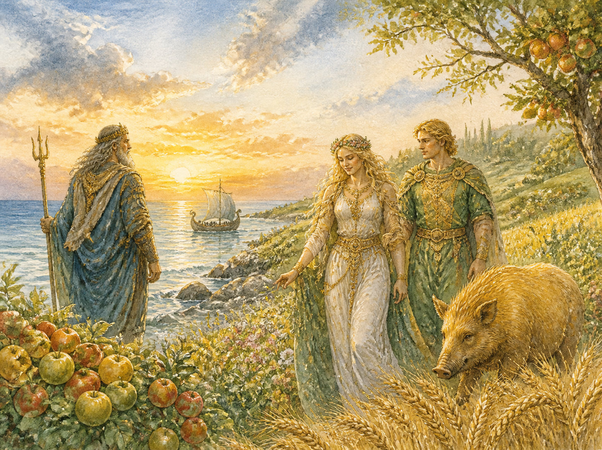
Мир 4 · божественный
Ванахейм
плодородиесредний и крупный бизнесзакон землиНьёрд
Один из божественных миров; считалось, что он был до Асгарда, потом между богами случилась война. Здесь живут боги ваны и дисы — духи природы, которые управляют людьми. Здесь, в отличие от верхних миров, у нас ещё есть выбор.
Главный из ванов — Ньёрд, владыка плодородия и морское божество, «по типу Посейдона». Энергия мира — плодородие, рост, прибыль, производство, богатство и развитие; это энергия руны Фео.
Мир рукоделия, среднего и крупного бизнеса, коммерции. Здесь же формируется стабильная сексуальная энергетическая привязка. Делать её учитель не советует; но через этот мир работают и тогда, когда такую привязку нужно убрать.
Из опыта учителя
Её сын когда-то выбрал девушку, с которой, как она видела, брак развалился бы через несколько лет. Она сделала так, «чтобы всем было хорошо»: сын женился на другой, у него прекрасная семья и двое детей. Такую работу делают через Ванахейм.
Если дело не идёт. Затеваете предприятие, а оно не открывается — не проработан Хель: возвращаемся к Хель, к причинно-следственным связям; может быть, мешает род. Попросите прощения у богини Хель. Если в бизнесе теряете деньги — прорабатывайте Свартальфхейм: почему ваш труд не приносит.
Закон земли. Силу люди могут брать только в Ванахейме, в природе: что посеешь, то и пожнёшь. Взять там можно что угодно, но закон Земли нарушать нельзя. Если нарушишь, Земля возьмёт с тебя памятью рода и памятью прошлых воплощений — может стереть всё, «ничего не будешь помнить». Незнание закона не освобождает.
Люди этого мира должны зарабатывать деньги и не нарушать закон земли. В магии — работа с духами верхних и нижних миров.
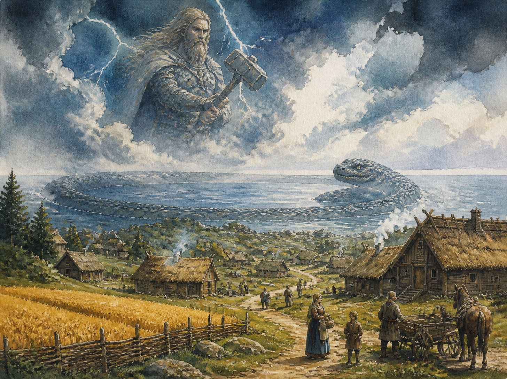
Мир 5 · центр
Мидгард
наш мирпредназначениестабильностьТор
Наш мир, наша Земля, центр всех миров. Мир зажиточных людей, мир социума и социальной реализации, мир предназначения: каждый приходит сюда с каким-то богом и должен это реализовать.
Идея должна быть реализована и жизнеспособна. Её нужно социализировать и пускать в мир — но идея не один человек, а два, три, социум: нужна команда. Если человек набирается опыта и ведёт за собой людей, и люди за ним идут, — Мидгард взят. Если нижние миры не проработаны, человек падает вниз.
Наш мир не любит всплесков, в нём всё стабильно: «баба, мужик, деньги — мы всегда этого и хотим». Его охраняет Тор: не позволяет чудовищам захватить мир, защищает людей от всего неизвестного и чужого. Мидгардец должен быть спокойным и уравновешенным; включать идеи, рассказывать, быть учителем.
Дар. Выходцам из Мидгарда подвластны все предсказания — и по картам Таро, и по рунам. Всё, что касается природы: целительство — от рук до трав, правильный образ жизни. Такой человек даже не понимает этого, но делает: «птичка пролетела — к дождю», «за грибами сегодня не пойду — луна плохая, червивые будут».
В руны не пустят того, кто ниже Мидгарда. Вы бы здесь не собрались никогда.
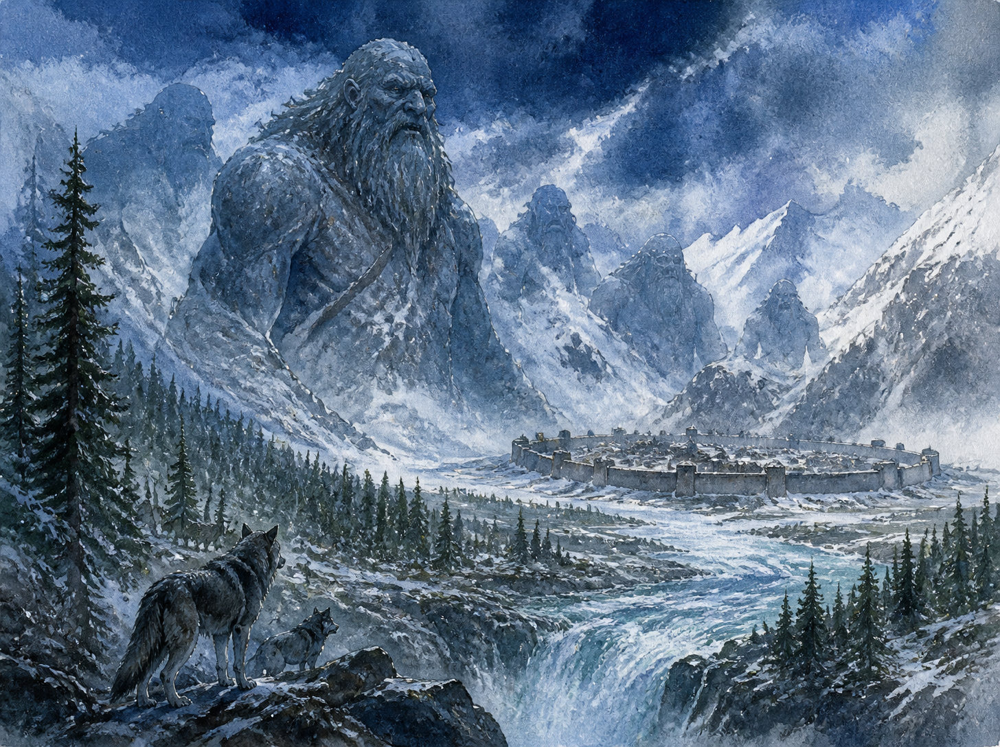
Мир 6
Йотунхейм
интеллектновые идеивнутренний зверьУтгард
Мир великанов-йотунов, «снежных людей». Мир учёных и инноваторов, интеллекта, новизны и развития: они все думают по-другому, они изобрели весь мир. Это достаточно дикий мир, воплощённый в природе.
С ним связан наш внутренний зверь, наш тотем — природные животные импульсы, рептильный мозг. У человека три мозга: сначала рептильный, потом млекопитающих, потом человеческий. Импульсы рептильного мозга — первичная огромная жажда жизни ради воплощения своей воли. Здесь же — духи мест, деревьев, всего живого; мир почти животного хаоса.
Внутри него есть Утгард — «государство в государстве», равнина, где максимальный порядок. Только с этим местом мы можем адекватно взаимодействовать. Здесь хранится память нашего казуального тела — всех наших воплощений.
Задача. У человека из этого мира идеи должны пробиваться. Если «проект есть, а денег на проект нет», не проработаны нижние опоры — Хель и Свартальфхейм. Тогда достаточно поработать с рунами-опорами, составить себе рунескрипт. В крайнем случае можно спуститься в Хель, взять идейку и вытащить, «но это очень тяжело».
В магии — изобретение новых ритуалов: «я сама придумала ритуал, он работает».
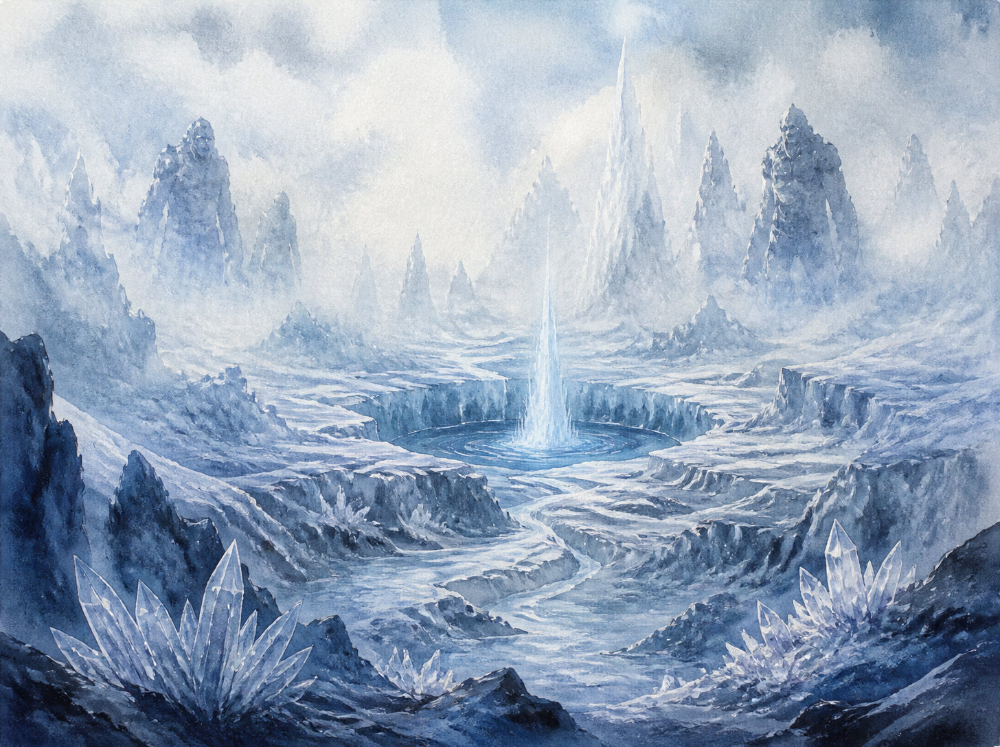
Мир 7 · первородный
Нифльхейм
лёдтрадиции и законыопыт прошлых жизнейруна Иса
Мир льда, руна Иса. Вместе с Муспельхеймом — изначальный мир: огонь пошёл на лёд, так создавалась наша планета. Мир кристаллизации и тумана; там живут ледяные великаны. Там нет структуры, нет контакта с людьми, нет искры жизни, и оттуда нет возврата. Заходить туда нельзя, можно подходить только к границам — в медитациях учитель будет это отслеживать.
Учитель просит читать или хотя бы слушать Старшую и Младшую Эдду: они есть в аудио и на латышском, и на русском, в том числе на YouTube.
Здесь происходит всё, что мы хотим сохранить. Это не «руна остановки», как пишут в книгах, это жизнь:
делаем консервацию — на крышке ставим Ису, банка не взорвётся;
хотим сохранить молодость — Иса;
Иса на теле останавливает температуру и воспаление; зубную боль успокаивает Иса, начерченная своей слюной;
у ребёнка температура — учитель рисует Ису по спине, и температура уходит.
Это мир традиций и законов, стабильности, растянутости во времени, инерции — в Таро это пятый аркан, Иерофант. Здесь весь опыт прошлых жизней, все кармические наработки. Мир брендов: структуры, которые прошли проверку временем и имеют историю; посмотрите — у мировых брендов в логотипах руны.
Из опыта учителя
Название своей компании учитель составила из рун: Райдо — дорога, Уруз — сила, снова Райдо и Соуло — солнце. «Мой путь сильный, мой путь освещённый, и сила моя освещена». Курс научит составлять рунические логотипы.
Люди этого мира — «серые кардиналы». У них легки нервные срывы, «нервная слизь с драматическим концом». Но они способны соединять нити жизни других людей и компаний. Им очень важно учить историю.
В магии — работа с причинно-следственными связями, влияние на погоду, стихии, природу; с погодой можно даже разговаривать.
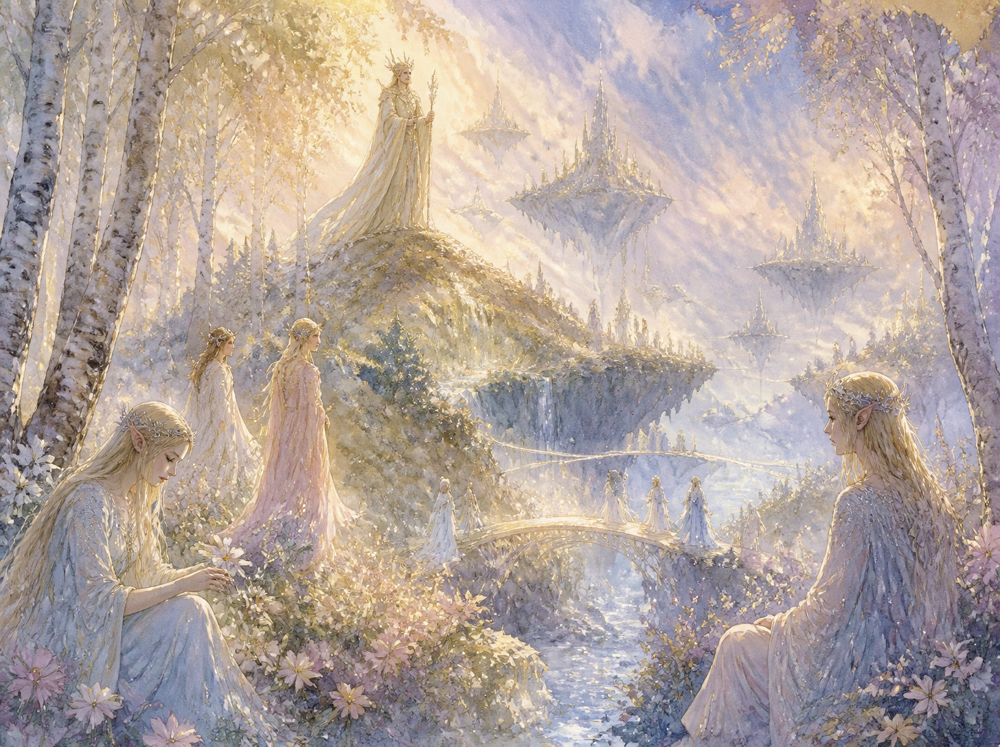
Мир 8 · высший
Альфхейм
мыслеформысанкальпафантазияФрейр и Фрейя
Мир светлых альвов, эльфов, мир фантастов и выдумщиков. Мир Фрейра и Фрейи, брата и сестры. Он связан с вдохновением и творчеством — но не прикладным, не руками, как у гномов или йотунов: «подумала — и воплотилась».
Это мир санкальпы — желания, мыслеформы. Искусство ради искусства, а не ради денег; мир иллюзий и фантазии. Мыслеформы из Альфхейма попадают в центральные миры и материализуются. Как они материализуются, зависит от проработки миров и от того, что у вас в голове: «придумала фигню — фигнёй и будет, подумала хорошо — хорошо».
Предостережение
Этот мир забирает энергию человека, если тот отрывается от реальности. Поэтому мы всегда говорим: живём здесь и сейчас. Иначе мир не только заберёт энергию, но поведёт вниз — в зависимости, в том числе игровые, как у детей с приставками.
Не проработан Муспельхейм — бесплодное зависание.
Не проработан Ванахейм — мысль уходит, но не реализуется.
Нужно оправданное предназначение в Мидгарде.
Как формулировать желание. В настоящем времени, без частицы «не», и обязательно — для чего. Не просто «я еду на красной машине с зелёной сумкой», а: «для того чтобы понравиться Петру Петровичу, который возьмёт меня замуж, от которого я рожу детей и у нас будут внуки». Иначе получится, как в фильме «Блондинка за углом»: «родится мальчик, поедет с институтом в колхоз, а там пожар».
Фантазии о прошлом — это Нифльхейм: «если бы я Пете сказала так, а он бы мне ответил так…» — человек начинает зависать. Всё это исправляется рунами.
Люди этого мира — лёгкие фантазёры, добрые; с ними всё легко. И самое интересное: их самые бредовые идеи воплощаются в жизнь.
Из опыта учеников
Семейная пара из учеников: он всё время подкидывает себе какую-то идею, но нестабилен; она из Альфхейма — что бы ни случилось, «справимся», и смеётся. Они дополняют друг друга. Когда они искали дом, она показала на понравившийся дом, где явно кто-то жил, — продавать его никто не собирался. Через три месяца по их объявлению позвонили именно оттуда, и дом они купили.
В магии — работа с воображением, визуализация, ясновидение.
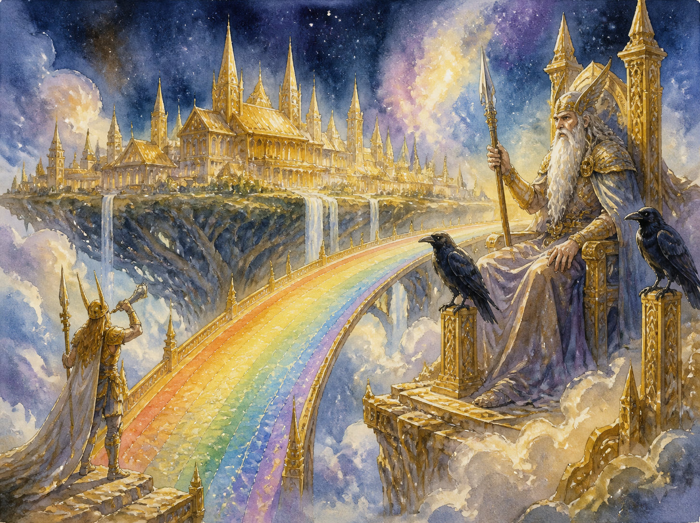
Мир 9 · крона
Асгард
богиволямир элитыОдин
Мир богов, мир элиты. Наш мир и мир богов соединяет радужный мост Биврёст, и пройти можно только по нему; стражник моста — Хеймдалль, сын Одина. Всем правит Один.
Здесь живут асы и ваны. Между асами и ванами шла война «за место под солнцем»; потом боги обменялись: часть пошла туда, часть сюда. Фрейя и Фрейр — из ванов. Асгард — крепость богов: Один, Тор, Тюр, Фригг, Бальдр, Локи — приёмный сын Одина.
Это воля человека, стремление, активное продвижение себя, выход на сознание Земли. Через мысль отсюда управляются все миры древа Иггдрасиль. Если отработан Альфхейм, человек сам творит свою реальность и умеет направлять людей. Если качественно отработать руну в каком-либо из миров, своей мыслью можно создавать всё, что хочешь.
Две движущие силы человека
По Асгарду: слава, честь, «ум дороже денег».
По Ванахейму: деньги, канал достатка. Силу денег никто не отменял. Канал достатка мы создаём сами, а канал денег создаёт структура — государство. Если не будет канала достатка, не будет и канала денег.
В магии — работа с богами и через богов, с высшими силами — через руны.
На вопрос «кто нашёл себя в Асгарде» в группе отозвались многие. «Я даже не сомневалась, мои хорошие».
Неважно, из какого мира вы пришли: это не значит, что выходец из Асгарда не может работать с другими мирами, а выходец из Хеля — с высшими. Курс проходит все миры.
Ваш мир по году рождения
Год в этой системе начинается не 1 января, а в ночь с 20 на 21 апреля, как у северных народов, — у нас Новый год тоже начинался иначе до Петра I. Поэтому, если вы родились до 21 апреля, берите предыдущий год. Например, мужчина, родившийся в марте 1982 года, считается по 1981 году.
В лекции «9 миров» дата начала года в расшифровке звучит неясно («20-304»). В лекции о руне Кеназ учитель отдельно поправляет: «начало Нового года приходится с 20 на 21.04 — я всё пересмотрела, всё переписала». Здесь используется эта дата.
Укажите дату рождения, и здесь появится ваш мир.
Годы в таблице повторяются через каждые 9 лет. Указаны годы из лекции; таблица продолжена по тому же правилу.
Мир
Мужчины
Женщины
Годы проверены по правилу «каждые 9 лет»: у каждого мира свой остаток от деления года на 9, и все девять миров дают разные остатки. Благодаря этому найдены опечатки расшифровки: у женщин Ванахейма вместо 1931 должно быть 1938; у мужчин Хельхейма — 1971, а не 1972.
Норны
Внизу дерева — Хель, корни; дальше ствол, а миры — ветви. У корней, возле Хеля, сидят три девы — норны: Урд, Верданди и Скульд. Это прошлое, настоящее и будущее. На изображениях вы их видите как старуху, молодую (беременную) женщину и девочку — это три наши ипостаси. Норны ткут ковёр нашей судьбы. К норнам мы обращаемся всегда, когда нужны предсказания.
Саму нить судьбы прядёт Фригг, жена Одина.
В записи имена звучат как «урд, скальт и вардании».
Три атта
Атт
Что это
Покровитель
Руны
Первый
Что дано человеку от рождения, заложено изначально. Курс будет проходить и перинатальную матрицу: как мы пришли и что можно исправить.
Фрейр — бог растительности, природы, погоды
Второй
Качества и характеристики, которые человек должен развить в течение жизни и проявить в реальной жизни.
Хеймдалль
Третий
Соединяет первые два и помогает их включить: инструмент, способы познания.
Тюр — бог победы и справедливости, соответствует Аресу, Марсу
Про третий атт учитель коротко поясняет: Эваз неразборчиво, Манназ — человек, Лагуз — поток, Ингуз — мужчина, накопительство, Дагаз — день, трансформация, Отала — «всё собранное вместе, наследство предков», это руна Одина. В лекции о Вуньо покровителем первого атта учитель называет Хеймдалля — сверить.
Учитель вспоминает, что часто видит «талисман богатства» — три руны Фео. «Когда мне говорят, что Фео — это богатство, — она не даст так просто». Об этом — в следующем уроке.
Что подготовить к следующему занятию
Задание
Временные заготовки рун: замесить муку с водой, добавить немного клея ПВА, ничего не жарить, вылепить кругляши и подсушить на пергаменте. Это временный футарк, который потом торжественно сожгут. Сделать 24, лучше с запасом — некоторые ломаются.
Три новых фломастера: в идеале красный, синий, зелёный, ещё чёрный. Их никому не давать: ими вы будете писать руны на руке.
Мешочки: один для заготовок; ещё маленький — чтобы носить руну при себе неделю. Мешочки лучше шить самим.
Скатерть — самую обыкновенную, пока без рисунков.
Камешки: за время курса насобирайте камешков — на них потом будете делать руны. Для талисманов подойдут и деревяшки; для девочек лучше берёза. Без спроса отламывать от дерева нельзя: сначала поговорить с деревом.
Слушать или читать Эдды.
Учитель говорит, что глина для заготовок «должна быть природная, а не та, которую покупаешь в магазине», — поэтому сейчас лепим из муки.
Искра космического огня. Первая руна футарка и вход в рунический эгрегор.
В лекциях руна звучит как «Фео» (в автоматической расшифровке часто «ФИО», «фил», «фея»). В литературе её называют также Феху, Фе, Fehu.
Место
1-я руна первого атта
Стихия
Огонь (божественный) — основная; земля — дополнительная, «как семя»
Боги
Ваны: Ньёрд, его дочь Фрейя и сын Фрейр
Знак зодиака
Телец
Цвет
Красный — рисуем красным
Чакра
Первая, муладхара
Камень
Агат требует сверки
Растения
Практически все травы, которые используются в магии
Строение
Открытая руна: ствол и две ветки
Положения
Прямая, зеркальная, перевёрнутая
Миры
Опора для Асгарда, закон Альфхейма требует сверки
Мантра
«Фей» — произносится со свистом
Камень в записи звучит как «лгать»; вероятнее всего, это «агат». Связь с мирами в записи разобрана плохо: «опорная руна для мира Асгард и закон для мира… Альфхейм». Сверить со схемой древа миров из конспекта. Мантра и заклинания сверены с конспектом ученицы.
Урок 2.1 · по первой записи
Космический огонь
Вводная лекция, записанная для учеников, которые занимаются по видео.
Фео — первая руна, с которой начинается вход в эгрегор северной традиции. Её традиционное значение — процветание, прибыль, удача. Старое название руны означает «скот»: раньше богатство считали не деньгами, а количеством скота и овец в стаде.
Но прежде всего Фео — это космический огонь, искра космического огня. Это то, с чем мы приходим на землю. Ей соответствует первая чакра, тоже красная, поэтому и рисуем руну красным. Это руна, которая даёт жизнь, исцеление и возрождение.
Руна ситуаций, а не денег
Если почитать о Фео, везде пишут, что это руна денег. Это не так. Фео — руна, создающая ситуации. Она может притянуть любую ситуацию, которую ты хочешь, но без усилий не даст ничего. Если ты прикладываешь хоть какие-то усилия, она притягивает всё: деньги, любовь, нужные ситуации, нужных людей.
Предостережение
Талисман из трёх рун Фео, который везде встречается в интернете, бездумно рисовать нельзя — иначе будет плохо. Как правильно делать такой став, учитель разбирает в уроке 2.2.
Фео даёт материальное благополучие как данность, без материальной озабоченности, если человек хорошо её проводит. Мы приходим в этот мир с первым аттом. Какие-то руны мы проводим через себя хорошо, а на каких-то у нас загвоздки и заторы. Поэтому при посвящении бывают разные ситуации: одна ученица на первом посвящении в Фео упала в обморок — она практически не проводила эту руну, отсюда и материальные затыки.
Фео притягивает всё, что для человека считается богатством: любовь, семью, детей и в том числе деньги. Но она также подтолкнёт его к действию, к его предназначению. Если вы нарисовали эту руну, она заставит вас действовать — именно заставит. Учитель называет это волшебным пенделем, или толчком судьбы. Если вы давно хотели учиться и всё откладывали, а знания для вас — богатство, этот пинок обязательно произойдёт.
Боги этой руны — ваны: Ньёрд, его дочь Фрейя и сын Фрейр. Они символизируют благополучие, процветание, изобилие и достаток, но также и труд. Это мир бизнеса и руководителей, где человек ставит перед собой конкретную задачу и где богатством надо умело управлять. Кто умеет это делать, тому даётся больше сил и возможностей для приумножения. В этой руне основной фактор — труд и усилие.
Фраза о мире ванов в записи искажена («в архива на хелен»). По смыслу и по лекции «9 миров» речь идёт о Ванахейме — мире среднего и крупного бизнеса, где «энергия этого мира — плодородие, рост, прибыль».
Вход в рунический эгрегор
Руну вы будете проживать две недели. Заведите блокнот и описывайте своё состояние: что с вами случилось хорошего, что нехорошего. Когда вы входите в эгрегор, вы очень много узнаёте о себе и о близких.
Руны — система, которая меняет человека изнутри и снаружи. Снаружи она уберёт из жизни людей, которые вам не нужны: тех, кто тянет из вас энергию и не даёт ничего положительного.
Поверьте мне: через год ваша записная книжка телефонов опустеет почти наполовину. Но уйдут только те люди, которые вам по жизни не нужны и которые тянут с вас энергию.
Семь чакр и тонкие тела
Чтобы понять, как работает Фео, учитель делает краткий экскурс по чакрам. Чакры — не абстракция с картинки. Внутри позвоночного канала проходит канал сушумна, и чакры на нём — это пусковые точки, триггеры.
1. Муладхара — кончик копчика. Физическое тело: весь физический потенциал, как вы выглядите, давление, вес. Это искра: если первая чакра не работает, не будет работать ни одна другая.
2. Свадхистана — три пальца ниже пупка. Эфирное тело, «энергетическая батарейка», 20–30 см от тела; покрывает даже органы. Эфирное и физическое тело неразрывны: если они разъединены, человек в коме. Страдает одно — страдает другое; так возникают психосоматические заболевания.
3. Манипура — солнечное сплетение, три пальца выше пупка. Астральное тело, поле эмоций: все наши эмоции живут там.
5. Вишудха — голубая, район шестого-седьмого позвонка. Казуальное, причинное тело. Там живут таланты и самскары прошлых воплощений, страхи из прошлых жизней — «ящик Пандоры». Это и ораторское искусство, и пение.
6. Аджна — синяя, внутри головы между эпифизом и гипофизом. Буддхиальное тело, тело разума. Ум и разум — две разные вещи: ум живёт в анахате, разум — здесь.
7. Сахасрара — макушка, там, где родничок. Атманическое тело; светло-розовая, фиолетовая, иногда белая. Эта чакра уже не принадлежит человеку: атманическая сила принадлежит всем, мы все связаны единой сеткой.
В записи учитель не называет седьмую чакру по имени («макушка, там где родничок») и говорит «дальше третье идёт вишудха», имея в виду пятую. Названия и номера даны по общепринятой системе. Цвета кружков — ориентир, учитель описывала их словами.
Строение руны: ствол и ветки
В каждой руне есть ствол и ветки. Ствол — это центр; его мы отождествляем с собой или с каким-то предметом. Ветки — как щупальца: они показывают, что откуда идёт. Левая сторона руны всегда означает прошлое, правая — будущее. Руны бывают открытые и закрытые; Фео — открытая.
Ствол Фео соединяет физическое тело с атманическим. Одна ветка соединяет казуальное тело с высшими богами, другая — астральное тело.
Ствол полностью соединяет физическое тело с атманическим. Одна ветка соединяет казуальное, причинное тело с высшими богами, вторая — астральное тело, тоже с высшими богами. Астральное тело — поле эмоций, это Альфхейм. То есть Фео соединяет ваше физическое бытие здесь с атманом и с богами.
Я создана божественным огнём. Бог создал меня и вложил в меня всё, что хотел, все свои задумки. Это первая руна — руна божественного огня. Поэтому по веточкам этой руны можно притянуть всё, что вы хотите.
Верхняя ветка притягивает сознание, нижняя — эмоции. Поэтому нужно чётко знать, что и куда ты притягиваешь, и чётко определить себе план. Запомните: к пустому месту ничего не пойдёт.
Если в стволе, куда вы притягиваете, ноль, а здесь вы хотите тысячу, то тысяча, умноженная на ноль, — ноль. Если вы говорите, что деньги — это грязь, это ноль, и деньги к деньгам не пойдут. Если у вас понятие семьи, понятие рода на сто процентов и вы подтягиваете сто процентов — сколько там тысяч получится. Поэтому никогда не читайте в интернете, что Фео — это деньги. Деньги идут к деньгам.
Если вы поставили в себе свою ось, свой потенциал — «я должна это сделать, я должна выбраться» — даже на десять, даже на единицу, Фео притянет то, что нужно. Но если сегодня я в себя верю на сто, а завтра говорю себе, что этого не может быть, ничего не сработает. По Альфхейму работает так: что я придумала, то должно сбыться. Сегодня хочу — иду и хочу, тогда сбудется, и Фео притянет любые ситуации, которые вам нужны.
По этой руне живут банкиры и крупные предприниматели.
Право рождения
Первый атт — это то, что принадлежит нам по праву рождения. А значит, мы творцы своей судьбы. У Вселенной есть всё для каждого человека, но очень важно знать, как туда дойти и где это взять. Если ты сидишь на жопе ровно на диване, никуда не ходишь и ничего не ищешь, никакая ситуация к тебе не придёт. Это руна притяжения ситуаций.
Мы все приходим в этот мир голыми. Первое, что мы получаем, — имя и принадлежность к своему роду. По принадлежности к семье мы получаем и свой финансовый достаток, но это не наша заслуга: он принадлежит маме, папе, бабушкам и дедушкам и никак не связан с нашей душой. Только когда ты вырастаешь, ты можешь по праву рождения притянуть новую ситуацию: либо помочь своему роду развиваться, либо пойти своей дорогой. Фео в этом поможет.
Хочешь притянуть одно — притягиваешь одно. Хочешь приумножить — приумножаешь. Хочешь уменьшить — ничего не делай. Но это в нас уже заложено изнутри. У тебя есть право выбора.
Нормальное проявление руны
Когда человек хорошо проводит Фео, руна проявляется так.
Накопление энергии и своё пространство. Руна позволяет накапливать энергию и создать вокруг себя то пространство, которое ты хочешь. В этом расширенном пространстве можно набрать любую энергию, даже физическую — энергию красоты, молодости, здоровья. Практика очищения и расширения пространства — в уроке 2.2.
Защита от «наездов». Руна предотвращает наезды высших инстанций и проверки, не притягивает таких ситуаций.
Нужные люди. Она притягивает в жизнь нужных людей: друзей, мужа — практически всё нужное. Если создаёшь бизнес, притянет тех, кто будет работать с удовольствием и хорошо; если проект не идёт, притянет человека, который поможет.
Отношения. Нормальные отношения между мужем и женой, с детьми, с детьми-подростками — всё, что тебе нужно в отношениях.
Гений земли. Руна синхронизирует человека с гением земли, с возможностями этой земли.
Из опыта учителя
Когда учитель создавала своё учреждение, ей нужно было, чтобы в команду пришли люди, которые будут работать с удовольствием и хорошо. Руна притянула именно таких.
В целительстве
Фео идёт через первую и седьмую чакры и затрагивает третью, манипуру — всё, что связано с пищей и пищеварением. Поскольку в ней огонь и земля, это именно усвояемость продуктов; очень хороша для аллергиков, которые не усваивают продукты. Хорошо действует на обмен веществ, когда в определённом возрасте с ним начинаются проблемы.
Руна снимает усталость: она накапливает и расширяет пространство, поэтому по ней можно много работать и не уставать. Это и руна молодости: расширяя пространство, по Альфхейму можно играть со временем.
Иногда меня спрашивают, как я так выгляжу. Я в рунах очень давно, и с рунами можно очень многое сделать.
Есть состояние зимней спячки, когда ни фига не хочется делать. Фео даёт готовность к действию. Ею очень хорошо снимать длительную депрессию — учитель называет её «витамином D».
Любовь, финансы, служба
Любовь
Фео притянет только то, что соответствует твоему пониманию любви и тем качествам, которые ты в любовь вкладываешь. Если твоё понимание любви — толстожопый Вася с завода, это первая каста, и притянется именно это. Если понятия другие, притянется то, что соответствует твоим внутренним понятиям.
Пример с «Васей» в записи разобран частично; смысл восстановлен по контексту.
Финансы
Фео — руна капиталистов, тех, кто накапливает капитал.
Предостережение: кредиты
Руну нельзя применять, если есть кредиты, а новых возможностей нет. Если по своей дурости человек набрал кредитов, не хочет развиваться и призывает Фео, чтобы расплатиться, руна не даст ничего. Она даст по голове и пинок, чтобы ты пошёл на тот же завод работать и выплачивать кредиты. Если не пойдёшь, она даст глубокую стойкую депрессию или заболевание. В таких случаях эту руну не призываем ни при каких обстоятельствах.
Государственная служба
Если вы на госслужбе, Фео даст продвижение и премии — пусть не сразу начальником отдела станешь. Но она потребует от тебя и дополнительных затрат: она не такая простая, как кажется.
Непроявленная руна
Если человек не проводит Фео, руна в нём не проявлена. Признаки:
убеждение, что деньги — грязь и все богатые либо наворовали, либо ещё что похуже. С таким убеждением руну не применяют: сначала его перерабатывают, для этого есть другие формулы;
тебя не видят: ты стараешься, а должность дают другому;
тебя вытесняют из социума — так бывает с детьми в школе, которых не замечают ни дети, ни учителя;
на физическом плане — депрессия, жуткая усталость, неестественная лень и размытость: «я сегодня какая-то несобранная».
Учитель называет Фео стартовой площадкой для твоих поколений. Если в тебе нет этой руны, нет потенциала, твоим детям придётся долго это отгребать. Фео и Уруз — это мама и папа: с них начинается перинатальная матрица, которую курс будет проходить позже. Если в тебе это не проявлено, это не будет проявлено в детях и во внуках. Как ты будешь сидеть в первой касте, так будут сидеть и твои дети, если сами не пойдут развиваться. Сознательное развитие обычно начинается после 25 лет.
Только твоя сила духа определяет, чем ты будешь обладать в этом мире и в каком измерении будешь жить.
Измерений семь. Измерение — это то, чем ты измеряешь эту жизнь. Если ты измеряешь её «поспать, пожрать, поработать», это первое измерение, первая каста. В руны обычно приходит третья каста — каста воинов, и четвёртая — учителя или правители. Если вы пришли из третьей касты, вы пришли, чтобы ваше поколение поднялось до четвёртой.
Подробно об измерениях и мирах — в уроке 1 «Древо мира. 9 миров».
Гальдр
В рунах есть гальдры — заклинания, которые звучат как энергетический потенциал. Для Фео учитель читает строфу:
Богатство всем утешение, но должно им щедро делиться, коль славы хочешь сыскать пред Огнём владыки.
То есть если ты не чувствуешь в себе этот божественный потенциал — что во Вселенной есть всё, — ни фига ты не получишь.
Эта строфа — начало англосаксонской рунической поэмы о руне Feoh. В записи слова «делиться» нет («должно им щедро, коль славы…»); оно вставлено по общеизвестному переводу. Сверить с конспектом.
Возврат потерянной энергии
Фео хорошо прокачивает и стимулирует физическое тело и тонкие планы. По ней можно вернуть потерянные энергии. У каждого есть кристалл жизни. Кто-то вывел вас из себя — часть энергии из кристалла потеряна; стресс — ещё часть; часть вы отдавали близким на работе и дома. По Фео есть техника собирания своего кристалла: можно собрать в сердце энергию, потерянную в этом, прошлых и даже будущих воплощениях. Эта техника — во втором атте.
Можно работать с Фео в астрально-ментальном плане — это сновидения и формирование своего пространства и своих желаний.
Защита пространства
Фео — защита по принципу это моё, и никто не имеет права на это посягнуть. Это личное пространство, построение ситуаций в нём, а также открытие нового пространства.
Дом, кабинет, комната. Нарисуйте Фео над входом с внутренней стороны — руна защитит пространство от постороннего влияния.
Четыре стены. Если нарисовать руну на четыре стороны, плохие люди туда не зайдут.
Сохранность вещей. Руна служит и для сохранения вещей.
Очищение после гостя. Если у вас побывал ненужный человек, нарисуйте Фео двумя пальцами в воздухе — пространство очистится от его энергетики.
Амулет-накопитель
Фео можно превратить в амулет, накопитель нужного. Сделать его можно на кусочке дерева, на бумажке, на фотографии, на браслете или ремешке от часов — на всём, что можно носить с собой.
Если фотографии человека нет, рисуют «огурец»: на листке бумаги условного человечка, рядом имя, фамилию и отчество (если есть) и полную дату рождения, например 01.01.2021.
Для чего делают такой амулет: оздоровление духа; карьерный рост; укрепление отношений; семья; притягивание любого энергетического потока — например, ясновидения или яснослышания; женский магнетизм, сексуальная энергия, флирт; радость; выздоровление.
Заготовки и принадлежности
Для работы в эгрегоре нужны заготовки — учитель называет их флешками. Руна — это энергопрограмма. Чтобы подготовиться к ней, человек должен сделать носитель своими руками: в него закладывается ваш эгрегор и ваша ДНК.
Подготовка
Заготовки рун из теста
Замесите крутое тесто из муки и воды. Добавьте чуть-чуть клея ПВА или яичный белок.
Вырежьте рюмочкой кругляши. Для полного набора нужно 24, с запасом — 26: некоторые ломаются.
Разложите на пергаменте и сушите три дня, переворачивая. Можно чуть подсушить в духовке, но лучше не надо.
Когда пройдено заклинание руны, нарисуйте её на заготовке красным фломастером и подуйте на неё.
Носите заготовку с собой минимум три дня в маленьком мешочке на шее, в кармане, где угодно. Ночью кладите рядом, на прикроватную тумбочку.
Когда переходите к следующей руне, переложите заготовку в основной мешочек. Если она сломалась или рассыпалась в прах, пересыпьте туда же: потом весь временный набор торжественно сжигают на посвящении у большого костра и рисуют новый, постоянный.
Руна на теле. Нарисуйте Фео красным на запястье и подуйте на неё. Рисуйте так, чтобы она не переворачивалась, как пишете в тетради: Фео — одна из оборотных рун, она бывает прямой, зеркальной и перевёрнутой. Если не хотите, чтобы видели, рисуйте на бедре — так, чтобы при взгляде сверху руна не была перевёрнутой. До следующей руны её нужно всё время подрисовывать, чтобы она вплеталась в ДНК. Рисовать можно маленькой.
Что ещё понадобится
Две рунические скатерти. Одна совершенно чистая, без надписей, любого цвета — для мантики, выкладывания рун. Вторая — алтарное покрывало с кругом рун; в центре что хотите. Можно купить, можно сделать самим, можно расчертить круг на обычной разделочной доске.
Ножи — минимум два: рабочий и защитный (алтарный). Подойдут простые, например из IKEA. Ножи будут нужны при работе со стихиями; их освящают.
Свечи — любые, только не церковные.
Набор рун. Можно купить, но прорисовывать и освящать всё равно будете сами. Лучше сделать свой: на деревянных спилах, на плоских камешках — что по душе. В помощь лак и акриловая краска.
Про ножи в записи есть неясное место: «один нож рабочий, один алтарный, один защитный» и рядом «здесь не должно быть железа». Сколько ножей нужно и из чего, сверить с конспектом.
Из опыта учителя
Учитель пришла в руны очень молодой, когда ещё ничего этого не было. Она долго просто сидела в этом окружении и смотрела, как это делается. Раньше по «Речам Высокого» заготовку сразу начинали резать и пилить. Около десяти лет назад после знакомства с одним интересным человеком она поняла, что лучше, когда человек сначала создаёт носитель своими руками: всё меняется, меняется частота, меняется земля.
В записи учитель называет год прихода в руны — «74-й», затем поправляет себя. Точную дату сверить.
Задание до следующего занятия
Слепить заготовки рун.
Подготовить фотографии близких или нарисовать «огурцы» для амулета.
Найти основу для амулета: дощечку, браслет, ремешок.
Не приступать к Урузу, пока не разберётесь с Фео — хотя бы неделю. Уруз — необузданная энергия земли.
Урок 2.2 · по второй записи
Положения, ставы, практики
Занятие с группой после двух недель проживания руны.
Руны — это система, которая не любит сюсюканья и не любит неорганизованности. Это военная структура, северные боги, северные народы. У них нет «люблю, поцелую, уйду». Если я что-то чётко два раза говорю — включайте мозг.
Флешка — то, что вы создали своими руками: замесили тесто, вложили свою энергию, нарисовали руну, прошли посвящение. Это реально флешка-носитель. Она внедряется в вас и перестраивает не только мозги, но и тела. Каждая руна будет перестраивать и ваш внутренний, и внешний мир.
Налепите заготовок побольше — 26 штук, мало ли что.
Нужен мешочек из хлопчатобумажной ткани, чтобы носить руну при себе, если не хотите класть её в бюстгальтер.
Нужен мешочек, сшитый своими руками, — для набора. Прожили руну, она целая или стёрлась в песок, — положите или высыпьте её туда.
Руну на теле подновляйте, пока её не проживёте. Чтобы стереть, возьмите спирт или воду и чётко оговорите это. Стёртая руна прекращает работу; когда надо, нанесите снова. Например, если вам сегодня раздеваться у врача, сотрите и потом нанесите опять.
Искра и двойственность мира
Фео — искра божественного огня, с которой мы приходим. Всё зарождается через Фео, но зародиться может по-разному: криво, бокасто, кособоко или прекрасно. Зародиться могут и нижние миры, и верхние, и всё это имеет право быть. У человека две природы, чёрная и белая; наш мир дуален, инь и ян. Что мы выберем — решаем только мы. Ничего плохого в Хеле нет: мы все едины.
Миф, который рассказывает учитель
В ведической традиции, когда создавалась Земля, между богами был спор о том, какими будут люди. В спор вступил Шани (Сатурн), рождённый от тени, и его отец — Солнце, Сурья. Условие было такое: кто проиграет, станет смертным на Земле. Сын Сурьи Яма сказал, что люди должны нести только хорошее, и не выиграл: Сатурн сказал, что люди должны нести в себе и богов, и асуров. За это Яма был низвергнут на землю и стал богом смерти, Ямараджей. Он соответствует нашему Петру. Всё едино: и Библия, и Эдды, и Коран — только называется по-разному.
Миф записан с пропусками: кто именно проиграл спор, восстановлено по контексту. В индийской мифологии Яма и Шани — братья, сыновья Сурьи. Под «нашим Петром» учитель, вероятно, имеет в виду апостола Петра — хранителя врат рая.
Программа, которую нужно прожить
Руны бывают зеркальными, оборотными и только прямыми. Учитель специально не объясняла этого заранее: две недели нужно было прожить Фео и в прямом, и в оборотном, и в зеркальном положении, почувствовать все энергии. Были дни очень хорошие и были не очень.
Мы приходим на землю каждый со своей программой. Наш дух — это наша флешка. Кто-то проносит руну со свистом, а кто-то её проживает: этой программы либо нет, либо она заблокирована. Если есть косяки в прошлом, программу не включают, чтобы ты прожил её здесь, на Земле, и исправил. Фео — первая; если она не прожита, Уруз не включится при всём желании.
Как руны вплетаются
Ученики рассказывали разное. У одной первая заготовка через три дня потерялась, вторая раскололась, третья выпала в унитаз — руна вплелась во всех трёх положениях. У другой руна утром в зеркале проявилась на теле там, где её не рисовали; у кого-то — между лопаток, причём прямая. Кто-то всё время её терял, кто-то прожил совершенно спокойно.
Учитель объясняет: руны будут играть с вами, проверять вас, и очень сильно. Как в первом классе: кого-то надо дёрнуть за косичку, кого-то ещё за что-то. Они разные, но не страшные.
Закон равновесия
Во Вселенной есть закон равновесия, и каждый её член обязан поддерживать свой аспект. Только это не статичное равновесие — равновесие это болото, — а динамическое: между одним, вторым, третьим. Чем больше ты производишь в мире энергии, тем больше её тратишь. Где взять энергию?
из пяти стихий;
из той силы, с которой вы меняете пространство вокруг себя. Меняя рунами пространство не только в себе, но и вокруг, вы вырабатываете энергию.
Если не менять пространство, а только хотеть и делать, энергия будет взята из какой-то другой сферы твоей жизни. Не бывает так, что где-то прибыло, а где-то не убыло. Фео меняет пространство вплоть до вашего кокона.
Ровно через год занятий рунами — не Таро, а именно рунами — телефонная книжка опустеет наполовину. Не обижайтесь, если уйдёт подруга или друг: уходят те, кто забирает вашу энергию и тянет туда, куда не надо.
Канал достатка и канал денег
Если ты не готов стать богатым, то даже при магической работе с Фео она притянет ситуации, которые заставят тебя поменять мышление, действия и окружение.
Деньги — это поток сил, который входит в жизнь того, кто способен беспрепятственно пропустить его через себя. Но его надо дополнять собственными силами — и тогда пойдут потоки любви, власти, здоровья, удачи.
У Вселенной есть всё и для каждого, но нужно знать, куда пойти и где взять. Человек приходит с каналом достатка: он есть у всех, у кого-то больше, у кого-то меньше, у кого-то пережат, но ни у кого не заблокирован. А канал денег принадлежит эгрегору государства. Если канал достатка пережат, канал денег через себя не пропустишь.
Если в голове есть хоть одна мысль, что деньги — грязь и зарабатывает только тот, кто ворует, канал перекрыт. Открыть его можно, подключая себя к эгрегору денег. Фео создаёт ситуации, через которые вы это пройдёте: у кого-то за две недели были ситуации, которые привлекали, у кого-то — наоборот, закрывали.
Руны — это конфигурация вашего сознания, ритм, основа. Они вплетаются, как ДНК. Каналы любви, власти, здоровья и удачи связаны с семью лучами, о них речь пойдёт позже. Но если закрыт канал достатка, не получишь ничего: ни власти, ни удачи, ни любви.
Прямая, зеркальная, перевёрнутая
Прямая
Зеркальная
«посмотри: обман»
Перевёрнутая
ветками вниз
Три положения руны Фео. При рисовании зеркальной и перевёрнутой не так важно, какую палочку чертить первой.
Перевёрнутая или зеркальная Фео — одна из немногих рун, которые не всегда означают плохой исход. Это скорее предупредительный знак: проверь и проконтролируй. В сочетании с другими рунами она подскажет, на что обратить внимание.
Перевёрнутая Фео: потеря, разочарование, проблемы. Обычно потери недолговечны, краткосрочны и преодолимы. Многое зависит от соседних рун.
Зеркальная говорит: всё тебе вернётся, она отражает.
Перевёрнутая в конце расклада: львиная доля успеха будет благодаря твоим личным стараниям. Всё достигнешь, но пахать тебе придётся, деточка, сильно.
В раскладе: если в мантике препятствия на пути к цели не долгосрочны, то в ставах — долгосрочны. Перевёрнутая Фео — это незапланированные расходы и убытки, неоправданный риск, разочарование: коллеги или друзья покажут себя такими, какие они есть, — человек, который в лицо говорит одно, а за глаза другое. Можно нарваться на мошенников: тщательно проверяйте документы.
Фео в ставах
Место руны в ставе меняет её работу.
Место
Что делает Фео
Пример учителя
В начале
Построение нового цикла и его запуск
Построить ещё одно здание: Фео, чтобы пробилась ситуация, Турисаз, неразборчиво, импульс, а в конце Фео или Йера, чтобы цикл пошёл
В середине
«Волшебный пендель», принудительное действие; зависит от задачи и соседних рун
Ребёнок плохо учится: Лагуз (поток знаний), Фео, Эваз (изменения) — Фео как пинок к действию
В конце
Завершение и продолжение: чтобы процесс шёл так, как задано
—
Как усиление
Пинок, с оговором задачи
Убрать привязки, «вампирюг»: Фео создаёт ситуацию, чтобы всё развалилось, Турисаз — точечный удар
В примере со зданием одна руна в записи неразборчива («а тело» — возможно, Отала).
Виды ставов: без участия человека (на бизнес, на предприятие) и с участием человека («мой Петя меняется в такую-то сторону»). Ставы на хорошее и — учитель научит — на плохое. Ставы на материальную выгоду, на чистку от неприятностей, чистку помещений.
Для чего ещё ставят Фео:
наладить связи, притянуть нужных людей, помирить мужа и жену; перевёрнутой — наоборот, разъединить, «иногда надо»;
ускорить важные процессы и дела; суд;
без ошибок купить недвижимость. Для движимого имущества, машины, главная руна — Райдо, Фео+Райдо; на продажу Фео тоже работает, но не главная.
Из опыта учителя
Её сын в своё время выбрал не ту девочку. Учитель поставила став — теперь он выбрал хорошую. А при покупке старых машин её часто приглашают посмотреть: она подходит, ставит и раскручивает руну — и видит даже, где машина битая. «Вы тоже будете это чувствовать».
Предостережение: наказание
Бывают ситуации, когда человека нужно наказать, и учитель научит, как. Но знайте: откуда втекает, туда и вытекает, всё равно получите по шапке. Никогда не полагайтесь на себя — мы не вправе судить. Учитель всегда говорит: на усмотрение высших сил.
Как говорила её бабушка, все будут наказаны. Но если Вася стоял шестисотым в очереди, мы его просто подвинем первым.
Сочетания с другими рунами
Записывайте сочетания: они понадобятся и в мантике, и в ставах.
Прямая Фео и…
Руна
Значение
Наутиз
Потеря возможностей
Райдо
Деньги, прибыль в офисе и вне офиса, удачная командировка, хорошая подработка на стороне
Гебо
Заключение взаимного договора, дружба, любовь
?
Поддержка властей, муниципальная поддержка требует сверки
Манназ
Коллектив перевыполняет план, энтузиазм всего персонала, премии
Кеназ
Денежный прорыв, неожиданное повышение
Ингуз →
Сначала Ингуз, потом Фео — формула сброса веса. «Но если жрать на ночь, ничего не будет»
Руна для «поддержки властей» в записи звучит как «небо» — возможно, это повтор Гебо или другая руна. Сверить с конспектом.
Перевёрнутая Фео и…
Руна
Значение
Соуло
Соуло не переворачивается. Сильная мотивация, гиперактивность, потеря энергии — в итоге стресс. Руны говорят: не суетись
Уруз
Смотри под ноги и куда прёшься; смотри, чтобы не заболеть; не ходи босиком в плохую погоду
Хагалаз
Ничего не можешь сделать: в жизнь вмешиваются высшие силы и всё равно уберут ненужные препятствия. Не парься, дай этому случиться
Турисаз, Хагалаз, ?
Нужна защита: что-то идёт не так, негативное влияние
Беркана
Какая-то женщина вмешивается в твои дела. Если и Беркана перевёрнута — всё, свекровь приехала
Беркана (в ставах)
Потеря ребёнка, неудачные роды, уход женщины из семьи
Тейваз перевёрнутый
Валера будет пить, хулиганить или у Валеры не стоит
Тейваз (в ставах)
Разрыв отношений, измена, мужчина уйдёт к другой
?
Потеря дружеских отношений, увольнение, тяжёлый конфликт
Иса
Следует остановиться и подумать. Решение проблемы рядом, ты его просто не видишь
Турисаз
Высокий риск травмы — физической или моральной, в том числе от врага; осложнения после простуды
Дагаз, Ингуз, Лагуз
Смягчают перевёрнутую Фео: потери будут незначительными
Третья «неблагоприятная» руна в записи звучит как «San Out» — возможно, Наутиз. Руна в строке про увольнение не была видна на камере («это не видно»). Сверить с конспектом. Иса здесь рисуется снизу вверх.
Гримуар
Всё записанное в ваших тетрадях — ваш гримуар.
Ни один человек не имеет права оттуда переписывать. Вы не имеете права им делиться.
У вас свои фломастеры и свои ручки.
Если отдадите гримуар другому почитать или переписать — начинайте всё сначала, весь гримуар.
Аудиозапись занятия можно, и переписать из неё в тетрадь можно.
Делите тетрадь на разделы (здоровье, бизнес и т. д.), чтобы формулы потом не искать.
Книги не написаны для вас. Ученики прошлых групп, пролистывая купленные книги, находили ошибки: одна неверная буква — и заклинание не работает. Даже древо Иггдрасиль там бывает неправильно нарисовано.
Заклинания и гальдр
Все заклинания в эзотерике, если не сказано иначе, произносятся три раза. Руне мы даём приказ. С рунами нельзя непочтительно, но нельзя и сюсюкать: не «руночка», а «ты, руна Фео, делаешь это». Это система приказа — поэтому её и взяли немцы.
Заклинание
Для чего
Звучание
Базовое
Для привлечения силы, для процесса, чтобы он шёл, для бизнеса
«Фйёрх эй заро»
Защитное
В случае нападения противника: мы отправляем его в болото, его гадости зависают там — учитель называет это «лягуха в болоте». «Фео, нуард вио — я себя защищаю»
«Нуард вио»
Финансовое
Представьте свой кошелёк и мысленно положите туда Фео
«Зио верт»
Мантра
Произносится со свистом
«Фей»
Заклинания и мантра сверены с рукописным конспектом ученицы: там каждое заклинание записано и кириллицей, и рунами, буква за буквой. В записи лекции они звучали искажённо: «фьорк эй здорово», «ну арт вио», «зио вер». Звук «з» в «Зио» записан руной Альгиз. После защитного заклинания учитель говорит «есть также ещё финал» — что это, по записи неясно.
Защитное заклинание произносят, рисуя руну на руке или знак в воздухе: ты меня защищаешь — и трижды заклинание.
Из опыта учителя
Когда она открывала своё учреждение, она обходила каждое помещение со свечой и говорила заклинание. Руны там везде, но незаметны: они вплетены в картины.
Свастика и ставы из интернета
В свастике нет ничего плохого: это спираль нашей жизни, она есть и в ведической, и в славянской, и в латышской культуре. Немцы её просто взяли. Есть один нюанс: в одну сторону свастика — это жизнь и добро, в обратную — обратный ход, на плохое.
Предостережение
В интернете очень много ставов. Есть такие: нарисуете — и ваша энергия потечёт к тому, кто выложил став в интернет. Ученики прошлых групп находили такие ставы и смеялись, а до этого — рисовали их.
Мудры для Фео — нововведение, у скандинавов этого не было. Например, приставить указательный палец правой руки, отгоняя пространство: «фей, фей». В народе похожий жест называют «коза» — когда идёт какая-то бабка, мы перегораживаем ей путь двумя пальцами.
Гальдр группы
Гальдры — из «Речей Высокого». Каждой группе учитель даёт свой: группы разные, у той были мальчики и воинственные девочки, у этой энергетика мягче. Для этой группы:
Я прохожу врата Света. Космический огонь заполняет меня. Фрейр и Фрейя помогают и защищают меня.
Это уже обращение к богам. Фрейр и Фрейя — брат и сестра, близнецы, дети Ньёрда из ванов, которые перешли к асам в обмен, когда асы воевали с ванами. Это самое начало начал.
Практика 1
Посвящение в Фео с заклинаниями
Снимите обувь и часы: с часами с рунами делать нечего. Без заземления ничего не будет.
Возьмите заготовку (или мешочек с её осколками) в левую руку: левая принимающая, правая отдающая. Можно приложить к солнечному сплетению или к сердцу.
Закройте глаза, успокойте дыхание. Почувствуйте дыхание, корни, свою ось личности. Вы уже две недели прожили с руной и знаете, из какой чакры она выходит и куда идут ветки.
С каждым выдохом закручивайте руну вокруг себя всё быстрее. Почувствуйте энергию кокона: пространство вокруг очищается.
Учитель произносит заклинания по одному: базовое, защитное, финансовое. Вы молчите и чувствуете, как каждое входит в вас. Это не просто слова, это энергия: денежного потока, защиты.
Заметьте, в каком месте тела отзывается каждое заклинание. Оттуда потом будет приходить поток, когда вы будете работать сами, и вы будете чётко чувствовать, прошёл ли ваш ритуал.
«Я тебя знаю, узнай меня. Ты — это я, а я — это ты». Вдох, выдох, откройте глаза.
Сразу запишите в тетрадь, где у вас живёт каждое из трёх заклинаний и что вы почувствовали.
Первая мысль — от Бога, вторая — от чёрта. То, что вам кажется, — вам не кажется. Доверяйте интуиции.
У каждого своё ощущение: у кого-то в ладонях, в кончиках пальцев, в пятках, по всей спине. У учителя одно из заклинаний живёт в кончике носа: деньги она чувствует носом.
Практика 2. Первый амулет: став из трёх Фео
В интернете часто встречаются три руны Фео, обведённые кружком, — «талисман на богатство». Нарисовав такой без понятия, вы не знаете, что притягиваете. Каких мужчин — краснопёрых толстозадых? Нужно полностью, до мелочей, представить то, что хочешь. А если такой став выложили в интернет, в него могли заложить программу: любой дурак, который его нарисует, отдаст свои деньги тому, кто выложил.
Каждая из трёх рун получает свою задачу, свой оговор:
Три Фео в ряд, затем их обводят кругом. Каждая руна заряжается своим оговором и заклинанием.
Руна
Задача
Пример оговора
Первая
Притяжение желаемого
«Ты, руна Фео, привлекаешь ко мне… (способности, здоровье, личную силу, энергию — то, что хотите притянуть)»
Вторая
База и конкретизация всех энергий: что здесь нужно и что для этого надо
«Ты, руна Фео, даёшь реализацию моих возможностей и способностей в карьере, притягиваешь нужное дело, нужное место, нужных людей»
Третья
Вместе с первой даёт направление и желаемый результат
«Ты, руна Фео, даёшь мне необходимый результат: мой достаток растёт ежедневно на такую-то сумму, притягивая деньги из разных источников»
Практика 2
Как сделать став
Напишите описание на листке (около 10 минут). Для каждой руны: что она делает и какое заклинание вы в неё вкладываете — три раза. В конце: «Мой рунический став работает мне во благо постоянно, пока я его не сотру, не сожгу или не уничтожу». Писать можно на любом языке, на котором вы говорите. Не надо собрания сочинений: всё делается проще.
Зарядите носитель. Положите заготовку на левую ладонь, накройте правой. Сначала передайте носителю свою энергию. Почувствуйте, как энергия земли поднимается по ногам и входит через руки; между ладонями создаётся пространство, левая рука тяжелеет. Носитель как будто входит в ваши руки, по коленям идут мурашки.
Войдите в состояние нулевой точки — состояние покоя в животе. Из него маг должен работать всегда. Удерживайте два потока: восходящий и нисходящий, каждый около 12,5 секунд. Спина ровная.
Начертите руны. Можно сначала карандашом или ручкой, потом обвести красным, чтобы не ляпать. Чертите первую руну и читаете её оговор и заклинание, затем вторую, затем третью. Можно произнести своё заклинание после каждой руны трижды; если на все руны одно заклинание — трижды в конце.
Прочертите все три руны ещё раз и обведите их кругом.
Скажите: «Мой рунический став работает мне во благо постоянно, пока я его не сотру, сожгу, уничтожу. Да будет так, здесь и сейчас».
Активируйте. Огнём: свечой трижды снизу и уводим наверх — это на хорошее. Или спичкой: «активизирую — раз, два, три» — наверх и гасим. Или дыханием: трижды вдохнуть в став. Плевать не надо: биологически это работает, но не всегда хорошо. На себя можно активировать и кровью, но лучше огнём.
Предостережение: став для другого человека
Если заряжаете став для другого — даже для мужа, — там не должно быть вашего биологического материала: ни дыхания, ни крови, ни слюны. Только огонь. Захотите приворожить Петю, вдохнёте в став своё — и в итоге не будет у вас ни Пети, ни Маши, ни подруги. На себя — хотите плюйте, хотите кровь, что угодно.
Имя. В ставе для другого указывайте паспортное имя: Василий, а не Вася; не крещёное.
Для кого. Семья — это ты, дети — это ты, если только не дети тридцати семи лет, как у учителя. Можно делать для животных.
На фотографии или «огурце». Пишем имя, фамилию, отчество (если есть) и дату рождения. Первая руна — сверху, вторая — с вашей левой стороны, третья — с правой.
Если состояние ушло. Начали рисовать, кто-то зашёл, помешал, «фигня не идёт» — носитель сжигают: «ты мне больше не рабочий». К другому ставу возвращаются не раньше чем через час, а бывает и через день-два.
Первый час. В течение часа после создания можно добавлять: «рунический став работает здесь и сейчас, с этой минуты, быстро» или «мягко, расширяя» — может, такой накат вам не нужен.
Став из трёх Фео на фотографии или «огурце».
Как носить
Если не сказано иное, амулет носят три дня — 72 часа: в сумочке, в кармане, в бюстгальтере — по барабану. Ночью — рядом, на тумбочке или в той же комнате, где спите (не на другом этаже). Потом храните его в доме в месте без посторонних глаз, например в шкатулке. Если делаете для человека и он знает об этом, носит он. Если ребёнок маленький, носите вы; если большой, пусть делает сам.
Став на бумаге для другого человека не активируют. Бумажный став можно порвать, деревянный — сжечь, железный — выбросить в воду.
Время занятия было выбрано не случайно: растущая луна, пятница — день Венеры, день Фрейи и Фригг, июнь — шестой месяц; шестой аркан Таро, «Влюблённые», означает партнёрство.
Практика 3. Очищение себя и пространства
Уруз сейчас давать нельзя: она реально сорвёт крышу. Это необузданная сила быка, мощь земли, а впереди новолуние. Поэтому вместо неё — техника очищения по Фео на неделю.
Четыре Фео на четыре стороны. Их закручивают по часовой стрелке, как свастику, расширяя и очищая пространство.
Схема показывает принцип: руна поставлена на каждую из четырёх сторон, поворот по часовой стрелке. Как именно учитель ориентировала руны относительно себя, сверить с видео.
Практика 3
Вихрь Фео
Сядьте, спина ровная, руки на коленях. Стопы на земле, никаких скрещённых рук и ног. Снимите очки, браслеты, стягивающие ремни.
Войдите в два потока: на вдохе — восходящая энергия земли, на выдохе — нисходящая, как будто вас моет в землю.
Закройте глаза и отождествитесь со стволом: ствол — это вы, ваша ось, ваше желание, ваш приказ руне. Ветки — щупальца, которые прощупывают пространство: одна из казуального тела, вторая из манипуры.
Поставьте руну Фео перед собой. Мысленно повернитесь по часовой стрелке — вторая руна. Ещё поворот — третья, за спиной. Ещё — четвёртая. Вернитесь на место: вокруг вас четыре руны.
На каждом выдохе закручивайте их по часовой стрелке всё быстрее. Можно почувствовать ветер даже физически; воздух становится прохладным, как от кварцевой лампы.
Вихрь расширяется до размера комнаты, очищая. Вся грязь, все болезни воронкой уходят по стволу вниз, в землю; земля за доли секунды перерабатывает её, и по корням поднимается чистая энергия. Вокруг появляется яркий свет — ваше биополе.
Кокон раздвигается, в нём свободно и легко. Затем замедляйте вращение: поле устанавливается там, где вам комфортно.
Вдох — выдох, ещё раз, и на третьем выдохе откройте глаза.
Как часто. Каждый день хотя бы пять минут. Когда прокачаете технику, она займёт 30 секунд.
Руки. Работая для себя, можно класть руки ладонями вверх. Но у незнакомого мастера и даже на собеседовании — только ладонями вниз.
Дом. Чтобы почистить дом, встаньте в центре комнаты и отождествитесь с комнатой.
Ребёнок. Посадите его на колени (лучше до 7 лет, хотя бы до 12), отождествитесь с ним и сделайте воронку вместе — почистите и себя, и его.
Взрослый. Встаньте за мужем, обнимите его и сделайте то же самое.
Если прервали. Вдох, выдох, и сразу встаньте на поток.
Дальше. По этой же схеме можно закачивать в себя элементы — воды, огня — и проверять, чего не хватает.
Домашнее задание
Неделю чиститься по технике «Вихрь Фео», каждый день хотя бы пять минут.
Носить первый амулет три дня.
Записать, где в теле живут три заклинания.
Следующее занятие — о чакрах и потоках, начало руны Уруз.
Эта лекция записана хуже остальных: многие фразы в расшифровке оборваны или искажены. Текст ниже восстановлен по смыслу и по двум другим записям об Урузе. Спорные места отмечены.
После двух недель Фео
Занятие начинается с рассказов учеников о том, как прожита Фео. У одного неожиданно пришла премия — и тут же появились расходы на ту же сумму. Учитель объясняет: значит, где-то прокол по этой руне. Фео зеркалит ситуацию, которую ты не видишь; подумай, какие ситуации ты не создаёшь.
Расходы и налоги. Мы обязаны платить и Вселенной. Если, платя коммунальные услуги или налоги, вы ворчите «опять это надо отдать», вы запускаете программу «опять надо отдать». Платите с благодарностью: «я живу в той квартире, в которой хочу, и за своё удобство плачу с удовольствием».
Отпустить желание. Желание — как воздушный шарик с запиской: его надо отпустить и не дёргать за верёвку, пока он не улетит за горизонт. Загадать и забыть о нём — тогда оно придёт.
Злость. Если за эти недели поднималась злость, значит, в подсознании есть непроработанное, что не пускает. Его нужно вытащить и отпустить.
Посеянное семя не выдёргивайте из земли, чтобы посмотреть, проросло ли: так оно не вырастет.
Руна может развернуться за секунду, если вы её хорошо проводите, а может — за месяц. Наберитесь терпения.
Суть: семя и сила
Руна Фео — грубо говоря, яйцеклетка. А руна Уруз — сперматозоид. Фео только создаёт ситуацию, а Уруз даёт силу и рост. В Урузе содержится весь потенциал семени, чтобы прорвать землю. Уруз — это тот цветок, который пробивается через асфальт.
Это сила, очень большая и необузданная. Руна используется для управления энергией, повышения трудоспособности, для энергии нового начинания и движения. Это руна настойчивости и выносливости.
Предостережение: план
По этой руне вы должны чётко знать, что, когда и зачем вам надо: план, бизнес-план, тело, ситуация. Иначе — представьте тура-быка, который жил до XVII века, два метра в холке. Эта сила земли унесёт вас, и ещё злость будет.
Тур (aurochs) — вымерший дикий бык; последняя особь погибла в 1627 году.
Если Фео создаёт ситуацию, Уруз её проявляет. По перинатальной матрице Фео — яйцеклетка; если она не оплодотворена, она выходит. Если появляется Уруз — идёт развитие. Какую программу несёт Уруз, такая программа в вас и разовьётся. Это творческий потенциал: каким потенциалом вы будете создавать мир.
Мудра Уруза
Сложите пальцы правой руки «рожками»: мизинец и большой палец, как рога.
Поставьте мудру на солнечное сплетение, на манипуру, направив вниз.
Произнесите мантру трижды: «Юсс, юсс, юсс».
Так убираются привязки. Когда чувствуете, что «что-то не то, фигня какая-то», просто поставьте мудру и трижды произнесите мантру.
Два написания
У Уруза два варианта написания.
Первый — сила. Используется в ставах: акцентирует и придаёт силу соседней руне — впереди или позади стоящей.
Второй — воздействие: на события, на ситуацию, на человека или на саму себя. Палочки в нём расположены по-другому.
Как именно выглядит второе написание, в записи не видно: учитель рисовала его на доске. Сверить с конспектом.
Гиннунгагап и Аудумла
Есть два мира — Муспельхейм и Нифльхейм, мир огня и мир льда: один сверху, другой снизу. Посмотрите на Уруз: это то пространство, где создавалась Вселенная, когда огонь пошёл на лёд и начали появляться вода и пространство.
Это пространство в Эддах называется Гиннунгагап — зияющая бездна, то, что предшествовало акту творения. «Вначале не было ничего, и только дух носился над водами», — то же в Библии. Учитель изучала и Коран, и Тору, и Библию: везде одно и то же. Гиннунгагап — неорганизованная сущность, которая жаждет воплощения в форме. Формы ещё не было — ни воды, ни суши, — но потенциал уже был.
Так и ваш проект: его ещё нет, были мысли, чувства, предположения, но он уже создаётся в вашем подсознании. По этой руне вы можете воплотить то, чего никогда не было.
Уруз — воплощение всех четырёх стихий: в Фео огонь и земля, а в Урузе и огонь, и земля, и воздух, и вода, а значит, и время. Когда притягиваются две противоположности, это как ядерный взрыв: Уруз выбрасывает энергию — уже в форме. Это может быть идея, машина, которую вы купите на этой неделе, мужчина, который появится, — уже плод ваших энергий.
Я в физике не понимаю, но я понимаю шокер: вот этот разряд — это и есть потенциал. Сначала была тьма, был лёд, и возникло тусклое свечение, больше похожее на свет луны. Это огромнейшая сила и огромнейшая мощь.
В классической литературе Уруз связывают с быком-туром. Учитель считает иначе: эта руна больше относится к корове Аудумле — космической матери творения. Она появилась после того, как растаял лёд, кормила своим молоком первого великана и вылизала из солёной ледяной глыбы предка богов. Символ коровы-кормилицы есть и в ведической, и в славянской культуре.
Дальше учитель просит самим прочитать генеалогию: от великана Имира; от Бури, вылизанного Аудумлой, — его сын Бор, а от Бора — три брата: Один, Вили и Ве. Они убили Имира и создали из него нашу землю, а потом нашли два бревна и сделали из них людей — Аска и Эмблу: один дал жизнь, другой — душу, третий вдохнул сознание.
В записи имена искажены («а у дон блат», «мимира», «белебее один»); они даны по Эддам. В лекции об Альгизе учитель называет трёх богов, ожививших людей, так: Один дал дыхание, Хёнир — дух, Локи — «живость лица». В «Прорицании вёльвы» это Один, Хёнир и Лодур, которого часто отождествляют с Локи.
Триединство есть везде: дух, душа и тело; Шива, Вишну и Брахма.
Если вы будете читать классические книги, вы будете считать, что Уруз — это грубая физическая сила, «оставим её мужчинам». Нет. Это очень мягкая, хитрая, могучая сила. Смотришь на лампочку — красиво, а попробуй прикоснись — прибьёт.
В любом человеке есть и мужское, и женское: у женщины примерно 80 на 20, у мужчины наоборот. Если в женщине не будет Уруза, она будет бесплодна: не примет или не выносит ребёнка.
Строение: три сознания
Уруз — руна защиты земли: она закрыта с боков и открыта сверху и снизу — для энергии земли и неба. В ней сила всех четырёх стихий.
Диагональ — скрытое «я», подсознание: безмолвная скрытая сущность, «то, отчего вас колбасит, а вы не понимаете».
Первая длинная палочка — духовное сознание.
Короткая палочка — физическое сознание.
Верхняя палочка соединяет духовное, физическое и скрытое.
Мир нужно осознавать тремя способами: духовно, физически и ментально. Тогда подключается четвёртая сила — сила земли, «круг замкнулся, ваша свастика замкнулась», и пошёл ход событий.
Если подключаешь только физику и ментал, не подключая духовного, — получается робот. И, мне кажется, на улице 99 процентов роботов, причём агрессивных: ментал не пробивается к духовному. Эта руна не даст вам стать роботом. Вас пробьёт на духовность, захочется почитать, и вы начнёте осознавать, что это неправильно и туда вы не пойдёте.
Это называется «проснувшиеся». Уруз — пространство, где всё сущее обретает бытие, из которого всё, что должно проявиться, проявляется в материальном мире.
Ключевые слова: безграничный потенциал, безграничные возможности, обновление, высвобождение энергии, необузданная сила. И это руна внезапных перемен — хотите вы этого или нет.
Применение
Высвобождение творческой энергии. Будет как разряд шокера.
Перемены в моральном духе — смотрите, куда эту энергию направить.
Силы расстаться с прошлым, каким бы оно ни было. Будут выползать ситуации из прошлого, и вы будете их просто отпускать: поймёте, в каком месте тела сидит то, что вы не отпустили, — почему болит поясница, почему хроническая головная боль.
Влияние на обстоятельства и людей — в свою пользу или в пользу ребёнка.
Производительность. Не бросайтесь сразу мыть окна и вскапывать огороды. Будет состояние «я всё могу»: составьте план. Решили работать до шести — работайте до шести, а не до восьми. Уруз как энергетик: пьёшь, пьёшь, а потом он высасывает силы.
Стихии. Вам подвластны все четыре стихии: можно менять погоду; можно приказать, например, муравьям «вот здесь живите и не таскайтесь по моим розам».
Решение сложных проблем, успех. Амулет с Урузом защищает от многих бед и дарит здоровье.
Уруз соединяет Альфхейм и Нифльхейм: силу воображения и мир льда — традиции, инерцию, растянутость во времени, где хранятся все знания. Плюс и минус порождают выход.
Предостережение
Уруз работает, только если вы прошли посвящение в Фео и открыли канал этой руны. Если человек не знает рун, просто нарисует Уруз и скажет «хочу силу, хочу здоровье», — не получит ничего. Футарк составлен не просто так.
Упражнение для пар
Учитель даёт домашнее задание тем, у кого есть муж или партнёр: попробовать забрать мужскую энергию на себя, затем отдать свою — и попробовать соединить две энергии. Сначала создайте намерение по Урузу, дальше он сам создаст пространство. В тантрической практике образующийся во второй чакре энергетический шар не отпускают вниз, а поднимают по позвоночнику, по сушумне, до центра головы.
«В Ведах сказано: Шива без Шакти мёртв, а Шакти без Шивы жива наполовину. Во всех религиях женская энергия запускает механизм». Учитель предупреждает с юмором: если забрать у мужчины энергию, «он будет ходить как цыплёнок и вымаливать прощение, не зная за что».
Здоровье
Это руна крепкого физического здоровья: «маечка, розовые щёчки, подтянутый, кубики». Она открывает все три нижние чакры. Первая чакра, муладхара, — корень, основа физического здоровья. По стволу руна захватывает все семь чакр; чакры с первой по пятую принадлежат человеку, остальное — уже нет.
Руна соединяет инь и ян: мужчин делает сильнее и выносливее, женщин — нежнее и мягче, но при этом сильнее и здоровее. «Как веточка: как ни согни, она назад».
Налаживает правильный энергетический баланс. Обед должен быть между 12 и часом по солнцу — время Сурьи; руна «прикажет вам спать» и заставит выстроить режим.
После операций и травм больной быстрее выздоравливает.
Гармония психического и физического здоровья. Психосоматика — это и есть нарушение этой гармонии; Уруз её вычищает, но если вы не знакомы с Фео, не сбалансирует ничего.
В целительстве Уруз сжигает всё противоестественное для организма — здесь она работает уже как огонь и вода. Может дать температуру, как при работе лейкоцитов; учитель замечает, что руна и по форме похожа на лейкоцит.
Предостережение: онкология
В целительстве применяйте Уруз очень осторожно у тех, у кого рак: она может взрастить и эти клетки. Если была химиотерапия, лучше не применять или применять очень осторожно.
Положения руны
Прямая
притягиваем
Зеркальная
чистим
Перевёрнутая
непроявленность
В прямом положении то, что хотим притянуть; в зеркальном — то, что хотим почистить в себе или в другом.
Уруз выведет вас из зоны комфорта: «на жопе ровно сидеть она не даст». Это будет волшебный пендель. Если вы давно ничего не меняли и сидите ноете, что всё не так, она уберёт волшебный диван с чашечкой кофе и положит коврик с гвоздями.
Непроявленная или перевёрнутая руна:
сильное торможение, «человек-тормоз»;
трудности с адаптацией в коллективе, плохая социализация;
нежелание ничего менять, неприятие всего нового;
у пожилых — «сил нет, не трогайте, не выбрасывайте ничего», квитанции за десять лет в комоде;
на физическом теле — сбои при новых взаимодействиях: сидели в тепле под кондиционером, никто не заболел, а я заболела. Учитель называет это «круговорот соплей в природе».
Пожилые люди
С пожилыми — очень осторожно, потихонечку. Пожилой человек долго болел, за ним ухаживали, ему так удобно и выгодно. Рисуйте руну тихонечко, на день, на два, на час.
Из опыта учителя
Ребёнок ходил на спорт, а в «эти дебильные 12 лет» заявил: «Я больше не пойду». Подойдите, погладьте по спине — «солнышко ты моё» — и двумя пальцами нарисуйте Уруз на спине или на голове. Для воздействия лучше второй способ написания; первый — больше для ставов. Только не перевёрнутую.
Заклинания
Заклинание
Как работать
Звучание
Воздействие на человека
Настроиться на своё сознание и сознание другого человека. Представить его рядом или в виде образа — например, сына перед экзаменом. Мысленно: Уруз, слева «я», справа «человек», над ним — «моя воля», и посылаешь ему то, что хочешь вложить. Рисовать даже не обязательно
«Нуард : тор»
Воздействие на ситуацию
Настроиться на Уруз и на ситуацию и «влить» в неё то, что хотите. Например, представить, как вы уже покупаете машину: слева «я», справа «ситуация», над ней — «новая информация»
«Зоар» (у скандинавов ударение на первый слог)
На волшебном
Пока только переписать; работать с ним рано
«Ерро. Орт. Осстор. Онноревис. Еррт: яссоорт. Евви» требует сверки
Звучание сверено с конспектом ученицы, там же схемы «я — человек — моя воля» и «я — ситуация — новая информация». Несколько букв заклинания «на волшебном» в конспекте читаются неуверенно.
Предостережение
Уруз может «починить» человека чужой волей: «ты меня любишь». Это короткий приворот, и делать этого не надо — он ненадолго, а руна ещё и даст пенделя обратно. «Ну, иногда надо — когда человек не понимает своего счастья».
Урок 3.2 · по второй записи
Защитный купол
Финансы и целительство
В финансах по Урузу процветает всё, что способствует выживанию, оздоровлению и укреплению человека: экстремальные виды спорта, оздоровление, спорт вообще.
Знаете, что ещё хорошо по моей практике: когда женщина идёт в парикмахерскую, она выходит с новой силой, особенно если меняет цвет волос. Я считаю, что Уруз — это ещё и руна парикмахеров, мастеров маникюра. Тогда мы можем изменить так называемую изменяемую карму.
В целительстве это прежде всего иммунная система.
Руна связана со всеми чакрами.
Усиливает любую руну, которая стоит после неё. Например, Беркана используется для всех женских органов; если поставить перед ней Уруз, Беркана усиливается.
Её можно нанести на своё фото или на фото ребёнка — примерно на год. Нарисованный «огурцом» человечек оказывается внутри руны: это одновременно и защита, и оберег, и целительство. Пропишите: «это мой Петенька» — это ствол, — и качества, которые он должен получить: «он у меня добренький, без соплей». Или: «я ставлю на него заградительную сеть, он под защитой руны Уруз».
Руна Уруз поверх фотографии: человек под защитой, как в домике.
Практика
Защитный купол Уруза
Сядьте ровно, спина прямая, ноги и руки не скрещиваем.
Представьте Уруз как сеть, как структуру ДНК, которая вплетается в вас: это ваш биологический купол.
С правой стороны тела вырастает заградительная сеть — наверх, чуть выше головы, примерно на вытянутую руку, до восьмой чакры. Оттуда под 45 градусов опускается второй купол — вниз, до земли.
Вы внутри сети, похожей на домик с согнутой крышей. Сеть пропускает всё хорошее, а всё плохое цепляется за неё и уходит.
Почувствуйте это пространство: «здесь я защищена». Расширьте его на вытянутую руку вперёд и назад, затем до размеров комнаты.
Сожмите его до размеров тела, а потом ещё — чтобы оно поместилось в районе груди. Оставьте его там.
Откройте глаза. Закройте их и быстро расширьте купол до размеров тела, затем снова сожмите. Повторите то же с открытыми глазами: «это делается по взмаху ресниц».
Купол не делают полностью закрытым: если закрыться совсем, вы будете защищены, но вас перестанут видеть. Купол можно ставить и на ребёнка, и на мужа. Есть люди, которые понимают купола и могут их пробить. У кого-то в первые дни может кружиться голова — пройдёт через несколько рун.
Практика в парах
Пинг-понг
Сядьте в пары. Две минуты смотрите друг другу в глаза и выталкивайте друг друга своим пространством.
Затем сядьте спинами и почувствуйте, кто кого.
Не забудьте потом собрать купол обратно в грудь.
Урок 3.3 · по третьей записи
Посвящение в Уруз
Практика
Посвящение
Возьмите заготовку и нарисуйте на ней Уруз красным фломастером: лучше первую черту вниз, затем вниз и слева направо — «от седьмой к пятой».
Возьмите заготовку в левую, принимающую, руку, правую поставьте над ней и подуйте — отдайте свою энергию. У кого-то она горячая, у кого-то холодная. Подержите и примите руну.
Держа заготовку в левой руке, снимите обувь, часы, ремни и встаньте. Энергию этой руны принимают только стоя: это энергия земли.
Почувствуйте землю, восходящий поток; ваши корни уходят в землю, по ним идёт живительная влага земли. Сверху — нисходящий поток. Ваша ось личности, сила вашего «я».
С верхней точки на макушке луч под 45 градусов опускается до вишудхи; из точки возле плеча «леска» уходит вниз.
«Руна Уруз, я тебя знаю, узнай меня. Ты — это я, я — это ты». На каждом выдохе закручивайте руну по часовой стрелке, быстрее и быстрее. Не давайте телу качаться.
Почувствуйте, как руна вплетается в вас: то, что заложено природой и Богом, отцом и матерью, в ваши ДНК. Энергия жизни, энергия силы. «Да будет так».
Сядьте и нарисуйте руну красным на теле — на левой руке, на груди, где хотите. Активировать можно дыханием или огнём: зажгите спичку — «раз, два, три», уведите наверх и погасите.
Это сила природы, изначальная сила зарождения любой идеи, ваших реально новых начинаний. Без этого нет магии и нет творения. Магия — это вы. То, что я создаю, то и получается, не навязывая воли других. Здесь только вы — каждый в отдельности, индивидуальный, защищённый. Это ещё и шикарная руна защиты.
Задание
Содержимое мешочка Фео — целую заготовку, осколки, пыль — пересыпьте в большой рунический мешок. В маленький положите заготовку Уруза.
Носите её три дня при себе. Ночью кладите в той же комнате, где спите.
Руна Одина: слово, мысль, знание и связь с богами.
В записи руна звучит как «анзос», «ансус», «азус»; в литературе — Ансуз, Ас, Ansuz.
Место
4-я руна первого атта
Бог
Один (Вотан)
Планета и день
Меркурий · среда
Энергетика
Вода
Цвет
Сине-фиолетовый
Камень
Лазурит
Растения
Ясень, жёлтый нарцисс, мухомор
Животное
Сова
Миры
Соединяет Йотунхейм и Асгард, а также Хель и Асгард
Чакра
Пятая, вишудха
Мантра
«Онсс»
Значение
Устье реки, послание, знание
Как подготовить свечу
Занятие начинается с вопросов учеников. Первый — как из церковной свечи сделать свечу для рунической работы: мы ведём не церковный, а рунический ритуал.
Подготовка
Свеча для работы на хорошее
Срежьте верхушку свечи с фитилём совсем — ритуальным ножом, ножницами или серпом.
Переверните свечу и сделайте у нового верха три насечки, не дорезая до конца.
Снимите воск по трём насечкам, освобождая фитиль. Свеча готова к работе на хорошее.
Снятый воск скатайте в комочек и выбросите или оставьте для переплавки: позже курс будет лепить свечи.
Предостережение
Если перевернуть свечу и зажечь её с другого конца, не обрезав правильно, — это уже порча.
Скрутка на снятие: скручиваем свечи сверху вниз, от себя; лучше добавить чёрную свечу. Концы внизу обязательно слепите и перемешайте между собой — иначе «скрутка коту под хвост».
Скрутка на процветание: к себе и вверх, с тем же закрепом внизу. Зелёная свеча — денежная.
Имя на свече. Чтобы что-то убрать или человек от вас отстал — пишем имя сверху вниз. Чтобы что-то пришло — снизу вверх, «в рост». Это касается и событий: если хотите новую машину и напишете «автомобиль» вниз, «не будет ни старого, ни нового».
Чёрный ряд
Исключения — руны Кверт, Ар (руна погребального огня) и Тверд из чёрного ряда исландских рун: они пишутся по-своему. Без посвящения в эти руны вы не имеете права трогать ни один став с ними. У них свои оговоры — вплоть до имён домашних животных, живущих в квартире, чтобы руна их не тронула. Ошибётесь хоть на секунду — получите очень сильно. Это второй курс.
Маятник
Маятник должен прийти к вам сам. Когда берёте его в руку, должен быть комфорт: вы его чувствуете большим и указательным пальцами. Нить — примерно 15–20 сантиметров.
Практика
Как приручить маятник
Новый маятник несёт информацию всех, кто его трогал: вымойте его, почистите солью.
Закройте глаза. Возьмите маятник в левую руку ладонью вверх; правая лежит ладонью вниз.
Успокойте дыхание и мысли. Образно войдите левой рукой в маятник, в его суть, и примите от него информацию: какой он — спесивый или нет. Сначала никогда ничего не отдавайте.
Спросите: «Готов ли ты со мной работать? Какую информацию ты будешь мне показывать?» Бывают маятники, которые показывают только любовь или только «черноту».
Не открывая глаз, переложите его в правую руку, левую положите ладонью вниз и дайте команду: «Я твой хозяин». Сначала он будет сопротивляться, потом вы почувствуете слияние.
На чистом листе спросите: «Покажи, как будет „да“», затем «нет», «нейтрально», «не знаю». У каждого маятника свои движения: по часовой стрелке, против, дрожание, качание. Сразу запишите в тетрадь.
Делайте это каждый раз перед работой: принять в левую руку, отдать свою информацию в правой — «я с тобой одной крови».
Приручённый маятник больше никому в руки не давайте.
Когда вы не знаете человека, никогда не открывайте перед ним ладони вверх.
Руна и миф
Классическое написание: сначала ствол, потом первая ветка, от неё — вторая. Если ветки уходят ниже, «это разброс энергии, это уже чёрный ряд».
Руна слова, руна мысли, руна направлений, руна знаний. Официальное значение — устье реки, там, где река начинается и сливается: послание, знание. Прежде всего это руна Одина, или Вотана.
Одна из важнейших миссий главы северного пантеона — развитие касты воинов: честь, доблесть, «дал слово — держи». Глава пантеона всегда берёт на себя ответственность за ошибки своего эгрегора.
Миф, который рассказывает учитель
Изначально, по словам учителя, во главе пантеона стоял Тюр. Он воспитал волчонка Фенрира, сына Локи, и дал ему клятву. Когда волк вырос и стал угрозой рагнарёка, боги решили сковать его цепью, которую сплели цверги. Фенрир сказал: «Вы меня обманываете. Пусть Тюр положит мне в пасть правую руку». Это было предательство: если дал слово, ты должен его сдержать. Волк откусил Тюру правую руку.
Править у них может только тот, кто безупречен и физически, и морально, а правая рука — это правда, правление. Боги долго думали. Тор сильный, но ум превыше всего. Поставили Одина — но и он не безупречен: у него нет глаза. Он отдал его в залог за свои знания, чтобы принести их в пантеон и отдать нам. Не потерял, а отдал в залог.
Во главе пантеона встал бог с длинной памятью. «Поэтому северные боги всё равно идут — дольше, чем христианство».
В записи: «волк Фермер», «церкви сплели». По Эддам: волк Фенрир, цепь Глейпнир сплели цверги (карлики), глаз Один отдал в залог за глоток из источника Мимира. Мысль о том, что изначально главой пантеона был Тюр, — версия учителя; в Эддах главой асов назван Один.
Из двух магов всегда побеждает тот, кто сильнее. Если оба сильные — тот, кто больше знает. Если знают одинаково — тот, кто сильнее физически. Информация первична над энергией.
Анзус соединяет Йотунхейм и Асгард. Асгард — мир законов и порядка, ядро системы: даже первичному миру огня они повелевают, сколько огня и в каком количестве давать. Йотунхейм — мир сплошной памяти, где нет хорошего и плохого, всё должно существовать. Между ними выстраиваются логика и интуиция: что взять из прошлого, чтобы получилось то, что уже есть, но в новом качестве. Любая конституция написана из французской, любые законы — из римского права.
По Турисазу мы пробивали намерение. Теперь, чтобы намерение осуществилось, Анзус логически вытаскивает самое главное и делает его законом: умом, информацией, которая нужна для жизни. Это умение складывать информацию — компиляция, логика и синтез, умение анализировать, чутьё «надо — не надо».
Анзус включает в человеке понимание мирового закона и учит правильно выбирать свой путь. Помимо намерения, которое дал Турисаз, — понимание своего предназначения и выбора. Событийный ряд мы можем расширять или сужать только в казуальном теле: боги Асгарда влияют на наше казуальное тело, а оттуда — на ментальное. Анзус соединяет и Хель с Асгардом: связь с родом и ядро системы.
Применение
Высшие ресурсы и убеждение на уровне идеи. Если у вас есть идея, по Анзусу вы можете зажечь кого угодно.
Влияние на мозг другого человека — как на материальный носитель сознания.
Синхронизирует работу полушарий, улучшает генетическую память и память вообще, логику, интуицию. Это высокочастотная руна, работает с верхними чакрами.
Боги наблюдают за гадающим. Если нарисовать Анзус сверху, а ещё и руну норн, вся мантика и ставы «пойдут на ура». Руна соединяется практически со всеми рунами и несёт эффект познания и соединения.
Ораторство. Пятая чакра — ораторы, учителя, родители. Визуально поставьте Анзус и начинайте говорить: люди обычно слушают, но не слышат, а так — услышат.
Правда и ложь. Визуализируйте Анзус у собеседника в районе третьего глаза — он не соврёт, а если начнёт, вы заметите. Поставьте руну на документ — и вас потянет прочитать именно то место, где ложь, мелким шрифтом.
Гений Земли. По этой руне вы соединяетесь с гением Земли, где хранится изначальная информация и память прошлых жизней.
Переговоры. Фео и Анзус, запущенные за 30 минут до встречи: Фео раскручивает ситуацию, а ваш проект заметят среди трёх-четырёх других. «Но если проект плохой, не надо».
Бизнес. Учит качественно тратить деньги и честно их зарабатывать; через неё можно получить благословение богов на свой бизнес. Это ключ туда, где крутятся большие деньги, — но по ней должна быть большая деятельность.
Любовь — знание и понимание любви.
Талисманы для устранения психологических проблем, для самопознания; на металле, дереве, коже. Талисманов с Анзусом носят больше, чем с Фео.
Целительство: всё, что касается горла — простуды, ангины. Если ребёнок день в саду, а потом мучается с горлом, нарисуйте руну на воротнике рубашки или свитера. Раньше её вышивали.
Экзамены и поиск. Считывать информацию «с головы учителя». Искать пропавших без вести по фотографии и местности.
Из опыта учителя
Когда она уезжает, то садится над водой и по Анзусу просматривает своё предприятие: «я их вижу таких маленьких, а я большая сверху». По Анзусу можно вплетаться в событийный ряд своего ребёнка, своей работы и даже в сознание планеты.
Амулет
Алтарь семьи
Возьмите фотографию семьи — вы все вместе, красивые и любимые.
Пропишите поверх руны Вуньо, Фео, Отала и Беркана.
Освятите пламенем свечи, лучше всей семьёй — например, когда все сели вместе есть.
Поставьте в рамку, сверху можно положить другую фотографию, и держите там, где он будет «фонить»: в спальне, на рабочем столе.
Порядок рун на фото учитель показывала на доске («посмотрите, где прописана Фео»). Сверить с конспектом.
Формула счастья и удачи: — Анзус, Уруз, Йера, Анзус. Попробуйте написать её на себе, на ленточке, на бумажке в кармане, оговорите «на моё счастье и удачу» и проследите, как она разворачивается. Талисман носят на левой руке, оберег — на правой.
Домашнее задание по ощущениям: сначала вплестись в ситуацию по Фео, через 15 минут — по Анзусу, и записать разницу: когда вы притягиваете, а когда уже начинаете работать.
Мантика: гадание, предсказание, общение, информация, послание, подсказка, послание высшей мудрости; на работе — прорыв. Если руна выпала перевёрнутой: «язык мой — враг мой, молчи». Чтобы что-то совершилось, нужно помолчать.
Анзус входит в систему повивальных рун вместе с Фео, Йерой и Манназом — об этих системах позже.
Канал богов
По Анзусу можно подключиться к любому эгрегору — от христианского до демонического — и к любому пантеону. Учитель советует посмотреть первый сезон сериала «Американские боги», чтобы знать, какие бывают божества, и фильм 1990-х годов киностудии Довженко «Шёпот трав» — о молодой ведьме.
Каждый человек приходит с частичкой Бога, и самое главное на этой земле — определить, с частичкой какого бога ты сюда пришёл. Они будут к вам приходить. Но если вы не знаете, кто это, — к вам больше не придут.
К кому обращаемся
О чём просим
Один
Магия, интуиция, интеллект
Фрейя
Женская магия; она научила магии самого Одина
Локи
Продажи, сделки. Хитрец, джокер, вторая ипостась Одина: без его пинков мир стоит на месте. Кто подружится с Локи, «будет в шоколаде»
Идунн
Омоложение — молодильные яблоки; практика будет позже
Тор
Защита
В записи: «спреем» — по смыслу Фрейя; «яблоки… по индун» — Идунн, хранительница молодильных яблок. Учитель упоминает, что Локи покровительствует Водолеям.
Боги — это энергетические каналы. Обычно, чтобы нас услышали, нужно приложить сильную энергию и удержать канал. В канале бога по Анзусу энергию прикладывать не надо: достаточно намерения и мысли. «Нам просто надо быть».
Восходящий поток от корней, сверху — нисходящий поток богов. Два потока растягиваются, образуя светящийся столб; вы стоите внутри.
В столбе света вырисовывается руна Анзус — от седьмой чакры вниз по вашей оси.
«Я призываю тебя, великий Один, могучий, полный знания, обладающий памятью предков. Позволь нам войти в твой канал».
Может появиться шум, писк в ушах, яркий свет, серебряный блеск; становится очень тихо. Ноги перестают чувствовать землю.
Обратитесь с намерением: «Покажи мне…» — например, что на тебя наложено и как это убрать.
Может появиться ощущение, будто вам положили руки на плечи; металлический привкус во рту — он воин.
С благодарностью отпустите руну и Одина. Глубокий вдох, выдох, откройте глаза.
Ученики описывали это по-разному: любовь, «будто дедушка обнял», светящийся купол или пирамида, растворение в пространстве, спокойствие и блаженство. Просто находясь в этом канале, кто-то получил информацию, кто-то — прозрение, кто-то — очищение.
Практика
Канал Адама Кадмона: образ здорового человека
Прочитайте дома, что такое Адам Кадмон: образ совершенно здорового человека, каким его изначально создал Бог.
Визуализируйте Фео: «Руна Фео, притяни ко мне канал Адама Кадмона».
Затем Анзус: «Руна Анзус, введи меня в этот канал».
Перетяните образ здорового человека на себя — здоровое не только тело, но и все оболочки. Это одновременно и омоложение, и очень хорошая чистка.
Анзус и род
Анзус в сочетании с каждой руной футарка даёт свою энергию для рода. Выберите нужную руну, представьте её и скажите: «Руна Анзус смещает моё сознание в сторону родового эгрегора» — вы попадёте в канал рода, он ощущается иначе. Затем: «Я активизирую в своём родовом эгрегоре руну…» — например, Йеру, чтобы род постоянно обновлялся.
Анзус +
Что даёт роду
Фео
Достаток
Уруз
Здоровье
Туризас
Защиту
Анзус
Постоянную связь с родом требует сверки
Райдо
Путь развития
Кеназ
Энергию
Гебо
Взаимоотношения членов рода, семьи
Вуньо
Радость
Хагалаз
Развитие, улучшение пространства рода
Наутиз
Усиливает предназначение рода
Иса
Устойчивость
Йера
Обновление
Эйваз
Связь между поколениями
Перто
Действие во имя рода требует сверки
Альгиз
Защиту богов
Соуло
Удачу
Тейваз
Целеустремлённость и победу
Беркана
Женскую силу и плодовитость — один из ставов для тех, кто не может забеременеть
Эваз
Неуязвимость
Манназ
Включение в силу рода: выйти из мёртвого рабочего пространства в благословенное пространство рода
Ингуз
Мужскую силу и плодовитость
Лагуз
Знания
Дагаз
Активность в действии
Отала
Аккумулирует в роду родовой опыт
В записи список читается быстро, и для строк «постоянная связь с родом» и «действие во имя рода» руна не названа; они поставлены по порядку футарка.
Бывает, что ветки рода затухают: рождаются одни девочки — род накапливает информацию и ждёт мальчика, который даст силу; или нет детей, нет продолжения. С этим и работают через родовой эгрегор.
Заклинания
Заклятие руны. Учитель объясняет: читая его, она уже активирует руну в каждом из учеников.
Я един с сознанием Земли. Моя мысль — его действие. Источник силы пробуждён во мне.
Если не сказано иное, заклинание читают три раза.
Перед заклятием учитель говорит: «став, который даётся из э…» — возможно, «из Эдды». Сверить с конспектом.
Заклинание
Как работать
Звучание
На волшебном
Для изменения структуры — кожи, обстановки, чего-то очень большого. Читать без запинки; в работе держите гримуар открытым
Чтобы разобраться в ситуации и наметить правильный путь
«Оноур»
Исцеление
Настроиться на свой организм или на другого человека: «мы едины с миром». Визуализировать Анзус и запустить программу регенерации и исцеления. Сначала 2–15 минут, потом достаточно визуализировать
«Оур нахара»
Мантра
Произносится при посвящении
«Онсс»
Заклинания сверены с конспектом ученицы. Учитель предупреждает, что в магических книгах в этом заклинании печатают ошибку («онорис» через «и» вместо «н»), и с ошибкой оно не работает. В записи посвящения звучат строки «… экоре, онорн с, этерис…» — это то же заклинание на волшебном.
Делая практику исцеления часто, вы начнёте понимать, с какой стороны у вас дисбаланс: почему растёт жир, почему отёки, чего в вас больше — воды или другого, как в аюрведе. Учитель советует научиться проверять маятником продукты в магазине: нужен ли вам продукт на этой неделе.
Практика
Посвящение в Анзус
Волосы распущены, украшений как можно меньше, ремни и пуговицы на поясе расстёгнуты.
Восходящий поток от корней уходит через макушку; одновременно отслеживайте дыхание и сердцебиение. Сверху опускается нисходящий поток — выстраивается ось.
Из верхней чакры ствол резко опускается до первой. Из седьмой чакры под 45 градусов вниз до плеча растёт первая веточка; из района горла параллельно ей — вторая, до солнечного сплетения.
Руна сияет и пульсирует. На каждом выдохе закручивайте её по часовой стрелке. «Руна Анзус, я тебя знаю, узнай меня. Ты — это я, а я — это ты». Руна входит трудно: «это не первые руны».
Появляется лёгкость и невесомость, хочется выдохнуть «да». Это сила Одина, сила богов.
Пропишите руну на теле и освятите дыханием или огнём; поскольку это вода, можно и слюной.
Имя рунами
Ваше руническое имя — самый большой ваш талисман и амулет. Учитель разбирает своё: «Eleonora» по-латышски — Эваз, Лагуз, Эваз, Отала, Наутиз, Отала, Райдо, Анзус.
Если букв чётное число, делим пополам: первая половина — прошлое, вторая — будущее. Учитель читает своё: она пришла, чтобы преобразовать информацию прошлого своих предков, поднять статус своих родичей и вывести свой род на дорогу знаний.
Если букв нечётное число, руна в середине — определяющая. Она показывает кармический долг: «нам имя не дают просто так».
Пишем имя так, как в паспорте. Двойные буквы пишем двойными. Мягкий знак не участвует.
Некоторые звуки можно передавать разными рунами, и от выбора меняется смысл. «А» — Анзус или Альгиз; «Е» — Эваз или Йера; «И» — Иса или Ингуз (если звучит «инг», как в «Ингуна»).
Задание
Написать рунами своё имя, свою девичью фамилию и нынешнюю фамилию, а также девичью фамилию мамы. Посмотреть, с чем вы пришли и что стало с вами с нынешней фамилией.
От этого зависит и ваша подпись: подписываться девичьей фамилией или нынешней.
В записи учитель разбирает имя одного из учеников. Пример убран, принцип сохранён: первая половина имени — прошлое рода, и если в ней стоит Кеназ перед Оталой, это может указывать на болезнь или неудачу в роду, которую ученику нужно пробить.
Практика: просмотр по фотографии
Предостережение
Не выкладывайте свои фотографии куда не надо без защиты. Фото и видео — энергетический слепок человека. Пока учитесь, при работе с фотографией свеча должна стоять за фотографией или справа от вас: это система безопасности, чтобы вы «не хапанули того, чего не надо».
Практика
Войти в фотографию
Поставьте фотографию перед собой или справа; можно с экрана телефона. Лучше, чтобы человек был без солнечных очков и не со скрещёнными руками. Свеча — за фотографией или справа.
Не скрещивайте руки и ноги. Смотрите на фотографию не мигая.
Между собой и фотографией поставьте образ руны Анзус или Гебо. Фотография начинает «оживать»: двигаться, задний план уходит, передний приближается; пространство расширяется.
Руна втягивает вас в фотографию. На выдохе войдите, встаньте за спиной человека и положите ему руки на плечи — так легче сфокусироваться. Обойдите его со всех сторон.
Определите: тепло ли ему, в каком он состоянии, жив ли.
Ещё раз визуализируйте руну и войдите внутрь человека. Что он чувствует, счастлив ли, грустен? Нет ли чёрных точек — болезней? Каковы его мысли, намерения, отношение к вам?
Выйдите: снова руки на плечи — и вас как будто вытолкнет. Уберите руну.
Нейтральность. Смотрите, как фильм со стороны, как в медитации о прошлых жизнях. Всё, что вы почувствуете в своём теле, — это состояние того человека; выходя, вы оставляете это там.
Пока только смотрим. Ничего не лечим, ничего не делаем — учимся определять.
Если стоит блок. Можно войти через страх: «Я вхожу через твой страх. Чего ты боишься больше всего?» — «через страхи любой колдун другого колдуна пробивает».
Свечой. Потом можно встать рядом с человеком со свечой и просмотреть его энергетические оболочки, а через свечу и фотографию — почистить. Свеча будет «чудить».
Цвет свечи. Любой; для магии в основном чёрные. Чтобы помочь человеку — обычная жёлтая восковая.
Жив ли человек
Вторая часть практики — фото человека, которого уже нет (в группе брали фото известного актёра). У умерших фотография расплывается быстрее, появляется холод.
Если ощущается «чёрная каша», разложение — человек ушёл давно. Если образ ещё держится — недавно.
Вы почувствуете, от чего человек умер: дыхание, горло, голова.
Запах ванили или сладковатый запах — признак, что человека нет. Ваниль — кладбищенский цветок; хозяйке кладбища при обрядах приносят ванильные конфеты.
Отдать добро
Практика
Наполнить светом
Возьмите фото самого дорогого человека — или кота, собаки. Лучше в полный рост.
Настройтесь на Анзус, на канал богов. Смотрите не мигая, пока фото не станет объёмным. Поставьте Анзус (можно и Гебо) и войдите.
Встаньте за человеком, дотроньтесь до его плеч. Из сердечной чакры, через связь с богами, наполняйте его всем самым светлым и радостным. Можно спросить: «Чего тебе сейчас не хватает больше всего?»
Вокруг фотографии появятся светлые блики, она начнёт светиться. Когда станет «мало места», вас вытолкнет — выходите.
«Мы сейчас сделали хорошее. Можем сделать и нехорошее — иногда надо». Учитель всегда говорит: «Я не Бог, на усмотрение высших сил» — может быть, это сделал не Петя, а Вася. По Анзусу решают боги: если они сочтут нужным принять порчу — примут.
Мантра сверена с конспектом ученицы. Деревья в записи звучат как «это сосна, это ольха… амулетов ива, сосна, ольха» — ива, возможно, названа как дерево для амулетов.
После Уруза: вхождение в эгрегор
Занятие начинается с рассказов о том, как прошёл Уруз. У кого-то спокойно, у кого-то активно: трясло, болело тело.
Из опыта учеников
Одна ученица заехала к подруге на кофе. Пришёл муж подруги, и супруги начали ссориться — «пинг-понг», а она сидела и наблюдала. В итоге все трое обнялись, а пара потом до ночи разговаривала: оказалось, муж не знал, что для жены это так важно. Учитель объясняет: так работает Уруз — одна веточка, вторая веточка и соединение ментала; всё вычистилось.
У другой ученицы по Урузу вытащились старые ситуации, связанные с сексуальностью и агрессией, — стало страшновато, как будто всё возвращается. Учитель: чтобы победить хроническую болезнь, нужно сначала обострение. Любую хроническую болезнь не победишь, пока не сделаешь обострение: она выходит и потом уходит.
Первые три руны можно пройти достаточно легко, и ещё можно повернуть назад. Но дальше, когда руны воспримут вас и высшие силы вас примут, начнётся вхождение в магический эгрегор: ломка тела, перестройка всех энергетических структур, пространства, каждой клетки.
У вас тело будет болеть так, что пукнуть больно будет. Болеть будет недолго: у кого-то час, у кого-то больше, но больше десяти дней нет. Температура, всё болит, тебя выворачивает наизнанку. Это вы не заболели и не отравились — это перестройка. То, что нас не убивает, делает нас сильнее.
У учеников по-разному: у одной в отеле была ночь, как при отравлении; у другой на второй день сильно болело сердце; у третьей болели суставы — колени, локти.
Тетрадь и дневник
Ведите дневник — так называемый гримуар: записывайте, что с вами было на какую руну. Тетрадь пишите сами; не давайте её никому и не переписывайте чужую. Если кто-то переписал из чужой тетради — пишите тетрадь заново: вы вкладываете в неё свою энергию и подключаетесь к тому, к чему подключаетесь. «Это не школа, где „Маша, на тебе списать“».
Суккубы и инкубы
Кроме сексуальности как таковой, есть ещё «подключки» — суккубы и инкубы: женская и мужская сущности, которые живут сексуальной энергией. Это твари, которые приходят в виде наших сексуальных фантазий и жрут вашу энергию.
Обычно приходят в подростковом возрасте, в начале пубертата, чаще к мальчикам, чем к девочкам.
Если человек не очистился, сущность может приходить и уходить. Если мальчик занимается мастурбацией, она всё равно приходит, и чем больше он этим занимается, тем больше будет приходить.
Подросток может её снять сам, если будет делать это осознанно. Учитель рассказывает о мальчике, которого месяц назад привезла мама: он «таял на глазах», и ему объяснили, что этого делать нельзя.
Ученица, у которой всё это всплыло, на самом деле разгребла и убрала такую сущность. Учитель советует почитать об этом в интернете.
В записи также звучит поправка к прошлым занятиям: отсчёт начинается не с 1 января и не с апреля, а с 24 марта. О каком именно отсчёте речь (рунический год, распределение рун по периодам), из записи неясно. требует сверки
Два написания
Есть классическое написание Туризаса — в три черты. И есть магическое, для определённых моментов: когда нужно собрать пространство в казуальном теле, черты пишутся по-другому — «эту наверх, эту сюда и эту сюда».
Рисовать руну лучше синим: это цвет её стихии.
Как выглядит магическое написание, в записи не видно: учитель рисовала на доске. Сверить с конспектом.
Молот Тора
Учитель больше всего любит первый и третий атты, хотя магические руны в основном во втором. Туризас она очень любит и очень часто использует.
Руну называют по-разному — колючка, шип, — но первое, изначальное её название — молот Тора, Мьёльнир.
В записи: «бьёт ли мер», «йол мир, миол мир» — молот Тора Мьёльнир.
Это руна воина, из касты воинов — не земледельца, не торговца, не правителя. Это руна слова: Тор — бог слова. У него нет компромиссов: либо чёрное, либо белое, либо надо, либо не надо. Если Тор дал слово, он будет его держать. Через эту руну раскрывается качество вашей личности: ваша решимость и сила намерения.
Руна соединяет два мира — Нифльхейм и Асгард. Это опорная руна Асгарда. Асгард — мир богов, где всё хранится: связь во времени, законы, первоначальный мир. Тор — хранитель всего пространства между нашим Мидгардом и Асгардом, защитник и страж Радужного моста.
В записи: «мир не фельхей», «ниггард». Стражем Радужного моста (Биврёста) в Эддах обычно называют Хеймдалля; у учителя здесь — Тор.
Огонь плюс земля рождают воздух
Помните круг: огонь и земля рождают воздух, а дальше — время. Когда соединяются Фео — огонь и Уруз — земля, возникает природная сила, как шампанское: её надо куда-то пробить. Туризас просверливает этот мост — как если взять молоток и стукнуть по окну: маленькая дырка даёт выход. Это и есть Туризас, и это стихия воздуха.
Туризас — это сам договор между Фео и Урузом, между огнём и землёй.
По перинатальной матрице: Фео — материнская клетка, дальше сперматозоид, ребёнок развивается. Туризас держит это пространство, а когда надо прийти Райдо — выходу, — он переворачивается и выбивает проход.
Из опыта учителя
«У бабушки в деревне были цыплята, и я видела, как цыплёнок пробивает клювом яйцо. Вот это Туризас: две клетки соединились — пора на выход. И поверьте, Туризас пробьёт любое пространство».
Это наша первичная сила: первый атт — то, что в нас вложено, у каждого она есть, маленькая или большая. Это закрытая руна: здесь только «я есть», только ты, то, что изначально тебе нужно, — твой потенциал.
Поверьте мне, этот потенциал сильнее, чем Уруз. Уруз только даёт силу, но эта сила не знает куда — она может пойти куда угодно. Туризас — это конкретная цель намерения.
Дальше в записи: «тэйва с этого не делает, потому что это Бог Тор» — возможно, сравнение с Тейвазом. требует сверки
Формула: Фео (огонь, ситуация) + Уруз (земля, сила, сознание) = намерение. Из этого Туризас даёт ощущение «я всё делаю правильно, у меня больше нет сомнений». Помните: первая мысль идёт от Бога, вторая — от чёрта; интуиция от Бога, логика от чёрта.
Бумеранг намерения
Представьте, как Тор бросал свой молот: молот всегда возвращался к нему в руки. Это бумеранг: какое намерение ты запустил, такое к тебе и вернётся. Удержать молот Тор мог только с помощью двух артефактов — пояса и рукавиц, потому что молот был настолько тяжёл и настолько горяч.
Ваше намерение, брошенное в цель, вернётся бумерангом. Но смотрите — а вы сумеете его удержать? Он даст очень много, но вам надо это удерживать. Вас колыхнёт.
Пояс силы Мегингьёрд и железные рукавицы Ярнгрейпр — по «Младшей Эдде».
В Эддах сказано, что на эту руну могут положиться сами боги. Это сила слова: если могут положиться боги, значит, можем положиться и мы, земные. Тор — наш защитник, его защита — всё пространство Иггдрасиля, от которого идёт дорожка. Боги нас создали, но Тор считает, что мы маленькие дети, «дурные, придурочные», и нас нужно охранять, защищать и учить. «Простите, это моё понимание, когда я читала».
Бог Тор — защитник не только «серых убогих», как говорит учитель, то есть нас, но и нового порядка; а мы для него и есть новый порядок. Он инструмент для организации обновления мира. Мир не может существовать, если он не меняется: если стоять на месте, «перейдём опять к обезьянам». Руна постоянно обновляет и тебя, и весь мир вокруг тебя.
Учитель советует посмотреть сериал «Американские боги»: главный там — современный Один, и в нём есть боги всего мира, «поймёте, сколько разных эгрегоров есть».
Строение руны
Посмотрите на руну по чакрам: седьмая и шестая соединяются в казуальном теле и уходят на сердечную. Седьмая и шестая — атман и буддхи; они активизируются вместе и показывают ту истинную ценность, «для чего я, нафиг, живу».
Особенно шестая чакра, аджна: там живёт ваше истинное «я». Это истинное намерение, ценность, и оно должно спроецироваться на четвёрку — на ментальное тело, на ваш разум. Так формируется воронка в казуальном теле. Шип сам по себе достаточно ограничен, но размах идёт по казуальному телу, а казуальное тело — это тело событий.
Значит, эта воронка притянет только те события, которые соответствуют твоей ценности. Боги могут положиться на эту руну — значит, и мы можем. И наш дорогой Туризас покажет, ради чего нам такая Фео и такой Уруз.
Казуальное, причинное тело — ваше пространство, ваша карма: не только прошлых жизней, но и то, что вы делаете сейчас. Это наш «чёрный ящик». Маленькая загогулинка-шип помогает расширить это пространство: вашу решительность, силу намерения и то, что вы намерены сделать.
Седьмая и шестая активизируются вместе; истинное намерение шестой проецируется на четвёртую. Схема приблизительная.
Точное положение шипа на сетке из записи восстановить трудно: учитель говорит, что шип «больше в третьей части», и предлагает расчертить на бумаге в клетку семь полос (тела: физическое, эфирное, астральное, ментальное, казуальное, буддхи, атман). Сверить с конспектом.
В тарологии воздух — это мечи. Воздух — информация, а здесь идёт война. Главное в ней — победить с честью и достоинством.
Страхи и каста воинов
Руна поможет осознать ваши цели, но также и ваши страхи. В каждом из нас по казуальному телу столько страхов — помните ящик Пандоры.
Нижний мир живёт в ногах. Я не говорю про демонов, я говорю про бесов, про шестёрок: страхи, вся эта фигня — это бесы, мелочь, я их называю шелупонь. Они выше бёдер не поднимаются, это нижний мир. Поэтому чем больше у вас страха, тем больше у вас проблем с ногами. Запомните.
Эти твари дают страхи и тормошат вас в казуальном теле. Ящик Пандоры — страхи, с которыми вы сюда пришли; чем больше бояться, тем больше страхов появляется: депрессии, так называемая дистония, панические атаки. Молот разобьёт все эти страхи, даже в казуальном мире. Очень хорошо рисовать руну на ребёнка, который боится темноты.
Это именно сила намерения. Есть я и есть цель, и между нами никаких преград нет. Всё, попёр.
Руна касты воинов — это не только «с шашкой наголо». Милиция и полиция — не всегда; к касте воинов принадлежат все учителя, медики, юристы. И каждая мама — воин для определённого возраста ребёнка; ну, не каждая, «будем считать, 80 процентов матерей».
Предостережение: чистое намерение
С последствиями здесь придётся очень сильно справляться. Нельзя применять руну, если у тебя нет чистого намерения и осознанности. Пошёл без знаний купить лотерейный билетик, выиграл миллион — в итоге помрёшь, сопьёшься, от наркотиков подохнешь. Если у тебя есть знания и сила намерения, бумеранг даст намного больше.
Девиз руны — действовать, когда знаешь, что прав, и никогда ни перед кем не кланяться, когда знаешь, что ты прав.
Астральный топор
Туризас называют астральным топором: он вырубает всё, что не надо. Руна защищает не только от внешних обстоятельств, но и в астральном пространстве — от сущностей, магических атак, колдунов, «от всякой дребедени».
По этой руне вы начнёте замечать, идя по улице, магические атаки и отбивать их. Вы будете замечать деструктив.
Предостережение
Не старайтесь разбить чужой деструктив и не лезьте: это может быть чья-то кармическая задача. Но если направлено на вас — почувствуете, и руна выбьет из вас то, что на вас навешано.
Из опыта учеников
Одна ученица пришла на занятие и сразу начала плакать. Учитель объяснила: на ней было сделано — одна из порч, кладбищенская; по Туризасу началась чистка. Когда «садится» мертвяк, он садится на спину, держится руками здесь, ногами здесь — отсюда перепады настроения. Если садится сущность, ощущается по-другому. В тот день был третий лунный день — хорошие обстоятельства, всё уйдёт назад «по большому».
Нечаянно это тоже можно подцепить — например, сделать что-то неправильно на кладбище, уронить; но нечаянное проявляется по-другому. Об этом и о магии перекрёстков — позже.
Учитель добавляет, что, когда она колдует, у неё становятся разные глаза — это видно на её последней фотографии в Инстаграме.
Не прощать
Ни один маг не скажет вам, от кого пришло и зачем. Но прощать нельзя: как только вы сказали «я вас прощаю», вы всю эту программу за него взяли на себя. Поэтому в Прощёное воскресенье не говорят «я тебя прощаю» — говорят «Бог простит». Мы не боги, чтобы прощать.
Турс и время
Второе название руны — шип, колючка, великан Турс. Турс — это Нифльхейм: опыт прошлых жизней, растянутость во времени. Это опять казуал: карма прошлых жизней и карма этой жизни.
Когда мы прорабатываем Нифльхейм здесь, на Земле, идёт расширение во времени. Самое дорогое на этой земле — время. Только когда человек управляет временем и расширяет его, он будет стабильным и устойчивым. И только по Нифльхейму и по Туризасу человек осознаёт свой собственный путь и то, что для него самое ценное.
Слышали выражение «седина в бороду, бес в ребро», «ревущие сороковые»? Подходя к сорока годам, многие понимают: «я мама, я работник — а я где? Где я лично?» Многие впадают в депрессию, мужики спиваются; процентов 15–20 переучиваются, что-то создают; к 38 годам распадаются браки. Если к сороковнику человек не придёт к осознанию самого себя — это «день сурка».
Посмотрите, сколько в 40–45 лет кончают самоубийством, потому что ты не знаешь, где ты. Человек теряет вкус к жизни — и жизнь у него заканчивается. Чтобы знать вкус жизни, ты должен знать, где я.
Руна защитных формул
Туризас всегда используется в защитных формулах и в защитных заклинаниях. Он оберегает своего носителя — как талисман, как оберег — от воздействия не только физического, но и ментального. В формулах и оберегах руна всегда сразу стоит на страже ваших интересов: задали задачу — будет отбивать.
Грубо говоря, берём кирку, ударяем один раз в стену — нифига. И она будет долбить до тех пор, пока не пробьёт. А когда пробьёт — влетит врагу, причём в шестую чакру, между глаз, мама не горюй. Она защищает, защищает, потом ей надоело — и она влепляет, как пулемётная очередь. Это Тор. Ему надо не важно выиграть, а победить честно и открыто.
Как только мы говорим о Торе, произносим имя Тор, — уже идёт чистка. Учитель делает перерыв: «вас уже колыхнуло» — могут быть мурашки в пальцах, в ногах, привкус на языке; у неё самой рука побелела, потом покраснела с точками. Попейте воды.
Когда мы произносим тексты из Эдд, мы уже начинаем руну активизировать. Учитель читает стихотворение о воине, который зовёт мощь Одина и вырывает с дороги всё, что мешает жить своей судьбой; ему в награду не нужны ни Асгард, ни Вальхалла — довольно того, что повержен враг. «Вот это суть».
Стихотворение в записи разобрано почти целиком; здесь передан его смысл. Учитель называет его эддическим, но это стихотворный текст в духе Эдд; автор в записи не назван. В записи: «вольхала» — Вальхалла.
Положения руны в ставах
Этого, по словам учителя, нет ни в каких книжках: в ставах руна бывает нарисована в разных направлениях, и у каждого своё значение. То же — если руна так выпадает при гадании.
Разбивая все преграды — вперёд. Не бояться двигаться вперёд. Например, мы знаем уже три руны: если поставить Туризас так впереди Фео и Уруза, это означает «пусть не будет преград в ситуации, в моей силе».
Успех в любом деле и поражение врагов — «чтобы враги остались ещё в жопе, грубо говоря».
Желание содержит изъян, который может испортить дело. «Я вас не учу плохому, но иногда надо»: есть какой-то Валера, который лезет в моё предприятие с какими-то хернями, — чтобы у него не было ни сил, ни желания вредить. Эта же руна успокаивает соседей, которые гремят по ночам: её можно нарисовать на полу, в воздухе, на стене в коридоре.
Суетливость, недальновидность в планах, особенно в прошлом. Учитель показывает пример с Урузом и Фео: чтобы Валера «из прошлого не суетился». А если нужно пробить суетливость из прошлого, руну ставят так, чтобы ситуация из прошлого пробилась в будущее, дала ростки, цвела под защитой богов и шла в дальнейшее развитие.
Направления, в которых рисуется руна для каждого значения, учитель показывала на доске — в записи их не видно. Последний пример (с Валерой, Урузом и Фео) в записи особенно запутан. Сверить с конспектом. требует сверки
Интернет
В интернете таких ставов очень много, но там очень много подключек и очень много ошибок. Это информация, которая не печатается, — поэтому понимайте эти нюансы, чтобы не ошибаться.
Любой став обязательно нуждается в проверке, диагностике. Кто владеет Таро — проверяет картами; кто не владеет — маятником. К следующему занятию нужно приготовить маятники (см. задание).
Руна волшбы
Руны делятся на классы — есть руны пива, руны волшбы, руны победы; об этом дальше. Туризас принадлежит к рунам волшбы, или ворожбы. Его класс — магический воин: это руна боевой магии.
В записи: «к рунам волжбы идёт руна туризеса и вас» — вторая руна класса не разобрана. требует сверки
Учитель диктует (и подчёркивает, что это не её слова):
Турисаз в своём изначальном смысле есть поддержка колдующего силами вдохновения, проницательности, дающая понимание за гранью мирских дел и реальности.
Перевод: Туризас всегда будет поддержкой в магии. Когда вы делаете что-то магическое, достаточно нарисовать на себе Туризас — и работать. Если вы чистите другого человека, лучше рисовать руну на ладони.
Практика
Защита рук при чистке другого
Левая рука — принимающая, правая — отдающая.
Когда чистите другого человека — будь то ваш ребёнок, брат, сват, — на левую руку надевается чёрная резинка, чтобы не принять «говна».
Чтобы не отдать своей энергии, лучше надеть две чёрные резинки — на обе руки. «Пока вы ещё молодые и дурные, лучше на обе».
Если не хочется надевать браслеты, просто нарисуйте Туризас на запястье.
Это сила намерения. Если колдующий войдёт в силу намерения, руна даст ему вдохновение и захватит пространство: в чистке она «ещё там поковыряется» и найдёт гадость, которую вы не видели.
Время сейчас поменялось, поменялись энергии, поменялась Земля. Раньше бабка меня заставляла учить заговоры и молитвы, а церемониальная магия — тот же Папюс: возьми это, положи туда в день луны. Сейчас всё по-другому. Вы должны стать этим заговором, вы сами — молитвой. Я не сделаю из вас колдушек — это маги. А магия — это искусство, это вдохновение: когда ты туда входишь, глаз горит.
Войдите в восходящий и нисходящий поток и начинайте творить. Руна даст вам и ставы, и песни: когда мы делаем подношение богам, мы сочиняем им песни — они это любят, это мёд поэзии. Например: «Тор великий, могучий защитник наших серых убогих, соединяющий Асгард и Мидгард, годами стоящий на страже нашей». В рунах всегда поэзия — поэтому учитель заставляет читать Эдды («читали, кто спёр мёд?»).
Мёд поэзии в Эддах похитил у великана Суттунга Один.
И руна даёт понимание за гранью мирских дел — того, что тебе надо. Если придёшь туда с мирским взглядом — «берём 20 крупинок соли, поливаем маслом оленя», и непонятно, на хрена тебе это надо, — «лучше бы не получилось», а получится явно через жопу.
Разрушение и защита
В практике с этой руной два направления.
Разрушительное
Вычистить всё, что не нужно, и освободить новый объём — это и есть астральный топор. Чем чище ваше астральное поле, тем чище и больше ваше ментальное поле.
Как возникают психосоматические заболевания — и по тому же принципу работает порча. Астральное поле — поле эмоций. Всё, что попадает в наши тела, должно расщепиться на энергию и информацию. Если какая-то эмоциональная хрень попала в астральное поле и не расщепилась — мы не смогли её переварить, — она болтается там, «как кусок говна», и начинает вонять. Астральное поле захлопывает её в коробочку, и эти коробочки крутятся. Но эта информация и энергия хочет жить и жрать: она цепляется к ментальному полю, а через эфирное тело — к телесному.
Поэтому, когда бросают курить или пить, трясёт всё тело: чтобы убрать эту информацию, тело будет болеть. Туризас помогает это разбить; по нему легко что-то бросить. А почистив астральное поле, вы получите больше информации и жажду этой информации. Если же астральное тело забито, ничего не получите.
Порча идёт тем же путём: внедряется в астральное тело, через него — в ментал, через ментал — в физику. «Один и тот же процесс».
Защитное
Руна защищает. Но если поставить защиту на грязь — как на гнилой овощ, — защитите гниль. Поэтому сначала всегда очищаем, а потом ставим защиту.
Предостережение: защита после чистки
После любой очистки у любого мастера сразу должна стоять защита — с большим восклицательным знаком. В Библии сказано: изгонишь одного — на его место придут ещё семь; «если не поставите защиту, придут двадцать». Временная или постоянная — неважно, но защита. Если ритуал идёт три-четыре дня, семь или сорок дней, как при чистке рода, — защиту ставить каждый день.
Отсылка к Евангелию (Мф. 12:43–45; Лк. 11:24–26): изгнанный нечистый дух возвращается «с семью другими духами, злейшими себя».
Практика
Простая защита
Если вы работаете, например, по очистке рода в христианском эгрегоре и читаете молитвы, можно поставить кресты: крест подо мной, крест надо мной, кресты по бокам, спереди и сзади.
Так же и с Туризасом: «Туризас надо мной, Туризас подо мной, Туризас по бокам, Туризас спереди, Туризас сзади». Всё.
Ставьте её, если идёте туда, где не знаете, какое общество и куда вас понесёт.
Даже после солевой ванны, выходя из душа и перешагивая порог ванной, тут же ставьте защиту.
Из опыта учителя
«Я к свекрови когда езжу — всегда ставлю защиту, она так радуется сразу. Один раз забыла, бедная, — потом три дня смывалась».
По Урузу у вас уже была сеть — это визуальная защита.
Зеркальная защита
В интернете часто предлагают зеркальную защиту: представить, что вокруг вас зеркало. Она очень хорошо работает, но не забудьте потом её снять — иначе вас никто не увидит: «так и будете ходить в этом здании LMT, и вас никто не видит». Учитель надевает «зеркалку», если в разговоре чувствует что-то не то, а потом снимает и ставит другую защиту. Через сеть вас видят, через зеркалку — нет, «хоть каменные стены ставьте».
Объекты разрушения
Объекты разрушения: обстоятельства, люди, договоры и люди, с которыми возникли договоры. По Туризасу, если дал обещание — держи. Если какие-то договоры не выполнили, нужно подойти к тому человеку и сказать: «Слушай, я не выполнил. Что я могу сделать?» Он будет вас проверять. Но есть и ложные договоры — в мыслях, в прошлых, настоящей и будущих жизнях.
Практика
Снятие ложных договоров
Сядьте, представьте руну, станьте Туризасом.
Попросите: «Руна Туризас, убери из моей жизни ложные факты и контракты — всё, что вольно или невольно, в мыслях или в действиях, я, такая-то, подписала, сказала, подумала в прошлых жизнях, в этой жизни и в будущих жизнях. Да будет так».
Посидите. Руна покажет их как тёмные пятна — направляйте её туда.
«У меня лично это действует как миномёт». Попробуйте эту практику дома.
Руна также выжигает неосознанные программы. «Хотя бы раз в жизни вы говорили „я не хочу жить“ — в детстве или сейчас. А жизнь, не вами данная, вам не принадлежит». Это неосознанная программа. Так же — мысли, эмоции, кармические блоки и сущности.
Практика
Люк: куда сливать
Сядьте и пропускайте через себя Туризас — выстреливайте руной всё, что вокруг вас надо убрать. Не забудьте и под собой.
Когда убираете сущности и прочую дрянь, это нужно куда-то слить. Попросите: «Туризас, покажи мне, где откроется».
В земле откроется люк — как канализационный, как крышка колодца. Он может быть огненным, дымчатым, холодным, грязным: открывается та стихия, которая готова принять.
Сливайте туда. Сущности лучше отправлять в люк — «там без вас разберутся»: вы не всегда знаете, куда её отправить.
Обязательно закройте люк.
Это практика на неделю; лучше начать сегодня. «Эту информацию я не каждому даю».
Одна ученица — по словам учителя — делает это неосознанно: когда работает с пациентом на столе и чувствует, что грязи много, открывает люк. Хранителей руна не вычистит — уходит то, что из нижнего мира.
Всё, что руна считает препятствием, она уберёт. Убирает негативные мысли и страхи — состояние «если завтра война, если завтра в поход», когда человек с этим постоянно живёт.
Это символ порядка: руна структурирует хаос мыслей и эмоций. И самое главное: иногда нам кажется, что это моя идея и я это делаю, а оказывается — играем на чужую идею. Руна это уберёт; «и не рыдать, и соплей не лить — значит, это не ваше». Так же она убирает подключки: человек, например холерик, всё на тебя свалил и ушёл, а ты это тянешь — но это не твоё.
Мантра и мудра
Мантра руны — «Таусс». Она выстреливается: «Таусс, Таусс, Таусс».
Учитель не очень любит рунические мудры, но эта, по её словам, работает: указательный палец правой руки и два пальца левой.
Одно положение — когда защищаетесь или чистите другого. «Это очень большая защита». Если нет свечи, а нужно почистить человека, можно почистить так.
Другое — когда хотите почистить что-то в себе, к себе, из прошлого. А будущее «само выстрелит».
Как именно складываются и куда направлены пальцы в обоих вариантах, в записи не видно (в одном звучат указательный и средний). Сверить с конспектом. Учитель упоминает руническую гимнастику и руническую йогу (стадхагалдр): «это уже немцы», «вам пока рано».
Заклинания
С этой руны учитель больше не пишет заклинания рунами, а диктует простыми буквами. Под каждым заклинанием оставьте место: потом вы получите алфавит и сами напишете его на волшебном.
Заклинание
Как работать
Звучание
На волшебном
О том, о чём говорилось: когда вы «чудите» сами. Звучит и при посвящении
Устраняет препятствия и «бяки» на пути — откроет вам путь. Можно поставить мудру на уровне груди или просто мысленно представить Туризас
«Турор варт» — трижды, затем «этот путь будет открыт»
Защитное
Представить над собой огненную свастику из Туризаса, которая вращается над головой по часовой стрелке, разрушая весь негатив
«Хоэрг»
Звучание сверено с конспектом ученицы. В записи: «от Tor… Ro… от т… гор… со — это отдельные слова»; при посвящении — «атор, Таус, Эра, от, а Тор, эдгорсо…»; «террор вард», «turror wart»; «хоэрт», «haird», «hovert». В конспекте при защитном заклинании — пометка «!».
Из опыта учителя
«Нотариус сегодня был, хотя не должен был быть: у них конференция, ни одного не было. Я нарисовала на зелёной свечке Туризас, проговорила, зажгла — и был».
Применение
В магии
Убирает на себе и на другом человеке психоблоки, зажимы, зацепки за ситуацию.
С большим восклицательным знаком: в боевой технике снимает порчу.
В магии — нападающая. Лучшее средство обороны — нападение: «вижу, что идёт угроза, — лучше поставлю Туризас, и как хорошо работает».
Работа с вредными привычками, снятие порчи, защита от некропривязок.
Очистка и освящение мест — на природе или собственного дома; формулы будут позже.
Начало нового пути — своего, ребёнка; так называемое «сжечь мосты»: «я начинаю новый путь, и меня больше ничего не держит».
Защита, амулеты, талисманы — но лучше с другими рунами; «на всякий случай поставить можно».
Усиление рунических формул и задание им направления. Например, формула — поток мужского и женского, Ингуз, «хочу найти мужика»: Туризас задаёт, куда ей идти — к Пете или к Васе. Формулы иногда рисуют на двух портретах или на двух «огурцах», обычно в перекладах. Или: «Ты меня обидел — задаю направление: иди в жопу».
Ускорение процессов в любовной магии: «хочу, чтобы Петя сделал мне предложение, — чем скорее, тем лучше».
Проклятие, наказание обидчиков, мороки.
Предостережение: привороты
Девочки, никогда не делайте привороты — говном обольётесь. По законам Вселенной это подчинение человека своей воле, мы не вправе. Разбиваете жизнь и себе, и ему. «По мне, даже кладбищенская порча не так тяжела, как сила приворота». Кладбищенскую порчу снять достаточно легко; приворот — тяжело. Даже в мыслях никому не делайте.
Переклады
Иногда болезнь или порчу перекладывают: на растения, деревья, животных, стихии. Можно, например, переложить на дерево или на кусок мяса и отдать собаке: у собаки будут часа два судороги, как эпилептические, её вырвет, но она отойдёт и не сдохнет.
Предостережение: на людей не перекладывать
Перекладывать на людей учитель не советует. Есть гады, которые перекладывают даже на детей; «не думайте, что все белые и пушистые». Учитель сама видела в церкви, как бабка перекладывала болезнь на ребёнка, — подошла и сказала ей пару слов.
В церкви есть свои правила. Учитель никогда не берётся голыми руками за дверную ручку — только через платок. В церкви «делается очень много говна»: люди сбрасывают там порчи. За иконами, по её словам, живёт сущность неразборчиво — почитайте, что это такое. Её наставник — священник, отец Сергей, хороший психолог и ясновидящий. Надо знать правила и ходить правильно.
Название сущности в записи звучит как «веса бара», «бес обара». требует сверки
В мантике
В нормальном положении при гадании: мышление, прозрение, открытие, развитие, защита, прощание с прошлым, смелость.
В целительстве
Мужские половые органы.
Состояние сопротивления внешней среде: иммунитет и не только — адаптация. Кто часто меняет часовые пояса, к смене погоды («то плюс, то снег»): руна поможет адаптироваться к любой среде.
Болезни сердца, нервной системы, болезни кожи — это связано с вишудхой. Будет отдельная лекция о том, какие болезни в каких чакрах.
Вся хирургия. Если решаете, делать операцию или нет, — «хоп, Туризас вперёд»: если делать, то чем быстрее, тем лучше.
В бизнесе
Защита от конкуренции, в том числе нечестной; от криминала; от недобросовестных поставщиков и потребителей.
В любви
Разрушает то, что мешает проявлению любви.
Сочетания
С большим восклицательным знаком: очень эффективно в комбинациях с Фео, Вуньо (радость жизни), Гебо (принятие), Берканой и Соуло. Туризас максимально помогает управлять этими энергиями.
Руна рядом
Значение в сочетании
Хагалаз
Направленное разрушение: Хагалаз вычищает то, что нам не надо, не спрашивая
Иса
Направленная остановка
Наутиз
Направленная нужда: заставляет понять, что тебе вообще нужно в этой жизни
«Нет плохих и хороших» рун: «нужда» звучит страшно, но Наутиз просто заставляет понять, что вам нужно. Об этих рунах — дальше по курсу.
Со стихиями
В каждой руне вы получаете стихию: уже получили огонь, землю и воздух.
С огнём (Фео): быстро — важная информация. Если подуть воздухом на огонь, огонь разгорится, а воздух — информация.
Воздух с воздухом: получение важной и ценной информации.
С водой: вода — эмоции; когда воздух дует на воду, она бурлит — эмоциональный всплеск, но также обновление и очищение, как водопад.
С землёй (Уруз): стабилизация в делах и планах.
В записи сразу после слов «с огнём» звучит: «она будет давать размышления, сочувствие, сопереживание», — и лишь затем «огонь с Фео — быстро важная информация». К какой стихии относятся «размышления, сочувствие, сопереживание», неясно. требует сверки
Со стихией времени — процесс «отдан на откуп Сатурну». Этот период называется Саде Сати: он длится 7,5 лет и наступает каждые 29,5 года — прочитайте об этом. Руны времени будут дальше. Если выпадает руна времени плюс Туризас — иди к Сатурну на поклонение: мантры, подношения, и носи сапфир на соответствующем пальце.
Саде Сати — понятие ведической астрологии: период прохождения Сатурна через три знака вокруг натальной Луны. На какой палец учитель советует надевать сапфир, в записи не видно («на этом пальце»).
Перевёрнутая руна
Прямая
Перевёрнутая (зеркальная)
У Туризаса перевёрнутое и зеркальное положение совпадают.
Назад пути нет.
Нужно обязательно смотреть окружающие руны: у неё нет «плохих» аспектов вроде «уберёт везение».
Удача закончилась, надо быть осмотрительным — это предупреждение.
Если спрашивают, есть ли угроза, а руна перевернулась — угроза нападения есть.
В магии перевёрнутая — депрессия, тоска.
Считается, что Туризас — всегда граница между двух миров: астральным миром и нашим.
Из опыта учителя
Одной ученице кажется, что с ней ничего не происходит. Учитель отвечает: это потому, что для неё процесс нормален — она многое видит, владеет Таро, с первого раза вывела сущность у своего ребёнка. «И для меня это нормально — увидеть кого-то на улице». То, что вам кажется нормальным, не значит, что ничего не происходит. Ведите гримуары.
Есть ясновидение, яснослышание и ясное знание. У знакомого учителя ясное знание: в медитациях он ничего не видит, но у него вспышки — он просто знает. «Тебе не кажется. В процессе, который сейчас запущен, у тебя откроется ясное знание. Мы каждый приходим со своими тараканами».
Посвящение в Туризас
Практика
Посвящение
Возьмите заготовку и нарисуйте на ней Туризас синим. Учитесь чертить руну на сетке из семи полос — по телам: физическое, эфирное, астральное, ментальное, казуальное, буддхи, атман. Приучайте себя, и тогда будете чертить руну так, как она должна чертиться.
Снимите обувь. Встаньте, держа заготовку.
Сосредоточьтесь на корнях. Восходящий и нисходящий поток. Не чешемся, не шатаемся. Есть только ваше дыхание.
Ваша ось личности: от макушки вниз проходит ось — крепкая, здоровая. «Я есть, я существую, это я».
Под 45 градусов вырастает луч — до плеча — и опускается в сердечную чакру.
«Руна Туризас, я есть, я существую, это только моё „я“. Руна Туризас, я тебя знаю, узнай меня. Ты — это я, а я — это ты». Начинайте закручивать руну по часовой стрелке, быстрее и быстрее. Меняйте свой событийный ряд, свои намерения, чистите.
Произносится заклинание на волшебном («Оттор. Ерро. Отт: Таусс…»), затем: «Все препятствия на моём пути руна Туризас вычищает. Турор варт, турор варт, турор варт». Закручивайте быстрее.
«Руна Туризас, ты — это я, а я — это ты. Вместе со мной. Мы просим твоей защиты. Да будет так. Благодарю».
После посвящения всегда рисуем руну на руке и активируем — огнём или дыханием. Туризас — руна воздуха, поэтому лучше освящать дыханием.
После практики учитель спрашивает: колыхнуло? Энергия была другая — легче предыдущей? Каждый проводит свою руну по-своему.
Как обращаться к рунам
С рунами нельзя «я тебя прошу, помоги» — руне приказывают. И нельзя говорить «руночка», «Туризасик». «Туризас, я даю тебе команду меня защитить». Это Тор: у него нет компромиссов, есть только «надо — не надо», «полезно — бесполезно», «защитить — вырубить».
Практика в парах
Практика в парах
Диагностика и удар
Один сидит с закрытыми глазами, спиной к партнёру.
Второй ставит руну от себя на уровне груди — руками (это достаточно тяжело держать) или просто представляет Туризас, становится руной.
Диагностируйте человека: если видите тёмные пятна, разбивайте их руной — наносите удар. Можно переходить вперёд, назад, вбок. Можно только диагностировать, можно только наносить удары — ваш выбор: «это молот».
Партнёру ничего не говорите — просто работайте. Потом спросите: «Куда был нанесён удар?» Он рассказывает свои ощущения.
По пять минут на каждого, затем поменяйтесь.
Это одновременно практика очищения и практика нападения.
Задание
Задание
Всю неделю делайте практику с люком и практику снятия ложных договоров.
К следующему занятию приготовьте маятник — какой придёт: железный, каменный, хоть шпилька для волос; можно прикрепить камень самим. Не деревянный: «деревянные — врушки». Не слишком лёгкий. Купленный — вымыть; заряжать будем на алтаре.
Соберите и засушите боярышник — листья, веточки, а когда пойдут, ягоды: на боярышник очень много ритуалов.
Прочитайте о Саде Сати.
Расчертите на бумаге в клетку семь полос-тел и учитесь чертить руны по ним.
Ведите дневник-гримуар.
Тем, кто пропустил занятие, учитель высылает ссылку на запись по личному запросу.
Повозка, путь и ритм: распределение энергии и деятельности по космическому порядку ради своей цели.
В записи руна звучит как «райда», «райдер», «рай да», «рей»; в литературе — Райдо, Райд, Raidho, Raido.
Место
5-я руна первого атта
Стихия
Огонь; огонь — земля
Знак и птица
Стрелец · сокол требует сверки
Миры
Соединяет Асгард и первичный мир огня (Муспельхейм)
Тела
Сознание из атмана переносится в казуальное и астральное тело, оттуда — на физический план
Строение
Закрытая руна
Таро
Колесница и Луна требует сверки
Цвет
Красный или зелёный (земля и огонь)
Мантра
«Райт»
Значение
Повозка, колесо, путь, ритм, цикл
«Стрелец, сокол» учитель диктует одной строкой сразу после стихии; что именно «сокол» — птица руны или что-то иное, из записи не ясно. «Колесница и луна» прозвучало в связи с интуицией — вероятно, арканы Таро. Мантра сверена с конспектом.
Разбор практик прошлого занятия
Занятие начинается с вопросов о вхождении в фотографию. Учитель объясняет, почему на этом этапе мы работаем так, как она показала, и не смотрим в глаза: когда ты смотришь человеку в глаза, ты можешь набраться того, чего тебе не надо, и сам этого не заметишь. Смотреть в глаза она научит позже, когда курс дойдёт до руны жизни и смерти — Эйваз.
Если я встану вот так на фотографии, я тебе могу внушить любую информацию. Почему многие надевают солнечные очки? Чтобы не читали. Я на обложках фотографируюсь именно с такими глазами — чтобы обо мне читали ложную информацию.
Когда пройдёте эту технику, научитесь отличать ложь от правды, верх от низа.
Задание
Попросите у подруги фотографии людей, которых вы не знаете: её тёти, дяди и так далее. Входите в фотографию и описывайте ей, какой это человек. «Делать это нужно вам прежде всего».
При работе с фотографией обязательно должно быть пламя свечи — это безопасность. Подойдёт обычная плошка.
Если научитесь работать по фотографии, сможете работать и по написанному имени и фамилии: войти в листочек с именем и считать человека — как он себя чувствует. Чтобы не отвлекал второй человек на снимке, закройте его белой бумажкой или рукой.
Одна ученица рассказала, что в канале Фео её сразу «понесло» — пошёл жёлто-оранжевый цвет, а другие руны так не крутятся. Учитель объясняет: бывает канал совсем закрытый — плохо дело, а бывает сжатый. Как сосуд, через который полголовы не получала кислорода: пришёл массажист, разжал — и энергия хлынула. Если канал Фео был сжат, у человека не было событийности; теперь его «понесёт».
Меркаба
Учитель даёт ученикам доклады о новых терминах. Первый — меркаба.
Это две пирамиды. Одна направлена вверх, другая вниз. Одна спускается на вас сверху и доходит до уровня колен, вторая идёт снизу и доходит до уровня вишудхи.
Одна пирамида крутится по часовой стрелке, другая — против. Внутри — тот самый столб, в котором вы стоите.
Когда меркаба крутится правильно, образуется ваша аура: аура — это и есть меркаба, связь высших и низших. Если меркаба останавливается хоть с одной стороны, поле искривляется.
От того, какую энергию несут две пирамиды, зависят самочувствие, физическое, психическое и эмоциональное состояние — состояние всех энергетических тел.
В меркабе видна руна Эйваз. Меркаба — это ещё и перемещение по пространству.
Всё, что сверху, то и снизу; всё, что снизу, то и сверху. Это запомнить: это закон Земли, закон Вселенной, всех миров.
В записи слово звучит как «меркаба», «меркава», «наркоба», «мир кабар». Учитель называет только основы и обещает дать подробности позже.
Ученики спросили, можно ли хранить руны в кожаном мешочке, ведь это энергия мёртвого животного. Учитель отвечает, что у животных другая энергия и другой эгрегор, чем у растений и людей, и итог: хранить руны в кожаном мешочке — замечательно. требует сверки
Суть руны
Посмотрите, сколько чакр задействовано: это закрытая руна. Помните, только в казуальном теле мы можем менять событийность. Туризас тоже был закрытым, но здесь сознание берётся из атмана, переносится в казуальное и в астральное тело, а из астрального — на физический план.
По этой руне мы можем менять весь свой событийный ряд и прокладывать новую судьбу. Никто не сказал, что мы должны следовать только по тому пути, который заложили. У человека есть выбор, и никто не может лишить его выбора насильно — только он сам.
Это руна движения. В книгах прочитаете: колесо, повозка. Но эзотерическое толкование — это солнечная повозка и колесница Тора.
Миф, который рассказывает учитель
Колесница Тора запряжена козлами. Он их съедал, а кости трогать было нельзя — помните мальчика из этой истории. Что означает повозка Тора аллегорически? Когда повозка движется, она оставляет на земле след — земной путь, который вы прокладываете.
Мы можем ехать по проторенной дороге, куда она ведёт, а можем повернуть и проложить свой путь. Можно проложить большой тракт — а можно такой, что вода прошла, лужа образовалась, и больше ничего нет. Можно проложить для своих поколений огромную большую дорогу, большую колею. Дальше её будет заполнять руна Лагуз, руна новых знаний: воде легче течь по проложенному руслу.
По Эддам: колесница Тора запряжена козлами Тангниостом и Тангрисниром; Тор съедал их и оживлял молотом, а кости нельзя было ломать. Мальчик — Тьяльви, который расколол кость, после чего один из козлов захромал.
Определение: Райдо — это распределение энергии и деятельности в соответствии с космическим порядком ради своей цели. Акцент — на правильной организации энергии.
Связь миров
Райдо соединяет Асгард и первичный мир огня. Огонь — это Фео: здесь порядок и первоначальный огонь, искра, туда, куда идти дальше; от этого огня каждый должен тянуться дальше через Асгард. Учитель дорисовывает на доске связи прошлых рун: Анзус и Йотунхейм — изначальные, первичные знания. Если соединить линии, получается меркаба, а в центре — Эйваз, руна жизни: «то, что сверху, то и снизу».
То же и с телами: атман, казуальное тело и астрал образуют треугольник — первую меркабу. То, что дано свыше, вы можете переделать. Нижняя — разговор впереди.
В записи на этом месте прозвучало «Коль Одина шатание по мирам» — возможно, о странствиях Одина по мирам. Схема рисовалась на доске и в записи не видна; сверить с фото доски.
Если вы будете читать просто книги — колесо, дорога, путь, — вы не поймёте основы того, что такое Райдо. Энергия и одна руна в этом цикле следует за другой. То, что вам прописано, у вас уже есть, а воспользуетесь вы этим или нет — это ваше.
Если у вас не проработаны Анзус, Фео, Туризас и Уруз, ваша карета превратится в одну из тех, о которых речь ниже. Учитель признаётся, что этой группе объясняет подробнее, чем прошлой, «чтобы вы понимали и не сидели жопой на диване».
Ритм и танец
По Анзусу вы определились и набрались знаний. В Райдо важны ритм и танец — шаманский танец, свой ритуальный ритм, который вплетается в ритм мироздания и сливается с ним воедино. Это, по словам учителя, одна из основ остеопатии.
Учитель показывает на ученице: та танцует в своём ритме, учитель сначала подстраивается под неё, не протестуя, затем перехватывает — и ученица неосознанно начинает танцевать то, что делает учитель. Если же прийти со своим ритмом напролом, начинается хаос.
Задание
Техника соглашения
Возьмите человека, пусть он начинает танцевать.
Почувствуйте его ритм и не сопротивляйтесь. Осознанно ничего не вносите своего, подстраивайтесь.
В какой-то момент происходит сдвиг — слияние.
Тогда вы берёте инициативу, и человек свободно идёт за вами. Это и есть Райдо.
Одна ученица сказала, что подчиняется в танце только мужу, а другим не может. «А зря»: если вести против ритма, будет хаос — нужно расслабиться.
Карета Папюса
Классик книг по магии XIX века Папюс первым соединил магию с человеческим сознанием. Он описал сознание как карету, лошадь и кучера.
Карета — инертное начало. Сама никуда не поедет: стоит и ржавеет.
Лошадь — движущая сила, но попрёт туда, куда хочет, необузданно.
Кучер — разумное начало, управляет и каретой, и лошадью. Он заинтересован в обеих и ухаживает за лошадью, потому что это его работа. Это наш разум.
Кем вы хотите быть — каретой, лошадью или кучером? Но есть ещё один маленький нюанс: есть тот, кто сидит в карете.
Тот, кто сидит в карете, — это уже выбор вашего высшего пути: сесть в эту карету, пойти пешком или сесть в другую.
Папюс — псевдоним французского оккультиста Жерара Анкосса (в записи имя звучит неразборчиво). Учитель выделяет у него и чёрную, и церемониальную магию.
Касты
В руне зашифрованы касты: земледелец, торговец, воин и управитель. Земледельцы со своей земли никуда не уйдут, торговцы будут «шляться», воин будет вести. Грубо говоря: пахать и работать на заводе; мелкий бизнес; руководить мелким бизнесом; и выше — до четвёртой касты.
Почему я сказала, что можно изменить судьбу? Нет такого, что вы не можете изменить касту. Это ваш выбор, ваш проложенный по земле след. И вы можете изменить судьбу не только себя — вы можете изменить судьбу всех своих линий.
Но если карета скрипит, лошадь хромает (это ритм) и кучер не знает, куда двигаться, потому что не набрал Анзуса и предыдущих рун, — никуда не уедете. Может прийти тот, кто скажет: карету починить, кучера научить, касту изменить. Прокладывать трудно, трудно эту телегу тянуть. И легче, если кучер найдёт себе друзей — Фео, Анзус и так далее, — которые подскажут, куда ехать.
Так же нужно изначально учить и своих детей. Если всё время оберегать и говорить «там опасно, не ходи, не прыгай», ребёнок не познает, у него не будет своего пути — вы будете для него вечным кучером.
Ребёнок должен прыгать, бегать, падать, вставать, набивать шишки. Красивый ребёнок, сидящий в красивой белой кофточке в уголочке чистенький, — это больной ребёнок.
Цикл и колесо
Во всех денежных ставах присутствует руна Райдо: она помогает прийти из пункта А в пункт Б. Райдо — в оберегах учителя для её предприятия рядом с Соуло. Во всех организациях, государствах, гильдиях везде присутствует Райдо, потому что она помогает структурировать.
Знак Райдо был официальным знаком так называемых фемических судов — когда суд племени выше суда общественного. В XIX веке их запретили, но они всё равно есть. Райдо — знак времени и знак любого государства.
В записи: «суды фирмы… феминического суда». Вероятно, речь о средневековых фемических судах (Feme, Femgericht) в Германии. требует сверки
Ключевые слова. Космический закон цикла, потому что это колесо: всё, что мы видим в колесе года, его спицы. Райдо проходит этот цикл, как лошадь идёт.
Райдо — это ещё «религия-магия». В христианской магии, когда мы хотим сделать заговор или лечить человека, сначала читаем молитвы — например, перед псалмами пять молитв, потом сами псалмы, потом пять заключительных. Учитель советует Псалтырь: каждый псалом для своего — один от сглаза, другой «против соседа-дебила».
А любой ритуал — это Райдо. В ритуале и есть повторяющееся действие.
Номера псалмов в записи звучат как «72 — от сглаза» и «68 — против соседа»; сверить.
Райдо — как индукционный двигатель. В колесе года её ассоциируют с восемью спицами: два солнцестояния и праздники — Ламмас, Самайн, Имболк, Белтайн.
Задание
Одна из учениц к следующему разу расскажет, что такое колесо года, впишет туда Литу и объяснит разницу между Литой, Купалой и латвийским Лиго. Учитель называет нынешний Лиго «праздником пива и шашлыков»: солнцестояние сейчас приходится на 20–21 июня, а государственный праздник остался с 23 на 24.
Список праздников колеса года в записи неполон («два солнцестояния и четыре праздника… Ламмас… Белтайн»); остальные названы по общепринятой схеме. См. главу «Ламмас, алтарь, голем».
В славянской мифологии, по словам учителя, Райдо — это радужный мост, радуга. Радуга — связь между хаосом, светом и тьмой.
Из опыта учителя
Учитель видела тройную радугу, когда возвращалась с экзамена, и двойную — яркую.
Руна жизненного пути. Она закрыта — по этой руне к тебе никто не влезет, это только твоё. Поэтому какую руну с ней поставить, ту она и толкнёт, как повозку. Поэтому в денежных ставах и на здоровье без неё никак. Учитель показывает знаменитую денежную мельницу, которую курс будет рисовать на купюре, — в ней Райдо вместе с Соуло; у каждой руны там свои оговоры, поэтому пока не фотографировать.
Духовное совершенство и прежде всего движение к своей миссии. Если миссия не будет выполнена — колесо кармы, «начинай сначала». Колесо кармы — тоже Райдо.
Учитель зачитывает: нет в пути драгоценнее ноши, чем мудрость житейская, и хуже нельзя в путь запастись, чем пивом; крутится колесо времени, всё повторяется, всё возвращается.
Я знаю своё предназначение. Я двигаюсь к цели. Это осознанное движение — именно осознанное, именно ваше. Почему Райдо в денежных ставах? Потому что туда никто не может влезть: это твоё осознанное движение.
Первая часть прочитанного — перекличка с «Речами Высокого» (Старшая Эдда).
Лидерские качества. Райдо — наработка лидерских качеств и осознанное действие по Анзусу при открытом канале интуиции.
Поток и время
Чем хороша Райдо: вы её запустили, и она идёт сама. Она всё равно приведёт к цели, хочешь ты этого или нет, — либо ты будешь переть к цели и вытаптывать, пока не найдёшь дорогу. Как в деревне коров отпускают — они сами дорогу находят. Кот, который заблудился, всё равно придёт домой.
Она позволяет физически действовать, а голова отключается. Как мужик едет на своей лошади: он уже спит, а она всё равно прёт домой. Домой, Мурка, а я посплю. Но краем уха он знает, куда она повернула, а куда не повернула.
Каждый ваш день — это Райдо: любые ситуации в течение дня, месяца, периоды жизни.
Чёрные и белые полосы кармы — тоже Райдо.
Цикличность времени: день и ночь, лето и зима, молодость и старость.
Неосознанно быть внимательным к мелочам. Идёшь мимо — и тебя притягивает мелочь, упавшее пёрышко.
Поток жизни. Если ты включаешься в поток Райдо, ты включаешься в поток жизни — «поставьте большой знак». Включиться можно и иначе, но Райдо даёт вкус жизни, драйв жизни.
Нужное место в нужное время. Райдо позволяет попасть в правильный поток времени. Можно нарисовать её в воздухе двумя пальцами: так учитель делала на пересадке перед самолётом. Можно мысленно представить — найдётся место для парковки. Нарисуйте на своём чемодане — он никогда не пропадёт.
Райдо работает не на мысль, а на пространство: вы по Райдо уже там и вкладываете в то пространство свою мысль — мыслью раздвигаете пространство, сужаете или перенаправляете в другую сторону.
Из опыта учителя
Когда посылаешь поток Райдо в какую-то местность и закрываешь глаза, идут цветовые изменения: проверяешь одно место — видишь один поток и цвет, другое — другой. Если учитель перепроверяет, какой будет дорога, она представляет её от пункта до пункта и видит, где будут заторы, — может их предугадать. На физическом уровне у неё при этом меняются световые потоки в глазах. Как и на дороге, где каждый год в одном и том же месте затык: едешь и знаешь, что он там будет.
Применение
Любовь — показывает, куда двигаться.
Цель, бизнес, необходимость в каких-то процессах, перелёты.
Разбогатеть в кризисных условиях.
Транспорт — повозка, ваша машина: на ней рисуем Райдо.
Международная торговля, интернет-магазины, труд других людей — особенно людей других государств. Если работаете с международными партнёрами, особенно через интернет, нарисуйте Райдо пальцем прямо на мониторе.
Руна антикризисных управляющих — «большой восклицательный знак». Если на предприятии кризис, а в управляющем хорошо проявлена Райдо, берите его: он вытащит предприятие. Рисуйте везде Райдо.
Купля-продажа. В бизнесе прямая Райдо говорит, что настал удачный момент для сделки. Если в формуле купли-продажи нет Райдо, «ничего не будет».
Выбор своего. По Райдо можно выяснить, что твоё, а что нет, — действительно ли это твой путь.
Как Райдо выводит на свой путь
Пришёл человек с проектом: «Ты такой хороший, ты всё можешь», — а внутри тебя гнобит. Через какое-то время ты от проекта отделяешься и идёшь своей дорогой — и тому хорошо, и этому. Он был кучером, теперь кучером становишься ты. Всё зависит от того, сколько ты набрался Анзуса. Иначе Райдо всё равно приведёт тебя на твой путь, но сначала потащит по целине, потом по воде, ещё куда-то завернёт: она не прощает, она идёт. Поведут высшие — и могут дать не просто дорогу, а дорогу с ухабами.
Райдо — ещё и интуиция: интуитивная дорога, колесница и луна. Учитель упоминает колесницу фараона, запряжённую тремя конями, и в скобках — Александра Македонского.
Фраза о фараоне и Македонском в записи оборвана; смысл не восстановлен. требует сверки
Целительство
Кровь и вся кровеносная система.
Максимальное удовольствие от работы всего организма. Состояние здоровья — когда ты чувствуешь своё тело как единый комплекс. Своё тело вы не должны чувствовать ни при каком движении: мы должны быть плавными и мягкими. Если есть закреп — карета не движется, и вы сразу начинаете чувствовать это место: где-то ломит, поясница отламывается, и с утра вы стоите, пока не расходитесь.
Органы пищеварения — везде, где есть цикл: съели, переварили, вывели.
Ревматизм и подагра.
Постепенный процесс исцеления. Если в организме есть ресурс и энергия — хорошо; если энергии нет, а я полезу со своими манипуляциями, человек здоровым не станет.
Формула постепенного исцеления: — Райдо, Йера, Альгиз, Лагуз, Эваз.
Райдо — путь.
Йера — цикл, годовой цикл.
Альгиз — помощь высших сил в целительстве.
Лагуз — поток.
Эваз, «как буква М», — переход из одного состояния в другое.
В пояснении к формуле учитель упоминает и Анзус «как помощь», но в самой формуле его не называет. Сверить с конспектом.
Перевёрнутая Райдо в целительстве — заболевания опорно-двигательного аппарата, апатия, пассивность, анабиоз: «это я сижу и ни хера не делаю». О ногах — в разделе «Положения».
Строение и написание
Классическое написание. Положение ветки по описанию посвящения: из седьмой чакры под 45° до плеча, резко к середине чуть выше пупа и оттуда резко вниз.
Ствол — это мы: человек, объект или обстоятельства.
Верхняя ветка идёт из сахасрары в казуальное тело. Помните, события можно поменять только в казуальном теле. Это захват обстоятельств: мы захватываем их, как лассо, притягиваем к себе.
Нижняя ветка — опускаем к себе то, что нам нужно. По нижней ветке происходит действие — пинок, «волшебный пендель»: было «должен, не хочу», стало «хочу и делаю».
Захват в тиски. Классическое написание просто запускает руну: если я хочу, чтобы Фео пошла куда-нибудь, я даю ей ход — «иди». Но бывает, что обстоятельства нужно захватить в тиски — болезнь, депрессию, чужой ход мыслей. Тогда ветки ведут иначе: «две стрелочки», я захватываю, перемалываю, становлюсь кучером и опускаю на свой уровень. Выбор написания зависит от става и ритуала.
Порядок проведения линий в написании «в тиски» учитель показывала на доске («эту сюда, эту сюда и отсюда»); из записи он не восстанавливается. Упомянута и Перто. Сверить с фото доски.
Из опыта учителя
Вася не хочет учиться. Я даю ему знания, куда идти, одного репетитора, второго, каждый день капаю на мозги — «не пойду». Тогда я его захватываю — и пинком под жопу выталкиваю.
Пациентке нужно к гинекологу. Иди запишись — на третьем приёме: «Не было времени, не было времени». Тогда я беру её голову, работаю — она вышла в коридор и записалась.
Это разница в написании. Опять-таки, вы этого не встретите нигде, не увидите в книге.
Мантика
Символ путешествия, дорога. Хорошее время вступить в переговоры, дискуссии; подходящее время для купли-продажи. Важные и неожиданные новости. Часто Райдо — это гости, хорошие.
Если Райдо выпала перевёрнутой — «мы припёрлись, а вы нас не ждали»: обычно это родственники. Если вытащили Райдо на вопрос о работе — ехать в командировку.
Сочетание
Значение
+ Хагалаз, Наутиз
Быть настороже, какой-то подвох
Наутиз + Иса
Не доверяй словам, проверяй, куда ведёт эта дорога
+ перевёрнутая Перто
Нарушенные обещания: человек не сделает
+ перевёрнутый Анзус
Обман — «сто процентов, проверено»
+ Эваз
Правильный выбор профессии
+ Дагаз
Работа будет приносить очень большой доход
+ Гебо
В любви: отношения улучшатся после беседы; говорите, что нравится и что нет, — это соединит, будут общие интересы
+ Кеназ
«Очень хорошо; не буду говорить, для чего — тут мальчики»
Райдо и Эваз. Если ребёнок не знает, куда двинуться после выпускного, нарисуйте эти руны: напишите на бумажке и положите в карман, в тапок, на рубашку, на стол — «по барабану». Учитель различает: Эваз — как наша буква М, а Эйваз — «как две буквы Г».
Райдо и Дагаз можно и просто рисовать на большой доход. Дагаз — руна трансформации, как песочные часы, лежащие на боку, день и ночь. Но с Дагазом обязательно нарисуйте, что во что вы хотите трансформировать.
Положения руны
Руна бывает зеркальной и перевёрнутой. Учитель советует интересоваться и книгами — там есть планеты, дни недели и прочее, «я вам, конечно, буду это давать».
Зеркальная говорит: где-то ты врёшь, идёшь не туда, немножко пересмотри. Не такая плохая. В ставах по ней можно переделать дорогу прошлого или дорогу будущего.
Перевёрнутая — совсем плохо дело. В ставах её ставят, чтобы закрыть дорогу.
Разницу учитель объясняет анекдотом: у соседа за обедом падает вилка, он ловит её на лету — приходит сосед и говорит, что тёща приехала, но застряла в лифте. Подхваченная вилка — это зеркальная руна; упавшая — перевёрнутая.
Руна боевой магии
Райдо — руна боевой магии. Достаточно подойти к человеку, посмотреть на ноги и нарисовать перевёрнутую Райдо — дороги у него не будет.
Из опыта учителя
Сыну, который собирался «шляться» и не слушался, учитель нарисовала так — через десять минут он был дома. Свекрови, которая очень любила ездить в гости, — перевёрнутую Райдо: у той всегда то поезд сломается, то ещё что-то.
Перевёрнутая в мантике: проблемы с поездкой, путешествие нужно отложить. Неверный путь, разрыв с человеком или отказ от поездки.
Перевёрнутая и ноги: проблемы с ногами, переломы, спотыкания, кривые ноги — X- и O-образные, тазобедренные суставы, потому что это средство передвижения; разные страхи. Если нарисовать человеку перевёрнутую Райдо — реально переломает или подвернёт ногу. И наоборот: если у ребёнка больные суставы или кривые ноги, лечить надо медицински, но в дополнение нарисуйте Райдо на носочках.
Учитель просит записывать сочетания с перевёрнутой Райдо: их можно использовать в ставах. «Не всегда вы будете добрыми и пушистыми и подставлять вторую щёку».
Перевёрнутая Райдо +
Значение
Фео
Поездка потребует больших денег или дополнительных средств
прямой Уруз
Столкновение с агрессией, злой волей человека
Хагалаз
Риск оказаться в зоне стихийных бедствий
перевёрнутая Иса
Отказаться и кардинально всё пересмотреть
перевёрнутая Перто
Разрушить дружбу. Например, у ребёнка два друга: Вася хороший, Петя не очень и втягивает обоих в истории — «тут мы имеем право написать то, что должны»
Йера
Сам виноват в своих ошибках
Отала
Жуткий собственник, жадюга, «куркуль»: всё в дом, никому ничего не дам
Наутиз
Чёрная полоса, и терпеть ещё долго
Перевёрнутая в бизнесе: крушение планов, сорванные переговоры; неудача, связанная с ленью или ошибкой какого-то человека.
Для Исы учитель сначала оговорилась («перевёрнутая Иса и плюс Иса»), затем поправилась: «перевёрнутая Райдо, перевёрнутая Иса». Хотя Иса в перевёрнутом виде не отличается от прямой, сохранено, как сказано.
Амулеты
Оберег в дороге для всех, кто ездит в дальние дороги, — дальнобойщиков, особенно тех, кто ездит в скандинавские страны, и моряков: Райдо, Эваз, Лагуз — «его дорога в потоке». Обычно такой оберег висит в машине. Учитель показывает привезённые из Скандинавии амулеты — щит, шлем — с руническими ставами.
Покровительство высших сил: Альгиз — Райдо — Альгиз. Альгиз сама по себе — руна покровительства высших сил. Обычно делается на дереве: просверлили дырочку, надели на шнурок, можно с бусинкой.
Такой амулет надевают, когда нужно выйти из затруднительных положений: идёте в суд, идут нападки.
Он хорошо блокирует «магический пинг-понг» — на подходе.
«Реально хорошо работает — простенько и со вкусом».
Альгиз в классическом написании — «раз, два, три»: ствол и две ветки.
У учителя на амулете своя надпись под её текущую задачу («мне на данный момент нужна была эта энергия»); её она не раскрывает.
Иса и Кеназ в каждой руне
Любая руна состоит из двух рун — Исы и Кеназ. Ствол — Иса: первичный мир льда, откуда все знания. Ветки — Кеназ: свет, факел, огонь мира огня. Например, Вуньо, Беркана, Фео, Ингуз — сочетания Исы и Кеназ. Бывают руны только из Исы (как сама Иса) или только из Кеназ. Соуло — это уже солнце, побочное.
Рунический эгрегор
Если ты в руническом эгрегоре не знаешь и пишешь по своему наитию — он тебя простит и заведёт эту руну так, как надо. Но если ты знаешь, как правильно, и пишешь неуважительно — получишь по зубам. Пойдёшь криво, кособоко, но тебя выведут.
В магии
Энергия Райдо способствует формированию намерения и целенаправленного воздействия на объект — живой — или на ситуацию. «Я вижу пространство, я его меняю».
Ситуация: поступление сына в институт — учитель воздействует на ситуацию.
Место силы: перед ритуалом в лесу по Райдо готовится воздействие на место, чтобы во время ритуала там никто не шлялся.
Вещь в магазине: нужен жёлтый костюм в клеточку, он там один, а сегодня не успеть — делаю ситуацию, чтобы он остался. Если он есть на складе, завтра его привезут. «Но если магазин не продаёт жёлтых костюмов в клеточку — там его и не будет. Хотя, может, и будет».
Сновидения и другие миры. Райдо — связь духа с астральным телом: управление своими сновидениями и путешествия через астрал по другим мирам. Астральный мир делится на четыре слоя, есть серый, — и Райдо делает так, чтобы никакая гадость не нарушила путь.
Управление телом. Спортсмену нужно развить силу и скорость, а растёт только сила — через руну можно дать направляющие на нужные мышцы. Хочу похудеть — даю своему телу путь к этому процессу.
Омоложение. У нас есть система регенерации: не регенерируют только хрусталик глаза и мышца миокарда, остальное обновляется — через семь лет у вас ни одной старой кости. Я даю телу пункт «омоложение». Практически во всех омолаживающих формулах есть Райдо.
Целенаправленные изменения — по прямой и по перевёрнутой руне: и хорошие, и плохие.
Боевые практики — чтобы тело двигалось само. Учитель занималась айкидо и позже поняла, почему на поясах там стояла буква «Р»: тело должно двигаться само, не сила, а точечный, энергетический удар; мы идём не против соперника, а за ним. Хорошо применять и тем, кто занимается танцами, балетом.
Рунические круги и ритуалы. Когда учитель ведёт посвящение или управляет руническим кругом, шабашем, Райдо — средство магического управления обстоятельствами в свою пользу. Например, нельзя сбрасывать негатив на перекрёстке, если там стоит человек или животное, — Райдо делает так, чтобы там никого не было. Про перекрёстки — отдельный рассказ позже.
Пример с айкидо в записи сбивчив: учитель упоминает и джиу-джитсу. Буква «Р» на поясах — её собственное наблюдение.
Стихии и погода
Райдо управляет стихиями и погодой. Райдо и Йера, нарисованные пальцами в воздухе, дают хорошую погоду в этой местности — так на каждом посвящении, даже если идёт дождь, над поляной его нет. Запускается не сразу, через 15–20 минут.
Райдо — Уруз — Беркана — формула на зачатие для тех, у кого нет детей. Райдо — дорога; Уруз — сила земли; Беркана — женская сила, берёзка. Даём силу зачатия или силу выносить ребёнка.
Уруз — Райдо — Анзус: сила земли и знания. «Если первым ставлю Уруз — даю самую сильную дорогу».
По энергии: воздух разогревает огонь, вода заливает огонь, земля принимает всё. Вода, если слишком мокрая, инертна; самая инертная из всех — земля, самый быстрый — огонь. «Просто учитесь думать».
Чувство времени
Райдо — это ещё чувство времени: «поставьте восклицательный знак». У кого перебита Райдо, тот никогда не знает, сколько времени.
Практика
Минута с закрытыми глазами
Закройте глаза, успокойтесь.
По команде «старт» про себя считайте минуту — до шестидесяти.
Досчитав, откройте глаза и поднимите руку. Кто-то следит по секундомеру.
В группе руки поднимали на 39, 46, 50 и 55 секундах.
Время бежит впереди тебя — вернее, ты впереди времени, как заяц впереди паровоза. Ничего не будешь успевать. Вы не живёте в потоке времени: вы не вплетаетесь в поток, будете дёрганые. Райдо даст вот это понятие — чувство ритма и времени.
Вязаные руны и рунические имена
При составлении вязаной руны руны соединяются стволами. Если у руны нет ствола, только ветки, они могут прикрепляться к любому стволу.
Пример формулы: «Я запускаю пробивку своей дороги по ситуации». Первая — Райдо; дальше Туризас — его ствол можно удлинить, наложить на ствол Райдо; дальше Фео — её можно дорисовать на уже имеющемся стволе. Получается знак, похожий на логотип: во-первых, его мало кто поймёт, плюс в нём вырисовываются дополнительные руны.
Нельзя обводить линию второй раз. Если в формуле две Райдо — ищите, где нарисовать вторую.
Больше пяти рун обычно не подбирают.
Райдо не обязательно ставить первой.
Рисуйте несколько вариантов — это нормально.
Практика
Составить став из пройденных рун
Из пяти пройденных рун — Фео, Уруз, Туризас, Анзус, Райдо — выберите ситуацию, которую хотите: денежную формулу, формулу знания, здоровья, «чтобы мозги закачались у кого-то» и так далее.
Сначала напишите предложение: что я хочу.
Исходя из предложения подберите руны.
Напишите руны строчкой и оговор к каждой: «руна Райдо, делай то-то», «руна Туризас, делай то-то».
Начертите красивую вязь — «чтобы не стыдно было написать её на свою руку». На всё — около 15 минут, хотя делается это за три.
Тетради закрыть: руны нужно уже чувствовать без подсказок.
Разбирая работы учеников, учитель показывает, как в вязи сами собой проявляются внутренние руны: у одной ученицы прорисовалась Кеназ — свет, у другого — защита и Ингуз, двойной импульс Соуло. Если ветку закончить не там, можно «закрыть поток»; Райдо, ствол которой выходит по солнцу, «высвечивает по солнцу свой путь».
Разбор ученических ставов шёл у доски и в записи почти не восстанавливается; оставлены только выводы учителя.
Имя вязью
Имя записывается так же, но сверху вниз: первая буква, вторая, третья. Пример: «Элина» — Эваз, Лагуз, Иса, Наутиз, Анзус: из Эваз вырисовывается Лагуз, из неё — Иса (можно продлить ствол), из неё — Наутиз и так далее. Буквы соприкасаются; повторяющиеся элементы можно сокращать.
Лучший талисман и оберег — ваше имя. Сделайте себе красивую хреньку на оберег.
Мы уже вступили в эгрегор, даже пять рун знаем — если будете писать, вас не накажут, вас только похвалят, потому что вы учитесь. Как ребёнок, который пишет букву «я» не той стороной: «Молодец, Ванечка, ты знаешь букву „я“, только в следующий раз пиши её в другую сторону».
Задание
Составить четыре-пять вязаных ставов.
Записать своё имя вязью сверху вниз и сделать из него красивый оберег. Пока — на бумажке, можно в клеточку, каждую букву разным цветным карандашом; учиться делать красиво уже сейчас. Поносить с собой, посмотреть, как работает. Позже ученики получат деревянные плашки, пропишут их и будут носить.
Практиковать технику соглашения в танце.
Заклинания
Учитель даёт не все заклинания — «это просто язык», — но некоторые.
Заклинание
Как работать
Звучание
Гальдор
Два предложения, произносятся как одно целое
«Рут рат рит рэт рот / Ор эр ир ар ур»
На волшебном
Читается при посвящении, активизирует руну
«Онотор. Ессо оттор / Онотор еро оссо / Еви но субб / Еттори есс. Ери / Еви но сатор»
Интуитивное движение к цели
—
«Рур нор»
Мантра
Произносится при посвящении, лучше вслух
«Райт»
Гальдор в записи звучит как «рут-рат-три-трет… ор, ир, ар, ур» — это та самая отдельная страница конспекта «Гальдор: Рут рат рит рэт рот / Ор эр ир ар ур»; лекция подтверждает, что она относится к Райдо. Заклинание на волшебном в записи посвящения слышно отрывками («Она торг… Онотор эсаторно… Онотор эро… эсотор») и дано по конспекту. Заклинание «Рур нор» в записи не звучит — только в конспекте.
Посвящение
Для посвящения подписываем свою плашку. Энергия руны — земля и огонь, поэтому можно брать красный или зелёный, как хотите.
Практика
Посвящение в Райдо
Плашку держим в левой руке: мы должны принять энергию руны, а правая рука — дающая. Можно немного расставить ноги — «у неё ножки тоже есть».
Настройтесь на дыхание и сердцебиение. Почувствуйте суть руны, выстройте свой ствол — ось.
Из седьмой чакры под 45 градусов линия опускается до плеча, резко уходит к середине, чуть выше пупа, и от середины резко вниз — светящаяся, как руна Соуло, как молния: ударяет в третью чакру, из третьей чакры молния отлетает вниз.
Образ руны Райдо: «Руна Райдо, я тебя знаю, узнай меня. Ты — это я, а я — это ты».
Почувствуйте в себе ритм и на каждом выдохе раскручивайте руну по часовой стрелке. Почувствуйте силу движения, будто от вас расходится ритм — как колёса, как путь.
Ритм становится быстрее. Вы слышите ритм своего сердца, своего тела, ритм помещения. «Руна Райдо, я тебя знаю, узнай меня. Ты — это я, а я — это ты».
Перед вами появляется свет вашей дороги — именно светящаяся дорога.
Внутренне или, лучше, вслух произносите мантру: «Райт, райт, райт…» — дорога становится ещё светлее, ещё больше. Увидьте свой путь, свой ритм. Только ваш путь.
Запустите силу намерения идти по своему пути, только по своему: прокладывать свою цель жизни, свою судьбу, менять её. «Пусть по целине, пусть носом — но это моё, новое».
Активизируйте руну заклинанием на волшебном.
«Руна Райдо, я тебя знаю, узнай меня. Ты — это я, а я — это ты. У нас с тобой один путь — наш путь, мой личный путь: знанием к свету, к изменению. Да будет так, как я сказала, и так и есть, здесь и сейчас, [дата]. Да будет так».
Задание на 1 августа: денежный мешочек, алтарь четырёх стихий и голем-обережник, которого оживляют на этом алтаре.
Короткая запись, сделанная учителем, потому что 1 августа её не будет с группой: ученики проводят ритуал сами. В записи праздник звучит как «Лама», «ламас»; в литературе — Ламмас, Лугнасад. Голем местами распознан как «гарем».
Праздник урожая
Приближается Ламмас — праздник урожая, который наступает 1 августа. В это время мы можем привлечь богатство и всякие блага. На алтарь обычно ставят колосья — пшеницу и другие, — фрукты.
Это праздник того урожая, который вы насобирали за этот год. Ночь с 31 июля на 1 августа встречают, как Новый год.
Ламмас — один из восьми праздников колеса года (см. главу «Руна Райдо»: колесо года с восемью спицами). Рассказать о временах и колесе года и о том, чем Лита отличается от Янова дня, учитель поручала одной из учениц; к этой записи доклад не был готов.
Денежный мешочек
На Ламмас можно сделать амулет для привлечения благ — денежный мешочек. Пока в нём будет эта сила, до следующего Ламмаса он будет притягивать вам достаток.
Практика
Мешочек для привлечения благ
Мешочек — из хлопчатобумажной ткани, небольшой. Желательно сшить его самим.
Положите внутрь растения и травы: базилик, петрушку (можно сухую), гвоздику, корицу, мускатный орех. Можно добавить траву конского каштана — она тоже идёт для привлечения благ.
Обязательно добавьте цельные зёрна пшеницы, овса или ржи — только цельные, не дроблёные.
На самом мешочке нарисуйте руны изобилия и процветания: Фео, Анзус требует сверки, Ингуз.
В ночь на 1 августа поставьте мешочек в центр алтаря (см. ниже). Его можно сделать заранее.
Вторая руна в записи звучит как «антос»; по смыслу — скорее всего Анзус, но это может быть и другая руна. Учитель тут же обещает «формулу процветания и изобилия» — сама формула в записи не продиктована. Фраза «маленькие кусочки… что-то из картона» оборвана, её смысл не восстановлен.
Алтарь четырёх стихий
Учитель рисует алтарь, на котором проводится активизация. Нужно полотно — кусок ткани. Цвет алтаря — любой, «по барабану»; об этом уже говорили. Что будет в центре, тоже всё равно: рунический круг, пентакль или просто пространство, просто кусок ткани. Чёрный — для другой работы; для праздника берите что хотите.
Огонь, земля, воздух и вода по четырём сторонам; номера — порядок, в котором их зажигают и призывают. Подношения раскладывают вокруг, мешочек и голема — в центр. Расположение подношений по углам условно: учитель показывала их на доске («здесь фрукты, здесь молочко, здесь колосья хлеба, здесь ещё чего-то»).
Огонь — свеча.
Земля — внизу: соль или кристалл, что-то, что символизирует землю.
Воздух — с левой стороны: что-то ароматическое или ароматическая палочка. Палочку на алтаре для ритуалов мы не кладём: когда зажигаем, она обязательно должна стоять прямо.
Вода — с правой стороны, в какой-то красивой мисочке.
Свеча одна: одна свеча, одна соль, один воздух, одна вода. Что значит нечётное количество свечей, как ставить треугольник и квадрат, на какие темы и какие ритуалы делать — позже, «вы ещё не дошли до этого».
Подношения. Украсьте алтарь блюдом с фруктами; обязательно колосья, травы, цветы. Колосья можно положить вокруг в виде веночка. Поставьте чашечку с молоком. Это ваше подношение своему роду.
О подношениях
Фрукты должны быть самые лучшие — не жалейте. Вы несёте их своему роду, своим богам: не надо брать то, что в доме попало и валяется. Нужно пойти и купить эти фрукты или, если это ваш сад, сорвать самые красивые. Молока пол-литра не надо — ста граммов достаточно.
Стационарный и раскладной алтарь
Алтари могут быть стационарными, но не обязательно. У учителя стационарный алтарь из мрамора: круг, здесь свеча, здесь соль, здесь палочка, здесь маленькая специальная рюмочка с водой. Хотите хранить такой дома — храните. Но алтарь раскладывается в любом месте: где расставили всё это — там и алтарь, «не надо выдумывать паровозов».
Соль для алтаря — обычная пачка из магазина; кушать её не надо. Если на алтаре что-то жгут для чисток, он должен быть безопасен. Этот же алтарь — праздничный, для освящения.
В записи «для освещения праздничный алтарь» — по смыслу, вероятно, «для освящения».
Голем-обережник
Одна из учениц показала учителю красивый пенёк, и это навело на тему: в это время мы можем сделать себе помощника, союзника — голема. Это ваш обережник, страж: предупреждение от злых духов, от воров, от всего плохого. Он будет брать всё это на себя. Это ваш дух-помощник: вы его призываете и даёте ему имя.
Практика
Как сделать голема
Возьмите глину. Ходить по болотам и собирать её не обязательно — она продаётся.
Слепите красивого человечка. Не куклу в полный рост — что-то маленькое и красивое.
Прорисуйте всё: ручки, ножки, глазки, ушки, носик; хотите — дорисуйте ещё что-то неразборчиво. Ниже пояса ничего рисовать не надо.
Придумайте голему имя по той функции, которую он будет нести. Если это любовный голем — назовите, например, Амор; если денежный — соответственно.
Из имени вычеркните все гласные буквы, оставьте только согласные.
Напишите согласные на маленькой бумажке, скатайте её в трубочку, вложите внутрь голема и запечатайте глиной.
На лице напишите слово «Живи» — по-русски или по-латышски, всё равно. Написать можно заранее, но оживляем его на алтаре.
Дайте голему высохнуть; можно завернуть в тряпочку.
1 августа поставьте голема в центр алтаря, в круг из пшеницы. Когда зажигаете на алтаре свечи, голем активизируется — это и есть оживление.
Психолог перед первым классом смотрит, что нарисовал ребёнок: забыл ушки — значит, не слышит. Так и с големом: прорисуйте всё.
Предостережение
Если просто сделать куколку — в интернете их много, — но не дать ей имя и не сделать всё, что положено, ничего не будет. «В интернете недописано, в книгах не для вас написано». Так же и кукла вуду: если не дать ей имя и не написать на ней, на хорошее или на плохое, она работать не будет — будет просто валяться, хоть тыкайте иголками. В лучшем случае не сработает, а в худшем — сработает против вас.
Голема не ставят на видное место. Можно посадить на красивый пенёк.
Какое-то время голема можно носить с собой, если вы куда-то идёте. К дереву с подношениями брать его не обязательно.
Можно сделать несколько големов: один на любовь, другой на деньги, третий на здоровье, ещё один против злых чар.
Можно сделать голема брату, свату, сыну — показать и сказать: «Возьми, я тебе сделала», а можно и не рассказывать.
Можно сделать голема на всю семью, как обережника семьи, и назвать по-семейному. Но на каждую функцию — своё имя.
Не перепутайте, какой голем от чего и для кого.
Ритуал в ночь на 1 августа
Практика
Активизация на алтаре
В ночь с 31 июля на 1 августа соберите алтарь: огонь, земля, воздух, вода, вокруг — подношения, в центре — денежный мешочек и голем в кругу из пшеницы.
Как только стемнеет — в 22, в 23, в полночь, как удобно, — зажгите свечу. Сначала огонь: «Зажигаю огонь, призываю духа огня».
Пусть всё догорит. Ритуал считается законченным, когда сгорит свеча или закончится палочка — что раньше. Учитель обычно ждёт, пока догорит и то и другое.
Алтарь должен простоять ночь до утра. Если встаёте рано, можно зажечь алтарь и утром 1 августа — пусть постоит, пока не рассветёт.
Слова призыва даны так, как учитель их кратко проговаривает («зажигаю огонь, призываю духа огня… духа земли… и водичку пальчиками»); полного текста заговора в записи нет. Учитель упоминает, что в этот день курс проходит Кеназ, руну огня, и поэтому обращаются к огню.
После ритуала
На следующий день, когда светло, всё возьмите и с благодарностью отнесите под хорошее дерево. Благодарите свой род, благодарите богов.
Какое дерево. Найдите очень красивое плодовое дерево — не обязательно яблоню, любое. Не под ёлку: под вечнозелёные — ёлки-палки — мы относим то, от чего нужно избавиться.
Что несём под дерево: фрукты, молоко — как подношение; соль и воду.
Как. Молоко не выливаем абы как: медленно и красиво, разговаривая.
Когда. В светлое время суток. Если есть красивые деревья у дома, далеко ходить не надо.
Алтарь убираем до следующих времён. Алтарную соль можно оставить, высыпать её не надо.
Мешочек и голем остаются у вас: мешочек работает до следующего Ламмаса.
О соли в записи звучит противоречиво: «под дерево мы несём соль, воду, хотя не убивают…» и тут же «соль можете оставлять, если это алтарная соль». Сверить.
Задание
К 1 августа сшить и наполнить денежный мешочек, слепить голема (или нескольких) с именем внутри.
В ночь с 31 июля на 1 августа провести ритуал на алтаре четырёх стихий, утром отнести подношения под плодовое дерево.
Факел и погребальный костёр: первоэлемент огня, который очищает тело и сознание и высвечивает скрытое.
В записи руна звучит как «кеназ», «кинас», «киназ», «кинос», «кино», «Кена», «Кано», «хиназ»; в литературе — Кеназ, Кано, Кауна, Kenaz, Kaun. Сама учитель в заклинаниях называет её «Кена» и «Кано».
Верхняя — приём и диагностика; нижняя — отправка в Хель
Деревья
Клён, ясень, дуб, сосна
Металл
Золото
Тело
Пищеварение, особенно тонкий кишечник; поджелудочная железа, эндокринная система, давление, иммунитет, сердце и сосуды
Категория
Целебные руны
Мантра
«Кау» требует сверки
После Райдо
Занятие начинается с отчётов о домашнем задании по Райдо — ставах на цели. Учитель разбирает ощущения учеников.
Одна цель — мало. Ученица призналась, что так сосредоточилась на одной цели, что ни о чём другом думать не могла, и не видит дорог к ней. Учитель: к этой цели идёт куча других дорог, Райдо может дать множество объездных путей. Если дорог не видно, значит, пойдёшь по целине, через болото, — «твоя лошадь протащит эту телегу, но ты придёшь». Не зацикливайтесь на одной цели. А чтобы остановиться и увидеть, куда идти не надо, ставят зеркальную Райдо — так учитель рисовала её сыну.
Тепло, свет и онемение. Одна ученица при описании цели почувствовала тепло и свет и увидела путь, но левая рука онемела так, что не держала бумагу, и пошли мурашки в животе. Учитель: это Райдо начала чистить и «отрубать вампиров» — энергии, которые живут за ваш счёт. (На прошлой руне кто-то тоже очищался буквально.)
Пригибало к полу. Другую ученицу пригнуло до самого пола, руна крутилась вокруг неё. Учитель: её пригнуло к энергии земли, а Райдо искала направление. Сначала Райдо ищет путь, который уже кто-то проложил: «если кто-то придумал паровоз, мне не надо его больше выдумывать». Ученица вплела в став ещё и Уруз — «вместо коня запрягла быка, и попёрло», а Райдо притормозила: «я сейчас немножко поищу и выведу тебя».
Лошадь всё равно приведёт. Если Райдо запущена, она приведёт к цели, хотите вы этого или нет. Важно быть не конём с каретой, а тем, кто управляет.
Обрубить концы. Один ученик за это время разорвал все отношения и ушёл с работы — «чистенько обрублено». Другая, побывав в лагере, увидела, как вылезло всё, что там было завуалировано, — учитель её об этом заранее предупреждала.
Сны. У нескольких пошли необычные сны. Учитель просит записывать все сны в тетрадь: потом вы поймёте, какая энергия, какое событие за ними стояло.
Машина за сутки. Ученица, рисовавшая Райдо на новую машину, через сутки получила звонок от женщины, купившей у неё прежнюю: не продаст ли теперь и эту? Учитель «даже не сомневалась».
Грязные сны со страхами. У ученицы выходило то, что было заблокировано по Фео. Это чистка астрального поля: выходит то, что было спрятано в астрале. В таких снах не нужно бояться — смотрите как сторонний наблюдатель.
Дом во сне. Ученица ищет дом и во сне видит его всё ближе, но тёмным. Учитель: сегодня проходим Кеназ — это факел, он сразу высветит.
Уточнение: начало года
Учитель возвращается к дате начала года по системе девяти миров. Сначала она называла 22 марта, но всё пересмотрела и переписала: начало Нового года приходится на ночь с 20 на 21 апреля — так же, как у нас Новый год с 31 декабря на 1 января. Таблицу, какая руна какому периоду принадлежит, она раздала отдельно.
Связь с уроком «Древо мира. 9 миров»: там эта дата уже приведена по уточнению из этой лекции. Таблица периодов рун в записи не зачитывается — её фотографировали для общего чата; сверить с конспектом.
Огонь, дух и душа
Кеназ — очищающая руна, руна пламени. Её можно называть факелом, но это прежде всего сам первый элемент — огонь. Всё остальное — солнце, тепло — уже производные. Позже будет руна Соуло: это уже солнце, производная огня.
Огонь бывает разный. В предыдущей руне огня был божественный, космический, первоначальный огонь. Кеназ — его проявление: это то, что мы видим, огонь на свече. Соуло — то, что мы уже чувствуем, солнце.
Предыдущая «руна огня» в записи не названа; по смыслу — Фео, которую учитель называла искрой космического огня (лекция «Руна Фео»). На доске в начале объяснения учитель рисует руну со словами «атман… сюда и отсюда сюда, мир огня и мир льда» — по-видимому, Муспельхейм и Нифльхейм; подробнее не объясняется. требует сверки
Кеназ чистит не только тело, но и сознание, потому что связана с ментальным телом. Она даёт ясность сознания и возвращает здоровье телу. Нарисовав её на себе, вы очень быстро восстанавливаете силы — после болезни или просто вечером, когда вы уже отработали, а надо ещё что-то сделать: нарисуйте Кеназ на левой руке, и она даст добавочную силу, чтобы этот день прожить и выстоять.
Ну не надо Кеназ с Урузом — тебе сорвёт крышу.
Руна погребального костра
Кеназ называют и руной погребального костра. Она сожжёт всё, что уже умерло и за что мы держимся: воспоминания, которые вы в себе мусолите, то, что сидит в теле и от чего вы не можете избавиться.
Дух, душа и тело
Это руна соединения духа, души и тела. Тело понятно — оно приходит на землю. У духа есть то, что он должен исполнить. Дух — базовая энергия, самая первая, с которой вы приходите в этот мир или в любой другой, и вопрос в том, как вы эту базовую энергию наработаете.
На 12-й неделе внутриутробной жизни у плода начинает биться сердечко — это и есть душа (подробнее — в перинатальной матрице). Вселенная вселяет в эту душу дух. После смерти душа на 40-й день «разлагается», уходит, а дух идёт наверх, на так называемый суд.
Кеназ соединяет дух — атман, ментал — душу (четвёртая чакра) и тело. В ведической культуре есть кристалл души, хридая: место чуть ниже середины сердечной чакры, на два пальца. Там ваша душа, там «дерево души». Когда мы обращаемся к Богу, мы поднимаем глаза — обращаемся к нему через хридаю. Кеназ — это и есть хридая.
В записи: «хредоят», «хрядоят», «хлебоят», «Хари до ядом» — хридая (санскр. «сердце»). Подробнее о хридае учитель рассказывает в своих рунически-йоговских группах.
Факел в туннеле
В учебниках пишут: Кеназ — факел. Но представьте, что мы все парами вошли в тёмный туннель и держим факелы. Каждый факел будет освещать то, что вы себе придумаете: кто-то идёт смело, кто-то оглядывается на тени, кто-то вглядывается, что там дальше. И всё равно Кеназ поведёт вас вперёд — к вашему истинному предназначению, предназначению вашей души.
Самое главное на этой земле — найти, от какого Бога вы пришли, и отсюда будет складываться ваша дхарма, ваше предназначение. Если ваша душа и дух не нашли на этой земле предназначения, даже если вы прожгли эту жизнь, ваша программа не будет выполнена, и вы уйдёте на четыре колеса сансары назад.
Кеназ будет вести и показывать, что в вас истинно, а что — нет.
Саламандры
Тетрадь ведите с двух сторон: с одной — лекции, а перевернув — справочный материал, чтобы потом не рыться, в какой руне что проходили. Туда же записывайте и духов стихий:
Стихия
Духи
Огонь
Саламандры
Вода
Ундины — это не русалки; учитель обещала показать фото ундины из поездки по святым местам
Воздух
Сильфы
Земля
Гномы
Когда будем проходить руну Эваз, учитель даст заговор этих духов на праязыке — первичном языке. Кеназ — руна огня, поэтому сегодня говорим о саламандрах: по Кеназу мы их и вызываем.
Из опыта учителя
На каждую руну учитель надевает что-то своё. На Кеназ она надела бриллианты: саламандры их любят.
Светлое проявление саламандр:
придают силу, помогают в магической борьбе;
изгоняют другие сущности и болезни;
дают сильные чувства;
исцеляют от вмешательств, в том числе инфекционных и бактериальных болезней;
используются для наведения порчи, принуждения, подчинения;
для особо сильных приворотов;
пробивают чужую защиту и ломают волю.
Учитель говорит это не просто так: иногда нужно пробить чужую защиту и сломить волю — например, в магической войне, чтобы к тебе больше не лезли и прекратился этот «пинг-понг». Не всё тёмное — тёмное.
Предостережение
Когда видите ставы с Кеназом — включайте интуицию, включайте маятники. На Кеназе очень много ставов «под ключик», сжирающих вашу душу. Не берите ставы в интернете, если это не классические ставы.
Я хочу, чтобы вы думали сами. Я не готовлю из вас мальчиков-колдушек, я готовлю из вас боевых магов. Руны в наших руках — это боевая магия, магия творения, это силы, это энергии. Если вы хотите мантику — будьте любезны, я вам дам три книги, идите. Руны включаются вот так, по щелчку. С рунами — на «вы», но не сюсюкаться.
Строение руны
У Кеназа нет ствола — есть две ветки. Руна принадлежит всему живому и неживому: столу, ящику, кошке, собаке, человеку, дереву, травке.
Две ветки Кеназа: в одну накачиваем то, что хотим, другой направляем туда, куда нужно.
Первая ветка ловит сознание оператора; в неё идёт закачка энергии — по эмоциям и по физическому телу. Это приёмник частотных, температурных и разных энергий. По этой ветке мы диагностируем.
Вторая ветка — куда мы это отправляем. В целительстве по ней мы всё отправляем в Хель, а поскольку это руна огня, всё сгорает и уходит в землю.
В записи первая ветка названа сначала «идущей вниз», а затем «верхней веткой, приёмником». На схеме — по второму, более подробному описанию. требует сверки
Хель — мир мёртвого порядка: всё, что отжило, всё, что нам не надо, но сохранено во втором слое земли. Там же хранится память рода.
Здесь учитель предлагает ученикам самим поинтересоваться Реей и Деметрой («это титаны») и откладывает рассказ на потом. В записи имена звучат как «рея, Вея, Деметра».
Через Кеназ можно высветить любую вещь и найти любую потерянную. По этой же руне по фотографии — как в практике с фотографией из лекции об Анзусе, где смотрели, жив ли человек и что с ним, — можно уже искать, где этот человек: мы его высвечиваем.
Предостережение: Кеназ как язва
Поставьте восклицательный знак. Когда мы акцентируем Кеназ как язву, ею можно сжечь, пережечь, уничтожить, спалить, выжечь, ослепить — в хорошем и в плохом смысле. Можно навести острые поражения любых органов. «Я вам этого не говорила». Будьте внимательны в ставах: если это целительский став и нет оговора, что руна Кеназ лечит и убирает, — осторожно.
Чёрная резинка. Когда работаем в целительстве, на руку надевается чёрная резинка — «чтобы не нахватать». Можно нарисовать на руке черту чёрным маркером.
Пальцы рук
Есть мудры, и каждый палец что-то определяет. «Записывайте — вы это нигде не найдёте». В мудре Кеназа участвуют два пальца: через указательный идёт атман, изначальный дух, а память рода хранится в Хели, куда мы и отправляем. Поэтому мудра сделана именно так, «и нарисована своеобразно».
Какие именно два пальца составляют мудру Кеназа и как их сложить, учитель показывает, но словами не называет. По контексту — указательный (дух, атман) и большой (печать рода). требует сверки
Палец
Общее значение
Правая рука
Левая рука
Большой
Печати нашей личности. Изначальные корни, охраняющие работу мозга (с большими пальцами работают и логопеды)
Изначальная матрица вашего первого мужчины рода — ваша суть
Начало движения и развития вашего рода
Указательный
Выразитель воли, ведущего в мир вашего духа. Показатель духовных наработок и гармонии человека. Дух, воля, изначальный дух
Мужское начало, мир света, добра и порядка — светлый дух
Воля праматери, изначальный хаос — тёмный дух
Средний
Выразитель высшей воли Господа нашего мира. Отношение нашего тела к миру: человек властен над своим телом, сам за ним ухаживает и является его хозяином. Промежуточный мир. Эволюция развития, генетические особенности и наследственность
Наследие будущего; жизненные проекты и возможности
Связь с эфирным и астральным телом; наследие прошлого опыта
Безымянный
Связывает нас с родом, с изначальными предками, чьих имён мы не помним и не знаем — столько там поколений. Карма и генетика; по этим пальцам мы считываем информацию
Предки по отцу и закон рода. Брак — это карма, поэтому обручальное кольцо — на правый
Материальная свобода, раскрепощённость духа, личная независимость
Мизинец
Энергетически связывает человека с личностью ученика вне времени, с его миром: «я как ученик моего времени» — прошлого, настоящего и будущего, всех прожитых и будущих жизней. Завершение развития во времени — знак солнца в карме: «я больше здесь не рождаюсь». Связан с сердцем, с хридаей и с работой сердца
Творчество; светлая сторона человека, душа, энергетическое сердце. Здесь меридиан лёгкого: через лёгкие и ментал мы работаем на сердце. Кольцо — только золото, серебро нельзя
Прямой выход на тёмную сторону души; непосредственная работа на сердце. Здесь нужно серебро
Ум и разум
Средний палец показывает, как работает ваш ум. Ум принадлежит физическому телу, разум — высшему «я». Для высшего «я» Бог там, наверху, но для тела бог — ваш ум, мозг: что думает мозг, то выполняет тело. Поэтому подбирайте слова. Если вы говорите «я хочу похудеть», тело слышит: «мой хозяин хочет, чтобы не было худо, — я это сброшу».
Тот самый неприличный жест средним пальцем правой руки — это охранный жест. В Индии при храмах есть охранные жесты; учитель вспоминает, как ей прислали фото таких знаков из храма Ганеши.
Фраза «это палец-учитель» в записи стоит рядом со значением правого среднего пальца; к чему она относится, не вполне ясно. требует сверки
Сломанные и кривые пальцы
Просто так пальцы не ломаются: значит, идёт какое-то нарушение, и его можно исправить. Связь физического тела с эфирным учитель объясняла раньше. Кривой правый средний — что-то в будущем будет постоянно меняться; левый — что-то из прошлого, «это надо разбираться». Кривой мизинец — смотрите своё время. Кеназ вам это высветит, если хотите узнать.
Из опыта учителя
У неё самой, у сына, у дочери, у внуков, у папы и даже у мамы — один и тот же кривой палец, хотя никто его не ломал.
Как носить кольца
Обручальное — на правую руку. Изначально кольцо всегда надевалось на правую: это мужская рука, жена идёт за мужем — «замужем» — и переходит в его род. Потом католицизм и разное христианство «намудрили». В ЗАГСе надеваете на правую; что делают в церквях, учителю неинтересно.
Католики, итальянцы — на левой. Левый безымянный — материальная свобода: «ты мне нахрен не нужен, у меня своё, у тебя своё». Хотите независимости — пожалуйста, надевайте на левую. Но изначально — правая.
При разводе кольцо надевают на левую руку или не носят вовсе.
Если кольцо мешает — носите его на цепочке на анахате.
Держать обручальное кольцо дома в шкафчике нельзя: этот брак развалится. Можно переплавить или продать.
На правом мизинце — только золото, на левом — серебро. «Это очень важно».
Правая рука лечит
Лечим правой рукой: правая — дающая, левая — принимающая. Нам ничего не надо принимать — нам нужно отдавать атман и выводить всю грязь в Хель. Любой целитель левой рукой не лечит, только правой.
Применение
Целительство. Всё пищеварение, особенно тонкий кишечник: на пищеварение много рун, но на тонкий кишечник — именно Кеназ. «Тьмутаракань у всех: животы вздутые, черешни после шести нажрал, ещё и хлебушком». Нарисуйте Кеназ на животе — особенно тем, кто хочет почиститься.
Поднятие жизненного тонуса. Поджелудочная железа. Тем, кто мёрзнет, — поднимает температуру. Регулирует артериальное давление, иммунитет; фактически вся эндокринная система и сердечно-сосудистые заболевания.
Любовь. Активизирует поток событий любви — например, если хотите подарок от мужчины.
Подарок от мужчины. Подчеркните: не просто подарок, а именно от мужчины. Не от того, что ходит по улице, а от второй половины, которая наконец созрела, но никак не решится, — или от «приходящей второй половины».
Бизнес. Создание связей между людьми, «главная погода в коллективе». Даёт хороший материальный успех. Вместе с Фео создаёт ситуацию — но по Кеназу важно, чтобы вы видели не только идею, но и её финал. Если вы видите конечный пункт, Кеназ высветит путь к нему и откроет его, причём очень быстро. «Если хочу харчо — ну и хоти. Но если я знаю, как оно приготовится, — он высветит».
Защита. Кеназ считается и защитным знаком.
Психотип
Первый атт — то, что заложено в нас изначально: у кого-то этого больше, у кого-то меньше, но есть у всех.
Человек, хорошо проводящий Кеназ, — яркий, заметный в социуме. У него нормальные мечты и отношения, комфорт, и главное — самоощущение, вкус жизни: как ты чувствуешь себя в этой жизни. Если вы не чувствуете себя в жизни, всё превращается в «день сурка». Такой человек может сказать: «у меня двойки, а сколько хочу энергии — столько провожу, плевать». По Кеназу нельзя перегореть, как по Урузу: это факел, он сам успокоится, если где-то затухает — сам поведёт.
Человек, плохо проводящий Кеназ: «просто посмотрите на первое и поставьте наоборот». Непонимание, отторжение в социуме, неприязнь людей, трудности во взаимоотношениях. Вечно что-то болит, не в порядке эндокринная система — гипофиз; он то спит, то не спит, вечно хочет спать и ночь не спит. Сердечно-сосудистое — тахикардии и «новомодные» диагнозы: когда в медицине нечего поставить, пишут вегетососудистую дистонию, а как лечить — не скажут. Такой человек, конечно, интроверт, очень уходит в себя.
Таких детей сейчас много, особенно рождённых в 2012–2014 годах: по расположению рун в их гороскопах практически ни у кого нет Кеназа — или он перевёрнут. Это станет понятнее в перинатальной матрице. Для таких детей есть очень хорошие формулы по Кеназу.
Из опыта учеников
Знакомая учителя, мама, занимающаяся с такими детьми, училась у неё рунам и начала рисовать для детей ставы — «дети пошли реально». Рисует руны даже на досках для песочной терапии.
О детях 2022–2024 годов рождения учитель говорит коротко: «там вы с ними не справитесь, они лучше вас всегда будут знать»; слово перед этим в записи неразборчиво («паромной системы»). Вид терапии звучит как «аботерапия» — возможно, ABA-терапия. требует сверки
Мантика и ставы
Кеназ относится к разделу целебных рун (о категориях рун — позже). Всё, что даётся по мантике, можно применять и в ставах.
Если Кеназ выпал при гадании:
Страхи рассеиваются: дружелюбие, власть, сила, расширение горизонта. Спросили «что у меня с Петей» — не надо бояться, Петя к вам хорошо относится.
Хорошее здоровье, хороший иммунитет.
Мужчина: на вопрос «кто безобразничает?» мужчину означает Кеназ или Ингуз.
Творчество. Символ власти. Страсть и секс. Обучение, сексуальная энергия.
Ясность проблемы. По Фео учились распознавать проблему, рисуя на листочке; по Кеназу достаточно посмотреть, представить проблему, сделать мудру — и вы точно будете знать, где что.
Озарение: тайное становится явным. Тайные знания.
Если вопрос о болезни — заболевание сильное, но поддаётся лечению.
Из опыта учителя
Она бросает выключенный телефон где попало — по мудре Кеназа его находит; так же можно найти ключи от машины. Мудра приведёт туда, где вещь, — потеряли ли вы её сами или кто-то другой.
Тайное становится явным: приехала свекровь — не оставила ли она что-то? Так ищут подклад. А в частном доме была беда с канализацией: две бригады не могли найти, где зазор. По Кеназу место высветилось прямо между домами.
Классические сочетания
Классика, которую можно применять и в раскладах, и в ставах:
Руны
Значение
Кеназ, Альгиз
Новая идея, новые идеи
Кеназ, Ингуз, Беркана, Хагалаз
Физическое рождение — перерождение вашего тела на физике
Кеназ, Альгиз, Райдо, Вуньо, Анзус
Рождение идеи: «знаю, что что-то должно быть, а идеи нет» — нарисуйте на руке или на бумажке
Кеназ, Отала
Здоровый образ жизни — «не жрать»
Кеназ, Эваз, Наутиз
Охрана физического здоровья, поднятие сексуальной энергии; обеспечивает успех
Кеназ, Йера, Ингуз
Активное воплощение в жизни (см. ниже)
Сочетание с Альгизом в записи начинается словами «а если Кеназ идёт с Альгиз — новая идея», но затем тот же Альгиз стоит в ставе «рождение идеи»; возможно, это одно сочетание. В формуле на здоровье в записи: «кеназ, эваз — это как буква М, — наутиз». требует сверки
Формулы записывайте на обороте тетради. Лучше заведите отдельную тетрадь и разбейте её на разделы — здоровье, бизнес и так далее, — чтобы потом не рыться: учитель будет давать классические формулы.
Активное воплощение в жизни
Активное воплощение — это когда меня видят, я активен в этой жизни, у меня всё получается. Если я ещё должна «протащить» свой род и своих детей — добавляется Йера, она ещё и родовая руна. А Ингуз притягивает всё богатство: это земля, дом, недвижимое, ваше наследие.
Рисуется став по классике «очень интересно»: Кеназ, внутри неё — Йера, дальше идёт Ингуз; Кеназ как бы высвечивает Йеру. Если сделать это талисманом — земельные участки, родовые, вам обеспечены, и будет постоянное накопление для детей. На руке постоянно не стоит, но можно нарисовать, если заключаете сделку; можно нарисовать на свадебных подарках ребёнку. «Шикарная формула, шикарно работает».
В записи формула сначала названа как «классическая по Одину: Кена и Ингуз», затем — с Йерой («кеназ, Йера рисуется вот здесь, и дальше идёт Ингуз»). Начертание учитель показывала на доске. требует сверки
Магия и амулеты
Управляет плотской любовью и страстью; упрочивает страсть и любовь.
Для охраны ценных вещей — и, понятно, для их извлечения.
Символ власти.
Усиление рунескрипта: Кеназ можно поставить первой или последней руной написанной формулы — для усиления.
В амулетах: найти утерянное — так обычно ищут следователи, врачи, учителя; видеть болезнь; лечение; защита.
Зачать ребёнка — это руна рождения. Носят амулет на груди или рисуют руну на белых трусах, там, где матка; поскольку это огонь — красным цветом. «Реально помогает».
Развитие творческих способностей, реализация цели.
Дерево для амулетов — клён, ясень, дуб, сосна; гравировка на металле — золото.
Для беременных
Беременные женщины носят руну как защиту, и она формирует у ребёнка те качества, которые нужно женщине.
Из опыта учителя
Когда она ждала ребёнка, то без УЗИ знала, что будет девочка. В семье «белорусская нога»: у папы 47-й размер, у неё самой 39-й, как у мужа, у мамы — 34-й. По Кеназу она проговаривала: «что угодно моё, но только не нога». Дочь — полностью её копия, «вылитая», а нога — не её.
У пациентки учителя с волосами беда — «три пера», и у мужа так же. Она смотрела на старую фотографию кудрявого ребёнка, примерно начала XX века, и рисовала эту руну. Родилась кудрявая красивая девочка с пепельными волосами, хотя в роду таких не было.
Перевёрнутая и зеркальная
Учитель уточняет: Кеназ, строго говоря, не бывает перевёрнутой, она бывает только зеркальной — «так она не читается». Однако дальше в лекции она называет «перевёрнутой» оба варианта.
Зеркальная: неудача в делах, окончание, потеря, задержка в продвижении своих идей; внутренняя тревога или травма. По Кеназу мы конкретно направляем эту травму туда, куда надо.
Прямая Райдо и перевёрнутая Кеназ: дорога есть, но без света — чтобы дороги не было видно.
Перевёрнутая Кеназ и зеркальная Райдо на физическое здоровье: человек переломает ноги. «Ты этого не слышала. Иногда надо».
Перевёрнутая Кеназ и зеркальная Райдо на гостей: морока от непрошеных гостей и дальних родственников. Едет тёща или свекровь — застрянет в лифте или приедет не туда, но плохо ей не будет. Вспомните анекдот учителя с вилкой.
Мороки иногда нужны — например, чтобы закрыть свою работу, «чтобы дурить».
Расставание
Кеназ применяют на расставание — и дружбы, и брака. «Не всё в чёрной магии» — бывают ситуации, когда нужно именно это: ваш ребёнок выбрал не тот путь, или у мужа любовница, а вы хотите сохранить семью.
Из опыта учителя
Её сын два года встречался «не с той», а мальчику было к тридцати. Берутся две свечи, на них рисуется Кеназ, всё оговаривается, связывается чёрной нитью и поджигается. В оговоре: ни тому не плохо, ни этому не плохо. В итоге сын нашёл другую девушку, а учитель оговорила, чтобы и та девушка нашла себе хорошего парня.
Как именно рисуется руна на свечах (прямая, перевёрнутая или зеркальная), в записи не сказано. требует сверки
Зачем нам ещё и зеркальное начертание, станет понятно во втором атте — там руны уже как инструменты. А в первом атте у каждой руны изначально две стороны.
Чёрная магия
Перевёрнутая Кеназ: то, что ждёт в будущем, избежать нельзя, а то, что было в прошлом, уже не вернуть. Применяется со специальным оговором — если есть враг, о котором вы точно знаете, — для порчи и болезней. Но всегда при этом говорите: «на усмотрение высших сил». Мы, люди, не вправе карать.
Как говорила моя бабушка: всё равно наказание будет, но из шестисот он станет первым в очереди.
Эта же руна — для перевода отката и для наказания откатом.
Предостережение: исландский чёрный ряд
Есть исландская руна Каун — «пронзённая рана», порча, тяжёлая болезнь. Это один из тяжёлых чёрных рядов. Если видите хоть одну такую руну и написано, что это Каун, — не лезть «от слова совсем», до второго курса. Чёрный ряд смывается только белым рядом, а как его смывать, вы ещё не знаете. С исландскими рунами не играть.
Руны белого исландского ряда тоже очень мощные. Одну из них учитель иногда рисует на руках: формула «Рейд и Ас» возвращает обратно стрелы, пущенные в тебя, — для защиты. В исландском ряду тоже есть свои Рейд (Райдо), Бьяркан (Беркана), Ар (Йера); разница с нашим футарком всего в шести рунах, «но это очень большая разница».
В записи: «Бьянка», «бяка», «ярко». По смыслу — исландские руны Reið (Рейд), Bjarkan (Бьяркан), Ár (Ар), Áss (Ас). Состав формулы «Рейд и Ас» — требует сверки.
Любовь и творчество
Любовная магия
Это разжигание, поднятие либидо — «руна работает очень хорошо». Пробуйте в парах, когда детей нет дома:
нарисуйте руну на яблоке ножичком, и каждый откусывает; яблоко должно быть красным;
рисуйте мёдом, вином, духами на теле;
на подарках можно нарисовать парфюмом;
нарисуйте руну Кано мёдом на языке — и поцелуйтесь;
испеките печенье с руной и съешьте вместе.
Творчество: три руны на руке
Три руны Кеназ рисуют на предплечье, открытыми к локтю; можно сделать это татуажем или хной. Рисовать можно маленькими. Затем произносится заклинание.
В записи сторона уточняется на ходу: «с левой стороны мы рисуем на предплечье три руны, открытые к локтю… подожди, на правой руке три руны от локтя». требует сверки
Заклинание
На творчество
Руна Кена, горн асов, факел силы, огонь творения, свет изменений!
Раскрой скрытое, прояви спрятанное, зажги желание, поведи к новому и страстному.
Вёлунд, великий кузнец, поддержи меня своим мастерством.
Учитель отмечает, что у неё «было по-другому», в этом листе «недописано». Имя кузнеца в записи звучит как «вёл он», «велланд», и учитель называет его «вторым названием Одина»; в Эддах Вёлунд — легендарный кузнец («Песнь о Вёлунде»). Записано по звучанию; сверить с конспектом.
На сексуальное очарование — для девочек и мальчиков. Первую часть заклинания оставляем, а последнюю строку меняем: «Вёлунд верный, влюблённый, помоги мне…» неразборчивотребует сверки. Кому надо выйти замуж — нарисуйте и произнесите.
Флирт в нашей жизни должен быть. Без флирта мы никуда — и в 70, и в 80. Если женщине не говорят комплименты — это уже не женщина.
Алхимия и тёмные знания
Кеназ — ещё и источник тёмных знаний. Что значит «тёмных»?
На этой земле нет белого и чёрного. Не бывает чёрной и белой магии — магия одна. А в каком направлении пойдёте, в белое или в чёрное, зависит от вас.
Учитель говорит о магии, а не о колдовстве. Есть иерархия: ниже — колдуны, потом ведьмы, потом магический социум — «четыре касты». Она хочет, чтобы ученики начали думать и соединять энергии на земле.
В алхимии знак Кеназ обозначал «раствори и сгусти»: раствори то, что надо, и перероди. По Кеназу можно высветить, что нужно растворить и переродить, — это заложено в нас. Как медики: выпил мочегонную таблетку — почки работают по-другому; съел, что не надо, — значит, надо это растворить и вывести.
«Раствори и сгусти» — алхимическая формула solve et coagula. Следующую фразу («совы это называется…») учитель обрывает: «это уже сложно».
Заклинания
Заклинания учитель даёт по-русски, а записывать их потом нужно руническим письмом. Листок с заклинаниями фотографировали для общего чата.
Заклинание
Как работать
Звучание
На волшебном
Читается при посвящении; учитель зачитывает его, чтобы ученики не записывали на слух
Диагностика и просмотр человека: «я прошу тебя дать мне просмотреть человека»
«Каурт»
Мантра
Вибрируется про себя в практике огненного столба и произносится при посвящении
«Кау» требует сверки
Заклинания сверены с конспектом ученицы. В конспекте мантра Кеназа не записана. В записи в практике звучит «вибрировать мантру кал», в посвящении — «кал, кау, каур, каур, каунатор…». По звучанию мантра — «Кау» или «Кал»; сверить. В записи посвящения строки «а натор, эра, аккорд, ено вас» — это заклинание на волшебном.
Практики и посвящение
Практика (дома)
Огненный столб
Встаньте. Ощутите, что вы в Кеназе, а ваши руки ложатся как на огненный столб — один столб.
Сосредоточьте внимание в нижней части тела, на первых чакрах, и начните вибрировать мантру — про себя, громко не нужно.
Ощутите, как огненный столб окружает вас и начинает подниматься вверх.
В каком-то месте энергия будет нарушена. Мантра будет её пробивать и очищать все энергетические поля — вы поймёте, где были заторы.
Дышите грудью. Проходя заторы, увидьте или представьте, как чёрный дым — как копоть от свечи — выходит сверху, с макушки.
Продолжайте, пока не поймёте, что копоти с макушки больше нет.
Из опыта учителя
Когда она делала эту практику, у неё начало выходить уже с правой стопы — «было даже видно». Закрыв глаза, вы почувствуете, как вылезает всё, что не надо.
Практика (в парах)
Диагностика и чистка по Кеназу
Наденьте на руку чёрную резинку (или нарисуйте черту чёрным маркером), чтобы не нахвататься.
Сложите мудру Кеназа на правой руке. Партнёр садится сначала спиной к вам, потом лицом.
Произнесите первое заклинание: «Я прошу тебя дать мне просмотреть человека».
Закройте глаза и направляйте указательный палец на органы — кто знает, где какие органы, кто не знает — догадывается. Почувствуйте, хорошо ли там.
Почувствовали «какую-то фигню» — направьте на неё, как миномёт, из пальца, и по второй ветке — всё в Хель.
Когда почистите друг друга, представьте руну Кена во весь рост человека, сбоку, как она рисуется, и наполните его чистотой, любовью, хорошим.
Поменяйтесь местами.
Практика
Посвящение в Кеназ
Нарисуйте Кеназ красным фломастером на заготовке руны («бляшке»). Возьмите её в принимающую, левую руку. Встаньте — даже те, кто не нарисовал.
Снимите обувь, часы, ремни.
Ведите восходящий поток от корней, успокойте дыхание. Ведите нисходящий поток; отслеживайте сердцебиение. Два потока сливаются в один.
Из глубины космоса, из атмана, под 45 градусов в сердечную чакру бьёт луч. Из сердечной чакры «леска» уходит в Хель. Почувствуйте всю мощь атмана и всю мощь Хели: что сверху, то и снизу; что снизу, то и сверху.
«Руна Кеназ, я тебя знаю, узнай меня. Ты — это я, а я — это ты». На каждом выдохе закручивайте руну вокруг себя по часовой стрелке — быстрее и быстрее.
Руна вливается в вас, сливается с вашими телами, физическим и энергетическими: «Мы с тобой едины, потому что Бог един». Произносится мантра, затем заклинание на волшебном.
«Руна Кеназ, ты пришла в этот мир вместе со мной, ты вплетена в мою ДНК изначально, энергия Бога. Руна, я тебя знаю, узнай меня. Ты — это я, а я — это ты. Свети, помогай мне идти по этой жизни. Да будет так здесь и сейчас».
Вдох, выдох, откройте глаза. Нарисуйте руну на руке и освятите огнём.
В записи посвящения после «Бог един» звучит фрагмент «хельвина и земля и Дина» — неразборчиво.
Задание
Две недели жить с руной Кеназ: «поверьте мне, будет интересно».
Дома делать практику огненного столба.
Записывать сны в тетрадь.
Все формулы и сочетания записывать на обороте тетради или в отдельную тетрадь, разбитую на разделы.
Дар, партнёрство, компенсация и свобода. Закон Асгарда, закон равновесия: руна стягивает все пройденные руны в одну точку — точку ментала.
В записи руна звучит как «геба», «гебо», «гепа», «гебба», «Ева», «небо», «деба»; выражение «по Гебо» распознано как «погиба», «погибам». В литературе — Гебо, Гифу, Gebo. Лекция записана 5 августа 2022 года, в новолуние.
Место
7-я руна первого атта; первая необратимая руна футарка
Значение
Дар, партнёрство, компенсация, свобода
Стихия
Все четыре стихии — крест стихий (иногда называют воздух, по типу коловрата)
Бог
Один (Водан); некоторые считают — Тор
Планета
Венера — Шукра; астрологически — Уран (свобода)
Таро
VI аркан, Влюблённые
Числа
14 и 6
Птица и цветок
Голубь, фиалка
Цвет
Говорят, розовый — учитель с этим не согласна
Миры
Основа Асгарда, опора Альфхейма; стоит между Альфхеймом и Нифльхеймом и захватывает все миры
Строение
Без ствола; две Кеназ, закрученные по спирали; четыре воронки
Группа
Руны речи: Гебо, Альгиз, Дагаз
Мантра
«Гейб»
Мантра и заклинания сверены с конспектом ученицы. В посвящении мантра звучит как «гей, гей, гей».
Новолуние: начать новое
Занятие пришлось на новолуние, да ещё и на пятницу; девятые лунные сутки — не очень хорошие, но день совпал с Гебо. «Знаете, что я не просто так что-то вам подбираю».
Новолуние — это время, когда мы начинаем что-то новое, что-то соединяем, что-то возобновляем. В любое новолуние все ваши мечты — даже если проект вы только обдумываете — нужно представить мысленно, по Гебо: из чего он пришёл, какой он сейчас и как будет развиваться дальше. Неважно, что это: здоровье, бизнес, новая машина, дети, зачатие. Если кто-то хочет ребёнка, в новолуние обычно представляют ребёнка — светленького, маленького, на папу похож, на маму похож.
Гебо — очень непростая руна. Все руны, которые мы с вами проходили до этого, она стягивает в единую точку — в точку ментала.
Строение и миры
Фактически Гебо — это две Кеназ, закрученные по спирали. Гебо — это ещё и Коловрат. Если Коловрат идёт по часовой стрелке, он несёт нам добро. Если рисуем его в другую сторону — ставим программу на убирание, на то, что нам не надо; если ставим на себя — убираем что-то из своей жизни.
В записи: «если мы ставим ещё сверху лагус — это Коловрат». Какую руну учитель накладывает на Гебо, чтобы получился Коловрат, по записи неясно требует сверки. Знак учитель рисовала на доске.
Гебо принадлежит всем четырём стихиям: определённой стихии у неё нет. Кто-то говорит, что она воздух, по типу коловрата, «но меня учили когда-то, что это все четыре стихии»: если посмотреть, это крест — крест стихий.
Бог у неё один основной — Один, его называли ещё Водан. Некоторые считают, что это Тор — как молот, который возвращается, как бумеранг. Учитель обещает прислать отрывок из Эдды: она нашла на YouTube, как женщина очень красиво читает Эдду кусочками — по каждой руне.
В записи: «бодан» — по смыслу Водан (Вотан), одно из имён Одина; «молод» — молот Тора Мьёльнир, который всегда возвращается в руку владельца.
По картам Таро это Влюблённые, шестой аркан. Покровительствует планета Венера.
Если вы думаете, что Венера — это неразборчиво, дико ошибаетесь. Венера — это Шукра. Он учитель асуров, демонов. Так что не считайте, что пятница — пятница-развратница.
Шукра — в ведической астрологии планета Венера и одновременно мудрец, наставник асуров. Пятница — день Венеры (Шукры).
Говорят, что цвет у неё розовый, — учитель с этим не согласна. Астрологическое сочетание — Уран, а Уран — это свобода; Гебо действительно дар или свобода. Официальное её название: дар, партнёрство, компенсация и свобода. Числа — 14 и 6.
Запишите с восклицательным знаком: Гебо — это закон равновесия. Гебо соединяет верхний и нижний мир. Она — основа Асгарда и опора Альфхейма, и по этой траектории мы идём.
В записи здесь же: «у нас ещё одна руна будет … всё, что сверху, то и снизу» — какая руна имеется в виду, неясно требует сверки.
Моё сознание расширяется, и я чувствую людей, я читаю их мысли, я могу управлять ими.
Это очень мощная руна для получения удачи и для партнёрских отношений.
Руна без ствола
В этой руне, так же как в Кеназ, нет ствола. Значит, она принадлежит всем, а не только человеку. Прежде всего это мир природы, мир добрых альвов. Считалось, что Альфхейм поделён на два двора: мир, который помогает людям, — мир природы, и мир, который вредит людям.
То же самое мы видим в ведической культуре: миры там разделены на семь нижних и семь верхних, а наш мир стоит только на «плюс первом». Руна Гебо захватывает и всё это, и то, что посередине, — ментал. Эйваз будет закреплять только два мира, а Гебо — все: и Альфхейм, и Асгард, и так далее.
В записи: «руна свартальхейм … эйвос она будет закреплять только два мира». По смыслу речь об Эйваз, связанной со Свартальфхеймом. Эйваз — шестнадцатая лекция курса.
Когда-нибудь учитель обещает рассказать про эти миры — Сутала, Патала и другие нижние. В нижних мирах нет ничего плохого.
Я тоже пришла из асуров. Всем, кому нравится золото и камни, — вы пришли из асуров. Америка — это асуры, вся технология — асуры, всё, что красиво, — асуры. Это потребление, это служение, вы не живёте в келье. Кому нравится серебро — сюда, пожалуйста. Мы двоякие. Гебо объединяет всё.
Так же, как и Кеназ, Гебо никакого отношения к вашей душе не имеет — она имеет отношение к высшим божествам.
Кеназ указывает, Гебо соединяет
Здесь две Кеназ. Кеназ показывает, куда нам нужно двигаться: «иди». А Гебо соединяет всё это и говорит, как это сделать, чтобы не навредить ни себе, ни людям, ни природе; чтобы всё сложилось, чтобы ваш проект прошёл, но чтобы вы не расталкивали локтями и не нарушили закон равновесия.
По Райдо мы шли своей дорогой. Но мир не состоит только из вашей дороги: дорог куча, где-то они пересекаются, где-то вы сворачиваете. Гебо поможет найти тот поворот, который вы не должны пропустить; Кеназ только укажет путь.
Это так же, как мы едем по навигатору. Мы понимаем, что нам дорога туда — по Кеназу. Но что-то внутреннее говорит: слушай, давай сюда повернём, мне навигатор врёт. Давай повернём туда — с Гебо. Она тебе покажет, именно соединит эти дороги.
Самое главное: по Гебо можно законно вписаться в любой эгрегор. А когда мы законно вписываемся в эгрегор, мы экономим время, а самое главное на этой Земле — это время.
Закон Асгарда
Гебо — необратимая руна. Миров у нас столько же, сколько необратимых рун, и эти руны — ключи к мирам; все остальные — только дороги. Гебо находится как опора между Альфхеймом и Нифльхеймом, но она — ключ Асгарда, ключ закона. А ваша книга жизни, книга судеб хранится в Асгарде, и там никто не имеет права её подделать, подписать, сделать что-то незаконно.
По закону Гебо ни одна эгрегориальная система не имеет права взять с вас больше, чем вам принадлежит по праву. Никто не смеет с вас взять больше.
Учитель не просто так нарисовала древо. По Туризасу мы из Нифльхейма пробивали знания в Асгард — и Туризас показывал, что у вас есть на это право. Первый атт — то, что заложено в человеке изначально. Анзус позволял взять память Йотунхейма и тоже шёл в Асгард. Райдо пробивал вам путь. Все пути, все руны, пройденные перед этим, сходятся на Гебо — и потом все пойдут в закон богов.
Связь с уроками: Туризас (лекция 4), Анзус (лекция 5), Райдо (лекция 6), схема девяти миров — лекция 1.
Закон богов выше эгрегоров, и с ним никто не спорит: «попробуйте с Богом поспорить». Дальше по иерархии идёт эгрегор религии, потом эгрегор государства, эгрегор стихий, эгрегор семьи, а потом «всё остальное — дребедень». Мы с вами тоже эгрегор, но сейчас находимся под высшим эгрегором — эгрегором Асгарда, эгрегором богов. Гебо — это закон Асгарда, а значит, закон равновесия.
Если этот закон не соблюдается, наступает Рагнарёк — битва богов, уничтожение старой божественной системы и приход новых богов. «Вы должны знать, что такое Рагнарёк: они все погибли, остались только некоторые, и начался новый мир. Но это неизбежно».
У богов тоже есть иерархия и правила: каждые две с половиной тысячи лет боги меняются. Две с половиной тысячи лет почти прошли; христианство уходит — через пятьсот лет уйдёт, оно уже уходит — и на поверхность выпускают старых, забытых богов. Они забыты до поры до времени; поэтому сейчас так и началось всё это знание. «К сожалению или к счастью — не знаю». Но система одна и та же: все божественные ипостаси, все круги, все лучи божественного света. Учитель обещает при необходимости дать понятие о семи божественных лучах из Агни-йоги.
В записи: «и рея выпускает на поверхность старых забытых богов» — возможно, имя Рея, которое учитель ниже связывает с Нифльхеймом требует сверки.
Альфхейм: подумал — свершилось
Альфхейм — закон природы, нарушать его вы не имеете права. У тех, кто пришёл из Альфхейма, есть одно свойство: что подумаю, то свершается.
Если вы подумаете по Гебо, как я вам сегодня сказала, — это у вас будет. Но если сегодня думаете «вот это здорово, я это создам», а на следующий день «ой, нет, это невозможно» — получите по зубам. Любое ваше желание исполняется в тысячу раз быстрее, чем у другого человека. Помните, как у Пугачёвой: хотел козу, а получил грозу. Вы должны чётко продумывать по Гебо, как вы всё это создадите.
Нифльхейм и частица бога
В Нифльхейме хранится весь опыт прошлых жизней, опыт рода, традиции; это ещё и астральное тело. Там всё заморожено, как в консервной банке, на которой нарисовали Ису. Это то, что хранит «третий слой земли». Первый слой — титаны, и «дай Боже, чтобы они не вышли на поверхность»: извержения вулканов — это титаны. Второй слой — сплошная память; считается, что там даже думание — это делание. Туда курс пойдёт позже, по другой руне.
В записи порядок слоёв земли изложен сбивчиво («это то, что хранит наш третий слой земли, второй слой земли, первый слой — это титаны»), а Нифльхейм назван «фактически у нас Рея» требует сверки.
Если есть закон Альфхейма — преобразование в мир природы — и закон Асгарда, то Гебо — одна из тех рун, что действительно цепляют Асгард. Мы все пришли сюда с частицей того бога, чью дхарму, чьё предназначение мы должны здесь исполнить. По Гебо очень легко найти эту частицу. А зная своего бога, мы знаем свои законы — «коны»: слышали выражение «кон рода»?
Если научиться чувствовать эту вибрацию, мы найдём ключ к миру богов. На занятии ученики уже начали её чувствовать: своеобразное ощущение в ногах, лёгкое покалывание и металлический привкус на языке.
Вот это Асгард. Это с вами будут говорить боги. Это правильная энергия. Это не то что с вас кто-то забирает энергию — вас сейчас напитывают.
Если ты нашёл этот ключ и живёшь по кону, по закону богов, ты полностью переписываешь свою судьбу в книге жизни. Ваша книга судеб — в Асгарде, и судить вас там будут по ней же.
Запишите с восклицательным знаком: Гебо является истиной. Поэтому ей дано название «дар» или «партнёрство» — партнёрство с этим миром и с верхними. Дар — не потому, что вам кто-то что-то дарит. Можно прочитать, что Гебо — это партнёрство мужчины и женщины, какой-то подарок, — «фиг. Это дар богов и партнёрство с богами, со всеми мирами».
Четыре воронки и точка ментала
У Гебо четыре воронки. Верхняя и нижняя — осознание себя в этом мире. Левая и правая — проекция своего сознания в окружающую реальность.
Поэтому по Гебо очень легко управлять людьми, читать их мысли, входить в любой эгрегор и соединяться с ним. Дома будет задание почувствовать, что такое кот, чем он живёт, собака. По Гебо легко почувствовать болезнь — откуда она пришла, когда, как её лечить; почувствовать, почему другой человек не понимает себя; войти, соединиться с сознанием. «Управлять — я вам не говорила; управлять этим сами».
Гебо применяется практически во всех формулах для соединения: это партнёрство, это дар, это благословение.
Где соединяется Гебо? В точке отсчёта — в ментале. «Ментал, анахата — Гебо у вас здесь».
В записи: «точка отсчёта ментал ментал анахата геба у вас здесь» — учитель показывает на себе; по смыслу точка ментала находится на уровне сердечной чакры. В посвящении руна тоже строится из сердечной чакры.
Поэтому говорю: всё нужно логически просчитывать. Это не чувство — это понятие. Это твой ментал, ум, разум. По Гебо ты должен действовать так, как считаешь правильным, потому что Гебо даёт правильность. Не надо включать логику «а если Вася…». И Гебо тебе даёт. Но ты должен внести равномерный энергообмен.
Гебо — это ещё и перекрёсток. На перекрёсток мы что-то несём: это энергообмен — если что-то сделала, я должна за это заплатить.
В записи: «куда мы носим на берег рез так это энергообмен» — что именно несут на перекрёсток, неразборчиво требует сверки.
Учитель обещает позже дать формулу выживания — «прекрасная формула, классика, одно из десяти заклинаний Одина». В конце занятия ученики переписали её и нанесли на запястье.
Саму формулу выживания учитель написала на доске; в записи она не прозвучала. Сверить с конспектом.
Три природы и частоты
Гебо имеет тройственную природу.
Управляющая руна — средство воздействия на человека, на толпу, на массу людей.
Принимающая руна — через неё мы очень тонко чувствуем других людей, и не только людей, а практически весь мир явлений.
Договорная руна — через неё энергия и информация очень равномерно распределяются по всем членам коллектива, семьи. Например, вы управляете коллективом, где враждуют Петя и Вася: через эту руну можно послать им, что они прекрасно ладят между собой. «Но также я могу послать через эту руну: Петя, пора от вас отвалить и найти другого Васю».
Это высокочастотная руна. То, что ученики чувствовали на практике — вибрацию по ногам и по телу, которая идёт наверх, металлический привкус на языке, — это высокие частоты. При выдохе ощущается свежий, будто морозный, ионизированный воздух: «попробуйте через зубы».
При низких частотах вы будете чувствовать горечь, такую толстую слюну и, простите, как будто говна нажрались.
Руна имеет отношение к новизне. Она помогает считывать идеи, мысли и различные формы.
Из опыта учителя
Студенткой она по этой руне подключалась к голове преподавателя, чтобы считать, что он хочет. «Я знаю, что так нехорошо, да простят меня». Вплоть до того, что могла в его голове прочитать ответ на билет, заставить его ответить — и сама читала его мысли. Особенно это помогало на неразборчиво («биодинамике»).
Это расширяющая руна: она расширяет сознание сколько хочешь. В медитации мы расширяем себя до уровня комнаты, дальше — а Гебо расширяет на любое пространство.
В точке ментала происходит трансформация сил; через неё мы работаем либо как приёмник, либо как трансформатор обратно. И в то же время Гебо обеспечивает равномерную взаимосвязь.
Поняли, что руны не такие простые? Мы шли, шли и пришли в ту точку, где все наши пять рун, которые были до этого.
По строению у неё нет ствола, но зато есть ветки Кеназ — или, как говорят, четыре. Ещё эту руну называют «что посеешь, то пожнёшь». Йеру называют похоже, но Йера — это «круг завершился», а Гебо — «что разбросал».
В записи: «как бы ещё Иру называет … Ира — это вот круг завершился» — по смыслу Йера, руна годового цикла (лекция 15).
Как рисовать: став проекта
Классическое написание: одна палочка, вторая палочка — первая, вторая. Так рисовать можно. Но когда учитель рисует Гебо в амулетах, она так не делает «и вам не советую».
Сначала по менталу определяется точка ментала. Самое интересное: когда вы будете писать Гебо на бляшках, каждый напишет в меру своего сознания — кто-то так, кто-то иначе, — и по этому достаточно просто узнать, откуда идёт проблема.
Если взять решётку, по которой рисуются руны, то в ней есть прошлое, настоящее и будущее, а точка ментала — центр этих восьми решёток. Все остальные руны в этой кристаллической решётке рисовались от прошлого до настоящего: мы не переходили черту настоящего в будущее. Только Гебо дала нам переход на второй план бытия.
Решётку и порядок черт учитель показывает на доске. По конспекту: «По Гебо мы можем запустить и прогнать проект. Для этого каждый луч нужно обговорить».
Особенно когда учитель составляет что-то, чего наконец-то хочет добиться, она пишет точку своего ментала, а дальше прочерчивает лучи — «это моё сознание нужно расширить». Так я пишу, оговаривая каждый луч.
Став «запустить и прогнать проект» по Гебо (схема составителя по лекции и конспекту). Сначала ставится точка ментала — место, где зародился проект, — затем из неё прочерчиваются лучи, и каждый оговаривается. В лучах соединяются пять пройденных рун: Фео, Туризас, Анзус, Райдо, Кеназ. По бокам дописываются оговоры о цели.
Как учитель проговаривает свой пример: «Мой проект. Я ставлю точку, где он зародился. Он достиг здесь нижней точки осознания. По Анзусу он пойдёт из прошлого; то, что я дала дорогу, — Райдо; он пойдёт по Кеназу, свет, — и образуется Гебо. А здесь я ставлю, что Туризасом я пробила это пространство». Так все пять рун соединяются в Гебо: Фео, Туризас, Анзус, Райдо, Кеназ. «Но это моя домысленность, и самое интересное, что она работает».
Дальше можно дописывать что угодно — как зарождался проект. Пример учителя: «Фео давала мне силы к приобретению недвижимости. Моя недвижимость быстро, с любовью получена» — и Беркана. Беркана, берёза, притягивает к себе всё, что можно притянуть; она как женщина — уют, дом. Ингуз притягивает иначе; Беркану курс будет проходить позже. А посередине Гебо соединяет то, что у меня было, чтобы оно переродилось туда. Поэтому Гебо пишется сначала, как центр. Можно составить и зеркальную формулу.
Какая из пяти рун соответствует какому лучу, в записи не сказано — на схеме лучи не подписаны рунами. В конспекте ученицы у става слева и справа стоят рунические надписи, прочитанные как ᚢᚾᛟ? и ᛟᚾᛈᛒ? требует сверки; в конспекте оговор звучит как «Фео давала мне силы к покупке дома», в записи — «к приобретению недвижимости».
Люди, зависть и равноценный обмен
Гебо выстраивает реальную связь между людьми. С детства мы познаём, что такое дружба, любовь, партнёрство, каково настоящее отношение к твоей персоне.
По Гебо будет явно видно, кто тебе брат, кто сват, кто посторонний, кто близкий; нужен ли тебе этот партнёр, твой ли он вообще. Учитель в самом начале курса говорила: как только вы войдёте в рунический эгрегор, ваша телефонная книжка опустеет — в лучшем случае наполовину. Вы будете конкретно знать, кто вам друг, а кто только улыбается и льстит. Старайтесь принять это спокойно, без обид, без «я же тебе верила».
Вы прекрасно узнаете, завидует ли вам чёрной завистью подруга: в лицо можно улыбаться как угодно.
Самое страшное на этой Земле — это зависть. Когда человек тебе постоянно завидует, особенно приходя в твой дом, он делает так называемые удары по Туризасу, микроскопические удары, и твоё поле ослабевает. В конце концов удар придётся на эфирное тело, и начинается заболевание. Зависть — не порча, но она пробила. Как говорит моя подруга: кирпич на голову — мы отряхнёмся, … — мы просрёмся. Но самое страшное — зависть, особенно скрытая. Вот это хуже порчи.
Не торопитесь и не впадайте в панику, не делайте того, чего не надо: это нужно просто принять и уложить в себе. Вы начнёте читать между строк, замечать взгляды. Гебо снимает мороки: по Гебо можно и накладывать морок, и снимать его.
В записи здесь ученица спрашивает о проклятии («не проклят — это Гебо?»), учитель откладывает ответ: «Давай потом». Снимает ли Гебо проклятия, по записи не ясно требует сверки.
Почему? Потому что по Гебо энергообмен должен быть адекватным: что вложил, то и получил. Гебо притягивает нормальных людей, нормальные обстоятельства, людей без перекосов.
Всегда во всём должен быть равноценный обмен, основанный на расчёте. Ребята, это не цинизм, а понимание, осознание и принятие себя, своих истинных ценностей. Гебо обучает этому мастерству.
Если ты что-то кому-то сделал, ты должен взять за это адекватную цену. «Ой, нет, мне стыдно» — не стыдно: «я делал три дня, но возьму двадцатку». Если вы не будете ценить себя и брать за свою работу адекватную цену, вам больше ничего не дадут.
Кто работает на себя — по Гебо повысьте плату. Это надо сделать.
Кто работает «на дядю» — попросите прибавки. Это тоже надо сделать.
Учитесь ценить себя. Если вы не будете брать за свою работу адекватную цену, вам её заберут совсем, и будете сидеть в четвёрке пентаклей: пожрать есть, посрать есть, попить есть, а поехать в Турцию — нет. Это в лучшем случае.
Гебо учит этому конкретно, потому что это воронка в четыре стороны. Учитель признаётся, что и её Гебо хорошо научила: она тоже стеснялась брать деньги за свою работу. «Меня когда-то учили очень жёстко, реально жёстко».
Амулет подруге. Сделали амулет — возьмите за него деньги обязательно. Подарок — другое дело. Но если подруга пришла и попросила: «ты учишься рунам, сделай мне амулет», — вы должны взять плату. Пока вы учитесь — хотя бы шоколадку, или «иди покрась забор».
Если говорят «не надо ничего» — всё равно положи, и лучше больше: это твоя плата.
Время. Самое главное — время, и мы должны купить его у человека. Если ты время не купил, его у тебя заберут. Ребёнку: «я тебе — а ты мне помоешь посуду».
Если обмена нет («я лучше сама сделаю») — к определённому возрасту все сядут тебе на шею, времени у тебя не будет, ты начнёшь стареть. Образуются злость и раздражение; ты копишь их и в конце концов по Гебо всё равно взорвёшься — Гебо это и то, и другое. Так же копится раздражение на лицемерных людей, которые всё время улыбаются, или на начальника, которому ничего не можешь сказать.
Предостережение
Если накопленное по Гебо не прорвётся, образуется психосоматика — «целая книжка». В какой части тела нарушено эфирное тело, в такой части по психосоматике и получишь — вплоть до онкологии.
Гебо выбрасывает лишнее
Руна Гебо вышвырнет из вашего шкафа и из вашей жизни всё, что не нужно: всю мелочь, всё, что вы не надевали год, весь хлам, всё собирательство. Захочется убирать и выкидывать старые вещи — «у вас будет метла в заднем месте по уборке и разгребанию завалов». Можно попросить: «Гебо, покажи мне, пожалуйста, где у меня в доме то, что мне не надо».
Предостережение
Разгребая завалы, можно найти интересные предметы — например, оставленные свекровью или подругой. То, чего вы не знаете, руками не хапать: для этого есть перчатки и мешочек. Если обнаружили в шкафу или под кроватью что-то не ваше — голыми руками не трогать, даже если показалось, что ничего страшного.
Руна речи
Гебо относится к рунам речи: Гебо, Альгиз и Дагаз. В этой тройке Гебо даёт настройку, чтобы люди понимали друг друга без слов и разговаривали на одном языке, с одной целью. Фактически это руна экстрасенсорики.
Благодаря этой руне, если я хочу настроить человека, он будет думать о себе так, как хочу я. Можно дать установку «я здесь главный» — и человек будет считать, что главный вы. Короче говоря, вы будете действовать на людей рядом. Но всё зависит от того, как ты настраиваешь.
Отступление учителя
Гитлер очень хорошо занимался рунами, искал всё это; у них была специальная руническая гимнастика. Есть руна «волчий крюк», очень похожая на Гебо, — она тоже была у них в символике. Были специальные отряды, двойная Соуло. Немцы собирали и чёрный, и белый ряд, изучали это конкретно: «извините, но они не придурки были». Вопрос в том, как ты настроишь толпу.
В записи: «мальваген волчий крюк» — Вольфсангель (Wolfsangel), «волчий крюк»; «соло соло» — по смыслу двойная руна Соуло (Зиг) в эмблеме СС.
По руне речи вы будете вести за собой народ: все будут считать, что вы больше всех знаете и больше всех владеете. Это ещё и руна ораторов. Но по Гебо, если ты знаешь, ты должен это и отдать.
Предостережение
Если будешь только говорить, но не будешь отдавать, по Гебо даже ораторство для тебя закроется.
Когда мы скрещиваем ноги или пальцы, не желая, чтобы на нас воздействовали, — «нет, ты не воздействуешь на моё пространство», — это тоже Гебо.
В записи здесь же: «это правда уже больше налд» — возможно, учитель оговаривается, что скрещивание ближе к Наутиз требует сверки.
Упражнение: правый висок
При включении в руну лучше всего настраиваться на правую височную часть головы другого человека: через неё можно формировать образы, которые формируют человека. Левая сторона мозга — логика, правая — креатив, образность. Если вы кого-то сканируете, лучше идти через правый висок. Логопеды знают про центр Брока и центр Вернике — там же, по сути, вторая сигнальная система.
Практика
Хождение в сознание другого человека
Включитесь в руну Гебо.
Настройтесь на правую височную часть головы другого человека.
Ловите мысли и образы.
Другие упражнения учитель обещала дать позже: «мне эти не очень нравятся, вы их не поймёте».
Применение
Нормальное проявление Гебо — умение руководить и понимать процессы, детально доносить нужную информацию. Есть у вас Петя, который туповат, а ему нужно выточить болванку «вот так, вот так и вот так» — включаете Гебо, и Петя поймёт, как её выточить. Это и умение чувствовать другого человека: пришли в коллектив — и интуитивно чувствуете, что что-то не то.
Целительство
Кишечник — все проблемы с кишечником это Гебо, потому что кишечник — второй мозг.
Сердечно-сосудистая система.
Вторая чакра: женские органы, половые органы, мочевой пузырь. И запишите с восклицательным знаком: вторая чакра — это ещё и творчество. Если вторая чакра не раскрыта, творчества у вас не будет; сексуальность там на втором плане. «Если услышу, что я вам сказала „секс“, — дам по голове».
Постоянная температура тела и постоянное артериальное давление — для тех, у кого перепады. На улице жарко — поставьте Гебо и Ису, будет холодно.
Мужская потенция — именно мужская, не женская.
Учитель обычно быстро рисует руну на воде и выпивает. Носители бывают разные:
Долгоиграющий — металл;
средний — кожа, дерево;
быстрый проводник — вода. Вода — самый большой проводник, но недолговечный: нарисовал — выпил, сразу получил эффект. Если вода постоит минут пять, информации уже нет. Поскольку мы сами вода, выпивая её, мы включаемся в процесс.
Связь с уроками: «в прошлый раз» учитель рисовала на воде формулу здоровья — видимо, в предыдущей лекции (Кеназ).
Финансы
Все принципы торговли, товарообмен. Гебо очень хороша для заключения любых торговых сделок.
Даёт компенсацию за ваши труды — «попробуйте мне взять меньше». Надо учиться себя ценить.
Гебо идёт в сочетании с любой денежной магией.
Покажет, какие жертвы и каким богам нужно принести, чтобы повысить своё богатство.
Поможет избежать переплат и невыгодных сделок. Она не допустит ни одного лишнего эгрегора, ни одной лишней системы — а значит, экономит время, деньги и так далее.
Научит правильно анализировать рынок.
По Гебо можно заключать сделки с любыми силами, которые управляют материальным состоянием и обстоятельствами, и за счёт этих сил накапливать достаток.
Можно и с дьяволом заключить. Но запомните: «я продам душу дьяволу» — мы не продаём, он не вправе купить нашу душу. Мы можем её только заложить. Он не покупает — он берёт у тебя заклад. Душу нам дал Бог, она нам не принадлежит, а продать то, что нам не принадлежит, мы не можем. Но заложить — можем.
Любовь и семья
Гебо создаёт гармонизацию в любви. В любви, говорят, она принадлежит Фрейе, дочери Ньёрда, — она, как правило, богиня любви; её ещё считают Венерой.
В записи: «фрее дочери нью-йорда» — Фрейя, дочь Ньёрда.
Гебо хороша для партнёрских отношений на работе, в коллективе; если мужчина и женщина только познакомились; между детьми. Но не в семье — поставьте восклицательный знак.
Предостережение: Гебо и семья
Не ставьте Гебо, если вы женаты и хотите счастья своей семье. Партнёрство будет, но кроме партнёрства в семье есть ещё и секс. В семье Гебо помогает только найти причину, почему один другим недоволен, — и если в семье скандалы, её можно включать. Если всё хорошо — не включайте; лучше Ингуз и Беркана, и наслаждайтесь друг другом.
Учитель видела «формулу»: две белые свечи с Берканой и Ингузом и ещё одна белая свеча с Гебо — в спальне. «Пожалуйста, больше там — можете идти в монастырь сразу». В интернете бывает и «формула семейного счастья» — семейный алтарь с Гебо: «ну, может быть, лет в восемьдесят и надо, потому что один другого уже не слышит».
Если женщина познакомилась с мужчиной и хочет, чтобы связь продолжалась до предложения, — ставьте Гебо во всех формулах сколько хотите. Если подросток вас не слушает и не слышит — ставьте, пожалуйста.
Мантика
Сочетания при раскладе:
Сочетание
Значение
Гебо и Фео
Достаток или лотерея. Играть в лотерею учитель не советует: «это всё от 15-го аркана»
Гебо и Райдо
Путешествие
Гебо и Иса
Подсказка: жди подсказки, остановись, подожди
Одиночная Гебо в ответе на вопрос:
Финансы, бизнес — финансовый успех, всё будет хорошо, и нормальные партнёры.
Болезнь — выздоровление.
Любовь («как Петя ко мне относится?») — любит. «Сделает ли Вася предложение?» — точно сделает: Гебо — это всегда свадьба, любовь или встреча своей любви.
Выйду ли я из затруднительного положения? — выйдешь.
Ссоры — всё будет хорошо, найдёте взаимопонимание.
Женщине — подарок: «он сделает тебе хороший большой подарок».
Суд — разрешится в вашу пользу; все тяжбы.
«Поеду ли я в гости?» — там будет щедрость, угощение — во всех четырёх воронках.
Не пишите тупо эту мантику — включайте по лекции мозги. В мантике включаете голову, иначе будете просто плавать. Откроете книгу и бездумно, как в картах Таро: это сочетание, то сочетание. Вы должны чувствовать энергию.
В мантике ничего рисовать не надо: вы вытаскиваете руну.
Магия и защита
Связывание нескольких рун в формуле.
Связывание мужского и женского начала, а значит, и родов, чтобы получить дар богов.
Получить что-то ценное: «хочу — это мне надо».
Не позволить себе зависеть от других, от их жадности.
Не зависеть от одиночества: Гебо можно снимать одиночество.
Снимать зависимости.
Руна счастья: её вешают маленьким детям или кладут в колыбельку. Талисман и для взрослых, используется в любовной магии.
Её носят и рисуют, чтобы отыскать своё внутреннее «я», когда ты потерян в этом мире, — иначе говоря, свою дхарму.
Увеличение магических способностей — но всё зависит от того, что вы заложите в центр. Привлечение всех стихий.
Сексуальная магия — потому что это вторая чакра.
Привлечение любви, защита любви, налаживание партнёрских отношений.
В записи: «а значит прива родов» — возможно, «и привязка родов» или «и связь родов» требует сверки.
Рисовать можно на дереве, на бляшках, на металле, на руке, на воде, на свечах — где хотите; можно как отдельный талисман. «В общем, что хотите, то и творите».
Кувшин с водой или рюмка. Поставьте Гебо на кувшин — вы научитесь понимать других людей, и люди будут говорить то, что думают. Можно для всей семьи. На корпоративе — нарисуйте на кулере, совсем маленькую.
Гравировка. Учитель часто видела Гебо на старых вещах — в Греции, у старых русских, на семейных предметах.
Круг на земле. Если нарисовать в круге Гебо на земле — именно на чёрной земле, траве или песке — и встать в центр, особенно медитируя, счастье и гармония будут вам сопутствовать.
В воздухе пальцами. Чтобы друзья вас поддержали — например, перед спором или голосованием: зайдите за угол — «Гебо, помоги, чтобы мои люди меня поддержали» — и начертите руну в воздухе.
Для учёбы — нарисовать на себе красным вином на второй чакре: там никто не увидит.
Чистка и отливка. При отливке и выкатывании свечами — а курс будет ещё чистить на соль — многие чертят ножом крест. Это не христианский крест, а привлечение стихий и Гебо. Особенно если отливка не идёт или что-то начинает гореть, а гореть не надо: ритуальным ножом чертим крест. Учитель, когда чистит свечой (не отливает воск), тоже всегда чертит крест: свеча впитывает туда больше, как воронка.
В записи: «так геба его сберкана и асила» — возможно, Гебо с Берканой и Соуло требует сверки.
Быстрая защита
Гебо действует и как защита. Если на вас идёт агрессия, хотят сломать вашу волю — мысленно нарисуйте Гебо между собой и человеком в районе второй чакры. «Я с тобой разговариваю — я защищена. Раз, два — всё, я с тобой разговариваю». Достаточно начертить глазами. Можно нарисовать и весь став, «но пока ты его нарисуешь, тебя пробьют» — рисуй просто Гебо на второй чакре мысленно. Можно ещё вставить морок: «ты меня не можешь пробить, ты меня здесь не видишь».
Заговор договора
При нанесении руны есть такой заговор:
Руна Гебо, священный костёр, священный дар и зов, залог и зарок договора! Прошу тебя и заявляю тебе: исполни просимое. Прими от меня — и дай мне взамен.
Заговор учитель произносит дважды; при повторе звучит «прими от меня то и дай мне взамен». Строка «исполни исполнен исполни просимое» сведена к «исполни просимое».
Затем проговорите условия договора: что вы должны дать партнёру и что он должен дать вам. Договор можно заключать не только с партнёром, но и с богами: «а я тебе — пива и хмеля, зёрен побольше, во славу Вальгаллы, воинам твоим напиться».
Подношение Одину — пиво, брага, мёд, зерно, хлеб. Кладём под большие зелёные деревья, большие ели — так подносили на руническом посвящении. Скупиться нельзя. Если пиво в железной банке — тихонько выливаем под корни дерева; под корни укладываем плоды, фрукты. Для подношения нужен рунический бокал, из которого вы не пьёте. Курс посвятит этому один день: каждый сделает бокал для подношений и ещё один — для себя, куда впишет своё имя, как логотип.
Формулы и знаки
Формула
Действие
Гебо + Отала
Максимально укрепляет отношения требует сверки
Гебо + Ингуз
Максимальное вовлечение в процесс
Гебо + Эйваз
Защищает от активного психоэнергетического нападения
Гебо + Беркана
Привлекательность женщины для мужчины; Беркана притягивает всё и даёт перспективность
Ингуз — Гебо — Ингуз
Для мужчин или для привлечения имущества требует сверки
Беркана — Гебо — Беркана
Женское начало, удвоенное через Гебо
Беркана — Гебо — Ингуз
«Моя Беркана будет искать себе Ингуза»
Анзус + Гебо
Знания притягивают знания
Туризас — Гебо — Туризас
Двойной точечный удар
Уруз — Гебо — Уруз
«Бык сорвётся с места и вообще понесёт»
Фео — Уруз — Гебо
Создаю ситуацию привлечения силы; дальше можно дописывать
Гебо — Уруз — Райдо
Названа в ряду знаков без пояснения
В записи: «гебатила максимально укрепляет отношения» — прочитано как Гебо и Отила (Отала), но это может быть и другое сочетание. «Ингуз Гебо Ингуз — это для мужиков или для привлечения движимого имущества, недвижимое моё имущество» — какое именно имущество (движимое или недвижимое), неясно. Формулу с Берканой учитель называет без пояснения («бирка на гиба беркана»).
Ингуз — это мужчина. Беркана — женщина, берёза. Стрела — мужские качества, это Тейваз; «Инг — это бог, Инг — это мужик», а Ингуз с Тейвазом — Инг, у которого есть стрела.
Включайтесь в процесс. Знаю, что тяжело. Включайте мозги.
Старинные знаки с Гебо
Учитель рисовала на доске знаки, которые часто встречаются на амулетах, и объясняла каждый.
Гебо и Анзус — знак удачи, один из старинных; рисуется на очень многих амулетах.
Гебо и Альгиз — соединение божественной защиты. Такие же вязи — у славяно-арийских народов: «что в Латвии, что в бывшей России — это всё одно и то же, мы единый народ».
Знак, чтобы сохранить любовь.
Люди Гебо — обычно нотариусы, служители культов, все священники. Откройте Библию — сколько там рун и знаков; «на каждой странице Библии нарисован узел здоровья».
Зеркальные знаки. Всё, что касается зеркальных рун, — обереги.
Гебо с Ингузом — дары плодородия, осень; такие знаки везде.
Знак победы — «победа во всём».
Гальдраставы. Гебо — практически во всех: например, в шлеме ужаса. Иногда в Гебо вплетается Соуло.
Защита отношений — на руне из младшего футарка (он в два раза меньше).
Женский любовный амулет — Кеназ, Гебо, Лагуз: Лагуз — поток, Кеназ высвечивает. Мужской любовный амулет — чтобы к мужчине всё «клеилось» и женщины сами его находили.
Начинаем такие знаки рисовать всегда из центра: это прогон энергии и удача.
Знаки показаны на доске и в записи не описаны. «Сигор, победа» — неясно, о каком знаке речь. Шлем ужаса — Эгисхьяльм (Ægishjálmur), исландский гальдрастав. Состав мужского любовного амулета в записи («кинас … хеба лагус») не разобрать требует сверки.
Предостережение
Пока на своих вещах шлем ужаса и подобные ставы не рисуйте. Вы ещё не знаете, что значат чёрточки и дополнительные защиты: если поставить одну черточку — это уже что-то добавочное. Не зная этого, можно намудрить что угодно. Задание на составление таких ставов будет позже.
Заклинания
Заклинание
Как работать
Звучание
На волшебном
Заклятие руны
«Оно орт есси / Еккор ивисс / Еттор оно суреро. Отто. / Оно суб еро есс. Елло»
Воздействие на человека
Очень чётко и очень кратко
«Орт торус»
Чтение мыслей
—
«Горт»
Мантра
Произносится при посвящении
«Гейб»
Заклинания — по конспекту ученицы. В записи на волшебном они не звучат; в посвящении слышно «Орта рус, артарус» — по-видимому, «Орт торус». Мантра в посвящении звучит как «гей, гей, гей».
Посвящение в Гебо
Практика
Посвящение в руну Гебо
Встаньте, выровняйте дыхание. Найдите свои корни.
Пошёл нисходящий поток в землю, из земли — восходящий. Вы чувствуете свою ось личности, плотно стоите на Земле: стихия божественного огня и стихия Земли.
Почувствуйте своё дыхание, своё сердцебиение. Вы абсолютно спокойны: «я есть, я существую, я — это только я».
Сконцентрируйтесь на сердечной чакре. От неё, со стороны левого плеча, два луча — вверх и вниз под 45 градусов — вырываются наружу. Верхний идёт далеко, в космос, к Богу, в Асгард; нижний соединяется с Хель, с энергией Земли. Из прошлого — в будущее, здесь и сейчас.
Тут же возникает второй луч из сердечной чакры — вверх и вниз: будущее, настоящее, прошлое. Два потока: я здесь и сейчас.
Сердечная чакра начинает закручиваться по часовой стрелке — быстрее, быстрее, — образуя ваш кокон. Одновременно начинается чистка: «гей, гей, гей».
Энергия распространяется дальше и дальше; вы становитесь больше, ещё больше — и руна закручивает вас. Она достаточно мягкая, гармоничная, кружится вокруг вас: бывает ощущение, как у девочки развевается платье.
«Руна Гебо, я тебя знаю, узнай меня. Ты — это я, а я — это ты. Мы с тобой одной крови». Повторить трижды.
«Позвольте Гебо вжиться в ваше пространство, в ваше тело, в ваши клетки — стать единым с Асгардом, единым с богами, единым с законом, единым с вашей книгой судеб. Да будет так, здесь и сейчас». Назовите дату.
Вдох, выдох, откройте глаза.
В записи: «закручивает руна вас … Орта рус артарус» — вероятно, заклинание «Орт торус» (см. выше). «Вжиться в ваше села» — по смыслу «в ваше тело».
Эта руна даёт даже слёзы. Понимание и такое ощущение, что ты дома, твоя душа дома. Реально ты дома. Глазки открывать не хочется.
После посвящения руну пишут и активизируют — можно на запястье. Ученики переписали себе ручкой всю формулу выживания; её можно написать и на браслете — браслеты активизируют так же, свечой.
Учитель просила напомнить ей в следующий раз: по Гебо она проведёт учеников в астральные поля прошлой, нынешней и будущей жизни, чтобы оборвать все неправильные контракты и договоры.
Задания
Задание
Почувствовать по Гебо, что такое кот, чем он живёт; собака.
Экспериментировать: «мотайте по ней всё, что хотите, пробуйте, анализируйте». Ныряйте к подводным рыбкам, экспериментируйте с людьми на улице, в трамваях, на стоянках, со своими родными. Не бойтесь — «она не даст того, что не надо».
Учиться читать мысли.
Писать Гебо на свечах, делать скрутки: три Гебо на свечах, две — посмотреть, как будет.
Записывать в тетради, где и как руна раскручивается. Она раскручивается «по щелчку».
Если потянет расхламлять — спросить: «Гебо, покажи мне, где у меня в доме то, что мне не надо». Найденное голыми руками не трогать.
К следующему занятию (руна Вуньо — руна радости, сбор всего пройденного; практика «свеча счастья»): тонкие свечки, травы, собранные на Ламмас, или мешочки, любые травы, эфирное масло, кусочки пергаментной бумаги. Лепка свечи займёт 15 минут.
Если вы научитесь работать с Асгардом, всё остальное пойдёт по щелчку. Но для Гебо нужна практика.
Связь с уроками: травы собирали к Ламмасу (лекция 7); свеча счастья — лекция 10, Вуньо.
Таро в записи звучит как «соответствует второе колесо Фортуне»: возможно, X аркан, Колесо Фортуны. Числа «22, 6» прозвучали скороговоркой. Слово «воспитание» в ряду значений может быть ошибкой распознавания. Мантра взята из конспекта ученицы.
Свеча счастья
Этим занятием курс заканчивает первый атт — то, что вложено в человека. Лекция совпала с полнолунием, и начинается она с изготовления свечи: «у кого что болит, тот о том и говорит». Сначала решите, на что вы делаете свечу, и выберите цвета.
Цвета свечей
Цвет
Для чего
Чёрный
Что-то с себя снять, почиститься. Чёрная свеча снимает, например, приворот
Красный
Любовная магия, здоровье; дать себе какой-то потенциал. В свече со многими цветами — «чтобы пылало, сияло, не было депрессии»
Жёлтый
Здоровье
Голубой, синий
Ментал, ум
Белый
Чистота, зарядка, высшее
Зелёный
Не только деньги: открытие дорог, финансовый достаток. А также анахата — для открытия сердечной чакры
Розовый
Если анахату нужно успокоить. Анахата бывает зелёной и бледно-розовой
Фиолетовый
Открытие магических способностей
Сочетания цветов. Хотите и того, и другого — добавляете свечу каждого цвета и сплетаете их воедино. Например, почиститься по Туризасу: чёрная, синяя, красная, жёлтая. Только денежный достаток — зелёные. Открыть потенциал денежному — зелёная и красная; ещё и ментальный — добавить голубую.
С какой свечи начинать. Начинаете с той свечи, в которую закладываете главное — для чего; остальные — это уже как. Например, «я хочу, чтобы открылся мой денежный достаток» — а как: с искрой, с менталом. Или: жёлтая — «я хочу, чтобы моё здоровье…», красная — «пылало, сияло, не было депрессии», синяя — «чтобы мой ум…».
Количество. На положительный результат — счастье, здоровье — без чёрной свечи, 5, 7, 9, до 11 свечей. Если хотите что-то с себя снять — обычно 4 свечи (две — мало), и первая из них чёрная.
В записи на положительный результат сказано «чётное количество», но названы нечётные числа — 5, 7, 9, 11, а для снятия — 4. Сверить с конспектом.
Травы и масла
Убрать: пижма, полынь, василёк («очень хорошо»), ромашка, крапива, ноготки. Сама учитель для снятия приготовила листья одинокой осины, крапиву, хвойные иголки; можно и эвкалипт.
Любовь: прежде всего роза — и трава, и розовое масло. Розовое масло годится и для чистки: оно действует сильнее ладана, его не любят нехорошие существа. Лучше всего дамасская роза.
Вербена — «можно добавлять везде, от слова совсем везде». Учитель её очень любит: и масло, и траву, и за границей везде её срывает.
В свою свечу «в рост» учитель взяла вербену, розмарин, лаванду (обязательно), лавровый лист, крапиву — «она тоже даёт рост, не только чистит», — малину, папоротник, немного коры эвкалипта (она «как зажигательный процесс», идёт везде) и василёк. Трав нужно примерно пятую часть от объёма воска.
Роза действует почище ладана. Хорошая дамасская роза — уверяю вас, ладан отдыхает. Её не любят эти нехорошие существа.
Практика
Изготовление свечи счастья
Снимите часы. Возьмите основную свечу, прокатайте её в ладонях и вложите информацию, которую хотите.
Отрывайте воск. Если хотите что-то себе добавить — тихонько отрывайте воск со стороны фитиля, сверху. Если что-то снимаете — с конца, снизу. Воск держите в левой руке, отрываете правой — она отдающая информацию. Воск не отпускайте и на стол не кладите: нельзя ободрать свечу и положить воск на стол. Должен остаться голый фитиль; фитили кладите на стол.
Если оторвался нижний конец — ничего страшного. Если оборвался фитиль, значит, ваша программа не пошла: эта свечка подлежит уничтожению — завяжите её узлом и выбросьте в мусорник, берите новую.
Одна свеча — одно намерение: например, «я даю потенциал на открытие дорог моего денежного достатка»; потом дороги любви и так далее. Всё это замешивается у вас в руке.
Лепите, как дети лепят пластилин, и вдавливайте в воск информацию. Можно чуть потереть между пальцами. Упавшее со стола не собирайте. Полностью сосредоточьтесь на воске, не слушайте соседей: это почти медитация. Представляйте желаемое как уже свершившийся факт. Если цветов несколько, перемешайте их так, чтобы не осталось комочков и разделений.
Если свеча на чистку — представляйте, как всё сгорает, как этого уже нет и какие вы чистенькие. Если на потенциал — представляйте его. Не спешите, делайте всё с любовью.
Когда масса станет однородной, подержите её и ещё раз правой рукой отдайте ей информацию.
Сформируйте лепёшку, затем тихонько — свечу. Большой её не делайте. Определитесь, где у свечи будет верх, а где низ.
Возьмите кусочек пергаментной бумаги (можно и не пергамент, но с ним легче) и раскатайте воск на нём пластом, без дырок. Приложите фитиль: наверху должен остаться запас фитиля.
Скрутите фитили вместе в один. Чтобы увеличить — скручивайте снизу вверх, «в рост», к себе. Чтобы убрать — от себя.
Положите скрученный фитиль на воск и немного вдавите.
Перетрите травы — в ступке или руками над бумагой, над тарелкой — и вложите в них информацию. В рост — верхней рукой по часовой стрелке; если надо снять — против часовой стрелки. Крупные лоскуты уберите.
Насыпьте травы на воск возле фитиля — сверху вниз или снизу вверх, здесь неважно. Много не надо, иначе свеча будет стрелять.
Закрутите свечу вокруг фитиля, прижмите и катайте. Если хотите чего-то добиться для себя — положите свечу фитилём вправо, «в будущее», и катайте к себе. Если хотите что-то убрать — переверните фитилём влево и катайте от себя. Нет стола — делайте то же на левой руке.
Запечатайте низ обязательно: все концы должны быть слеплены вместе. Если низ не запечатан, свечи не работают.
Масло: капните на фитиль, а то, что осталось на пальцах, проведите по свече — на добро снизу вверх. Больше трёх масел не надо.
Лишнее масло будет гореть, поэтому заверните свечу в салфетку — опять-таки к себе — и дайте ей полежать и пропитаться, пока изучаете руну.
Для снятия в записи тоже сказано «снизу вверх» — по логике остальных шагов, вероятно, сверху вниз. Сверить с конспектом. Учитель обещала прислать список масел — «что на что, куда и зачем», как прошлой группе; в записи его нет.
Свечу лепят пять минут, не больше. Кому-то в этот день было тяжело: «полнолуние, и жёсткое».
Такую свечу можно лепить не только себе: детям, родителям, мужьям, подругам — всем, кто дорог и близок.
По словам учителя, такая свеча работает «почище карты желаний».
Внутрь свечи можно вписывать руны. Руны любят серебряный цвет — любые руны, — поэтому пишут серебряным фломастером.
Масла и духи: учитель просит не перебарщивать — «больше трёх масел не надо», если только не идёт специальный ритуал. Про свечи и скрутки см. также главу об Анзусе: Руна Анзус.
Руна радости
Я огненный цветок, подобно пламени свечи притягиваю я людей, я слаще мёда.
Так, по словам учителя, говорится о руне Вуньо; источник этой фразы в записи не назван.
Вуньо относится к рунам мысли: это Вуньо, Соуло и Отала, и «это уже нам очень много говорит». Руны мысли — бог Один. У Одина много прозвищ; здесь он ассоциируется как Оски — исполнитель желаний.
Решил, что ты счастлив, — значит, ты будешь счастлив. Решил, что ты король, — будешь королём. Кем ты решил, тем ты и становишься.
Оски (Óski, «исполнитель желаний») — одно из имён Одина в «Речах Гримнира». Перед этим учитель упоминает, каким именем Один выступал в прошлой руне, — в записи неразборчиво («был кто вода»).
Руна Вуньо — радость, умение находить счастье во всём. Учитель называет её счастьем жизни: просто наслаждаться этой жизнью, чего мы не умеем, — момент, когда у нас всё есть и ничего больше не волнует. Это кульминационный момент во всём, что нас окружает.
Учит видеть радость. Именно видеть — радость от исполненного, от того, что ты сделал. Бывает, мы идём к мечте, достигли её, а радости нет. Вуньо учит видеть радость от всего, что ты делаешь и что происходит вокруг.
Объединение воли человека с волей богов. Как видит Бог, так через эту руну видит человек: объективно и радостно. Можно чего-то не достичь и раскиснуть, а можно сказать: «Я вижу этот результат, я понял, что ты мне хотел сказать», — и радостно идти дальше.
Радость тонких тел, высшие частоты. Как ребёнок засыпает с такой счастливой мордашкой. Кто медитировал, знает радость медитации, которую невозможно объяснить: ты всё и во всём, тебе больше ничего не надо, и выходить не хочется.
По Вуньо всегда будет хорошее самочувствие.
Обмен сексуальными энергиями, гармония любви. «Можно получить оргазм, а можно улететь в этом оргазме — и поверьте, это другие ощущения».
Стремление к совершенству, кульминационная точка; её называют ещё золотым сечением.
Учитель любит все руны, но подчёркивает: первый атт — это то, что в вас уже прописано, и задача — достать это из себя.
Руна воина
То, что выше, — бытовой уровень. На самом деле Вуньо — руна воина: воин знает радость от победы.
Закон нашего мира: всё, что не прибывает, то убывает. Запомните и подчеркните. Если радость у вас не прибывает, она убывает.
Воин и обыватель — разные касты, и руну они чувствуют по-разному. Обыватель — крестьянин, первая каста: собрал урожай, лёг — и от дивана не оторвать. А что не прибывает, то убывает. Воин, достигнув, идёт дальше: выиграл сражение — радость, но он понимает, что дальнейшие сражения ещё впереди, и никогда не сидит на месте. Для него это кульминационная точка, чтобы двигаться дальше.
Так и в жизни: есть у вас маленький бизнес, вы достигли и сидите ровно, дальше по Вуньо не идёте и радость дальше не несёте — то, что не прибывает, начнёт убывать.
Миры и испытание
Руна идёт из Йотунхейма в Альфхейм; это опорная руна между этими мирами.
Йотунхейм — первичный мир, мир памяти: сплошная память, которая не делится на плохую и хорошую.
Альфхейм — фантазии, мозги. Когда-то мир альвов разделился на два клана, два двора: белый, помогающий людям, и мир тёмных альвов — Свартальфхейм. Но в Альфхейме всегда царит радость. В сказках эльфы всегда радостны и в то же время всегда что-то творят — плохое ли, хорошее; достигнув одного, идут дальше и дальше.
Погружаясь в эту руну, вы погружаетесь в вибрации опоры между двумя мирами, и для вас это будет настоящий тест: насколько ваше сознание способно брать информацию из Йотунхейма и насколько оно большое и открытое, чтобы перевести её в Альфхейм. «Сложно будет, но весело».
Вот здесь точно будете помнить о Пугачёвой: вместо грозы — коза. Принимайте по Вуньо: это всё радостно.
Шутливая отсылка учителя; к какой песне — в записи не уточнено.
Смотрите свои ошибки — сознания и подсознания.
Будет возникать длинная память (о длинной и короткой памяти учитель говорила раньше). Особенно ночью вы будете погружаться в свои прежние жизни, в родовой канал, в детские шалости, будете видеть себя маленькими.
Внутренний ребёнок
Если вы видите себя маленькими, значит, к вам выходит внутренний ребёнок, который в вас живёт. Если не позволять ему выходить на поверхность — в любом возрасте вы стареете, впадаете в депрессию и становитесь бабками на скамейке; учитель называет таких «трамвайная бабка».
Захочется вам прыгать — прыгайте. Захочется танцевать — танцуйте, захочется петь — пойте, и плевать, что скажут окружающие. Поверьте мне, бригаду они не вызовут.
Вуньо — законченная форма: вы поймёте, где не даёте своему внутреннему ребёнку свободы, где у вас зажим. Очень важно его выпустить и не стесняться.
Из опыта учеников
Одна деловая дама, выпуская своего внутреннего ребёнка, стояла на остановке и кричала, потом пела, потом плясала — минут пятнадцать. «Людям всё равно». И ей стало легче, вся психосоматика ушла.
Из опыта учителя
На американских горках учитель всегда кричит: «Мне нравится! А я радуюсь!» — и психосоматика уходит. Несмотря на возраст, она выпускает своего внутреннего ребёнка: захотелось прыгнуть — прыгнула, покататься на горках — покаталась. «И это хорошо».
Если вы загоняете внутреннего ребёнка внутрь, вы не чувствуете радости жизни — и ничего не получится. В эти дни может прийти маленькая девочка или маленький мальчик, с которым вы встретитесь тет-а-тет.
Практика
Встреча с внутренним ребёнком
Когда к вам придёт ваш маленький — возьмите его на колени.
Скажите ему по имени, ласково: «Дорогая моя (дорогой мой), я тебя никогда не предам, никогда. Я тебя люблю».
Попросите у него прощения.
Будет много слёз; на медитации плакал даже мужчина 42 лет. Ваши силы проявятся на все сто процентов — всё, на что вы способны, будет рваться из вас.
Ещё раз: Вуньо — заключительная точка первого атта и начало второго. Второй атт — это уже средства, которыми мы можем достигнуть цели; первый — то, что в вас вложено.
Сначала ствол, затем «лассо» — ветки «от седьмой к пятой и от пятой к третьей». Петля закрывает верх, как колпак до третьей чакры.
Учитель рисовала руну на доске (красным, хотя «желательно синим»); в записи: «первая палочка вниз, дальше вторая от 7 [к] 5 и от 5 к 3». Схема построена по этим словам; сверить с конспектом.
Что даёт закрытая руна
Ноль эмоций в астрале. Эмоции мира людей — как на вас смотрят, что подумают — будут где-то рядом, но не будут влиять на ваш разум. Вы будете жить только своими эмоциями и своим умом. «Что скажет Вася, Петя — это очень интересно». Может влиять на физическое тело, но не на разум. «Это дико интересно» — мужей предупредите.
Радость вы будете находить не в том, что подумал Петя или муж, а в том, что интересно вам и приносит радость. Отсюда — уверенность в себе.
Объективная значимость. Если вас притесняли и вы не знали, чем вы здесь значимы, вы объективно поймёте: «я здесь хорош, я здесь значим — не какая-то сошка, а потому что я такой». Вы вырастете в собственных глазах.
Считается, что Вуньо — алмаз, завершённость всех человеческих качеств. Вы можете быть в толпе или одни, но за спинами толпы не пойдёте никогда.
«Мы потомки древних богов, любых, а потомок богов рабом быть не может» — это качество в вас проявится.
Колпак неуязвимости — ощущение, будто на вас надет колпак до третьей чакры.
Вуньо — очень хороший антидепрессант, запомните.
«Руны не спрашивают — вы в них вошли, вы сделали так, как Райдо: хочешь не хочешь, попрёшь».
Лассо и эхолокация
Ствол — то, на чём фокусируемся: себя, событие, предмет или кого-то.
Первая верхняя ветка, идущая вниз, захватывает пространство.
Вторая ветка притягивает это пространство к себе и меняет качество.
Поэтому её называют руной эхолокации: она сама вылавливает то, что нужно. По этой руне можно захватывать любые пространства. Главное, что можно поймать, — не пространство и поляны, а каналы: поймать на лассо по верхней ветке, притянуть к себе, держать и закачать в себя эти качества.
Вуньо намного сильнее Гебо: она работает и с физикой, и с лирикой, с эмоциями, с полями, с богами. Как лассо, она способна сознанием захватить что угодно — духов, каналы, богов — и заполнить вас этими качествами. По Гебо нужно было просить что-то соединить, а здесь информация сама пойдёт к вам — и не только в эфирное тело, но и в физическое.
Из опыта учителя
Самый простой способ: у учителя есть своя фотография в 16 лет, где она весила 49 килограммов и нравилась себе до безумия. Фотография — только предмет, в ней информация. По руне она притянула эту информацию к себе и влила эту матрицу в себя.
Предостережение: настроение и очищение
С этой руной лучше работать всегда в хорошем настроении, с улыбкой и радостью — тогда она даст вам всё; «прямо восклицательный знак поставьте». Если настроение плохое, лучше не работать: сначала посмейтесь — смехотерапия, йогатерапия.
У тех, кто плохо проводит руну, в первые дни может быть плохое самочувствие: идёт очищение тонких тел, уходят блоки. Больше 12 часов учитель такого не встречала; обычно это ночью. Можно попить, походить, покрутить шеей. Таблетки пить не надо — «можете цитрамончик».
Уже во время лекции руна «захватывает и чистит»: у учеников закладывало уши, кто-то зевал. «Она вас немножко прибивает — то вверх, то вниз. Потерпите немножко».
Применение
Сексуальная энергия. С её помощью можно трансформировать сексуальную энергию в духовную. Тантра — «это не то, что вы думаете, на картинках». Вторая чакра сексуальная, но прежде всего это творческий потенциал. Наложите руну на вторую чакру и проговорите: «Руна Вуньо трансформирует мою сексуальную энергию в духовный потенциал». Так можно накладывать её на каждую чакру.
Сиддхи — магические способности. Вуньо способствует развитию практически всех; в йоге сиддхи — это когда йог умеет левитировать и так далее.
Где грусть — Вуньо её уберёт; любую депрессию уберёт, просто нарисованная на человеке. Где бедность — будет достаток, где скука — радость.
Где нет воплощения мечтаний — будет воплощение мечты. «Прежде всего это воплощение мечты».
Можно вызвать у человека различные состояния — страсти, нежности. Ролевые игры — в радость.
Нормальное проявление
Способность меняться, быстро перестраиваться, принимать новый опыт и отказываться от старого; обрабатывать информацию с позиции «я хозяин».
Вуньо даёт очень хорошую способность к акклиматизации: перепады давления, смена погоды, осенние сопли, мерзлячесть. Есть люди, которые приехали в поездку — и кровать не та, и часовой пояс не тот, всё не то. А есть те, кто приехал, включился — «семь часов, завтра высплюсь». Это и есть Вуньо. Очень хорошо для маленьких детей, которые идут в садик или которых оставляют у бабушки: для них это новые условия.
Учитель сравнивает это с «натрием муриатикум» — вероятно, Natrium muriaticum, средство гомеопатии; в записи сказано «как в аюрведе».
Непроявленная или перевёрнутая руна
проблемы с мочеполовой системой;
зажатость, интровертность;
неуверенность в себе;
путаница в половой самоидентификации: «мальчик — это мальчик, девочка — это девочка». «Я не знаю, как это назвать, сами называйте, — которые радужные у нас».
Бизнес и любовь
В бизнесе это гармония; там, где нужно навести порядок, она наведёт порядок везде.
«В человеке должно быть всё прекрасно» — Чехов. По учителю: и ум, и здоровье, и кошелёк — это Вуньо. У вас будут красивые и умные сотрудники, да ещё с хорошим доходом. Это не только в бизнесе, а вообще.
В коллективе — слаженное мастерство, хорошая оплата, дружный коллектив: будут помогать друг другу, а если надо — честно пошлют, и это тоже пройдёт. У учителя на работе Вуньо нарисована во многих местах.
В любви — усиливает радость любви, усиливает сексуальную энергию.
В записи: «у меня очень много рун там вуньо нарисованы за ингункой» — возможно, вместе с Ингуз. Сверить.
Целительство
Иммунная система, адаптация.
Кожа — всё, что касается нарушения кожных покровов: псориаз, нейродермит. В целительском ставе — в комплекте с другими рунами, но даже если просто нарисовать — «твоя кожа уже будет».
Мочеполовая система.
Депрессия, апатия, зависимости. Почему зависимости? У человека нет радости жизни, а когда он пьёт, на какую-то секунду она появляется.
Фиксированные проблемы — те, что постоянно повторяются: вы прекрасно знаете, что так и есть, и всё равно делаете.
Фобии: агорафобия, боязнь пауков и прочее.
Инфекционные заболевания. Практически во всех противоковидных ставах стоит Вуньо — в основном Хагалаз, Вуньо и другие. Учитель упоминает один очень хороший став, который реально работает.
В целительских формулах Вуньо входит как закрепляющая результат — учитель постоянно пишет её в конце. Руны, закрепляющие результат, особенно в целительстве: Отала, Вуньо, Иса.
Мантика и сочетания
По-другому Вуньо в мантике — радость, здоровье, счастье. В основном нужно смотреть, какие руны выпадают рядом: она работает как прилагательное — «хороший». Порядок важен.
Сочетание
Значение
Вуньо — Анзус
Хорошие знания, хорошие известия
Анзус — Вуньо
Радостные новости, хорошие знаки требует сверки
Вуньо — Йера
Хорошие деньги за труд
Вуньо — Отала
Светлая полоса в жизни
Вуньо — Эйваз
Долгая дорога, долгая хорошая жизнь требует сверки
Вуньо — Райдо
Хорошая дорога
Вуньо — Уруз
Хорошее, сильное здоровье. В магии — успешная магическая работа, ясновидение
Вуньо — Гебо
Хороший союз; радость любви требует сверки
Вуньо — Туризас
Хорошая пробивная система
Туризас — Вуньо
Точно пробьёшь
Вуньо — Кеназ
Правильный выбор, судьбоносный выбор
Вуньо — Соуло
Кардинальные перемены, радость, «высвечивание», расширение, новые цели
Вуньо — Наутиз
Конфликт; собственное превосходство
Вуньо — Иса
Замедление, застой; надо позаботиться о себе
Вуньо — Беркана
В талисманах — гармония и умеренность женщины: она гармонична и уже ничего лишнего себе не притягивает, «не шопоголик»
Вуньо — Тейваз
Убрать долгоиграющие боли, особенно у мужчин (ломота в костях). Человек, который уходит, уйдёт очень легко требует сверки
Вуньо — неразборчиво
Неожиданная прибыль и инвестиции (если оговорить) требует сверки
Фео — Вуньо
Хорошая финансовая прибыль
Йера — Вуньо
Финансовое вознаграждение
Сочетания учитель диктует быстро, часть рун в записи искажена. «Луни лунией вас» прочитано как Вуньо — Эйваз. Значение «хороший союз» прозвучало без названия руны; позже отдельно сказано «Гебо — радость любви». Руна для долгоиграющих болей обозначена жестом («стрелочка такая»), затем названа пара «Вуньо и Тейваз». Руна для «неожиданной прибыли» звучит как «Stories» — возможно, Перто. Остальные формулы учитель не стала диктовать: их сфотографировали с доски и отправили в чат группы.
Классические ставы:
Вуньо — Фео — Вуньо: творческие способности.
Анзус — Гебо — Вуньо: выбор правильного пути, правильной стороны. Такой талисман — чтобы не сбиваться с дороги и всегда выбирать правильную сторону.
Прямое и перевёрнутое положение
Прямая
радость, счастье
Перевёрнутая
препятствия, но не фатальные
Зеркального положения у Вуньо нет: в зеркале она практически та же, что и в прямом виде.
Прямая:
Любовь — искренние чувства, вы встретили свою истинную любовь; семейное счастье, которое мы бережём.
Бизнес — всё хорошо, череда неудач закончена.
Здоровье — прекрасное.
Перевёрнутая — даже в перевёрнутом виде она не несёт ничего фатального:
разочарование в задуманном; препятствия, но не фатальные;
двойная игра, нечестная игра;
хандра — но из неё надо очень быстро выйти: «поднять жопу с дивана»;
нельзя быть самоуверенным, надо вовремя остановиться;
в отношениях — недопонимание. Если на вопрос «быть или не быть» выпала перевёрнутая — пришло время расстаться по-хорошему;
в бизнесе — обратите внимание на качество своего труда и труда других.
Мантические значения можно применять и в ставах.
Талисманы и магия
Против череды каких-то неудач.
При постоянных депрессиях — вытащить психику.
Помогает сосредоточиться на проблеме и решить её без посторонней помощи. Пишете, например, бакалаврскую работу — она покажет, откуда взять материал, и найдёт.
В кошельке — чтобы деньги не заканчивались.
Защита от негативного воздействия близкого окружения: свекровь, тёща, дети, сёстры, золовка (сестра мужа), брат мужа, бабушки.
В доме — защита от злоумышленников и негативных энергий, чтобы негатив не принесли. У славян такой знак часто видят на дверях; рисуют по часовой стрелке. Флюгер на торцах домов — тоже руна Вуньо.
Флажки. Дома можно сделать флажок на палочке и нарисовать на нём Вуньо — особенно если есть дети. «Пришёл Вася — и Васи больше нет». Детям такие флажки тоже очень хорошо — и играются; мальчику можно поставить возле компьютера.
Какой именно знак на славянских дверях учитель показывала, в записи не видно — она рисовала его на доске. Сверить с конспектом.
В магии Вуньо применяется, чтобы притянуть: энергетику, хорошее здоровье — что хотите притягивать, то и притягиваете. Она часто входит в белые заговоры и обряды: на хорошее здоровье, что-то вылечить, исцелить, наладить отношения — практически во все белые обряды.
Ею часто завершают все магические надписи. Учитель называет её «да будет так».
Если работаете с тяжело больным человеком, руны можно дать на воде: нарисовать и дать попить. Ничего говорить не надо — руны сами включатся.
Вуньо в магической работе
При магических работах очень часто пишут знак Вуньо — Уруз — Вуньо — на руке, в воздухе: чтобы придать себе силы и идти дальше.
Из опыта учителя
В день лекции учитель с десяти утра до половины шестого делала чистку — на руке у неё были написаны руны, и одна из них Вуньо. «Если бы не было этого знака, я бы там и осталась». Это была внутриутробная порча у девятилетнего ребёнка: сначала он орал и выкручивался, а через 15 минут уже спал. Учитель позвала на помощь коллегу, «потому что я уже думала — всё». Во время такой работы «у вас не только сил не будет — вдохнуть не будет».
Предостережение: гримуар
Во время магической работы идёт такое перекрытие, что вы не то что заговор — как вас зовут, не вспомните. Всё должно быть под рукой: гримуар, карточки. «Ты там еле видишь, что написано, хотя знаешь это наизусть. Записывайте всё, никогда не надейтесь на свою память».
Итоги первого атта
Этой лекцией курс закончил первый атт — восемь сил, заложенных в вас природой, Творцом и Богом. На все эти восемь рун человек имеет право: право и возможности. Все восемь должны быть в человеке развиты. Это право на свой материальный мир, на свой духовный мир и право на свободу.
Право на обладание своей свободой. Никто помимо вашей воли вашу свободу отнять не может — это закон, и он будет наказан. Ни одну из сил у вас отнять могут, но право на это у вас отнять не могут.
Право на взаимодействие: человек не может не взаимодействовать с другими; общаясь, мы идём к новым знаниям и толчкам
Вуньо
Сила радости
Право на самоопределение и гордость за себя: «Я хозяин»
Для Фео учитель не называет отдельного права, а говорит «вы пришли с чувством права и свободы»; общий итог атта — право на материальный мир, духовный мир и свободу.
Дальше пойдёт сложнее — и одновременно легче, потому что вы уже вплелись в руны: «у вас уже нет такого, что мозги едут и вы в образе падаете».
Покровитель первого атта — бог Хеймдалль, он отвечает за все эти руны. Хеймдалль — страж радужного моста, соединяющего Асгард и Мидгард; только по радужному мосту боги могли прийти в Мидгард.
В записи: «Бог хейм даль». Радужный мост в Эддах — Биврёст.
Правило о сущностях
На перерыве ученики рассказывали: одна начала видеть, что к ней кто-то приходит, у другой «руны плавают». Учитель объясняет: в любом обличии могут приходить любые демоны и низшие существа. Они могут принимать облик любого человека — от ваших умерших родственников до чего угодно.
Есть законное право, которое не имеет права нарушать ни одно существо в этом мире и во всех мирах.
Правило
Назови своё имя
Кто бы ни пришёл — умершая бабушка, мама, ангел или не ангел, — всегда спрашивайте: «Назови своё имя».
Он должен трижды назвать одно и то же имя.
Если он не называет имя, крутит, вертит — это не то. Сразу говорите: «Я требую немедленно покинуть моё пространство и время». Это ключевые слова.
Если имя названо, но доверия нет, спросите трижды: «Являешься ли ты истинным, любящим Свет Бога?»
Если трижды ответ «да» — можете общаться. Если нет: «Я требую немедленно покинуть моё пространство и время».
Даже если вы просто знаете, что сейчас не хотите общаться, можно сказать эти слова — и любое существо обязано уйти.
Формулировка вопроса в записи: «являешься ли ты истинным любящим Света Бога». Возможно, «истинным, любящим свет Божий». Сверить с конспектом.
Практики
Во всех практиках руна работает как лассо: ствол — то, на что вы настраиваетесь; верхняя ветка — захват; нижняя — ответ и притяжение к себе.
Практика 1
Работа с дисами — духами природы
Делайте на природе — пойдёте за грибами или ещё куда-то. Можно и на балконе, «но каких духов городских вы притянете — канализационных».
Активируйте архетип руны: представьте Вуньо перед собой.
По верхней ветке настройтесь на радиус, какой хотите, — 50 метров, 50 километров.
Проговорите примерно так: «Руна Вуньо, на этой территории покажи мне и притяни мне место силы, которое подходит мне».
Ответ придёт по нижней ветке: «хоп» — и пространство реально расширится, руна захватит это место и начнёт стягивать его к вам.
«Руна Вуньо наполняет меня энергией этого места». Появится настрой на всех духов местности.
«Руна Вуньо, захвати духов этой местности и подбери для меня тех, которые мне подходят» — и они начнут стягиваться к вам.
«…и тех, которые лечат. Пусть духи этой местности начнут меня лечить». Вы почувствуете, как они заходят в тело. При исцелении сначала сожмёт, потом придёт радость, как в медитации, и отпустит.
Обязательно скажите: «Я с благодарностью вас отпускаю». Благодарить нужно всегда.
Дисы (díser) в скандинавской традиции — женские духи-покровительницы рода и судьбы; учитель называет так духов природы.
Практика 2
Кайрос — миг удачи
Посмотрите в интернете, как выглядит Кайрос, чтобы знать его образ. Хронос — бог времени, а Кайрос — бог удачного момента: стоит ножками на шаре, лысый, только спереди чуб, за который ловят удачу, а в руках у него бритва.
Отождествитесь со стволом руны.
«Руна Вуньо настраивает меня на бога удачи Кайроса. Он обращает внимание на меня, на благополучный момент, миг удачи».
По верхней ветке пойдут сигналы в разные стороны, как эхолокация, пока она не захватит его.
Почувствовав захват, проговорите намерение: «Бог Кайрос даёт удачу и притяжение ситуации…» — и назовите конкретную ситуацию, например денежную.
Когда почувствуете свободу, отпускание, скажите: «С благодарностью отпускаю Кайроса».
Это собственная практика учителя, она часто её делает: одно время она очень изучала греческих богов, «поскольку я там, в Греции, натворила много чего». В прошлом году она впервые летела на Крит со своей бухгалтершей; началась буря, самолёт завис, их хотели посадить в Афинах. Учитель вошла в медитацию — и они долетели. Пока они там были, случилось ещё два землетрясения, но всё обошлось: «искупались — и так далее». «Работает очень хорошо».
Практика 3 · задание
Домовой
Снова ствол и лассо: по верхней ветке охватите всю квартиру и начинайте подтягивать к себе.
«Руна Вуньо настраивает меня на домового, захватывает его».
Его можно увидеть или почувствовать — «он очень будет виден».
Передавайте ему свои намерения: защити дом от того-то, чтобы в доме всегда водились деньги, чтобы посуда всегда была — что хотите.
Отпуская, поблагодарите его и пообещайте напоить молочком — и поставьте блюдце с молоком.
Домовой — дух, у него нет воплощения. Духи и боги питаются не самим молоком, а энергией его молекул. Хотя бывает, что молоко вылакано: учитель однажды наблюдала, как домовой лакает, как кошка.
Если просто поставить коньяк — стоит; если сказать, что это для него, — пустеет.
При переезде домового можно взять с собой, но нужно попросить разрешения у домового нового жилья. Можно перевозить его на метле. Если новая квартира пустая — это лучше всего.
Практика 4 · в парах
Закачать ощущение
Встаньте друг напротив друга или спиной — неважно.
Поставьте между собой и партнёром руну Вуньо и отождествите его со стволом: «Ствол — это Петя».
По эхолокации сначала закачайте ему что-то неприятное, но не страшное: кислое, солёное, вонючее.
Затем закачайте радость, сладкое — все радостные чувства, которые вы знаете.
Не говорите партнёру, что именно закачиваете. Он рассказывает, что чувствует в каждый момент.
Зарядка свечи: шаг внутрь
Так делается любой талисман и любая работа на талисман. Возьмите свою свечу и спичкой, ручкой или иголочкой нарисуйте посередине руну Вуньо — так, как вы её пишете, можно большую. Можно нарисовать несколько, но так будет труднее.
Практика
Шаг внутрь
Смотрите на руну. Представьте, что за ней есть пространство: вы должны шагнуть внутрь свечи.
Вдавите руну вовнутрь вместе с собой и сделайте шаг — первый шаг с открытыми глазами. Почувствуйте пространство внутри.
Закройте глаза и сделайте внутри десять шагов: один, два, три… десять.
Ощутите структуру того, где вы находитесь. Всё пространство соединяется, собирается — и выталкивает вас на поверхность.
Откройте глаза. Предмет заряжен руной Вуньо. Его можно подарить, но это ещё не ваш талисман.
Снова сделайте шаг внутрь. Увидьте там своё изображение — маленького человечка — и наложите на него сверху руну.
Выйдите. Теперь это лично ваше.
В первый раз вы дали свече информацию — вложили внутрь. Во второй раз — «как только я зажгу эту свечу, руна Вуньо притянет ко мне все удачные моменты, здоровье» и так далее.
Свечу можно сжечь полностью, а можно дать ей чуть прогореть, потушить пальцами или специальным колпачком и оставить до следующего раза, когда понадобится.
Так же заряжают кольца и всё остальное. На кольце можно ничего не писать: просто представить руну, например Анзус, вдавить, войти в предмет и выйти. На свече руну пишут, потому что так легче визуализировать. Так же — браслеты с надписями.
Если войти и выйти, не накладывая своего изображения, это просто заряженный амулет: его можно передать другому со словами, что он активируется, как только прикоснётся к хозяину. Если наложить своё изображение — амулет ваш.
Посвящение в Вуньо
Практика
Посвящение
Встаньте. Сосредоточьтесь на дыхании, на оси личности.
Из седьмой чакры вниз по стволу бежит энергия радости, соединяет вас с землёй и уходит глубоко в землю. Бесконечность вверху, бесконечность внизу — вы словно бусина, подвешенная между ними.
Вдруг из бесконечности вырывается мощный луч радости, под 45 градусов опускается до плеча и мощно, резко уходит в тело. Руна Вуньо — проявление радости, проявление целостности.
На каждом выдохе закручивайте эту голубую, серебряную руну по часовой стрелке — быстро, мощно. Усилий не нужно: она сама закручивает вас в танце радости. Путь к успеху, путь к радости, целостности. «Так звучит её радость».
Она крутится всё быстрее, танцует вместе с вами, проникая в тело, в оболочки, в душу. «Руна Вуньо, я тебя знаю, узнай меня. Ты — это я, а я — это ты». Гармония во всём, радость, счастье, веселье.
Учитель дважды читает заклинание на волшебном: «Еккор нот евви. Ирис. Еро васс оттол. Онорис субб. Еккор».
«Руна Вуньо, я тебя знаю, узнай меня. Ты — это я, я — это ты. Мы единое целое с тобой как завершение моей личности».
Ещё раз ощутите светлую радость этой руны: светлость, радость, целостность, завершение всего, с чем вы пришли в этот мир.
«Я хозяин своей судьбы и хозяин своей радости. Я способен извлечь радость из этого мира, способен извлечь чувство достоинства, радости, знания. У меня есть всё для того, чтобы я был счастливым. Да будет так. И так и есть».
Вдох, выдох, сядьте. Нарисуйте руну. Это руна воздуха, поэтому освящайте её сначала дыханием, потом огнём.
В записи заклинание звучит как «экорнот эви ирис эра васатол анализ суп экор» — это то же заклинание на волшебном, что в конспекте. После него звучит обрывок «в yorks and», возможно мантра «Вейн» или «Вьёрт энхаро» неразборчиво.
Заклинания
Заклинания и мантру учитель на лекции не диктовала («вы не сможете сейчас») — их сфотографировали и отправили группе. Ниже — по конспекту ученицы.
Не градина, а ограждение: руна Хель, боевой магии и ведьм. Сметает всё отжившее и открывает дорогу развитию.
В записи руна звучит как «хагалас», «хаглас», «хаглость», «хавала», «хагл», «хагал»; в литературе — Хагалаз, Хагал, Hagalaz.
Место
1-я руна второго атта
Стихия
Вода
Цвет
Чёрный — не потому что плохая, а потому что это Хель
Планеты
Плутон; через число 8 — Сатурн (Шани)
Знак
Рак
Числа
11 и 8
Камень
Морион
Растения
Боярышник, рябина
Таро
X аркан, Колесо Фортуны, и XVI аркан, Башня — в зависимости от того, как руна проявляется; не Смерть
Богини
Хель; владычица руны — богиня Хагаль (Хаг)
Миры
Соединяет Йотунхейм и Альфхейм; принадлежит Хельхейму
Строение
Два ствола и ветка от вишудхи через анахату к манипуре
Мантра
«Хагл» (можно «Хаг»)
Значение
Ограждение, вселенское ядро (яйцо), разрушение старого
Соответствия учитель диктует подряд: «вода, Плутон, рак, боярышник, рябина, цифра 11 и 8, цвет чёрный, камень морион». Про Таро в записи звучит: «соответствует, в зависимости как она проявляется, вторым арканом, 10 арканом и 16» — упоминание второго аркана неясно требует сверки. Миры: в записи «соединяет мир йотунов с неразборчиво — мир абсолютной памяти и мир фантазии»; по другим лекциям мир памяти — Йотунхейм, мир воображения — Альфхейм.
Второй атт: инструменты
Лекция открывает второй атт. Первый атт — то, что вложено в каждого человека по праву: эти энергии есть у каждого, и мы имеем право на все из них. Второй атт — это уже наработка тех качеств, с которыми вы пойдёте по жизни, чтобы развивать то, что дал первый.
Я называю второй атт «инструменты»: грабли, топоры, пилы, газонокосилки и так далее — кому что надо. Это средства, с которыми мы можем развить то, что в нас заложено, то, с чем вы будете достигать свой результат.
Во втором атте восемь рун. Первые три — Хагалаз, Наутиз и Иса — принято считать «плохими». Это не так.
Хагалаз покажет, как раскрыть ваши дороги и ваш потенциал и где нужно прорвать это «устье». Можно всю жизнь прожить в первой касте, но если приходит Хагалаз и ваша бытийная масса достаточно созрела — человек идёт дальше, как Ломоносов. Хагалаз наполнит вас энергией.
Наутиз — руна нужды, но не переводите это как «нужда». Она покажет: остановись и пойми, что тебе надо. Когда мы слышим «нужда», нас это пугает, но это то, что нужно именно тебе. Наутиз покажет, куда применить энергию.
Иса замедлит вас, чтобы вы поняли куда, — уберёт суету.
Йера — только, пожалуйста, не переводите как «руну урожая». Её называют «что посеешь, то пожнёшь»: это ваш цикл, X аркан, Колесо Фортуны, колесо жизни.
Эйваз — руна жизни и смерти: что сверху, то и снизу, и то, что посредине. По Эйвазу мы научимся понимать, что ничего плохого внизу, у Хель, нет, как ничего плохого нет у богов: мы должны будем взять и то и другое.
Перто — руна волшебства, руна ведьм (хотя Хагалаз — тоже руна ведьм, только боевой магии). Перто покажет ваше пространство, ваши тиски и ваше преображение.
Альгиз — защита богов.
Соуло — то, что выведет вас в свет, сделает медийной, по-настоящему яркой именно вашу личность. Кеназ — это факел, огонь; Соуло — свет Солнца.
Если вы не пройдёте Хагалаз, вы не придёте к Солнцу, не придёте к Соуло. Первый атт вы прожили — и я хочу, чтобы вы взяли эти инструменты, чтобы подойти к третьему атту: это уже преображение своей судьбы, своего родового канала. Короче говоря, второй атт — это ваши ключи, ваши средства достижения вашей цели.
Альгиз в записи прямо не назван: звучит только «защита богов» между Перто и Соуло. По порядку футарка это Альгиз — так учитель называет её и в этой лекции, в формуле личной защиты.
Строение руны
Учитель рисует руну на человечке. У Хагалаза два ствола и ветка, как у Кеназа. Стволы идут по бокам тела, строго по подмышечным линиям, — из атмана в Хель. Ветка начинается из казуального тела, из вишудхи, обязательно проходит через анахату и выходит в манипуру. Атман она соединяет, но не влияет на него: он просто проходит.
Анахата, четвёртая чакра — астральное тело; ветка проходит через неё посередине.
Манипура, третья чакра — ментальное тело, куда ветка входит.
Так по Хагалазу мы соединяем причинное тело, тело событий, с ментальным и астральным телом. Фактически руна затрагивает все главные аспекты: если ваша событийность по казуальному телу должна поменяться, через ментал и через астрал она поменяется — и поменяется у вас всё.
Руна на человеке, вид спереди: ветка идёт от правого плеча через анахату к манипуре слева. Ветка разграничивает верхний мир богов и нижний мир Хель.
«Подмышечные линии» — восстановлено по смыслу; в записи: «проходит строго по вашей как медицине или таксиллярные линии» требует сверки. Расположение ветки — по описанию посвящения: «с правого плеча через анахату… резкий луч под 45 градусов, соединяющий два столпа».
Руна Хель
Ветка Хагалаза разграничивает богов и Хель — верхний и нижний мир. И сама руна принадлежит нижнему миру, богине Хель.
Хель — наполовину из йотунов, а йотуны все оборотни. Она дочь Локи. Локи — тоже из йотунов; Один сделал его своим побратимом. От Локи родились Змей, Волк и Хель, и когда они стали угрозой миру, Один отвёл Хель место в мире мёртвых. «Хель» — это не её имя, а её титул, потому что этот мир называется Хельхейм. С одной стороны она прекраснейшая из прекраснейших, с другой — полуразложившийся труп.
Я хочу, чтобы вы поняли саму природу Хель, — тогда вы поймёте саму природу руны Хагалаз.
Хагалаз соединяет мир йотунов, мир абсолютной памяти, с миром фантазии. Но поскольку это не оборотная руна, она принадлежит одному из миров — Хельхейму. Хель очень бережёт свой мир, мир сплошной памяти, и всегда бережёт того, кто к ней приходит. В ней нет «нравится — не нравится».
Миф, который рассказывает учитель
Когда нечаянно был убит Бальдр, самый красивый бог, Фригг просила Хель отпустить его из царства мёртвых. Хель очень правдива: в ней нет «нравится — не нравится», «хочу — не хочу», только правда. Она сказала: «Твой сын ничего не делал. Он красивый бог природы, бог красоты, но он не развивался. Когда все девять миров будут плакать по нему, каждый, — тогда я его отпущу». Не заплакала одна великанша — и Бальдр остался в мире мёртвых.
На Хель не влияют боги — ни Фригг, ни даже Один. Это её мир, и боги спрашивают у Хель разрешения. Там нет «правильно — неправильно», всё по закону.
Был и второй мир мёртвых, но туда попадали только те, кто умер с мечом в руках. Всех остальных забирала Хель, и она очень тщательно о них заботится — как у нас «до второго пришествия», так и у них все они восстанут. Ещё одна богиня имела право первой отбирать мёртвых — Фрейя, по договорённости с Одином.
В записи: «Фрик» — Фригг; «байдер», «байдар» — Бальдр (учитель долго вспоминает имя). Второй мир мёртвых — Вальхалла; по «Речам Гримнира», половину павших получает Фрейя в Фолькванге. Великаншу, не заплакавшую по Бальдру, в Эддах зовут Тёкк.
Руна Хагалаз принадлежит Хель — значит, здесь нет «нравится — не нравится», здесь нет влияния богов, здесь черта. Если вы это поймёте, вы поймёте, что Хагал сметает всё. Нравится тебе или не нравится — он тебя не спрашивает. Дошла до черты — всё, смела.
Поэтому это одновременно и прекрасное дело, и полуразложившийся труп: то, что отжило, Хель заберёт.
Мне руна Хагалаз очень нравится. Она ставит настолько твои границы, что никакая [ __ ] к тебе не подойдёт. Это руна магии, боевой магии, одна из классических рун защиты. Классический зеркальный став — это классика: она сметёт всё, то есть это защита.
Хагалаз, как и Перто, называют руной ведьм.
Град — это ограждение
Основное значение руны — «град». В книгах можно прочитать: град, разрушение, градина. Учитель называет это «книгами для тупых».
Если вы мне расскажете, что это град, я вам поставлю два и больше вас не возьму.
По форме руна напоминает градину, и её называют ещё вселенским ядром, яйцом — замороженным вселенским яйцом, тем, что было, когда огонь шёл на лёд.
Но «град» — это прежде всего ограждение: ставим здесь, здесь и здесь — и стягиваем. Это именно ограждение, а не тот град, о котором пишут в книгах.
Сравните с Урузом. Уруз — тоже защита, но он даёт только защиту земли, как сетку: не даёт пройти. Хагалаз ещё и отбивает: разрушает всё, что попадает, и вдобавок «звезданёт» того, кто пришёл. При этом твоих собственных границ он не разрушит.
Хагалаз — это разрушение, но именно разрушение старого; и ещё — переход от материального к духовному.
Девятая форма семени и первичный союз — учитель просит это записать и подчеркнуть: о лучах она расскажет когда-нибудь позже.
Это главная боевая руна и одна из двух тёмных колдовских рун футарка; вторая — Перто. Боевых рун много, тёмных две. Тёмными рунами можно и зло разбивать.
В лекции об Урузе учитель тоже связывает руну с Гиннунгагапом, где огонь Муспельхейма встретился со льдом Нифльхейма; «вселенское яйцо» здесь — тот же образ. Что такое «девятая форма семени», в записи не раскрыто.
Соответствия и Сатурн
Стихия — вода. Плутон, Рак, боярышник, рябина, числа 11 и 8, цвет чёрный, камень морион. В Таро — X аркан и XVI аркан, Башня: «она поскорей всё сносит». Не Смерть.
Почему цвет чёрный, хотя это вода? Восьмёрка — это Сатурн, Шани, значит, это руна ещё и Сатурна. Чёрный — не потому, что «херь», а потому, что Хель.
Саде Сати. Это семь с половиной лет, когда тебя испытывает Сатурн, Шани; приходит каждые 29,5 года. Тех, у кого сейчас Саде Сати, эта руна будет накрывать по полной. Вычислите свою Саде Сати: если она у вас есть, эта руна должна быть у вас на груди.
Восьмёрка в дате рождения. Если цифры даты рождения складываются в 8 — это Сатурн. Человек с восьмёркой пришёл сюда с кармой.
Саде Сати — в ведической астрологии период около 7,5 года, когда Сатурн проходит через знак Луны рождения, а также предыдущий и следующий за ним. В записи: «сади сатья», «садиса». Подробнее о трёх её периодах учитель говорит в лекции о Наутизе.
Мышление и эволюция
Хагалаз проявляется в пространстве Вселенной и в пространстве вашего сознания. В сознании руна отвечает за мышление, во Вселенной — за эволюцию.
Всё, что не даёт эволюции, Хель заберёт. Помните правило нашего мира: всё, что не развивается, уходит.
Миф, который рассказывает учитель
У Одина родились два брата: Бальдр — красивый бог весны, плодородия, — и слепой Хёд. Хёд по праву должен был занять место отца, он родился первым, но все предпочтения отдали Бальдру. Один почувствовал неладное и пошёл к норнам, и норны сказали, что Бальдр будет убит и настанет Рагнарёк. Тогда Фригг обошла все растения и взяла с них клятву, что никто не посмеет поднять на него руку, — но не взяла клятвы с одной веточки омелы.
Об этом узнал Локи — отец Хель. На празднике боги развлекались тем, что бросали в Бальдра чем попало: он никак не умирал. Локи вложил слепому Хёду стрелу из омелы.
«Почему Локи такой? Он делает [ __ ], а потом из этого выходит что-то хорошее, чтобы мир развивался. Если мы не будем развиваться, боги не будут развиваться, ничего хорошего не будет».
В записи учитель с трудом вспоминает имена: «хед», «счёт» — Хёд, «байдер» — Бальдр; называет братьев близнецами, а Хёда — «богом льда». По «Младшей Эдде», к норнам ходил не Один, а сам Бальдр видел дурные сны; Один ездил к вёльве. Учитель версию не уточняет — оставлено, как в записи.
Ещё раз: если не будет развития, эта руна уберёт.
В рунической магии Хагалаз связывают с радужным мостом Биврёст. Он соединяет Асгард с Мидгардом, охраняет его Хеймдалль, и по этому мосту лучшие воины уходят в Вальхаллу. Так Хагалаз связан с переходом воинов — лучших воинов касты — в лучшие из лучших.
Задача этой руны — поставьте восклицательный знак — создать толчок к изменениям, разрушить негатив. Чтобы стать лучшим из лучших, ты должна всё время получать от неё волшебный пендель. Если волшебного пенделя у вас не будет, вы будете тихо сидеть на диванах и щёлкать переключателем от телевизора.
Хель — женское божество. Только женщина даёт мужчине энергию: «Шива без Шакти мёртв, а Шакти без Шивы жива наполовину». Не будет женской энергии — никакой движухи в мире не будет. И только женщина способна убрать то, что не надо, — даже в быту: мужчине, который живёт один, всё равно, что у него носки разбросаны.
Магия пространства
Очищение от груза ошибок
С помощью этой руны можно очиститься от груза ошибок — в этой жизни и из прошлых жизней. По верху и по низу она очищает карму прошлой жизни, карму этой жизни и будущих жизней, а также род.
Она чистит и отжигает только то, что уже отжило и не нужно, — то, что препятствует дальнейшему развитию. Другого она не тронет. Это новшество, свобода, полёт, освобождение: как стряхнуть с себя всё.
Не бойтесь этой руны. Некоторые, как только вытаскивают, — всё, звездец, Хагал, разрушение. Она вычистит только то, что старое. Если чему-то надо быть — она не тронет. А если это отжило — нафиг.
Заколдовать пространство
Хагалаз способен заколдовать любое пространство физического мира так, чтобы туда ничто не могло попасть. На природе им защищают места ритуалов, дома защищают квартиру от нежелательных людей.
Пусковой механизм. Учитель наносит Хагал на комнату и обязательно назначает пусковой механизм — обычно выключатель. Пришли гости, она нажала выключатель: «Я тебя пускаю». Ушли гости, включила свет: «Хагал». Обычно она смотрит на план дома и накладывает руну на пусковые механизмы — пульт, выключатель в холле. Можно накладывать на весь дом или на отдельные части.
Кто может заходить. Лучше, конечно, прописать, кто может туда заходить. Однажды она забыла кого-то вписать, и пришлось вписывать потом.
Спальня — обязательно. Это ваше святое место: обязательно найдётся «тётя Мотя», которой захочется туда зайти. Приехали гости — свекровь, мама, дядя Петя, лучший друг, — спать на вашей кровати им не место. И взрослым детям тоже.
Можно просто представить руну, а можно нарисовать её на дверях.
Места силы и тотальная чистка
Руна способна не только защищать, но и создавать места силы: закачивать в территорию огромное количество энергии. Можно создать пространство из ничего и закачать туда то, что надо, — получается как атомная станция. Можно совершать тотальные чистки своего пространства: Хагалаз убирает любой негатив, привязки, некропривязки, нежелательные ситуации — не только физическое, но и нефизическое.
Пространство можно создать в лесу — и в своём подсознании. В подсознании вы можете создать то, что хотите, и оно по Альфхейму будет уже реализовано. Например, в каждом из вас живёт внутренний ребёнок, которого мы своими догмами задавливаем, — создайте ему внутреннее пространство в своём подсознании.
У меня есть чердак подсознания, где всё разложено по полочкам, а не навалено в кучу. Я создаю субпространство: это место у меня для заговоров, это — для медицины. В психологии эта техника называется «разобрать свой чердак». Когда работаешь в магии, у тебя нет времени вспоминать какой-то заговор: ты настраиваешься на этот шкаф, и вся информация сама оттуда лезет. Иногда нужно действовать настолько быстро, что ты не знаешь, почему рука потянулась туда, — а она знает.
Хагалаз разложит вам всё по полкам: хаоса в голове больше не будет, а ненужная информация уйдёт «на какую-то флешку» или выбросится. Вы будете закрывать глаза и реально видеть это пространство. В магии очень важно разделять чёрное и белое.
Искривление пространства
По Хагалазу можно искривлять пространство физического мира — то, что одна ученица увидела в зеркале. Это делается и в «чернушке», и в положительной магии: иногда нужно через зеркало искривить пространство, чтобы туда войти.
«Суженый-ряженый, приходи ко мне наряженный»: садились перед зеркалом, ставили свечу — пространство искривлялось, чтобы что-то пришло.
Баба-яга катала яблочко по тарелочке, и поверхность убиралась — она видела, что там происходит. Шар, в который заглядывают, — тоже искривление пространства.
Руны, которые приходят к вам сами, инсайты — это искривление пространства.
Не спешите с искривлением пространства — вы его получите.
Спрятать пространство. Можно войти в Хагалаз и закрыться: «я здесь, но меня нет». Или наоборот: двадцать человек стоят на сцене, а видеть будут только тебя. Учитель вспоминает, как стояла «на ковре» у директора: искривилась, спряталась, — он что-то говорит, а потом: «Ну ладно, деточка, иди». Этим надо владеть.
Вложить пространства друг в друга. Учитель только что закрывала работу: вкладывала пространства друг в друга, чтобы её пространство никто не нарушил, и ставила «шоры на глаза» — её пространства больше не видят.
Заколдованный лабиринт. Свести с ума так можно, но учитель говорит о другом. Вы ставите защиту и точно знаете, что на человека было магическое воздействие и маг продолжает на него работать. Делая очередную работу, тот будет снимать закольцовки и замки своей работы — а вам нужно поставить лабиринты так, чтобы он не нашёл ключа к вашей работе. И поставить защиту, чтобы её не сняли. Так же можно защитить и вещи.
Спрятать и запечатать
Прятать людей и события: «не было этого», амнезия. Прятать вещи, счета.
Прятать сущностей и запечатывать болезни. Вы сняли болезнь — куда вы её денете? Если «люк» не открылся, ставите Хагал — и сдвигаете пространство или запечатываете. Вспомните ящик у охотников за привидениями: закрыто со всех четырёх сторон. Туда можно запечатать и демона, но это пока рано.
Став от ковида. У учителя был став, где внутри был запечатан вирус. Четыре человека из прошлой группы пользовались им два дня — тогда ходил «Дельта». Если видите такой знак, знайте: там внутри что-то запечатано.
Запечатать человека. Пишете имя или берёте фотографию, рисуете «огурец» и оговариваете: «Василий Иванович Петров хранится в Хагалазе, оттуда не выходит и сидит там». Такой став не сжигают, а хранят.
Под охраной. Можно поставить свою фотографию и оговорить, что в течение какого-то времени руна охраняет вас здесь от того-то.
Закачать энергию. Туда же можно закачать любую энергию.
Тут же учитель отвечает на вопросы группы о хранении ставов: чёрные и белые ставы хранят; если возникло подозрение или вы не помните, для чего став, — сожгите, разорвите и сделайте новый. На обратной стороне можно прописывать срок действия; хранить можно в конверте. «Огурец» — схематичный человечек вместо фотографии (см. главу «Уруз»).
На вопрос ученицы о «тоннелях», чтобы ускориться в какой-то ситуации, учитель отвечает: использовать можно, но не спешите. Тоннель создаёте не вы — его создают верхние или нижние силы, и куда вас вынесет, неизвестно; короткого не получится.
Стихии и мыслеформы
В пространство Хагалаза можно закачать любую из четырёх стихий. По Хагалазу можно чистить любой стихией — огнём, воздухом, водой, землёй. Но обязательно оговаривайте срок действия чистки, особенно стихией земли: земля достаточно тяжёлая.
Хагалаз очень быстро воспринимает любые мыслеформы, причём не точкой, а большим пространством, — и реально даёт развитие. Самое интересное, что дальше он сам поведёт эту мыслеформу куда надо: расширит это пространство или сузит.
Предостережение: эмоции
По Хагалазу обязательно нужно контролировать свои эмоции. Хагалаз развивает дальше то, чего вы достигли по Вуньо, — пространство ноль, нулевую точку, фрактал; а чтобы пошёл фрактал, нужен взрыв, пинок. Работать надо в очень спокойном состоянии, говорить совершенно без эмоций, одним и тем же тоном — так человек прислушивается больше. Как за Таро, как за рунами при предсказании: ни одной эмоции. Если начнёшь ругаться «трамвайной бабкой», работа пойдёт не туда.
Выход из заколдованного круга
Эту руну называют ещё выходом из заколдованного круга. Заколдованный круг — это «день сурка», когда постоянно натыкаешься на одно и то же. Есть закольцованные порчи: снимаешь — а она опять. Хагалаз идёт во всех закольцованных порчах и в родовых порчах — они тоже закольцованы.
Богиня Хагаль
Считается, что Хагалаз принадлежит не только Хель. Владычицей руны считается богиня Хагаль, её называют ещё Хаг, — поэтому руну и назвали колдовской. Это покровительница колдуний и жриц. Всем колдующим — магам, жрицам — она посылает вдохновение, а обычным людям — интуицию и вещие сны. Поэтому руну применяют и для вещих снов, и для колдовского вдохновения.
Учитель обещает принести большие карты с богами: «Богиня Хагаль очень красивая — настолько, что глаз не оторвать».
В Эддах богиня с таким именем не встречается. Английское hag — «ведьма, карга».
Применение
Деньги
Оптимизирует расходы.
Даёт доходы нового рода.
Помогает открыть новое дело, но успех будет зависеть от новизны: чем прогрессивнее, тем больше дохода. Очень хорошо для айтишников. Если вы шьёте на швейной машинке, она тоже даст — но какую-то супермашину, на которой надо будет ещё научиться.
Любовь
Создаёт закрытое пространство любви — но может создать и развод, и конфликт. Смотря как мы её ставим.
Страхи
Руна обрезает страхи: за своих детей, страхи общества, то, что вам внушили, — «пошёл куда-то твой ребёнок, ой, всё так страшно» — этого не будет, будет объективность. Страхи, вложенные родителями, фобии с детства. Самое интересное — она отрезает даже глубинные страхи, о которых вы не подозреваете.
Очень хорошо обрезает страхи сложным детям: аутичным, зашуганным, перенёсшим детскую психотравму. Подсознание делает «шифт» — закрывает травму; многие не помнят, что с ними случилось, — и вы тоже многого не помните. Но в глубине это ждёт и вылезет — не пугайтесь.
«Аутичным» — по смыслу; в записи «аутов» требует сверки.
На вопрос, может ли руна задеть ближайшее окружение, учитель отвечает: поставишь на человека — она работает только на него; на себя — только на тебя; на пространство — меняться будет каждый, кто в него попадает.
Магия и защита
Помогает сохранить спокойствие в сложных ситуациях.
Снимает порчи и негативные влияния.
Может дать интенсивное развитие — или полную остановку.
Развитие интуиции.
Разрушение. Стихийная магия: если оговаривать, может вызвать стихийные бедствия.
Полное уничтожение. Не думайте, что только болезни: полным уничтожением может быть и уничтожение человека. Хагалазы очень часто ставятся в родовых порчах.
Личная безопасность. Защита от психоэнергетических воздействий.
Исцеление и восстановление — как равновесие в теле.
Подселения. Шизофрения, раздвоение личности — это значит, что подселилось что-то второе. Сокурсник учителя — психиатр, тоже владеющий магией, и, по их общему опыту, практически 80 процентов таких психических случаев — порчи и подселения.
Очень надёжная защита — от богов Асгарда и от Хель.
В магии: привороты, отвороты, наведение морока, проведение обрядов.
«Наведение морока» — по смыслу; в записи «морожба» требует сверки.
Астральное нападение и магия женского типа
Хагалаз — руна мощного астрального нападения. Истинные намерения человека можно прочитать, когда он спит, в астрале. Астральное нападение — это когда нужно посмотреть, какие существа живут в нашем астральном мире. Например, ребёнок дёргается во сне: можно в астрале, пока он спит, посмотреть, кто к нему прицепился, напасть на них и обезвредить. Можно напасть и на человека.
Это вся магия женского типа. Например, отворот. Отворот бывает плохим, но бывает и хорошим: у тебя есть муж, и в семью вторгается «какая-то прекрасная женщина» — тогда нужно отвернуть мужчину от неё и спасти семью.
Предостережение: приворот
Ничего плохого нет в том, что мы делаем: можно и так, и так. Но сам приворот делать нельзя, «ради бога, нельзя»: нельзя подчинять воле. Если нужно спасти ситуацию — спасайте, но приворот не делайте. «Ладно, я вам не говорила».
Ещё Хагалаз можно поставить так, чтобы прошлое человека давило на его будущее и уничтожало его. Тогда руну активизируют вместе с пустой руной — руной Вирд. Это пустой камешек, на котором ничего не пишут: воля богов.
Здоровье и целительство
В целительстве Хагалаз убирает кармические заболевания — только он один. Чем кармическое заболевание отличается от приобретённого? С приобретённым человек ходит по врачам и делает всё, что нужно. С кармическим — не хочет лечиться и не будет: будет искать виноватых, у него найдётся 55 причин этого не делать.
Руна предохраняет от травм — подробнее учитель обещает рассказать о ставах дальше.
Из опыта учителя
Учитель вспоминает, как четыре с половиной часа чистила ребёнку внутриутробную порчу, сделанную собственной бабушкой. Ребёнку было почти шесть лет; он бился в конвульсиях и кричал мужским голосом. Чистила она руной Хагалаз.
Такая порча проявляется как сумасшествие. Таких детей нужно чистить до семилетнего возраста, иначе всё это потом проявится одержимостью, сумасшествием: все демоны, какие есть, будут иметь к нему доступ.
При этом видеть до семи лет — это не одержимость. Практически до 14 лет все дети видят: у них ещё не закрыто магическое восприятие.
Ставы и формулы
Против порчи и программ
Чтобы воздействовать на порчи и программы с целью их уничтожения, Хагалаз ставят с рунами Туризас и Кверт.
Самый простой став на свече: Туризас, Кверт и три Хагалаза.
Став, который учитель любит больше: руна погребального костра и Хагал — «чтобы всё сгорело, пробило, а Хагал сам всё смыл». Она очень любит писать его на свече.
Предостережение: Кверт
Кверт — это уже чёрный ряд. Его оговаривают чётко: «Ты, Кверт, чистишь это пространство без ущерба мне, моим детям…» — называется даже имя собаки, которая там живёт. Учитель замечает, что писать такой став ученики уже могут.
Состав ставов в записи передан неразборчиво: учитель рисует их на доске. Вторая руна звучит как «твердь ровно погребального костра» — возможно, Тверд или Ар; в лекции об Анзусе учитель называет Ар руной погребального огня и предупреждает, что без посвящения в Кверт, Ар и Тверд ставы с ними трогать нельзя требует сверки.
Зеркальная защита
Самый простой защитный став — зеркальная защита «с обраткой»; такая же стоит на самой учительнице. Его можно писать на руке, на браслетах. Зеркальные ставы всегда пишутся с центральной руны.
Как он работает: Хагалазом с двух сторон ты высвечиваешь и уничтожаешь то, что пришло; Исой останавливаешь; и Хагалазом ещё раз всё разрушаешь и отправляешь назад.
Хагалаз
Иса
центр
Хагалаз
Зеркальная защита: Иса в центре, Хагалаз по обе стороны. Пишется с центральной руны.
Состав восстановлен по пояснению учителя («хагал высвечиваешь… с двух сторон, и Исой останавливаешь, и хагал ещё раз…»); в записи звучит «пишем руну и ставим две…» — сколько Ис в центре, неясно требует сверки.
Идёте в публичное место — поставьте; вечером пришли домой — пожалуйста, став работает, пока его не сотрёшь. Если с собой ничего нет — напишите губной помадой на листочке и положите при себе. «Это реально классика, он сильно всё убирает».
Снять подключку
Хагалаз, нарисованный на муладхаре и сахасраре, на первой и седьмой чакрах, сжигает ненужную подключку.
Практика
Снятие подключки
Вы чувствуете, что кто-то к вам подключился: бывает сверху, бывает снизу.
Нарисуйте «огурец» и оговорите, кто это: «это я» или «мой…».
Нарисуйте Хагал сверху и снизу и оговорите: «Я снимаю подключку здесь и там».
Если работаете на себе, войдите в состояние двух потоков, найдите подключку: верхний Хагал, нижний — у копчика. Подождите, пока всё уйдёт, и удалите; открываете эти «колодцы» и сдуваете.
Отправьте назад. Учитель всегда добавляет от себя: хозяину — в десять раз, а то и во сто крат.
Из опыта учителя
«На фотографиях я такая „дурочка с переулочка“, такие глазки. Они даже не понимают, что у меня на фотографиях стоят защиты, — и уже отбивают. А потом звонят: „Возьмите меня, пожалуйста, на приём, мне так плохо“. Сами же признаются». Если видите на фото, что у неё разные глаза, — значит, там ритуалы, трогать не надо.
Её прошлая группа была очень сильной; одна ученица, почти семидесяти лет, — боевой маг.
Пока вы учитесь, вам на любой руне будут давать испытания. Одна ученица, когда группа проходила Перто, перед Новым годом пришла домой с мужем — а в квартире повсюду натыканы иголки, вода. Муж, другой веры, сказал: «Делай что-то, ты же училась». Такие испытания будут подбрасывать, чтобы учёба стала вашей. Поэтому лучше себя просматривать.
Формула личной защиты и интуиции
Старая, древняя, испытанная веками формула — от вредоносной магии, для личной защиты и усиления интуиции. Её можно написать на браслете, на руке, на бумажке, на дощечке.
Хагалаз — Анзус — Гебо — Анзус — Лагуз — Альгиз
Лагуз ученики ещё не проходили, Альгиз — руна защиты богов.
Руны победы
Хагалаз относится к рунам победы. Если вы хотите победы, грубо говоря расширения пространства, ставят Фео, Хагалаз, Тейваз. Если просто хотите быть победителем, неуязвимым, — талисман с тремя рунами Соуло, Хагалаз, Тейваз; это же сочетание — для защиты.
·
Когда группа закончит второй атт, учитель расскажет и о других группах рун — рунах прибоя, рунах речи.
Сначала в записи звучит «фео, хаглос, туризес» как руны победы, затем «фео, хаглость, тэйваз» и «соуло(?), хагалас, тейваз»; ближе к концу — «хагала, соло, тэйваз — это как руны победы» требует сверки. Руны победы, пива, прибоя, речи, повивальные — группы рун из эддической «Речи Сигрдривы».
Нормальное и непроявленное
Нормальное проявление
Умение создать гармоничный мир вокруг себя.
Умение договариваться, располагать к себе интересующего человека.
Руна не даст впасть в иллюзию.
Непроявленная руна
Тяжесть в теле, блоки. Люди вроде не толстые, но отёчные: здесь Лагуз и Хагалаз — руна ещё и мочегонная.
Сатурн: деформации позвоночника, кривые ноги, проблемы с суставами ног — всё, что касается ног.
ДЦП — у таких детей нет нового, они не могут построить новое; всё больше идут контрактуры.
Разрушитель. Человек не может жить в спокойной обстановке, он всё время что-то разрушает. Таким людям хорошо на войне: «мне так хорошо было в армии». Это экстремальщики.
Здоровье: сердечные приступы, неврозы, обязательно раны; кости, зубы, дёсны, мышцы.
Из опыта учителя
Когда приезжает её племянница, учитель боится за своё жильё: за один день та может разбить три кружки. «Нет противника сильнее, чем союзник-[ __ ]» — это и есть непроявленная руна Хагалаз.
Мантра и заклинания
Заклинание
Как работать
Звучание
Мантра
Произносится при посвящении. Можно «Хагл» или «Хаг» — как хотите
«Хагл»
На волшебном
Пока только переписать: применять заклинания на волшебном учитель ещё не даёт права — на них заклинают демонов, призывают богов
«Хагал эросс / хейк нотор / уро отто эрр»
Выделение в пространстве
—
«Коорт. Тхар»
Мантра чистки
Передаётся устно, выучить наизусть обязательно. Настраивает на себя и чистит. Читается при чистке человека — отливке воском, свечой
«Иорт хейг ерр / иор етор хей»
Звучание сверено с конспектом ученицы. В записи: на волшебном — «хаагал эрс хэйк», при посвящении — «хагл эрос хейк на торф ура от тэрри»; выделение в пространстве — «корт тхар»; мантра чистки — «и орт… и ор етор хейтор». Учитель благодарит того, кто заметил ошибку в записи, и просит «одну букву в середине убрать» — к какому слову это относится, неясно требует сверки.
Если я сейчас напишу эту мантру, вы её не получите, не получите энергию. Я должна передать её устно. Вы можете записать, но выучить её обязаны.
Не у всех рун есть мантры, но у некоторых есть — как заговор, как волшебные слова. Её можно повторять как биджа-мантру: она настраивает на себя и чистит.
При отливке можно ничего не говорить: произнести имя человека, взять свечу или воск, начать отливать и просто читать мантру — слова сами будут чистить.
Когда выучите и какое-то время поработаете с ней, — даже если вы говорите вслух о чём-то другом, мантра будет крутиться в голове, и пространство, которое создаёт Хагалаз, будет работать. Можно и молчать.
Попробуйте отливать себя хотя бы раз в две недели.
Можно, заходя в море, прочитать мантру и окунуться три раза. Дома — в полной ванне.
Мантика
В мантике смотрите, какие руны рядом.
Если выпадает Хагал — там действуют силы, и вы ничего не сможете сделать: оно само будет действовать. Трудности, болезнь, трудные роды — но всё будет хорошо.
Стихийное бедствие и порча. Если вы достали эту руну — знайте, это порча.
Если спрашивают о заболевании — это заболевание, которое придётся очень долго лечить. Если рак — в основном 99.
Кармическое заболевание: либо родовое, либо то, что человек наделал себе сам; карма психосоматических заболеваний; кармическая блокировка.
Предостережение: кармические болезни
Если вы видите, что заболевание кармическое: один раз помогли, два помогли, на третий — «нахуй с пляжа, иди делай сам». Если человек сам ничего не пытается, не берите на себя — даже если это близкий родственник, мама и папа. С учётом того, что у вас самих есть дети, — флаг вам в руки.
Фраза о раке в записи оборвана: «если рак — в основном 99» требует сверки.
Практики
Все практики начинаются одинаково: руну активизируют, как любую руну. Руны пишутся на счёт «раз, два, три».
Практика
Место отдыха
Выберите конкретную территорию: комнату, диван-кровать — что угодно. Даже если у вас куча детей, мужей, тёща или свекровь.
Активизируйте руну Хагалаз: просто представьте её перед собой.
Наложите на это место правый ствол.
Левым стволом, как циркулем, очертите помещение — ограждается пространство.
Поставьте левый ствол, проведите черту — и оговорите: «Это моё место отдыха, и никто туда не заходит». Можно оговорить время — или на всё время.
Откройте глаза. Рисовать ничего не надо: всё делается мысленно.
Учитель отдельно поясняет правую и левую сторону: руна, нарисованная на бумаге, и руна, поставленная перед собой, зеркальны друг другу — «как будто я за ней стою». Правым считается ствол со стороны вашей правой руки, когда руна стоит перед вами.
Так же можно поставить защиту на свой дом — и на что угодно: на рабочий стол, на свой стул.
Из опыта учителя
«У меня белый кожаный диван, и я хочу, чтобы к нему не подходили ни собака, ни кошка, ни дети, не ляпали. Я ставлю правый ствол, левым очерчиваю, ставлю левый — и всё, табу. Мой кот подходит к дивану, но не прыгает на него и не ссыт. Или я говорю: вот здесь моё место, пока я сплю, никакая [ __ ] туда не зайдёт».
Печать жизни
Когда мы рождаемся и нам перерезают пуповину, физически она заживает, но энергетически там остаётся отверстие: через пупок мы теряем жизненные силы. А когда мы теряем жизненные силы, мы начинаем стареть. Как только перерезали пуповину — к сожалению, начинается стадия умирания.
Хирурги знают: красный пупок — нехороший признак, а гниющий — совсем плохо: там уходят жизненные силы.
Пупок — это центр. Оттуда идёт серебряная нить жизни: когда мы выходим в астрал или в клинической смерти, она нас держит, а если обрывается — обрывается жизнь. В йоге для этого есть специальные техники.
Учитель против того, чтобы при пластике живота переносили пупок: «к моему возрасту будет дырявый кишечник». Пирсинг в пупке — тоже нельзя.
У нас есть два давления, брюшное и грудное. Старая техника, которой учила бабушка учителя, — банками «ставить пуп на место»: пульсация должна быть точно в районе пупа. В йоге есть практика, когда ложатся на кулаки и выдавливают туда, куда надо. Если это сдвинуто, сдвинута и ваша жизнь, и силы уходят.
Практика
Печать жизни
Настройтесь на пуп, настройтесь на Хагал.
Наложите Хагалаз на область пупа — на человеке или на фото. На себе лучше делать по своей фотографии или нарисованному «огурцу» с пупом: руну нужно не только наложить, но и вдавить, а на себе это трудно — она будет уходить то туда, то сюда.
Вдавливайте шаг за шагом, как вдавливали в свечу.
Оговорите программу создания печати жизни, например: «Руна Хагалаз закрывает пупок, создаёт печать жизни, сохраняющую жизненный ресурс и жизненные силы неизменными, работает постоянно. Это моя печать жизни». Каждый придумывает свой оговор.
Заякорьте: «Силой руны оставляю печать жизни, закрывая мою…».
Бумажку потом можно сжечь со словами «я активизирую сжиганием».
Печать можно поставить себе, ребёнку. С ребёнком нужно работать — это избавит его и от страхов.
Разрушение через Хагалаз
Практика для разрушения: удара, собственных мыслей, для исцеления и так далее.
Практика
Разрушение ситуации или программы
Активизируйте руну, как любую руну.
Представьте ситуацию — какая она была до и какая сейчас (например, скандал), и чего вы хотите. Это руна пространства: она создаёт то, что хотите.
Наложите на ситуацию правый ствол, левым обчертите, поставьте левый — и проведите ветку.
Оговорите: «Ты, руна Хагалаз, разрушаешь то-то и то-то». Например: «Ты, руна, разрушаешь во всех планах и уровнях бытия все связи с этой ситуацией, с деструктивными программами».
С ребёнком: мысленно представьте его — или он сидит перед вами, кушает. Правым стволом, обкрутили левым, поставили — и по ветке: «Руна Хагал, ты снимаешь все деструктивные программы с моего ребёнка», страхи, внутриутробные программы. Действует два-три дня. Больше двух-трёх дней на ребёнка не ставьте, лучше хотя бы несколько часов и посмотреть: дёргаться будет.
Можно красиво сказать, выстроить красивый план. Но подумай сама, что тебе надо: иногда это нужно высказать настолько быстро… У вас в мозгах будет это место.
Астральные друзья. Практически до семи лет дети всё видят — и вы видели, просто ваш «шифт» это закрыл. У всех детей есть астральные друзья, и их обязательно нужно снимать. Любая астральная хрень тянет энергию с ребёнка во сне. Сон — это астрал: мы живём две жизни, земную и астральную. Если ребёнок во сне дёргается, плачет, если он лунатик — значит, что-то его волнует в астрале. Поставьте Хагалаз, пока он спит, и снимите привязку: глазами очертили, поставили, оговорили.
Стихийное пространство огня
Практика
Огненная чистка личного пространства
Свеча — в левой руке (запишите, чтобы не перепутать). Это стихия огня.
Активизируйте руну и представьте её между левой и правой рукой.
Одним быстрым движением направьте огонь в правую руку.
Оговор: «Руна Хагалаз направляет качество огня» — не огонь, а качество огня, — «выжигает весь негатив в моём личном пространстве, усиливает, активизирует, лечит».
Правую руку можно опустить. Левой рукой со свечой выстройте круг защиты: обведите себя по часовой стрелке. Просите вычистить личное пространство, дать силы, дать защиту.
Учитесь делать этот радиус: радиус астрального тела — это ваша вытянутая рука. Только когда научитесь, можно ставить огненные защиты. Цвет свечи не важен.
Практика
Три круга огненной защиты
Сядьте и произнесите: «Стань вокруг меня стена из огня, стань огненный лес от земли до небес. Защити, обереги меня» — или того, кого защищаете.
Установите первый круг защиты, второй, третий.
Зло, которое придёт к первому кругу, сгорит в пепел; ко второму придёт — остатки захватит; на третьем растворится и пойдёт назад, к врагам.
Это делается секунд за тридцать, и такую защиту не пробьёт никто. Слова выучите — пригодятся. По-латышски бабка учителя тоже читала этот заговор, но учитель его не помнит: «надо смотреть свою тетрадь». Помните, как он мелом рисовал первый круг, второй, третий? Что бы ни пришло — болезни, что угодно, — в первом круге сгорает, пепел растворяется во втором, а в третьем Хагал всё выметает. Круги можно соединять и смотреть, кто там живёт, — «но не надо».
«Как он мелом рисовал» — по-видимому, отсылка к Хоме Бруту из «Вия» Гоголя, который очерчивал себя меловым кругом.
Стихия земли. То же самое делают с кристаллами и камнями, если нужна энергия земли: стабильность, уверенность. Например, вы сделали проект, и его нужно заземлить, — или такой у вас ребёнок или муж. Берите кристалл, любой камень, хоть булыжник: «Руна Хагалаз, дай стабильность» — и так же обводите камнем. Но с камнями обязательно ставьте определённое время, надолго нельзя: земля тяжёлая. Учитель заземляет себя и свой проект, например, на месяц.
Из опыта учителя
Последний ритуал прошлой группы проходил в Покайни. Теперь там пригнали трактора, всё разрублено, камни переставлены: «больше мест силы у нас нет».
Покайни — лес в Латвии с каменными насыпями, известное «место силы». В записи: «в покойный», «в покойне».
Посвящение
Практика
Посвящение в Хагалаз
Выровняйте ось личности, дыхание, сердцебиение.
С правой стороны, от плеча через ногу, опускается луч — из атмана в Хель. С левой стороны так же опускается луч из атмана в Хель. Есть только вы, ваше личное пространство.
От правого плеча через анахату к манипуре — резкий луч под 45 градусов, соединяющий два столпа. Это руна Хагал.
Прочувствуйте её: это только ваше, только личное, только ваша чистота.
«Руна Хагалаз, я тебя знаю, узнай меня. Ты — это я, а я — это ты». На каждом выдохе закручивайте руну по часовой стрелке, быстрее и быстрее. Учитель повторяет мантру: «Хагл, хагл, хагл…»
Звучит заклинание на волшебном. Руна словно расширяет ваше пространство, крутится быстрее и соединяется с каждой вашей клеткой: эфирное, астральное, казуальное тело.
«Руна Хагл, я тебя знаю, узнай меня. Ты — это я, а я — это ты. Да будет так, как я сказала, здесь и сейчас, 19 августа 2022 года».
Глубокий вдох, выдох, откройте глаза и нарисуйте руну на себе.
Руну, как предупреждает учитель, крутить тяжело: «два ствола и центр», а до сих пор крутили только по одной оси. Если кому-то станет плохо — просто сядьте. Сначала руна должна войти в вас и «выкрутиться».
Энергии совсем другие. Вроде как руна разрушения, а энергия мягкая, заметили? Почти убаюкивающая. Дико интересная энергия — с ней хочется творить. Желчь и печень — это агрессия, а руна Хагал — это руна войны. Я вас люблю.
Домашнее задание в записи не прозвучало. По порядку курса ученики, вероятно, носят заготовку Хагалаза три дня в мешочке и подновляют руну на теле требует сверки.
Руна нужды и необходимости: батарейка с двумя полюсами, которая показывает, что нужно именно тебе. Руна норн и перекрёстков.
В записи руна звучит как «наутиз», «наутис», «наот», «налд», «налдис», «налтис», «нут», «not»; в начале — «наутилус». Учитель говорит, что у руны два названия: Наутиз и Наот — «как назовёте, по барабану». В литературе — Наутиз, Наудиз, Нид, Naudiz, Nauthiz.
Место
2-я руна второго атта
Стихия
Два полюса: земля и огонь
Цвет
Серый
Планета
Сатурн; Козерог и Весы, немного Водолея
Таро
Справедливость
Время
13-й лунный день, суббота, 22–23 часа; с 8 по 23 ноября требует сверки
Богини
Норны; руна Урд — богини прошлого
Миры
Ключ к Йотунхейму; соединяет Альфхейм и Ванахейм
Строение
Ствол и одна ветка — из прошлого в настоящее через анахату
Время учитель называет дважды: «с 8 по 23 11 месяца» (лучшее время для талисманов) и позже, для талисмана прощения, — «с 9.11 по 23.12». Сверить с конспектом.
Руна нужды
Это тоже одна из колдовских рун. Поверьте мне, эта руна сложнее, чем Хагал, намного. Если мы её пройдём, дальше будет легче.
Её называют руной нужды, руной болезни — это её минусовой аспект. Но её называют и руной необходимости: то, что нам необходимо. Это батарейка с минусовым и плюсовым полюсом. По этой руне делается очень много колдовских работ — и в то же время много очистительных. Руна помогает найти себя: то, что нужно именно тебе.
Наутиз применяют в магии перекрёстков — руна и по виду похожа на перекрёсток.
В записи: «её называют руна вайодибиз — как по-русски, необходимости» неразборчиво. О первом атте и о Наутизе как второй руне атта-«инструментов» — см. раздел «Второй атт» в главе «Хагалаз».
Магия перекрёстков
Учитель редко даёт эту лекцию: «этого в литературе вы не найдёте».
Перекрёсток по своей энергетике — то же самое, что кладбище. Запомните: на всё, на что мы ставим крест, — значит, это умерло. На перекрёстке умерла сила религии, сила светлого: там есть только сила тьмы. Любой перекрёсток принадлежит духам.
Любой перекрёсток — портал духов: это могут быть разные духи, могут быть бесы. Мир состоит из четырёх сторон, из четырёх стихий.
В записи «это могут быть друиды» — возможно, оговорка требует сверки.
Пеший и многолюдный перекрёсток
Пеший перекрёсток — там, где ходят пешком и не ездят машины, например в лесу. Его используют для перекида — чтобы забрали.
Запомните — поставьте большой восклицательный знак: невиновный человек подклад или сброс не заберёт. Возьмёт только тот, кто это заслужил. Ребёнок даже конфету с перекрёстка не возьмёт, если это перекид, — пройдёт мимо. А возьмёт забулдыга. В магии нет понятия «а вдруг»: в магии всё закономерно.
Предостережение
Никогда на перекрёстках не ешьте и никого не ждите. Возле одной рижской церкви на перекрёстке люди стоят, встречаются, кушают, ждут друг друга — «живут вместе с бесами».
Многолюдный перекрёсток — там, где ходят машины. На нём можно откупиться или попросить денежную силу.
Практика
Деньги с многолюдного перекрёстка
Насыпьте в карман или в ладошку мака.
Проходя перекрёсток, просто бросьте чуть-чуть.
Скажите своими словами, приблизительно: «Сколько ног сюда ступает на этот мак, столько денег идёт в мой кошелёк».
Зубрить такие слова не нужно. Когда применяется церемониальная магия — применяется вся атрибутика. Заговоры нужно заучить или записать своей рукой и читать: когда стоишь в портале, не вспомнишь даже своего имени.
Земля с перекрёстков
Землю, песок, пыль берут с трёх или шести перекрёстков — учитель иногда добавляет её в ритуалах. Землёй перекрёстка считается земля на всех четырёх углах; выходить в середину не нужно, разве что если совсем надо.
Забирая землю, обязательно положите туда денежку — пять монет по 5 центов или три по 5 центов — с благодарностью.
На такую землю с трёх или шести перекрёстков можно сбрасывать порчу и болезни.
Чем старше дороги и перекрёстки, тем они сильнее. Учителю особенно нравятся старые дороги Латгалии.
Практика
Сбросить болезнь
Заболел ребёнок или вы сами. Возьмите разовую посуду, насыпьте туда соль и землю с трёх или шести перекрёстков.
Возьмите свечу и «откатайте» болезнь человека в эту землю.
Запечатайте и отнесите — под дерево или в мусорник.
Если деть некуда, кроме помойки, завяжите всё собранное на девять узлов. Учитель берёт пакет и чуть надрезает ручки. Первый перехлёст узлом не считается. Про себя: «На девять узлов завязываю, порчу снимаю, в помойку выбрасываю».
Помойка обязательно должна быть с крышкой. Левой рукой поднимите крышку, правой выбросьте, закройте.
Если хотите, бросьте откуп — например, водку: правой рукой через левое плечо.
Развернитесь и молча, ни слова не говоря, дойдите до дома. Когда вошли в свою дверь и закрыли её — делайте что хотите.
Обычно три дня после этого ничего не даётся, ничего не берётся и не пьётся алкоголь — если нет других указаний.
В частном доме, если ночью нести на перекрёсток никак, выставьте за дверь или на балкон и отнесите только на следующее утро по дороге на работу.
В лесу не засоряйте природу: на девять узлов тогда не завязывают — пакет откройте, высыпьте, а пакет выбросьте в мусорку. Если это на хорошее — под хорошее плодоносящее дерево. Если это то, что сняли, — ищите дерево с иголками, старый пень, засохшее дерево; желательно на перекрёстке. Можно в поле, в болото, в реку.
Руки и ноги можно вымыть в тазике: поставьте тазик, насыпьте щепотку соли, вымойте руки и ноги, перелейте воду в банку, отнесите на перекрёсток и вылейте: «Что было моё — бесам отдаю». Так чистят своих, личных людей.
«Откатайте» — по смыслу; в записи «откапываете… это всё болезненность человека в эту землю». В главе «Хагалаз» учитель упоминает и отливку свечой.
Кладбищенские перекрёстки и монеты
Перекрёстки бывают отрицательные и положительные. Отрицательный — кладбищенский: используется чаще для порчи или откупа погостному духу. Учитель не советует туда ходить, но иногда приходится что-то отнести.
Когда заходите на кладбище, на первом перекрёстке бросаете три монеты — даёте дань погостному духу за то, что будете там работать.
Бросать нужно монету, которая не делится пополам: 1, 5, 50. Не 2, не 20 — их можно разделить. В магии пятёрка — это пентакль. Раньше бросали три копейки.
Самый первый перекрёсток от кладбища обладает такой же силой, как кладбищенский. Если надо что-то сбросить, не обязательно идти на кладбище. Учитель называет несколько таких перекрёстков в Риге: «там вечером работы происходят, народу больше, чем в центре».
Иногда нужно сбросить в туалет прямого падения — «замечательно».
Предостережение
Если на перекрёстке стоит собака или какой-то человек, вам туда дороги нет. Если вам издали показали, что на перекрёстке много людей, — сегодня никаких ритуалов на перекрёстке вы не делаете: возвращаетесь назад с тем же, с чем пришли.
Прикармливайте свой перекрёсток. Когда у вас есть определённый хороший перекрёсток, идя гулять, особенно в лесу, положите туда яблочко, конфетку — духам. На хороших перекрёстках это лесные духи: они будут к вам приходить и исполнять ваши желания.
Церковный перекрёсток
Запомните: на любом церковном перекрёстке на человека наводится нищета. И если вы, не дай боже, у церкви подадите хоть одному — я сама лично вас прибью.
Там стоят одни и те же люди, учитель их прекрасно знает: «они далеко не нищие и далеко не святые, половина из них ведьмы». По церковным законам подавать можно, когда идёте в церковь, а выходя из церкви вы подавать не имеете права. Любой церковный перекрёсток — портал нищеты, поставьте восклицательный знак.
Учитель любит наблюдать там, пока ждёт настоятеля: кто-то ест на нищенском перекрёстке, кто-то что-то рассыпает. «Просто пройдитесь и посмотрите — вы будете видеть совершенно другими глазами».
Боги нищеты. Учитель занимается ведической культурой. В ведах Кубера — бог богатства, а Кришна, по её словам, — бог нищеты, бог низших каст: его последователям «ничего не надо, одна тряпка». У неё дома стоит Кубера. «Я не против Кришны, я не против всего, но хочу вас предупредить» — в прошлой группе было много тех, кто занимается йогой.
Оценка Кришны как «бога нищеты» — личный взгляд учителя.
Лесные перекрёстки и формы перекрёстков
Для магии самые сильные перекрёстки — лесные.
Предостережение
С лесных перекрёстков ничего не брать — ни бриллиантов, ни пачек денег. Учитель сама видела на лесном перекрёстке две пачки денег: если это сильный откуп, человек сбрасывает его не просто так. Даже грибы и ягоды там не собирайте. Как в правилах дорожного движения: три метра от перекрёстка не парковаться.
Перекрёсток
Как выглядит
Что там
Гебо, Х-образный
Две дороги крест-накрест
Самый уникальный: портал во все миры, особенно денежные. Универсальный — кого позовёте, тот и придёт
Чёртов
Большая дорога и уходящая от неё маленькая дорожка, иногда просёлочная
Чёрные обряды. Достаточно редкие; если у вас есть такой и он прикормлен — удачливый требует сверки. Не всем такой перекрёсток духи показывают
Перекрёсток матери Гекаты
Незавершённый, «как Е»: короткая, длинная, длинная — как будто уходит в поле. Часто заканчиваются во дворах
Лучше не заходить и, как говорил её собственный учитель, даже собаку там гадить не пускать. «Геката — то же самое, что Хель, только ещё почище». Таких перекрёстков очень много
V-образный, трёхпутный
Расходящиеся углом дороги
Перекрёсток преисподней, ада и связи с этими духами
Демонический
Много дорог, виадуки, развязки; кольцевая тоже
Перекрёсток совещания демонов — всех наций, всех времён, всех школ. Очень опасный, там много аварий; учитель видит у водителей ненормальную злость в глазах
Бесполезный
—
Энергии нет. Туда можно носить откупы для простых людей, не связанных с магией
Перекрёсток трёх дорог
Чёткий, как знак, особенно в лесу. Т-образный можно считать таким, если он аккуратный; иначе Т-образный — бестолковый
Здесь никогда не скапливается отрицательная энергия. Называется «боги и моё желание», «трёхликий» — цикл Луны
О V-образном перекрёстке учитель вспоминает американский сериал, где «на перекрёстке вызывали демонов» и всё «снято чётко по-ведьмински»; название в записи не прозвучало. Про Гекату: древнегреческая богиня перекрёстков и колдовства, «трёхликая».
На перекрёстке трёх дорог можно встать посередине и очень громко сказать или прокричать своё желание — оно сбудется. Группа делала это в Покайни. На таком перекрёстке можно и поднимать, и загадывать: там нет плохой энергии. Подбрасывали зерно, освящали себя вместе с денежками.
Свой перекрёсток
Лучше иметь свой личный перекрёсток: там нарабатывается ваша сила. Лучше один — для тёмных дел, другой — для светлых. Часто менять не рекомендуется.
Некоторые обряды можно делать прямо из машины — открыть окно, выбросить денежку, конфетку. Для других нужно выходить.
В присутствии посторонних обряды на перекрёстках производить нельзя. Если страшно идти одной, попросите спутника отойти подальше. У учителя в лесу есть перекрёсток с большим белым крестом: сын привозит её и остаётся в машине на асфальте, а дальше она идёт пешком.
Перекрёсток возле дома тоже можно использовать — прикормите его.
Если ритуал на увеличение — идите на горку вверх; если что-то сбрасываете — с горки вниз.
Правила и приметы
Не оборачиваться после откупа. Бросая откуп, мы даём духам право прийти — и они сразу приходят. Мы их не видим, а они нас видят и смотрят прямо в глаза. Обернёшься — можешь забрать их с собой. Если это всё-таки случилось — обойдите квартал, вернитесь, заплатите двойной откуп и уходите.
Ничего упавшего на перекрёстке не подбирать, особенно на кладбищенском. Если случайно уронили, например, телефон, — у вас всегда должен быть откуп: конфеты, печенье. Своё забираете, а откуп кладёте на землю — это обязательно.
Как отдавать: спиной, правой рукой через левое плечо. Правая сторона отвечает за настоящее, левая — за иллюзорный мир.
Если зовут. Если на тёмном перекрёстке вам кажется, что вас кто-то зовёт, особенно шёпотом, по имени, — не поворачивайтесь: это зовёт смерть. Если такое случилось, сразу очищайтесь.
Чёрная собака. Если, идя работать, вы видите на перекрёстке огромную чёрную собаку — вы под защитой духов, не бойтесь. Она может даже лечить.
Лай или вой собаки на перекрёстке — к покойнику.
Не есть на перекрёстке: бабушка учителя говорила — «беса проглотишь». Учитель получила от неё затрещину, когда пыталась съесть булку на перекрёстке.
Не зевать на перекрёстке — будете с чертями жить. Кто долго стоит на перекрёстках, зевает и ест, — возле того всегда будут какие-то буйные, неадекватные люди.
Не плевать на перекрёсток.
Не ходить посередине. Перекрёсток проходите сбоку: посередине энергия как будто схлопывается и из вас её выжимают. И никогда не переходите перекрёсток по диагонали — будете лишаться здоровья и денег. Учитель вспоминает такой перекрёсток у часов «Лайма» в Риге: бабушка ни за что не позволила бы перейти его наискосок. Тот, кто знает, может пойти следом за перешедшим и «топнуть и забрать» то, что ему надо, — «но я этого делать не буду».
Две тени. На перекрёстках обычно две тени: ваша и демона, который наблюдает за вами. Мы приходим сюда со своим «драконом» — с плюсом и минусом.
Из опыта учителя
Учителя тоже звали — тихо-тихо, по имени, и закружилась голова. «Смерть реально зовёт таким ласковым голосом. И ещё смерть очень красивая. Я два раза была в коме, я знаю, что это такое: она не безобразная».
Одна из её учениц, ведьма, бросила откуп в Латгалии у родового дома и обернулась — а там завыли волки, и она бежала до машины.
В поездке в Турцию за группой повсюду появлялась чёрная собака, «везде материализовалась — мы даже смеялись».
Оберег
Хлеб под рубашкой
Сила хлеба и сила земли оберегают человека ночью в дороге от зла. Ребёнку, который поздно возвращается, — кусочек хлеба под рубашку. Это из тетрадки бабушки учителя: «Бабка мне клала. Мы с подругами шли, посмеялись, но положили в лифчик — и такой беды избежали».
Практика
Чтобы дело наладилось
Встаньте посередине перекрёстка.
Скажите: «Юго-запад, северо-восток — всё исполнится в свой срок».
Произнесите свою просьбу — всё, что хотите, — и уходите.
Правило: если в книгах не сказано, сколько раз повторять заговор, — его всегда говорят три раза.
Откуп бесам. Бесам ставят водку, сигареты, мясо. Водку открывают: пробочку чуть-чуть. Пачку сигарет открывают, одну сигарету прикуривают и кладут на пачку, чтобы она дымилась: духи питаются не самой сигаретой, а этими молекулами, энергией того, что ты делаешь. Нормальный человек такое не заберёт: «ничего нет случайно, заберёт тот, кто должен». Даже откуп конфетами дети не видят.
Вы думаете, почему ведьма не стареет, а, наоборот, становится красивее? Только надо знать меру.
Учитель также говорит о демонологии: есть низшие классы демонических существ — черти, бесы, а есть демоны — «это боги, только в другом исполнении». Город и названия конкретных рижских перекрёстков, которые учитель перечисляет, в главу не вошли.
Значения и соответствия
Значения руны: нужда, потребность, судьба, боль, страх, болезнь, стойкость, будущее.
Время: 13-й лунный день, суббота, с 22 до 23 часов. Если хотите сделать с ней что-то серьёзное — талисманы и прочее, — лучшее время: 13-й лунный день в субботу и период с 8 по 23 ноября.
Пока человек живёт, он всегда будет в чём-то нуждаться. Если человек ни в чём не нуждается — этот человек либо [ __ ]… Закончили что-то одно — будем нуждаться в другом. Только что поели — опять будем в чём-то нуждаться. Это руна Наутиз.
Из опыта учителя
Учитель вспоминает ролик, где учёного-философа спрашивали, почему люди разводятся: измена, нет денег? Она с ним согласилась: когда один человек больше не видит будущего с другой половиной, он в ней больше не нуждается. Если один лежит на диване и ему больше ничего не надо, а второй идёт учиться — ему что-то надо, — эти люди разойдутся. Это тоже руна Наутиз.
Сатурн и Саде Сати
Руна связана с Сатурном. Саде Сати делится на три периода: в начале она вас подготавливает, середина — большой удар, в конце она вас выводит. Середина — это когда Сатурн покажет, в чём ты больше всего нуждаешься, что тебе нужно сделать. Саде Сати — самый сложный период.
Цвет — серый.
Два полюса, как у батарейки, плюс и минус: руна может быть и землёй, и огнём.
Таро — Справедливость.
Знаки — Козерог и Весы. Козерог и Водолей — созвездия Сатурна, поэтому будет и водолеевская энергия, немного воздуха. Все рождённые зимой: зимой нам что-то надо — одеться и так далее.
Считается, что Наутиз — крест, лишённый гармонии: это Козерог, а в отрицательном значении — Весы.
Выбор нужности
Наутиз показывает выбор вашей нужности. Почему старые люди быстро уходят? Когда пожилой человек не чувствует себя нужным, он уходит.
Из опыта учителя
Мама учителя, когда та уходит, говорит: «Эгоистка, я никому не нужна». Учитель только что выплатила кредит и ответила: «Мама, у меня денег на твои похороны нет. Я полуголодная — ты мне будешь готовить и привозить». Мама встала и поехала на базар, потому что в магазине мясо плохое. «Это Наутиз: она почувствовала себя нужной. С минусовой батарейкой ей ничего не надо было — а с плюсовой…»
Миры
Это не оборотная руна. Оборотные руны бывают ключом к какому-то миру или что-то связывают. Наутиз — ключ к Йотунхейму, миру основной памяти. И в то же время она соединяет Альфхейм и Ванахейм.
Альфхейм — там, где всё творится: добро, идеальные универсальные программы.
Ванахейм — мир ванов, первоначальных богов: сначала был Ванахейм, потом Асгард. Это законы земли, основные законы того, как всё должно развиваться. Там нет зла, только законы: где ваше внимание, там и ваше; если откуда-то убывает, куда-то должно прийти. Считается, что это мир природы и мир будущего. Не будет Ванахейма — не будет и Асгарда.
Только Наутиз будет давать тебе то, что тебе нужно для изменения твоего будущего. Если тебе здесь ни хера не нужно, в будущем ты ничего не получишь. Только Наутиз, как батарейка, покажет, куда направить эту энергию — конкретно нужную только тебе.
Нужда и потребность
Нужда и потребность — две разные вещи. Наутиз проходит через казуальное, ментальное и астральное тело и через четвёртую чакру. Если мы чувствуем нужду, энергия в анахате хлынет вниз; если это потребность — энергия пойдёт наверх.
Практика
Нужда или потребность
Отложите ручку. Закройте глаза, успокойте дыхание, руки и ноги не скрещивайте.
Сосредоточьтесь на центре груди, на уровне нижних углов лопаток, посередине между ними, — это анахата, наш советчик.
Представьте: зима, вам холодно, у вас нет ни сапог, ничего, вы ещё и голодны. Куда идёт энергия? Вниз — это нужда.
А теперь: вы кому-то звоните, и вам всё привозят. Энергия идёт вверх — это потребность.
Повторите: «Я вам даю тёплые резиновые сапоги, потому что вам это надо», — куда пошла энергия? А теперь — «красивый летний костюм».
Откройте глаза. Это две разные батарейки: минус и плюс.
Так можно диагностировать что угодно — как маятником. Особенно на переговорах: смотришь и думаешь, надо ли мне это. Если поток идёт вниз — вам это точно не надо, вы будете испытывать нужду. Если идёт вверх — это ваша потребность. Учитель больше не ходит по магазину с маятником: рисует на яблоке Наутиз — и ей чётко показывает, подойдёт яблоко или нет.
Одна ученица рассказала, что, когда на работе ей хотели что-то поручить, она прямо увидела, как «выкопала яму, закопала и ещё попрыгала».
Кроме энергии, есть и информация: бывает, что нам нужна информация, чтобы осуществить свою потребность. Наутиз — это две батарейки: информация и энергия.
Руна норн
Самое главное: руна Наутиз принадлежит норнам. Норны — богини судьбы, и богини судьбы не подвластны богам. Их три: одна старая, одна молодая, одна зрелая. День недели этих богинь — суббота.
Норна
Время
Что делает
Руна
Урд
Прошлое
Держит прошлое
Наутиз
Верданди
Настоящее
Отмеряет количество нити
Иса
Скульд
Будущее
Делает будущее: ножницами — и тогда жизнь заканчивается. Лицо её скрыто покрывалом, поэтому мы не знаем, что нас ждёт
Эйваз
Саму нить прядёт богиня Фригг.
В записи: «урд», «вирдане», «скульт», «Фрик» — Урд, Верданди, Скульд, Фригг. Распределение работы между норнами и прядущая Фригг — так у учителя; в Эддах норны «судьбы людям судят», а прялка Фригг известна по поздней традиции.
Руна Наутиз принадлежит богине прошлого. Представьте моток пряжи — «девочки все меня поймут». Когда мы работаем в настоящем, мы можем этот моток крутануть побольше: по Наутизу мы в настоящем раскручиваем прошлое.
Наутиз — это ещё и долгосрочная память по мирам. Какое-то событие отпечатывается в нашей жизни, а какое-то нет. Долгосрочная память — это наработка тех программ, которые пойдут в следующую жизнь.
Это называют ещё «жизнь осознанно», «здесь и сейчас». Прошло пять секунд — это уже прошлое, но по Наутизу оно осталось у вас в осознанном состоянии. Пройдёт ещё полчаса — эта лекция останется у вас в голове. Чем больше информации остаётся, тем больше у тебя энергии.
Воронка времени. Руна проходит по оси личности из казуального тела — поля событий — через ментал и астрал. Когда она начнёт закручиваться внутри, у вас образуется воронка. Три норны — это время. Чем быстрее крутится воронка, тем быстрее события и тем меньше времени вы тратите на дело, потому что у вас достаточно информации. Чем меньше времени потратим в прошлом, тем больше времени по нити судьбы останется в будущем.
Наутиз — очень интересная руна. По Хагалазу вам было легко, а по Наутизу у вас события закрутятся так — но при этом вы не будете тратить свои энергии. Вы меня спрашиваете, где я беру энергию? Вот она.
Вишудха и ложный контракт. Поскольку это казуальное тело и воронка времени: ваш «чёрный ящик Пандоры», ваша дхарма — с чем вы пришли — находится в вишудхе. Вишудха — это казуальное, причинное тело, там все санскары прошлых жизней. По этой руне вы узнаете, от каких богов вы пришли, с какими программами, какую «фигню» принесли из старых жизней. Каждый человек приходит сюда с ложным контрактом — и вы узнаете, какой ложный контракт подписали, когда пришли на землю. Их может быть не один: может вылезти и из позапрошлой жизни. У учителя есть программа, на которую ей дано право, — разрывать ложные факты и контракты; если останется время, она проведёт её или запишет как медитацию.
Норны и предсказания. Норны — покровительницы предсказателей: всех, кто работает с картами Таро и с рунами. Позже группа будет делать специальный ритуал к норнам. Садясь за руны или Таро как за мантику, мы всегда обращаемся к норнам; заговор учитель обещает дать позже.
Предостережение: свеча справа
Когда вы делаете ритуалы, предсказания, матрицы другим людям, справа от вас всегда должна стоять свеча — чтобы не «хапнуть» того, чего вам не надо. Если раскладываете себе — как хотите.
Строение
В Наутизе только одна ветка — от Кеназа, и ствол — от Исы. Ветка идёт из прошлого в настоящее, пересекая анахату: из прошлого, из казуальности, из вишудхи — вашего причинного тела.
Ствол — это сам человек.
Ветка — ментальное и астральное: ум и эмоция.
Руна на человеке, вид спереди: луч под 45 градусов от правого плеча через анахату уходит к левой руке.
Расположение ветки — по описанию посвящения: «под 45 градусов справа плеча опускается луч, проходящий через ваш центр, анахату, и выходящий через левую руку вниз».
Наутиз и Хагалаз. Наутиз — открытая руна. Посмотрите на Хагалаз: если его две черты, прошлое и будущее, перенести в одну, в центр, — получится Наутиз. Хагалаз расчищал дорогу — Наутиз оставила только то, что вам нужно: сложила всё, чтобы ты здесь и сейчас сделал то, что убрал Хагалаз.
→
Если учитель хочет что-то расчистить, она пишет Хагалаз, а потом два Наутиза — особенно чтобы вычистить зло. Наутиз будет охранять, собирать из прошлого всякую [ __ ], Хагалаз — вычищать; и всё, что, не дай бог, случится в будущем, он тоже вычистит. Наутиз сама запустит этот Хагалаз.
Предостережение: эмоциональная руна
Наутиз — «эмоциональная зараза»: здесь верх и низ, плюс и минус. Это как старая пароварка — смотрите, не взорвите. Следующая руна, Иса, остановит и скажет: «подожди, это чуть попозже». Если вас понесёт совсем «не по-детски», проведите двумя пальцами вниз: «стоп, стоп, стоп» — до следующей недели.
Наутиз всё помнит. По левой стороне она вернёт в действие всё, что вам было очень надо, что боги говорили «тебе это надо», а вы не сделали. За эту неделю она вернёт всё, в чём вы нуждались, — но вернёт по-хорошему, потому что учитель раскрутила её для группы хорошо.
Это руна мотивации: замотивирует, даже если не хотите.
Некоторые школы проходили Хагалаз и Ису за час, потому что тот учитель очень боялся: «пойдём быстренько, это плохие руны». Не бывает плохих и хороших энергий, иначе нет развития. Если человек родился в месяцы Наутиза — он по этой руне пришёл. Я пришла по Эйвазу. Не бойтесь этих рун. Я очень горжусь, что в моём имени есть руна Наутиз.
Лучшая руническая защита — ваше имя; позже группа будет строить ставы на имя.
Защита на ногтях
Наутиз — очень хорошая защитная руна. В скандинавских странах — посмотрите на ютуберов, на ведьм — её часто пишут на руках, на пальцах и на ногтях: это самая лучшая защита. У учителя иногда на лаке написано «not» — «она тебя убережёт от какой-то фигни». Обычно на большом или указательном пальце.
Девочка имеет право украшать ради женственности только два пальца; рабочие пальцы украшать нельзя — их украшайте рунами.
Какие именно пальцы — в записи показано жестом и не названо требует сверки. Учитель обещает дать «всё, что касается ногтей — это ваши отпечатки жизни» позже.
Огни нужды и свобода
Девиз руны: «Всё, что нас не убивает, делает нас сильнее».
Наутиз — это ещё и свобода: когда нужно освободиться от внутренних страхов, от своих зацикленностей, от программ детства, от «лапши», которую вам навешали. Свобода, идущая за преодолением внутреннего напряжения.
Вторая половина батарейки — стихия огня. Знаете, что такое огни нужды в ночь Бельтайна? Когда зажигают костры — это и есть Наутиз: мы говорим богам, что мы в них нуждаемся. Так же и в Самайн, зимой, когда голод, засуха, — когда тыквы делают.
Учитель называет Бельтайн праздником летнего солнцестояния, а Самайн — зимнего. В кельтском календаре Бельтайн отмечают 1 мая, Самайн — 1 ноября. «Огни нужды» (need-fire) — обрядовые костры, которые добывали трением.
Скрещённые пальцы — это тоже Наутиз: мне нужно скрыть. Дети говорят «чур меня» — это то же.
Фига. Когда вам что-то говорят, можно поставить фигу — но правильно, учитель показывает как, и за спиной. Это тоже Наутиз: «На тебе, я не нуждаюсь в твоём, отсылаю назад».
Светлое и тёмное значение
Это колдовская руна, поэтому у неё два значения.
Светлое: умение признать нужду ведёт к соответствующему действию и облегчению страдания.
Тёмное: внешние обстоятельства стесняют вашу свободу; берегись враждебного окружения; усилия воли ни к чему не приведут.
Положения и формулы
В прямом положении в любви это страстное желание, «надо» — секс; это Наутиз с Гебо. Так же — страстное желание в покупках: «мне это надо, страшно надо».
Обычное
Другое положение
«сбавь обороты»
Наутиз в другом положении перевёрнутой не считается: в мантике и в ставах её действие как бы удваивается.
Какое именно «другое положение» учитель рисует на доске, в записи не видно; показано зеркальное начертание требует сверки.
Это положение учитель называет «сбавь обороты, чтобы шины не сгорели»: здесь руна будет крутиться как сумасшедшая. Если она выпадает вам, а у вас Саде Сати, — остановитесь, ребята, подумайте, что вам надо, чтобы не сгореть.
Наутиз никогда не бывает слишком тяжёлой и невыносимой. Её всегда можно вытерпеть: за нуждой придёт твоя потребность, и она всегда принесёт то, что тебе надо. Это как волчок, как блендер: начинает крутиться — и выведет туда, куда тебе надо.
Валера: батарейка с двумя концами
Учитель учит думать на примере. Вот Валера и Наутиз: «Валера, ты мне очень нужен». Поставим ещё Оталу — «ты мне нужен как муж и отец семейства». Это один вариант. А другой, если вы уже женаты: «Валера, я в тебе больше не нуждаюсь, уходи из моего дома». Всё зависит от того, как оговоришь.
Это батарейка с двумя концами: хотите — в плюсе, хотите — в минусе. Я учу вас думать. Руны — это система, а любую систему можно вывернуть так, как тебе надо.
«Отала» — по смыслу; в записи «я поставлю ещё а тело» требует сверки.
Наутиз — Гебо — Наутиз «от Маши к Пете» — это приворот.
Наутиз — Тейваз — Хагалаз — Вуньо — Наутиз. На хорошее: пробить то, что мешает в жизни, и с радостью найти то, что тебе нужно. На плохое: «чтоб ты нуждался, не пробивался, всю жизнь ломался». Формула одна — всё решает оговор.
·
Первая формула в записи: «научись [наутиз], геба, наутиз, и я ставлю от Маши к пе[те]» — состав восстановлен по смыслу требует сверки.
Чужие ставы
Предостережение
Ставов с Наутизом очень много. Если вы видите в интернете красивый став с Наутизом, а автор не дал описания, — не лезьте туда вообще, от слова совсем.
Учитель показывает, почему. Вася, Ингуз — это мужик, его портрет; Ингуз — ещё и имущество, всё, что Вася притягивает. Сверху накладываем Наутиз: «Васенька, всё твоё имущество, всё твоё тело — нуждаться тебе всю жизнь». А можно добавить ещё и Ису — ограничение, чтобы он оттуда не выпал. «Я вам не показываю плохие ставы — я показываю, чтобы вы понимали». Нарисуй этот став по-другому — и вы подумаете, что здесь Альгиз, здесь Тейваз, здесь Ингуз, а подпись — «для счастья Васильки».
Любую программу, любую руну можно довести по плюсу или по минусу. Как любой аркан: Дурак, нулевой аркан, в плюсе держит ангельские крылья, а в минусе — алкоголик, наркоман, криминальный элемент.
Пять базовых драйвов
Волчок закручивается: Наутиз — руна драйва. Без драйва нет жизни, а Наутиз — его источник. В психологии есть пять базовых драйвов — учитель сравнивает их с пирамидой Маслоу и соединяет каждый с руной.
Драйв
Руна вместе с Наутизом
Что это
Потребление
Фео
Желание что-то получить: кислород, вода, еда — чтобы организм жил. «Хочу жить — надо попить», и сознание ищет воду
Безопасность
Туризас
Желание сохранить себя, инстинкт самосохранения
Размножение
Вуньо
Потребность любви: человек не может без неё
Экспансия
Эваз
Потребность в новизне: «мне здесь уже скучно». Освоение новой территории, любопытство, новые впечатления и ощущения — они дают сознанию энергию. Новые знакомства, путешествия, продолжение рода, новая еда: «всё время ел манную кашу — надоело»
Социальный пакет
Отала
Потребность во взаимодействии с другими людьми: мы коллективные существа. Человеку важно знать своё иерархическое значение в коллективе, как к нему относятся
Наутиз разжигает все пять драйвов. Если хотя бы одного нет — ваша жизнь становится днём сурка: нет потребления — всё время ешь одну морковку; нет безопасности — всего боишься; нет любви — «меня никто не любит». Уберите хотя бы один драйв — и получите «старых дев с кошками, которые едят кошачий корм и боятся, что кошка убежит».
В записи: «Аттила» — Отала; «пять причин безопасности… питание, безопасность, жильё и общение».
Нормальное и непроявленное
Нормальное проявление — готовность к целенаправленному действию.
Непроявленная руна:
Действия назло: человек всё делает наперекор социуму или другому человеку.
По физике — депрессия; худоба — «Кощей Бессмертный».
По финансам — мало. Если у человека не раскрыта эта руна, он плохо зарабатывает и не хочет учиться. «Маловато будет» — он всегда чем-то недоволен.
Если у него ещё и Саде Сати — бедность, вплоть до помойки. А если это олигарх — деньги любой ценой.
«Маловато будет!» — фраза из мультфильма «Падал прошлогодний снег»; в записи учитель называет его «мультик Дядюшка Ау».
Гиперактивная руна. Проявленная руна в любви всё усиливает. Но если она гиперактивна — можно получить любовь в одни ворота. Только плюсовая, «гипер», — это человек, который загоняет себя в очень жёсткие рамки, «сухарь».
Применение
Магия
В любом привороте идёт Наутиз, запомните: во всяком принуждении воли.
Накладывает ограничения на другого человека, лишает свободы и силы.
Ограничивает пространство, и в этом пространстве происходит работа на человека помимо его воли — порча.
Магнит. Наутиз можно поместить на объект своего внимания и сказать, что человек должен исполнить. Как магнит под столом водит лежащую сверху скрепку: человек — как кнопка, и мы водим его этим магнитом.
Сексуальный приворот — Кеназ, Перто, Наутиз.
Дальше в записи скороговоркой: «невезение, неудача — Урус, не… щита — наутис, феру… приворот на…» — учитель обрывает себя: «всё, больше не буду говорить». Состав этих формул не восстанавливается неразборчивотребует сверки.
Зависимости и мотивация
По этой руне можно преодолевать зависимости: она ставится во всех ставах на зависимости, депрессии, психологические возрастные кризисы. Подростки с 12 до 16 лет, которым ничего не надо: где-то занимался — теперь не надо.
«Вася, тебе надо — учиться, лечиться, — очень надо, просто страшно надо». Надо убрать болезнь — по ней уберём.
Нет мотива, нет мотивации, депрессия.
Ребёнок не говорит. У одной ученицы мальчик, с которым работал логопед, после Наутиза начал лепетать.
Остановить истерику.
Помогает распознать обман — нарисованная на пальце. Предательство.
При пьянке сохраняет ясность: Наутиз относится к рунам пива. Почему её рисовали и как проверяли, «кто на что способен», учитель расскажет позже.
Предотвращает отравление: раньше её рисовали на бокалах и тарелках.
Лечение зависимостей: курение, наркотики, похмелье. При похмелье — «классная вещь»: нарисуйте на пальцах или налейте воду, нарисуйте руну и выпейте. Учитель проверяла на себе.
Курение. Рисуете на себе: «Ты мне помогаешь, я нуждаюсь в твоей помощи, чтобы бросить курить». Никаких формул городить не надо. Листочек хранится полгода.
Для поиска партнёров в любви.
Целительство
Хорошо лечит печень, депрессию; помогает в психотерапии — когда человек чувствует «так жить нельзя, надоело», внутреннее зло.
Ритуал
Талисман прощения
Во вторник, в период с 9 ноября по 23 декабря, сшейте тёмно-красный кисет — мешочек, куда раньше складывали табак.
На маленькой ольховой дощечке вырежьте руну Наутиз, а с другой стороны — своё имя (рунами или как угодно — без разницы).
Храните талисман в тёмно-красном кисете и не выносите из дома шесть месяцев.
Каждый вечер по 15 минут доставайте его и медитируйте или молитесь.
Через шесть месяцев сожгите.
Это ритуал для тех, кто сделал в жизни такое, за что ему нет прощения, и не может себя простить. Учитель думала, что ей этот ритуал никогда не пригодится, но пришёл человек, который девять лет жил с чувством вины: на дорогу выбежала пьяная женщина, и он её сбил. Виновата была она, но у человека были тысячи аргументов: «если бы я поехал на 20 километров медленнее…». Ритуал можно повторять каждый год.
Период в записи: «с 9 11 по 23 12»; ранее для руны назван период «с 8 по 23 11 месяца» требует сверки. Ольху учитель называет и по-латышски; в записи это место неразборчиво.
Мантра и заклинания
Заклинание
Как работать
Звучание
Мантра
Произносится при посвящении
«Нойт»
На волшебном
Пока только переписать
«Ерро ентосс. Нут ерсо. / Оттор васт. Нутт, нутт»
Фиксация эмоций
С человеком, событием, местом
«Нуарто урк»
Предназначение
Настроиться на будущее событие и окрасить его нужной эмоцией
«Когор орт»
Заклинания сверены с конспектом ученицы; в лекции учитель их отдельно не диктует, а просит сфотографировать. Во время посвящения в записи звучат обрывки: «эра это нут эрсо, это вас, нут» — заклинание на волшебном; «но и он орт… йорк от» — возможно, «Нуарто урк» и «Когор орт»; в конце — «найт, найт, найт…» — по-видимому, мантра «Нойт».
Практика: огни нужды Бельтайна
Практика защиты и очищения, очень мощная. С одной стороны ставится зеркальная руна, с другой — нормальная.
Быстрый вариант у зеркала
Практика
Зеркало
Подойдите к зеркалу, где отражаетесь только вы. Нарисуйте пальцем водой одну руну и другую — зеркальную и нормальную.
Смотрите в этот портал, глаза в глаза, и трижды скажите: «Зеркало, отразись, отражение, исказись, всё, что с других взяла, с меня снимись».
Зеркало начинает рябить, отражение искажается. Может показаться ваше истинное лицо — не пугайтесь и не убегайте.
Войдите между рунами в портал и смотрите, что с вас снимается.
Выйдите, брызните водой или смойте всё.
Это классика, но нужно потренироваться. Когда вы освоитесь с руной, будете делать это очень быстро: учитель просто подводит внучку к зеркалу — «смотри, какая у тебя косичка» — и уже почистила. Носите с собой зеркальце.
Амулет огней нужды
Слева зеркальная руна — огонь очищения, справа обычная — огонь защиты. Между ними — портал.
Практика
Огни нужды: амулет
Сначала в тетради напишите оговоры для обеих рун: от чего очищаетесь и от чего защищаетесь. Например, для левой: «Я, [имя, фамилия, отчество]. Руной Наутиз ты очищаешь меня от негативных программ, дурных воздействий, полученных мной до сих пор». Для правой — руна огня как плюсовая батарейка: «…защищаешь меня от плохих людей, бесов, чертей, сущностей, негативных программ».
Возьмите белый листочек (можно разорвать пополам) и нарисуйте свою фотографию или «огурец». На «огурце» напишите, кто это, и дату рождения: если это вы — себя; если муж — «мой муж», полное имя и дату рождения. Отчество — если оно есть в паспорте: пишите, как в паспорте.
Зеркальную руну нарисуйте слева, проговаривая: «Руна Наутиз активизируется огнём. Это огонь, руна имеет функцию очистки. В этом огне сгорают все соблазны, чужие негативные воздействия…» — и свой оговор. Эта руна очищает из будущего в прошлое.
Обычную руну нарисуйте справа: «Руна Наутиз активизируется огнём. Это огонь Наутиза, защищает от негативных духов, лишних соблазнов…» Эта руна защищает из прошлого в будущее. Пока чертите — проговаривайте.
Зажгите свечу и смотрите на «огурец», как входили в фотографию. Дайте ему образ — оживите его: если это вы, почувствуйте, что это вы; если другой человек — задайте те хорошие качества, которые вы в нём помните.
Войдите внутрь — вас затянет в портал. С одной стороны огненная стена, с другой — огненная стена.
Слева — чистка: смотрите, как в телевизор, что убирается, какие-то тени. У кого-то трещат свечи. Справа — посмотрите, какую защиту даёт руна.
Вычистите всё, что там есть, и прикажите рунам одновременно чистить и защищать. Глаза не закрывайте, в астрал не уходите.
Проговорите срок: амулет будет работать до такого-то времени. «Да будет так. Активизирую его огнём здесь и сейчас».
Активируйте свечой: «Раз, два, три» — и наверх.
Потушите свечу пальцами, дома дожгите её до конца.
Общее заклинание:
Я прохожу огни нужды, очищаюсь и нахожусь в состоянии защиты. Понимаю, руна Наутиз, твой долг и твой вызов, который бросает мне судьба.
Пока вы молодые маги, не черкайте свои фотографии: рисуйте «огурец», ставьте его себе на защиту, пусть лежит дома. Когда нужно — достаём, снова входим и выходим. Можно положить в тетрадь: амулет работает и за тысячи километров — «вы с ним одной крови».
Для другого человека: активируете свечой, а на обратной стороне обязательно пишете время активации, до какого срока, и «дезактивирую огнём». Можно оговорить: «до тех пор, пока я в тебе буду нуждаться». Такой амулет можно делать и маленькому ребёнку, даже до года.
Таких амулетов можно сделать много, но не больше трёх требует сверки. И не больше двух амулетов в день — «иначе будете лежать».
Особенно хорошо делать такой амулет на огни Бельтайна — и зимой, когда зажигают свечи.
Во время практики учитель проверяет группу: посылает в портал что-то нехорошее — и с левой стороны поднимается волна; посылает хорошее — становится светлее. «Вы поняли, как отличить плохое от хорошего?» Справа у всех встала «стенка». Кто ничего не почувствовал — ищите через сердечную чакру: там закручивается воронка.
Это первый самостоятельный большой амулет учеников.
Посвящение
Практика
Посвящение в Наутиз
Выровняйте дыхание. Восходящий поток из земли и нисходящий сверху.
С правой стороны, от плеча, под 45 градусов опускается луч, проходит через ваш центр, анахату, и выходит через левую руку вниз. Это руна Наутиз, руна норн. Она вплетается в вас.
На каждом выдохе закручивайте её по часовой стрелке, быстрее и быстрее, до образования внутренней воронки.
«Руна Наутиз, я тебя знаю, узнай меня. Ты — это я, а я — это ты. Ты моя нужда, ты моё предназначение. Ты покажешь мне, что нужно мне в этой жизни — только мне».
Звучит заклинание. Закручивайте: это ваша воронка, ваша сила, ваша батарейка. Руна тяжёлая, может быть трудно дышать.
Это ваша воронка времени, ваши норны, ваш клубок, ваша нить судьбы, ваша Урд. Как маятником, вытягивайте нить судьбы — как прялка, на которую наматывается нить.
Учитель обращается: «Фригг, я прошу тебя сплести для нас самую лучшую нить судьбы. Верданди, Скульд, я прошу вас сплести лучшее полотно жизни для каждого находящегося в этом зале. Да будет так, как я сказала, и так есть». Звучит мантра.
«Руна Наутиз, я тебя знаю, узнай меня. Ты — это я, а я — это ты».
Вдох, выдох, откройте глаза и напишите руну на себе. Активировать можно огнём.
Обращение к норнам в записи: «отвердания скальц» — по смыслу «Верданди, Скульд»; к Урд в этом месте учитель не обращается отдельно.
Тяжёлая руна, я знаю. Вспышки, которые вы видели, — вам не показалось: это мои шаровые молнии, я к ним привыкла. Мне надо было вас удержать и попросить норн. Тем более вы получили руну в новолуние. Пользуйтесь. Будьте новыми. Я вас тоже люблю.
Домашнее задание в записи отдельно не прозвучало, кроме сказанного по ходу: за неделю Наутиз «вернёт» то, что боги велели сделать, а следующая руна — Иса.
Лёд и ось «я есть»: точка, которой душа фиксирует себя здесь и сейчас. Руна остановки, консервации и времени.
В записи руна звучит как «Иса», «Исса», «изы», «ISO», местами распознана как «Алиса», «Иисус», «Киса»; в литературе — Иса, Ис, Isa.
Место
3-я руна второго атта
Миры
Соединяет Нифльхейм (мир льда) и Мидгард
Норна
Верданди, вторая норна; вирд — судьба
Чакры
Соединяет атман и первую чакру; затрагивает все тела, восьмую чакру и дальше
Планета
Нептун
Стихия
Лёд, а значит вода — белая или чёрная
Таро
Отшельник, иногда Повешенный
Растения
Ольха, подснежник
Животное
Ёж
Металл
Железо
Магия
Белая, но применяется и в чёрной
Группа
Руны волшебства: Туризас, Иса, Эваз
Возраст
Время для магов — между 39 и 40 годами
Мантра
«Эйс» — коротко, как лёд, как свист зимнего ветра
Норна в записи звучит как «Верде», «вирден», «вернадзе», «верданте», «фернанде» — по Эддам Верданди. «Вирт» — вирд (wyrd), судьба; учитель упоминает «25-ю руну Вирд» — так в части современных систем называют пустую руну. «Созвездие Нептун» — так в записи.
Ось «я есть»
Занятие начинается тихо, даже посвящение в этот раз тихое: «нас колбасит, потому что у нас сегодня Иса». Доски нет — учитель рисует на листочках.
Только один ствол, никаких ветвей. Только ваша суть, только «я есть», никаких ответвлений. Это ось «я есть».
Считается, что Иса — самое главное, сердцевина самого главного: структура души, её константа, главная составляющая. Это необоротная руна, поэтому она — ключ к какому-то миру и соединитель миров. «Иса — ключ к успеху».
Лёд, душа и судьба
Нифльхейм и Мидгард
Нифльхейм — мир льда, мир консервации, мир законсервированной памяти: всё, что превращается в лёд, в нём и сохраняется. Иса соединяет Нифльхейм и наш Мидгард. Принято считать, что Мидгард — это наша Земля, но наш мир — это всё древо Иггдрасиль, а Мидгард — это «здесь и сейчас»: конкретное время, которое происходит на нашей земле.
Иса — точка фиксации на этой Земле. Она принадлежит второй норне, Верданди, и ассоциируется с вирдом — судьбой.
Есть мир льда, где всё стоит в консервации и что-то ждёт своего часа. Я её называю замороженная яйцеклетка. И когда пришёл огонь, ваша константа души должна родиться здесь, на этой земле. Ваша душа идёт и, как точку, ставит в нашем Мидгарде: я пришёл со своей судьбой сюда, здесь и сейчас.
Официальное значение — лёд, заторможенность, консервация. Но Иса — это и разморозка вашей сохранённой константы души, которая должна воплотиться здесь и сейчас. Хранится она, как ключ, в мире льда, но соединяет мир льда и наш мир. Пришло время, пришёл вихрь — и ваша поставленная точка, черточка «я здесь и сейчас», запускает ваш вирд. Нить вашей судьбы держит вторая норна, Верданди.
Из опыта учителя
Как говорила бабушка учителя, на этой земле всё прописано, только нет дат. Вы приходите со своей «амбарной книгой»: вся судьба проставлена, но даты не проставлены. Иса — это каждый раз та точка, когда будут проставляться ваши действия, в зависимости от того, что вы хотите сделать.
Рождение — тоже Иса. Уходя по реинкарнации, мы какое-то время будем в заморозке; когда придёт время родиться, придёт Иса и «выбросит вас сюда».
Заморозка и разморозка. В одну сторону руну рисуем — делаем заморозку, в другую — разморозку. Иса работает и с температурой: если температура пониженная, по Исе она повышается.
Следующая руна — Йера: круговерть, жизнь. Иса создаёт точечное семечко здесь и сейчас, а Йера запускает весь процесс.
В каком направлении рисовать заморозку, в записи сказано путано («если рисуем так — делаем заморозку… можем рисовать сверху вниз — делаем разморозку»). Ниже, в разделе о консервации и о детях, учитель говорит, что открывают руну движением снизу вверх. требует сверки
Зачем нам Иса
Хагалаз шёл и разрушал всё, что нам не нужно, — как смерть. Наутиз показывал то, что нам нужно. А Иса говорит: остановись — здесь и сейчас, в этом моменте, — и подумай, что тебе надо и как по этой истине, без хаоса, вложить дальнейшие действия, как ты завернёшь свой круг.
Норна отмеряет вам кусок нити: чем глубже ваша Иса, чем больше у вас вирд, тем длиннее нитку отмерят. Иса даёт ещё один шанс константе вашей души — самой сути — прожить ещё одну жизнь. Есть души, которые миллионами лет живут в этом замороженном пространстве, а есть те, что воплощаются почти сразу; это зависит от константы души и от второй норны, норны судьбы.
Учитель считает, что из норн, определяющих судьбу человека, Верданди — самая главная: «помните, я говорила, что руны второго атта определяют судьбу человека».
Что такое константа души
Есть душа, дух и тело. Константа души — это дух: та часть, которая, как «флешка», уходит на сороковой день и идёт на сохранение и переработку. Это запись вашего духа. На землю приходит душа, потом — если должна воплотиться — тело.
Мне объяснял мой батюшка: раньше были такие телефоны, ещё не было мобильных, куда мы вот так вставляли и ходили по квартире. Вот эта штука — это флешка, а куда мы её вставляем — это душа. То есть дух живёт в душе, душа живёт в теле. Нет тела — нет души, нет души — нет константы.
Это как матрёшка в обратном порядке: приходит дух, зарождается душа, зарождается тело, после тела — все ваши оболочки. По этой же матрёшке мы и уходим: физическое тело, второе тело, душа, дух. «Это самое главное, основа основ».
Как проживается Иса
Учитель предупреждает: неделя предстоит тяжёлая, Иса «долбает сильно», некоторых уже подташнивает. Лекцию она даёт с паузами: смотреть на эту энергию и чувствовать её тяжело.
Сны и «зависание». Будут большие сны и состояние, когда, как ребёнок, сидишь и смотришь в окно. Если Наутиз показывал, что у вас в окружении, то Иса покажет, что происходит внутри вас — в константе вашей души. Она заглянет в самое хранилище души.
Остановка от ошибок. Иса будет останавливать вас от многих ошибок, даже за рулём: бывает, чувствуешь, что надо остановиться, — и останавливаешься. Если Иса говорит остановиться — останавливайтесь и наблюдайте, что дальше произойдёт.
Воля и внимательность. Будет очень сильная воля и внимательность — как у кота, который сидит и смотрит. Вы будете замирать; у учителя на этой руне «даже зрачки становятся кошачьими».
Второе «я». В зеркалах и в людях вы будете видеть их второго двойника, их суть. Пожалуйста, не пугайтесь.
Позвоночный столб. Открывается весь позвоночник, все чакры; вас, как бусинки на оси, выравнивает. Голова — будто вы подвешены.
Страхи прошлых жизней. Будут уходить внутренние страхи — они поднимаются из казуального тела. Почему человек, который никогда не тонул, боится плавать? Эти страхи идут из предыдущих жизней; Иса будет на них фокусировать и убирать.
Эмоции и слёзы. Будет много слёз, гнева, эмоций: вода — это эмоции, в Таро чаши — тоже эмоции. Поднимется очень большой пласт ваших эмоций.
Обрыв ненужных связей и контактов.
Детские страхи. Иса уберёт детские «зацикленки»: когда в детстве обижали и этот страх преследовал всю жизнь; когда хотелось доказать маме, что ты лучше, потому что мама выделяла второго ребёнка. Это обычная ситуация — почти у 80 процентов. Ребёнок потом «забивает» это в подсознание, но по Исе всё откроется.
Иса покажет, кем вы являетесь на самом деле.
Может открыться что-то нелицеприятное. Будьте любезны: смотрите на это всё как на прошлое. Есть одно настоящее — здесь и сейчас. Всё прошлое и всё будущее — это мираж. Не брать из прошлого и не тащить в будущее. Просто констатируем факт, поднимаем глаза к небу и говорим: спасибо, урок пройден, иду дальше. Не впадать в истерики.
Учитель записывала в тетрадь фразы, которые чувствовала по этой руне: «Не пропусти прекрасное, оставаясь в заложниках страха». Иса действительно будет убирать страхи.
Это не значит, что вы будете «сидеть заторможенной дурой и смотреть в окно». Иса может так дать под жопу и вычистить ваш дом, что мало не покажется, — «щёткой Исой». Она даёт целенаправленное движение: куда тебе нужно пойти, что тебе надо убрать. Иса создаёт порядок из хаоса и учит людей действовать самостоятельно; меняется поведение и энергетика.
Из опыта учеников
Одна ученица по этой руне увидела настоящий образ своей начальницы — «не в глазах уже, реальный образ человека», — и ей было страшно. Потом она нашла в интернете, что означает татуировка начальницы: это оказалась «татуировка дьявола». А на энергетическом уровне она увидела у той будто обрубленные большие пальцы.
Учитель велит запомнить и записать: если на энергетическом уровне вы видите обрубленные до половины большие пальцы или ногти — это сделка с дьяволом, даже без всяких татуировок. Такую сделку делают сознательно; на бессознательном уровне она не происходит.
Если вы думаете, что вы ему так нужны, — нахрен вы ему не сдались. Чтобы произвести эту сделку, нужно ещё кучу пройти, чтобы он тебя заметил.
Бежать от такого человека не надо: у него всегда будут деньги. Работайте спокойно, просто знайте, что у него это есть, и не показывайте, что вы знаете.
Иса — время для магов: 39–40 лет
Иса — время для магов между 39 и 40 годами: время осмысленно пройденного нового пути и духовного развития.
До 40 лет — только адепт. Считается, что профессионально заниматься магией человек не имеет права до 40 лет: до этого он адепт и работает по своей основной профессии. Иначе высшие силы его наказывают, отнимают силу.
Плата. За свою работу вы всегда должны брать деньги — это эквивалент, энергообмен. Пока вы ученики, записывайте каждую работу в свой гримуар: «пришла Наталья Петровна Сидорова, попросила расклад, я так разложила, записала, она дала мне шоколадку» — это энергообмен. Сделать магию своей работой — только после 40.
Дети до 15 лет к магическим работам не допускаются «от слова совсем» — табу. Даже в помощники брать нельзя. Если ребёнок что-то нечаянно услышал — Бога ради, но специально обучать до 15 лет мы не имеем права.
Посмотрите на этих девочек-тарологов, которым 25–30, которые сидят в интернете. Через десять лет либо их не будет, либо они состарятся — вот так, по щелчку, силу заберут. Нельзя этого делать. Есть закон магического социума.
За каждым, кто пришёл в магический социум, всегда стоят наблюдатели. Поначалу наблюдатель уводит от того, что не надо, а потом наказывает, если ты не слушаешь.
Из опыта учителя
Её наблюдатель обычно приходит на физическом плане: открывается дверь её комнаты, слышно, как царапается. Лица его она никогда не видит, но точно знает, что он в капюшоне, в чёрном плаще. Он приходит предупредить или сказать, что она в чём-то не права; иногда говорит, что работу нужно сделать. Перед работами она всегда делает запрос, можно ли ей это делать. «Как обращаться? Просто: ты кто? Он сам придёт, если надо будет».
Татуировки
Предостережение: татуировки до 40 лет
Татуировки на спине нельзя выбивать до 40 лет — особенно бабочки: это символ смерти. Выбивая татуировку, вы выбиваете её не только на физическом теле, но и на эфирном, астральном и остальных. 40 воплощений вы будете нести урок этой татуировки, и только на 41-м он снимется.
Звёзды на ногах, внизу, — вы попираете то, что выбили: «я не хочу, чтобы это было в моей жизни». Сакральные знаки выбивают осознанно: пока бьют, всё время думают только об этом знаке. Раньше татуировки выбивал только шаман.
У учителя тоже есть татуировка — знак, который никто никогда не увидит: охранка и знак её принадлежности. Его били без наркоза, в очень болезненном месте, и всё это время она думала только о нём. «Если тебе бьют татуировку, а ты подумала о какой-то девочке, которая прошла мимо, — можно эту татуировку забыть».
Разум и слепок времени
Считается, что Иса — это разум, не ум, а разум. Иса позволяет видеть вещи, скрытые под большим беспорядком, и как бы сфотографировать слепок времени: откуда что взялось и почему.
Хороший маг, глядя на вещь или артефакт (артефакты курс будет делать в следующий раз), видит её как слепок времени: в какой комнате она была сделана, во сколько, каким человеком, с какими мыслями и что там не в порядке. Иса даст это ощущение и даст это пережить. Иногда это очень страшно — особенно если у вещи нехорошая энергетика или энергетика мёртвого человека. Так экстрасенс видит, как что-то произошло.
Предостережение
Учитель уверена, что у двух-трёх человек из группы будет такая история. Просто зафиксируйте увиденное как снимок, но не вплетайтесь в события.
Из опыта учителя
Ей было 15 лет, а бабушка говорила, что это должно открыться к 16. Она ехала в троллейбусе, на котором вообще никогда не ездила, рядом стоял молодой мужчина — и у неё в голове чётко прозвучал голос: «Не жилец». Ей показали всю картину того, что произойдёт с ним на днях. «Вот это — Иса. Чтобы вы не боялись».
Тишина, вода и материализация
Иса всегда была корабельной руной — не только у скандинавов, но и у русичей. Она успокаивала бурю, её рисовали на морях. Если идёт очень сильный дождь или буря — рисуйте.
Из опыта учителя
Однажды они на корабле сели на мель. Учитель стояла и рисовала Ису — минуты через три-четыре они с мели соскочили и нормально подплыли.
В другой раз на Чёрном море девушку при ней уносило обратным течением, которое утягивает от берега. Учитель быстро сообразила, рисовала Ису — и море девушку «просто выплюнуло на берег».
Иса связана с круговоротом воды в природе: лёд тает и так далее — то, что проходили в школе. Поэтому она считается одной из главных рун материализации: по ней очень многое можно материализовать.
Иса — руна магов, потому что только в состоянии полного спокойствия мы можем совершать магические работы. Мы должны быть спокойны и целостны.
Вуньо — руна целостности. Если мне кто-то ещё назовёт её руной радости, я вас переведу в первую касту: радость от проделанной работы или радость на диване — это первая каста. Вуньо — это Иса и Кеназ.
Вуньо и её разбор по составу — см. главу «Руна Вуньо»; о кастах — там же.
Внутри должна быть полная тишина и целостность — только тогда пойдёт любая ваша магическая работа и материализуется магический потенциал.
Предостережение: никого в комнате
При работе с Исой в комнате не должно быть никого — ни кошек, ни собак, ни тараканов, ни клопов; мух тоже лучше не надо. Нужно целостное пространство. Кошки обычно подходят, садятся рядом и очень сильно сочувствуют; собаки начинают выть, кусаться — они чувствуют руну как угрозу. Собак не должно быть.
Строение: только ствол. Иса — время
Строение руны — только ствол. И строение руны — это время: «запомните, Иса — это время». Время — катализатор всех процессов. Обычно мы его не видим, хотя оно материально; учитель обещает, что вскоре вы будете видеть время: оно интересно меняется, его можно даже потрогать.
На этой земле самая главная валюта — время. Через время мы можем сотворить, через время мы можем убрать, через время мы можем омолодиться и состариться.
Иса — ствол, основа практически каждой руны.
Иса относится к группе рун волшебства вместе с Туризасом и Эвазом. В Эвазе, по мнению учителя, «ходят две Исы» и соединяющее их: Эваз перебрасывает вас из мира в мир, из времени во время. Если Иса закрыта, никакого прыжка во времени у вас не получится.
О строении Эваза в записи: «там ходит две Исы и… соединяющие» — средняя часть фразы неразборчива. Учитель обещает вернуться к этому в лекции об Эвазе.
Консервация
Иса сохраняет всё от распада. Обычно её рисуют на крышке банки при консервации: нарисуйте Ису — и она будет реально консервировать всё, что вы хотите сохранить неизменным.
Результат. Достигли какого-то результата, и его нужно на время сохранить — поставьте Ису на образ. Когда потом надо идти дальше, просто откройте её пальцем снизу вверх.
Временная пломба. Человеку лечат зуб и ставят временную пломбу: если через две недели будет стоять хорошо — пломбируем, если нет — удаляем. Поставьте на зуб Ису: пусть сохранится так, как есть. Иса рисуется одним пальцем.
Проект. Проект нужно удержать в тех рамках, в которых он сейчас есть, буквально в документах, — Иса удерживает. Открыли — процесс пошёл дальше.
Красота. Помада, глаза, причёска на весь вечер: «Иса, Иса, Иса» — и всё будет стоять столько, сколько надо. Можно оговорить: сохранять шесть часов. «У меня причёска на свадьбе держалась три дня — я отмыть не могла».
Предостережение
Так можно сохранить практически всё, но долго не храним: лёд ломается. Если храним слишком долго — мы это дело сломаем.
Посох и рунические жезлы
Ису сравнивают с руническим посохом, с посохом шамана. Это символ мужества: очень хорошо применять мужчинам для стойкости, для выдержки; женщинам тоже хорошо.
Курс будет делать рунические жезлы — «волшебные палочки». Сейчас, пока листья ещё не опали и идёт новолуние, нужно найти себе небольшую палочку. Какую — гибкую или твёрдую — что на душу ляжет: гуляя по городу, по деревне, в лесу, вы почувствуете, что она сама ляжет в руку. В дереве сейчас сохранены соки и сила лета, сила весны.
Задание
Найти палочку для рунического жезла. Сначала попросить у дерева разрешения забрать её. Ещё лучше, если она уже лежит на земле; срубленная — тоже ничего.
За магические дела всегда кладите откуп — например, печеньку.
Проявление руны и здоровье
Нормальное проявление
Вы будете умело и трезво смотреть на мир и на вещи и, проживая руну, автоматически гармонизировать всё вокруг.
Особенно — межличностные связи с детьми. Смело чертите ребёнку Ису, если он капризничает: «прекрати плакать, прекрати истерику». Только не забудьте потом открыть руну — минут через 10–15, когда он успокоится, проведите наверх.
Слаженные действия в коллективе.
Непроявленная руна
Вы не можете нормально разобраться в ситуации и не знаете, что делать, — сразу рисуйте Ису.
Попытки накричать на детей, отшлёпать их — это неправильно проведённая Иса. Просто проговаривайте вслух: «Иса».
Физическое тело
Если у человека не проработана Иса, будут:
очень большие проблемы с сердцем, с нервной и кровеносной системой;
пониженная температура — есть люди, которые всё время ходят с 35,5 или 36,2; пониженное давление (и повышенное — «то же самое: нарисуй Ису», но здесь больше пониженное);
сбои эндокринной системы — Иса относится к рунам эндокринной системы, к её сглаженной нормальной работе. Таких людей ждёт либо большой набор веса, либо потеря веса: прежде всего это щитовидная железа и надпочечники;
Иса — это позвоночник и скелетная система в целом.
Применение
Целительство
Позвоночник. На кривых позвоночниках, в том числе на фотографии, сначала рисуется Иса и проговаривается, а потом поверх Исы прочерчивается Эйваз — «посмотрите, что будет». При болях в пояснице учитель рисует Ису по позвоночнику сверху вниз, от затылка.
Закрепляет результат исцеления — остановить и закрепить. Есть формула исцеления: Отила, Вуньо, Иса; эти руны ставят в целительских формулах для закрепления результата. Например, вылечить родовое, генетическое, и тело — Иса всё закрепляет. Вылечить депрессию — пишем формулу и ставим Вуньо и Ису, чтобы закрепить.
Хронические заболевания. Ей всё равно, мужское это или женское, инь или ян: печень — янская энергия, огонь, желудок — иньская, «ей по барабану». Есть руны, которые лечат только одно или другое, а Иса лечит любую хронь и любые эндокринные заболевания. Применяется практически во всех ставах на похудение и на поправку.
Кожные заболевания — Ису применяют очень активно.
Менопауза — снять приливы и отливы; учитель проверяла на подругах.
Боль и температура. Иса снимает боль. При высокой температуре нарисуйте Ису на воде пальцем (вода — самый большой проводник), оговорите, можно прочитать заклинание Одина (см. ниже), и дайте человеку быстро выпить — температура спадает.
Онкология. При хроническом или раковом заболевании Иса помогает продлить жизнь и убирает болевые ощущения. Обычно, когда хотим продлить человеку жизнь — если человек сам этого желает, — пишем Ису и читаем молитву, пока её прочерчиваем. «У меня в тетрадке написано: Иса в данный момент — это молитва». Боги не обижаются, когда мы чертим руны и читаем молитвы.
Чистки. Ису применяем практически во всех чистках: чтобы почистить человека, сначала нужно остановить процессы.
После порчи. Порчу ликвидировали, а последствия яда остались — «как вытащили занозу, а воспаление осталось». Всё это можно законсервировать, а потом дополнительно убрать.
Формула в записи звучит как «от сила, вонью, Иса» — по смыслу, вероятно, Отила (Отала), Вуньо, Иса. требует сверки
Финансы, любовь, магия
Финансы. Закрепление результата — чтобы в данный момент закрепить, с расчётом, что через какое-то время он «отморозится» и пойдёт дальше.
Любовь. Иса накапливает любовь — в хорошем смысле, как Гебо. А при плохом развитии может её остановить. В любовной магии обычно применяют, чтобы не изменять друг другу: чтобы муж не изменял и жена не изменяла.
Магия. Заморозка ситуации, развитие силы воли, остановка нежелательных сил и процессов.
Наказание противника. Одна из идеальных рун для наказания противника и лишения его личной силы. Если заключить его в четыре Исы, он оттуда никуда не выйдет.
Сплетни и интриги. Иса работает, даже нарисованная в воздухе. Чувствуете, что уши горят, «сороки летают», — можно сказать заговор, но лучше нарисовать Ису: она реально закрывает рот.
Спорт. Нарисованная в воздухе Иса — это «остановка за пять минут до победы»: можно остановить человека, который бежит на соревнованиях. В большом спорте, по словам учителя, многие пользуются рунами: у спортсменов на теле повязки, а под ними — символы; татуировок они с ними не делают, а закрывают пластырями.
В записи есть обрывок истории о том, как кто-то нарисовал Ису на футбольных воротах и забыл, что во втором тайме команды меняются местами. Подробности неразборчивы. неразборчиво
Заклинание Одина
Учитель говорит, что будет давать заклинания из Эдды: заклинание, которое идёт оттуда, уже отработано, как молитва. Для Исы:
Знаю девятое: когда настанет нужда защитить мой корабль в бурном море, я усмирю ветер и успокою волны.
Корабль в данном случае — это вы или ситуация.
В записи «я буду давать из Вед» — по смыслу из Эдды: это девятое заклинание Одина из «Речей Высокого». Строку «в бурном море» распознавание передало как «в Горном море».
Мантика и род
Общее значение: зацикливание на себе, заторможенность процессов, «останови всё как есть». Смысл зависит от вопроса. Обычно на Ису ещё добирают руны.
Бизнес: дела идут неплохо, всему свой срок — лучше не мешай, не лезь туда.
Личное: охлаждение чувств, безразличие, обида.
Беременность: бесплодие.
Здоровье пожилого человека: смерть — смирись.
«Почему я наступаю на одни и те же грабли?» — кармический урок.
«Из какого рода-племени пришёл человек?» Когда дети приводят в дом невест и женихов, всегда хочется узнать, что ждать от того рода. Если на этот вопрос выпала Иса, учитель трижды подумает, отпускать ли своего ребёнка, и будет копать, почему там остановлен род.
Девочка уходит в род мужа — этого никто не избегал. Даже если вы не расписаны, но живёте вместе, у вас дети и старшая женщина рода приняла вас — «деточка, ты наша», — вы ушли в род мужа. Если это мальчик, вы тоже должны знать, в какой род отпускаете своё дитя.
Мальчики, девочки и седьмой ребёнок
Бывает, что в роду рождаются только мальчики: мальчики дают физическую силу. Девочки дают информацию, а информация всегда сильнее энергии. Если в «мальчиковом» роду не приходит очень информативная девочка, род дальше не пойдёт.
Бывает, что рождаются только девочки: значит, для этой информации ещё не пришёл мальчик — сила, которая сможет ею владеть.
Седьмой мальчик по счёту в роду — колдун, седьмая девочка — колдунья, ведунья. Речь о седьмом ребёнке одних мамы и папы подряд одного пола. Значит, вашему роду нужны колдовские, возрожденческие силы. Мама такого ребёнка тоже должна обладать большой силой. Ребёнок, рождённый после седьмого мальчика или седьмой девочки, другого пола, тоже будет обладать очень большой силой.
Защитные ставы
Ису часто применяют в защитных амулетах и в так называемых зеркальных ставах для охраны.
Зеркалка — один из самых простых ставов; учитель пишет его у себя на заборе. В центре — Хагалаз, по краям — Кеназ, по бокам — Иса.
Защита на браслет: Туризас, Хагалаз, Наутиз, Иса, Эйваз, Альгиз, Беркана — . Обычно её пишут на браслетах.
Взаимное расположение рун в «зеркалке» учитель показывала на листочке. Сверить с конспектом.
Иса — одна из наиболее опасных рун в боевой магии, одна из её основных рун. Она может остановить, но может и пробить остановку: Иса и Туризас очень чётко пробивают пространство вокруг вас.
Представьте Ису гибкой фантастической паутиной — как жидкое железо.
В теле покажется место — ваши входные ворота: палец ноги, руки, любое место на коже. Они есть у каждого человека.
Через это место введите паутину под кожу. Она заполняет практически всё ваше тело.
Теперь каждое негативное воздействие паутина будет отталкивать, и каждое воздействие будет её только укреплять. Учитель делает одно негативное воздействие на группу — почувствуйте, как ваша паутина его отбила и стала крепче.
Это ваша защита, как вторая кожа: это вы и есть. В паутину можно добавлять любые руны, а потом убирать их. Добавьте Фео — она растворяется в паутине; пожелайте по Фео, чтобы защита срабатывала всегда.
По Исе вы почувствуете одновременно и холод, и жар — лёд и пламя.
Внедрите в эту систему Уруз выздоровления: пусть очищается, пусть выздоравливает организм. Ощущения совсем другие.
Оставьте защиту как вторую кожу. Глубокий вдох-выдох. Покрутите головой, выйдите из состояния. Закройте глаза ещё раз и проследите свою вторую кожу. Откройте глаза.
На каждую защиту есть противозащита. У каждого есть своя точка сборки, точка входа в вашу систему — в пальце, в попе, в груди, в глазу, где угодно. Это не ошибка: теперь вы знаете, где ваши входные ворота, самое слабое место, через которое можно пробивать. У учеников это были анахата, пальцы, плечо, нос и переносица, глаза. Обычно бьют либо по анахате, либо через это место.
Практика в парах
Почувствовать удар
Один садится спиной к другому. Сначала нужно ослабить защиту и понять по своему телу, как ощущается энергетический удар.
Второй пытается пробить его, посылая что-то негативное («грубо говоря: дура ты»): сначала в точку бинду на затылке, затем между лопаток, затем в проекцию пупка со спины. Обычно пробивают именно туда — либо между лопаток, либо в бинду, либо в анахату, либо в живот.
Затем активизируйте Ису: защита отбивает удар. Пробивающий почувствует, как удар уходит, — его может подташнивать.
Расширьте сетку до границ вытянутых в стороны рук — до вашего астрального тела. Может быть холод в ногах. Можно с открытыми или закрытыми глазами. Голубой цвет сетки — очень хорошо, чёрный — тоже хорошо.
Встаньте, разойдитесь по залу и наносите друг другу удары: один бьёт, другой ловит удар на подходе. Посмотрите, где удары отражаются. «Тут мы не смеёмся: вы сейчас боевые маги».
Пошлите друг другу по очереди руны — Фео (хорошая ситуация), Уруз (здоровье), Анзус (знание) — или просто поток добра. Распознайте сеткой, какой поток вам дают, и спросите партнёра, угадали ли. Поток добра сетка принимает, поток зла автоматически отбивает.
Практика
Снять, отдать и поставить заново
Сядьте. Представьте в правой руке Ису, как палочку, и соберите в неё всю сетку — как шёлковую ткань со всего организма, в комочек.
Защиту можно отдать человеку, который в ней нуждается, даже если он далеко: правой, отдающей рукой бросьте в него эту сетку. Она проникает в него, а вы остаётесь «голые».
Поэтому сами, без учителя, закройте глаза, найдите свои входные ворота и снова введите себе защитную сетку под кожу.
Снимите её ещё раз в правую руку и отдайте Матери-Земле, природе.
Поставьте себе защиту ещё раз. Ставится она за 5–10 секунд, даже меньше; 30 секунд — это уже много.
Защита, которую ставите вы сами, идёт жёстче, чем поставленная учителем: «у меня же тоже свои тараканы в голове; никто лучше сам себя не вылечит и не защитит». Входные ворота могут оказаться в разных местах: может быть, там когда-то был пробой, через который что-то зашло, а потом затянулся.
У целителя. Если вы идёте к целителю чиститься, защиту надо убрать, иначе он будет «ходить по этой защите».
Когда защиту сдирают. Практику делали несколько раз, чтобы вы чётко чувствовали, когда защита снимается и когда ставится. Хотят содрать — пусть сдирают, а вы тут же ставьте новую порцию; можно ещё и добавить туда того, что прилетело, — «и от Марьи Петровны, соседки, тоже».
Предостережение
Когда вы ставите защиту, не удивляйтесь, что люди вокруг начинают тошнить и болеть. И не думайте их жалеть.
Задание
Тренироваться ставить защитную паутину самостоятельно — за 5–10 секунд.
Заклинания и мантры
Мантра Исы — «Эйс», короткая, как лёд. Учитель очень любит эту руну и иногда, когда что-то делает, свистит: холод, лёд — это у неё ассоциируется со свистом зимнего ветра. «Это не тот свист, который на перекрёстке, это совсем другое».
Если нужно сделать что-то очень быстро и «плохо» — заморозить, убрать, когда нападают, поставить что-то вроде сетки, — она просто говорит «Исс». У руны есть и такое произношение.
Управление информацией, структурой внутри тела; коррекция фигуры
Настроиться на Ису. Представить и ощутить, что ваше тело становится как пластилин — это касается любого объекта и ситуации. Слепить нужную форму и, фиксируя её, трижды произнести заклинание: так форма закрепляется
«Сутанг арт ара»
Заморозка эмоций
Не только когда ребёнок плачет. Если человек очень вспыльчивый, невоспитанный хам, «хозяин-идиот» — накрываешь его ледяным колпаком и представляешь, как замораживаются все его эмоции; обговариваешь время. Если хотите совсем — можно обвести его ещё четырьмя Исами, накрыть колпаком и оставить
«Эласо торд»
Мантра для дома
Если в доме злые люди: с утра, проснувшись, пропеть её в доме; позавтракав — снова пропеть
неразборчиво: в записи «Иса и ор ой» требует сверки
Мантра
Посвящение, работа на хорошее; «Исс» — быстро, на заморозку, на «плохое»
«Эйс»; «Исс»
Заклинания сверены с конспектом ученицы. В записи звучит «султанг арт ара» (в конспекте «Сутанг»), «эласа торт» (в конспекте «Эласо торд»). В конспекте мантра записана как «Эйс / Исс-а», с пометкой «плохое: „Исс“». Мантры «для дома» в конспекте нет; учитель обещала дать её фотографию.
Кисет-оберег
Учитель обещала давать кисеты — мешочки. Для Исы кисет чёрного цвета шьётся в субботу. Внутрь кладётся любая дощечка: с одной стороны — имя человека, так, как оно написано в паспорте, с другой — руна.
Это для человека с буйным характером, который принимает необдуманные решения, конфликтный, действует не по плану — «сегодня он здесь, завтра там». Кисет держит его как броня, держит дома. Можно сделать для себя, для сына, для мужа, для вспыльчивого родственника. Подготовьте всё заранее и сшейте в субботу.
В записи перед этим звучат числа «23, 12, по 7, 0, 1, суббота» — вероятно, время или дата шитья. неразборчивотребует сверки
Формулы
Боевые формулы учитель даёт не для того, чтобы вы с ними работали, а «чтобы вы не попались», — чтобы узнавали их. Это всё боевая магия.
Руны
Назначение
Иса, Хагалаз
Уничтожить дело врага
Манназ, Дагаз, Иса
Проклятие на смерть: Манназ — человек, Дагаз — новый день, «чтобы не было у него нового дня»
Иса, Йера, Иса
Блокировка денежного потока
Беркана, Иса
Помешать зачатию, прервать род врага
Туризас, Хагалаз, Иса
Обрушить лавину неприятностей
Иса, Ингуз
Помешать исполнению планов и намерений врага
Гебо, Альгиз, Иса
Отворот
И на хорошее:
Руны
Назначение
Иса, Туризас, Фео
Начало новой жизни: сначала прежнюю плохую жизнь останавливаем, а дальше идём в хорошую
Наутиз, Иса
Принудительная остановка требует сверки
Иса, Уруз
При гриппе — «знаете, какая хорошая и супер» требует сверки
Формулы учитель показывала на листочках, их фотографировали; порядок рун восстановлен по речи. «Принудительная остановка» в записи — «наутиз и саналтис»; формула при гриппе — «о при наличии гриппа… Урус», из какого сочетания с Исой, не ясно. На фото, где стоит руна, чёрточка и крестики, — это не Гебо: крестики означают места, куда вставляются нужные руны.
Амулет «Катализатор времени»
Помните: Иса — это время. Этот амулет возвращает энергетический или денежный эквивалент времени, потерянного в разных ситуациях. Действует внутренний процесс, а амулет его поддерживает.
Амулет
Катализатор времени
Подготовьте основу: своё фото или «огурец» — человечка с датой рождения. Можно делать не только на себя, но тогда не пишите «мой сын», «мой муж» — пишите имя, фамилию и дату рождения.
Откройте основу восходящим потоком: оживляем — вдыхаем через землю и выдыхаем на фото.
Прочертите на основе руну Иса.
Время нанесения руны равно времени оговора: пока прочерчиваете, произносите оговор. Его можно составить приблизительно по образцу учителя:
Руна Иса включает процесс трансформации моего физического тела, всех тонких планов, разума, души и духа и всего, что составляет меня. Катализатором и пусковым механизмом этого служит время, потерянное мною в течение воплощения в различных жизненных обстоятельствах. Руна Иса, ты собираешь это время, и процесс трансформации активизируется здесь и сейчас. Руна Иса, ты работаешь в течение одной недели. Да будет так.
Срок — одна, две, три недели; больше месяца не ставьте.
Делается очень быстро, за 3–4 минуты: «огурец наляпали, вдохнули восходящим потоком, оговорили». Верните себе время, верните все потерянные энергии. Если энергию по какой-то причине у вас забрали и вернуть её нельзя — например, кто-то украл ваши ресурсы, а его уже нет в живых, — Вселенная отдаст вам это деньгами, через финансовый поток.
Задание
Сделать амулет «Катализатор времени» самостоятельно на этой неделе.
Посвящение в Ису
Практика
Посвящение
Встаньте, возьмите в руки свои подписанные заготовки. Успокойте дыхание.
«Мы получаем посвящение не просто в руну — мы получаем посвящение и у норн».
Вдох — поток Земли, выдох — поток атмана: изначального, с которого всё начиналось. Он проходит сквозь вас как ось, одновременно горячим и холодным потоком, выравнивая ваши тела и энергетические структуры.
«Я есть, я существую» — название этой руны. Здесь только вы, только ваша ось личности.
«Руна Иса, я тебя знаю, узнай меня. Руна Иса, ты, как точка, фиксируешь на этой земле моё существование здесь и сейчас. Руна Иса, я тебя знаю, узнай меня. Ты — это я, а я — это ты».
На каждом выдохе вся ваша структура начинает крутиться вокруг этой руны по часовой стрелке — будто вся Вселенная крутится вокруг вашей оси. «Я знаю тебя так давно — тысячи жизней, миллионы лет создания».
Учитель читает заклинание на волшебном. Почувствуйте весь путь от начала создания, когда ваша душа была камнем, молекулой, всё ваше развитие. Погрузитесь в своё первоначальное состояние — в то, из чего вы созданы.
Звучит «Сутанг арт ара»: по этому заклинанию — здесь и сейчас, в том виде, в каком вы есть в этой точке фиксации, в состоянии спокойствия.
«Руна Иса, я тебя знаю, узнай меня. Ты — это я, а я — это ты». Состояние первоначального, вечного, божественного. «Да будет так, и так есть».
Конец записи посвящения обрывается. Заклинание на волшебном в записи звучит как «Иса но орт эро… Иса оттор…», что соответствует тексту конспекта.
Задание на время проживания Исы
Найти палочку для рунического жезла (см. выше).
Тренировать защитную паутину.
Сделать амулет «Катализатор времени».
Наблюдать: сны, «зависания», страхи, эмоции — смотреть на всё как на прошлое и отпускать.
Руна времени и Мидгарда: после остановки Исы Йера запускает ход времени, а от того, как она крутится, зависят ваша судьба и ваше время.
В записи руна звучит как «Ира», «Ера», «еру», «Гера», «Вера», «джера», «евро»; в литературе — Йера, Иер, Jera.
Место
4-я руна второго атта, 12-я руна футарка
Значение
Год, урожай, цикл, ход времени
Мир
Мидгард; переход между Йотунхеймом и Мидгардом
Боги
Официально нет; по учителю — Бальдр и Хёд, Фрейя и Фрейр
Стихия
Официально земля; по учителю — вода, «вода времени»
Цвет
Голубой; по учителю — золотой
Числа
2 и 4
Животное
Овца
Растение
Лесной орех
Астрология
Дева, Меркурий; также Близнецы
Время года
Все четыре; больше всего — весна
Закон
Закон равновесия = закон времени
Мантра
«Иер»
Даты Близнецов в записи звучат как «с 21 0 5 … 6 0 6» требует сверки. Мантра сверена с конспектом; в записи — «мантра ер».
Ритуальная посуда
Запись начинается сразу после ритуала со свечами и четырьмя стихиями, который группа сделала на занятии: алтарь остаётся, свеча догорает, миски собирают с алтаря.
Такой ритуал со свечами можно делать в определённые дни. Если делаете для кого-то другого, нужна фотография этого человека; можно и «огурец» — нарисованный человечек. Миска, в которой вы всё зажигаете, должна быть прозрачной, чтобы фотография или «огурец» были видны. Это называется отливкой, и любую отливку делают в прозрачной миске. Лучше всего — хрустальной, низкой: «у всех от советских времён что-то осталось».
Предостережение
Из ритуальной миски вы больше ничего не едите и не пьёте. Возьмите за правило: ваша ритуальная посуда — это ваша ритуальная посуда.
Если миска непрозрачная, а вы положили туда фотографию, — вы порчу делаете: ничего не сливается, вы всё портите. Тогда лучше вообще ничего туда не класть.
Четыре руны судьбы
У судьбы четыре руны: Хагалаз, Наутиз, Иса и Йера.
По Хагалазу пробивается и убирается всё, что вам не надо.
По Наутизу показывается, что вам надо.
По Исе идёт остановка: остановись.
И только Йера запускает ход времени.
Официальное название — год, урожай. Но это время. Йера — необратимая руна, а значит, она принадлежит какому-то миру и переходу между мирами. Йера принадлежит Мидгарду — нашему миру здесь и сейчас.
Самое дорогое у нас — это время. И запомните: только Мидгард, только наш мир производит время для всех остальных миров. Поэтому руна Йера — руна времени, и от того, как крутится ваша Йера, зависят ваша судьба и ваше время.
Йера дуальна: только на Земле у нас есть и инь, и ян — лето и зима, день и ночь, хорошо и плохо. Время — это скольжение чего-то в чём-то, и это есть только в нашем Мидгарде.
Следующая руна — Эйваз, опыт прошлого. Она принадлежит Скульд, норне, которая режет нить: насколько вы обладаете своим временем, настолько точнее Скульд отрежет вашу нитку.
Йера — двенадцатая по счёту руна: двенадцать месяцев, двенадцать часов. Её называют колесом, ходом колеса; у скандинавов — колесо четырёх времён года, хотя больше она принадлежит весне.
У этой руны нет богов. Почему? Потому что, если посмотрите, в ней нет Исы. Иса — это то, что вы сегодня ставили свечкой внутрь вашей Йеры. Йера крутится вокруг неё — вот это и есть ход времени.
«Скульт» в записи — норна Скульд. В главе об Исе нить держит и отмеряет Верданди; здесь речь о третьей норне, которая нить отрезает.
Восьмёрка миров
Рисунок нужно взять из конспекта
Эту часть учитель объясняет по рисунку, который нарисовала утром и прислала ученикам в чат: «будьте любезны его открыть, иначе вы нифига не поймёте». У составителя рисунка нет. Ниже — только то, что учитель говорит словами; сам рисунок (Йера на схеме миров и восьмёрка переходов внизу) нужно взять из конспекта или из чата группы.
Верх и низ Йеры
Помните: есть семь верхних миров и семь нижних. На рисунке:
Верхняя часть Йеры — информация, идущая из атмана через казуальное тело и опускающаяся на астральное тело. Она заканчивается на нашем мире. Верхнюю часть считают светом, верхним Кеназом. Это информация из прошлого.
Нижняя часть идёт в нижние миры — это энергия. Её считают тьмой, но нет света без тьмы и тьмы без света. Это энергия из будущего.
Наша Земля стоит на «плюс один» — это центр, из которого крутится Йера, захватывая информацию и вверху, и внизу.
Помните: информация важнее, чем энергия. Есть и другое толкование: верх Йеры — сознание извне, низ — моё внутреннее сознание.
Какое семя мы бросим в будущее, тот урожай мы и получим. Я поговорила минуту — это уже прошлое. Если мы хотим вырастить апельсин, а посадим клубнику, то клубнику вы и получите вместо апельсина.
Только Йера даёт напряжение Исе: как её оживить и какую энергию ей дать.
Переходы
По рисунку Йера составляет переход между Йотунхеймом и Мидгардом. Йотунхейм — мир интеллекта, мир новизны, мир учёности: здесь рождаются все новые идеи; к нему относится наше ментальное тело. Нижняя руна на рисунке — Дагаз, руна трансформации.
Внизу рисунка учитель нарисовала восьмёрку — путь идеи по мирам:
Из Йотунхейма по верхнему Кеназу, по верхней ветке, идёт идея из прошлого в Мидгард.
Из Мидгарда по Перто — в Ванахейм: мир первичных богов, мир дис, желаний и энергии жизни. Идея должна воплотиться во времени.
Из Ванахейма по Урузу, по силе, она возвращается в Мидгард.
И по Дагазу идёт трансформация.
Восьмёрка — это так называемый уроборос, змей Ёрмунганд, дитя Локи, который охраняет наш Мидгард: он поставлен, чтобы ни одно зло не прошло, хотя он и сам зло.
Дальше на рисунке внизу — Эйваз и Свартальфхейм: мир артефактов, мир гномов, понимание и умение делать руками. Если сложить две Йеры вместе, получится руна Соуло — это Альфхейм, наверху рисунка. Соуло — целостность и жизнеспособность, а Эйваз внизу — опыт прожитого и сила дуализма, то место, где мы творим свою судьбу.
Как вы завернёте свою Йеру: либо вы пойдёте в Альфхейм, чтобы силой мысли творить свою судьбу, либо пойдёте в Свартальфхейм — будете делать все эти вещи, трудиться своими руками. Либо в верхний мир, либо в нижний. Третью и четвёртую руны судьбы трудно понять.
В записи: «мигорд», «мидгарк» — Мидгард; «ванахейн» — Ванахейм; «сварка», «ватерхейм» — по смыслу Свартальфхейм; «змей йомургин… сын Локи змея, ранее дочь Локи» — Ёрмунганд, змей Мидгарда, по Эддам — одно из детей Локи и Ангрбоды. Сама схема переходов — авторская схема учителя; сверить по рисунку.
Хагалаз разбивал ненужное, Наутиз показывал нужное, по Исе вы останавливались и думали. Но можно сидеть и думать — и ничего не делать. Йера запускает.
Верхняя ветка крутится быстрее нижней — много мыслей; это инфантильное состояние, «но это ещё ничего».
Верхняя ветка не крутится — нет информации из прошлого. Ничего больше не закладывается в будущее — это смерть, в том числе физическая: нет больше информации — нет больше жизни.
Йера крутится быстро — это молодость и здоровье, энергия жизни. Медленно — старость. Поэтому у детей время идёт быстро, а у стариков медленно. Но мы вправе закрутить свою судьбу и в 80, и в 90 лет.
Информация первична над энергией. Если у вас нет информации, у вас нет энергии. Альцгеймер — туда больше не идёт информация. Поэтому старикам и говорят: напрягайте мозги. Не будете напрягать — у вас не будет никакого хода времени, вы будете жить в прошлом.
Учитель признаётся, что очень долго «ковырялась» с Йерой и что её очень трудно объяснить.
«Всё лучше и лучше»
Йоги никогда не говорят «хорошо» или «плохо»: надо говорить «всё лучше и лучше». Мы дуальны, инь и ян, — это монада: с одной стороны белое, с другой чёрное.
Вы приходите к белому концу — особенно если что-то похвалили, вам дико нравится, — и это же порвётся или поломается. Подходите к белому концу и говорите: «Я всё достигла», — и всё перевернётся, здесь будет чёрное, и вы будете сидеть в жопе. Это наш мир, наш Мидгард, наше время. Поэтому, когда я подхожу к белому концу, на вопрос «как твои дела?» говорю: «всё лучше и лучше». Значит, сверху у неё ещё что-то есть.
И даже если вы сидите на нижней стороне Йеры, когда говорите «всё лучше и лучше», из минуса вы хотя бы попадёте в «плюс один» — в центр нашего мира. Вот откуда это выражение.
Йера в формулах
Предостережение: откуда брать энергию
Когда пишете Йеру — обычно в конце формулы, «пусть это всё закрутится и будет всегда», — всегда ставьте восклицательный знак: нужно оговаривать, откуда она будет брать энергию. Лучше всего заряжать Йеру четырьмя стихиями: «Йера, ты берёшь на это энергию из четырёх стихий — огня, земли, воздуха и воды». Иначе, если вы долго держите формулу на себе, Йера по нижней ветке будет забирать вашу физическую энергию.
Поэтому на занятии и делали ритуал с четырьмя стихиями. Учитель обещает «миллион формул» по Йере в следующий раз.
Пометка «! оговаривать, откуда энергию» есть и в конспекте ученицы рядом с заклинаниями Йеры.
Соответствия
Числа — 2 и 4.
Цвет — голубой, хотя учитель считает, что у неё золотой; соответственно, это инь и ян.
Животное — овца.
Стихия. Считается, что раз Йера — руна Мидгарда, её стихия — земля. Но учитель считает, что это вода — вода времени: отец и мать рождают сына-ветер, ветер гонит воду, и рождается время (об этом на первых лекциях).
Астрологический архетип — Дева и Меркурий; также те, кто родился под Близнецами.
Растение — лесной орех.
Карма. Йеру называют ещё кармой: карма — это действие, ход событий. И ещё — созревающей кармой: что ты тут посеял, то там и взрастёт.
Закон. Йера — закон равновесия, а значит, закон времени: по всем классическим законам закон равновесия равен закону времени.
Всё течёт, всё изменяется, неизбежны перемены, и я управляю изменениями в своём теле. Больше, мне кажется, ничего не надо говорить.
Занятие пришлось на ретроградный Меркурий. Ритуал делали девятого числа: «девяточку» — по нему возвращали то, что у учеников украли по судьбе.
Мидгард вмещает восемь миров
Йера принадлежит Мидгарду, миру людей. Но в людях собраны все качества остальных восьми миров, и проявляются они в нашей жизни только на Земле. Практически каждый день эти качества вступают в противодействие: не может быть света и тьмы одновременно — и всё же свет и тьма присутствуют в нас одновременно. Мы мигаем ежесекундно — это свет и тьма.
Только на Земле, в каждом человеке, эти противодействия запускают механизм жизни — механизм времени. Время — это когда что-то в чём-то движется. Каждый раз, борясь с хаосом, мы приводим его в порядок — и хаотичные мысли тоже.
Год и цикл
Если банально взять из книжек, Йера (по-английски year) — год, ход времени, цикл. Цикл здесь — не только цикл вашей жизни, но и цикл ваших проектов, цикл беременности: если Йера нарушена, будет либо раньше срока, либо никак. Йера обозначает и годовые праздники — середину лета и другие, двенадцать месяцев, двенадцать часов.
Боги Йеры
Считается, что у Йеры нет богов, но учитель очень долго искала и нашла: она связана с Бальдром и Хёдом, двумя братьями-близнецами.
Бальдр погибает в день летнего солнцестояния и возрождается в день зимнего, а Хёд — наоборот.
Бальдр — бог света и жизни; он означает хороший ход судьбы.
Хёд — зима и тьма, он слепой; он означает рок, жёсткую судьбу.
Только когда придёт Рагнарёк — смена хода времени, — они оба выйдут.
Не надо спрашивать у меня, что такое Рагнарёк. Читайте Эдды. Не надо, пожалуйста.
А раз созвездие Близнецов, учитель искала ещё и богов-близнецов: это Фрейя и Фрейр, брат и сестра, из ванов. И посмотрите на восьмёрку: Йера идёт в Ванахейм, чтобы всё вернулось назад.
В записи: «байдер», «байзер» — Бальдр; «хед», «хет» — Хёд; «читай Веды», «в ведах сказано» — по смыслу Эдды. В Эддах Бальдр и Хёд — братья, сыновья Одина; то, что они близнецы, и связь их смерти и возрождения с солнцестояниями — толкование учителя. «Сванов» — из ванов. Ученице, спросившей, что такое Рагнарёк, учитель задала написать к следующему занятию трактат о Рагнарёке.
Авторский ритуал пяти свечей
Есть классический ритуал Йеры, но учителю он не нравится. Она долго думала, рисовала, проверяла заговоры и сделала свой: «Реально мой ритуал». Он войдёт в книгу, которую она пишет.
На занятии группа рисовала Йеру и ставила туда свечу — это огонь. В авторском ритуале четыре руны судьбы ставятся на свечи стихий:
Свеча
Руна на свече
Смысл
1. Огонь
Хагалаз
Огонь нового пламени, отец
2. Земля
Наутиз
Земля-мать, которая принимает
3. Воздух
Эйваз
Сын-ветер; окончание, Скульд; воздух, который гонит воду
4. Вода
Иса
Вода, которую гонит ветер
5. Время
Йера
Рождается время — новая нить судьбы
Огонь воздействует на землю-мать, они рождают воздух — сына, этот воздух гонит воду, и рождается Йера — время. «То есть вы можете менять это время».
Когда его делать
Когда ты не можешь пробить дорогу, не можешь куда-то поступить, что-то закончить, — есть помехи в судьбе. Например, ты пришла из первой касты и пытаешься попасть в четвёртую: для этого нужно попасть в другой социум, закончить институт, а тебя не пускают — родственники говорят: «Нахрена тебе это надо, иди работай, зарабатывай». Или ребёнок пятый раз сдаёт экзамен и не может пробиться: что-то не пускает, потому что в судьбе, может быть, какая-то бабушка, прабабушка, дедушка или дядя когда-то что-то сделал.
Луна значения не имеет: «Этот ритуал реально рабочий, и по барабану, какая будет луна. Если что-то надо сделать, я не буду ждать нисходящую луну».
Ритуал
Пять свечей: огонь — земля — воздух — вода — Йера
Возьмите пять свечей. Цвет любой — жёлтые, красные, чёрные, белые, зелёные, «мне по барабану». Можно обычные плошки. Нельзя только свечи с кладбища.
Выбирайте небольшие: свечи должны догореть полностью, и всё это время вы сидите и думаете о своём. «Ты что, 16 часов будешь сидеть?»
Свечи не скручивайте — по одной свече на каждую руну.
Напишите руны на свечах — лучше всего иголкой: на первой Хагалаз, на второй Наутиз, на третьей Эйваз, на четвёртой Иса, на пятой Йера.
Если работаете на другого человека — положите его фотографию (или нарисуйте «огурец» и вдохните в него) в прозрачную миску; можно сделать, как на занятии, с водой. Фото желательно без солнечных очков. Можно, например, чистить сына.
Зажигайте по порядку: огонь, земля, воздух, вода, Йера — и оговаривайте. Образец оговора учителя:
Я зажигаю огонь нового пламени, отца, чтобы Земля-мать приняла и родила мне вот такую ситуацию. Чтобы ситуация переродилась по новому времени и пошла в новое. Ещё раз зажигаю огонь нового времени, отсылаю к матери-земле. Мама и папа соединились, родили воздух — сына своего, Эйваз, который соединил потенциал верха и низа для изменения хода, течения времени. Какого? Куда? Зачем? И что я здесь хочу.
Сидите и думайте о своём намерении, пока все пять свечей полностью не догорят.
Остатки воска соскоблите и отнесите куда хотите — например, под ёлку.
Положите откуп (см. ниже).
Расположение пяти свечей учитель рисовала и говорит, что потом сфотографирует рисунок («она некрасиво написана»). В записи сказано, что Йеру можно нарисовать, а можно «так же, как мы только что делали, с водичкой» — то есть, вероятно, Йера и Иса в центре, а свечи стихий вокруг. требует сверки Слова «под ёлку» в записи стоят рядом со словами «все пять свечей» — к чему они относятся точно, неясно.
По словам учителя, этот ритуал меняет и карму: судьба — это, грубо говоря, и есть карма, и если вы что-то сами наделали в своей судьбе, свеча это трансформирует. Если нужно наказать врага, она тоже делает это по этому ритуалу, «ничего больше не буду делать».
Учитель давала группе и ритуал «Круг времени». Но если не понимаете, что к чему, — ничего не сделаете; пересматривайте и переслушивайте первые лекции.
Правило откупа
Вы сделали ритуал, и вдруг вам дико захотелось апельсина. Это не вам захотелось — это им надо положить апельсин. Захотелось покурить — вот то и надо дать. Я не знаю, какой откуп тебе надо. Вот мне сейчас хочется яблоко, я их не люблю, но я точно знаю, что пойду и положу туда красное яблоко. Если думаете, что найдёте это в книгах и заговорах, — нет, не выйдет. Это всё интуитивно.
Применение
Терпение. Йера поможет осознать, что терпение всегда вознаграждается требует сверки.
Планы и идеи. Запускает ваши планы и идеи. Если какой-то проект стоит, нарисуйте Йеру — чтобы она дала ему пинка.
Циклы природы. Настраивает тело на циклы природы: есть люди, которые не переносят зиму или не переносят жару. Йера настраивает тело, потому что это информация и физика.
Точный расчёт времени. Помните упражнение, когда закрывали глаза и считали секунды: как у вас с Йерой — «куда это, чего это».
Любовь. Чтобы любовь длилась.
Энергия для работы. Для непрерывной работы нужна энергия жизни — это Йера. Мы так устроены: мы производим время. Йера покажет, из каких источников вам можно взять энергию. Если активировать её на человека, он сам начинает трудиться; можно заставить трудиться и группу людей.
Что во что трансформируется. Всегда оговаривайте: если сажаете клубнику — должна вырасти клубника, не ждите картошку.
Влияние на процессы внутри организма, в том числе при раке, — см. заклинание «Эварт».
Фраза о терпении в записи звучит как «Ира поможет осознать, что терпение всегда вас загнать» — последнее слово восстановлено по смыслу.
Строение: два Кеназа без ствола
Посмотрите на Йеру: в ней только два Кеназа, но нет ствола. Кеназ — факел, который высвечивает то, что тебе нужно, и прокладывает твою дорогу; крутясь, эти факелы сжигают на пути всё, что тебе не надо. А Йера — это уже то, что в нас встроено: время, встроенное в нас.
Если есть сбивка в вашем времени — плохо дело. Голова работает как новенькая, а печень не фурычит, как у старенького, — плохо дело. Какая разница, что у тебя хорошая голова, если печень не работает. А если болит печень, то и голова уже ничего не соображает.
Если соединить две Йеры, получается Соуло — солнце, сама жизнь. Йера — это время, а Соуло — это жизнь.
Влияние на процессы внутри организма, в том числе при раке
Йера — это ваша ДНК: когда она крутится, вы видите спираль времени, спираль ДНК
«Эварт»
Управление погодой
Настроиться на погоду и осознать её изменчивость. «А каждый из вас — погода в своём теле»
«Нуэр ветох»
Мантра
Произносится при посвящении
«Иер»
Заклинания сверены с конспектом ученицы, там же пометка «! оговаривать, откуда энергию». В записи посвящения они звучат как «…суп ори, анакур, со…», «экор и на Эве», «а накор саатории» (на волшебном), «Эдвард», «эворт» (Эварт).
Посвящение в Йеру
Учитель отпускает группу пораньше: с ритуалами сегодня было много, «состояние ещё полудурное будет». Сейчас — только посвящение. Ретроградный Меркурий плюс Йера, «которая будет его удерживать, чтобы он не развернулся к вам жопой». Йера — очень сложная руна: сейчас вас потянет и вперёд, и назад, но вы действительно сдвинетесь с мёртвой точки.
Практика
Посвящение
Возьмите заготовки, нарисуйте на них руну. Свет выключать не нужно. Успокойте дыхание, успокойте свою ось «я есть», почувствуйте себя.
Зафиксируйте внимание в точке третьего глаза: «я есть».
Из третьего глаза, аджны, под углом 45 градусов вправо и вверх проведите прямую линию — вектор в атман, максимально высоко, насколько это возможно.
Из аджны под углом 45 градусов проведите прямую линию влево и вниз — в казуальное тело, к вишудхе. Зафиксируйте и держите весь этот вектор вниманием.
Из точки казуального тела, вишудхи, проведите вектор и соедините его с манипурой, солнечным сплетением. Держите конфигурацию вниманием.
Часть внимания сместите в горловую чакру, вишудху, и из неё вправо и вниз под 45 градусов проведите вектор в астральное тело, в манипуру.
Из астрального тела проведите вектор к свадхистане, внизу живота, и продлите его вниз, в землю, так глубоко, как возможно. Вектор наверху — в атмане, внизу — глубоко в земле.
С каждым выдохом закручивайте Йеру по часовой стрелке, всё быстрее. Сначала она раскручивается очень тяжело — настолько тяжело, насколько течёт ваше время. Она будет пробивать ваше время.
«Руна Йера, я тебя знаю, узнай меня. Ты — это я, а я — это ты». С каждым заклинанием, громко или про себя, она пробивает дорогу. Верхняя и нижняя ветки крутятся одновременно, синхронно; у кого-то быстрее, у кого-то медленнее — она устаканится. Может подташнивать, как на корабле.
«Мы с тобой едины. Время, Мидгард, время — я, человек». Учитель читает заклинание на волшебном: при каждом заклинании руна начинает вести себя по-другому, быстрее закручивая ваше время.
Звучит «Эварт»: Йера — это ваша ДНК; можно увидеть спирали времени и ДНК.
Звучит заклинание управления погодой. Новый вдох. «Руна Йера, я тебя знаю, узнай меня, ты — это я, я — это ты». Почувствуйте Йеру внутри себя, почувствуйте время: оно материально, его можно потрогать, ощутить поток. Это ваш цикл.
«Да будет так здесь и сейчас, 9.09.2022 года, в день Меркурия, в день, когда каждый из вас очистил свою карму, очистил по Йере свою судьбу — чтобы дальше она шла чисто и счастливо. Руна Йера, я тебя знаю, и ты меня знаешь. Руна Йера, Мидгард мой, и только человек вмещает в себя все качества восьми миров. Да будет так, и так есть. Моё время — это моё время, это моя Йера».
Откройте глаза и нарисуйте Йеру у себя на руке.
Последовательность векторов в записи описана путано: какие из них дают верхний, а какие нижний «уголок» Йеры, лучше сверить с конспектом. Дата посвящения в записи звучит как «9 0 9 2022 года».
Задание
Проживать Йеру с нарисованной на руке руной.
После ритуала прислушиваться к внезапным желаниям и класть откуп.
Пересмотреть первые лекции, чтобы понимать ритуалы.
Руна жизни и смерти, кармы и причинно-следственных связей. Тис, мировое древо: что сверху, то и снизу, но и то, что посредине.
В записи руна звучит как «эйваз», «эйвос», «эвас», «эйвоз», «айваз»; в литературе — Эйваз, Эйвас, Ихвас, Эох, Eihwaz (Eiwaz). Не путать с Эваз (Ehwaz) — «это другая руна», — подчёркивает учитель.
Место
5-я руна второго атта
Значение
Тис, мировое древо Иггдрасиль; жизнь и смерть, карма, причинно-следственные связи
Стихии
Время (пятая стихия, рождающая жизнь); вода, земля
Знак зодиака
Рак
Планеты
Луна и Уран
Числа
25 и 5
Камни
Авантюрин, гематит, лунный камень
Цвета
Золотой, коричневый, голубой, зелёный
Духовное значение
Слейпнир, конь Одина
Мифология
Один, висевший на древе девять дней; норна Скульд
Миры
Ключ — к Свартальхейму; действие — Муспельхейм и Мидгард
Чакры
Все чакры, весь позвоночный столб
Мантра
«Иви» (ударение меняется: позитив / негатив)
Проживание
Девять дней, а не семь
Да / нет
Нет
Мантра и заклинания сверены с конспектом ученицы. Камни в записи: «авантюрин гематит лунные камни».
Чаша с солью
Занятие начинается с рабочей чаши. Это посуда, на которой вы прописываете руны, которые изучаете, — сегодня Эйваз. В чашу насыпают соль и ставят в неё свечу, чтобы держалась. Зажигают ритуальной зажигалкой или спичками. Так же делаете и дома, когда изучаете или повторяете материал самостоятельно.
Много соли не надо: горка прекрасно держит свечу. Соль остаётся в чаше до конца, пока вы не закончите весь курс; если горка осыпается, досыпайте.
Свеча может быть красная, зелёная или синяя — синяя «для мозгов».
Праздник Мабон
Учитель разослала картинку с календарём праздников (дополнительный материал). Сверху на ней четыре основных праздника — это кельтские праздники. Остальные, которые идут по солнцестояниям, — в основном славянские: две культуры, кельтская и славянская, дополнили друг друга.
В сентябре — Мабон, праздник осеннего солнцестояния, второй праздник урожая. В этом году он приходится на 23 сентября, но ни кельты, ни славяне никогда не празднуют его один день: это семь дней, с 21 по 28 сентября.
Мабон приходится на осеннее равноденствие; в записи учитель называет его «солнцестоянием» («солнце стояние»). В записи название звучит также как «Мамон», «на вагон», «на Бомонд».
Почитание ушедших женщин рода — женского рода.
Время отпустить ненужное. Есть проект, который сейчас не нужен, — мы его не убиваем совсем, а замораживаем на какое-то время.
Праздник второго урожая. На стол ставят яблоки. В это время можно наполниться энергией урожая, а значит, денег: все денежные ритуалы делайте с 21 по 28 сентября. «Все, кто хочет заткнуть свои дыры в вашем урожае, будьте любезны это всё делать».
Алтарь. 21 сентября накройте алтарь: яблоки, фрукты, свечи. Можно делать ритуалы на привлечение денежной энергии — зажигать зелёные, оранжевые, золотые свечи. Один из ставов на этот праздник учитель покажет позже.
Считается, что этому празднику соответствует Йера — руна уже конкретного урожая, когда всё собрано.
Ундины
Мабон — время ухода энергии воды, поэтому все ритуалы желательно делать у воды. В это время встречаются два мира. Любые духи — огня, воды, ветра — хотят того, чего у них нет, чего-то необычного. Духам воды лучше преподносить молоко — вылить в реку или источник, — конфеты, печенье.
В это время их реально можно увидеть: светящиеся точки, «такая светящаяся штучка». Однажды группа, бывшая с учителем в Турции в местах силы, показывала на фотографии, как выглядят ундины.
Это не русалки, ребята. Ундина — это не русалки, это дух воды. Русалки относятся к ним.
В записи «энзины»; по смыслу — ундины, духи воды.
Учитель на время праздника уезжает и решает, давать ли группе следующую руну без неё: Эйваз — руна жизни и смерти, очень интересная и очень трудная, «Йера — это фигня» по сравнению с ней.
Посох
Ученики собрали свои палочки-веточки. Посох — ваш помощник — делается тоже на Мабон.
Практика
Основная заготовка посоха
В какой-то вечер с 21 по 28 сентября зажгите свечу, возьмите в руки ритуальный нож и начните обтёсывать свою палку.
Если на ней есть углубления, значит, так и должно быть: то, что вы собрали, делается именно на этот праздник.
Вклейте камешки — тот камень, который вам подойдёт. Захотелось камешков — сделайте; не захотелось — не надо, пусть будет «обыкновенный, чёрный-пречёрный, с двумя рогатками».
Пока на посохе ничего не пишите.
Дальше на посох будут делаться родовые завязки — можно заранее приготовить бусины и нитки, — вплетаться родовые помощники. Обычно на нём делают свой персональный знак, свою золотую руну, потом вплетают и пишут футарк. Пока задача — нормально подойти к посвящению.
Чёрные коты под колёса будут бросаться — старайтесь их не давить. Вороны будут преследовать — старайтесь их покормить.
Что такое чистка
Запомните раз и навсегда: если вы сделали чистку и вам хорошо — значит, это не была чистка, это было выброшенное время и деньги. Если есть что у вас чистить, херово вам будет от и до. Вот это чистка. А если вы сделали чистку и вам хорошо и эйфорично — я не знаю, куда вы слили свою энергию.
За прошедшие дни одну ученицу «колбасило не по-детски»: вылезало то, что шло от отцов много лет назад. У других поднималась злость, появлялись мелкие мушки. Это и есть чистка. А если вы ещё куда-то сходили, вам сделали чистку за деньги и вам хорошо, — «значит, вы ничего не сделали».
Руна кармы. Виды кармы
Эйваз — руна жизни и смерти, руна кармы, руна причинно-следственных связей. Учитель начинает издалека. Карма переводится как «делание», «деятельность».
Карма
Что это
Дридха — жёсткая
Та карма, которую мы не можем изменить. Ребёнок родился инвалидом — мы ничего не можем сделать
Адридха — мягкая
Здесь у нас есть выбор. «Я покрасила волосы в рыжий цвет — я стала другая»: что надеть и так далее
Дридха-адридха — смешанная
Та, которую мы можем изменять. Мы получили по прошлым жизням либо жёсткую карму, либо мягкую, либо смешанную
Дальше — общая картина. Представьте, что у вас есть амбар с зерном: все зёрна — это кармы ваших прошлых жизней. Весь этот амбар называется санчита. Вы приходите на землю с мешком, идёте в амбар и зачерпываете оттуда — то, что зачерпнули, называется прарабдха, карма этого воплощения.
Эту карму вы здесь проживёте обязательно, хотите вы этого или нет. Но как вы её проживёте — по адридхе, дридха-адридхе или дридхе, — никто не знает: никто не знает, с чем вы пришли. Свои кармы мы можем менять.
Прарабдха, карма этой жизни, по словам учителя, делится ещё на две — «я вам этого не рассказывала»:
Крияман-карма — действие в уме, которое приводит потом к действию на физическом плане. «То есть это уже что — ваша вера».
Агами-карма — карма намерений, то, что только начинает формироваться.
Крияман и агами становятся потом прарабдха-кармой следующей жизни. «Вы потом это прослушаете и поймёте».
У всех учеников есть рисунок — восьмёрка миров (его надо распечатать и сохранить). Девиз руны, как его даёт учитель: то, что происходит сейчас, уже было; то, что есть, будет потом. Она рассказывает руну так, как видит её сама, «из вед, из неизвестных саг».
Эйваз — это тис, это мировое древо Иггдрасиль, а также охота, защита границ, сила служения, победа жизни. Это все чакры человека, весь позвоночный столб. Состояние ваших чакр и энергетических полей тоже идёт из прарабдха-кармы — того, что вы принесли в эту жизнь.
Эйваз — не оборотная руна, значит, у неё будут и ключ, и действие:
ключ — к миру Свартальхейм;
действие — Муспельхейм — Мидгард.
Колесо сансары по восьмёрке
Муспельхейм — мир первичного огня. Ему принадлежит Дагаз, руна нового дня, руна трансформации. Из Муспельхейма идёт искра.
Искра — это Фео: родовая карма. По Фео вас решили сюда притянуть: по искре, по отцу, создаётся ситуация, чтобы вас притянули в Мидгард.
Дальше — Иса, Нифльхейм: то, что тебе нужно. Как зарождался мир — лёд шёл на огонь. Там хранятся все родовые знания, ваш род.
Оттуда вы попадаете в родовую структуру — в Отиллу, род.
Притягиваетесь в Мидгард по Эйвазу, руне жизни и смерти. «Всё, что снизу, то и сверху, но и то, что посредине», — её фраза.
Вы опять идёте на трансформацию. Так образуется ваше колесо сансары.
Рисунок-восьмёрку учитель рассылала ученикам; в записи его не видно. Порядок рун восстановлен по рассказу. См. также главу «Древо мира. 9 миров».
По ведам, как и у скандинавов, нет ада и рая — есть верхние и нижние миры. Свартальхейм — мир цвергов, гномов и тёмных альвов. Когда произошли события в Альфхейме, они были свергнуты: образовались два двора, тёмный и светлый.
Из Свартальхейма после Эйваза у вас два пути: либо вы идёте в Альфхейм, верхний мир, по своей карме, либо спускаетесь в Хель по тёмной карме. Вообще-то Эйваз считается руной смерти: она будет принадлежать и верхним мирам, и Хель.
Соответствия
Это руна воинов, руна Иггдрасиля. Хотя она считается руной смерти и жизни, в ней заключена стихия жизни — пятая стихия, которую проходили раньше, стихия времени. А стихия времени рождает жизнь.
Знак зодиака — Рак. Стихии — вода и земля. Земля — во всём понимании: земля, по которой мы ходим и которую трогаем, земля как стихия.
Управители — Луна и Уран. Уран — это то, что разрушает и созидает, стихия хаоса.
Числа — 25 и 5.
Духовное значение — Слейпнир, конь Одина. Один не мог путешествовать по мирам сам, но при помощи Слейпнира мог по ним передвигаться. Отец этого коня — Локи.
Камни — авантюрин, гематит, лунные камни.
Цвета — всё, что касается цвета золота; коричневый, голубой и зелёный.
В записи «слейпин». Учитель советует ученикам YouTube-канал «Шум Земли»: короткие ролики по 10–15 минут о мирах, есть и о славянской мифологии.
Древо, норна, Один
Посмотрите на написание: руна идёт уже как дерево — Иггдрасиль, или тис. Верхушка — это крона, низ — корни.
Корни уходят вниз, в Хель. Нижняя часть — наше подсознание: всё, что было спрятано в недрах земли.
Крона выходит вверх — это обитель богов: то, что влияет на нас сверху.
Норна Скульд
Это руна одной из норн — Скульд. Это та, которая обрезает вашу нитку. А обрезает она её только тогда, когда у вас больше нет делания и развития — если она посчитает, что вы больше не развиваетесь, особенно духовно, в подсознании.
Как и наш профессор: пока мы продуктивны, наша Земля старается нас держать; как только мы непродуктивны, Земля старается от нас избавиться. Поэтому чем больше вы идёте и растёте по древу, тем длиннее ваша нить судьбы.
Один на древе
Миф, который рассказывает учитель
По легенде, Эйваз символизирует Одина, который висел вниз головой девять дней. Заметьте: никто его туда не вешал. Он сам висел, сам хотел развиться и сам прибил себя к этому дереву — никто из богов. И он заложил свой глаз Мимиру.
Во главе Асгарда не может стать «дефективный». Почему ушёл Тюр: во-первых, он нарушил клятву, во-вторых, он безрукий. А Один заложил глаз на время, сам развивался и вёл дальше свой народ — богов.
Это руна мудрости: именно мудрость искал Один.
В записи: «почему Тор ушёл… он безрукий» — по смыслу и по главе «Руна Анзус» речь о Тюре, лишившемся руки. «Не миру» — по смыслу Мимиру. В «Речах Высокого» Один висит на древе девять ночей, пронзённый копьём.
Мудрость
Учитель уезжает, и эти девять дней группа проживёт по Эйвазу без неё — «всё складывается как надо». По этой руне вы будете искать мудрость.
Мудрость — это не то, что тебе кажется, а то, что ты знаешь внутри: что это так есть. И когда ты знаешь, что так, как это есть, знают все остальные, — это мудрость. Ты можешь учиться сколько угодно и не будешь мудрым человеком. Она приходит по щелчку, и приходит она из подсознания. А это корни.
Подсознание — это ваше кармическое, то, что вы сюда принесли, каузальное тело: то, что вы «приволокли» с прошлых жизней. Руна полностью затрагивает вашу ось личности, захватывает астрал и каузал. С левой стороны — прошлое, дальше — будущее. Вы вытянете по каузальному и астральному телу все санскары прошлых жизней, все ваши страхи и будете перерабатывать их. Здесь вы фактически умрёте и возродитесь.
Трудно понять её, но её надо прожить.
Как проживать руну
Эту руну проживают не семь, а девять дней. Девять дней мы не празднуем — мы скорбим. Это руна высвечивания страхов — ваших внутренних и кармических. Высветив свои страхи, вы увидите, как будет работать ваша вера: вы будете крутиться вокруг мира или мир будет крутиться вокруг вас.
Сны. Во снах вы будете вспоминать свои прошлые жизни, умирать, а наутро возрождаться. По астралу вы пройдёте все прошлые жизни. Записывайте всё в тетрадь.
Охрана. В то же время это одна из главных охранных рун: верхушка идёт к богам, и боги-покровители будут вас в это время охранять.
Дуальность. Мы на этой земле состоим из дуальности: жизнь — смерть, белое — чёрное, холодное — горячее. Это одна из рун дуальности: вы пройдёте всю дуальность.
Духи. Вы будете видеть духов, альвов. «Пожалуйста, не делайте вот такие глаза, не креститесь. И не говорите „чур“».
Руна направит вашу веру на качество жизни.
Предостережение: смотреть как телевизор
Если во снах вы начнёте видеть свою смерть — это очень тяжело. Вы должны смотреть как телевизор, а не участвовать. Руна может провести вас по низу, по самым затаённым, самым ужасным страхам. Из семи нижних миров первые три — это нормально, там богатство, а в самых нижних — например, мире голодных духов — «совсем будет тьма-таракань»: вам покажут, откуда вы вышли. Нас всех убивали, или мы убивали; большинство из вас горело на столбах. Пожалуйста, не втягивайтесь: если втянетесь, это жуткая физическая боль. Просто смотреть со стороны.
Минус руны: глухая оборона
По этой руне можно уйти в глухую оборону: «я ничего не знаю, моя хата с краю, спать я не пойду, мелатонина выпью, снотворного». Не вздумайте. Мы должны всё это прожить и увидеть, чтобы отработать свою прарабдха-карму здесь. От вас зависит: либо вы пойдёте наверх, либо вниз.
Это одна из боевых рун, руна нападения. Она потащит вас на ситуацию: убрать страх, напасть и разобраться — «какого хрена это здесь». Если вы не уйдёте в глухую оборону, руна даст вам такой толчок вперёд, что вы даже не представляете: вы можете поменяться даже внешне.
Качества и девизы
Если вы её поймёте, руна наделяет:
способностью к концентрации;
борьбой, отстаиванием своих идеалов;
способностью к практике передачи и получения энергии;
внутренним стержнем: вы поймёте, какая ваша ось, «я есть» — то, с чем вы пришли, только вы;
руна поможет найти своего Бога — того, через которого вы пришли. «Не все мы сюда пришли через верхних богов, и не надо здесь удивляться».
Если вы пройдёте эту руну, вы станете творцами своей судьбы — будете исправлять свою прарабдху.
Девиз руны: все сомнительные ситуации можно и нужно предвидеть и предотвращать. Второй девиз: помни, что подсказки высших сил отличаются от инструкции по эксплуатации унитаза тем, что требуют самостоятельного осмысления.
Это руна видения вперёд. Вы не будете действовать по шаблону: пойдут подсказки высших сил, но они заставят вас думать самих. Можно посмотреть в телефон, что в три часа будет дождь, — а вы будете предчувствовать, когда он пойдёт и когда нет. По верхней ветке руна соединена с низом: вы будете читать мысли. Это конкретно интуиция.
Эзотерическое значение
Фрагментация духа: движение от общего к частному.
Познание многообразия мира; чакры человека.
Интуиция, настойчивость — Эйваз конкретно будет нацеливать на неё.
Умение предвидеть и предотвращать трудности с помощью правильных действий. Это руна работы на опережение — «подчеркните».
Помогает устранить препятствия.
Учит соотносить обстоятельства текущего момента со всем многообразием жизни: вы будете видеть, на что этот момент работает в дальнейшем и какие изменения из прошлого к нему привели.
Правильность выбора цели и точное попадание в цель.
Учитель приводит строфу из «Речей Высокого»: хромой может ездить верхом, безрукий — пасти, глухой — сражаться, даже слепец полезен — «что толку от трупа». То есть в любом положении, без рук и без ног, у вас должна быть цель.
«Речи Высокого» («Старшая Эдда»), строфа 71. В записи: «и речей высокого ездить может Хромой…».
Из опыта учителя
Учитель вспоминает известного блогера, который родился без рук и ног, «у него, по-моему, одна нога только». Он хотел покончить с собой ещё ребёнком — родился по той самой трудной карме. Но он женат, у него дети, он счастлив: эту карму он проработал. «Кстати, тоже занимается рунической магией. Он проработал по этой руне. Вот это и есть переработка кармы».
Имя в записи не названо («как спич») — вероятно, Ник Вуйчич. Слова о рунической магии — как в записи требует сверки.
Свартальхейм
Руна принадлежит Свартальхейму — это ещё и цверги, гномы и тёмные альвы.
Цверги немножко бесхитростные, очень трусливые, некрасивые, немножко жадные, но делают безумные артефакты. Одно только ожерелье Брисингамен, за которое Фрейя фактически переспала с ними, — это была самая высокая плата.
Тёмные альвы ненавидят людей: для них сделать больно — удовольствие.
Все эти качества нам не нравятся, и мы их не ценим. По этой руне они в вас поднимутся, и их нужно будет переделать в себе: вы будете качественно видеть и других. Девять дней вы будете бороться с тем и с другим, пока не обретёте ось личности. Руна-ключ будет вас поднимать — в Альфхейм; это вы выберете сами.
В записи «брифингер» — ожерелье Брисингамен. «Либо вальсхейм и через Альфе» — по смыслу Альфхейм требует сверки.
По карме руна может дать время жизни, а может и забрать его.
Может дать посмотреть промежуточные кармические воплощения.
В этой руне немножко течёт своё время.
Применение
Здоровье
Искривление позвоночника. Рисуем руну на спине по длине всего позвоночника — можно и на себе. Если хотим выровнять спину, рисуем человечка — «рожки, ножки» — и на нём руну.
Очень хорошо выводит из депрессии, когда ты не знаешь смысла жизни.
Глаза: глазами мы смотрим на эту жизнь.
Опорно-двигательный аппарат.
Одна из рун, чтобы сдвинуть кризис болезни в нормальную сторону.
Руна чистки и защиты одновременно.
По этой руне тело ощущает себя более молодым: хочется выпрямиться, убрать живот, «балетная походка». Всем, у кого проблемы с позвоночником, — начертите себе «огурец», напишите, что это вы, и начертите руну.
Из опыта учеников
Одна ученица когда-то пришла к учителю на костылях и не могла забраться на стол. Учитель чертила ей руны, вешала пластырь со ставом — и сейчас она ходит сама.
Очень хороша для женщин, которые боятся тёмных углов, тёмных улиц и смерти.
Пожилые люди, которые перед сном по многу раз проверяют, выключили ли утюг или чайник, телевизор, — руна помогает справиться с этим страхом «что-то не выключил, что-то не сделал».
Относится к рунам защиты в путешествиях: это Райдо, Эйваз и Тейваз, «стрелочка».
В записи «руны Прибоя это райда эвас и тейлос» — по контексту речь о защите в путешествиях требует сверки.
Бизнес
Приобретение денег — но путём борьбы.
Можно ставить на семейный бизнес или если все деньги находятся в одной системе.
Если хотите, чтобы весь коллектив шёл к цели, участвовал в одном проекте, продвигался в конкурсе.
Это далеко не руна отдыха — это руна борьбы.
Любовь
Руна усиливает процесс любви во времени. Любовь в течение жизни трансформируется. То, что вспыхнуло, как свечка, и погасло, — это влюблённость. А в отношениях семьи любовь сначала влюблённость, потом переходит в ответственность, а когда детки вырастают — это уже дружба и уважение.
Эйваз трансформирует все этапы любви, и её часто ставят на процессы любви именно в своей семье — это руна сохранения брака, чтобы он перерастал в дальнейшее развитие. То, что загорается на эндорфинах, — это только искра, это только Фео, и Фео должна перерасти дальше. Одно чувство в любви умирает, но на смену приходит другое — руна смерти и жизни.
Это и руна ваших детей: они взрослеют и уходят, у них своя семья и свои дети. Вы их отпускаете — этот процесс заканчивается, и начинается новый круг. «Это то, что запускает Йеру».
Магия
Если нужны решительные действия — включайте того коня, Слейпнира, и идите быстро: это кавалерист.
В боевой магии — упреждение удара: заранее предвидеть последствия своих поступков и уйти от нападения, как упредительный удар.
Проявить свои истинные желания.
Освободиться от страха смерти.
Усилить выносливость.
Связь всего и вся: «что сверху, то и снизу, но и то, что посредине» — подчеркните, это часто будет в ставах.
Защита себя и своего близкого человека; трансформация ситуации. «Руна активная — сколько с ней можно творить».
Используя эту энергию, маг может создать предмет, заряженный жизненной силой. На прошлом занятии так через жизненную силу заряжали ножи.
По этой руне можно лечить людей, а можно наоборот — пить чужую жизнь.
Самый страшный страх и самая большая карма — это страх смерти. Запомните. Для себя я смерти не боюсь, но я боюсь смерти своих близких — это самый большой страх. Эта руна поможет от него избавиться.
Предостережение: чёрная магия
«Я не хотела это говорить»: в чёрной магии руна применяется для убийства; в шаманских практиках — как охота за душами; она заставляет подчинять человека, навязывать душе волю другого. «Я вам не говорю, что вы будете заниматься чёрной магией. Я говорю, чтобы вы внимательно отслеживали ставы, которые будете писать». Эту руну нужно оговаривать настолько тщательно — по мелочам.
Формулы и ставы
Назначение
Руны
Как работать
Начальное обучение шаманским путешествиям
Тейваз · Эйваз · Эваз
Написать на листочке и положить под подушку или в наволочку — или на ладони, на руке, на самой наволочке. Держать все девять дней до следующей руны. Все путешествия записывать в гримуар
Неуязвимость в бою
Тейваз · Эйваз · Лагуз
Закрытие дорог («волчий крюк», Вольфсангель)
Райдо · Хагалаз · Эйваз обратный (зеркальный)
Неминуемые проблемы. Это руна другого футарка. Если поставить Эйваз не перевёрнутым и не зеркальным — перемены, трансформация
Перемены с одобрением богов, знания
та же формула + Анзус и Анзус
Вопрос к группе: «если я здесь поставлю Анзус и Анзус, что это будет?»
Амулет для осознанных сновидений
Эйваз · Лагуз · Райдо
Пока не писать: пока вы идёте в «мягкие шаманские приключения»
В записи «волчек-рюк», «volvogen», «Вольф Баген» — Вольфсангель (Wolfsangel, «волчий крюк»). Как именно расположены руны в формулах, учитель показывала на доске; в записи не видно.
Петля поражающих обстоятельств
Есть формула «петля поражающих обстоятельств» — зеркальная: неизбежная дорога к гибели или очень серьёзные проблемы. В ней Райдо будет перевёрнутым. Если её перевернуть, получится дорога, ведущая к счастью.
Полный состав формулы в записи не назван неразборчивотребует сверки.
Формула на уничтожение
Учителю очень нравится формула на уничтожение — не в смысле уничтожить кого-то, а уничтожить то, что вы хотите уничтожить в себе: страх смерти, болезнь. Сначала пишется Эйваз, дальше вы вставляете то, от чего хотите избавиться, и затем второй Эйваз.
Всё зависит от оговора: можно уничтожить проклятие, которое лежит на муже через родовую систему, — «а можно и Василию Ивановичу Пупкину, и всё его родовое мужское достоинство».
Я просто вас учу думать. Магия не бывает белая или чёрная, вы поняли? Магия — это то, как вы это всё оговорите.
Как именно записывается середина формулы, в записи не видно (учитель рисовала на доске) требует сверки.
Если это руна Одина, то ему преподносят пиво, зерно, мёд — и несут под ели. Жертв пока не надо.
Создание условий
По Эйвазу можно создать условия для возникновения чего-то — «этот конь понесёт». Здесь ничего не переворачиваем. Оговор: «Я создаю условия для…» — например, для хорошего отдыха, чтобы радоваться. Или: у меня есть конкурент — его обозначают Манназом (конкурент или фирма), — и я создаю ситуацию пробивки.
Вы думайте, пожалуйста, сами. У вас уже в запасе достаточно много рун. Подходя к какой-то руне, вы уже наворачиваете её с остальными.
Состав этого става в записи не назван неразборчиво.
Солнечный щит
Очень сильный, большой амулет — «Солнечный щит», с участием Соуло. Можно сделать на кулоне, браслете — где хотите. Но он обязательно должен соприкасаться с кожей: не лежать где-то дома, а быть на вас.
Полный состав амулета в записи не назван; слышно только «и соло» требует сверки.
Мантика
Бизнес — придётся принести жертву, а жертва — это личное время.
Личная жизнь, любовь, семья — может показывать досадные недоразумения, но переживать не надо: в общем всё будет нормально.
Защита, преодоление трудностей.
Учитель вспоминает, что не давала, какие руны отвечают «да» или «нет», и проходит их все:
Руна
Ответ
Руна
Ответ
Фео
да
Вуньо
да
Уруз
да
Хагалаз
нет
Туризас
нет
Наутиз
нет
Анзус
да
Иса
в зависимости от ситуации, скорее нет
Райдо
да
Йера
да
Кеназ
да
Эйваз
нет
Гебо
да
Эйваз — основное «нет». По книгам её можно интерпретировать так: прямая — да, зеркальная — нет. «Но в моей практике всё-таки нет: сколько я ни выбрасывала, сколько ни спрашивала маятником — она говорит „нет“». Обратная руна тоже говорит «нет»; и Фео обратная скажет «нет».
Став на тотальную чистку
Став «родился вчера». Это чистка — реально тотальная, плюс здоровье. Делать можно на «огурце» или на себе. Сразу пойдут запахи — нехорошие, гнилостные: это и есть чистка.
В центре — Манназ: человек. Оговариваем, кто это — я или кто-то другой.
По Эйвазу начинаем этого человека чистить: и ментал, и позвоночник, и подсознание, и сознание — практически всё. И плюс обращаемся к богам. Помним, что Эйваз идёт по позвоночнику.
От стрелочки рисуем Туризас — и защита, и пробивка одновременно.
С другой стороны — ещё один Туризас, который чистит и пробивает в будущем.
Получается «простенький ставчик со вкусом». В нём образуются руны второго плана: Дагаз — трансформация, «как ядерная», и возрождение нового; Гебо — соединяет этот процесс и тот. Туризас будет пробивать точечно. «Он сам найдёт, что ему делать».
Учитель называет ещё одну руну второго плана, но в записи она не слышна неразборчиво. Расположение рун показано на доске; сверить с конспектом.
Из опыта учеников
Одна ученица чистила по этому ставу мужа — от нападок конкурентов и чёрномагической работы на него. Сначала нарисовала став на его фотографии, а потом, в спальне, — у него на руке. Учитель доставала руны, которые нужны этому человеку, и став получился «реально мощный».
Практика
Активация става огнём
Рисовать можно на руке человека или на «огурце».
Активировать — обязательно огнём: не дыханием, не чем-то другим. Свеча, спичка, зажигалка — всё равно, «полевые условия».
Начинаем от угла Эйваза: «раз, два, три» — и по Эйвазу выводим огонь наверх.
Во время объяснения у группы началось зевание и тошнота. Учитель: когда руна включает чистку, включается диафрагма — «вы начинаете зевать, икать»; «вы зеваете не потому, что здесь воздуха нет».
Посвящение
Практика
Посвящение в Эйваз
Успокаиваем дыхание, закрываем глаза.
Очень чётко выстраиваем свою ось личности — это ключевой момент в этой руне. Тело не качается, стоит ровно.
Внимание смещаем в седьмую чакру, сахасрару. Под углом 45 градусов вправо и вниз проводим прямую линию — до плеча, до каузального тела.
Часть внимания смещаем в первую чакру. Влево и вверх под углом 45 градусов — вектор вверх, до третьей чакры.
«Руна Эйваз, я тебя знаю, узнай меня». Мантра: «Иви».
Начинаем закручивать руну по часовой стрелке — быстрее и быстрее, с мантрой «Иви». Закручивается она очень тяжело.
«Руна, я тебя знаю, узнай меня. Ты — это я, а я — это ты. Мы с тобой».
«Да будет так». Вдох, выдох.
Садимся и рисуем руну.
Во время закручивания учитель произносит и заклинания руны. Принять её очень сложно и очень больно.
Ось личности — ствол руны. От седьмой чакры под 45° вправо и вниз, от первой — под 45° влево и вверх.
Мантра и заклинания
Мантра «Иви». «Я вам не сказала одну очень важную вещь»: это единственная мантра, где меняется ударение — на позитив и на негатив. Отметьте это обязательно.
Где именно стоит ударение в позитивном и негативном варианте, в записи не слышно; в конспекте: «Иви» и «–„Иви“ с другим ударением» требует сверки. На следующем занятии учитель спрашивает группу: «Старую мантру Эйваза? — Иви: позитивно и негативно».
Ощутить прошлое и будущее как единую линию и то, как растягивается время
«Ивекорт»
Звучание по конспекту ученицы; пояснения к заклинаниям — тоже из конспекта, в записи их нет. На волшебном в записи звучит примерно как «орт и весорд эрро, ириссоворт эрро» — и учитель говорит, что пришлёт заклинание. Во время посвящения слышно «эйвасорус» (Эваторус) и «…или карт» (Ивекорт).
Рябина на Мабон
Практика
Рябиновый оберег
На Мабон соберите рябину и нанижите ягоды на нитку — нормальную нитку, — столько, сколько вам сейчас лет.
На Мабон она должна быть на вас.
Это ваша охрана на весь оставшийся год. Потом просто повесьте её где-нибудь сохнуть.
Оберег можно собрать и детям: надеть на часик, чтобы поносили. Хорошо помогает, когда ребёнок начинает заболевать, — даже сушёные ягоды, «как наши мамочки янтарные бусики». Рябина — это защита.
Запись обрывается на вопросе, что делать тем, у кого за рубежом нет рябины: «нанизываете лимоны» неразборчиво.
Задание
Проживать Эйваз девять дней. Сны, прошлые жизни, запахи — всё записывать в тетрадь. В глухую оборону не уходить; смотреть со стороны.
Написать формулу Тейваз — Эйваз — Эваз и держать под подушкой (в наволочке, на руке) до следующей руны; путешествия записывать в гримуар.
С 21 по 28 сентября: накрыть алтарь на Мабон, провести денежные ритуалы, по возможности у воды; сделать подношение духам воды.
В один из вечеров Мабона обтесать посох ритуальным ножом, вклеить камни; ничего на нём не писать.
Ученики нарисовали Перто на своих стаканчиках и зажгли красные свечи.
Одна из самых колдовских рун. Я считаю, что руна Перто — одна из самых женских колдовских рун. Я её обожаю. С этой руной можно сделать всё что угодно.
После девяти дней Эйваза
Сначала группа обсуждает, как прожит Эйваз. Учитель напоминает: Эйваз вытаскивает самые страхи — страхи подсознания; это единственное, что он дико вытягивает, и нужно было посмотреть и осознать это.
Сны о страхах. Крысы, змеи — выходило всё, что сидело в подсознании.
Прошлые жизни. Одной ученице снилось, что она ругается с мужем, теряет ребёнка и плачет. «Это плакала не ты — это плакала твоя душа». Другая видела со стороны женщину с маленькими детьми, спящую на помойке. Третьей снилось, как она с сыном спасается в старом доме, а человек в плаще убивает всех вокруг. «Мы не все белые и пушистые: мы все когда-то убивали, и нас когда-то убивали».
Откат ситуации. Одна ученица наяву увидела, будто её сбивает машина, — но в обратном порядке, и даже разглядела марку машины. Учитель: «Ты по Эйвазу откатала ситуацию, которая должна была случиться». Позже, разбирая мантику, учитель добавляет: это руна Перто, заряженная заранее, сыграла, чтобы этого не случилось.
Боги во снах. Одной ученице снился скандинавский бог, а потом бог «весь в камнях». Учитель: Шива и Один — одно и то же; у богов есть соответствия, боги — это энергии. Один несёт разрушение, так и Шива.
Полёты выше облаков, перемещение туда, куда подумала, — это сиддхи, паранормальные способности: работа в астральном пространстве.
Рождение сына во сне — «ты родила какой-то новый проект и кормила его грудью».
Радость «как наркотик», хочется смеяться — это нормально.
Ученикам, которые снились друг другу: «Вы были связаны в прошлых жизнях. Мы все были связаны, но вы — тесно. Общайтесь по снам: вы можете помочь друг другу советом».
Ученику, которому снились великан и рыжий человек в шлеме: «Ты действительно Тор, и нечего этого стесняться».
Если сон повторяется в определённые лунные сутки (например, 3–6-е), отслеживайте и записывайте, что происходит в это время: это закольцовка, её нужно снять.
Из опыта учителя
Одной ученице учитель говорит: «Ты утилизатор: ты видишь, как уходят души, и сопровождаешь их». Учитель — тоже «очень большой утилизатор» и научилась с этим жить. Технике её научила её учительница, Екатерина Григорьевна: представьте старый советский туалет с бачком над головой — сидите и дёргаете за цепочку, и всё уходит туда, куда надо. «Периодически чистишься».
Запахи
У многих за эти дни были запахи: духи, благовония, запах бомжей, алкоголя — то, что человек пережил. Учитель предупреждает: большинство из вас будет принимать людей и делать расклады.
Запах говна — это запах измены. «Таким говном понесёт у вас в кабинете, что блевать захочется. Реального говна, причём собачьего».
Запах фрезии — мертвечина: так пахнет некропоток.
Роза — очищение, как и сандал.
Осознанные сновидения
Формулу для шаманских путешествий через девять дней нужно повторить: пропишите её ещё раз. В осознанных сновидениях всегда ставьте себе цель — как в медитации: сначала постановка цели (для чего ты туда идёшь), затем успокоение, заземление и медитация. «Что ты хочешь узнать, а не летать просто так».
Формула — Тейваз, Эйваз, Эваз; см. главу «Руна Эйваз». Личные сны и предсказания отдельным ученикам даны кратко и обезличенно.
Суть: лоно, жребий, тиски
Перто — это не только название мешочка с рунами. Это основной жребий, тиски, создание пространства. Раньше её называли ещё флюгером: она прорисовывается навсегда, стоит у вас со спины и поворачивается туда, куда вам надо.
Если её повернуть, её можно рисовать и так — это пространство. А также это матка: матка Луны, Земли, чрево Земли. «Шикарная руна».
В записи «флюбель», «флюгель» — флюгер.
Перто соединяет Мидгард и Ванахейм. На древе Иггдрасиль она присутствует только один раз.
«Мир и я — чаша, наполненная твоей любовью и твоим светом».
В переводе Перто означает грушевое дерево. Применяется также осина — с этой руной можно чистить, — и бук: на буке делают очень большие ставы, такие как печать Фрейи.
Стихия — земля.
В записи «соединяет наш мир гад свана хейман» — по смыслу Мидгард и Ванахейм; ниже учитель повторяет это прямо.
Богиня Фригг
Считается, что руна принадлежит богине Фригг — жене Одина. Поэтому сегодня ученики принесли палочки, прялки и нитки. Учитель преподаёт и ведическую традицию: сейчас идёт Наваратри, и богиня Дурга — это и есть Фригг: у неё девять ипостасей (там больше), она жена Шивы, а Шива и Один — одни энергии.
У Фригг двенадцать помощниц, которые следят за нами и которым она отдаёт поручения. Фригг ткёт и наматывает на прялку вашу нить судьбы; норны её держат, меряют и отрезают. Из какого материала она соткёт вашу нитку, то вы и получите. Её инструмент — прялка.
Она знает всё про всех, но никому никогда об этом не рассказывает. Один всегда советуется со своей женой: только она знает всю правду.
Миф, который рассказывает учитель
Возьмём смерть её сына, Бальдра. Она ведь знала про омелу. Всё было не просто так: он должен был погибнуть по судьбе, и она ничего не могла сделать. Знала и про Локи, которому выдала эту правду. Как должно случиться, так и случится, — но как мать, как женщина, она должна была попытаться это предотвратить. «А теперь вдумайтесь: когда вы знаете о смерти своего сына — что она переживала».
В записи «Фрик»; по Эддам — Фригг. Имя сына в записи не прозвучало (учитель спрашивает группу «как звали») — это Бальдр. По «Младшей Эдде», Фригг взяла клятву со всего сущего не вредить Бальдру, кроме побега омелы, и проговорилась об этом Локи, принявшему облик женщины.
Алхимия и Феникс
Эту руну называют ещё кладом, или женским лоном, а ещё — физической смертью и перерождением.
Это самая алхимическая руна, и её можно назвать одним лишь словом — магия. Не колдовство, не ведовство, а именно магия. Она напоминает алхимическую колбу — посмотрите.
По Фригг она означает тайные знания.
Тиски: всё, что она зажмёт, она не выпустит.
Главное качество: она способна создать субстанцию из чего угодно — это и называется алхимия. Из физического тела, из энергии, богатства, бедности, бизнеса, недвижимости, отношений. Через Перто всегда проходит исцеление.
Субстанция создаётся за счёт ствола — это Иса, а изменяется за счёт ветвей — Кеназ.
Принцип управления
Принцип управления архетипом этой руны — чёткое формирование своей мысли: не только то, что вы произносите, а мысли. Поставьте восклицательный знак. Если мысль и формулировка правильные, руна сама выплавляет всё, что нужно, — никаких ингредиентов больше не надо.
Руна как тиски собирает концентрацию внимания и силы. Это руна интуиции. Она не даст отвлечься на «какую-то фигню»: бывает, читаешь и не понимаешь, что читаешь, — а здесь будешь собран здесь и сейчас.
Она соотносится не только с лоном Земли, но и с небом — со всем неопознанным, непостижимым. И ещё она связана с птицей Феникс — подчеркните: Феникс сжигает себя и восстанавливается из пепла. Это когда мы хотим сбросить что-то совсем старое и «нафиг не нужное».
С процессами трансформации связана и Дагаз, но Дагаз трансформирует в другое, а Перто трансформирует именно тебя. Когда мы трансформируемся, мы умираем физически: если по этой руне в теле будет умирать что-то ненужное, вы будете испытывать реальную физическую боль.
Это руна смерти и возрождения. Через неё проходит зачатие — лоно матери, лоно Земли, Луны. И через неё же в ту же тьму уходит, как смерть, всё, что нам не нужно. Человек дважды в жизни проходит через это: когда рождается и когда умирает.
Катарсис и ощущения
Её называют ещё руной катарсиса. Она притянет мощное негативное переживание — даже то, о котором вам не было известно, — и соберёт его в одну точку. Все переживания живут в определённом месте тела; руна соберёт их в такую боль, а потом боль утихает, и идёт вдох и расширение всего тела.
Ощущение будет на шестой, пятой и второй чакрах. На второй — у мальчиков и у девочек: все органы, всё мочеполовое.
На шестой может не быть: у вас туда практически не доходит энергия.
Будет ощущение, что дух сжался. Не надо бояться: в какой-то момент он расправится, и вы почувствуете, что жизнь измеряется не только линейкой работы.
Запомните: наше подсознание живёт только чувствами, чувствами, чувствами. Эта холодная осень не будет холодной, те же грибочки в лесу будут сладенькие. Вы поймёте, что такое самадхи. По Перто войти в медитацию, в самадхи очень легко: представляешь перед собой Перто, входишь в это пространство — и это чувство «я живу, я люблю». И дядя Вася из соседней квартиры — он хороший.
Как я чувствую дух руны Перто? Есть сказка «Золушка», и вот её крёстная: «Что надо — платьице? На тебе, деточка, платьице». Она из ничего трансформировала во всё. Но там есть условие: до двенадцати будь любезна припереться назад. Перто требует чёткости. Для меня Перто — это добрая крёстная фея.
Хеймдалль и флюгер
Считается, что бог этой руны — Хеймдалль, страж радужного моста. Боги могут попасть в наш мир только по радужному мосту, и открывает этот путь Хеймдалль — сколько ни уговаривай. Он неподкупен, и руна Перто тоже неподкупная.
В записи «хейндаль», «хим даль». Радужный мост — Биврёст.
Значение — посвящение во что-то скрытое.
Магические способности — больше женские. «Наши мальчики тоже могут работать по Перто».
Указатель судьбы. В Скандинавии она считается флюгером: Перто всегда со стороны спины показывает направление и закрывает спину от ударов.
Лоно Земли и внутренний ребёнок
Земля состоит из пяти элементов, вы состоите из пяти элементов, всё вокруг — даже пластмасса — пять элементов в разных конфигурациях. Но эти пять элементов берутся из лона Земли, по-другому никак. Только из Перто, из лона Земли формируется жизнь. Душой вы всегда прилетели, а тело — это там, где вас «сварила» Фео. Где? В Перто. Туда же прилетел Уруз, чтобы чему-то зачаться, — в ту самую матку.
Перто символизирует и внутреннего ребёнка — поэтому сейчас всем хочется улыбаться. В нас примерно двадцать процентов внутреннего ребёнка. Если его не выгуливать — станем стариками: у нас есть митохондрии, которые дают энергию, и если даже в старости не подпрыгнуть, не побегать, не потанцевать, не посидеть всю ночь — «хана нам всем».
Из опыта учителя
На пляже учитель собралась кататься на «банане» с молодёжью. Рядом лежали две женщины, которые тоже туда собрались, и спросили, сколько ей лет. «Пятьдесят пять. Здравствуйте, пойдём на банан». Внутренний ребёнок всё равно прорвётся, как бы вы ни хотели. «Что Перто там сварит — неизвестно. Уж лучше выпустить».
Перто — это ещё осознание своего истинного предназначения. Эйваз показал вам страхи и направление; Перто соединит — покажет оттуда и отсюда, чего боялись и чего нет, — сварит и покажет то, что именно ваше.
Фрейя и её печать
Руна связана и с богиней Фрейей, а она пришла из Ванахейма — поэтому Перто соединяет Мидгард и Ванахейм.
Самую знаменитую печать Фрейи вы все видели, но никогда не догадывались, что это она. Толкований будет безумное количество, но, по словам учителя, печать Фрейи состоит из женской руны Беркана и руны Кеназ, которые её образуют. Что же она означает? Женщина, несущая свет.
В записи сначала названы «руна Перто, руна Кеназ», затем — «Беркана и Кеназ» требует сверки. Как выглядит знак, в записи не видно: учитель рисовала его на доске.
Из опыта учителя
У учителя есть второе, ведическое имя — Ма-Алоха: «ма» — женщина, «алоха» — несущая свет. Её учитель присваивал имена всем ученикам; когда он дал ей это имя, он сказал, что оно действительно её: Элеонора похоже на Алоха. Потом она сравнила — это и есть «женщина, несущая свет», как печать Фрейи.
Имя в записи: «маалуха», «малохо», «ума алоха» требует сверки.
Значит, руна будет связана с Фригг — с судьбой, и с лоном женщины: женщина дарит жизнь.
Что даёт руна
Качественно изменяет сознание — настолько, что может привести к так называемому акту психологической смерти. Вам будет казаться: всё пропало, «гипс снимаем, клиент уезжает». Не паниковать: переждать именно сутки, 24 часа, — и она даст осознание.
Поиск. Как флюгер, она сама найдёт то, что нужно, и пробьёт к вашему истинному «я».
Руна неба и лона. Учитель называет её фундаментом своей судьбы: Фригг плетёт эту нить и ставит фундамент.
Позволит развить видение.
Позволит энергии набрать нужное направление, не разбрасываться энергиями, а создавать нужное пространство вокруг себя — это ещё и тиски.
Где-то на третий-четвёртый день (у кого-то дольше) вы переживёте состояние, когда соберёте себя и своё сознание воедино.
Генерирует образы: откроет фантазию, которой у вас ещё не было. Это руна творчества. «Оказывается, у красного цвета 65 оттенков — нифига себе».
Предостережение: не всё сразу
«Особенно девочки: не надо сразу делать ремонт, говорить мужу, что у вас кухня не такая и тарелочки не такие, и в Икею сразу ехать не надо». Не надо открывать шкаф и выбрасывать весь гардероб — потихонечку. Руна реально понесёт. Вы будете видеть, как одеты люди на улице, — «не у всех есть вкус, простите», — но не осуждайте.
Из опыта учителя
Вы поменяете даже косметику. Учитель когда-то пришла к визажисту, и та посоветовала ей ягодный цвет помады. «Я поняла, что столько лет уродовала себя». Вы будете экспериментировать — кто с косметикой, кто с рисованием.
И опять: у вас будет чёткое формирование не слов, а мыслей. По Эйвазу надо было чётко проговаривать, а по Перто — мыслить правильно.
С одной стороны, это руна переходов, инициации через обряд умирания и воскрешения. Но этим переходом вы будете управлять сами — вот это её свойство.
Девиз этой руны: знаешь — и молчишь. Это скрытость. Или: делаешь — и молчишь. Или: придержи язык.
Тиски: воздействие и защита
Этой руной можно воздействовать на других людей на любых расстояниях — и не только на людей, но и на объекты, территории. Можно сделать тиски и держать в них.
Стеснённые обстоятельства. Поместить Петю в руну Перто и закрыть с этой стороны Исой — Петя будет очень долго жить в стеснённых обстоятельствах.
Защита дома. Если поместить туда свой дом, своё семейство «и собачку тут ещё» и поставить Альгиз — получается защита. Так же, уезжая куда-то: Перто — это я и мой дом, руна Альгиз — и можно прорисовать ещё руны, если что-то надо защитить. Учитель использует это как закрытие пространства.
Процветание пространства. На скорую руку можно нарисовать ещё руну по часовой стрелке — «всё что угодно».
В записи: «да агиз и Тейлор если» — возможно, Альгиз и Тейваз; «я могу Asus нарисовать по часовой стрелке» — возможно, Анзус требует сверки.
Если в ходе составления рунического става у вас выходит дополнительная Перто — значит, ваш став удался.
Своя печать и бокал
Позже группа будет вычислять свои руны. Пример учителя: её основная руна — Соуло, золотая — Гебо. Она составляет себе рунескрипт — Соуло и Гебо — и образуется её печать; потом её обводят в круг. Если в вашем рунескрипте или ставе образовалась Перто — это вообще прекрасно.
Через два урока группа начнёт создавать свои печати: в определённый день нужно будет создать свой рунический бокал и нарисовать на нём свою печать. Это личная охранка: берётся ваше имя, год рождения и так далее. Заболел, что-то не так — налей туда и выпей; положи что-то для зарядки.
Задание
Найти заранее бокал — на ножке или без, лучше стекло. Он должен быть гладким, не хрустальным с узором, чтобы на нём можно было рисовать.
Предостережение
Когда работаете на другого человека через Перто — никогда об этом не говорите. Перто любит тишину: держите язык за зубами.
Алхимия тела, духи, время
Алхимические процессы внутри тела: что-то встраиваем, что-то лечим, выращиваем новый здоровый орган. Можно настраивать автономную работу органов.
Патологические связи между органами. Кто знаком с у-син, учением о пяти элементах: есть иньские и янские органы, и иногда больной орган забирает энергию другого — например, больное сердце забирает у лёгких, а вы кашляете. Перто обрывает эти патологические связи.
Договоры с духами — путём их захвата и принуждения. Группа ловила денежного лепрекона: через кольцо, на камешек. «Он там, бедный, сидит, спит уже наверное: или выпусти его, или работай с ним». Через Перто это очень легко, и вы его почувствуете.
Это защитная руна: может предохранять от чего угодно.
Просмотр ближайших событий — два-три дня — чтобы найти причинно-следственные связи. Поругались с женой два-три дня назад — через Перто просматриваете, почему так получилось. «Она реально тебе даёт ответ».
Точно описать человека, зажать его в тиски и прописать его будущее в гармоничном состоянии. В этом положении человек получает только то, что ему нужно сейчас: не распыляется, у него видна точная цель.
Можно сузить возможности человека, чтобы он не менялся.
Помогает загрузить помощь богов и энергию от земли — «будь здоров».
Из опыта учителя
Подруга учителя перед госэкзаменом готова была стирать трусы руками, лишь бы не садиться за учебники. Перто сузит так, что вы будете конкретно учиться здесь и сейчас, схватывать знания и не распыляться на другие проекты и дела. Это касается и ваших детей.
Негативный аспект руны — ограничение человека.
Усиление Перто
Усилить действие Перто можно другой руной, но эта руна должна стоять после неё. Учитель разбирает с группой примеры на пространство квартиры № 35:
Перто, Наутиз и Хагалаз — «всё плохо будет, не надо так»: пространство квартиры в чём-то нуждается, и жильцы сами себя разрушают.
Перто с руной радости — «счастье, классно».
Какая руна стоит во втором примере, в записи не названо (по смыслу — Вуньо) требует сверки. Пример «Перто и Иса» учитель задаёт группе вопросом; ответ не слышен.
У подруги Леночки в квартире № 35 десять лет нет ремонта, а муж никак не соглашается. Тогда оговариваем силой мысли: «Вася, который живёт вместе с Леночкой в 35-й квартире, давай уже пробейся к ремонту». Помните: по Эйвазу мы проговариваем вслух, а по Перто мы думаем и не произносим.
Строение
Руна захватывает седьмую и первую чакры — фактически все тела.
Идёт активация богов через третий глаз и возврат опять к богам: через третий глаз вы конкретно получаете информацию от богов и связь с ними.
Внизу — вторая чакра, эфирное тело: связь физического и эфирного тела и возврат к физическому — это самоисцеление.
Мы находимся внутри этой руны, в её пространстве. Она сама делает и через богов, и через землю: мы получаем одновременно энергию неба и энергию Земли, проводим и трансформируем. «И поверьте, они тут сами знают, что делать без нас».
Руна очень похожа на руну Кверт — руну погребального костра; единственное, что там перевёрнут Кеназ. Это второй курс.
Мантра «Рэй»
Сначала учитель проверяет группу: старая мантра Эйваза — «Иви», позитивная и негативная.
Мантра Перто — «Рэй», как скачок. Она активизирует сознание мага и даёт способность воздействовать на мироздание ситуациями. Достаточно войти и произнести — вслух или про себя — «Рэй», и вы создаёте то пространство, которое вам нужно. Даже рисовать ничего не надо.
Заметили, вы сейчас все затихли — потому что я создала ситуацию, сказала, чтобы все слушали: Рэй. И вы все улыбнулись. У всех есть детки, внуки — «спать», Рэй. Только подумать, как будто ты сам засыпаешь. Сегодня попробуйте.
Ты должна сама представить: я представляю, что улыбаюсь, что засыпаю. Это руна мысли, мысли-образа, а дальше она сама делает твою работу.
Применение
Позволяет познать, каким ты являешься по своей сути.
Рассеивает иллюзии — это ещё и «анти-морок», «анти-непрогляд»: если хочу увидеть, что скрыто. А когда я делаю свою работу, я ставлю на неё морок-непрогляд, чтобы никто другой не видел или видел что-то другое.
Облегчает реализацию скрытых возможностей.
Даёт женщинам реализоваться в роли партнёрши и матери.
Усиливает паранормальные способности — сиддхи. Полёты во сне — работа в астральном пространстве: руна включит ваши способности.
Облегчает прогнозирование будущего.
Помогает осуществлять мечты — самые-самые; сосредоточиться на сути вещей.
Настраиваясь на Перто, можно осознать свою судьбу, увидеть линию своей судьбы, а следующий шаг — изменить её: увидеть, осознать и изменить.
Перто — реальная дверь в тонкий мир, мир духов: вы будете не только ощущать запахи, но и видеть их. Альфхейм — мечты ваши.
Биржевые и инвестиционные проекты. Её используют игроки в кости, на рулетке: руна приносит им удачу.
Нахождение потерянных предметов.
Здоровье, в том числе психическое — «психические болезни, повторяю».
Все высшие магические рунические ритуалы.
Помощь при родах.
Любовь — всё трансформирует под любовь.
В ритуалах на исцеление Перто — отправная точка, ведущая к чистке и изменению.
Усиливает и развивает товарно-денежные отношения — именно там, где идёт товар, — и даёт в этом большую удачу: «ты мне — я тебе». Но только когда есть конкретная идея: без идеи она работать не будет.
Хорошо применяется в заклинании духов.
Ванахейм и Мидгард — желание человека и сила реализации: Ванахейм позволит увидеть, зачать и родить ту идею, которую вы хотите. Ванахейм — мир среднего и крупного бизнеса: «все, кто занимается средним и крупным бизнесом, — это руна ваша». По ней собираются корпорации: из одного всё собирается в единое.
Возрождение, инкарнация: даёт энергию именно для возрождения. В амулетах на регенерацию тканей — с Альгизом и Лагузом.
Самореализация, второе рождение личности.
По ходу учитель разбирает рунескрипт одной ученицы и даёт правило: если в скрипте две одинаковые руны, одну можно сократить — сокращается дальше стоящая. Продолжение о двух «е» в конце («на Ису идёт и Йера… используется в амулетах») в записи неразборчиво неразборчиво.
Физиологический приворот
Физиологически руна применяется в приворотах — именно физиологических: «бывают ситуации — надо витаминка». На одном форуме по чёрной магии новичок написал приворот «Кеназ, Перто, Манназ» — все смеялись: «Манназ — человек, только какой человек?» Это называется удовлетворение. Такое можно не рисовать, а только подумать — «мужу, когда у тебя голова болит».
Предостережение: чёрная магия
В чёрной магии Перто используют для закрытия, порчи на женские заболевания, срыв беременности, невозможность зачатия — но для этого нужны соседние руны. Или как морок.
Проявление и непроявленность
Нормальное проявление: руна наделяет целенаправленностью и собранностью. В таком человеке есть харизма — самое главное. Это руна сексуальности, особенно женской.
Если руна не проявлена:
человек безразличен к сексу вообще — полная депрессия;
способности есть, но он не способен получить результат;
проблемы с сердцем, эндокринной системой, мочеполовой системой;
психические заболевания. Шестая чакра — это психология и эпифиз, практически вся эндокринная система; вторая — мочеполовая. Если нет собранности между левым и правым полушариями (мозолистое тело) — биполярность;
проблемы с менструациями, овуляцией, проблема зачать и выносить ребёнка.
В записи «шаровидное тело» — по смыслу мозолистое тело, соединяющее полушария.
Целительные формулы
Перто относится к целебным рунам: Кеназ, Перто, Ингуз.
Назначение
Руны
Пояснение
Заживление после операции
Перто · Ингуз · Беркана
Можно добавить ещё руну «пластур» — похожа на букву «К», так и называется: пластырь
Лечение женского бесплодия
Беркана · Перто · Ингуз
Лечение мужского бесплодия
Тейваз · Перто · Ингуз
Беркану заменяем Тейвазом, «стрелочкой»
Омоложение и восстановление истинной формы
Йера · Перто
Выберите себя в том возрасте, где вы больше всего себе нравились, — по фотографии или по памяти, — и вложите этот образ внутрь Перто. Впереди ставится Йера: она будет раскручивать время. «Не то, что надумали, а то, какой вы когда-то были и вам всё нравилось»
«Пластур» не входит в Старший футарк; как он выглядит, учитель показывала на доске требует сверки.
Особенности использования
Впитывает всё, как губка, всё, что попадается по дороге, и постоянно двигает к физическим переменам: ускорение всех процессов.
Необходимость открытости и включённости. Она делает всё, что работает по аджна-чакре.
Советует не привязываться к объектам чувственного мира, ложным тотемам, воспоминаниям о прошлом.
В талисманы как защитку её включать можно, а как талисман — только очень правильно думая: у неё непредсказуемый характер, «она там наварит».
Третий глаз
Процесс будет похож на роды. У очень многих будет открываться третий глаз, а открывается он с адской болью: такое ощущение, что тебя рвут на две части. Если совсем нестерпимо — выпейте таблетку от головной боли, на какое-то время помогает.
Переживите Перто хотя бы три дня. Учитель включила группе эту руну только после того, как сама вернулась: включи она её неделю назад — «вас понесёт не только с третьим глазом». Алкоголь по Перто: «Представь, что это твой бокал: что ты сюда нальёшь, то и получишь. Попробуй — расскажешь потом».
Практика
Каждую руну — на руку
Включайте по очереди каждую пройденную руну: сегодня напишите на руке Перто, завтра — Уруз, и пройдите с ней, посмотрите, как она включается. Даже на несколько часов — это дико интересно.
Если почувствовали, что не то, — сотрите, смойте.
Помните: став, смытый с руки, ещё несколько часов работает.
Перто и энергия второй чакры
Перто — это лоно: там, на второй чакре, при оргазме зарождается энергетический шарик. По Перто легко это сделать во время секса: энергию можно либо отдать, либо преобразовать.
Практика
Поднять энергию
Когда почувствуете, что здесь зарождается шарик, по сушумне приведите его в шестую чакру — поднимите наверх. Просто нарисуйте Перто: она флюгер, она поможет.
Вокруг вас и партнёра начнёт образовываться светлое пространство, как яйцо, как шар, — эта энергия будет преобразована.
Даже если вы занимаетесь «Манназом» в одиночку и даже если пришла сущность — суккуб или инкуб, — не отдавайте энергию, а переведите её в шестую чакру. «Хрен больше к вам придёт, поскольку вы поимеете его очень здорово. И не надо читать „Отче наш“».
Кто занимается йогой, знает пять видов праны. Апана — энергия второй чакры, она всегда движется вниз; прана всегда движется наверх; между ними — самана; есть ещё вьяна и удана. Это ведёт к разбалансировке, поэтому йоги занимаются дыханием: зажимая муладхару, заставляют апану подниматься к самане, а прану опускаться, чтобы активизировался энергетический центр — так называемая серебряная нить. Там, где они встречаются, возникает сильный жар, начинается разворот кундалини, и сверху падает капля амриты — омоложение. Вот это и должно происходить, когда нарисован Манназ и всё остальное. «У кого есть половинки — неделька будет хорошая. А у кого нет — рисуем Манназ».
Есть ещё мышцы тазового дна — круговая мышца, кольцо, так называемая диафрагма. Если она включается — «запомните, ни один мужчина такую женщину не забудет никогда».
В записи «капля омлеты», «бьяна», «сама на» — амрита, вьяна, самана.
Понимание символов
Перто даст понимание оккультных символов: вы будете смотреть на знаки и, даже не зная, что знак значит, понимать его — внутренним ощущением. Учитель рисует на доске знаки и спрашивает группу одним словом, что это: луна; женский знак — знак ведающей матери, знак ведьмы — «любая женщина нарисует этот знак»; знак мужской, боевой энергии; звезда — стихии, помощь, защита богов и Земли.
Пентакль — потом его сделали чёрным, чем изначально он не был. Советская армия — перевёрнутая. Только не говорите мне, что это там дьявольское: нет ничего плохого ни в перевёрнутой звезде, ни в этой. Это знак земли, заземлённость. Помните, кто так рисовал человека? Да Винчи. Мы и есть та звезда.
Задание
Кисет голубого цвета — шьют в четверг. Дерево — груша. Такой талисман нужен тем, кто практикует медитацию, йогу, мандалы и идёт по пути самосовершенствования.
Перед этим в записи звучат даты: «9 12 по 22 12 — это уже приближается» — к чему они относятся, неясно требует сверки.
И подчеркните: Перто даёт возможность мыслить рунически. На скатерти для мантики обычно рисуют руны норн, а в центре — Перто. Одна ученица начала писать рунически ещё до того, как группа дошла до этой руны: учитель уже тогда её готовила к Перто.
Гальдор и эгрегоры
Перто — это не только притяжение духов, но и освобождение от эгрегоров: мы всегда принадлежим какому-то эгрегору — семьи, государства; «если вы были в каких-то сектах», руна это убирает.
Учитель зачитывает гальдор Перто из своей старой тетради. В нём к вставшему на путь священного знания обращаются с советом начертить руну рождения из чрева священной богини, стать подобным Фениксу, что умирает в огне и возрождается из пепла; жребий из бездны поможет отыскать несметные сокровища — те, что короли и князья пытались забрать с собою в могилы, — и вернуться назад под ясенем Иггдрасилем.
Текст гальдора передан кратко по смыслу: в записи он читается с запинками. Полный текст — сверить с конспектом.
Мантика
Когда в мантике выпадает Перто, она всегда требует дополнения: лучше вытянуть ещё какую-нибудь руну.
Ситуация: рождение ребёнка; удача, в том числе в азартных играх — это руна игроков; находка; духовная инициация, перерождение; отпустить прошлое; секс и мысли о сексе; возможность выбора; богатство; колесо фортуны.
Перекрёсток — не только видимых, но и невидимых дорог. Кеназ — тоже руна перекрёстка, но у Перто нет различий и нет правил: только ваш выбор.
Отношения: гармония; если человек один — новая любовь.
Исцеление.
Есть перекрёстки видимые, а есть мысленные. А есть перекрёстки, которых нет, — ты идёшь в лесу и видишь его. Это и есть невидимые перекрёстки, самые сильные: это то, что тебе показывают. Не чурайтесь их и не бегите. На перекрёсток пяти дорог не ходите — это адовский перекрёсток. Самое интересное, что эти перекрёстки вы можете увидеть у себя в доме.
Перевёрнутая или зеркальная Перто:
внезапная смерть — в практике учителя «стопроцентно проигрывалась» как внезапная физическая смерть;
необратимость судьбы, злой рок, невозможность свернуть с пути: «Смогу ли я что-то изменить? — Нифига ты изменить не можешь, она тебя поведёт туда»;
инфантильность; одиночество там, где была сексуальность;
физический застой в отношениях, негативные настройки, неверность — Перто это ещё и неверная женщина;
болезнь;
однозначно — нехорошие магические воздействия либо приворот;
необходимость пересмотреть все свои желания; как правило, говорит о сильной эмоциональной привязанности, которую нужно отпустить.
Формулы
Формула
Руны
Как работать
«Правильный путь», или «верное решение»
Перто · Гебо · Райдо
Формула учителя, проверена неоднократно. Очень маленькая и незатейливая, но в ней вырисовывается руна второго плана — плюс идёт трансформация. Если встала на путь и «не идёт, бляха-муха» — рисую и прошу: «Помоги мне, выведи на нормальный путь». Учитель нанесла её на прозрачную плёнку и накладывает на документы, ведя по строкам, как лупой: формула останавливает на ошибке в расчётах
Изменить тело или сознание в сторону женственности
Перто · Дагаз · Беркана
Для девочек, подростков, которые «ну не женственные»
Чтобы воспринимали как более женственную
Перто · Анзус · Беркана
Добавить поток женственности
Лагуз · Кеназ · Беркана
«Это уже другие руны немножко»
Изменить внешний вид — более женственный в глазах других
Соуло · Лагуз · Беркана
Формула «правильный путь»: учитель сначала говорит «из Перто, Гебо и Беркана», затем поправляется: «торможу — и Райдо» требует сверки.
Женский став на бельё
Став для всех девочек (состав учитель показывала на доске). Он наносится на бельё белого цвета, либо время от времени на себя — на вторую чакру, на пластырь. Можно сделать амулет на ремешке. Активируют дыханием. Писать можно любым цветом; вышивать крестиком не надо. Пока носите — пусть работает, «есть одни трусы — нарисовали, остальное постирали».
Став чистит: убирает кисты и миомы, лечит женское — молочницу и всё остальное.
Предостережение: кисты
Если у кого-то есть большие кисты — осторожно: киста может перфорировать. Маленькая — ничего: лопнет, поболит, и всё. Киста должна либо лопнуть, либо её оперируют. Но если очень большая — осторожно.
Состав женского става в записи не назван неразборчивотребует сверки.
Формула для мужчин
«Мальчики, у вас, к сожалению, таких формул нет. Хотя есть одна — я один раз в жизни её писала»: «виагра». Здесь нужно конкретно думать, и осторожно с сердцем. Можно пальчиком нарисовать на своём мужчине — «я не буду говорить где» — или мысленно.
Состав «мужской» формулы в записи не назван неразборчиво.
Заклинания
Заклинание
Как работать
Звучание
На волшебном
Учитель называет его, чтобы потом сфотографировали
Звучание по конспекту ученицы. В записи: «retore wark», «returbok», «ретро-барк», «Тор эрас… Ватт эгорск».
Практика
Здоровый орган из энергетического шара
Создайте между ладонями энергетический шар и наполните его энергией.
Представьте, что шар превращается в здоровый орган — например, здоровую почку в идеальном состоянии. Если не знаете, как он выглядит, — посмотрите в интернете.
Поместите этот шар с органом в то место тела, где находится орган.
Представьте, что здоровый орган объединяется с больным и становится с ним единым целым.
Произнесите заклинание: «Рэтор варк».
Отработка
Технике нужны время и отработка: сначала на себе, «на коте, на собаке, на таракане». Но техника очень хорошая — можно сделать всё что угодно. «Если вы не знаете, как выглядит сердце, и рисуете вот эту жопу — вы жопу туда и поместите. Хотя бы посмотрите, как этот орган выглядит».
Из опыта учителя
«Когда смотришь в этот энергетический шар, такое ощущение, что это Перто и там прямо растёт орган, материализуется». Есть руны, которые встроены в человека изначально, — поэтому учитель и пришла в целительство и медицину.
Хорошая техника: наполняешь шар энергией и просишь показать клетку первичного здорового человека; клетка растёт, и её помещают, например, в сердце — через анахату: «Здоровая клетка». Ученику, у отца которого были микроинсульты, учитель советует посмотреть, как выглядит цепочка нейронов, и создать её в шаре: то место в мозге уже не восстановится, но можно вырастить новые нейронные сети.
Подробно эту технику учитель обещает дать на следующем занятии, с практики целительства, — см. урок 17.2. Там же — ритуал на удачу с Локи.
Посвящение
Практика
Посвящение в Перто
Руна нарисована на заготовках. Закройте глаза, успокойте дыхание. Заготовку возьмите в левую руку — энергию будем принимать.
Пропускаем поток Земли, восходящий и нисходящий. Выстраиваем ось.
Всё внимание переводим в третий глаз, аджна-чакру. Под углом 45 градусов налево и направо проводим две оси, два вектора — в атманическое тело. Держим конфигурацию.
Часть внимания переводим во вторую чакру. Под 45 градусов налево и направо вниз проводим два расходящихся вектора — на уровень физического тела.
«Руна Перто — преображение, дверь в неизвестность жизни».
На каждом выдохе раскручиваем её вокруг своей оси. Помним, что мы находимся между двумя точками. Раскрутить тяжело, но если раскрутите — это ключ ко всему.
Внутренне, вне голоса: «Руна Перто, я тебя знаю, узнай меня. Ты — это я, а я — это ты». Учитель продолжает: создание чуда, сознание шанса, удачи; осознание себя и осознание тебя в пространстве; ваше преображение, ваше личное «я», центр жизни; врата; все тайны мироздания; ключ ко всем дверям.
Быстрее, ещё быстрее. «Рэй. Я маг. Рэй, Рэй, Рэй». Подстраиваться в неё очень трудно, но вы можете.
«Руна Перто, целительная руна. Рэтор варк — ты преображаешь моё тело». Волшебное заклинание входит в меня: «Тор ерос ватт…»
«Да будет так». Почувствуйте лёгкость, ту правду, ту жизнь, тот ключ ко всем дверям. «Я маг. Я всё могу, я всё умею. Мы с ней одной энергии. Да будет так, как я сказала, и так есть». Глубокий вдох, выдох, открыть глаза.
От третьего глаза — два вектора под 45° налево и направо, от второй чакры — два расходящихся вектора вниз. Посвящаемый находится между двумя точками.
Направление верхних векторов (вверх) в записи прямо не названо, восстановлено по смыслу: «в атманическое тело». Заклинание «на волшебном» учитель произносит во время посвящения.
Нить судьбы: ритуал с Фригг
Ритуал нужно было сделать именно сегодня, «завтра будет поздно». Учитель советует сразу купить пряжу трёх цветов — чёрную, красную и белую. Сегодня нужна красная: она универсальная — и на здоровье, и на деньги, и на любовь. Можно взять часть зелёной. Пряжа может быть шерстяной, хлопковой — любой.
Подготовка
Клубок
Если у вас большой несмотанный клубок, им можно делиться с другими; если вы уже отмотали себе клубок — им делиться нельзя.
Чёрную нить мотают от себя; здесь клубок мотаем к себе.
Закройте глаза и представьте Перто — она подскажет, сколько и какой клубок вам нужно намотать. Когда мотаете, представляйте Фригг и просите её.
Старайтесь, чтобы нить не падала на пол.
Нить разорвите, перекусите либо отрежьте ритуальным ножом или ритуальными ножницами — «абы какие ножницы» не годятся. Лучше оторвать или перекусить.
Сделайте в клубке маленькую дырочку и капните пару капель эфирных масел. Больше пяти масел никогда не добавляется.
Цель
Масло
Деньги
Пачули
Любовь
Роза
Хорошее физическое здоровье, свет
Апельсин или лимон
Защита
Герань
Для мужчин
Розмарин
Физическая форма, сила земли
Эвкалипт
Ритуал
Веретено судьбы
Поставьте в чашу с солью красную свечу (небольшую), пока не зажигайте. Кто не взял чашу — возьмите тарелку.
Своей палкой, той, что готовили для посоха, разровняйте поверхность соли.
В центре нарисуйте руну Перто. Внутри неё — руны норн: Иса (рисуем только снизу вверх), Наутиз, Хагалаз; вырисовывается и Эйваз. Руны поверните к себе.
Призывайте: «Руна Перто, руна судьбы, руна богини Фригг, мы тебя призываем. Фригг, сплети для нас лучшую пряжу, лучшую нить судьбы. Норны, я вас призываю».
Веретено — свою палку — поставьте с одной или другой стороны рисунка; держите его между коленями.
Зажгите свечу: «Призываю Скульд, Верданди, Урд. Фригг, я вас призываю сплести для меня (имя) лучшую нить судьбы и лучший ковёр сегодня, в этот день».
Нить — в левую руку, посох — в правую или на колени. Начинайте накручивать нить к себе, как прялкой, снизу вверх, и снова призывайте: «О великая богиня Фригг, жена великого Одина, всезнающая, плетущая нить судьбы, я прошу тебя».
Каждый раз благодарите: «О великая богиня Фригг, великие норны, я вас благодарю. Руна Перто…»
Доведите до конца — виток за витком, аккуратно. Следите, чтобы «прялка не уходила»: это достаточно тяжело. Затем один раз спустите нить вниз и ещё раз поднимите наверх (учитель считает около двадцати витков), — и загадывайте желание.
Хвостик заправьте: один обхват — не узел, запомните.
Оставшуюся часть запечатайте сургучом или воском той же свечи — смотрите, чтобы не загорелось, — и припечатайте пальцем: «Всё, что я пожелала, пусть Фригг исполнит». Припечатывайте сверху вниз. Даже если нитка не приклеилась, она уже запечатана свечой и активирована.
Если пошли узлы — отпустите нить ещё раз вниз и переведите наверх. Узлы и наросты могут быть; где-то ровно, где-то нет — главное, что нить легла петля за петлёй.
Если палка вышла неровной, дома подпилите кончик, чтобы получилось как веретено. В чужие руки своё веретено не давайте.
Веретено храните. Нить можно потом снять и сделать себе плетёнку, а можно оставить: на неё можно надеть бусины — «бусинку-фигусинку», что угодно.
Веретено можно использовать и для других обрядов: как рунический жезл, для написания чего-то, освящения. «Это ваш первый рунический жезл».
Завтра можно отнести под дерево яблоки как подношение.
Почему в Перто я рисовала ещё и Ису? Перто — это «остановись». Останови эту нитку, остановись и сделай по-другому. Мы создали новое пространство, и дальше идёт другое.
Нет сильнее ритуала, чем этот. И повторения этого ритуала нет.
Имена норн в записи: «скульпт в Иордане и рландии и ОРТ», «скульпт в Иордании ОРТ» — Скульд, Верданди, Урд. «Фрик» — Фригг.
Быстрый став на деньги
Самые лучшие ритуалы на деньги делаются с Перто. Став «за 35 секунд» учитель собирает вместе с группой:
в центре — Перто, как чаша;
Фео — пусть создаёт ситуации;
Вуньо — чтобы всё приносило радость;
Уруз — силу, чтобы увеличилось; при этом вырисовывается Райдо;
Йера — пусть притягивает все видимые и невидимые денежные источники; высвечивается и Кеназ;
Лагуз — поток;
образуется Наутиз — чтобы став работал в нужную сторону и притягивал с разных дорог;
Анзус — чтобы тратили с головой.
Нарисовать сегодня до полуночи: на бумажке, которую положить в кошелёк, на самом кошельке или на купюре. Активировать огнём — по серединке провести наверх. На кошельке рисуйте так, чтобы, когда вы поворачиваете его по часовой стрелке, открывая, Перто стояла как чаша. Номинал купюры не важен: если эти деньги вы будете тратить — «пятак», если хотите накопительства — «единица».
Расположение рун учитель рисовала на доске; фрагмент в записи повторяется дважды. «Пятак» и «единица» — как в записи требует сверки.
Занятие об Альгизе учитель начинает с практик по Перто.
Инициация нового рождения
Всё, что вам было дано от рождения, но оказалось невостребованным: может быть, так сложились жизненные обстоятельства, может быть, кто-то что-то забрал, или вы сами отсекли это от своей личности. Эту практику делают не один раз.
Записывать под диктовку
Практику записывают в тетрадь сразу, под диктовку учителя. Если переписывать её потом с записи, она будет работать на вас ровно на 50 процентов. «Все заклинания, которые даются: если я говорю — мы пишем». Тем, кто смотрит в записи, — сразу перематывать.
Оговор
Активировать руну: представить её перед собой — с открытыми или закрытыми глазами. Оговор учителя (можно сделать и свой):
Руна Перто, проведи алхимию инициации меня в новые роды. Я рождаюсь сам (сама) у себя самой, возвращаясь и рождаясь к новой жизни. Все мои силы рождаю к новой жизни: все мои силы, все мои таланты, все мои знания, все мои ресурсы, всю мою удачу.
Можно добавить всё, что хотите. Руна Перто проводит алхимию инициации вашего рождения — вы даёте ей задание: «Я выхожу сам (сама) из себя с новорождёнными талантами, силами, способностями, удачей». И идёте в медитацию: вам реально покажут то, что вам дано и что вами не востребовано.
Для женщин практика продолжается — с богиней Фригг: настраиваемся на её энергию, на её образ. Оговор: «Руна Перто совершает алхимию инициации. Я в лоне богини Фригг. Я рождаюсь из её лона, я несу в себе её суть. Фригг инициирует меня: всё, что умеет Фригг, умею я».
Завершение процесса будет длиться ещё несколько часов — вы это почувствуете. Эту технику можно делать другим, кровникам и не кровникам: детям, мужьям — даже кошкам и собакам.
Из опыта учителя
У учителя была свекровь — «дай бог здоровья», — чёрномагичница. Когда сыну учителя было десять лет, он прекрасно учился, но не стал помогать ей на огороде: ему надо было учиться. Она сказала: «Никчёмный ребёнок». То есть как сгребла все его таланты. «Я потом отмывала его очень долго».
Практика
Медитация «Инициация нового рождения»
Снимите часы и все замыкающие предметы, кроме обручальных колец; ремни расстегните. Красные нити на руках оставьте. Кто не хочет проходить, но хочет послушать, — скрестите руки и ноги.
Успокойте дыхание, выпрямите спину, закройте глаза. Настройтесь на пространство сегодняшнего дня.
Перенесите внутренний взгляд на стопы. Где-то глубоко в земле у каждого есть свой источник, своя ячейка. Из стоп прорастают корни: «Я есть. Я здесь. Я существую».
По корням бежит тёплая энергия матери Земли — заполняет голени, бёдра, бежит по позвоночнику, наполняет спину, плечи, лопатки, каскадом спускается по рукам до каждого пальца, заполняет шею, голову и вихрем устремляется наверх. Всё, что мы ей отдадим, она в доли секунды превращает в положительную энергию: добрая, ласковая, живительная, тёплая энергия мамы.
Сверху через макушку пробивается поток отца — более холодный, более светлый. Каскадом, как водопад, как горный поток, он смывает всю грязь вниз.
Две энергии соединяются, и возникает ваш столб света: «Я есть, я существую, через эти энергии я пришёл на эту землю».
Перед собой визуализируйте руну Перто — руну пространства. Она зажигается, вспыхивает всё ярче, наполненная потоком отца и потоком матери Земли, как лунная матка.
«Руна Перто, проведи алхимию инициации меня (имя — трижды) в новые роды. Я рождаюсь сам (сама) у себя. Рождаю к новой жизни все мои силы, все мои таланты, все мои возможности, все мои ресурсы, всю мою удачу, которую при жизненных обстоятельствах — или я сама, или кто-то другой — забрал у меня, которые были отсечены от меня». Произнесите своё имя.
Наблюдайте, как руна Перто проводит инициацию вашего рождения. Мы с ней не сюсюкаемся — мы даём ей задание, но мягким голосом. Наблюдайте трансформацию.
Представьте, что вы выходите из этого пространства: «Я выхожу сама из себя — с новыми талантами, с новыми силами, способностями, удачей». Наблюдайте процесс своих родов: кому-то будет больно, кому-то радостно, — по-разному, но это вы.
Посмотрите, как к вам возвращается всё, что вы разбазарили, отсекли или что у вас забрали, — может быть, по жизненным обстоятельствам у мамы и папы не было возможности вам это дать. Чувство собственного достоинства.
Визуализируйте Альгиз — можно в районе третьего глаза — и просите защиты богов. Альгиз покажет, с каких богов и с какими талантами вы пришли.
Мужчины на этом месте открывают глаза и рисуют свой «огурец», проговаривая оговор.
Женщины настраиваются на богиню Фригг: можно увидеть её образ, почувствовать энергию, увидеть её свет — у каждой своё. «Богиня Фригг, плетущая нить судьбы, — совершила алхимию; соверши ещё одну инициацию». «Я в лоне богини Фригг». Вас начинает окружать её энергия — светящаяся, может быть, немножко давящая. Слейтесь с ней.
«Богиня Фригг, самая красивая женщина, самая мудрая женщина, Фригг, инициируй меня. Всё, что ты умеешь, умею и я», — и внутренне произнесите своё имя. Каждая женщина умеет то, что умеет богиня Фригг: это изначальная женская энергия, как её ни назови, — Ади Шакти.
Представьте, что вы рождаетесь с этим кусочком её энергии в этот свет — здесь и сейчас, в эту жизнь. Всё, что есть у неё, есть и у вас.
Ещё раз представьте руну Альгиз — руну богов, руну защиты.
«Да будет так, и так и есть, здесь и сейчас» — и сегодняшняя дата. «Мы приходим в этот мир собранными, целостными, инициированными». Глубокий вдох, выдох, открыть глаза.
Закрепление
Перто на своём образе
Возьмите свою фотографию или нарисуйте «огурец» на белом листе (можно в клеточку). Если на фото только голова — пусть будет только голова. Подпишите имя, фамилию, дату рождения.
Наложите на свой образ руну Перто. Пока прочерчиваете, произносите: «Руна Перто, я инициирована. Ты произвела алхимию, и я инициирована в эту жизнь со своими талантами, удачами, счастьем, с радостью. Да будет так».
Внизу поставьте сегодняшнюю дату — без нуля впереди — и свою подпись. Можно дописать «Да будет так» или три буквы «ДБТ».
Активировать — огнём, слюной, как хотите. Храните дома: это и талисман, и ваше возрождение.
То состояние, которое вы сейчас получили, — когда влились два потока, — называется состоянием мага: нейтральное состояние, из которого мы должны работать. Когда приходит Фригг, это реально материнская энергия: то, что вы должны были чувствовать в лоне своей матери. Но так чувствовали далеко не все. Если у кого-то при появлении Фригг была сильная тревога, значит, в момент ваших родов что-то происходило не то.
Медитация проводилась 7 октября 2022 года. Учитель говорит, что следующее занятие у этой группы — перинатальная матрица (принести небольшую деревяшку — половинку ствола, чтобы немного качалась, «как раньше промокашки»); в учебнике это глава «Перинатальная матрица». В записи имя богини: «фрик», «фикус», «вагину фрик» — Фригг.
Целительная практика: Перто, Кеназ, Анзус
«Мы немножко полечим друг друга». Участвуют руны Перто, Кеназ и Анзус. Нужно настроиться на больной орган — так, как на первой практике по Кеназу его искали.
Практика
Перто — Кеназ — Анзус
Настройтесь на больной орган. Произнесите заклинание Перто на целительство — трижды: «Рэтор варк». (Если учитель не говорит, сколько раз, — произносим три раза.)
Мысленно погрузите руки в тело и вытащите фантом больного органа. Удерживайте его на правой руке.
Наложите на него образ руны Перто и снова произнесите: «Рэтор варк».
Настройтесь на образ руны Кеназ: на фантом встраивается Кеназ поверх Перто. Произнесите заклинание Кеназа на целительство: «Каурт».
Представьте, что фантом вспыхивает, как факел, и пламя сжигает всё плохое. Вы увидите, как негатив выходит струйкой чёрного дыма — и из фантома, и у человека прямо с макушки. Не бойтесь, только ничего себе не прицепите.
Создайте между ладонями энергетический шарик, наложите на него ещё одну Перто и произнесите: «Рэтор варк».
Представьте, что шарик превращается в здоровый орган: в голове возникает его форма. Поместите его внутрь тела — фантом здорового органа соединяется с больным и замещает его.
Представьте руну Анзус — как информацию — и прочитайте её заклинание: «Оур нахара». Думайте, что процесс идёт правильно.
На листочке прочертите руны Перто, Кеназ и Анзус. Напротив каждой трижды напишите её заклинание.
Активация — сжиганием. Если делаете себе — сожгите сами. Если другому — человек сжигает листочек сам; пепел — в вашу чашу со свечой (жечь на улице) или по ветру.
Заклинания по конспекту: Перто — «Рэтор варк», Кеназ — «Каурт», Анзус — «Оур нахара». В записи: «returboard», «retormart», «кауртаурт», «а урнахаара». См. главы «Руна Кеназ» и «Руна Анзус».
Ритуал на удачу с обращением к Локи
Ритуал учитель обещает прислать текстом. Проводится в уединённом месте, где есть деревья — мужские, в идеале ясень. Участвуют руны Туризас, Эваз, Перто, Наутиз, Ингуз.
Ритуал
На удачу
Нужна банка пива. Если пиво в железной банке — бокал не берём; если нет — нужна металлическая чаша или кубок.
На кубке или на банке маркером напишите формулу.
Прочитайте оговор — можно с бумажки, но без запинок.
Перелейте пиво из банки с рунами в кубок и вылейте под дерево со словами: «Великие асы, Тор, Локи, примите мою жертву».
Оговор — обращение к великим асам: дайте удачу, прервав невезение; молот Мьёльнир сокрушит все невзгоды, а мудрость Локи направит удар. Дальше каждая руна получает своё задание:
Туризас крепко поможет начинаниям — оградит от чужого волшебства и откроет дороги удаче;
Эваз быстро и сильно послужит изменению судьбы и проторит безопасный путь туда, куда ведёт заклинание;
Перто, начертанная в рунном порядке, дважды наполнит его магической силой и привлечёт тайные силы, пробуждённые могуществом асов;
Наутиз раскроет причины — скрытые корни невзгод и невезения — и позволит заклинанию проникнуть туда, изменяя судьбу мудростью асов;
Ингуз закрепляет вязь рунескрипта и завершает заклинание, не позволяя ему терять силу.
Когда проводить
Ритуал очень сильный, учитель даёт его редко. Делается в светлое время суток. На убывающую луну делать нельзя; в полнолуние — можно. (Группе: завтра, 8-го, и послезавтра, 9-го, в полнолуние, ещё можно.)
Оговор передан по смыслу: в записи он читается быстро и с искажениями; учитель обещала прислать текст — сверить с конспектом или присланным текстом. В перечне рун в записи слышно «туризес, эвас, ингус… наутис, ингус»; Перто названа в самом оговоре. «Эвас» по оговору («проторит путь») — вероятно, Эваз, а не Эйваз требует сверки. «Молод мельнир» — молот Мьёльнир.
Руна богов и защиты богов: связь со своим Богом, ангелом-хранителем и покровителем.
Занятие началось с практик руны Перто — см. главу «Руна Перто». Здесь глава начинается с посвящения в Альгиз, которое учитель провела сразу после них.
В записи руна звучит как «альгиз», «ольгис», «агиз», «ангис», «аргис»; сама учитель говорит: «Альгиз, или её ещё называют Ольгис, — как хотите». В литературе — Альгиз, Эльхаз, Algiz.
Место
7-я руна второго атта (учитель называет её 15-й руной футарка)
Вода и воздух (не огонь и земля, как пишут некоторые)
Планета
Плутон
Чакра
Вторая, свадхистана — тело энергии
Таро
XIV аркан, Умеренность; в минусе — XV аркан, Дьявол
Миры
Управляет переходом Нифльхейм — Свартальхейм; связывает наш мир с миром асов
Мантра
«Хольг»
Звук
«Р» требует сверки
Меридиан
Мочевого пузыря (дополнение учителя как медика)
Амулет
21.02–07.03 (в високосный год — по 06.03); кисет голубой; понедельник или четверг; орех или осина, либо металл
Мантра сверена с конспектом: в записи она звучит как «холик». Звук руны в записи — «звук у этой руны р»; возможно, оборванная фраза.
Посвящение в позе Альгиза
В Альгиз учитель посвящает стоя, в позе самой руны: человек с поднятыми руками и есть Альгиз.
Практика
Посвящение в Альгиз
Встаньте, ноги поставьте вместе. Заготовку руны держите в левой руке.
Поднимите руки ладонями от себя: руки там, где ваши уши, под 45 градусов. «Мы не олени. Я знаю, что тяжело», — но руки держите и в локтях не сгибайте.
Закройте глаза. Выровняйте ось личности: восходящий и нисходящий потоки, полученные на медитации. Выровняйте дыхание и чётко осознайте свою ось — далеко-далеко вверх, к Богу, к богам, к высшим силам, и далеко вниз, к матери-Земле.
«Мы едины. Я есмь, я существую. Я пришёл на эту землю — значит, для чего-то боги меня сюда призвали». Ощутите себя единой с землёй и единой с богами.
Переведите внутренний взор в горловую чакру, вишудху: там хранится ваш «чёрный ящик Пандоры», ваши таланты, ваше тело событий, там хранится ваш Бог, ваш зашифрованный код.
Из неё под углом 45 градусов влево и вправо пошлите два вектора к богам — чтобы понять, откуда я пришёл и что мне надо в этой жизни и в будущих жизнях. «Мы едины с высшими силами, мы едины со Вселенной, мы одно целое».
«Руна Альгиз, я тебя знаю, узнай меня. Ты — это я, я — это ты». Закручивайте руну по часовой стрелке, как воронку, вбирая в себя её энергию: руна богов, покровительство высших сил.
Настройтесь на своего Бога. Сделайте вдох и выдох, ощутите себя единой с высшими силами. «Да будет так». Откройте глаза и нарисуйте руну.
Позу Альгиза учитель позже использует и в целительстве — см. раздел «Применение».
Руна богов
Альгиз — руна богов, руна защиты богов, руна асов. Переводят её как осока — режущая трава, — защита, покровительство, лось, тростник, интуиция: «как хотите, так и переводите».
Цвет её — радуга. Боги — Хеймдалль (отсюда и радуга: он стережёт радужный мост и защищает) и валькирии — воительницы, которые провожали павших в Вальхаллу. День — понедельник.
Со стихией я поспорю. Кто-то говорит, что это стихия огня и земли. Нет. Это стихия воды и воздуха. Почему? Потому что руна Альгиз — это руна времени, но не вашего времени, а времени богов. Она скажет вам, какой вы, какая частичка Бога у вас есть.
По форме руна напоминает ладонь с тремя пальцами. Альгиз — это процесс восприятия реальности. Это не ваша руна, а руна асов. Она пассивная: она сама вас поведёт, это будет наблюдение за процессом. И в то же время это очень большой защитник — защита богов.
Это руна осознания («не руна разума, так я неправильно сказала»).
Высшая защита — защита от страданий, защита высших сил.
Помогает распознать высшие силы, ваших богов, и установить с ними связь. Охраняет, оберегает.
Анзус давал только понятие богов, информацию о них. Альгиз поможет распознать, какая защита вам нужна, какая присутствует в вашей жизни и какой нет вообще.
Предостережение: руна пассивная
Альгиз применяется практически во всём — в шлемах, во всех защитах. Но она пассивная: вы ничего не сможете сделать, за вас будут делать боги. Если хотите что-то протолкнуть быстрее — не получится: «вы не боги».
Свой Бог и покровитель
Альгиз — это твой ангел-хранитель: только то, что твоё. Твой Бог, твой ангел-хранитель, твой фамильяр, твоё провидение, твоя личная сила. В практике по Перто, в конце, когда ученики выходили из себя, они чертили Альгиз: по Альгизу к вам вернётся то, с чем вы пришли и что растеряли.
Самое интересное — руна дарит связь со своим защитником, своим Богом, оберегом, покровителем. Контакт может произойти не сразу после посвящения: это зависит от многого — от вашей чистоты, от глубины. Кого-то тряхнёт сразу, даже этой ночью; группу, по ощущению учителя, хорошо тряхнёт дня через три.
Задание
Все три дня думайте о своём Боге-покровителе и призывайте его: «Альгиз, я призываю своего Бога. Альгиз, помоги мне наладить связь со своим Богом. Альгиз, помоги мне наладить связь со своим ангелом-покровителем, защитником».
В какой-то момент откроется: «я знаю, я просто знаю, что это мой защитник». Это может быть щелчок, когда вы ищете в интернете, фильм, сон — реальный инсайт. Мысль придёт внезапно, ни с того ни с сего, как ясное знание.
Из опыта учителя
В прошлой группе боги приходили к ученикам во сне. Сама учитель так получила свою богиню: долго не могла её «вычислить» и поняла, кто это, через Альгиз. «Я потом расскажу» — добавляет она с оговоркой, что это не очень хорошо.
Имя богини в записи звучит как «Леля», «Лиля» требует сверки. Что именно «не очень хорошо», в записи не пояснено.
Наши предки говорили так: выбирая Бога, я выбираю судьбу. Не пугайтесь: боги бывают разные. Есть Один, есть Тор, есть Локи, но есть и боги огня, и боги холода. Вы поймёте, что Локи тоже не ас.
Триединство и целостность
По легенде, человечество было сделано из дерева: женщина — ива, мужчина — ясень. Боги прогуливались и нашли два бревна. Один вдохнул дыхание, Хёнир дал дух, а Локи — «живость лица».
Что такое живость лица? Мы на этой земле всё чувствуем только через эмоции, через чувства. Если нет — это робот. Это Триада, которая дана нам во всех религиях: дух, душа и тело. Живость лица — это проявление меня на этой земле. Поэтому в каждом человеке есть частичка Бога.
В записи «хинир», «эмбла». Первые люди в Эддах — Аск (ясень) и Эмбла (её обычно толкуют как иву или вяз). В «Прорицании вёльвы» их оживляют Один, Хёнир и Лодур, которого часто отождествляют с Локи. Ту же генеалогию учитель разбирала в главе «Руна Уруз».
В ведической культуре то же: Шани, Сатурн, сказал, что мы должны быть созданы и из богов, и из демонов, — мы с вами наполовину и то, и другое.
При этой руне вы будете испытывать тотальную целостность — как во время практики, когда ученицы «ходили» в богиню Фригг и чувствовали столб своего пламени: здесь нет разрыва.
Альгиз — знак молитвы, обращения к богам с молитвой о спасении, о защите своего рода. Здесь он связующее звено: молитва будет уходить сразу.
На ведической медитации на йоге учитель выговаривала Альгиз на всех стенах. Руна есть и в ведической, и в славянской культуре — «насколько я помню, Альгиз — это Даждьбог». Она везде присутствует.
Альгиз — это ещё и связь человека с его двойником.
В записи «Даш Бог» — восстановлено как Даждьбог требует сверки.
Аркан Таро
По арканам Таро это XIV аркан, Умеренность. Учитель оговаривается, что сопоставляет по архетипам: арканов 22, а рун 25 (двадцать пятая, пустая руна Вирд, — это Шут). На Умеренности ангел переливает из одной чаши в другую — болезни и удовольствия: «излечиваемся, потом опять берём удовольствия, и опять он переливает». Альгиз научит, чтобы эти чаши стояли ровно.
И в то же время для тех, кто изучает Таро, Альгиз — это XV аркан, Дьявол, искушение. Можно подумать так: «Я частичка Бога, я Бог, значит, мне всё дозволено». Это уже перевёрнутый Альгиз, Альгиз в минусе. «Хотя в XV аркане ничего плохого нет» — харизма, деньги, только его нельзя переворачивать.
Строение и миры
У руны есть ось — от первой до седьмой чакры. Это центр внимания, «здесь и сейчас». И две ветки: прошлое и будущее. Древо Иггдрасиль — это Эйваз, там и крона, и корни. А здесь крона — это боги.
Ось руны — от первой до седьмой чакры; левая ветка — прошлое, правая — будущие достижения. В посвящении ветки идут из вишудхи под 45 градусов к богам.
Учитель добавляет: если руну перевернуть, получится «мадер» — человек. Вероятно, имеется в виду руна Мадр (Maðr, «человек») младшего футарка, которая пишется как Альгиз требует сверки.
Это прошлый родовой опыт; привычные эмоциональные реакции; содержимое астрального тела человека, включая поражения; прошлый опыт души — опыт прошлых воплощений; содержимое подсознания, на основе которого формируется его активность здесь и сейчас. Это каузальное тело, пятая чакра. Кармические наработки, опыт прошлых жизней и опыт этой жизни — это Нифльхейм.
Правая ветка: будущее
Сила будущих достижений — то, что тебе дают боги: они всегда дадут подсказку. В этой руне зашифрованы практически все руны: Кеназ — свет, Йера — круговорот.
Предостережение: дхарма
Если ты пришёл выполнить свою дхарму, предназначение какого-то бога, но не исполнил — начинаешь сначала, только уже не посолонь, а противосолонь. Ты пришёл работать по часовой стрелке, а пошёл в минус: «я бог, я XV аркан, мне всё дозволено».
Свартальхейм и канал достатка
В Свартальхейме живут гномы и тёмные альвы — «опять две половины одного и того же». В этом мире у человека огромный уровень интуиции, есть понимание своих целей и задач. По XV аркану это мир крупного и среднего бизнеса, финансовые возможности.
Боги не создали нас, чтобы непризнанными и с холодными жопами ходить. Они дали нам все каналы, и каналы достатка тоже. Есть канал денег и канал достатка. С каналом достатка мы приходим все, а канал денег — это эгрегор государства, и практически у всех у вас этот канал пережат. Альгиз даст понимание и отожмёт его, скажет, куда идти.
Но руна пассивная: деньги могут и свалиться, а Альгиз будет вас испытывать. Те, кто выигрывает миллион, обычно спиваются: у них нет цели и нет связи с богами. Если есть связь с Богом, с высшими силами, с ангелом-хранителем, он сразу скажет: «Не-не-не, вот это сюда вложишь, а это сюда». Будут приходить инсайты; даже если у вас три рубля в кармане, вас поведут, и канал достатка отожмётся.
По этой руне произойдёт соединение с высшим сознанием, обретение высшей протекции, абсолютной защиты и согласия с волей неба.
Интуиция и защита
Запомните: интуиция — это не процесс работы мозга, это ваш дар. Интуиция есть у всех, и силы есть у всех. Когда мать, защищая ребёнка, поднимает грузовик, — вы думаете, она сама это делает? Это делает то, что ей покровительствует. Или когда падаешь и кажется, что всё делаешь медленно, — это ваш покровитель. Это Альгиз, это не вы.
То, что невозможно понять через слово, вы будете чувствовать — это всё Альгиз.
Альгиз — и боевая руна: призывая боевыми трубами, фактически призывают богов, призывают Альгиз.
Даёт предчувствие опасности — «самая большая сила, наивысшая сила», предчувствие опережающего удара. Альгиз ещё называют SOS на уровне подсознания. Срабатывает как рефлекс: вы не понимаете откуда.
Талисманы с Альгизом хороши на любой процесс: на экзамен, в дорогу.
Очень хорошо рисовать на детях: их ведёт ангел-хранитель, особенно до пяти лет, но у них отсутствует чувство опасности — ползут куда не надо. Маленьким деткам Альгиз рисовали или надевали.
Кто хочет найти духовного учителя, гуру, — найдёт его по Альгизу.
В записи «лихонские трубы» — неясно; возможно, имеется в виду рог Гьяллархорн Хеймдалля требует сверки.
Планета руны — Плутон: интуиция, подсознание, мистика, боги. Чакра — свадхистана, тело энергии. «Только не надо мне про сексуальность»: вторая чакра — это творчество, сексуальность там вторична; вода, воздух, творчество.
В этой руне зашифровано время богов, и она даст его понять. Учитель связывает это с тем, что ученики проходили на йоговской медитации: состояние «находиться в мерности».
Местность. Если нанести руну на местность, мы, во-первых, делаем охранку, во-вторых, призываем туда богов. Так можно создать алтарное пространство или место, куда не зайдёт кто не надо. Поскольку руна связана с радужным мостом и Хеймдаллем, она связывает наш мир с мирами асов: «это единственная руна, которая может напрямую вывести нас к богам».
Применение
В магии
Канал, по которому энергия богов поступает к человеку и энергия человека — к богам.
Защита в четырёх аспектах — тело, разум, душа, дух: создаёт кокон защиты. Личная жизненная сила.
Охрана во время ритуала. Удача и жизненная энергия.
В боевой магии обеспечивает победу и неуязвимость в бою, поэтому она практически на всех щитах.
Обостряет интуицию и создаёт преграду. Очень хорошо ставить её на закреп рунических ритуалов.
Способствует ускорению идей и целеустремлений.
Увеличивает личностные силы мага и одновременно защищает его от перехода грани дозволенного — чтобы не перейти в минусовой XV аркан. Защита во время проведения магического ритуала. «Поставьте восклицательный знак».
Одна из самых могущественных рун для проекции на четыре или восемь сторон света: надёжно укрепляет и защищает границы магического круга. «Но это мы ждём весны».
В записи «на всех счетах» — по смыслу «на всех щитах».
Из опыта учителя
Учитель вспоминает поездку с одной из учениц в Турцию: их компанию у костра, под защитой Альгиза, просто никто не видел.
В боевой магии она создаёт преграду, чтобы враждебные силы не пробились, — реальный забор. Идут — и тут же отбиваются, отлетают назад. Это обратка, и Альгиз — очень хорошая обратка. Моё мнение: когда я ставлю Альгиз, я представляю рогатку. Если кто-то чего-то пошлёт — получит, и я представляю, чтобы конкретно в лоб, промеж глаз, и больно, чтоб неповадно было. Если ударить по другой части тела — не поймёт, а промеж глаз — сразу всё понятно.
В целительстве
Встаньте в позу Альгиза с поднятыми руками и взывайте к силам Уруза, Соуло и Анзуса — так можно наполниться мощной энергетикой врачевания и исцеления. Представьте, что вы — Альгиз.
В отношениях между людьми
Помогает решить очень сложные вопросы — на работе, дома, с подростками. Если не можете с кем-то договориться, представьте между собой и собеседником руну Альгиз.
Если не можете донести информацию до человека, «у которого гормоны в попе и в голове», нарисуйте Альгиз ему промеж глаз. То, что учитель рисовала во время медитации, тоже «зайдёт»: боги сделают так, чтобы зашло.
Альгиз сравнивают с третьим глазом: третий глаз открывается именно так, «вот так».
Если надо отстоять свою правду-матку — Альгиз.
Очень хорошо рисовать Альгиз на свой коллектив: не будет сплетен, интриг, «какой-то фигни».
Истинные желания и ложь
Нарисуйте знак в воздухе над собой — он позволит услышать свои истинные желания. «Надо мне, не надо мне…» — нарисуй над собой Альгиз, и точно придёт, надо тебе это или нет, истина это или не истина.
При переговорах нанесите руну на себя — она точно определяет ложь. Это руна на опережение: она определит ложь на подсознании человека, даже если на бумаге всё прописано, а в уме он думает: «сейчас так, а в будущем я тебе сделаю вот так».
Из опыта учителя
Ложь по Альгизу учитель лично чувствует либо металлическим вкусом во рту, либо мелким подташниванием: «не тошнит, но что-то тут подташнивает».
В бизнесе
Альгиз можно ставить в конце формулы, чтобы исцеление шло постепенно. В бизнесе деньги — как идея: «они тебе всё равно их дадут». Поэтому во всех ставах — Фео и Альгиз: создаются ситуации помощи, «такое материальное вдохновение». Альгиз подтащит деньги как энергию: это мир крупного и мелкого бизнеса, где деньги — сама идея. На счёте у тебя может лежать немного, но идея всё время ведёт: «а куда ещё, а куда ещё» — это развитие.
У такого бизнесмена Альгиз «прям вшит»: он ни в чём не нуждается, у него не будет дорогого кольца, вы даже не поймёте — но смотришь на него и чувствуешь харизму. При проработанной руне у него всегда будет успешный бизнес — но только пока он не противоречит народу. Если он всё хапает только себе, Альгиз будет уже в XV аркане.
В любви
Альгиз даёт в любви сильную защиту. Она есть практически во всех любовных формулах — если вы хотите защитить. «А если хотите разрушить — я вам этого не говорила».
Амулеты
Это талисман охотников и рыболовов. Поскольку руна связана с понедельником, ею украшают ручки удочек, кинжалы и так далее; на оружии её увидите практически везде.
Практика
Амулет Альгиза
Время — с 21 февраля по 7 марта (в високосный год — по 6 марта).
Руну вырезают на дереве — именно вырезают, а не выжигают; паяльником нельзя. Дерево — орех или осина. Можно на металле.
Кисет — голубого цвета. День — понедельник или четверг.
Вырезают одну руну — для защиты, в том числе охотникам и рыболовам. Тому, кто занимается ораторским искусством, «чтобы вас услышали», вырезают руны речи: Гебо, Альгиз, Отилла и неразборчиво. Гебо здесь идёт ещё и как защита рода, защита своей семьи.
Для защиты дома в амулетах — Альгиз, Отилла, Альгиз.
Четвёртая руна речей в записи звучит как «прус» — возможно, Уруз требует сверки.
Такой амулет защищает и от семейных скандалов. Если у вас есть такой амулет, приворот не сработает: «той же рогаткой в лоб тому и побежит». Если сделать защиту в эти дни, подновлять её не надо; если в другой день — смотрите маятником.
Формулы и ставы
Классическая зеркальная защита
Если по краям поставить Альгиз и ещё добавить стрелочки, получается защита от негативной энергии — одна из классических зеркальных защит. В центр ставится руна того, что защищаем.
←
?
что защищаем
→
Схема по словам учителя: Альгиз по краям, стрелки наружу, в центре — руна объекта защиты. Как именно на доске нарисованы стрелки и повёрнуты руны, в записи не видно.
В центре
Что защищаем
Отилла
Дом
Беркана
Женщину — конкретную женщину
Манназ
Мужчину; «Манназ — это я», если ставим на себя
Уруз
Защита силы — «самая сильная»
Кеназ
Будет высвечивать всё: определять, что не в порядке, и передавать богам
Дальше учитель предлагает ученикам самим подобрать центральную руну для защиты в путешествиях, защиты бизнеса, защиты от разрушений, от нужды, защиты разума и интеллекта: «вы уже знаете много рун. Хочу, чтобы вы думали, чтобы не списывали формулы бездумно».
Руны, которые ученики назвали для этих случаев, в записи не слышны. В записи у дома звучит «альгиз тейваз» — возможно, оговорка, так как следом учитель говорит «это дом»; сверить с конспектом требует сверки.
Хочу, чтобы вы думали. Та группа не думала: писала мне красивые тетрадки, разукрашенные фломастерами, поэтому я много им и не давала.
Лечебная формула с акцентом на психологию
Лагуз — поток; Альгиз; Беркана — ещё и опыт, собирание знаний; Соуло. Это психология, не психика: депрессия, коррекция образа жизни, неправильный путь, психотравма, образы мышления. Всё обговариваете. Очень хорошо писать эту формулу на своей рунической ткани.
Порядок рун восстановлен по записи («лагус… альгис, беркана, соло») требует сверки.
Формула для раскладов
Чтобы все расклады получались: Альгиз, Лагуз, Перто, Соуло. «Альгиз — помощь: дай мне знания, понятия потока…» Её хорошо написать на своей рунической скатерти — скатерть сама настраивает.
В записи «агиз лангу спирта соула» — прочитано как Альгиз, Лагуз, Перто, Соуло требует сверки.
Предостережение: руническая скатерть
Скатерть нельзя переворачивать. Руны на ней пишите все в одном направлении — иначе, если их развернуть, они перевернутся в одну сторону и «сделают то, что не надо». Не делайте ошибок на тканях. Писать можно фломастерами, как угодно.
На скатерть можно дописать руны норн. Учитель показывает одну из них: «Это чья? — Это Скульд руна, руна Фригг» требует сверки.
Затем учитель разбирает с группой, какие второплановые руны появляются при написании формулы: ученики находят Уруз, два Анзуса, Эйваз, Наутиз. «Вы уже знаете, какие исходные руны я показывала и какие второплановые руны там появятся».
Какую именно формулу разбирали на доске, в записи не ясно.
Другие формулы с Альгизом
Разрыв опасных связей. Даже не надо подробно оговаривать: если появятся опасные связи, разрывы будут мягкими, хорошо ложащимися.
От магического воздействия, от астральных нападений — лучше делать на серебре. Нет серебра — пишите просто: «хреново спите, сны задолбали — будьте любезны, поставьте себе защиту».
Защита семьи от колдовства и порчи.
Шлемы ужаса. Альгиз есть в любых шлемах ужаса — концентрация силы, сбор всей энергии воедино. Свой шлем ученики будут создавать позже.
Руны этих формул учитель показывала на доске, в записи они не названы. Шлем ужаса — Эгисхьяльм, исландский магический знак.
Скатерти для защиты ученики будут делать себе сами: «они работают».
От порчи и нечистой силы
Иса — Альгиз — Иса: сначала рисуется Альгиз, потом Иса с одной и с другой стороны. Это зеркальная формула. Если с двух сторон ещё поставить Кеназ, она поможет найти подклад: чувствуешь, что где-то есть подклад или порча, но не можешь определить где, — нарисуй формулу прямо в воздухе и походи. Она приведёт к тому месту, а если закрыть глаза — покажет и даст образы, кто это сделал.
Как именно Кеназ ставится относительно Исы, в записи не ясно.
От смерти в пути
Защита именно от смерти в пути, а не просто хорошей дороги. Обычно на чемоданы рисуют Райдо — чтобы путь был хороший. А от смерти — Лагуз: это путь, это источник. Учитель различает сдаваемый багаж и ручную кладь: на одно рисуется одно, на другое — другое.
Формула в записи звучит неразборчиво («альги славу славу дисс лагус лагус»): вероятно, Альгиз и Лагуз в каком-то сочетании требует сверки. Какая руна на какой багаж — по записи не установить.
Проявление
Нормальное проявление: позволяет выйти из любого положения, знать заранее, что должно произойти, и не идти туда, куда не надо.
Непроявленная руна:
попадание в неприятные ситуации; «эта неделя вам это покажет»;
человек привык ко лжи — и это ложь, заметная окружающим;
трусливость, отсутствие вдохновения, постоянное чувство страха;
постоянное чувство голода: когда страшно, пытаешься это заглушить. Особенно когда темнеет — ночью воздействуют «не те силы», а защиты богов нет. Хочется мяса — низших вибраций, — или что-то жевать: орешки, семечки, «хорошую отбивную»;
«козёл отпущения»: Вася разбил — возьми на себя.
Постоянное чувство страха — то, что сейчас происходит с нашими людьми. Если Альгиз не проявлен, он рождает постоянное чувство жратвы.
На физическом теле: проблемы с центральной нервной системой, гормонами (эпифиз, гипофиз), проблемы с лёгкими и вообще с синхронизацией органов: приходишь к врачу — печень здорова, почки здоровы, всё здорово, а болит. «Как машина не заводится: мотор проверяют — нормально, а кнопочка не работает». Неврозы различного уровня — вплоть до истерии.
Детям Альгиз очень помогает — и в детском саду, и от заболеваний.
Перевёрнутая руна: уязвимость, очень много физических травм, гнев, неудача.
Мантика
Прямая: новые перспективы, горизонты, обязательная поддержка. В бизнесе такая руна говорит, что всё будет хорошо и обязательно найдётся покровитель или инвестор. В дружбе — крепкая дружба.
Перевёрнутая: если спрашиваете, порча ли это, приворот или ты попал в чужую игру, — «в общем, всё то же самое, только наоборот».
Я не буду вам тупо читать мантику. Вы должны уже сами понимать, что такое мантика, и по ситуации пересчитать. Думайте, понимайте и впитывайте эту энергию. Вы творец своей судьбы, а не какой-то дядя Петя.
Учитель вспоминает одного известного рунолога, который тоже призывал понимать руны, а не заучивать, — настоящего ириля. Ириль — это тот, кто уже пользуется рунами, посвящённый в руны. На последнем посвящении ученики тоже станут ирилями.
Ириль (эриль, erilaz) — древнее обозначение мастера рун. Имя рунолога в записи не названо.
Заклинания
Заклинание
Как работать
Звучание
На помощь богов
Если хотим призвать своего Бога — настраиваемся на него и призываем. Если хотим задать вопрос Богу или богам, чтобы ответили, — представляем Альгиз и задаём вопрос. Твердить «до посинения», как мантру
Звучание сверено с конспектом ученицы; в записи заклинание на помощь богов звучит как «хиорк», «хиорг-ар». Заклинание «на волшебном» в записи не зачитано.
Из опыта учителя
Боги отвечают. Учитель читала «Хеорг ар» как мантру — и при этом слушала аудиокнигу: оттуда она что-то «зацепила» как ответ. А когда боги не хотят, чтобы она что-то говорила, — не обязательно отвечают.
Мудра у Альгиза — «вот такая либо такая»: учитель показала два варианта, их можно делать одной рукой или двумя, на какой руке — без разницы.
Как выглядят мудры, в записи не описано — сверить с конспектом требует сверки.
Практику по Альгизу учитель переносит на следующий раз: «три практики на эту руну вы не потянете».
Дни недели и планеты
Под конец учитель даёт таблицу: у каждого дня недели своя планета. Если хотите проводить ритуалы, мало смотреть на убывающую или растущую луну — надо знать, какие дни для чего. «Бывает так, что луна вроде прибавляющаяся — плевать, делайте» в нужный день.
День
Планета
Для чего
Понедельник
Луна, Чандра
Время запуска и задумывания новых дел; отношения и здоровье. Цвет белый
Вторник
Марс, Мангала
Запуск нового дела, определение своего места и роли; справедливость — всё, где хотите справедливости. Марс, Арес — бог войны, бог справедливости
Среда
Меркурий, Будха
Время ускорять, усиливать, творить и лечить
Четверг
Юпитер, Гуру
Время ускорять, богатеть и расширять
Пятница
Венера, Шукра
Время получать, оценивать, праздновать; закрепить и сохранить на будущее результаты; красота; привороты, отвороты, зелья
Суббота
Сатурн, Шани
Время коррекции судьбы. По субботам кормим ворон
Воскресенье
Солнце, Сурья
Время принятия решений — всё, что касается себя и семьи; остановка негатива и фиксация позитива
Шукра — мужчина, учитель демонов. В пятницу вечером больницы переполнены — это Шукра.
Шани — это ещё и Один: как у Сатурна ездовое животное — ворон, так и у Одина вороны; их имена значат разум и знания.
Есть планета Марс — это физика; но у планеты есть дух, и называется он Мангала. У него есть свойства, присущие и нам: мы приходим сюда с натальной картой — «фотографией» планет и энергий, через которые прошли.
Вороны Одина — Хугин и Мунин, «мысль» и «память». В записи после понедельника звучит «цвет белый, воздух» — возможно, относится к Альгизу или к алтарю требует сверки. Учитель просит ученицу сфотографировать таблицу: имена ведических планет нужно запомнить.
Первый курс · Лекция 18 · Первый атт и перинатальный период
Перинатальная матрица
От зачатия до первого вдоха: четыре матрицы, через которые проходит каждый, и восемь рун первого атта, которые в них звучат. «Если вы поймёте перинатальную матрицу, вы избавитесь от очень многих проблем».
В записи звучит то «перинатальная», то «перенатальная», то «пренатальная» матрица; учитель называет её также «перинаталкой», а рисунок по чакрам — «психоматрицей». Учитель оговаривает, что учение о перинатальных матрицах — это Гроф («перинатального — это Гроф»), но она читает его «со стороны рун». Станислав Гроф описал четыре «базовые перинатальные матрицы» (БПМ); соответствия с рунами и чакрами — система учителя.
Период
Перинатальный — от зачатия до родов
Матриц
Четыре
Руны
Все восемь рун первого атта, по две на матрицу
Чакры
ПМ1 — 4-я; ПМ2 — 1-я и 7-я; ПМ3 — 3-я и 5-я; ПМ4 — 2-я и 6-я
Психоматрица
Обводка семи чакр без отрыва руки: 4-1-7-3-5-2-6
Став
На дощечке: знак чакры, Сол, Соуло, Туризас, Йера
Дальше
За рождением следует Хагалаз
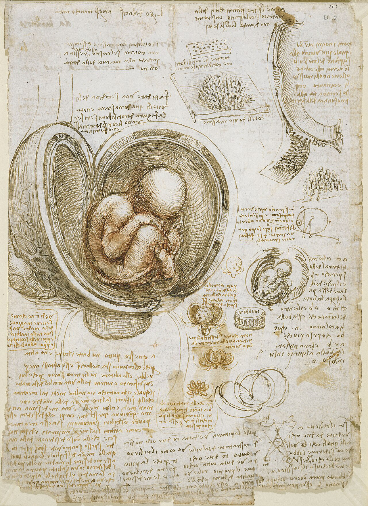
Этюды плода в утробе. Леонардо да Винчи, около 1510–1513 годов, Королевская коллекция, Виндзор. Источник: Wikimedia Commons, общественное достояние (Public Domain).
Высшая карма, карма души. Это путь, который человек в жизни проходит обязательно, «хотите не хотите», ничего не потеряв и нигде не останавливаясь, ради исправления кармы. Это путь кармической души, и ваша воля здесь ничего не значит: эта карма нам не подвластна.
Уровень событий индивидуальной жизни. Здесь карма проявляется конкретно и индивидуально: выходит из бессознательного и вдруг входит в психику — «было всё хорошо, бабах». Выйдя на сознательный уровень, вы начинаете либо с ней бороться, либо её проживать. Бороться с ней бесполезно — её надо прожить.
Есть три цикла жизненного опыта, и все три обусловлены опытом прошлых жизней:
Сознательный и самостоятельный — уровень становления, то, что вы делаете сами.
Взросление — опыт родителей, учителей: «кем я стану, когда вырасту». Это тоже более-менее контролируемый опыт.
Неосознанный — опыт, полученный за границами осознанной самостоятельной жизни: опыт перинатального периода, от зачатия до родов.
То, как мы проходим внутриутробное развитие и роды, складывается дальше в нашей жизни: страхи, борьба, так называемый синдром мёртвого жука, когда мы останавливаемся и замираем, — всё идёт оттуда, из перинатального периода.
Матрицы и руны
Перинатальных матриц четыре:
зачатие и внутриутробное развитие;
схватки — до открытия шейки матки;
прохождение по родовым путям;
роды.
Вся перинатальная матрица принадлежит первому атту. Возвращаемся: все восемь рун, то, что я говорила, — они все принадлежат человеку, мы с этим приходим. Перинатальная матрица — это первый атт.
В каждой матрице работают две руны: одна играет роль инь, другая — ян.
Матрица
Период
Чакры
Руны
Инь / ян
Норма
Нарушение
ПМ1, «матрица рая»
Зачатие и внутриутробное развитие — до начала схваток
Сильный токсикоз, ребёнка не хотели мама или папа; стресс матери. Обжорство или вечный недостаток питания; страх роста, подчинённость, слабый иммунитет
ПМ2, «схватки», «грехопадение»
Схватки — до открытия шейки матки
1-я и 7-я (с 4-й — «три истока сил»)
Туризас Анзус
Туризас — инь Анзус — ян требует сверки
Злость, затем вина проживаются быстро; умение сопротивляться и сказать «нет»; выход боли в эндорфины и слияние с мамой
Затяжные роды — «меня есть за что не любить»; кесарево или быстрые роды — «мной тяготятся»; стимуляция, обезболивание — синдром мёртвого жука, агрессия, проблемы речи
ПМ3, «прохождение», «изгнание из рая»
От открытия шейки матки — по родовым путям
3-я и 5-я
Райдо Кеназ
Райдо — инь Кеназ — ян
Путь, движение, выход агрессии; свет в конце туннеля, харизма, вера в будущее
Застревание, щипцы — «мир причиняет только боль»; упрямство, страх нового; приспособленчество, «только выжить»; повышенная температура
ПМ4, рождение
Выход из мамы и перерезание пуповины
2-я и 6-я
Гебо Вуньо
Гебо — инь Вуньо — ян
Освобождение, адаптация ко всем четырём стихиям, радость
Для второй матрицы учитель прямо называет инь только Туризас («здесь он играет роль инь»); то, что Анзус — ян, следует из общей логики пар, но в записи не сказано.
Первая матрица: зачатие и внутриутробное развитие
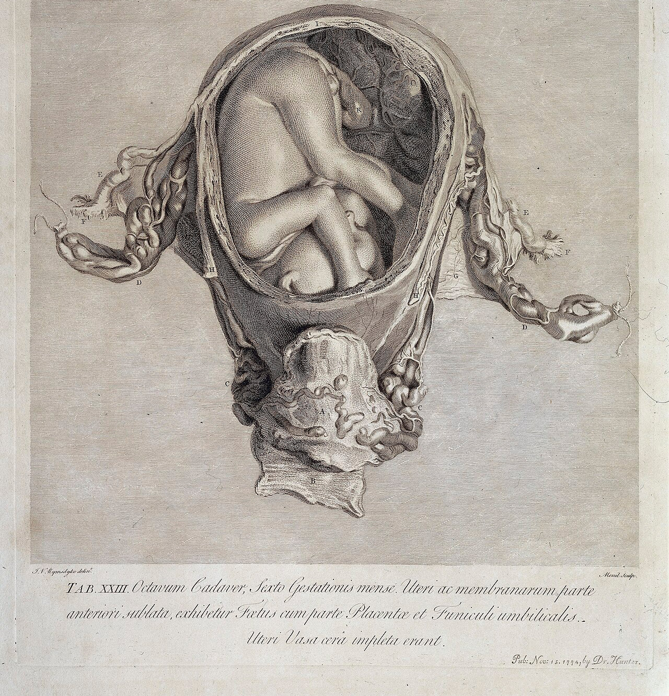
Плод на шестом месяце беременности в раскрытой матке. Таблица XXIII из «Анатомии беременной матки человека» Уильяма Хантера, 1774; рисунок Яна ван Римсдейка. Источник: Wikimedia Commons (Wellcome Collection), лицензия CC BY 4.0.
Первую матрицу называют матрицей рая. Когда происходит зачатие и ребёнок развивается, это в норме океанический рай, океаническое блаженство. Но если в этот период у мамы был очень сильный токсикоз, мама не хотела, папа не хотел — это уже не океанический рай, а нарушение дальнейшего пути по жизни: «оттуда складывается очень много».
Эта матрица относится к четвёртой чакре. В этот момент психика не самостоятельна и не связана с телом: «просто висим в невесомости».
Запомните: каждый человек, каждая букашка, каждая козявка на этой Земле приходит сюда через анахату. По-другому мы сюда прийти не можем. Единственное — у животных выше анахаты чакр нет, это у них высшая чакра, у них всего четыре чакры.
Фео — инь
Фео — женская часть психики человека: тело мамы, которое кормит плод, и он растёт благодаря телу мамы. Это первичные реакции плода на уровне химии тела мамы: по словам учителя, состав крови матери полностью соответствует крови плода. Фео — женское, данное изначально; это инстинкт стабильности: желание стабильности, удовольствия и остаться здесь навеки вечные, в этом блаженстве. Это Фео в нормальном положении.
По Фео человек воспринимает «здесь и сейчас» как вечное и неизменное: есть деньги — значит, они будут всегда; нет — бедность на всю жизнь. Фео связана с Луной, а значит, с цикличностью: это душа, отражающая свет Бога требует сверки.
Перед «отражающая свет Бога» в записи стоит невнятное «по соло» — возможно, отсылка к Соуло, солнечной руне (Луна отражает свет Солнца).
бессознательное стремление зависнуть в состоянии кайфа;
бессознательное желание питания и получения;
бессознательная потребность в накоплении, потреблении и удовольствии; инфантильность и эгоистичность;
неосознанное требование к окружающим заботиться и кормить;
непонимание потребностей окружающих.
Если в перинатальной матрице Фео нарушена, человек уже изначально рождается таким: обжорство, полнота, «такая дородность». Если Фео перевёрнута — всегда будет ощущение недостатка питания, некомфортность базового удовлетворения. Такой человек будет очень сильно терять в весе; это люди, которых вечно подташнивает: булимия, худоба, тошнота, недоверчивость, отторжение того, что даётся извне, без понимания. Если в самом начале, в первой матрице, это уже сломано, всё это с вами и происходит, «поэтому очень важно перинатальную матрицу пересматривать».
В записи сначала про обжорство сказано «если Фео перевёрнута», а затем то же — про недостаток питания. По смыслу первое похоже на гипертрофированную Фео, второе — на перевёрнутую; учитель сама говорит, что у руны есть «нормальный образ, гипертрофированный и перевёрнутый».
Уруз — ян
Уруз — мужская часть психики. Это сила, которая всегда стремится к росту тела и занять собой всё пространство; активное, первичное проявление духа. Уруз всегда будет желать развития и покончить с тем, кто зажимает; всегда будет стремиться обрести свободу своего тела. Это инстинкт развития сознания, инстинкт жизни.
Фео — женская жизнь, Уруз — мужское стремление к смерти, к новизне, к нестабильности: жизнь, смерть и душа в изначальном единстве требует сверки.
Уруз — архетип ледяного потока Эливагар: когда лёд пошёл на огонь, это двенадцать потоков, которые берут начало в источнике, и именно брызги от огня означают жизнь — «это как капли семени, оплодотворения». Подключаясь по Урузу к потоку Эливагар, мы подключаемся к глубинному уровню бессознательного.
В записи — «элевангер», «или вангера». В «Младшей Эдде» Эливагар — ледяные реки, текущие из источника Хвергельмир в Нифльхейме; из их инея и искр Муспельхейма возник Имир. Число потоков — по словам учителя.
Запомните, что Уруз — это сила, которая растёт внутри формы, любой формы.
Итог Уруза:
рост, сопротивляемость, иммунитет;
недовольство имеющимся, вечное «маловато будет», больше и быстрее;
заполнить собой всё доступное пространство: выталкивание и притеснение, особенно сиблингов. Бывает, зарождаются двое, близнецы, и один «пожирает» другого. Иногда спрашивают, почему родной брат выталкивает сестру, — отсюда;
немотивированная активность, гиперактивность, лёгкий переход к агрессии;
нежелание понимать проблемы окружающих;
сексуальная активность, особенно ранняя: «сейчас у деток мастурбация уже и в два, и в три года». В общем, ненасытность в любой сфере.
Я не говорю, что это плохие черты. Уруз должен быть: Уруз даёт нам стремление к успеху, рост, силу стремления. Но есть нормальный образ, а есть гипертрофированный — либо перевёрнутый, который вообще на нуле.
Перевёрнутый Уруз — «с лапками кверху»: податливость, подавленность, страх роста, желание спрятаться. Это будет вечный подчинённый, всё время — страх быть исторгнутым.
Слабый Уруз — это ранние, предварительные схватки, мамы «на сохранении». Если были угрозы выкидыша на 12-й неделе, когда идёт зарождение души, или на 22-й — это слабый Уруз, и на это нужно обратить внимание. Такой человек подсознательно будет бояться быть исторгнутым, будет подчиняться, раболепствовать; особенно это проявится у мальчика. Его девиз — «лучше дольше, но меньше»: он работает за ту же зарплату, лишь бы удержаться на месте, и не может уйти с работы, хотя ему говорят уходить: «он уже изначально по перинатальной матрице в этом состоянии». Это может быть остановка в росте, деградация, неспособность использовать свои силы и способности для развития.
Ситуации, которые разбирает учитель
Мама целый месяц не знает, что беременна, и ест всё подряд, — а это биохимия крови: ребёнок ест то, что ест мама. Потом она узнаёт о беременности, у неё стресс, выбросы адреналина — и маленький эмбрион в самом начале уже сжат. Появившись на свет, при любой опасности он будет сжиматься и закрываться.
Мама радуется долгожданному ребёнку, а папа не рад. Фео у такого ребёнка прекрасная, а Уруз слабый: «это вот эти вечно болеющие сопливые дети», слабый иммунитет — пока он не перерастёт период семи-девяти лет.
Мама хочет, папа хочет, бабушка не хочет. Даже если мама с папой закроют собой, ребёнок всё равно будет прислушиваться к тому, что там, в отдалении, — и это заложится в бессознательное.
Вот почему говорят, что беременная должна смотреть на всё красивое: через Уруз ребёнок получает только рост и силу, а Фео закладывает программу. Как представляешь, так и будет.
Из опыта учителя
«Я свои роды тоже представляла. Я прямо вырисовывала роды — и точно так и было».
Вторая матрица: схватки
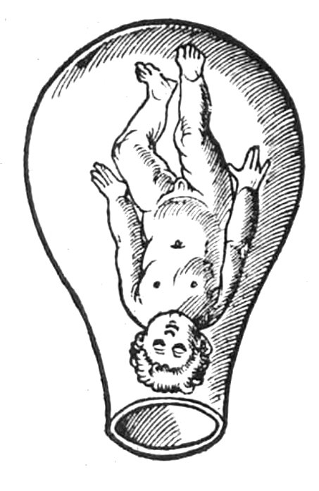
Положение плода головкой вниз перед родами. Гравюра из книги Эухариуса Рёсслина «Розовый сад беременных женщин и повитух», 1513. Источник: Wikimedia Commons, общественное достояние (Public Domain).
Вторая матрица называется схватки, или грехопадение. Это самый тяжёлый, но необходимый период для формирования психики на всю оставшуюся жизнь.
Представьте: открывается матка, стенки сжимают ребёнка, ему больно, не хватает кислорода. До этого его царём и Богом была мама — и вдруг мама его предала. Это униженность, покинутость, одиночество — его покинул Бог, — отчаяние и движение к смерти через жертвоприношение. «Это мы все с вами переживали».
Почему психика думает, что мы умираем? До этого плод — «мы ещё не говорим "ребёнок", это плод» — был полностью слит с психикой и телом матери. Он никогда не воспринимал своё тело как своё и никогда не переживал индивидуальных эмоций: всё — через маму. И вдруг маленькое тело под давлением ощущает себя и понимает, что оно — что-то другое. Самопознание своего тела проходит через боль и давление. Это самое мощное индивидуальное ощущение: «да, боль, но это я, это сознание "я"». А связь с мамой как будто отрезана: кислород затруднён, кровоток затруднён, «я не получаю привычного питания, мне трудно». У него ощущение, что божество-мама его бросает, а значит, она предатель и обманщик.
И здесь вырабатывается первое чувство — злость.
Это очень важно: мы никуда дальше не пойдём, если мы не пережили эту злость.
Дальше возникает чувство вины: «значит, меня есть за что бросать, я плохой». Нормальные роды — до десяти часов, и это чувство должно быстро пройти. Если идут затяжные роды, больше десяти часов, то «меня есть за что не любить, я плохой» сохраняется подсознательно на всю оставшуюся жизнь. Отсюда страх: а вдруг мне не удастся вернуть расположение моей мамы?
До этого у психики была активна только четвёртая чакра. Но боль никогда не живёт в сердце, там живёт только любовь; физическая боль — это первая чакра. Первый план психики управляет телом, а тело — своеобразный ключ, который открывает душе дверь человеческой реальности. Через первую чакру, через боль, мы понимаем, что тело и душа — мои, а не мамины. Схватки — это подгонка ключа к замку мира. Вся психика перемещается из четвёртой чакры в первую, погружаясь из блаженства в боль.
Если это длится долго, такой человек будет загонять себя в работу, чтобы забыть страхи, забыть, что у него есть душа, — «клин клином»: чтобы забыть душевную боль, «иди работай».
Но вот эта боль, которую здесь испытывают и мама, и ребёнок, — запомните: она учит мать отпускать своего ребёнка, когда он вырастает. Это очень важно.
Если схваток не было
Ребёнок, у которого не было схваток, не может опереться на себя и всю жизнь будет считать, что им тяготятся. «Это кесарята». Он будет инфантильным, не будет стремиться вперёд — «к сожалению, так есть», и этому надо учить. То же — если период схваток был очень быстрым, до 20 минут. Такие дети всё время стараются доказать родителям, что они лучше: «я лучше всех учусь, потому что мамочка…»
Из опыта учителя
«У меня тоже было: я за 15 минут родила. Я потом детей учила — я уже знала тогда перинатальную матрицу. Этому надо учить и всё время говорить: "ты мне не в тягость, а в радость". Дать ребёнку понять, что он не в тягость».
Схватки готовят к жизни и физиологию, и психологию. Во время схваток идёт давление на сосуды; давление внутри тела одно, а снаружи, когда ребёнок выходит, атмосферное давление другое. Период схваток подготавливает мозг и сосуды ребёнка к этой жизни. По словам учителя, у кесарят поэтому часто бывают кровоизлияния, микротравмы головного мозга: ребёнок не подготовлен.
Утверждения о физиологии родов, кесаревом сечении, аутизме и обезболивании здесь и ниже — взгляд учителя, изложенный как в записи.
Для психики же здесь человек учится сопротивляться агрессии: гнев, защита своей правоты, своего «я», удар на удар. Если этого нет, возникает то, что в психологии и неврологии называется синдромом мёртвого жука: человек чего-то боится и впадает в ступор, не двигается, у него даже замирает дыхание; потеря сознания при малейшей боли; ступор и потеря контроля над собой.
Эндорфины и седьмая чакра
Когда боль достигает пика, в кровь ребёнка — не матери — выбрасываются эндорфины, естественные наркотики. Психика, достигнув максимального предела, отпускается. «Смотрите: как создавалась Вселенная — что-то сжать, чтобы родить». Психика сжалась, пришли эндорфины — и она расширяется: душа с первой чакры поднимается в седьмую, божественную, на высший план индивидуального «я».
Посмотрите, что получается: от сердца к телу, от тела к духу. Интересно, да? Вот так это происходит, мы с вами это тоже все проходили.
Когда пошла седьмая чакра, схватки запускают всю чакровую систему и активизируют три источника сил: дух, душу и тело. Психика плода расширяется настолько, что старается выйти за пределы боли, и сливается с психикой матери. В этот момент «я-плод» исчезает, возникает «я», осознающее себя взрослым существом — физически, психологически и духовно; «я сливаюсь с Богом, с мамой, с творцом себя». Но маме больно, а у меня боли уже нет, у меня эндорфины. И я — уже как душа, три силы — понимаю, что мне нужно помочь маме: я мешаю, я должен выйти. Необходимо дать жизнь и сохранить себя. Исток боли — «я, плод»: я должен родиться.
Туризас и Анзус
Ко второй матрице принадлежат руны Туризас и Анзус.
Когда Уруз достигает больших размеров — плод вырос, ему ещё надо дозреть, но рост должен как-то остановиться, — приходит Туризас. Он «ложится», переворачивается и закрывает пространство тому Урузу, который уже начинает давить. Здесь Туризас играет роль инь: то, что уже существует, надо принять и удержать. Это сила, которая останавливает и сдерживает Уруз; если она не держит, происходят преждевременные роды. Туризас здесь — остановка и концентрация во времени, чтобы удержаться во время схваток.
Потом приходит Анзус: осознание себя, седьмая чакра, расширение психики, выход из замкнутого тела. Плод сливается с психикой мамы, становится единым с ней и наконец осознаёт, что есть взрослость, что мама — это Бог. Анзус здесь звучит как «я, который хочет быть родителем, но самостоятельным и свободным». И в то же время поначалу Анзус здесь — обманщик, предатель, но ради высокого и великого.
Дальше Туризас поворачивается, разрывает психику плода и рождает психику ребёнка. Вступает Анзус: смерть — жизнь, «я должен родиться, чтобы жить, и чтобы жил мой Бог, моя мама». И следует третья матрица, которая открывается руной Райдо.
Как именно «ложится» и «поворачивается» Туризас, учитель показывала на доске; в записи этого не видно.
Итог Туризаса
сопротивление извне, решимость преодолеть препятствие;
понимание безвыборной ситуации: или выдержать, или умереть;
умение сказать «нет».
Если были нарушения:
бессознательная потребность в статичной сопротивляемости окружению: человек будет сопротивляться и когда надо, и когда не надо;
через болевой шок — выброс адреналина. В норме адреналин даёт выход в ясность сознания, не в норме — агрессию;
постоянно высокое артериальное давление — тоже склонность из перевёрнутой матрицы;
остановка в борьбе — когда схватки прекращаются и роды либо стимулируют, либо делают кесарево. «Любая стимуляция — это тоже гипер»: после большой стимуляции ребёнок будет бессознательно вечно чему-то сопротивляться. Если схватки остановились и ребёнка «кесарят», у таких детей, особенно в подростковом возрасте, часто бывает желание смерти, желание спрятаться, сжаться в точку; активное принятие вины, даже если не виноват; резкие недомогания, отказ от активности без понятной причины;
гипертрофированная болевая реакция, психосоматические заболевания. В какой-то период, например к старости, человек «найдёт» себе болезнь, которая позволяет ему ничего не делать: «вот эти бабушки выдумывают»;
бегство в себя — когда во время схваток плод как будто замирает, а сердцебиение замедляется.
Итог Анзуса
Если эта фаза задержалась очень долго, психика застревает в седьмой чакре:
«мэмзики» — мамкины детки: бессознательное стремление слиться с мамочкой, рассказать ей всё, спать в её кроватке до десяти лет.
Плоды, которые застревают в этой фазе, получают много эндорфинов, а это наркотики, хоть и естественные: такие люди будут склонны к наркотикам и к сексу. У таких детей очень активная речь. «Если вы видите такое в своём ребёнке — присматривайтесь в подростковом возрасте».
Если Анзус перевернулся — что-то произошло не так: подавленное состояние сознания, чувство немоты, блокировка речи, ощущение скрытой боли и слёз. Всё, что касается речевого комплекса.
Могу вам сказать, что 85 процентов проблем с речью, блокировки речи — это неправильная фаза схваток. А я считаю, что 85 процентов аутизма — это стимулированные роды.
И ещё — когда маме дают много обезболивающего: «сто процентов такой ребёнок будет склонен к алкоголизму, наркомании, табакокурению, сексу и разной дряни». Тут же учитель оговаривается: «не все, и далеко не всем». Объяснение: у ребёнка и так полно своих эндорфинов, он больше не чувствует боли, он ушёл из первой чакры в седьмую и должен слиться с мамой и понять, что должен родиться, потому что маме больно. А маме-то не больно — и кровь ещё общая, пуповина не перерезана, значит, ребёнку достаётся и обезболивающее. «Получите, распишитесь».
У детей, рождённых кесаревым, — «полный букет»: их надо учить стремиться в жизни, учить по-другому.
При двойне всегда есть лунный ребёнок и солнечный; если один родился сам, а другого «кесарили», с ним нужно работать по-другому.
Учитель обещает рассказать о лунном и солнечном ребёнке позже («об этом поговорим»); в этой записи продолжения нет.
У таких людей с перевёрнутой руной — постепенное угасание, нежелание двигаться вперёд; часто это проявляется к 25–27 годам. Даже серьёзная поддержка, даже «пинком» — ничего не можешь сделать: дело не в лени, это уже заложено в перинаталке. «Ещё раз говорю: всё можно переделать».
Третья матрица: прохождение по родовым путям
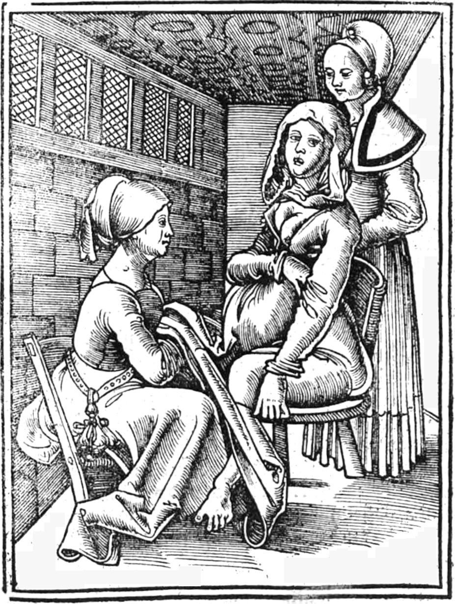
Роды на родильном стуле: повитуха и помощница. Гравюра из книги Эухариуса Рёсслина «Розовый сад беременных женщин и повитух», 1513. Источник: Wikimedia Commons, общественное достояние (Public Domain).
Третья матрица называется прохождение, или изгнание из рая. Она начинается с открытия шейки матки: «наступила Райдо, уже надо идти вперёд».
Стенки матки всё больше сжимаются и выталкивают плод, а плод уже чувствует и знает своё тело. Ребёнок начинает ощущать паравертебральные мышцы, идущие вдоль позвоночника, делает движения змейкой и продвигается вперёд. Наконец-то тот гнев, который был у него внутри, видит выход. Ощущения противоречивые: и боль от движения, и восторг от того, что он может сам двигаться, и возбуждение.
Именно здесь возникает агрессия — «и, папы, запомните, это другая агрессия»: агрессия как способ активного противостояния внешней среде, попытка достигнуть своего за счёт подъёма личной силы, преодолеть препятствия. Именно эта агрессия снимает интенсивное чувство вины, которое было во второй матрице.
Кесарята, по словам учителя, обычно инфантильны: перекладывают на других. Таких деток лучше сразу отдавать в спорт, чтобы они постоянно двигались и не стремились завоёвывать что-то искусственно.
Если вы думаете, что кесарево — это безопасно, вы дико ошибаетесь. Идёт разрез, врач вводит руку и вытаскивает ребёнка; должен быть очень опытный врач, чтобы почувствовать эту маленькую шейку и вытащить. Там ничего не понятно, там кровавое месиво.
Запомните
Повышенное чувство вины, которое ребёнок испытывал во второй матрице, — это блокировка активных действий. А блокировка активных действий всегда будет вести к безумию: гнев — это взрыв агрессии, агрессия должна выйти, а если не выходит — это ведёт к безумию. Вспышка, которая происходит в третьей матрице, — выход агрессии: психика освобождается.
Ребёнок как бы отождествляет себя с проявленной яростью стихийных разрушительных сил: он начинает понимать, что в нём есть силы, которые могут всё разорвать.
Здесь идёт разделение сознания и тела: психика принадлежит рождающемуся ребёнку, а тело — умирающему плоду. Выход из тела мамы равносилен смерти и рождению: умирает плод, рождается ребёнок. Психика это понимает и очень активно толкает плод к выходу; в норме ребёнок быстро движется по родовым путям.
Если ребёнок застрял
Если ребёнок застрял в родовых путях — плохо дело: нет выхода агрессии, и страдает психика. А если он сильно застрял и ещё были наложены щипцы, он всю жизнь будет считать, что внешняя среда — это боль, а люди вокруг будут причинять ему только боль. «Это остаётся на всю жизнь, и никуда вы от этого не денетесь».
Тело ребёнка от трения накаляется, становится горячим, как огонь. Он понимает, что нужно отбросить старое, отжившее, — и идёт. В то же время психика здесь накапливает запас прочности: здесь закладывается самый верхний её предел — то, что вы сможете выдержать на всю жизнь.
Здесь появляется внутреннее «я». Уже не мама, а психика понимает — мало, немного, но понимает: «это я». И это «я» начинает сознательно управлять своим телом, осознавая его: все движения плода сопровождаются сознанием. Три ощущения — боль, агрессия и сексуальное наслаждение — сливаются в чувство активной полноценности.
Активизируются третья и пятая чакры: третья — как необходимость активных самостоятельных действий, пятая — как принятие существующих условий и жизнь в их русле.
Райдо и Кеназ
К третьей матрице принадлежат Райдо — третья чакра — и Кеназ — пятая чакра. Райдо — инь, существующее положение вещей; Кеназ — ян, желаемое состояние. Сжатие тела требует выхода, а выход где-то там, вовне. В этой стадии активизируется архетип сражения и объединённости.
Состояние движения плода — это Райдо, и она связана с тремя основными понятиями:
путь, дорога жизни — от смерти к жизни, от жизни к смерти: понимание, что идёт жизнь — смерть — жизнь — смерть;
«пафосно сказано» — погребальная колесница, несущая героя к погребальному костру; «это Кеназ»;
совет, «рада» — подарок богов. Здесь включаются боги, и здесь будет божественный подарок — свой путь достижения целей.
Если преобладает Анзус
Если в этом состоянии преобладает Анзус — «это кома, короче говоря. Запомните: если Анзус преобладает — это кома, у тебя нет тела».
Райдо — только путь, а Кеназ — как факел: ребёнок реально видит свет в конце туннеля, и Кеназ ведёт его туда.
Запомните, что при выходе из тела ребёнок испытывает первый оргазм. Представьте, что он испытывает: жар, движение и наконец выброс. Это первый оргазм.
Кеназ — руна огня, основа стихии творения; она связана со светом и, помните, с горном и наковальней богов. Здесь рождается состояние любви, влюблённости: отождествление себя с кем-то и старание этим кем-то стать. Если это гипертрофировано, это то, о чём сказано: «не сотвори себе кумира». По Кеназу ребёнок приобретает так называемую силу огня, или харизму, исходящую из человека: сила и внутри, и снаружи человека.
Если Райдо пережата, человек всегда будет искать уже проложенный кем-то путь. «А есть люди, которых сколько ни учи ездить на машине, — это я. Как говорится, топографический идиот».
Если Райдо плохо проработана или не проявлена: «сколько мне ни дадут новизны, я всё равно её в себя не пущу». Как Иерофант в картах Таро — догмы: «если мне скажешь, что у жёлтого есть ещё один оттенок, я, даже если увижу, не допущу»; ничего нового не приму.
Нормальная Райдо — всегда потребность целенаправленно куда-то двигаться.
Перевёрнутая Райдо — ребёнок будет неосознанно упрямым, «просто упрямым, даже со слезами».
Если будет нарушена Райдо вместе с Анзусом — это стопроцентный аутизм, подчеркните это. Если там было 80 процентов, то здесь стопроцентный. Что такое аутизм: мы не можем воспринимать внешние обстоятельства, нет этого «я», и он своё тело не знает — это разделение психики и тела.
Если нарушена Райдо: нежелание, вплоть до истерик, делать необходимое; замирание в движениях, обмороки, непереносимость громких звуков — «это есть аутизм». Всё это принадлежит третьей чакре; аутизм, по учителю, как правило, — нарушение третьей и пятой чакр.
Выше, во второй матрице, учитель называла 85 процентов, здесь — «если там было 80». Цифры и связь аутизма с родами — мнение учителя.
Нарушения по Кеназу
Кеназ принадлежит пятой чакре — это насыщение энергией, желание делать всё вовне, идти с этим факелом к свободе; бессознательное желание что-то изменить — и себя, и ситуацию, и себя в ситуации. Если ребёнок рождался очень быстро, такие дети обычно экстремалы: «это я тоже: Райдо сначала была нарушена, потом я вылетела, — я любой экстрим». Если это сильно выражено, таких надо осаждать уже в детстве.
Если Кеназ нарушена — всегда будут проблемы с температурой: чуть повышенная температура, чувство внутреннего напряжения. Такие люди «сжаты, сжаты, сжаты — а потом разжались».
Зеркальная — приспособленец: «без мыла в жопу влезу», другого выхода нет. Ищет удобные формы движения: «две остановки до работы не пойду, на автобусе не поеду». «Будем считать, что это оптимизация».
Крайний, «клинический» случай: поскольку человек не видел света в конце туннеля, у него будет одно желание — только выжить, всю жизнь только выжить.
Если ребёнок продвигался-продвигался и вдруг Кеназ «встала» — это умирание в ходе движения. Зеркальная — желание умереть, отдохнуть, не быть, ждать, когда всё закончится. Так он будет и в жизни: когда же закончится это собрание, это лето, эта жара, этот холод.
Если Кеназ была перевёрнута или зеркальная — доказанный, по словам учителя, феномен резкого старения при уходе на пенсию.
Пауза в лекции
Перед четвёртой матрицей учитель делает перерыв: «мне читать это тяжело, потому что это всё проходишь, и вы все такие стали — слушать тяжело». И добавляет: психологи с помощью холотропного дыхания могут ввести человека в перинатальную матрицу, но дальше идёт блокировка, и они не знают, что с этим делать. «Доковыряли, ввели человека в ещё большую депрессию, ему всё хуже, и он говорит: больше в жизни не пойду к психологу».
Четвёртая матрица: рождение
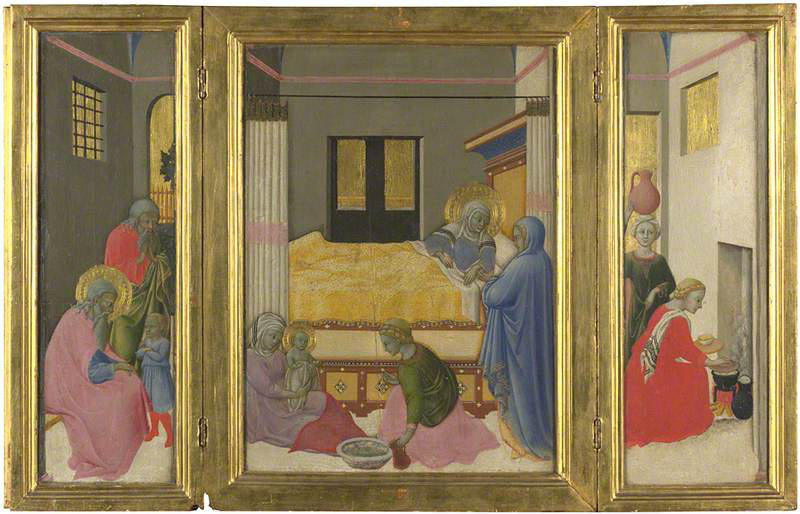
Рождество Богородицы: мать на ложе, повитухи купают новорождённую. Мастер Оссерванцы, около 1440 года, Национальная галерея, Лондон. Источник: Wikimedia Commons, общественное достояние (Public Domain).
Четвёртая матрица — выход из мамы и перерезание пуповины. Она очень короткая и очень важная: здесь конкретно умирает плод и рождается младенец, человек. Максимальное, экстатическое состояние: после всех этих сжатий — всё закончено, вышел. Здесь очень важно освобождение.
Время у младенца совсем другое: то, что нам кажется десятью часами, ему кажется бесконечностью. В первой матрице он лежал, ему было хорошо, океанический рай — а потом наступают вторая и третья, которые кажутся ему бесконечными, и ему кажется, что это будет всегда. Переношенные дети, которые не желают родиться, всю жизнь будут стремиться к такому комфорту, чтобы за ними кто-то ухаживал.
При выходе нужен адреналин. Внутри ребёнок нагрелся, а снаружи температура воздуха другая. Адреналин даёт сопротивляемость организма внешним воздействиям и активизирует все адаптационные системы — «буквально всё, гормональное, всё»; это поможет ему в дальнейшей жизни. Если адреналина мало, получается шок, неадаптация: «он вышел — шок».
Он вышел — эйфория, «я освободился», а тут «бабах» — другие факторы. Во-первых, гравитация: «самый главный стресс, который человек переживает всю свою жизнь, — гравитация Земли». Плюс воздух, бактерии, эфир, свет, радиация: «там в темноте было, а тут — здрасьте». И перерезание пуповины — тоже шок: отделение от мамы.
Из наработок учителя:
Долгие схватки заставляют человека задерживать разрешение конфликтов: есть конфликт — он будет постоянно его оттягивать.
Роды «по сухому», когда воды давно отошли: человек специально пропускает наиболее благополучные моменты для решения, а затем прилагает усилия, чтобы пропущенное вернуть. «Кто-то кого-то напоминает, да?»
Самое интересное: ребёнок не понимает, что родился в пространство. В первый день он понимает, что из одной матки попал в другую, и там тоже должно быть хорошо. А там не хорошо — поэтому есть крикливые дети. А есть такие, которым в первые два-три дня комфортно: летом родился, в тепле, правильно запеленали — пришёл домой и спит. «Мне нравится, а другие: верните меня обратно».
Гебо и Вуньо
К четвёртой матрице принадлежат Гебо и Вуньо.
Гебо — инь: запускает адаптационные механизмы, связь и адаптацию со всеми четырьмя стихиями; ребёнок «кого-то ищет». Гебо сдерживает огонь Кеназа, чтобы он не пережёг: Кеназ нагрел тело, Гебо сдерживает.
Вуньо — ян: руна самоотождествления «я» с новым статусом. «Помните, я говорила: она как флюгер на крыше». Это адаптация, умение получать личное, индивидуальное развитие и удовольствие в условиях адаптации.
Если Вуньо не раскрылась, ребёнок «горланит до года»: памперс меняют — орёт, рубашку меняют — орёт, есть хочет — орёт, ест — орёт. Идут к невропатологу — здоровый ребёнок. У бабушки не орёт, у мамы орёт; купают — орёт, не купают — тоже орёт. Это нарушение чувства радости, осознанной радости от результата. Он всю жизнь будет недовольным: «на улице сорок градусов, по холодному полу прошёлся — ноги холодные, всё плохо, сопли». Как только подумал, что пол холодный, — сопли.
Первые девять дней
Когда перерезали пуповину, — это и радость с мамой, и страх. Раньше ребёнка сразу забирали от мамы. Если его сразу не положить к маме и сразу не покормить — это очень плохо. Класть нужно не на живот, а сюда, на грудь: сердечная чакра к сердечной, «как кошки, собаки наши». «У кого будут внуки, дети — просите, чтобы вам положили вот сюда». Первые девять дней ребёнок очень сильно разворачивается; забирать его в эти дни от мамы, как раньше, — нехорошо.
120 дней
«Это уже немножко не по рунам, это из ведической культуры»: ребёнок считается рождённым только на 120-й день, а до этого, после перерезания пуповины, он ещё считается нерождённым. Мы живём в Кали-югу, и в Кали-югу нам даны 120 лет жизни: каждый из этих 120 дней означает год жизни ребёнка. Что случилось на 34-й день, то может случиться в 34 года. Учитель советует записывать эти 120 дней.
«Я со вторым записала, не всё. И действительно сравниваешь: у меня сын в 32 дня чуть не вылетел из кровати — и в 32 года попал в аварию, но остался жив».
Итог Гебо
Гебо — бессознательная потребность в адаптации.
Если Гебо не проявлена — потребность всем быть хорошим, всем угодить, купить, что предлагают, «без мыла в жопу». Это стремление ребёнка дарить всем подарки в школе. «Есть такие родители».
Если она проявлена слишком сильно — принесение в жертву своего мнения ради собственного комфорта: «мне надо в институт, я точно знаю, что мне надо туда идти, — но это мой комфорт: я лучше посплю, на первую пару не пойду». Так делают и взрослые: звонят на работу — «я в пробке застрял», а сам проспал. «Это не лень, это комфорт. Он такой есть, его не переделаешь: это заложено по перинаталке, по рождению». Договорились встретиться в четыре — приедет в шесть: он и на тебя наложит свою карту комфорта.
Итог Вуньо
Учитель различает зеркальную и перевёрнутую Вуньо: «перевёрнутая — совсем не то». Перевёрнутая Вуньо:
нет распределения приоритетов; состояние панического напряжения неразборчиво;
стагнация в развитии — у тех, кого «вытаскивают», при кесаревом; у детей, которые не закричали сразу: асфиксия, пуповина вокруг горла;
болезни как способ уйти от необходимости что-то делать: «кто набивал в детстве температуру, чтобы не ходить?»;
ощущение невостребованности, нереализованности;
жадность, накопительство, скупость: «всё в дом, всё до хаты», «маловато будет»;
физиологические проблемы внизу живота — геморрой, копчик: «потому что он жадный, он не отдаёт». Либо сильная худоба, трудности с набором веса — «как Кощей над златом чахнет», — либо вес внизу живота.
Из опыта учителя
«Я один раз в жизни попыталась нагреть градусник на батарее — до сорока. Папа держит и ржёт, а мама мне скорую вызвала».
Схема на доске
В конце первой части учитель чертит на доске сводку — «психоматрицы» (ПМ):
ПМ1 — четвёртая чакра — Фео, Уруз.
ПМ2 — первая чакра — Туризас; седьмая чакра — Анзус; в скобках — четвёртая. Здесь три истока сил: четвёртая чакра — ментальное тело, первая — физическое тело, седьмая — атман: дух, душа и тело соединяются.
ПМ3 — третья чакра — Райдо; пятая чакра — Кеназ. Здесь рождается соединение духа неразборчиво.
ПМ4 — вторая чакра — Гебо; шестая чакра — Вуньо.
В записи на месте Гебо звучит «вторая чакра — кино»; по смыслу лекции и по разбору на следующем занятии («по второй — Гебо, адаптация») это Гебо.
А дальше — счастье, но недолгое: за жизненными процессами приходит Хагалаз. Старая, обретённая гармония, счастье обесценивается новыми символами и образами; психика опять разрушает обретённое для дальнейшего развития — чтобы обрести эвфросинию: так греки называли высшее счастье. «Поэтому наша Фрося».
Евфросина (Эвфросина) — одна из трёх харит, «радость». Связь с Хагалазом — см. главу «Руна Хагалаз».
Возьмите лист бумаги — лучше белый, «в клеточку — мне по барабану, но лучше белый». Сначала учитель выписывает для себя порядок цифр — «как номер телефона»: 4 — 1 — 7 — 3 — 5 — 2 — 6. На листе расположены семь чакр, с первой по седьмую. Обводить их нужно в этом порядке, не отрывая руки, — уже из медитации, «не думая: я рождаюсь».
Психоматрица: каждая чакра обводится кружком, переход к следующей — без отрыва руки, в порядке 4-1-7-3-5-2-6 (цифры в кружках — шаги). Слева — прошлое, справа — будущее. Схема составителя: учитель показывала это на доске, изгибы переходов условны — у каждого они ложатся по-своему.
Где на листе располагать кружки и в каком направлении их обводить, учитель не задаёт: важно именно то, как у вас «пойдёт». Как читать нарисованное — в уроке 11.3.
Если у вас маленький ребёнок, три-четыре года, можно взять его руку — он сам будет обводить. Ребёнка постарше можно попросить обвести самому.
Медитация рождения
Практика
Медитация рождения и рисунок психоматрицы
Подготовьте бумагу и карандаш, но отложите их. Выключите телефоны. Попейте воды, сосредоточьтесь.
Положите руки на колени, ноги не скрещивайте. Закройте глаза, успокойте дыхание и свои потоки, не теребите вещи.
Поток земли поднимается и проходит через ваше тело; нисходящий поток опускается.
Увидьте себя такими, какие вы сейчас. Затем — в 25 лет, в 20, в 15, в 10, в 5. Вам три года. Вам год. Десять месяцев, шесть, четыре, три месяца, месяц. Дни.
Перед вами дорога, вы идёте по ней — и ощущаете мать. Вы маленькая точка в лоне своей мамы. Как вам в этом пространстве? Вас хотят или не хотят, вам рады? Уютно или дискомфортно? Вы начинаете расти и ощущаете единство с мамой.
Первый месяц беременности. Второй. Если поднимаются какие-то чувства — слёзы или радость, — отпустите их. Вы слышите где-то звуки, разговоры.
Четыре месяца — вы начинаете шевелиться. Шесть месяцев: ваша нервная система, ваше сердечко. Что вы хотите, то вам дают; её кровь — ваша кровь. Восемь месяцев — как вы себя ощущаете? Вы чётко улавливаете разговоры, звуки. Восемь с половиной месяцев — кому-то, может быть, раньше.
И приходит время схваток — резко. Комфорт — и сжатие. Тревога, обида, злость, непонимание. Боль мамы: что-то меняется. Почувствуйте, что чувствует ваша мама в этот момент: был ли это страх или радость, поддерживали её вокруг или она была одна.
Сжимается ещё больше. Открывается просвет: «мне надо туда, мне надо туда». Вы чувствуете свою боль всей первой чакрой: боль, предательство, непонимание — зачем, почему, куда.
Выброс эндорфинов: вам хорошо, лёгкость. Сознание перемещается в седьмую чакру, вы воедино со своей мамой. Но вы понимаете, что маме больно; чувствуете полностью, что чувствует она. И вы понимаете, что вам надо родиться, и направляетесь к выходу.
Ваше тело начинает работать: «я должен, мне надо». Вы идёте к выходу, тело извивается, как червячок. Вот он, свет, вот там новое рождение. Последняя серия: выход головки, поворот плеча, толчок — и вы рождены.
Вы видите свет, видите счастливое лицо мамы. Всё закончилось. Вас не забирают сразу — или забирают; каково ваше отношение к этому миру? Вас показывают маме. Перерезают пуповину, вас заворачивают в тёплые пелёнки. Вы рады этому миру, рады ваши родители, вокруг радость — девять дней радости: вы родились.
Откройте глаза и в этом состоянии, не выходя из медитации, нарисуйте свою психоматрицу: 4-1-7-3-5-2-6, не отрывая руки.
Первые разборы
Сразу после медитации учитель разбирает рисунки учеников. Принцип: там, где много перечёркнутого, «квадрат», незаконченный круг, — нарушение; эту чакру и нужно корректировать. Главное из разборов (обезличенно):
Психоматрица уходит налево — в прошлое. Четвёртая чакра не обведена до конца, круга нет — нарушение в самом начале: ребёнка не хотели. Если не хотели дважды — чтобы зачинался и чтобы выходил, — корректировать четвёртую, пятую, шестую.
Человек начал рисовать с первой чакры, всё хорошо — «ты долгожданный ребёнок, мама всем своим сердцем лечила весь свой низ, чтобы тебя зачать». Но проблема с родами в третьей чакре: коррекция только третьей.
Из зачатия пошёл в прошлое, круг аккуратный, замкнутый — обычно такого человека призывает род. Много «штучек» на третьей — что-то было с выходом; сбой после выхода — адаптация: коррекция второй и шестой.
На второй чакре — восьмёрка бесконечности: такой человек всегда будет искать партнёра; во время родов ждал, что помогут, — акушерка или кто-то ещё. По Гебо, коррекция второй чакры. Учитель спрашивает и о двойнике: была ли в утробе одна.
«Хотели-хотели, но долго не получалось» — поздний ребёнок, долго зачинался; обвод по часовой стрелке «в конце концов пришёл». Но с выходом, по Райдо, что-то было — коррекция второй и третьей.
Шестая не выведена в будущее — нет радости будущего, «недолюбленность». Коррекция второй и шестой.
Рождение «накручено» очень сильно, видна воронка, слив: перед этим кто-то должен был родиться, но не родился — скорее спонтанно, «может, аборты».
Первая чакра в каплях — «по физике прёшься»: привычка терпеть физическую боль, «если завтра война, если завтра в поход — я всё равно встану и пойду». Коррекция первой.
Седьмая даже не закрыта — человек витает в облаках, нет поддержки свыше; Райдо была большой, быстрой. Коррекция второй и седьмой.
Разрыв между пятой и шестой — каузальное тело оторвано от высших сил: коррекция здесь.
Двойные ореолы — либо второй брак, второй отец, «где у тебя есть конкурент»; чакры наползают друг на друга — изначально что-то пошло не так: коррекция четвёртой.
Большой разрыв на четвёртой — не просто не хотели, а старались избавиться; «но потом вроде как полюбили». Перечёркнута пятая — коррекция четвёртой и пятой, «поменять тело событий».
Человек «из прошлого» — призвал род, очень поздний ребёнок. Перечёркнута третья со второй — страх мамы родить; пострадала Райдо: коррекция третьей и четвёртой.
Желанный, но был шанс абортироваться; с выходом то же — в основном четвёртая и третья.
Четвёртая стоит обособленно, будто её отдельно обвели кружком, да ещё дважды почти по одной линии: «уцепился — хрен сдамся, я буду жить, что бы со мной ни делали». «Это хорошо, это сильно». Но проблема по второй и шестой: «перекрыт наверх».
Вы сами научитесь читать — вы поймёте.
Став психокоррекции
Определив, где у вас нарушение, делают рунический став, чтобы это всё исправить. Его надо повесить на видное место. «У меня это висит, например, во второй чакре моей — в любимой спальне», и учитель периодически на него смотрит. У неё на стене в спальне висит огромная картина с этим ставом.
Делают на дощечке: «можно и картину, но нам нужна энергия земли, а энергия земли — это дерево». И поскольку чакровый столб не круглый, а длинный, дощечка — продолговатая. Круглую можно сделать, если у вас одна чакра: тогда её можно и носить.
Практика
Став психокоррекции на дощечке
Нарисуйте кружок — чакру, которую нужно корректировать, — и внутри знак этой чакры, в цвете чакры. «Каким цветом чакры рисовать, сами знаете. Значки посмотрите в интернете».
Вокруг нарисуйте четыре руны Сол. «Вы такую не знаете», это руна из другого футарка требует сверки. «Сол — это я»: руна, означающая меня, укрепляющая.
Затем четыре руны Соуло — «только, пожалуйста, по часовой стрелке».
Затем четыре руны Туризас.
Затем четыре руны Йера — «чтобы это всё закрутилось».
Если нарушены несколько чакр — рисуйте несколько кружков, один над другим, в их порядке («одна вверху, другая внизу»), и вокруг каждого — то же самое: Сол, Сол, Сол, Сол; Соуло, Соуло, Соуло, Соуло; Туризас, Туризас, Туризас, Туризас; Йера, Йера, Йера, Йера. Можно нарисовать и весь чакровый столб. Например, всё чёрным, а знаки нарушенных чакр — в их цвете: вторая — оранжевая, четвёртая — зелёная.
Повесьте став перед глазами. «Смотря на то, что вы нарисовали, ваше подсознание будет вырывать из вас всё, что заложено по перинатальной матрице».
Порядок рун сверен по записи: «соль соль соль соль, соло соло соло соло, туризес туризес туризес туризес, ера ера ера ера». Руна «Сол» в записи — «соль», «4 стол», из футарка, который звучит как «нартопедический» неразборчиво; возможно, имеется в виду арманический футарк, где есть руна Sol, — требует сверки. Йера в записи — «Ира», «ера», «Гера». Как именно руны расположены вокруг знака чакры (кругом, рядами), учитель показывала на доске и обещала прислать фото; в записи этого не видно — сверить с конспектом.
Ребёнку можно дать обвести став самому — «и ты увидишь». А можно сделать из него красивую картину: «внуку рисовала — у нас это было солнышко, а здесь домик, собачка, птички летят». Нарисовать красиво можно что угодно — но став должен быть.
Когда вы прорисовываете Сол — это вы, это чакра: «пусть она всё это высветит, уберёт, пусть будет круг».
Став можно делать для любого человека — «вы можете на этом хоть зарабатывать».
С маленьким ребёнком: берёшь его ручку вместе с ним, но не дёргай — пусть ведёт сам. Обведёт даже годовасик; учитель вспоминает, что в её семье обводили и в восемь месяцев. Дети, особенно до семи лет, всё это сразу помнят, а вообще человек помнит это примерно до четырнадцати.
Урок 18.3 · по началу записи о Соуло
Как читать психоматрицу
На следующем занятии, перед Соуло, учитель отвечает на вопросы: «что было непонятно в матрицах — с этими сопельками, капельками, полосочками».
Прошлое и будущее
Слева — прошлое, справа — будущее.
Вся матрица слева — «никакого будущего»; вся справа — никакого прошлого требует сверки.
Матрица посередине, а потом уходит вправо — что-то было не так, но в будущем будет так. Уходит влево — был очень большой сдвиг, что-то надо было удерживать.
В записи: «если это матрица вся здесь — никакого прошлого; если вся здесь — никакого будущего»; какая сторона имеется в виду в каждом случае, по жестам не видно. Порядок выше — по логике «слева прошлое, справа будущее».
Четвёртая чакра: хотели или нет
Обвод слева направо — ребёнка долго ждали, долгожданный. Если кружок здесь не закрыт — тоже «долгожданный, его долго ждали» требует сверки.
Если с обвода идёт слив — этого ребёнка не хотели.
Справа налево, из будущего в прошлое — долго не хотели.
Слив в сторону будущего, из прошлого в будущее, — тоже не хотели. Бывает особый слив: хотели сделать аборт, но не сделали.
В первом занятии учитель читала незакрытый круг на четвёртой как «не хотели»; здесь фраза в записи звучит как «если здесь не закрыта — значит, ребёнок долгожданный». Возможно, речь о другом элементе рисунка — сверить.
Фиксация сознания: перекрёсты и восьмёрки
Там, где линия идёт перекрёстом, особенно восьмёркой, было зафиксировано сознание плода. «Ментал зафиксировал тут точку отсчёта, и от этого надо будет уже плясать». Если там ещё и нарастает, линия накручена, — фиксация сильнее.
Вертикальная восьмёрка «ещё не так плохо»: энергия перекручивается, но идёт вверх.
Поперечная восьмёрка — «как будто камень положили»: препятствие.
Примеры чтения
Первая чакра ушла в прошлое. Во время родов была большая боль, и человечек через боль прорывался к седьмой, к высшему, к эндорфинам. Маленький ребёнок зафиксировал своё первое сознание на боли — он будет всю жизнь бояться боли: падать в обморок от боли, его будет тошнить в закрытых пространствах.
Перекрёст на третьей. Хотел очень быстро выйти, но было препятствие; сознание зафиксировалось на Райдо — страх двигаться вперёд. Если здесь уход в прошлое — хотел вернуться в лоно мамы, где всё было хорошо. Скорее всего, было «долго-долго, а потом стремительно». Если это кесарёнок — был нарушен путь выхода.
Третья и пятая сдвинуты. «Сначала долго-долго, потом торопился» — торопыга по жизни: взял, сделал, но не довёл до конца. «Три болта, а четвёртый нам не надо, обойдётся — лишняя деталь».
Седьмая не обведена, эндорфины «пошли-пошли». Такой человек всегда будет нуждаться в дополнительной стимуляции: в худшем случае неразборчиво, в лучшем — ласка мамы или «пинок под жопу». «Полежу, всё сделаю: эндорфины пошли, закончились».
Капелька вниз с пятой образует сдвиг — фиксация сознания плода. Пятая оторвана от шестой — человек не видит, куда идти: ему всегда будет нужна подсказка. «Сильная, пахать будет, но сама не будет видеть, куда».
Восьмёрка на третьей-четвёртой с перехлёстом в пятую — фиксация по третьей и четвёртой.
Первая обведена, боли было много, но боль пошла вверх, в будущее; седьмая обведена дважды, закрыта, «как улитка в домике». Такой человек будет считать: «я не достойна хорошо жить, не достойна комфорта, мне не нужны эти эндорфины, я буду лучше страдать» — будет угождать, лишь бы похвалили, и выпрашивать любви всю оставшуюся жизнь, даже если мама эту любовь давала. «Мне дали одну конфету — я съем её сама, а ты отнесёшь детям». «Эту матрицу можно доковыряться по психологии, а можно так прожить».
Поперечные восьмёрки, всё началось с Кеназа — хотел выйти, но путь был перекрыт: может быть, шейка матки не открылась. Потом пошло по Гебо.
Первая и седьмая связаны, будто ниткой, и похожи друг на друга. Такой человек не испытывает боли — у него «низкий порог боли» в смысле нечувствительности. Он получает кайф от нагрузки: чем больше работает, нагружает тело, тем больше кайфа, как в спортзале до изнеможения. Ученик подтверждает: его отец пьёт кипяток и ничего не чувствует.
Человека не хотели, начато одним цветом, видно слив; много поперечных восьмёрок — все возможные препятствия, но «вы меня не хотели, а я два раза — фиг вам: я должен родиться». Вся структура в прошлом — человека призвал род: «хотите вы, мамочка-папочка, или нет, я должен войти в этот род». Первая и седьмая похожи, капелькой уходят в прошлое — человек очень привязан к семье, помогает всем родственникам, заботится обо всём роде. «С одной стороны, это хорошо; с другой — когда он женится или выходит замуж, он и тогда всем помогает: это называется "иметь весь род"». Здесь нужна коррекция пятой и третьей: по Райдо она видела выход, но всё ей мешало, — «и всё равно пробилась».
Восьмёрка на второй — Гебо, адаптация: при рождении хотелось помощи — акушерки, мамы. В разобранном случае пуповина была дважды обвита вокруг шеи, ребёнок не закричал сразу. Такой человек всегда будет зависеть от помощи извне, где-то не уверен в себе. Если ему попадается хорошая половина, он быстро адаптируется; он рано ищет себе семью, поддержку, партнёрство — «подсознательно ищет себе Гебо».
Слово, которым учитель называет матрицы с «ниткой» между первой и седьмой, в записи звучит как «лакукс», «лавку целлекс» неразборчиво.
ЭКО и кесарево
ЭКО. У детей после ЭКО нарушение будет только по четвёртой матрице; всё остальное — такой же путь требует сверки.
Кесарево без схваток. Путь (Райдо) у таких детей есть, но Кеназ слабый, и нет схваток. У кесарят на исправление идёт всё, что касается периода схваток, — и по рунам, и по чакрам.
Кесарево после схваток. Если схватки были, всё равно есть нарушения: бывает, ребёнок застрял. Этот период у них есть, «у тех вообще такого периода нет»; но начали рождаться сами — и путь выхода всё равно был испорчен. Это путь Райдо, отчасти Туризаса и Кеназа.
Не исключено, что под «четвёртой матрицей» для ЭКО учитель имела в виду четвёртую чакру, то есть первую матрицу (зачатие). Сверить с другими записями.
Правила
Всё это закладывается в подсознание — мы этого не ведаем. Но если нарисовать став и повесить перед взглядом, подсознание за него цепляется, и это убирается, переделывается.
Одна матрица на всех — нельзя. Если в семье двадцать человек — значит, двадцать матриц на стенку. Даже если нарисовать их одинаково, под копирку, каждый всё равно будет смотреть на свою, а мимо остальных будет проходить.
Сомневаетесь между двумя чакрами — «плюньте, нарисуйте обе, хуже не будет». Но все чакры рисовать не надо: если у вас первая, третья и четвёртая — рисуйте их. Располагать можно как угодно: «когда вы начнёте рисовать, ваше подсознание вам покажет, как нарисовать».
Чтобы читать свою матрицу, нужно знать, какой перинатальный период в какой чакре и какая руна. Положите рядом листочек со схемой, которую учитель рисовала в конце лекции. Главное — первая матрица даёт соединение трёх вещей: тела, сознания и духа; «от этого и пляшите».
Маленький ребёнок, который ещё не держит ручку, — можно сделать во сне. Посадите его на колени, пусть заснёт; прижмите анахату к анахате, закройте глаза — «и вы его менталом нарисуете». Если ребёнок может держать карандаш — то же самое, рука на руке, но не держите и не ведите.
Объяснять ничего не нужно. Просто скажите: обведи это, это, это — 4, 1, 7 и так далее. Если вы знаете о матрице и просите человека её сделать, вы уже подсознательно вводите его в это состояние. «Что вы расскажете двух-трёхлетнему: тут мама с папой, а тут ты рождался?» Так и психолог просит нарисовать «каляку-маляку» и не говорит, что это детские грёзы из подсознания.
Руна солнца, победы и героя: прожектор, который высвечивает всё и выводит туда, куда вам надо.
Занятие началось с разбора перинатальных матриц — см. главу «Перинатальная матрица». Здесь глава начинается с того места, где учитель переходит к руне Соуло.
В записи руна звучит как «соло», «соула», «савила», «совило». Учитель поясняет: «Совило — старое название, потом уже стало “солнце”. Иногда я называю её Соло, иногда Совило — выберите сами». В литературе — Соулу, Совилу, Sowilo.
Место
8-я руна второго атта; закрывает второй атт
Чакры
Седьмая, пятая, третья и первая
Боги
Бальдр; богиня Соль; Тор
Стихия
Воздух и огонь
Управитель
Меркурий
Цвет
Голубой и золотой
Числа
25 и 5
Дерево
Бересклет
День
Воскресенье
Миры
Ключ к Альфхейму; переход Альфхейм — Свартальхейм
Строение
Два Кеназа; руна необратимая, ствола (оси личности) нет
Мантра
неразборчивотребует сверки
Амулет
24.07–08.08; кисет жёлтый; воскресенье; на дереве
Мантра Соуло в конспекте не записана, в лекции не звучит.
Руна солнца
Соуло связана с седьмой, пятой, третьей и первой чакрами — и с телами: седьмая — атман, божественное; пятая — каузальное тело, тело событий; третья — астральное; первая — физическое. Дух, душа и тело.
Руна солнца, Совило. В тебе солнце, и его лучи идут туда, куда ты захочешь. И я свет, и я истина.
Это одна из необратимых рун. А если руна необратимая, она является ключом к какому-то миру и переходом между мирами. Соуло — ключ к Альфхейму и переход между Альфхеймом и Свартальхеймом. Альфхейм — мир светлых, божественный мир: там информация, запрещённая к исследованию. Доступ к ней через божественный канал имеет только тот, кто очень хорошо проработал руну Альгиз, кто нашёл своего Бога.
Это руна победы, света, героя, солнца, осознанности, целостности. Соуло — это солнце: она освещает всю идею, всё пространство. «Ты есть то, что ты наблюдаешь». Она выводит всё на энергетический пик, собирает в одну точку, и вы, как герой, высветитесь.
Кеназ — тоже руна огня, но он только показывал путь: это факел. А Соуло — это жизнь, всё в ней.
Соло закрывает второй атт. Если вы гармонично прожили все 15 рун, Соло в вас развернётся по полной программе. Если вы нашли своих богов, вы вытащите знания, которые были запрещены, скрыты в этом мире. Соло — это «я такой один и неповторимый». Это герой, единственный и неповторимый. Она как луч: просто выведет вас туда, куда вам надо.
Руна включает режим солнца — именно внутри себя. Учитель называет её прожектором реальности: «С Кеназом вы идёте с факелом, и он отбрасывает разные тени на стены — можете испугаться. А прожектор освещает всё: некуда больше деться, нет больше страхов».
По своей энергетике руна прожигает все наши тела — входит буквально во все, из атмана вниз. У неё нет оси личности, а руны без оси принадлежат всем: её ось незримая. «Победа для всех».
Схема по словам учителя в посвящении: из аджны вектор вправо-вверх в проекцию сахасрары, влево-вниз в вишудху (каузальное тело), вправо-вниз в манипуру (астральное), влево-вниз в физическое тело; верхний конец уходит в атман, нижний — в землю. Точный рисунок на доске в записи не виден.
Боги и соответствия
Бог этой руны — Бальдр, сын Фригг, которого убили стрелой из омелы. Бальдр — это свет, весна, лето, природа, всё доброе, всё, что цветёт и пахнет. Без Солнца нет жизни: на нашей земле жизнь олицетворяет Солнце.
В записи «байдер», «амел». Бальдр в Эддах погибает от побега омелы, брошенного Хёдом по наущению Локи.
Боги в разных культурах — одни и те же энергии: Один, Шива — много имён у мужской энергии; кто «пуляется молниями» — Зевс, Перун. В каждой религии только по-разному сказано.
Богиня Соль и Мани — Солнце и Луна. Названия почти не отличаются во всех культурах — и в ведической, и в славяно-арийской. Ещё богом этой руны считается Тор.
В записи «соль и мун». В Эддах Соль — богиня солнца, Мани — её брат, бог луны.
Стихия — воздух и огонь. Управитель — Меркурий.
Меркурий, запомните, — это ораторство. Но Меркурий — единственная планета, которая даёт любое расширение во всех возможностях: расширение знания, расширение добра, расширение торговли. Любое расширение — это Меркурий. И у Меркурия цифра три.
Числа руны — 25 и 5. Цвет — голубой и золотой. Дерево — бересклет: «посмотрите, оно очень интересное».
Время для работы с Соуло: 8-е и 27-е лунные сутки; с 7 по 22 июля; четверг, с двух до трёх. Если всё это ещё совпадает, руна будет для вас как огненный талисман.
В записи: «8 и 27 лунные сутки, из 7 по 22 июля, четверг с двух до трёх… ночь… 14, 15 — это солнце». Что такое «14, 15» и ночь это или день, неясно требует сверки.
Кто родился в Советском Союзе, помнит: «Светить всегда, светить везде, до дней последних донца, светить — и никаких гвоздей! Вот лозунг мой — и солнца!» Маяковский. Реально будете светить.
Сила и свет
Соуло применяется практически во всех ритуалах красоты, особенно похудения. Она даёт не только похудение, но и фигуру: с ней можно и прибавить, и отбавить.
Каждый талант, каждое знание само по себе ничего не стоит. Именно Соуло поможет таланты и знания проявить. По пятой чакре, по каузальному телу, хранятся таланты, дхарма, предназначение. Если вы рисуете картины «в стол» — вы не выполняете предназначение. Придёт Соуло, придёт какая-нибудь Маша: «что это у тебя такое, картины?» — и понеслась душа на ярмарку.
Банально — жизненная сила, целеустремлённость, яркая мотивация, внутренний свет творчества.
Ясность мышления и видения. Обычно оно ограничивается настоящим, а Соуло даст понимание будущего: человек начинает видеть смысл, сколько материала туда вложить и как это высветить — «за одним гвоздём не вкладывать коробку гвоздей».
Соуло, как и Райдо, не будет спрашивать: пришла — и сказала «пошёл». Только Райдо ещё протаптывает дорожку, а Соуло осветит всё прожектором и скажет, куда идти. Солнце остановить нельзя: пришло время светить, а не сидеть подпольно и что-то изготовлять.
Знак Соуло
У кого-то, когда приходит время Соуло, в ушах раздаётся хлопок или удар кнута, щелчок хлыста в воздухе. «Не пугайтесь: это пришла Соло. Она влетит в вашу жизнь таким вот ударом хлыста».
Соуло — спусковой крючок. Учитель сравнивает её с «Дубинушкой»: «Эх, ухнем… сама пойдёт» — она сдвинет с места всё, что нужно, и пойдёт как ком. И с тем, как бабушки пускали нитку на перемотку: сама пойдёт и вас не спросит.
Ключевые слова: победа, руна победителей; могущество; руна царей, руна высшей касты; целостность; руна мысли; руна озарения, «эврики»; руна, позволяющая по-своему увидеть свой мир и окружающих.
Предостережение: прожектор
Если прожектор Соуло высветит какую-то бяку — не расстраивайтесь. Это как лазер: заметив бяку, она её тут же выжжет, «как бородавки». Будет достаточно мощная персональная трансформация. Не бойтесь этого.
И в то же время она даёт очень много силы. Осенью, в дождь, Соуло не даст впасть в осеннее состояние: «всё хорошо, фигня нам этот дождь». Учитель называет её витамином D в прямом смысле: «запишите: Соло — витамин D». По её словам, низкий витамин D — это как жизнь на нищенскую зарплату: прожить можно, но особо не разгуляешься.
Свойства самой руны: мгновенно исполнять задуманное; мощный бросок на реализацию своих планов. Сидел-сидел: «хочу харчо, хочу харчо» — и харчо есть. Не обязательно варить самой: какая-нибудь баба Маша из третьей квартиры скажет «хочу сварить, хочешь?» Это и есть реализация.
Предостережение: «я — это сила»
Внутри будет ощущение «я — это сила». Его старайтесь немножко придерживать: это как Red Bull — пьёшь, пьёшь и добился. Как и Уруз, Соуло лучше включать в став. Для мальчиков одна руна может быть хороша, а девочкам «в горящую избу входить» не надо. Как отдельный талисман можно носить Альгиз и Соуло или просто Соуло.
Поскольку руна связана с каузальным телом, это руна ораторов и ведения за собой. «Гитлер был не дурак»: он использовал руны не по-хорошему — у него даже были отделы для этого.
Сдвоенная руна Соуло была эмблемой СС; учитель упоминает это как пример злоупотребления рунами.
Учитель называет Соуло руной возможных невозможностей — и одновременно руной надежды, светлого будущего: зимой появится ощущение, что скоро лето.
Светлые и тёмные альвы
Руна управляет Альфхеймом — миром светлых альвов, — а переход ведёт к тёмным альвам. Тёмные альвы — любители пошутить, прикинуться волками и разными гадостями. Соуло будет их высвечивать: все гадости, подклады, тёмные стороны души — и, как лазер, убирать и уничтожать.
А если вы хорошо дружите с богами по руне Альгиз и достаточно прошли все 15 рун, она поднимет так называемые неопознанные, тёмные знания, которые скрыты там, куда простому человеку без богов не попасть. А знания эти очень нужны.
Самое интересное, девочки мои хорошие: сидишь, свечку зажжёшь — и откуда ни возьмись: «Уходи на Чёрное болото… не возвращайся…» Заговоры будут рождаться сами по себе. Запомните: заговор, созданный самим, работает в тысячи раз лучше, чем если вы будете как попки повторять чужой. У Степановой хорошие заговоры, прекрасные книги — но она их также и сочиняла, и собирала.
Наталья Степанова — автор популярных сборников заговоров.
Задание
Заведите тетрадь для заговоров — отдельно от гримуара.
Когда появится непонятное состояние, «что-то не то», поставьте свечку, посмотрите на неё и включите диктофон: в потоке Соуло вы потом свой заговор не вспомните. Потом перепишите то, что создали.
Это и есть изначальные знания, которые в нас вложены. Раньше не было таблеток аспирина, а в деревнях каждая женщина знала, какой листик сварить — и какой подложить мужу, чтобы не пил.
Учитель отвечает на вопрос, что значит «хорошо прошли все руны»: когда вы получаете посвящение в руну, она вплетается в вашу матрицу — проживаете вы её хорошо или плохо. Если пропустили посвящение в какую-то руну, она в матрицу не вплелась.
Ментальное тело и будущее
Соуло убирает ментальные блокировки и очень хорошо чистит ментальное тело. В перинатальную матрицу, которую рисовали на прошлом занятии, была вплетена Соуло — «теперь поняли, для чего».
Чистит не только сегодняшний момент, но и опыт прошлых жизней, прошлых воплощений. Сначала высветит фонарём — во снах, в книге, «в тиктоке какая-то фигня», появится ощущение «я это знаю, я это уже проходил», — и тут же уберёт. Поэтому во всей работе с менталом, с родом, с кармой применяется Соуло.
Всё, что касается будущего, она покажет: «вот это было так, будущее может быть так, а мы сделаем вот так». Её ещё называют наковальней, ковкой будущего — когда сама куёшь свою судьбу.
Очень сильно активизирует подсознание и вытаскивает коллективное бессознательное — прошлый опыт всего человечества: у руны нет ствола, она принадлежит всем.
Проявление
Нормальное проявление: чёткое представление, какое будущее мне надо. Это одна из лидерских рун — руна лидера, победителя.
Такой лидер объединяет людей общей целью.
У него много возможностей, много идей и их реализации, высвечивания. Это человек, который выводит тонущую фирму, — кризис-менеджер.
Обычно оптимист, но настойчивый. Любит быть в центре внимания, очень привлекательный, любит шик, яркий, харизматичный: «если это мужик, то даже потёртые джинсы у него будут красиво потёртые».
Непроявленность:
очень низкая собственная самооценка — и очень низкая самооценка людей, которые рядом;
нелогичность, много фантазий, в которых нет воплощения;
«рыцарь кубков»: комплименты за комплиментами, нереализованный романтик, весь в иллюзиях — как герой «Двенадцати стульев»;
переменчивое настроение: то плачу, то смеюсь. Так бывает у подростков, у женщин в критические дни и в беременность: это руна огня. В менопаузу руна сильно затихает.
Есть и мужская пауза — лет в 45. Вы думаете, у мужчин нет климакса? Такой же, как у женщин. Это когда ваш мужчина вдруг: «А я никуда не пойду, буду сидеть дома на диване, сходи одна». Помочь мужчине — пендель.
Соуло — это и митохондрии: они дают радость жизни, скорость. Дети подвижные, потому что митохондрии у них быстро размножаются. До 21 года — прогресс, с 21 начинается регресс, после 30 их всё меньше, к старости ещё меньше — отсюда заторможенность. Восстанавливать митохондрии можно физической нагрузкой, спортом по возрасту — «10 тысяч шагов: давай, бери свою палку, и пошли».
Гипертрофированная руна: нелогичные идеи и фантазии; самодур, эгоцентрик, начальник-деспот — «есть только моё мнение»; подавление, манипуляторы, нарциссизм — «всё это гипертрофированная Соло».
На физическом теле: проблемы с нервной системой, особенно с вегетативной; с пищеварением (Соуло — наш огонь пищеварения); с синхронизацией с природными ритмами; с гормональным обменом; щитовидная железа; тимус, вилочковая железа — иммунитет.
Вилочковая железа — вот она, два пальца здесь. У детей она большая, защитная, у взрослых регрессирует, но всё равно отвечает за иммунитет. И ещё за грудь — и мужскую, и женскую: от неё зависят онкологические заболевания и лимфатические. Если страдаете иммунитетом — повесьте сюда кулончик с Соло, маленькую деревяшку.
Соуло — ещё и руна сновидений и руна силы духа.
Богиня Соль
Богиня Соль олицетворяет жизнь: источник жизни, света, победы, богиня победы. Учитель вспоминает и Нику, богиню победы, — по её словам, единственную богиню, которая принадлежит только женщинам-Водолеям. Соль — это щит и оберег: защита от тьмы, от болезней, помощь в битве с тёмными силами, с болезнями, «в общем, от всякого зла». Она олицетворяет также плодородие и безопасность. «Боги-энергии по-разному называются, суть у них одна».
Применение
В бизнесе
Руна победы в делах. Позволяет выделиться среди конкурентов и победить.
Если только открываете бизнес — даёт прорыв. Очень хороша на тендеры.
Развитие бизнеса; помогает с трудоустройством.
Если бизнес идёт хорошо и нужно «что-то ещё» — позволяет сделать дочернее предприятие, чуть-чуть другое, которое будет приносить прибыль и будет не в тягость, а в радость.
Тем, кто работает не на себя, например в госструктурах, — подъём по карьерной лестнице.
Вообще руна Соуло — это весь денежный аспект; а также справедливая компенсация.
В записи в начале раздела звучит формула «рор сус… соло, ура, соло» — возможно, Соуло и Уруз требует сверки.
В любви
Чистый поток любви, переходящий в удачу. Есть любовь мужчины к женщине, а есть общая любовь — это Соуло. Её ставят в спальнях, в дружбе, на удачу.
В целительстве
Вся сердечно-сосудистая, эндокринная, пищеварительная и нервная системы. Соуло способствует активизации всех сил; очень хорошо ставить её в период выздоровления.
Предостережение: сначала силы
Если видите, что пациента можно вылечить, но сил у него сейчас нет, — целительством можно его «только пришибить». Сначала дайте ему силы, а потом приступайте.
Три написания
Строение: Соуло — это два Кеназа. Кроме классического, у неё есть ещё два написания.
Классическое написание — два Кеназа. Второе написание «для других» в записи не описано. Вариант с двумя стволами — реконструкция составителя по словам учителя: левый ствол — я, правый — другой человек, ветка идёт от левого к правому.
Учитель рисовала все три написания на доске; в записи видно только, что их три. Форма второго написания и точный рисунок ветки в варианте с двумя стволами — сверить с конспектом требует сверки.
Классическое — два Кеназа. Его пишут в основном для себя.
Второе — для других: «это я пишу для мужа» неразборчиво.
С двумя стволами — тоже для других: для «меня, красавицы», а также для родных и близких. Учитель оговаривается, что в прошлой группе это написание не давала.
Два ствола — два человека. Левый — это вы, правый — другой человек. Ветка, идущая от левого ствола к правому, позволяет одному человеку своим сознанием назначать другому какое-то качество — на уровне физики, но не только: и лирики, и психики. «Ты самая добрая, самая хорошая».
Пример учителя
Ученица хочет сбросить вес. Учитель представляет себя и её и с нижней ветки посылает: «Смотри, через три-четыре дня у тебя будет 49 килограммов». Рисовать не обязательно — можно представить, а хочешь — нарисуй.
Руна с двумя стволами не оборачивается: «если я хочу для хорошего». Ею можно передать и жизненные силы.
Предостережение: два ствола в ставе
Если увидите такое написание Соуло в ставе, либо читаем «ага, вор», либо игнорируем эту руну совсем. Почему? Два ствола — один из способов перебросить своё на другого: вес, жир, разные болезни. «Если у одной кривые косые глаза — пусть будут у другой». Учитель шутит, что одна ученица готова забрать у неё «три килограмма с живота и бёдер»: договориться можно, кому что надо.
Развитие бизнеса; приём на работу: «возьмут ли меня?» — Соуло: возьмут.
Очень хорошее здоровье.
В записи «конанги», «коминги» — конунги, скандинавские вожди и короли.
В магии
Руна врачевания: врачевать можно было по Кеназу, можно и по Соуло.
Усиливает любые заклинания, какие бы они ни были. Её можно ставить и впереди, и сзади.
Ставится в зеркальных защитных ставах. Учитель показывает защиту, похожую на защиту с Альгизом: если поставить в неё Соуло, «Кеназ высвечивает факелом, а Соуло — как прожектор: высвечивает, защищает и досвечивает».
Даёт энергию любым рунам.
Для победы, для силы.
Восстановить энергетику: после ритуала бывает, что ты настолько высосан, что ничего не хочется. Нарисуйте Соуло пальцем на воде и сразу выпейте.
Для обострения интуиции, проницательности, прорицания.
Защищает положение человека в социуме, придаёт статусность: руна конунгов, вождей.
В защите — так называемый щит солнца.
Применяется для чисток: исцеляет повреждённую энергетику, выжигает негатив.
В финансовой магии помогает бизнесу, накоплению денег, «чтобы тебя все видели», карьере, самореализации.
Для крепкого физического здоровья; очень хороша в период регенерации — вплоть до клеточного уровня.
Помогает накоплению психической энергии: при больших ритуалах или большом давлении сохраняет психику, помогает не сорваться. Перед большим ритуалом её лучше нанести. Она накапливает магический потенциал, усиливает чародейские силы.
Предостережение: не носить долго
Долго носить Соуло в амулетах нельзя: она может «пережечь», как если долго быть на солнце. День походить — хорошо, потом лучше снимать.
Тор и быстрая обратка
Руна связана с Тором, богом-громовержцем (громовержцы — и Перун, и олимпийский Зевс). По этой руне можно взывать к Тору о справедливости, о защите и помощи в бою. Ритуал с Тором учитель обещает дать позже — «с Локи я вам дала».
Как в ведической культуре обращаются к Чамунде, когда нужно быстрое возмездие, так и здесь: если нужно быстро дать обратку — Соуло, Тор и Тейваз, и вперёд.
В записи «в чамандре» — вероятно, Чамунда, грозная форма богини Дурги требует сверки.
Прям то, что мы с вами рисовали, — Соло и Тейваз. Я представляю и обращаюсь к Тору — и обратка летит по щелчку. Как прожектор, и эта стрела попадает туда, куда надо. А если ты не прав, она уйдёт, как ракета, куда-нибудь в другое место, или вообще не выстрелит, или тебе покажет. Думаешь на Петю, а виноват Вася — она не полетит к Пете, полетит к Васе. Или так: не знаю, кто виноват, чувствую — пошли, Тор, всё.
Короткие практики
Подъём перед делом. Начертите Соуло в воздухе перед каким-то делом и вдохните. Начинается мгновенное расширение эфирного тела, усиление восходящего потока (снизу, от земли, вверх) — сразу почувствуете подъём настроения и силы.
Увидеть ложь, рассеять туман. Нарисуйте Соуло пальцем, слюной, на любом предмете в комнате, если чувствуете, что идёт что-то непроглядное, морок. Она даст понимание.
Для тарологов. Если понимаете, что идёт закрытие, ключ, — нарисуйте Соуло на скатерти, и ключ снимается.
Амулет и детектор правды
Практика
Амулет Соуло
Время — с 24 июля по 8 августа. День — воскресенье.
Руну рисуют на деревяшке. Кисет — жёлтого цвета.
Это амулет раскрытия света истины. Его носят те, кто постоянно сталкивается с враньём на работе или дома: ревизор, аудитор, следователь, судья.
Практика
Детектор правды
В воскресенье — именно в воскресенье: Соуло — это солнце, а солнце — воскресенье — незаметно пометьте руной Соуло место, где обычно сидит неискренний человек: под столом, на столе, на сиденье.
Если человек часто пересаживается, оговорите его: «Василий Иванович Пупкин — как только сядет…» — а не «весь офис, пьющий чай на этом месте».
Ему будет очень сложно скрыть истину: либо будет извиваться, как червяк, либо скажет правду, откроет своё истинное лицо.
Формулы
Учитель зачитывает несколько формул с Соуло и их назначения; подробно она просит переписать их из её записей вместе с заклинаниями.
Формула (по записи)
Назначение
Вуньо, Соуло, Дагаз требует сверки
Помощь в тяжёлых минутах
Тейваз, Соуло, Уруз требует сверки
Успех в сложном деле
Соуло, Отилла
Сила для выхода из кризиса; выход в условиях конкуренции; универсальная формула — какая из трёх формул для чего, по записи не установить
Тейваз, Уруз, Отилла, Соуло требует сверки
Соуло, Эйваз, Альгиз, Эйваз, Соуло требует сверки
Зеркальная чистка — себе, другим. С рядным заклинанием; делается дома
Формулы в записи звучат обрывочно: «а в унисола дага с помощью тяжелых минутах», «успех сложным деле тв соло урус», «соло аттила», «б ты вас урус аттила соло», «соула эйвос альгиз и его соло». Учитель упоминает, что «вся эта тройка» относится к повивальным, родовым рунам. Руны восстановлены по созвучию; сверить с конспектом. Заклинание к формуле чистки в записи не зачитано.
Формула Вуньо — Соуло связана с Кайросом — древнегреческим богом счастливого мгновения. По Соуло это мгновение можно поймать, «как солнечного зайчика». Практику учитель проводит после посвящения — см. «Практика: Кайрос».
Заклинания
Заклинание
Как работать
Звучание
Заклинание лидерства
Настроиться на нужную цель или задачу и произнести
«Суарт энхара»
На волшебном
Учитель произносит его во время посвящения
«Онотор еро евви орт есси. Оллу ерт со суби. Еро но тори ессо, еккор есс. Ивис, онор еро»
Звучание сверено с конспектом ученицы. В записи посвящения слышно «а натор эро эви ос… иви оно… сосуды эллен ра» и «сорт and Hara» — это те же два заклинания, распознанные с искажениями.
Итоги второго атта
Соуло закрывает второй атт, и учитель подводит итоги.
Руна
Мир
Хагалаз
Хель
Наутиз
Йотунхейм
Иса
Нифльхейм
Йера
Мидгард
Эйваз
Свартальхейм
Перто
в записи не названо
Альгиз
Принадлежит асам требует сверки
Соуло
Альфхейм
В записи «альгиз принадлежит кому — а сам», прочитано как «асам». В лекции об Альгизе учитель говорит, что руна управляет переходом Нифльхейм — Свартальхейм и связывает наш мир с мирами асов.
Все руны второго атта расположены в нижней части Древа, и все они представлены дважды: один раз как ключ к какому-то миру, второй — как переход.
Все эти руны двойственны: с одной стороны описывают качество, с другой — процесс. Первый атт — только наши качества, а здесь уже идёт процесс.
Из них только Альфхейм относится к информации, все остальные — к группе миров требует сверки.
Второй атт показал, насколько важно наше личное сознание для работы над собой. Это были инструменты: грабли, лопаты, газонокосилки, карандаши, бумага — «кто что выберет». Инструменты, чтобы переделать качества, вплетённые в вас по первому атту, и пробудить в вас все древние силы.
Задание
Сочинить сказку (или рассказ) о рунах первого и второго атта. Не нужно просто переписывать значения — нужно понять руны.
Можно написать или наговорить в чат голосом: «всем будет интересно».
Прислать в четверг после йоги, то есть после девяти вечера. «Сказки вам не избежать».
Сказка, которую начинает учитель
Жила-была по Фео девушка — жила себе, не тужила. Сильная была, красивая — по Урузу, умная — по Анзусу. Пришло время — и пошла она в путь-дорогу, по Райдо. Пришла к перекрёстку и никак не могла решить, куда идти: «налево пойдёшь — Кеназом будешь». А на перекрёстке появился человек с фонарём — Кеназ — и говорит: «Пойдём со мной, девушка-красавица, будешь женой моей» — по Гебо…
Имя героини в записи звучит как «Неля»; путь-дорога как Райдо — по смыслу. В записи учитель говорит «вы должны понять эти руны».
Посвящение в Соуло
Практика
Посвящение
«Я есть». Восходящий и нисходящий потоки. Дыхание, успокоение, принятие энергии.
Всё внимание переносится в межбровье, в аджну.
Из аджны проведите вектор вправо и вверх под углом 45 градусов — солнечный вектор, магическое тело, в проекцию сахасрары.
Продолжите вектор из аджны влево и вниз — в каузальное тело, в вишудху.
Из каузального тела — вправо и вниз ещё один вектор под 45 градусов, в астральное тело, в манипуру.
Оттуда влево и вниз — ещё один вектор, в физическое тело и в землю.
Верхний вектор уходит глубоко в атман, нижний — глубоко в землю. Идёт энергия солнца, энергия жизни: она соединяет верх и низ, землю и Бога.
Вращайте руну по часовой стрелке на каждом выдохе: «Руна Соуло, я тебя знаю, узнай меня. Ты — это я, а я — это ты».
Учитель ведёт: это чистая, добрая, замечательная руна. Она наполняет вас теплом, позволяет раскрыть внутренний потенциал: радость, свет, жизнь, гармония, наполнение. «Жизнь во мне, жизнь в тебе, жизнь на земле». Звучит заклинание на волшебном.
«Почувствуйте, как зажигается внутри ваша жизнь, как хочется дышать, жить. Руна Соуло — руна жизни, руна победы, прожектор жизни. Да будет так». Звучит «Суарт энхара». Откройте глаза и нарисуйте руну.
Практика: Кайрос
Кайрос — бог счастливого мгновения. Учитель сравнивает практику с просьбой к Фортуне «повернуться передом».
Практика
Поймать Кайроса
На листочке перед собой нарисуйте руну Вуньо и рядом руну Соуло: сначала Вуньо, потом Соуло.
Снимите заколки («ведьма колдует без заколок»), очки, часы — чтобы ничего не жало. Руки положите на колени. Выровняйте дыхание.
С закрытыми глазами активируйте перед собой руну Соуло, как будто она конкретно перед вами, и руну Вуньо.
Станьте стволом руны Вуньо. Сделайте намерение — про себя или вслух: «Я эхолокацией ловлю своего бога Кайроса за его чуб — счастливого мгновения».
Верхняя ветка Вуньо включается как эхолокатор: сигнал идёт во все стороны, появляется состояние поиска. Кайрос есть везде.
Как только появится чувство радости — поймали. Нижней веткой, как петлёй, как лассо, захватите его и впустите в ствол, в себя.
Почувствуйте поток энергии удачи: счастье, радость, шаловливость — что-то очень подвижное.
Соедините этот поток с руной Соуло и скажите: «Руна Соуло прописывает в моём подсознании, в событиях моей жизни постоянный поток удачи. Удача всегда со мной». Слова можно придумать свои.
Возникает чувство радости, уверенности в себе, немножко детской игривости. Посмотрите, как Кайрос вас благословляет: его маленькая частичка остаётся в вас.
В этом состоянии откройте глаза и обведите руны ещё раз; можно дорисовать то, что увидели, — «как звезда», как получится. Можно нарисовать руну на руке и походить с ней или положить листочек при себе.
В записи «за его щуп» — по смыслу «за чуб»: Кайроса изображают с чубом на лбу, за который ловят удачный миг требует сверки.
Теперь понятно, как работает Вуньо: как эхолокатор ищет то, что вам надо, и втягивает в ствол. Эту практику можно делать и для другого человека — только со стволом тогда ассоциируется он. У учеников, по словам учителя, «торкнуло» — у кого-то пошли слёзы, у всех появилось состояние шаловливости.
Копьё, которое не знает возврата: руна победы, прорыва и справедливости, открывающая третий атт.
В записи руна звучит как «тейваз», «тейбас», «тэйваз», «ты вас», «тэвис», «Тевес», «тейлос», «дей вас»; в литературе — Тейваз, Тиваз, Тюр, Tiwaz.
Место
1-я руна третьего атта; открывает третий атт
Бог
Тюр
Знак зодиака
Овен
Планета
Марс
Стихия
Воздух и огонь
Цвет
Фиолетовый или красный
Таро
Император и Правосудие
Камни Овна
Алмаз, горный хрусталь, циркон, гематит, обсидиан; металл — железо
Миры
Переход Свартальхейм — Муспельхейм
Природа
Мужская, Ян; женская пара — Беркана
Строение
Кеназ и Иса; пишется из седьмой чакры в первую
Группа
Руны победы: Фео, Хагалаз, Тейваз
Мантра
«Тэй»
Амулет
07.04–21.04; кисет красный; вторник, на закате требует сверки
Девиз
«Я рождён, чтобы побеждать и преуспевать. Я рождён для победы»
Мантра сверена с конспектом ученицы. Данные амулета в записи звучат одной скороговоркой: «7 0 4 по 21 0 4 красный кисель во вторник на закате дня воином овном» — «кисель» прочитан как «кисет»; сверить с конспектом.
Перед руной учитель разбирает два ритуала, описание которых она заранее разослала ученикам: ритуал с красной нитью и снятие ведьминой свечой. Про свечи в рассылке сказано, что учитель смазывает их своей кровью: «Хотите — смазывайте, хотите — не смазывайте».
Нить, которая снимает
Есть каббалистическая красная нить, но «каббала от нас далеко: мы живём совсем в другом мире». Красная нить у нас повязывается как оберег. Но нитью можно и снимать — болезни, лихорадки и всё остальное.
Практика
Снять нитью
Возьмите нить от своего клубка — красную или чёрную, без разницы.
Намотайте её на руку от себя семь раз, неплотно. Оторвите от клубка.
Завяжите узлы: на один, на два, на три — лучше от трёх до семи. С каждым узлом говорите: «Это уходит».
Проведите ритуал и говорите своими словами, своими заговорами: «Отвались, отгребись» и так далее.
Сорвите нить с себя и сожгите.
Нить, которая снимает, мы отрываем или перекусываем. Всё остальное перерезаем — ножницами или ритуальным ножом. У каждого должны быть свои ритуальные ножницы.
Красная нить на запястье
Нить, которую мы носим на запястье, — заговорённая. Её не отрывают, а отрезают от любого клубка ножницами. Можно взять одну нить или три (для косички) — больше трёх не надо; для косички берите нить в два раза длиннее.
Практика
Красная нить и кольцо
Отрежьте нить и храните её при себе от трёх до семи дней, не расставаясь с ней.
Возьмите любое кольцо, которое потом сможете носить. Пропустите через него нить семь раз — неважно, сверху или снизу. Смотрите, чтобы нить не запуталась и не завязалась: «запомните, узлы, которые завязываются, не развязываются».
Кольцо с нитью держите при себе ещё от трёх до семи дней, ни на минуту не выпуская: когда ложитесь спать и даже в душе — пусть намокнет. Кольцо в это время не надевают; его можно положить в карман или в пакетик, но не вешать.
По прошествии этого времени размотайте нить. Кольцо остаётся у вас талисманом.
Повяжите нить на запястье: если кольцо будете носить на правой руке — нить на левую, если на левой — на правую. Завяжите семь узлов, сами или попросите близкого человека. На каждый узел можно загадывать свои желания.
Носите нить, пока она не оборвётся. Оборвалась — сожгите.
Такую нить делают только для себя.
Кольцо можно носить постоянно, а можно надевать, когда что-то очень нужно, — какой-то важный случай, приболели. Кольцо и нить заговорены вместе: «это кольцо будет давать этой нитке указания».
Ритуал повторяют раз в год или раз в три года — с тем же кольцом. Надоело кольцо — купите новое и проведите ритуал заново.
Завязывать нить может только тот, кому вы полностью доверяете, но не ребёнок младше 14 лет: он не имеет права вам ничего делать и завязывать.
Нить лучше брать натуральную: синтетика при пережигании «воняет ужасно».
Попутно учитель предупреждает: никаких деревянных крестов, особенно в машинах.
Косичка и узлы
Запомните: никаких первых узелков в узелковой магии не бывает, мы их не делаем. Первый перехлёст — это не узел, это просто перехлёст. Помните, мы завязывали ленточки на деревьях, и когда вы завязываете мешок на девять узлов — то же самое.
Возьмите три нити и плетите косичку к себе, не от себя, приговаривая.
В начале косички узелка нет, на конце тоже не должно быть. Остался кончик — подожгите или обрежьте, «по барабану».
Потом повязываете косичку и завязываете семь узлов; концы можно пережечь.
Нити, привезённые из Израиля, — «это каббала». От чего-то они берегут, но желаний не дадут. Есть нити, которые кладут к святыням (учитель упоминает Деву Марию) и заговаривают специальным ритуалом. Если очень хочется, возьмите три каббалистические нити и проведите тот же ритуал: можно пропустить через кольцо все три, а можно одну, остальные положить рядом. Получится амулет-кольцо и красная нить.
Где именно ученики «завязывали ленточки на деревьях», в записи неясно («кто был в покое нам») — видимо, общая поездка. Мешок на девять узлов — из прошлых уроков.
Ведьмин тройник
Есть свечи, которые делают на определённый ритуал. А когда мы что-то снимаем, свечи должны быть одного цвета, или среди них должна быть чёрная, или только чёрные. Это называется ведьмин тройник. Учитель берёт только чёрные, и желательно, чтобы они полежали определённое время в травах: тогда они не щёлкают.
Практика
Ведьмин тройник
Возьмите три свечи. Можно две красные и одну чёрную; на бизнес — одну чёрную и две зелёные. Но именно три — не пять и не шесть.
Держите их вместе и начинайте скручивать от себя, как бы с середины: свеча сама будет завиваться. Ведьмину свечу крутят двумя кулаками.
Пока скручиваете, трижды читайте заговор — классический или своими словами (см. ниже).
Наверху остаются три кончика. Поджигайте их одной спичкой, если получится: сначала один крайний, потом другой, центральный — в последнюю очередь. Начинать с центрального нельзя. Поджигают тоже трижды.
Низ ведьминой свечи не залепливают: она ставится так, потому что низ тоже должен сгореть. Поставьте её в соль — куда хотите; учитель обычно ставит перед собой. Можно соль с перцем.
Окно должно быть открыто, или делайте на природе: то, что снимается, должно куда-то уходить.
Если остались огарки, их можно просто засыпать солью.
Трещины. Треснет свеча или нет — по барабану. Если треснула, считаем, в каком месте: например, на четвёртом витке — значит, что-то было четыре года, четыре месяца или четыре дня назад. Если туда ещё стечёт капля — там точно что-то было.
Когда. В любое время: в три-четыре часа ночи, в двенадцать дня, в любую Луну. «Если ты чувствуешь на себе гадость — ждать не будешь».
Для другого. Тройник можно делать другому человеку и даже ребёнку — тогда говорите «замыкаю его, закрываю её».
Что снимает. Этой свечой можно снять и очень серьёзную кладбищенскую магию, и привязки.
Как идёт работа. Свеча иногда начинает не сразу: «пока раскочегарится», потом ещё стрелять начнёт. Учитель стирает занавески раз в месяц: «там иногда такая копоть летит — вот она пошла работать». Она вспоминает «Вечера на хуторе близ Диканьки».
Учитель показывала, что основание скрученной свечи («ножки») образует один из ведьминских знаков, и попросила сфотографировать его для чата; в записи знак не назван («по ножкам у вас образуется три гамма»). Сверить с фото. Где в записи «какой-то парк» после стекающей капли — слово неразборчиво.
Малый ритуал и масла. Учитель напоминает ритуал с одной свечой, который ученики уже делали: если хотим, чтобы ушло, — крутим от себя, вниз; если чтобы пришло — к себе. Масло наносят так же: хотим прироста — наносим наверх; хотим убрать — вниз. То же, когда пишем имена и желания: в одну сторону — чтобы пришло, в другую — чтобы ушло. Ведьмина свеча делается по-другому: она просто скручивается.
Классический заговор
Заговор читают трижды, пока скручивают свечу, — это обязательно. Можно своими словами, например:
Очищаюсь, отмываюсь, удаляюсь. Назад возвращаю: откуда оно пришло, туда оно и ушло. Кто тебя послал… неразборчиво на болото, на чёрные кочки.
А вот классический заговор. Учитель прочитала его вслух трижды и не дала сразу фотографировать: «Я должна была вам озвучить, при озвучке эти слова в вас впелись». Текст ниже восстановлен по всем трём прочтениям.
На Божьем дереве, на Божьей ветке видела я Слово Божие, читала словеса требует сверки заветные. Одеваю крепкую броню, замыкаюсь Божьим замком, закрываюсь ризой Божией требует сверки.
Никому не околдовать меня, не испортить, колдовством не сгубить: ни ведьме рыжей, ни ведьме седой, ни бесстыжей, ни ведьме молодой, ни хромой требует сверки, ни чужой, ни ведьме родовой; ни той, что сороковой псалом читает, ни той, у которой хвост вырастает, ни той, что на икону плюёт требует сверки, ни той, что ходит задом наперёд.
Ваши дела меня не касаются, ваши колдовства мужчин? разбиваются. Со мной крест Господень, со мной все святые в ряд, рядом со мной стоят, меня защищают, от всех ведунов, колдунов, колдуний ограждают.
Кто будет на меня колдовать, кто будет мне в спину шептать, на кладбище меня сводить, на кладбищенской ограде губить требует сверки, кто будет на моё имя требует сверки колдовать, под дверь мёртвую воду подливать, кто на неразборчиво будет неразборчиво, кто на сковороде будет калить требует сверки, кто в церкви будет губить, кто через трубу будет меня изводить, кто след мой будет вынимать, — того заберёт Божья рать требует сверки.
Тайным словом замыкаю, печатью смыкаю. Усичаш. Да будет так. Во славу Божию.
Три прочтения в записи сильно искажены; текст собран по совпадениям. Варианты: «словенца заветной / словенца заветное / свинца заветная» → «словеса заветные»; «закрываюсь Лизой Божией / реже Божий / из-за Боже» → «ризой Божией»; «не видно хорошо / неверие хромановой» → «ни хромой»; «родовой / мировой» → «родовой»; «на икону клюёт / икона клюёт / он плюёт» → «на икону плюёт»; «ваши колдовства мужчины сбивается / мужчин разбиваются» — слово перед «разбиваются» не восстановлено; «на кладбищенская ограде купить / на улической ограбить / на кладбищенко ограбить» → «на кладбищенской ограде губить»; «на море / на мой или колдовать» → «на моё имя»; «кто на горе будет выпить / выехать / в Томском районе» — не восстановлено; «на сковороде будет креветка / крыть / клеить» → «калить»; «Божья рай / Божий ра» → «Божья рать»; «у сейчас / усичаш» — закрепочное слово. Сверить с фото текста, который учитель обещала переслать.
«Усичаш» учитель объясняет так: есть слова-замки, закрепы — «ключ, замок, язык». Ставя такое слово, вы ставите замок на свою работу. Можно просто сказать «Аминь» — этого достаточно; «усичаш» — одно из старых закрепочных слов.
Источник слова «усичаш» в записи звучит как «из агм агмы, читайте сами, я вам давала когда-то» требует сверки.
Читать можно по бумажке, но не в первый раз видя текст. Пару раз прочитаете — он сам пойдёт в голове, и слова возникнут тогда, когда вам надо.
Читают очень быстро, про себя, почти шёпотом — в свечу; свечу можно держать в руках.
Заговор очень сильный: учитель, читая его, сама чувствует, как начинается очистка, — «это автоматом».
Колдовские замки
Любой хороший мастер ставит на свою работу замок. Чёрная свеча, когда пошла работать, снимает и замки, но для замков есть и отдельный заговор. Достаточно своими словами: «Колдовские замки я ломаю, открываю, не проглядывая. Покажись, уберись».
Практика
Снятие замков: «фишка» учителя
Начните скручивать свечу. Мысленно примите, что там есть замки и печати: хороший мастер их оставляет.
Скажите: «Все колдовские печати, замки, заговоры я снимаю». Прочитайте заговор один раз.
Скажите, что вы замки снимаете. Прочитайте заговор ещё раз.
Скажите, что вы колдовские замки сняли. Прочитайте заговор в третий раз.
«То есть: я хочу снять, я снимаю и я их сняла».
Предостережение: читать без запинки
У вас всегда должна быть тетрадь: поэтому в старых книгах и фильмах открывалась книга и по ней читалось. Читать надо без запинки. Если поперхнулись, что-то забыли или перескочили — начинайте сначала. Есть обряды, в которых дана только одна попытка, есть попроще — с тремя. «Не забивайте себе башку заговорами: есть классика, она быстро читается».
В третий атт входят руны Тейваз, Беркана, Эваз, Манназ, Лагуз, Ингуз, Отилла и Дагаз. Третий атт посвящён получению реальных жизненных результатов.
Первый атт — то, что в нас уже вплетено. Он пробуждал силы, вложенные в человека изначально. «Помните, как было в первом атте трудно: кто-то в обморок упал». Что-то было открыто, что-то не раскрыто — «ковырять консервную банку было очень тяжело».
Второй атт раскрывал личностные качества, которые мы должны развивать всю жизнь. Это наши инструменты, орудия, оружие: грабли, лопаты.
Третий атт — это уже конкретно ваши способности, которые должны раскрыться. Это способы и методы, уже ментал, которым мы можем всё это открыть. «От метода зависит, какие грабли вы возьмёте».
Тейваз — сила управления двумя первыми аттами. Сила и мудрость у вас уже есть по двум аттам, а включив в себя Тейваз, вы получаете возможность всем этим управлять. Поэтому учитель начала не с третьего атта, а с первого: к третьему приходят только те, кто полностью прошёл первые два, «иначе это то же самое, что учить азбуку, выдрав четыре буквы».
Учитель называет инструменты второго атта словом, которое в записи звучит как «дарбарики», «дарбарис» требует сверки. Итоги второго атта — в главе «Руна Соуло».
Боевая руна, руна победы
У меня просто я Михайловна, и Архангел Михаил у меня ассоциируется с мечом и со стрелой почему-то. И у меня Туризас и Тейваз всегда идут вместе, поэтому я их иногда путаю в названии. У кого-то она ассоциируется с Амуром, со стрелами, а у меня именно так. То есть это руна боевая.
Это руна победы. К рунам победы относятся Фео, Хагалаз и Тейваз — первая колонка: Фео открывала первый атт, Хагалаз — второй, Тейваз открывает третий. Каждая колонка составляет свою группу: учитель упоминает руны речи, повивальные руны, исцеляющие; подробно обещает рассказать позже.
Первую группу в записи учитель называет «руны прибоя» требует сверки. Повивальные руны упоминаются и в главе «Руна Соуло».
Атт
Руна первой колонки
Первый
Фео
Второй
Хагалаз
Третий
Тейваз
Это одна направленная мужская руна, Ян; женской будет Беркана — Инь. Но женщинам не надо её бояться: мы её тоже должны применять, «даже для того, чтобы дать звездюлей, кому надо».
Овен и Марс
Мантра — «Тэй».
Знак зодиака — Овен. Камни Овна: алмаз, горный хрусталь, циркон, гематит и обсидиан; металл — железо.
Стихия — воздух и огонь.
Цвет — фиолетовый или красный.
Планета — Марс. «Марс — это не только бог войны. Есть Марс и Арес: бог войны — это Арес, а Марс не всегда бог войны, это две разные вещи». Энергии Марса — мужские, огненные, стремительные.
Таро — Император и Правосудие. «Правосудие — помните, с двумя…» — отсюда у учителя ассоциация.
Я рождён, чтобы побеждать и преуспевать. Я рождён для победы. Это её девиз.
Копьё не знает возврата
«Копьё не знает возврата с траектории». Кто-то считает эту руну стрелой; учитель считает, что это копьё. Ещё она называет её «Через тернии к звёздам»: это руна пробоя, прорыва.
Тут я себе написала: это сперматозоид, устремляющийся к яйцеклетке. Их же там тысячи летят — и вот из них первый, кто внедрился, уже прорывает. Вот такая у меня ассоциация с этой руной.
Тейваз — это правда и успех, а также пожертвование (подчеркните). Это воин, защита, победа и дух.
Свартальхейм и Муспельхейм: управление эмоциями
Тейваз управляет переходом Свартальхейм — Муспельхейм: гномы и огонь, то есть земля и огонь. Но в то же время это руна воздуха и огня.
Человек из Свартальхейма обладает выдержкой, интуицией, бизнесом, пониманием своих целей — чего он хочет конкретно. В Свартальхейме люди учатся управлять эмоциями и направлять их в нужное русло. Свартальхейм — эфирное тело; Муспельхейм — то, что за гранью сознания, мировые течения.
Учитель напоминает об обязательной к прочтению книге «Поле эмоций» требует сверки — название в записи: «обязательное к прочтению да поле эмоций».
Эмоции управляют не только эфирным, но и физическим телом. Здесь уже метод управления эмоциями — а значит, конкретными действиями и намерениями. Марс — горячая планета: может психануть и выдать, «психанул — всё пошло насмарку». Но Марс же даёт силу жизни, дух, воинское начало, прорыв к своим целям.
Это ещё и руна пожертвования: любой воин должен жертвовать — своим временем, здоровьем, собой. И руна эмоций: сдерживание и управление как метод.
Всегда можно сделать лучше — спокойным лицом, тихим голосом. Потому что когда мы начинаем кричать, у другого человека закрывается ширма. А когда мы тихие — как вы сейчас притихли — и начинаем управлять своими эмоциями и направлять их в хорошее русло, и ваш ребёнок станет по-другому. Вот это и есть Тейваз. Я чем-то пожертвовала, но я сделала то, что должна была сделать.
Так по Тейвазу мы сможем пробиться, управляя своими эмоциями, «тихой сапой».
Тейваз учит, как в жизни нужно драться, сопротивляться, сражаться, настаивать, достигать, опрокидывать мешающие нам препятствия — и одновременно восстанавливает справедливость. Тейваз — это принесение своей жизни на алтарь победы: «это уже воин совсем». Руна нордическая, холодная, мужественная по духу.
Дух и кровь
В ней сочетаются дух и кровь, решимость и самопожертвование.
Это преданность идее: воин всегда будет предан идее.
Руна жизненных сил, активной жизненной энергии (подчеркните). Её ставят, когда хотят пробить депрессию: «как витамин D в улучшенной форме».
Это одновременно дух и тело. Хорошее здоровое тело без духа — ничего хорошего; хороший дух без тела — тоже. Только когда здоровы и тело, и дух, будет настоящее здоровье. Только через дух и тело идёт прокачка энергии, и руна помогает её прокачивать.
Марс, или Арес, — символ страсти и активной сексуальной энергии.
Учитель советует прочитать греческие мифы — как Афродита любила не мужа, а Ареса, и муж застал их вместе на ложе, так что все видели, как они там лежали. «Интересуйтесь всем остальным».
Миф пересказан в записи обрывочно. По Гомеру («Одиссея», песнь VIII), Гефест, муж Афродиты, поймал её с Аресом невидимой сетью над ложем и созвал богов посмотреть.
Чтобы человек что-то получил, он сначала должен проявить какую-то энергию. «Это и есть красота Марса».
Перевёрнутая руна и тёмный ряд
Перевёрнутая Тейваз — неуправляемые эмоции. Если поставить её в ставе вниз, мы вызываем человека на то, что не надо.
Мужчины, это ваша руна. Просто представьте: он идёт наверх. А если перевернуть — у него «полшестого». Но это я вам не говорила. Если мы переворачиваем, то в зависимости от оговора — слушайте меня внимательно — можем либо вызвать «полшестого», либо вызвать где-то скандал.
Предостережение: тёмный ряд
Если сочетать руну с её перевёрнутым положением («так и так»), это уже тёмный ряд, «совсем нехорошо». От чёрных рун, от чёрного ряда отмыться невозможно — их можно только перебить белыми рунами. Тёмный ряд так не применяется: только если человек очень сильно заслужил. Это исключение; учитель рассказывает о случае тяжёлого преступления, когда, спросив разрешения богов, она применила чёрный ряд.
При работе с чёрным рядом всегда говорим: «на усмотрение высших сил». Даже если вы не знаете, кто виноват, а только догадываетесь, — на усмотрение высших сил: они там решают. Подробнее о чёрном ряде — на втором курсе.
Подробности истории учителя сознательно не включены. О чёрном ряде см. также главы «Руна Кеназ» и «Руна Хагалаз».
Прорыв
Тейваз всегда будет приближать человека к чему-то новому и лучшему. Это стрела, которая летит точно в цель. Если вы определили цель, руна не будет менять траекторию при всём своём желании — «как ядерная боеголовка».
Этой руной можно упредить удар. Это боевая руна; она всегда ставится в защитах — практически в 90 процентах защитных ставов.
Она всегда будет вливать в вас новые энергии и новые методы, покажет, как по-новому запустить стрелу.
Тейваз всегда будет раздвигать ваши рамки — рамки сознания и рамки возможностей.
Учитель символизирует её выстрелом из пистолета или метанием копья: «выпустил пулю — всё».
Я иногда с пафосом рассказываю, потому что это одна из действительно хороших рун — и боевых, и целебных, и победы. Если мы находимся в состоянии Тейваза, поверьте мне, никакие препятствия вам не страшны: он пробьёт любую стену. Вы должны стать этой руной.
Отступление: Самайн
Учитель уезжает на две-три недели и даёт наставление на Самайн — Велесову ночь, «это и Хэллоуин». Сидите дома, с семьёй. Накройте два стола: один — для родственников, для рода, второй — для себя. Они же приходят, хотят, чтобы вы посплетничали, хотят всё знать — как две сестры, которые сто лет не виделись. Свой стол можете убрать, а их стол оставьте до рассвета, а потом всё красиво уберите под дерево. И не разрешайте своим детям шляться куда не надо.
В духовном проявлении Тейваз — это прорыв вашего духа: вы начнёте наконец понимать, куда вам двигаться, в какой институт поступать, что вам надо менять.
Из опыта учителя: волшебный пендель
«Есть такое выражение — волшебный пендель. Когда я даю человеку волшебный пендель, я ему эту стрелу запускаю». Достаточно представить, что Тейваз подняла человека и понесла — туда, куда надо. Учитель делает так и на приёме: человек уходит, а она представляет это и мысленно провожает: «иди, дорогой». Работает очень хорошо; одна из учениц так же делала, когда помогала с учёбой.
Тейваз есть в каждом из нас. Без неё «будете сидеть, как замороженные, в пещере». Ещё раз: Тейваз — руна победы, подчеркните.
Тейваз организует хаос: свой внутренний хаос — в порядок, и ведёт к своему внутреннему «я». Соуло только освещает; Соуло — это средство, это жизнь, силы у вас есть. Но если не будет Тейваза, чтобы вы пошли по этому солнцу, — не будет ничего. Тейваз — уже метод, как достичь своего Соуло, своего внутреннего «я».
Перед этим учитель говорит, что «всё-таки проведёт» ученикам что-то про «13 стихий», чтобы понимали, что такое хаос, — в записи неясно требует сверки.
И Тейваз соединяет воинское могущество с колдовскими знаниями — это тоже подчеркните.
Руна королей и справедливость
Тейваз называют руной конунга. Учитель уточняет: это руна королей. Посмотрите на гербы королей — практически везде вы увидите эту руну: меч, рапира, всегда колюще-режущее. Считалось, что только короли могут судить, и судить справедливо.
Главная магическая функция Тейваза — восстанавливать справедливость (подчеркните).
Знаете, как восстанавливать справедливость? Не будь овцой. А если будешь овцой — перевернут. Тейваз будет помогать только тем, кто не будет овцой.
Тюр
Тейвазу покровительствует бог Тюр. Он означает правосудие — беспристрастное правосудие. Учитель говорит, что Тюр был прежде Одина требует сверки и правосудие у него было полностью: он не мог его нарушить.
Бог должен быть физически без изъянов и полностью справедливым. Локи родил волка — Фенрира. Тюр вырастил этого волчонка, он ему обещал и соврал — значит, уже априори не может быть богом; плюс волк откусил ему руку. Но Тюр остался богом справедливости, остался в Асгарде.
Тейваз — это полностью Тюр: и справедливость, и беспристрастность, и воинская доблесть, и пробивание к цели. «Он ведь прекрасно знал, что так будет, — и это самопожертвование: он положил себя. Он мог этого не делать и остался бы у власти».
Почему Один одноглазый — помните? Он заложил свой глаз.
В записи имя звучит как «тюр», один раз — «Торн»; «асгартел» — Асгард. Волк не назван по имени — по Эддам это Фенрир. По Эддам, Тюр вложил руку в пасть Фенриру как залог того, что в путах нет обмана, — и лишился её, когда волк не смог освободиться. Один отдал глаз Мимиру за глоток из источника мудрости; в записи «заложил свой глаз в меру» — вероятно, «Мимиру». Реплика ученика о боге, который «детей всех ел», учителем отклонена.
Тейваз с Райдо и Туризасом
Тейваз и Райдо. Тем, кому надо выиграть судебный процесс: открыть дорогу. Судебный процесс — это справедливость, Тюр; пробить дорогу. В больших концепциях Тейваз с Райдо — пробивание дороги, но если речь о суде — справедливая дорога. Победа законным способом: «поэтому я говорила, что в суде рисуем Райдо».
Тейваз и Туризас. Тейваз — больше дух и интеллект, а Туризас — первый атт, физика, характер: значит, будем пробивать всё. «Не будь овцой — это называется». Если мы хотим наказать человека — мы его пробьём, как оговорим. А если хотим поставить защиту — ставим Тейваз и Туризас.
Классический защитный амулет: два Туризаса по сторонам, соединённые с Тейвазом, — «получится такой красивый ромбик». Точный вид учитель рисовала на доске.
Это классика жанра, самый защитный амулет; многие делают его татуировкой.
Это одно из классических заклинаний Одина. Всего их 18 — разберут на втором курсе; пока учитель дала 10.
Кто-то рисует его иначе — «смысл один».
Если что-то нужно, просто нарисуйте его на руке или на ремешке — неважно, женщина вы или мужчина.
Расположение Туризасов (шипами друг к другу) — по описанию «два Туризаса с этой стороны и с этой, и мы это соединяем»; сверить с конспектом. Восемнадцать заклинаний Одина — вероятно, отсылка к «Речам Высокого» (Хаваммал), где Один перечисляет 18 заклинаний. Об альтернативном написании в записи: «тогда это Вера» — неясно.
Разница между ними: Туризас — достижение цели, когда ничего не берётся в расчёт. Туризас — великан, «ему похер». А Тейваз действует в рамках системы, в рамках закона.
Сказка-экзамен
Перед перерывом учитель объясняет задание со сказками. Когда ученики их писали, каждая пройденная руна ещё раз вплеталась в их энергетику. Многие написали свой жизненный путь — это тоже хорошо. «Вы представляете, сколько из своего подсознания вы выбросили этими сказками! Даже тот, кто про котят писал, писал своё подсознание».
Задание
Сохраните свою сказку. В конце третьего атта учитель по ней даст каждому его руну, и с этой руной вы закончите свою сказку — совсем по-другому. Это будет экзаменационная работа.
Кто ещё не написал сказку — написать до воскресенья.
Задание сочинить сказку дано в конце второго атта — см. главу «Руна Соуло».
Строение
Строение учитель подробно не разбирает: в руне есть Кеназ и есть Иса. Одна палочка вниз — из седьмой чакры в первую: мы идём из атмана к физике. Пишется руна вниз — не пишите наверх. Из физики наверх — это когда мы делаем «что-то такое». Левая сторона — прошлое; пятое, каузальное тело — тело событий, в будущее.
Если мы пишем из седьмой в первую, руной управляют боги: «Она летит туда, она освещает».
Ствол — Иса, ось личности, из седьмой чакры в первую; от макушки под 45 градусов — два вектора до плеч (Кеназ). Так руна выстраивается в посвящении.
Положение пятой чакры на схеме условно. После фразы о богах в записи: «представляете, из икеана лед и холод» — возможно, об Исе (лёд) и Кеназе требует сверки.
Магия руны
Не вызывает усталости. Помните, если на щётке нарисовать Соуло, будет «электровеник — и вы вместе с ним», но по Соуло мы устаём. По Тейвазу усталости нет. Попробуйте нарисовать её на своей щётке — и посмотрите, за сколько уберёте квартиру или дом. Можно и на муже: «пускай он, как электровеник».
Руна моральной силы, устойчивости, преодоления препятствий; восстанавливает справедливость.
Победа законным способом.
Обретение качеств воина. Можно рисовать на ребёнке, если он не может постоять за себя, — мальчику; девочкам тоже надо, если ребёнка гнобят и он не может дать сдачи.
Потеряно направление. Рисуем на себе, когда не знаем, что делать и куда бежать. «Поверьте мне, нарисовав на себе, быстро найдёте направление: само по себе придёт».
В любовной магии надо ещё оговаривать — «страстный» требует сверки.
Состязания. Рисуем ребёнку, если он в спорте.
Конкуренция. Если соперничают две фирмы: Альгиз в центре, Тейваз по краям — шикарная защита в конкуренции.
Защита и исцеление. Убережёт от несправедливости, от наложенных проклятий, сглаза, порчи — «разной херни, короче». Особенно амулет с Туризасами, нарисованный выше.
Проводник цели. В рунических ставах Тейваз пишут, чтобы указать, куда всему этому направиться.
Охрана имущества и бизнеса — именно охрана: воин, охранник.
Тем, кому нужны силы для достижения чего-то.
Предпринимателям, которые встают на рискованный проект. «Это не значит, что мы отмываем деньги»: рискованный проект — например, рискнула, взяла кредит, но достигаю своей цели.
Всем, кто осваивает новые технологии, и в творчестве.
Рисуем эту руну красной краской.
Став
Назначение
Альгиз в центре, Тейваз по краям
Защита в конкуренции
Фео, Тейваз, Ингуз
К богатству и приобретению дома: Фео — ситуация, Ингуз — своя собственность; оговаривается
Тейваз, Манназ
Ситуация с каким-то человеком: Манназ — человек, его оговаривают по имени
Тейваз, Уруз
«Ядерная боеголовка»: Уруз — сила
Про перевёрнутый Манназ в этом ставе в записи: «Мы ещё переворачиваем — что-то будет» — не досказано.
Из опыта учителя
Ребёнок не хочет заканчивать бакалаврскую работу. Просто повесьте ему амулет — можно даже не в положенные числа — и проговорите: «Мой сын такой-то достигает цели». И прямо представьте, как он уже с дипломом, в шапочке, ему что-то вручают.
Одна ученица переходила на работу, которой очень боялась: не знала её, уходила с одной на совершенно другую. «Я говорила: давай, собирайся, иди, ты там всё сможешь. Вот это и есть та стрела — рискованный проект».
Амулеты и талисманы
Амулет — это защита, талисман — удача. «Две разные вещи».
В амулетах Тейваз даёт хороший эффект для защиты. Мы объявляем область для защиты и оговариваем: «Ты, руна, защищаешь…» — и обязательно: «Как только идёт нападение, ты, руна, отбиваешь атаку врага». На амулет с Туризасами объявляем: «Ты, руна Тейваз, даёшь мне защиту, упреждаешь удар…», а Туризасы помогают точечно пробивать и закреплять результат.
Амулет Тейваза делается с 7 по 21 апреля, в красном кисете, во вторник на закате; учитель связывает его с воином и Овном требует сверки. Кто Овен — можно сделать ему.
Формула
Назначение
Тейваз, Соуло, Уруз
Успех в сложном деле; амулет даёт выход из кризиса
Тейваз, Уруз, Отилла, Соуло
Универсальный — и талисман, и амулет. Тейваз описывает, с какой силой; Отилла — ваш род, имущество; Соуло — всё ваше сияние в жизни. Можно просто нанести — будет работать без оговорок
Освящение. Такие талисманы лучше освящать всеми четырьмя стихиями. Саму руну Тейваз — огнём: она воздух и огонь. Уруз — земля; Отилла — имущество, род, тоже земля.
Цвет. Обычно красный. Если нет — универсальный для всех амулетов чёрный.
Можно наносить просто руны победы.
Формулы совпадают с теми, что учитель зачитывала в лекции о Соуло (см. главу «Руна Соуло»). Фраза об Отилле «а также это седьмая высшая… дойдём» в записи оборвана.
Ставы
Став
Назначение
… Лагуз требует сверки
Человек набирает смелости и входит в свой поток жизненной силы, на новый этап. Этот став не делает из женщины «сухаря» бизнес-леди
Тейваз, Уруз, Гебо, Дагаз («бабочка»)
Успех в бизнесе, а также в любви — с мужской позиции; открытие бизнеса — для мужчин и для женщин. Делает из женщины бизнес-леди
Тейваз, Гебо, Беркана — «Голубь»
Вектор в любви. «Голубь прилетел и улетел»: понравился мужик в баре — вперёд
Беркана, Тейваз, Кеназ, Беркана, Вуньо — «Персик» требует сверки
Отношения, которые долго созревают: «тут ещё Кеназ и Вуньо, чтобы было очень…»
Анзус, Туризас, Тейваз, Кеназ требует сверки
Мудрость. Туризас точечно проявляет, потом летит Тейваз, и Кеназ освещает. Если надо быть мудрым, найти знания, если учишь-учишь алгебру и ничего не понимаешь — напиши себе на столе; так же ребёнку
Тейваз, Кеназ
Мужество понять и принять реальность; антиморок
Тейваз, Эйваз, Лагуз
Классический став «Неуязвимость в бою». Эйваз — руна жизни и смерти, Лагуз — поток
Тейваз, Ингуз … требует сверки
Лечение мужского бесплодия. Ингуз — мужчина
Ставы в записи звучат обрывочно, и учитель сама поправляется. «Ты его съела Гус лагуз это поток» — вторая и, возможно, третья руна первого става не восстановлены. «Бабочка» — так учитель называет Дагаз. «Персик» в записи: «бирка на этой женщины Кена… биркана вуньо». Став мудрости сначала назван «feo туризас Кена», затем учитель поправляется: «ещё раз — ansus». Став от бесплодия: «тейваз… инк — это мужчина, помните Ингуз… какие сложные ставы делает Тейваз» — остальные руны не названы. Сверить с конспектом.
«Бабочку» женщине нельзя носить всё время: мужчины будут видеть в ней бизнес-партнёра, красивую женщину, но не для любви.
«Голубь» и «Персик». «Голубь» — быстрый: прилетел и улетел. «Персик» долго созревает.
Принять реальность. Когда человек расстался, кто-то ушёл, что-то случилось, а он не может принять реальность и сидит в этом состоянии очень долго, — нарисуйте пальцем на его спине или на голове две руны, Тейваз и Кеназ, чтобы открылись глаза и он принял ту реальность, которая есть. Можно нарисовать и своей дочери: «добрая ты моя девочка».
Мужское бесплодие сейчас очень актуально: по словам учителя, в 80 процентах случаев причина в мужчинах требует сверки. Писать став не на «том месте»: «хотя можете и на труселях, ради Бога».
Проявление
Нормальное проявление. Человек активный, ответственный, уверенный в своих силах. Главное — он реалист в эмоциях. Молниеносный. Любит соперничество: ему неинтересно сидеть на одном месте, он будет пробивать, пробивать, пробивать. Любит деньги и власть, но при этом из самопожертвования будет заниматься меценатством. Свою команду в бизнесе он поведёт через тернии к звёздам и будет её защищать — даже не спать, не есть, не только ради себя, но и ради других. Он будет лидер. Учитель приводит в пример Илона Маска: «вот это чистое проявление».
Перевёрнутая, непроявленная руна. Человек буйный, будет ссориться. Если Тейваз пробивает путь, то у такого человека вечно будут препятствия на пути. «Воля есть, сила есть — силы воли нет». И у него будет хроническая усталость.
Почему? Тейваз отвечает за симпатическую нервную систему. Вегетативная нервная система делится на два отдела: парасимпатический — сон, отдых, восстановление, ночь; и симпатический — его называют «бей-беги»: днём мы активны. Тейваз отвечает за симпатический отдел; если она перевёрнута, симпатика не работает, и человек вечно усталый. Подчеркните: в целительстве Тейваз — это ещё и вегетатика.
Тейваз сверхактивна. Симпатика перегружена — «как пить Ред Булл, Ред Булл, Ред Булл — и в конце нет сил». Такие дети — гиперактивные: вечно требуют внимания, ещё и буйные. Такому ребёнку постоянно нужно что-то делать: забежал в уголок, потерял интерес, дальше — сам не знает, что делать, и других теребит.
Тейваз перевёрнута. Ребёнок уставший, флегматичный. Вегетатика — это ещё и иммунитет: вечно болеющий, вечно теребящий маму за юбку; днём то спит, то не спит, ночью вообще не спит, в три часа ночи просыпается. Это становление нервной системы — до трёхлетнего возраста.
Бизнес и суд
Охота на денежные и материальные ценности.
Руна способствует удачным покупкам: она выстреливает в ту цель, которая тебе только нужна.
Способствует агрессивному маркетингу и планам захвата рынка — «иногда это надо». Одна ученица уже рисовала её на план захвата рынка.
Тейваз и Фео — помощь в бизнесе.
Справедливое видение дел, помощь в юридических вопросах: это прежде всего руна Тюра.
Тейваз, Фео, Райдо — в суде и в юридических вопросах.
Целительство
Ревматизм и артрит.
Вегетососудистая дистония, депрессии.
Перевёрнутая — руна травм и порезов: именно там, где кровь, — не переломы, а порезы.
Руна способности бороться с вирусами (подчеркните): она во всех ставах от вирусов. Но только если это вирус — грипп, ковид; если простуда — неверно.
Лечит порезы, травмы, всё, что связано с кровью, послеоперационные проблемы. Если добавить ещё Пластур — вообще хорошо; но это уже белый ряд.
Пластур — руна, которой нет в старшем футарке; учитель относит её к белому ряду. В записи: «Простор это Простор да из-за икены только это пластур» — возможно, Пластур как-то связан с Исой и Кеназом требует сверки.
Импульс Тейваза
Подчеркните, двоеточие: чтобы активировать импульс Тейваза, для достижения цели необходимо иметь:
чувство абсолютной своей правоты — и в её достижении;
масштабную цель;
понимание, во имя чего.
Только тогда запускают ядерную ракету: «это тоже Тейваз — с двумя, тремя, четырьмя уровнями». Конкретно ставить цель — что и как — и чувство собственной правоты.
Если прописать эту руну другому человеку, можно поменять его натуру — состояние его духа и вообще всё, что в нём заложено. Матрица судьбы меняется.
У древних в руках были стрелы. Сделай лук — сначала лук и стрелы. А если стрелу ещё смазать ядом — мгновенно. А если смазать розовым маслом — будет другое. Но в наше время магия меняется, поэтому и говорю: делайте свои заговоры. В наших руках это ядерная боеголовка.
Мантика
Всё, что учитель говорит по мантике, можно применять и в ставах: «Мантика — это не гадание. Гадание — это когда ты не знаешь, а мантика — предсказание».
Да / нет. Тейваз — это «да», однозначно. Соуло — «да, ну конечно да». Перевёрнутая — есть какие-то препятствия; обычно тянут ещё одну руну.
Бизнес. Помощь в бизнесе, будет прорыв. С Фео — точно будет прорыв и придёт помощь.
Любовь. Тейваз — страсть, «как двойка жезлов», но не всегда длительная: «в койку». Вытащите ещё одну руну — для чего. С Гебо — любовь. С Урузом — сильно хочет: «прямо тройка жезлов, уже бегу». С Вуньо — хорошо, с радостью.
Брак. Если спрашиваете, женится ли на вас — скорый брак, достаточно скоро сделает предложение.
Мужчина в раскладе — скорее любовник. Тейваз и особенно перевёрнутая Перто — только секс: человек хочет только секса.
Тейваз и Лагуз — главной будет женщина (не Беркана, а именно Лагуз). В мужском ставе на семью так можно написать, что главной будет женщина.
Здоровье. Хорошее здоровье, хорошая энергия. Перевёрнутая — есть заболевания. Тейваз называют хирургом (подчеркните): всё, что связано с кровью. Перевёрнутая — заболевания, которые требуют хирургического вмешательства.
Став
Назначение
Фео, Тейваз, Лагуз
Дочь выходит замуж: оговорить, что в распределении финансов главной будет она
Фео, Анзус, Тейваз, Лагуз
«Мужик — голова, женщина — шея: куда шея повернёт, туда он и смотрит»
Тейваз, Манназ, Лагуз
Наоборот, чтобы главным был мужчина: Манназ между Тейвазом и Лагузом, оговорить, что это он. Можно написать ему на спинке
Помните: Тейваз нужно обязательно оговаривать.
Перевёрнутая Тейваз
Перевёрнутая Тейваз — оборотная руна. Учитель оговаривается, что не имеет права учить чёрному, но мантику можно применять и в ставах; соответственно, если использовать руну в перевёрнутом виде:
крах в бизнесе, бизнес рушится, проигрыш;
бесполезная трата сил, безразличие;
нежелание близости, сексуальные проблемы в партнёрстве — все проблемы сексуального характера;
апатия;
отнятие интуиции — потому что Тейваз ещё и прекрасная интуиция;
недостижение цели, крушение всех планов;
неудача, проблемы с законом;
упадок духа;
вы неинтересны партнёру, и пришло время расстаться;
неудача в соревнованиях.
«Хорошая руна правда — во всех отношениях».
Из опыта учеников
Одна ученица рисовала Тейваз на воротах своей команды. Учитель советует: на воротах соперника нарисуйте её перевёрнутой — и не забудьте, что ворота меняются.
Тейваз с Исой, Хагалазом и Наутизом. Любая из этих комбинаций — победу одержит противоположная сторона. Нарисуйте эту комбинацию на соперниках и скажите: «Вы проиграете, мои одержат победу». Бывают конкурсы.
В записи «комбинация Тыва и сахаглесинаут» — Тейваз, Иса, Хагалаз, Наутиз. Учитель уточняет: «Иса, Хагалаз, Наутиз — не обратно».
Заклинания
Заклинание
Как работать
Звучание
На волшебном
Пока переписать: «скоро будем их использовать»
«Тэй йорт, хо. Оттор тэй ерро. Ерр»
Для продвижения своей цели
Настроиться на свою цель
«Тэрваз оруз»
Упреждающая атака
Настроиться на нападающих или на пространство вокруг себя
«Кхорус этватор»
Звучание сверено с конспектом ученицы. В записи: «той ор хо от торт Тей эро р», «тер вас», «хорус эдвар… харус и тварьк». «Утверждающий атака» в записи — «упреждающая атака» по конспекту. В конспекте на этой же странице — амулет-став «Золотая рыбка» (вязь, требует сверки); в лекции он не упоминается.
Тейваз — руна отца и мужчины. Её сила — адреналин, переключение. Стрелка вверх — как стремление духа.
Практика в парах
Практика
Отбить или впустить
Распределитесь по парам. Пять минут — вспомните заградительную сеть Уруза (см. главу «Руна Уруз»).
Второй человек «стреляет» Тейвазом в какое-то место на теле партнёра. Обязательно оговаривать, что это практическое занятие.
Первый вариант: направляют что-то нехорошее, оговаривая, что ровно через 10 секунд это нехорошее исчезнет само по себе. Вы должны это отбить.
Второй вариант: Тейвазом направляют что-то хорошее — силу духа и так далее. Почувствуйте и решите, впустить ли это хорошее в свою заградительную сеть.
Тот, кто стреляет, представляет Тейваз стрелой: быстро, «щелчок пистолета», не проковыривать (копьё можно и проковыривать).
Тот, в кого стреляют, должен конкретно почувствовать: хороший это был удар или плохой, на что был нацелен, в какую часть тела полетел. Решили, что хорошее, — откройтесь и пропустите.
В любом случае оставайтесь закрытыми: «вы ещё только начинаете». Поменяйтесь.
Посвящение в Тейваз
Практика
Посвящение
Заземлитесь, возьмите свою заготовку в руки, настройтесь.
Энергия земли, энергия потока — верхнего и нижнего. Огонь магмы Земли и огонь Божественный — седьмая и первая чакры: два вихревых потока, разных, но оба — огонь.
Выстройте ось личности — свою Ису.
Из седьмой чакры под 45 градусов налево и направо резко, как стрела, выходят два вектора — до ваших плеч.
Вам хочется, как ракета, взлететь, но вас держит поток земли, давая силу и энергию взлёта; а сверху огонь манит и зажигает. Дух, душа и тело едины в руне победы, в руне Тейваз.
На каждом выдохе закручивайте руну, как стрелу, несущуюся и крутящуюся вокруг своей оси: «Руна Тейваз, я тебя знаю, узнай меня. Ты — это я, а я — это ты». Огонь и вихрь, огонь и воздух, рассекающий огонь. Звучит заклинание на волшебном.
Почувствуйте всю силу этой руны — готовность двинуться в бой, её марсианскую природу, силу своего Ян.
Дайте этой руне, этой стреле, этому копью силу отражать удары и чистить пространство вокруг себя: «Кхорус этватор». «Руна Тейваз, я тебя знаю, узнай меня. Ты — это я, я — это ты. Да будет так здесь и сейчас». Вдох.
Руна женской силы, роста и естественного хода вещей: расслабься, успокойся — и всё, что тебе нужно, притянется само.
В записи руна звучит как «беркана», «биркана», «меркана», «перкана», «бирка на», «бьорка», «бьёрка»; учитель называет её и «яркая». В литературе — Беркана, Беркано, Бьяркан, Berkano. В архиве лекция названа «Руна Беркана и Печать личности»: занятие началось с расчёта индивидуального рунического кода, ему отведена вторая часть главы.
Место
2-я руна третьего атта
Название
Берёза, берёзовый прут
Планета
Луна
Таро
Императрица
Стихия
Вода и земля
Цвет
Тёмно-зелёный
Мантра
«Бэй»
Боги
Фрейя; богиня Бертха
Чакра
Четвёртая, анахата; ментальное тело
Миры
Соединяет Свартальхейм и Ванахейм
Строение
Полностью закрытая руна
Положения
Прямая и зеркальная; перевёрнутой не бывает
Амулет
09.09–23.09 требует сверки; кисет белый; среда
Мантра сверена с конспектом («Бэй»), в записи — «бей». В классическом Таро Императрица — III аркан; учитель говорит: «Беркана — два, это Императрица, если мы помним по арканам» — возможно, имея в виду место руны в атте. Даты амулета в записи звучат как «9 0 9 по 23 09».
Сегодня праздник девочек. В прошлый раз был праздник мальчиков, а сегодня у нас Беркана. Вторая руна третьего атта. Я очень сильно постараюсь, чтобы вы её поняли.
«Праздник мальчиков» — предыдущая лекция, о руне Тейваз.
Официальное название руны — берёза, или берёзовый прут. Рассказывать про берёзу учитель не хочет: это можно прочитать в любой книге. «Но прежде всего это Луна, это Императрица, это вода и земля. Цвет — тёмно-зелёный. Мантра — Бэй». Главная богиня руны — Фрейя.
В записи «березовый пруд» — по смыслу «прут»: дальше учитель говорит, что его «как ни скрути, он не сломается».
Беркана — тема роста и расширения. Это земля и питание: «всё, что вложено в еду, то и вложено в тело». Беркана, как и Фрейя, принимает всё натуральное и отрицает всё ненатуральное. Хорошая программа — это когда хорошее тело и хороший дух, а значит, всё натуральное и хорошее вокруг нас. И это не только пища как таковая, но и пища эмоциональная, и пища духовная.
Это руна естественного процесса роста — и физического, и, подчеркните, ментального: она связана с четвёртой чакрой, сердцем, анахатой, а это ментальное тело. «Мы все пришли на землю через анахату. Поэтому Беркана — это любовь. В любом её проявлении». Беркана символизирует материнский аспект: мать как источник жизни.
Знаете, что для меня Беркана? Когда в детстве мы грызли яблоко и в нём семечки — вот это Беркана. Эта семечка, которая пробьётся, как берёзовый прутик: как его ни скрути, он не сломается, сколько на него ни дави — он пробьётся. И это женское: только женщина умеет вот это всё. Это дипломат, это женщина.
Руна роста и плодородия. Напишите её на любом горшке — растение будет «ох как расти».
Руна притяжения. Позволяет добиться очень большого материального положения. Это одна из сильнейших рун футарка, она притягивает к себе всё — но естественное и искреннее. «Она как женщина: хочет, чтобы была шуба, но не искусственная, а натуральная. Хочет, чтобы были камни, — но не искусственные, натуральные».
Мальчикам эту руну тоже нужно проводить: «у нас есть, помните, двадцать процентов» — в каждом человеке есть и мужское, и женское.
О соотношении 80 на 20 учитель говорит в главе «Руна Уруз»: у женщины примерно 80 процентов женского и 20 мужского, у мужчины наоборот.
Фрейя, асы и ваны
Беркана полностью соответствует энергетическому каналу Фрейи. Фрейя — из Ванахейма, но живёт в Асгарде. «Если вы сейчас поймёте Фрейю и все её четыре шляпы, вы поймёте Беркану. Только так можно понять Беркану».
Фрейя — богиня природы, мира, благополучия и естественного, не искусственного развития. Асы могут искусственно что-то создать, переделать. Ваны — нет: только то, что заложено в природе, только так, как оно должно развиваться.
Нельзя прервать беременность. Могут сказать: беременность будет длиться семь месяцев, — нет, она будет длиться столько, сколько положено. И асы обязаны послушаться. Асы могут наградить всем чем угодно, но ваны — нет, Фрейя — нет, она не позволит. Прежде всего это женская руна.
Фрейя — очень добрая богиня. Она помогает всем, но с условием, что не будет никакого насилия — ни над другим человеком, ни над собой. «Если я что-то хочу, я себя насиловать в этом не буду». Всё должно идти с радостью: поможет, если ты не будешь причинять зла другому и не будешь причинять зла себе.
Свойства руны:
Гибкость, податливость, текучесть. Поэтому и говорят, что Беркана — берёзовый прут: как его ни скрути, как ни сожми, он способен выкрутиться.
Отпускать. Главное свойство Берканы — сказать «я это отпускаю». То, что жало, тут же отпускаю: «нафиг мне это надо было, мне это уже не надо, всё, идите с миром. Я выстояла, а всё остальное мне похер».
Терпение, манипулирование, дипломатичность. Беркана — самый большой дипломат.
Чувство естественного хода времени.
Миф, который рассказывает учитель
Великан украл молот Тора и сказал: не отдам, пока Фрейя не станет моей женой. Боги пришли к Фрейе — и она их послала, «так что мама не горюй»: делайте что хотите, хотите — одевайтесь в женское платье. А тогда женское платье было самым большим наказанием: «хоть голой жопой, но только не в женское». Пришлось им переодеться и идти. Невеста за столом сожрала быка, глаза у неё такие — а Локи объясняет, какая она красивая и как изголодалась. «Почитайте, интересно, ржачная там главный — Локи, конечно».
Вот это и есть свойство Фрейи и Берканы: нет — и всё. «Если мне плохо, некомфортно — нет, и пошли на хрен. Всем хорошо, всё классно, меня не волнует, что там происходит, — но мне плохо. Если мне некомфортно — это Беркана, нафиг».
Это сюжет «Песни о Трюме» из Старшей Эдды: великан Трюм похищает молот Тора Мьёлльнир и требует в жёны Фрейю; в женское платье невесты одевается Тор, а Локи — служанкой. В записи имя великана звучит как «и йод».
Беркана и Тейваз
Тейваз — это «я переделываю мир. А если мир переделать не могу, я возьму мир в себя, себя переделаю — и мир переделается под меня». А Беркана — «всё подождёт». Как оно шло естественно, так и идёт. Беркане не указ никто — ни верх, ни низ: если что-то идёт неестественно, то нафиг.
Четыре шляпы Фрейи
Считается, что Фрейя — богиня четырёх шляп. Их иногда связывают с временами года, «но не совсем так».
Плодородие и деторождение — но всё в своё время: естественный процесс плодородия, естественное деторождение.
Любовь — плотская любовь, без самопожертвования. Свободная любовь, свободные чувства, «и здесь оправдано всё»: там нет запретов.
Воительница — бешеная и яростная, как Морриган, как Бадб. У Фрейи договор с Одином: она учила его колдовству, а он её — знанию рун. По договору первых павших достойных воинов забирает она — у неё «своя Вальхалла», своя свита. В основном она забирала своих, особенно женщин-воительниц, и здесь Один не вправе решать. И валькирии принадлежат ей; только потом валькирии выбирают для Одина.
Колдунья. Она владеет сейдом, это колдовство, и она предводительница всего сейда: та, которая варит зелье, накладывает заклятие. «Вся Викка принадлежит именно Фрейе. Вот что такое Беркана. Фрейя не такая простая, как вам кажется».
Последняя шляпа, по словам учителя, называется «хольц» требует сверки, и считается, что Фрейя — проводник Дикой охоты. Все четыре шляпы говорят о внутренней свободе, об искусстве, о традициях. Ничто, связанное с законом несовершенства, ни Беркане, ни Фрейе не подвластно.
Морриган и Бадб — богини войны ирландской традиции; в записи «как Морган, как БАД». Чертог Фрейи в Эддах — Фолькванг, зал Сессрумнир: «Речи Гримнира» говорят, что половину павших каждый день избирает Фрейя, половину — Один. Сейд (seiðr) — скандинавское колдовство; в записи «сайт», «хейт», «said». Слово «хольц» в записи неясно: возможно, имеется в виду Хольда (фрау Холле) — фигура германского фольклора, которую связывают с Дикой охотой.
Учитель зачитывает строфу «Прорицания вёльвы» о колдунье Хейд, что ходила по домам, творила волшбу и была «злым жёнам на радость»: ни одно зло она не пропускает.
Хейд (Heiðr) — имя вёльвы в 22-й строфе «Прорицания вёльвы»; её часто отождествляют с Гулльвейг и с Фрейей.
Я как-нибудь принесу жезл или сфотографирую. У меня есть жезл Берканы: когда я делала свой жезл, я делала его по Беркане, и он работает очень сильно.
Миры и строение
Беркана соединяет два мира:
Свартальхейм — свой опыт во всех воплощениях, эфирное тело;
Ванахейм — желание и искренний источник жизни. Ваны — это всё природное, природные боги. Поскольку руна соединяет с Ванахеймом, она тесно связана с Фрейей.
На доске учитель рисует, какие руны выходят из Свартальхейма: Беркана и Ингуз ведут к Ванахейму («Ингуз — мужчина, Инг; Тейваз — мужская энергия, а соединяет их Беркана»); Дагаз — мост к Муспельхейму, трансформация, «как ядерный взрыв»; там же Тейваз. Беркана — инь, женское начало, Тейваз — ян, «но в то же время их соединяет единое начало». Ингуз — накопление, приумножение, род. Свартальхейм — тёмные альвы; его руна — Эйваз, руна жизни и смерти.
Схема на доске в записи не видна, и расшифровка здесь сбивчивая: какие именно руны ведут к каким мирам, нужно сверить с конспектом требует сверки. О Свартальхейме и Эйвазе — глава «Руна Эйваз»; о мирах — глава «Древо мира. 9 миров».
Конфигурация руны полностью закрытая. Верхний мир, нижний мир — и всё в свой ментал. Вот Тейваз — «зонтик», он весь открылся. А Беркана закрыта: внутри неё всё входит в свой ментал, она втягивает в себя и поле эмоций тоже.
Всё, что происходит, происходит только у меня, а всё остальное по барабану. Никто не входит в мой ментал, никто не входит в мою голову. Я решила — вот как мне комфортно, так и хорошо, значит, это правильно. Если мне что-то надо, я выдумала это через свой ментал, втянула и получила. Но для себя.
В записи учитель называет при этом номера («пять», «шесть, семь, каузальная»), но к каким частям руны они относятся, по расшифровке не понять требует сверки.
Всё идёт через четвёртую чакру — через любовь. «Не по барабану какая: мне нравится — значит, любовь. Всё, что не препятствует естественному ходу, — это всё любовь». А поскольку руна идёт через ментал, разум, — я чётко представляю и чётко знаю, что мне надо, и естественно это получу. Здесь не надо пробиваться: «я просто её притянула».
Уже через несколько минут лекции учитель замечает, что ученицы начали впускать руну: сидят по-другому, стали плавнее — «это женственность, это плавность, вот эта Алёнушка». Беркана уравнивает с природой: вы будете чувствовать жучков, деревья. «Прикоснитесь по Беркане к растению — и узнаете, чем оно живёт и что ему нужно, оно будет вам рассказывать. Теперь поняли, почему я вас оставила на Тейвазе? Чтобы вы прожили вот это».
Чувства и сейд
Беркана — это эмоции, чувства, желания. Испытываешь только то, что ты хочешь, — только в твоём ментальном поле. Это главный принцип сейда, колдовства — подчеркните.
Когда ты начинаешь заговор, какой-то процесс, ты чувствуешь: где-то тебе надо успокоиться, а где-то эти чувства надо выплеснуть, чтобы обряд пошёл. Только то, что нужно тебе. Ты отстраняешься от всего, никто не имеет над тобой власти — неважно, мальчик ты или девочка.
Только тогда идёт сейд, или хейт, называйте как хотите, — только тогда идёт колдовство. Только тогда идёт любовная магия, только тогда идут отношения между мужем и женой, между ребёнком и матерью, между друзьями. Ты чётко чувствуешь фальшь и говоришь то, что тебе нужно. А если ты говоришь то, что тебе нужно, происходит диалог. Даже в том же, извините, сексе: хорошо — значит хорошо, а не то, что ты там имитируешь.
Женская сила
По арканам Беркана — Императрица: беременная женщина, у которой всё есть, которая вся в природе и живёт припеваючи. Ключевые слова: женская сила, забота, сострадание, плодородие, защита, сохранение, материнский принцип.
Беркана — это вся материнская родовая ветка. Если Тейваз — мужская родовая ветка, то Беркана — материнская: работая с Берканой, вы работаете с материнским родом, со всеми.
Традиционное название — берёзовый прут: оно символизирует женскую силу, гибкую и дипломатичную.
Отличие от Тейваза. Мужчина выдержит кратковременную большую нагрузку. А женщина — «как попёрло, так и попёрло: и прёт, и прёт, и прёт». Тянет и тянет: температура, дети — она и прёт. Женщина — это накопление потенциала.
Шива — мужское начало, это Тейваз, лингам. Шакти, или Парвати, — женская сила. Ни один мужчина не попрёт без женской силы: энергию мужчине даёт женщина. «Запомните: в Ведах сказано — Шива без Шакти мёртв, а Шакти без Шивы жива наполовину».
Беркана — это именно тот женский потенциал, который мы даём мужчине. Где вы видели холостяка, который будет чинить и стирать? Ему похер всё остальное: придёт, пива выпьет — и всё хорошо. Тот потенциал, который даёт мужчине развитие, даёт женщина. Вот это Беркана.
Беркана считается самой сильной руной футарка — подчеркните. Она позволяет накопить объём энергии, как ни одна другая руна: она закрытая и копит потенциал. И чем сильнее пассивность, тем сильнее женская сила. Женщина не должна взрываться — она должна говорить, она должна вести.
Расслабься, успокойся — и всё пойдёт своим чередом. Это принцип Берканы.
Наутиз нас принуждал, Иса останавливала: «стой». А Беркана говорит: «успокойся» — и, как по волнам, всё пойдёт своим чередом.
Архетип этой богини — так называемая тройственная богиня: Дева, потом беременная мать, потом старуха. Три ипостаси женской натуры. Но третья — не старуха, а мудрость. Каждая женщина проводит эту руну, но по-своему.
Вплыть в поток
Этот же принцип существует в нашем теле — в восходящем и нисходящем потоке, в краниосакральном ритме. Учитель показывает его на руках с одной из учениц.
Практика в парах
Ритм Берканы
Партнёр делает руками свои движения — хаотично, как хочет.
Вы берёте его руки и не мешаете, не сопротивляетесь: просто сначала подстраиваетесь под его движение.
Затем начинаете медленно вести свой ритм. Партнёр сам, не замечая, уходит за вами и подчиняется вашему ритму.
«Вот это есть: успокойся, освободись — и всё пойдёт за тобой как надо. Ты должна вплыть, сначала подстроиться, а потом всё, что тебе нужно, притянуть к себе». Тейваз в этом же упражнении — напор; Беркана — «кофе с молоком», медленный ход.
Беркана погружает в свой поток мгновенно: «вы заметили — вы уже сразу поплыли». Это мгновенная руна. Главное — не сопротивляйся, она просто тебя втянет. «Где-то она и смешная».
Проводя эту руну, мы не становимся аморфными существами — у нас появляется гибкость: гибкость тела, гибкость разума, мягкость поведения.
Да, дорогой. Да, мой господин. Попробуйте прийти домой по Беркане: вот он сидит — «да, мой господин». По Беркане можно мужчинами крутить вот так. Попробуйте сегодня обратиться к мужу: «да, мой господин».
Учитель приводит в пример Хюррем из сериала «Великолепный век»: «как она ими крутила, рыжая. Вот это настоящая Беркана. Она ведь всё обошла, не несла напролом, она поняла, что нужно». Надо какую-то войну — «милый, да, мой господин». Это диалог и дипломатия, а не наоборот.
Хюррем-султан (Роксолана) — жена османского султана Сулеймана Великолепного; в записи учитель называет и её настоящее имя — Александра.
По Беркане можно менять информацию в свою сторону. Как в упражнении с руками: мы вливаемся в поток, не мешаем, сначала сливаемся, не причиняя никакого вреда, — а потом уводим этот поток в свою сторону, куда нам надо.
И ещё Беркана — принцип желания. Она заставляет желать, и ты понимаешь, какие твои желания реальные. «Самое интересное — пожелать и притянуть. Это дико интересно. Попробуйте».
Беркана и мужчины
Мужчине проводить эту руну можно только в период отдыха от активности: состояние тотального комфорта, отсутствие желания что-либо делать. «Помните, есть та коробочка — чёрная, где ничего нет». Тогда у мужчины получается отдых и сброс ненужного потенциала. Пусть у него будет пиво — то, что ему нужно.
Учитель ссылается на известный ролик о «коробке ничего» в мужской голове: «я думаю, все смотрели». По-видимому, это выступление Марка Гангора «Сказка о двух мозгах» требует сверки.
Беркана создаёт очень приятное, комфортное состояние в помещении — и для мужчин, и для женщин. Захотели отдохнуть — поставьте Беркану на помещение. На работе тоже: в больницах она просто работает — «всем хорошо, всем комфортно, все довольны, всем спать».
Женщины умеют воспринимать информацию из разных источников: вязать, слушать, смотреть, писать и качать ребёнка одновременно. Мужчина так не может, но Беркана даёт мужчине эти свойства. Рисовать можно где угодно, хоть в воздухе: «захожу на кухню — мой муж моет посуду, печатает на компьютере, что-то ещё».
Сексуальная энергия и женская магия
У женщины при работе с Берканой увеличивается количество сексуальной энергии. Она проявляется в двух аспектах — одновременно:
женская сексуальность, притягательность — и для здоровья;
трансформация сексуальной энергии в духовную: «одновременно получаешь здоровье — и энергия шарахает в верхнюю чакру, в духовность».
Если правильно провести Беркану в сексе, в комфортных условиях, вокруг вас образуется шар — достаточно прочный, как мыльный пузырь, и вы будете находиться в этом пространстве. Это духовное пространство. Сексуальная энергия будет увеличиваться, вы передадите её мужчине — «и тогда не три с половиной минуты, а тридцать три с половиной. Или столько, сколько тебе надо». Это вторая шляпа Берканы — любовь во всех её проявлениях.
Беркана — прежде всего женская магия: всё, что связано с красотой и привлекательностью, привороты. Напишите Беркану на своём креме и оговорите её. Она присутствует во всех ставах на привлечение суженого, на морок, на свою красоту, и в ставе увеличивает энергетическую массу привлекательности. Беркана заставляет женщину, которая чего-то хочет, стимулировать мужчину — подчеркните.
Учитель обещает показать необычный став для девочек — он пишется на левой руке: тогда мужчины будут видеть в вас не третью ипостась, не мудрую «общую мать», а только первую — юную красавицу. «Реально притягивает, и плюс он даёт ещё открытие дорог». См. став на левой руке.
Главные принципы
Способность притягивать всё, что ты захочешь. Главный принцип: «есть — и пришло».
Нет накопительского эффекта. По Беркане не может быть переполнения: сколько бы её ни было, переполниться она не может. Это базовое состояние, с которым мы пришли на землю: «девочки, я женщина, я здесь».
Принимает в себя энергию всех рун и увеличивает её — подчеркните.
Материализация. Появляется мысль, по менталу соединяется с вашим желанием — и материализуется. Мысль уплотняется, «вы даже видеть её будете», и через какое-то время, причём довольно быстро, преобразуется в реальные действия или результаты — в бизнесе, в любви, в карьере. Это уже не только для девочек.
Неосуществимые желания. Беркана позволяет реализовать те желания, которые казались невозможными, зависли где-то: «миллион долларов — это не для меня», «свой дом — не может быть». Пожелайте этого.
Рост и развитие во всём. Пойдёт очень сильная позитивная трансформация.
Вы будете как лампочка — и от вас будут зажигаться другие. Стоит нам улыбнуться — будут улыбаться другие, даже те, кто сначала ничего не понимает. И Беркана будет притягивать к вам два варианта людей: либо тех, у кого не хватает энергии, — а энергии у Берканы много, вы будете их наполнять, — либо таких же поберканутых, как вы, придурочных. Мне хорошо: хочу — танцую, хочу мороженое — ем мороженое.
Беркана тесно связана с шаманизмом. И ещё — с богиней Бертхой: она покровительствует детям и матерям. «Бертху сами найдёте».
В записи «бердха». Берхта (Перхта) — персонаж германского фольклора, покровительница прях, детей и матерей; её часто сближают с Хольдой.
Магия жизни и регенерация
Магия руны — женская сила, позволяющая всему живому появиться на свет. Она питает и поддерживает развитие ещё до появления на свет: вся беременность — это Беркана. А после рождения она поддерживает и развивает, обновляет и восстанавливает энергию, восстанавливает единство и целостность.
Любая регенерация тканей в организме — это Беркана. «Мы созданы так, что у нас регенерирует всё, кроме хрусталика глаза и миокарда. Через семь лет вы не найдёте ни одной старой кости, через тридцать дней — ни одного старого покрова кожи». Беркана отвечает за регенерацию и поддержание.
Применение
Плодородие, рост, рождение; исцеление от бесплодия; облегчение родов.
Защита от неприятностей и болезней; все виды защиты.
Очистить местность от негатива.
Воспитательные беседы с детьми, особенно с подростками. По Беркане — а там ментальное тело — люди, дети, взрослые, старики вплетаются в диалог и отдают те чувства, что у них есть. Ребёнок пришёл, сидит молчит; включите Беркану — человек выходит на откровенность и показывает то, что у него есть. Помогает в проблемах с воспитанием детей.
Даёт ощущение обновления и защиты.
Защищает от обмана и иллюзий, от мороков: руна закрытая, «только то, что чувствую я, и никакой Вася, Петя, Коля на мой ментал не действует».
Исцеление инфекционных болезней и удаление инородных объектов. Инородные объекты — это не только занозы, это и порчи, сглазы, «и разная фигня».
Включается в иньский поток планеты — это Луна. Беркана дружит с Луной во всех её фазах: это женский сейд.
Даёт хорошее и физическое, и эмоциональное самочувствие — подчеркните: «физика и лирика дружат».
Открывает анахату, сердечную чакру. Это руна-обольстительница: она выпускает облако, которое окутывает предмет вашего вожделения, — женские флюиды.
Если её передозировать, она вызывает усталость — не тяжёлую, а как перед сном. Хорошо ставить тем, кто не может заснуть.
Тесно связана с женскими проблемами — подчеркните: с месячными, с овуляцией.
Имеет омолаживающее действие.
От облысения. В Голландии делали настойку из берёзы, рисовали на ней Беркану и прикладывали лысому мужчине к волосам: считалось, что берёзовая настойка с Берканой — от облысения.
Мочегонное действие: «заметили? У меня с утра отёки спадают, и кольца тоже».
Детям, растениям, роду
Беркана — очень хороший оберег для детей с самого рождения, особенно для маленьких девочек. Изначально, когда рождалась девочка, делали серебряный браслетик или кулон: с одной стороны писали имя девочки, с другой — три Берканы подряд.
Из опыта учителя
У всех внучек учителя есть браслетики с Берканами, и они их очень любят. Младшая, шустрая, пошла на балет: иногда она сама надевает браслет — когда хочет, или когда хочет повлиять на своего папу.
Растения. Есть у вас семена — нарисуйте Беркану на горшке, посадите и посмотрите, как она даёт рост. Если какое-то растение загибается — нарисуйте Беркану на воде и сразу полейте.
Женский род. Беркана символизирует всё, что касается работы с женским родом в магии; мужчины могут работать по ней с женским родом точно так же. По Беркане можно успокаивать свою жену, если она «начала», или начальницу-женщину: представьте, что надели на неё Беркану сверху, как ведро на голову.
Амулет на рост
Время — с 09.09 по 23.09 требует сверки, день — среда, кисет белого цвета. Для всего, что должно идти в рост и развитие: развитие плода, движение к созреванию, расцвет — физический и душевный, душевное совершенство. И для тех, кто работает с деревом.
Если ребёнок плохо растёт и плохо ест, ему можно вышить Беркану белыми нитками на обратной стороне курточки — в среду. Это помогает быстрее расти; обычно так делают и недоношенным.
Для кисета: на бляшке пишете руну белым цветом и кладёте в белый кисет. «Можешь писать и не белым — главное, чтобы кисет был белого цвета».
Бизнес
Самое лучшее для Берканы в бизнесе — если кто-то занимается экосистемой. Ставить её в бизнесе можно: она притянет то, что вам нужно. Но только то, что идёт естественным путём, хорошим ростом: целительство, выпечка хороших пирогов.
Если вы занимаетесь химическими удобрениями — «Беркана тут ни при чём».
Если вы занимаетесь обманом — не надо.
Металлоконструкции: если они идут для сельского хозяйства — ради бога. Если на строительство химического завода или на военные действия — она не пойдёт.
Формулы
«То, что у меня написано по формулам, — всё проверено, я не пишу каких-то дебильных формул». Остальные формулы из своих записей учитель даёт сфотографировать; в лекции звучат такие:
Формула
Назначение
Беркана, Ингуз, Вуньо
Женская формула привлекательности и сексуального магнетизма требует сверки
Уруз, Ингуз, Беркана
Восстановление сил
—
Приворот женщины к мужчине: формула есть в записях учителя, в лекции не прозвучала неразборчиво
Первая формула в записи — «беркана ингуски на свонию»: третья руна прочитана как Вуньо по созвучию. Перед формулами учитель начинает говорить об амулетах («если идёт с Перто…»), но мысль обрывается. Об Урузе перед Берканой см. главу «Руна Уруз»: Уруз, стоящий перед ней, усиливает Беркану.
Мантика
Прямая
рост, брак, счастье
Зеркальная
соперница, спад
Беркана не бывает перевёрнутой — только зеркальной.
Прямая. Обратить внимание на важность всего нового.
Вас защищают скрытые силы.
Беременность. Брак и счастье — запомните.
Расцвет в бизнесе, прибыль.
В отношениях главенствует женщина. Хороший род, женская забота о семье.
Хорошие перспективы. Новые отношения, где будет чуткость.
Можно просить прибавку к зарплате: выпала Беркана — просите. Если же она зеркальная — это ни «нет», ни «да»: посмотрите, что выпало рядом.
Радость за детей и материнство.
Зеркальная.
Отношения страдают из-за женщины: «третий лишний».
Раздражение, эмоции, несбалансированность.
В семье спад сексуальной энергии, фригидность.
Однозначно соперница.
Убытки. Женские заболевания. Апатия. Проблемы с детьми.
Тревожные новости — «это обязательно будет»; сплетни, интриги.
Порча на одиночество или на женское здоровье, венец безбрачия.
Боевые аспекты: перенаправление
Беркану учитель «обожает» и подробно говорит о её боевых аспектах. В боевой женской магии она очень хорошо перенаправляет энергию — «много мужчин попадает в эту ловушку».
На своего мужчину. Беркана, поставленная на своего мужчину, даёт ему более высокое развитие и заработок, прибавку денег — «а значит, вам». Мужчина будет делать всё это не для себя, а для вас. Ставим и говорим: «Потоки Вселенной, я прошу направить к этому мужчине деньги со всех мировых источников».
Кто на кого ставит. В боевой магии женщина имеет право ставить Беркану на своего мужчину, а мужчина на женщину — нет. Женщина может ставить на детей — на мальчиков, на девочек. «Я ставлю на свою дочь все знания мира, все способности мира — перенаправляю через Беркану к ней».
Перенаправление потоков. По Беркане берём объект и делаем так, что деньги идут не к нему, а к вам, — или от одного к другому. «Это не крадник. Мы просто меняем потоки, Беркана их контролирует». Технику учитель обещает показать на практике.
Привязка к физическому действию: можно перенаправлять действия на кого-то или на что-то.
Крадник — магическая «кража» чужой удачи, денег, здоровья. Учитель подчёркивает, что перенаправление по Беркане им не является.
Предостережение: зеркальная Беркана
Если ставить Беркану зеркальной, «перевёрнутой» — это уже приворот. «Я вам говорю одно, а вы уже думаете, как её переворачивать». С прямой Берканой работаем на развитие.
Перенаправление негативного влияния на третье лицо. Есть три подруги: двое хотят дружить, а третья плетёт интриги. Можно сделать так, что она будет плести интриги кому-то другому, а не этим двоим. Если вашего ребёнка гнобят в школе — перенаправьте это негативное влияние либо на другого человека, либо в позитивное русло: «идите рубить лес, там валежника много, идите на субботник». Можно добавить «по воле богов». Это может делать и мужчина, и женщина.
Беркана чётко работает с другими людьми как посредник. Через неё можно назначить человеку качество — привлекательность, притягательность: «ты такая вся очаровательная, недоступная всем другим, доступная только мне». Направляем качество своему ребёнку, своему мужу. Перенаправлять можно и в негативное русло, и в позитивное; Беркана при этом остаётся Берканой — «мы просто через неё даём задачу».
Тело. Беркана очень легко работает с телом и так же легко захватывает пространство. По ней можно творить своё тело: ставишь Беркану и говоришь — «здесь у меня столько, здесь столько». Можно и другому дать установку, при этом чётко его визуализируя: учитель в шутку «прибавляет» одной ученице округлостей — «за месяц так стало, килограммов семь набрала». Вес можно и уменьшать; в связке с этим учитель упоминает Ису требует сверки.
Толпа. По Беркане очень хорошо угомонить толпу, кричащих детей, детские истерики: «вот так — и всё».
Серебряная нить
У человека есть серебряная нить — связь с жизнью. Беркана — единственная руна, которая укрепляет эту нить, а значит, увеличивает живучесть человека и срок жизни.
Пожилым людям — маме, папе — прорисуйте Беркану, если хотите увеличить им срок жизни. Это даёт им силы, радость жизни, желание ещё пожить, увидеть красоту этой жизни. При инсультах, по словам учителя, этого, наверное, делать не надо. Беркана даёт импульс жизненной энергии, её оживление, вспышку.
Мантры и заклинания
Мантра руны — «Бэй». Но у некоторых рун есть ещё мантры, которые «пробивают» энергию, — если мы хотим, чтобы пошёл всплеск. Для Берканы учитель напевает такую, «как ведическую», и обещает её написать:
Этой мантры нет в конспекте; в записи она звучит по-разному («ты ордгар хейхари», «и Хей Холи, да и Хари, Хей Хари») требует сверки.
Заклинание
Как работать
Звучание
Увеличение женской силы, привлекательности, здоровья
Наносить на тело. Представлять, как прибавляются ваше женское здоровье и ваши силы
«Винор удх»
Создание места силы; увеличение энергии в помещении
Настроиться на помещение или на место силы. «Куда бы вы ни пришли, по Беркане всегда будет место силы»
«Бенар ватор хор»
Нужные качества
Настроиться на воду и на нужные качества: крепкое физическое тело, стройность, сила, ум, любовь. «Пусть откроется Вселенная, ваша интуиция, ваши знания, ваша аджна и анахата»
«Урванор бэр орт»
На волшебном
Читается трижды над готовым амулетом, зельем, маслом (см. амулет)
«Торр бэйсо. / Оттор еви. / Бэй ерр»
Звучание сверено с конспектом. В записи: «винор утх», «винор удых», «минор утх»; «бинарва торхор», «Бинар ватур»; «урванор бер орт», «урвануль бер орт». Заклинание «на волшебном» в лекции не произносится.
Посвящение
Практика
Посвящение в Беркану
Отойдите от металлических конструкций. Возьмите заготовку, расстегните ремни, снимите часы и очки. Встаньте.
Два потока: восходящий — из земли, ваши корни в земле. Почувствуйте всю землю, всю Беркану, весь рост — всю мать-землю. Опустите корни глубоко-глубоко.
Почувствуйте, как живительная влага матери-земли наполняет тело снизу: лодыжки, колени, голени, спину, живот — и прямо выхлёстывает наверх, даёт силы и рост. Сверху — нисходящий поток отца, более холодный и уравновешенный.
Почувствуйте своё естество, своё дыхание. Из рук, из каждого пальчика наполните свою заготовку чудесной энергией роста, целостности, естества, любви, шаманизма.
Притяните к себе всё, что вам надо, — своё «я», которое где-то болтается. Выстройте ось: «я — это я». Почувствуйте всю эту жизнь — не суету, а жизнь. Прекрасны ваши тела, прекрасна ваша духовность. Обратите внимание на своё сердце, на анахату.
Из седьмой чакры влево и вниз до плеча протяните вектор под 45 градусов — каузальное тело. Ещё чуть ниже и вниз, в анахату: это первая ветка — ветка вашей духовности, вашего роста, которая принадлежит только вам, куда никто не способен проникнуть. Почувствуйте своё «я», только моё личное «я».
Из анахаты продлите ещё одну ветку вниз, до уровня пупа: почувствуйте, как ваше «я» соединяется с вашей волей и вашими эмоциями — только вашими.
Оттуда — вниз, в первую чакру, захватив ваше физическое. В анахате соединились духовное и физическое: целостность, рост, только я — без воздействия чужеродного и навязанного.
На каждом выдохе раскручивайте руну по часовой стрелке, забирая себе свои энергии, свою Беркану. Она раскручивается медленно, плавно: вихрь одновременно медленный — и только ваш.
Только девочки: произносите заклинание «Винор удх» и представляйте, как прибавляются ваше женское здоровье и силы.
Представьте, что под вами ваше место силы: «Бенар ватор хор».
Все — настройтесь на нужные качества: крепкое физическое тело, стройность, силу, ум, любовь. «Урванор бэр орт». Посмотрите, как Беркана начала по-другому работать.
«Руна Беркана, я тебя знаю, узнай меня. Ты — это я, а я — это ты». «Бэй». Почувствуйте, как она пошла быстрее: она приняла вас.
Вдох, выдох. Нарисуйте руну на заготовке и на руке.
В записи заготовка называется «фляжка», «плашка» — это заготовка руны из теста. «Отойди от металлических линий» — по-видимому, речь о металлических конструкциях в зале.
Классический амулет
Классический амулет учитель советует сделать самостоятельно на растущую Луну, пока её не будет.
Классический амулет: центральная руна — база, боковые показывают направление действия.
Центральная руна — база: то, что вы в неё вкладываете. Финансы, энергия, защита, тело, построение того, что вы хотите: «хочу, чтобы мой муж был таким-то и зарабатывал столько-то», «хочу сама быть такой-то», «чтобы мой ребёнок был таким-то».
Боковые руны — показатели направления действия: откуда пойдёт и к чему приведёт.
Примеры учителя:
Тело. «Хочу стройное прекрасное тело»: эта Беркана будет забирать лишний жир, не давать или уменьшать аппетит, а эта — приведёт меня к стройности, к молодости, к здоровью.
Деньги. «Хочу, чтобы все деньги из всех мировых источников сливались ко мне» — и оговариваем, для чего: для покупки нового красивого дома для моей семьи, где все будут счастливы и богаты. Для мужчин это тоже можно.
Снятие венца безбрачия. «Хочу, чтобы моя дочь вышла замуж», и оговариваю, каким будет её муж.
Женский род. «Хочу, чтобы все женщины моего рода были счастливы»: здесь я исправляю кармическое, всё плохое, что было притянуто, — весь мой родовой канал по женской линии чист, и продолжение его идёт счастливо, глубоко и далеко.
Практика
Изготовление амулета
Сначала всё пропишите на листочке и проговорите плотно — потом переносите на основу.
Основа: дощечка (лучше всего берёзовая), камень, серебро. На серебре легко чертить ножом или инструментом для ногтей; на дереве и камне — недорогим электрическим гравером. Можно выжигать. Можно сделать на фотографии.
Время прочерчивания руны равно оговору. Сначала прочерчиваете центральную руну и, пока чертите, говорите: «Ты, руна Беркана, являешься источником и притягиваешь ко мне стройное красивое тело» — или: «Руна Беркана наполняет меня силой всех пяти стихий: огонь, земля, вода, воздух и жизнь. Я провожу через себя огромное количество энергии, у меня много сексуальной энергии, хорошая физическая подготовка, стройное красивое тело и здоровье».
Затем так же чертите и оговариваете каждую боковую руну.
Затем оговариваете весь амулет: «Данная руническая формула воздействует на меня так-то и так-то — неагрессивно, хорошо, прекрасно, замечательно — и работает столько-то».
Освятите амулет пятью стихиями — огонь, земля, воздух, вода, а пятая стихия — жизнь: вы дышите на него. Можно освятить только землёй: положить на землю или на соль.
Когда всё сделано, над любым серьёзным амулетом трижды читается заклинание «на волшебном» — для каждой руны амулета по три раза.
Такой амулет очень мощный и работает очень сильно. Носить на себе не обязательно: можно поносить, а потом положить — он всё равно будет работать. Сторона, на которой его держать, здесь не важна. Можно делать амулеты и другим.
То же самое, когда вы варите зелье, которое должно действовать, или делаете масла: вы в эту баночку троекратно читаете заклинание на волшебном. Иначе это будет просто вкусно сваренное масло. Вы составляете этому маслу программу — от головной боли, например.
Став на левой руке и вертушка
Став на левую руку. Он даёт и женщинам, и мужчинам притягательность, энергию, открытие своих возможностей; учит найти вторую половинку или наладить отношения со своей половинкой; даёт изменения в теле, которые вы хотите; даёт лёгкость и перезагрузку. Это универсальный став: на привлекательность для противоположного пола и для всех людей, «чтобы тебя принимали, чтобы перед тобой легко открывались все дороги». На ребёнке тоже можно — только осторожно.
В него входит Беркана — «так называемая бьорка, её ещё называют бьёркой», — две Берканы, усиленные «ножками», с точкой; другие руны и знаки учитель рисует на доске и не называет («кто это — не скажу», «до второго курса тогда поймёшь»). Нижние «ножки» обязательно подчёркиваются и соединяются.
Порядок написания — именно такой, как показывает учитель.
Рисуется только на левой руке — по-другому он не работает. Активировать дыханием не надо: его достаточно нарисовать, он сам будет работать — «можете дунуть, плюнуть или вообще ничего не делать».
Состав и порядок рун става по записи восстановить нельзя: учитель рисовала его на доске неразборчивотребует сверки. Видео с ним учитель обещала прислать.
Вертушка. Классическая вертушка — четыре руны Соуло, идущие цепью, «почти как трискелион». Это очень мощная защита и защита прибавления: «всё, что пришло, — нахрен отбилось». Её не нужно активировать. Рисуется так: руна Соуло, к ней галочка и чёрточка, затем снова Соуло — «как коса, такая загогулина», — и параллельные палочки. Её можно рисовать на руке или над входной дверью; на теле лучше всего с левой стороны — на ноге, на руке, на пальце. Такие знаки нарисованы и в мандалах на кухне у учителя.
Из опыта учителя
Вертушку учитель нарисовала себе в поездке в Азию: там на пляжах, особенно на чёрных песках, очень много энергии и «просто безумный шаманизм» — местные каждый вечер ставят подношения духам. Знак держится и «отбивает всю фигню». Её совет — рисовать вертушку, когда собираетесь в Азию.
В записи «вертушка — это соль, четыре соли»: «соль» здесь, по-видимому, руна Соуло (Соло). См. главу «Руна Соуло».
Задание
Задание
Проживайте Беркану две недели, пока учителя не будет: будут всплывать желания, которые казались невозможными, — пожелайте их.
Сделайте классический амулет на растущую Луну.
Рассчитайте свой индивидуальный рунический код (см. часть 2) — пересчитайте десять раз.
Прочитайте «Песнь о Трюме» и о Дикой охоте; найдите сведения о богине Бертхе.
В записи эта тема шла в начале занятия, до Берканы. Расчёт велся на доске на примерах учеников, многое в расшифровке сбивчиво; ниже — метод в том виде, в каком его можно восстановить по записи. Таблицы алфавитов учитель давала сфотографировать.
Рунический бокал
В декабре, на растущую Луну, к Новому году ученики должны сделать себе рунический бокал. На него переносится индивидуальный рунический код, который каждый вычисляет сам. Этот код станет вашей личной печатью и вашей личной защитой.
Код состоит из трёх рун:
Руна сущности — по дате рождения;
Руна личности — по имени, фамилии и отчеству;
Золотая руна — из суммы первых двух.
Две таблицы
Нарисуйте себе две таблицы — они понадобятся для всех расчётов.
Первая таблица — руны, разделённые на три атта и на девять групп (столбцов). Девятый столбец — Вирд, пустая руна. Группа — это столбец: например, пятая группа — Райдо, Эйваз, Лагуз.
Атт
1
2
3
4
5
6
7
8
9
Первый
Фео
Уруз
Туризас
Анзус
Райдо
Кеназ
Гебо
Вуньо
Вирд
Второй
Хагалаз
Наутиз
Иса
Йера
Эйваз
Перто
Альгиз
Соуло
Вирд
Третий
Тейваз
Беркана
Эваз
Манназ
Лагуз
Ингуз
Отилла
Дагаз
Вирд
Вторая таблица — «как у Пифагора»: числа от 1 до 9, разложенные по трём аттам. По ней определяется, к какому атту относится число.
Атт
Числа
Первый
1
4
7
Второй
2
5
8
Третий
3
6
9
Вторая таблица в записи не продиктована, она восстановлена по примерам учителя (2, 5 и 8 дают второй атт, 3 и 9 — третий) и по устройству квадрата Пифагора требует сверки. Первая таблица составлена по порядку рун у учителя; в записи она перечисляет их по аттам и называет девятый столбец Вирдом. Учитель говорит, что таблица взята «по Шапошникову», а всё остальное в методе она переработала сама.
Руна сущности
Руна сущности, или число судьбы, — это качества, с которыми человек родился, и сила из предыдущих воплощений: то, с чем ты пришёл сюда. Первая руна никогда не меняется — она точная, по дате рождения.
Сложите все цифры даты рождения и сведите к одной цифре. Эта цифра — группа (столбец первой таблицы).
Чтобы узнать атт, по второй таблице определите атт для четырёх чисел: для общей суммы; для суммы цифр дня рождения; для суммы цифр месяца; для суммы цифр года (каждая сводится к одной цифре).
Главный атт — тот, который встречается чаще. Если идёт вразнобой и определить нельзя (например, два вторых и два третьих), — смотрим по первому числу, по общей сумме.
На пересечении атта и группы — ваша руна.
Пример из лекции: 08.09.1983
Сумма
Атт
Все цифры: 0+8+0+9+1+9+8+3
38 → 11 → 2
второй
День: 0+8
8
второй
Месяц: 0+9
9
третий
Год: 1+9+8+3
21 → 3
третий
Итог
группа 2
два вторых и два третьих → по первому числу: второй атт → Наутиз
Во втором примере (18.05.1980: общая сумма 32 → 5, день 9, месяц 5, год 18 → 9) учитель сначала получает второй атт и пятую группу — Эйваз, — а затем, пересчитав, говорит о первом атте и Райдо. В чём была ошибка, по записи понять нельзя требует сверки.
Что значит руна сущности, учитель объясняет на примерах:
Эйваз — в прошлой жизни ты чего-то не приняла между жизнью и смертью. Может быть, ты была какой-то приземлённой личностью, которую прислали на землю, чтобы определилась; а может быть, была колдуньей, которую сожгли.
Наутиз — это может быть война, ещё что-то; то, что ты пришла в эту жизнь исправить. Это может быть материальное положение, а может быть и духовное — чтобы научиться.
Вирд — ты пришёл без эгрегоров. Два варианта: либо душе было очень интересно, что на этой земле, — «сам захотел, хочется пройти этот опыт»; либо пришёл по воле богов. «Тебе дан карт-бланш: делай что хочу, ты дружишь со всеми эгрегорами». Но «просто прошвырнуться тебе не дадут: если что-то здесь нарушишь — будешь прошвыриваться ещё раз сорок, ещё сорок воплощений».
Для чего человек пришёл, открывают следующие руны.
Руна личности
Руна личности — качества, которые необходимо наработать и развить в этом воплощении и которые нужны для воплощения своей миссии на этой земле. Это ваша персональная миссия, персональная задача и персональная защита. «Из того, что вам надо наработать здесь, выходит то, что вы натворили там».
Составьте таблицу из девяти столбцов и впишите в неё по порядку алфавит — тот, который в вашей стране (латышский, английский; русский — если так записано в свидетельстве о рождении). Каждой букве соответствует цифра от 1 до 9.
Сложите цифры всех букв фамилии, имени и отчества (если оно есть) и сведите к одной цифре. Это группа.
Атт уточняется так же: отдельно считаются число фамилии, число имени и число отчества, по второй таблице определяется атт каждого, главный — тот, что встречается чаще; если вразнобой — по первому числу.
Пример из лекции: сумма дала 3 — третья группа, третий атт: руна Эваз.
Какое имя брать:
Имя — данное от рождения, не то, на которое вы его поменяли. Двойное имя — считается двойное.
Фамилия — первая, девичья, та, с которой вы пришли на этот свет. Потом можно пересчитать по фамилии первого мужа, второго, третьего — и сравнить.
Отчество. Учитель советует: кто родился в Советском Союзе, на постсоветском пространстве, — считайте с отчеством; кто родился после — без. «Там энергии были одни, потом другие. Мы пришли Михайловнами, Петровыми, Яновнами — это наша миссия». У кого в свидетельстве о рождении отчество не вписано — не вписывайте.
Язык. Правильнее всего считать по свидетельству о рождении: если оно на русском, то на русском — «потому что это твоя миссия». А то, что сейчас, — это другое: потом можно посчитать и латышскими буквами, по паспорту.
Можно посчитать и по маминой фамилии, и по папиной — вы имеете на это право, даже если она не записана в паспорте: в свидетельстве о рождении записаны и мама, и папа.
Из опыта учителя
Учитель высчитывала свой код и так, и так: и с отчеством, и без, и по-русски, как в её свидетельстве о рождении, и по-латышски. Одна её знакомая специально сменила фамилию на мамину — «как только она поменяла, вся жизнь её изменилась».
Золотая руна
Золотая руна, или золотое алхимическое число, — это след, который вы должны оставить после себя на этой земле, в этом мире. «Работы вам на неделю хватит, и творчество там будет большое».
Группа: сумма числа сущности и числа личности, сведённая к одной цифре.
Атт определяется так: сумма числа дня рождения и числа имени даёт один атт; сумма числа месяца и числа отчества — ещё один (у кого отчества нет, берётся только число месяца).
Если атт так определить нельзя, берётся самое первое число.
Как именно сводятся атты для золотой руны, в записи сказано кратко; третья пара (год и фамилия) не названа требует сверки.
Калькулятор рунического кода
Калькулятор считает три руны по правилам, описанным выше, и показывает каждый шаг, чтобы расчёт можно было проверить на бумаге. Руна сущности считается только по дате рождения; для руны личности и золотой руны нужны фамилия, имя и отчество, записанные так, как в свидетельстве о рождении.
Калькулятор — инструмент составителя, а не учителя: она предупреждала, что программы-калькуляторы из интернета «реально бред дают», и велела пересчитывать вручную десять раз. Здесь заложены правила из этой лекции, но три места в записи неясны, и в них выбран самый простой вариант требует сверки: (1) если атты расходятся поровну, берётся атт общей суммы; (2) у золотой руны атт берётся по двум парам — «день + имя» и «месяц + отчество», — а если они расходятся, по самой сумме золотого числа; (3) в латышском алфавите буквы с диакритикой (Ā, Č, Ē…) считаются отдельными буквами, по порядку латышской азбуки (33 буквы). Русский алфавит — 33 буквы, с Ё; Ъ и Ь считаются как буквы.
Составление печати
Когда три руны найдены, начинается творческий процесс: из них вы составляете свою личную печать — вязаную руну. Начинаем всегда по порядку: первая, вторая, третья руна. Смотрите, какие второстепенные руны получаются в печати. «Это должно быть красивым».
Из опыта учителя
Если писать по-латышски, код учителя — Вуньо, Соуло, Гебо. По-русски в нём выходит Наутиз. Первая руна не меняется. «Пришла, радовалась как-то, стрекоза-пострадайка, — ты здесь и повоюй. Это на русском. Но время поменялось». Ту часть, что по-русски, она прошла до 25 лет, «работала, нахрен, потом и кровью», — поэтому взяла латышский код.
В её печати Соуло и Гебо вместе образуют Беркану, а также Ису и Кеназ — защиту. «Это моё творчество, могу написать и по-другому». У неё получилось две печати.
Русский вариант кода учителя по записи восстановить полностью нельзя: «мой индивидуальный рунический код, если я пишу на русском языке, — Наутиз», затем «вуньо… из того, что у меня было первое, — Наутиз». Какие второстепенные руны образует печать, — тоже по записи, без рисунка требует сверки.
Если у вас Вирд — его можно нарисовать как обводку, кругом вокруг печати. «Вирд — очень интересная руна».
Бывает, что три руны совпадают; тогда из этих трёх рун и составляете себе печать.
Как выбрать код
Если вариантов кода несколько (по разным фамилиям, с отчеством и без, на разных языках):
определите нужный маятником;
или поносите на себе сначала один код, потом другой — хотя бы по неделе — и посмотрите, что будет происходить;
нарисуйте печать на руке: рука начинает болеть, гореть — и она моментально включается. Походите с одним знаком, с другим — поймёте, что вам надо.
Как правило, первая руна остаётся неизменной, меняются остальные: миссию — комфорт и свою золотую руну — вы можете на земле изменить.
Бывает, что при этих знаках некомфортно. Старый мне некомфортен: я это отработала, я с этим пришла. Но я вышла замуж и получила ту фамилию не просто так. Я высчитывала то, что у меня было до этого, и то, что сейчас, — и мне комфортнее сейчас. У меня разные калибровки этого знака, и есть два знака, которые я себе сделала.
Предостережение: интернет
«То, что дано в интернете, написано не для вас — делайте то, что я вам говорю». В интернете индивидуальный рунический код даётся по Шапошникову: там только русский язык и другие правила. «Если читать в интернете, можно просто схватиться за голову. Я очень долго это ковыряла и перестраивала. Таблица идёт по Шапошникову, а всё остальное адаптируйте под себя». Программы-калькуляторы, по словам учителя, «реально бред дают».
В записи «по шапошник», «пашапачнику», «Шапошникова» — по-видимому, автор одной из распространённых методик индивидуального рунического кода требует сверки.
Я не подключаю к вам свою энергию, я вам её не дам. Я могу только подтолкнуть. Я учу вас жить своей энергией и найти свою энергию — включать, выключать, чувствовать. На моей энергии вы жить не будете, я вам не позволю: это называется вампиризм. Вот это я могла бы вам не давать — тут большей частью мои наработки, — но даю, потому что следующий год — семёрка, год чистки. Вы должны включить в себе и миссию, и всё остальное.
Задание
Перенесите обе таблицы на отдельный листок.
Дома вычислите свой рунический код — руну сущности, руну личности и золотую руну — и пересчитайте десять раз.
Пересчитайте по другим фамилиям (по мужу, по маме), с отчеством и без, и сравните.
Нарисуйте свою личную печать, поносите варианты и выберите тот, с которым вам комфортнее, — его вы перенесёте на рунический бокал в декабре.
Восьминогий конь Слейпнир: руна мага, перемещения по мирам и измерениям. Невозможное возможно.
В записи руна звучит как «эваз», «эвас», «эвос», «э вас», «и вас», «его»; в литературе — Эваз, Эх, Ehwaz. Не путать с руной Эйваз (лекция 15). В архиве лекция названа «Руна Эваз и стихии».
Запись состоит из двух занятий. Первое начинается с практикума: ученики рисуют свои рунические печати на бокалах; к руне Эваз учитель переходит в конце. Второе занятие целиком посвящено Эвазу и заканчивается посвящением.
Место
3-я руна третьего атта
Образ
Слейпнир, восьминогий конь Одина; отец — Локи
Боги
Фрейр, Фрейя, Один
Стихия
Земля и воздух (ветер)
Цвет
Зелёный и белый
Камни
Турмалин, альмандин, гагат, обсидиан, сталь требует сверки, яшма, аметист, нефрит
Дерево
Дуб
Миры
Перемещение по мирам; переход Нифльхейм — Хельхейм требует сверки
Строение
Два ствола и две ветки; правый ствол — вы, левая ветка — боги
Статус
Вторая колдовская руна футарка (первая — Перто); руна мага
Мантра
«Эйвин»
Мантра и заклинания сверены с конспектом ученицы. «Сталь» в списке камней звучит в записи именно так — возможно, искажённое название камня.
В этот день группа рисует свои рунические бокалы. Не все руны ещё пройдены, но пропустить день, когда можно поставить личную печать на всём хорошем, что у тебя есть, учитель не могла: выход в третий атт даёт на это право. Каждый принёс свой став — печать, — и учитель разбирает их по очереди.
О том, как готовиться к этому дню и какой нужен бокал, учитель говорила в главе «Руна Перто». О бокале для подношений — в главе «Руна Гебо».
В печати три основные руны: первая — прошлое, с чем человек пришёл; средняя — настоящее, что он должен сделать здесь; последняя — будущее. Задача — сделать так, чтобы прошлое больше не влияло на будущее. Для этого к основным рунам добавляют дополнительные — второстепенные руны, которые работают как инструменты. Часто они сами «вырисовываются» из линий основных рун.
Став надо оговорить — описать своими словами. Например, для печати Отилла — Вуньо — Ингуз с дополнительной Берканой: «Мой род, женский род, я высвечиваю всё пространство моего рода; чтобы радость была в создании семьи, в подарках, чтобы путь светился и цвёл, и чтобы Ингуз всё это соединил».
Говорить не сложно. Закрой глаза, представь руны — и это твоя история потечёт из тебя.
Рисуйте став с центральной руны — с настоящего, — а дальше пристраивайте прошлое и будущее.
Дополнительных рун не должно быть лишних. Иногда достаточно одной: например, одного Альгиза — просить помощи богов, чтобы ситуация, которая закручивается не по нашей воле, больше не повторялась; или одного Лагуза — открыть поток всему, что ты делала.
Если в ставе вырисовывается разрушительный путь — «дорогу разрушением давать не надо»: такие варианты убираются.
Две зеркальные руны Туризас в печати человека, склонного к агрессии, не дают ей проявляться.
У нескольких учеников печати получились «почти печатью Ириля», у одной — «почти печатью Фрейи».
Ириль (эриль) — мастер рун; о печатях Ириля учитель обещает рассказать на следующих занятиях. Эваз — одна из этих печатей.
Как читать став печати
Учитель читает каждую печать как историю души. Примеры (обезличенно):
Отилла — Вуньо — Ингуз. В прошлой жизни что-то случилось с родом — войны, род начал «сгибаться». Здесь нужно радостно наполнить целостность, собрать всё воедино; в будущем — всё хозяйство рода. Ингуз мужской, значит, что-то было с женщинами, — и помогать будет Беркана.
Эйваз в начале и в конце. «То, что сверху, то и снизу», а того, что посередине, не было: человек в прошлом был мужчиной, не знал радости соединения верха и низа. Пришёл, чтобы создать семью «с нормальным мужиком, без разводов».
Эваз и Манназ. Человек должен поменять свой человеческий статус. В прошлом не было пути, не высвечивался, потому что не менял себя изнутри и не мог открыться.
Бедность в прошлом. Пришёл, чтобы поменять весь статус; в помощь — Соуло, Ингуз.
Манназ и Беркана в прошлом — женщина «под гнётом мужчины», которая ничего не решает, содержанка; не была пробивной.
Разрушил свой мир. В прошлом человек разрушил всё — мир, понятия, все свои тела; здесь он должен набраться знаний, чтобы восстановить.
Отшельник. «Бабка-ёжка, которая сидит в лесу и сама себе варит варенье»: человек жадничал знаниями, зажимал свой внутренний мир. Здесь он должен всё это проявить и высветить в мир.
Безбашенность. В прошлой жизни шёл напролом без поддержки богов; теперь нужно поменять все поля и тела — с поддержкой богов, сознанием и спокойствием, немножко заземлить напористость.
Не дала путь. В прошлом не дала пути своей женственности или своей любви.
Наутиз в прошлом — нужда, плен нищеты; пришла, чтобы изменить ход событий.
Уруз в прошлом — шла напролом, «как Уруз, который бьёт копытом», была несдержанна. Нужно поменять всё внутри — «поэтому не кричать на детей».
Мы не приходим сюда с хорошим. Редко когда нас сюда посылают просто так — нас посылают для того, чтобы вот это изменить.
Одной ученице, у которой печать сложилась в «боевого мага», учитель объясняет: такой знак обычно «выстреливает» около суток, как вулкан, — и по спине пойдёт, — а потом успокаивается, привыкает к тебе, и ты направляешь эту силу туда, куда надо.
Подготовка бокала
Практика
Нанесение печати на бокал
Перед любым ритуалом бокалы нужно помыть и ополоснуть холодной водой. Бокал должен быть новым.
Поставьте перед собой свечи — обязательно.
Проверьте свои оговоры: они должны быть написаны заранее.
Сначала предварительно разметьте бокал карандашом. Пока ничего не оговаривайте.
Потом начинайте прописывать — всегда сначала основные руны. Прописывая каждую руну, тут же оговаривайте её по своему тексту.
Если что-то не получилось — даётся три попытки: сотрите ваткой и сделайте всё заново.
В записи звучит «выселить холодной водой» — по смыслу «ополоснуть».
Миф о Слейпнире
Руна Эваз — это восьминогий конь Слейпнир, конь Одина. Но родил его Локи.
Миф, который рассказывает учитель
Когда боги ушли из своего первоначального мира, они построили свою крепость, свою цитадель. Крепости нужна была защита, и стали звать мастеров. Пришёл один из великанов-йотунов и сказал: «Я построю вам эту защиту, но вы отдадите мне Фрейю».
Все возмутились — и Фрейя возмутилась: «вы знаете, что Фрейя может послать кого угодно». А Локи сказал: давайте строить, а я что-нибудь придумаю. Великан сказал, что у него будет помощник — конь. Конь оказался «почище тех, которые пирамиды строили»: он переносил камни. Боги поняли, что стена будет построена и Фрейю придётся отдать, и сказали Локи: ты придумал — ты и спасай.
Локи обратился в красивую кобылицу, и конь ушёл за ним. Стена не была достроена — строителю немного не хватило, — Фрейю ему не отдали. А спустя время явился Локи с восьминогим жеребёнком.
В записи звучит «сбежали от своего первоначального мира ванов» требует сверки; по Младшей Эдде («Видение Гюльви») стену вокруг Асгарда строил великан, конь его звался Свадильфари; строитель просил Фрейю, а также солнце и луну. В записи имя коня Одина звучит как «слейпмер», «снайпер», «sleepner» — дано по Эддам. В записи «спустя три года»; по Эддам срок не указан так. Учитель просила самостоятельно прочитать эту легенду.
Восемь ног: семь из них — это миры, наши чакры и так далее, а восьмая — это я.
Локи — бог силы огня, бог трансформации, трикстер. А жеребец — это физика: божественное внутри тебя. Эта руна переделает все состояния внутри тебя, все тела, — но только твои и только внутри.
Один — сила обстоятельств; сам он не мог перемещаться между мирами, и только Слейпнир переносил его. По этой руне от Локи пришла возможность невозможного: Локи сумел родить — мужчина, это же невозможно. Поэтому Эваз — «невозможное возможно». В ней энергия Одина — энергия жизни, — энергия ветра и энергия Локи.
Теперь представьте, что за энергия в этой руне. Шикарная руна.
В записи звучит «трансформации Твистер» — по смыслу «трикстер»; Локи в записи местами «толоки», «блоки». Связь Слейпнира с Локи и Одином учитель называла и в главе «Руна Эйваз».
Руна мага
Эваз считают второй колдовской руной футарка; первая — Перто. Перто — пространство, но пространство земли, пространство «я есть». А Эваз не принадлежит никому — она принадлежит только тебе: это твоё пространство.
Учитель показывает на руне: верх — это физика, ограничивающая тело, тело буддхиальное и тело атманическое; вокруг тебя всегда будет крутиться воронка; а огонь — это третий глаз. требует сверки
Это место в записи сильно искажено («тело от магическое», «есть глазки вокруг тебя»), объяснение шло по рисунку на доске.
Это руна магов — руна состояния, когда твоё состояние только твоё. Беркана всегда будет её усиливать: Беркана — это когда тебя ничего не волнует и тебе хорошо. А Эваз даёт понять знание: она приносит знания со всех источников мира — нужно только попросить.
Из опыта учителя
«Кто у меня есть, знает: когда мне нужно знание, я открываю компьютер, делаю вот так — и на экране появляется всё, что мне нужно. Вот это Эваз».
В этой руне — божественное начало внутри, сила огня, мужская сила и женская, сочетание атмана и буддхи. И это ещё скорость: скорость света, скорость мысли.
Вам голову сорвёт на этой неделе как следует.
Это одна из колдовских рун: когда сидишь и делаешь ритуал, не знаешь, что сделать, садишься и просишь — и тебя «вытаскивает»: ты произносишь оговор, которого никогда в жизни не знал. Учитель напоминает: «не трогайте меня в потоке». Это поток колдовства.
Эваз меняет ваше измерение — об этом будет следующее занятие. Измерение — это то, как ты ощущаешь и видишь этот мир, чем ты его измеряешь. Можно жить в первом измерении, а можно уйти в седьмое. Семь измерений, семь божественных лучей, семь октав, семь цветов, а восьмая монада — это вы.
Эваз показывает всю правду. Тебе ничего не надо знать о человеке или явлении: маг, который владеет этой руной, смотрит на телевизор и знает, где поломка, когда его сделали, кто сделал, зачем, в каком был настроении. Руна показывает практически всю суть вещей.
Соответствия
Цвет — зелёный и белый.
Стихия — земля и воздух.
Боги — Фрейр, Фрейя, Один.
Камни — турмалин, альмандин («очень красивый камень»), гагат, обсидиан, сталь, яшма, аметист, нефрит. Если на нефрите вычертить руну Эваз, она открывает дороги.
Дерево — дуб.
Амулет с Эвазом лучше делать на природе, не дома.
В записи «альман Дин» — по смыслу альмандин (разновидность граната).
Эваз и стихии
У руны тесная связь с землёй и ветром. Учитель сначала оговаривается и поправляет себя: именно землёй и ветром.
Представьте себе бурю в пустыне, когда вот эти барханы переносятся. Вот это Эваз. Невозможное возможно — так это называется.
Огонь в Эвазе — от Локи, бога силы огня; ветер — от Одина. Об огне и стихиях учитель подробнее говорит на втором занятии (см. «Магический потенциал»): четыре стихии — земля, огонь, воздух и вода — это работа первых трёх измерений; огонь на земле — только проявление Божественного огня. Эваз позволяет работать со стихией в любом измерении.
Отдельного раздела о стихиях, как можно ожидать по названию в архиве, в записи нет: тема стихий звучит в этих двух местах.
Как пишется руна
У руны Эваз два ствола и две ветки, и пишется она по-особому. Это восьминогий конь, который смещает вас в ту точку, куда вы хотите: точку сознания, точку во времени, сдвиг ситуации, хождение по мирам — без разницы.
Порядок написания Эваза, как его диктует учитель.
Правый ствол — это вы, или человек, которого вы хотите сместить, или ситуация.
Левый ствол, сверху вниз, — измерение, та ситуация или та точка, куда вы хотите сместиться.
Первая ветка, с левой стороны, — воля богов.
Вторая ветка — ваши намерения.
Обычно люди, не зная, пишут её «раз, два, три, четыре». Так не пишется, так не делается ни под каким коврижками. Ещё раз: это вы или ситуация, это туда, куда вы хотите сместить, это воля богов, это ваши намерения. Запомните чётко и аккуратно.
Так руну пишут во всех ставах и при всех намерениях. Если вы просто записываете какой-то став под диктовку и ничего не оговариваете, можно писать как угодно.
Учитель называет первую ветку «Кеназ» — по форме ветка с частью ствола похожа на Кеназ. Дальше она показывает соответствие руны чакрам и частям тела («шестая чакра, седьмая, седьмая, первая, первая… голова, лоб, глаза, рот, здесь человечек»), но в записи это объяснение по рисунку не восстанавливается неразборчиво.
Учитель напоминает суть легенды: невозможное возможно. Из мужского тела, из тела Локи, родился конь. «До сих пор миллион тому, кто первый из мужчин родит, — пока это невозможно».
Эваз — руна перемещения по мирам и руна перемещения по измерениям.
Это ещё и руна соединения двух начал, женского и мужского, — подчеркните: именно соединения инь и ян в одно целое. Совместимое и несовместимое. Две силы, каждая из которых может убить другую — горячее и холодное, — в этой руне находятся в гармонии. И это могут быть любые противоположные силы: зло и добро, гнев и радость. «Это то, что понесётся, необъяснимое — оно понесётся».
Руна богов и душа
Это руна богов по образу и подобию. Левая ветка — в Боге, правая — это вы. Через эту руну вы поймёте, по образу и подобию какого бога слеплены.
Вы поймёте свою душу: что тело смертно, а душа бессмертна. Будут открываться знания о бессмертии души — и не просто души, а вашей души, по вашему руническому коду: почему и как.
Вы поймёте, откуда ваша душа, сколько было реинкарнаций, какие темы у вашей души, что ей надо сделать. Может быть, проскочите в реинкарнатику — посмотрите, кем вы были в прошлых жизнях. Какие задачи у вашего духа, ваша золотая руна — всё это.
Руна откроет ваши сиддхи — способности души и духа, то, что было скрыто, — и покажет, как реализовать их в этой жизни, в каких условиях.
В записи «ситки», «ситхие способности» — по смыслу сиддхи (сверхспособности в индийской традиции).
Записывайте подсказки
При этой руне записывайте всё, даже малейшее. Будет очень много подсказок богов: птицы, надписи; меняющееся настроение по отношению к какому-то человеку, ситуации, предмету. Не пропускайте это мимо.
Это руна внутреннего состояния мага. Учитель уточняет: это уже не колдовская, а магическая руна. Сначала идёт ведовство, потом колдовство, а потом магия — высший порядок; Эваз — первый ранг магии. Это статусы, это измерения.
На первом занятии учитель назвала Эваз второй колдовской руной футарка, на втором — магической, «не колдовской уже». По-видимому, руна относится к обоим: это переход от колдовства к магии.
Семь измерений
Измерение — это то, чем вы измеряете эту жизнь. «Вам кажется, что пятое, шестое измерение — это какая-то фантастика. Нет». По этой руне вы начнёте оценивать события своей жизни, переключать их по измерениям и менять.
По Эвазу можно менять кастовую систему. Во всех ведических системах говорят: если ты пришёл из первой касты, в четвёртую ты не прыгнешь. По этой руне можно: изменяя события своей жизни, ты изменяешь систему своих измерений, — и какой эталон ты в этой жизни выбираешь, туда и приходишь.
Это очень сильно психологическая руна. Мотает вас по всем фронтам, где-то будут даже слёзы и вопли: как это я прожила 20, 30, 40 лет своей жизни, не понимая, что всё вот так просто, и какого хера я всё это загубливала. Не надо впадать в истерику: всё, что было, было. Но, впустив новый эталон в свою жизнь, вы будете менять себя.
Руна работает моментально: если ты сидел «в полной жопе» и пришёл к выводу, что тебе это надо, — она тебя перенесёт, «с места в карьер». Одна ученица прописала её — и на следующий день была уже в другом измерении: директор. Это не только материальный план, но и материальный тоже. Это руна бизнесменов, больших бизнесменов, которые знают куда. Райдо — это только путь, который вы прокладываете; а Эваз — конь, который помчал по этому пути с факелом.
Откроется ваша эталонная реальность — реальность всего, что существует на этой земле. Есть семь высших миров, семь низших и семь высших измерений; измерения оцениваются семью вашими телами — физическим и энергетическими.
Учитель предупреждает: измерения будут «включаться» по дням недели — в день посвящения первое и второе, на следующий день третье, и так до пятницы; со среды на четверг — шестое; в четверг вечером или в пятницу утром — ненадолго седьмое.
Измерение
Чем оценивается
Чакра / тело
Первое
Физический, материальный результат: что сделал, построил, вырастил
Первая; физическое тело; «рептильный мозг»
Второе
Драйв, жизненная сила или апатия; качество ощущений
Вторая; астральное тело; «мозг млекопитающего»
Третье
Эмоции и желания; наличие или отсутствие эмоции
Третья, манипура
Четвёртое
Мысли и знания; сформированная картина мира
Четвёртая, анахата; ментальное тело
Пятое
Опыт и знание законов, причинно-следственные связи
Соответствие пятого измерения каузальному телу в записи звучит неразборчиво («мы подходим к казуалке», «А это вид Шут ха»); дано по смыслу и по главе «Руна Соуло», где пятая чакра — каузальное тело, тело событий требует сверки.
Первое измерение
Оно считается физическим: материальный результат жизни — что сделал, что построил, что вырастил. Этих людей не заботит будущее и не тревожит прошлое: они живут одним днём, настоящим. «Работа — диван — пиво — работа»: отработал, получил, и так далее.
Предостережение
Никогда не оценивайте людей по себе — не игнорируйте и не презирайте их. Ваша душа тоже проходила это измерение: вы что, думаете, пришли сюда уже такими подготовленными? Обычно это очень молодые души, и сейчас их очень много.
Учитель вскользь упоминает ведическую теорию «корни — ствол — ветки — яблоки»: такие люди — «стволы», ствол должен пропускать энергию; если он начинает напрягаться, энергия не проходит. «Они по-своему тоже хороши». Теорию она обещает рассказать отдельно. требует сверки
Здесь в записи упоминаются поколения («наши 60-е годы — корень», «в основном 2010-е — стволы»), но фраза оборвана.
Второе измерение
Драйв — жизненная сила; во втором измерении это драйв или апатия, энергия или обесточенность. Оценка идёт через качество ощущений.
Учитель напоминает о трёх мозгах: первый — рептильный («пожрать, поспать»), второй — мозг млекопитающего, начало чувств, третий — человеческий. Они есть у всех; вопрос, кто каким мозгом живёт. Во втором измерении оценка идёт через астральное тело, через ощущения, через приток или отток жизненных сил. Это так называемые сенситивные люди: «мне хорошо — значит, всё происходит правильно; мне хреново — значит, неправильно». Таких миллионы.
Это состояние подросткового возраста, когда гуляют гормоны. Если ваш ребёнок-подросток во втором измерении — его надо хвалить: «хорошо, ты можешь».
Вас «мотанёт» по измерениям, потому что все они были в вашей жизни — начиная лет с пяти. Вспомните, как вели себя в 16–17 лет. Не надо себя осуждать: «какая дурная была, что не сделала это сразу».
Третье измерение
Это эмоции и уже желания. Какова сила ваших желаний, такие эмоции вы будете испытывать: «если моя сила желания — быть радостной, я буду радостной». Здесь я сама по силе своих желаний выбираю, как мне жить. Если я желаю учиться — значит, учусь. Здесь начинается процесс толкания души вперёд.
Большая часть людей, процентов восемьдесят, живёт в третьем измерении, не переступая в четвёртое, — «но это уже хорошо». Третья чакра — манипура: «иногда тошнит от того, что не хочется».
Здесь очень важно поднять жопу с дивана. Бывает, есть желание, но есть лень, и здесь очень важно убрать лень. Во всём этом помогает руна Эваз. Здесь очень важно что-то сделать в этой жизни.
Это «волшебный пендель». Обычно он нужен тем, кто родился в 80-х: у них очень большая сила желания идти вперёд, но и очень большая лень. Если подростков мы хвалим, то здесь — «матом, как следует». Если присутствует ещё и страх — убираем страхи.
Здесь учатся оценивать по наличию или отсутствию эмоций. Событие вызывает в вас эмоцию — значит, оно значимое, на него надо обратить внимание. Нет эмоции — незначительное, пропускаем. Руна заставит понимать, что надо вашей душе, а что нет, — потому что обычно мы полагаемся на эмоции других людей. Эмоции будут разными — от гнева до великой радости.
Из опыта учителя
«Великая радость у меня была от найденной пуговицы. Я понимала, что эта пуговица очень важна. Пришила её — значит, произошло значимое событие. Вот это называется магия».
Разговариваете с «суперчеловеком» — и вам хреново: он вам не важен. Разговариваете с человеком, казалось бы, никаким, — и вам хорошо: он важен в вашей жизни.
Так же покажется, правильно или неправильно. Спокойно — правильно; внутри «что-то не то» — неправильно. Не хочется туда идти — не идите, не заставляйте себя.
Третье измерение обычно приходит с годами, к 70–80 годам. «Но придите к нему сейчас — в 30, 40, 50. Не заставляйте вашу душу так метаться».
Четвёртое измерение
Это мысли и знания. Оценка исходит из сформированной картины мира. Четвёртая чакра, ментальное тело: «какое измерение — на такой чакре вы и живёте». Как у меня сформирована картинка мира, так я и буду жить: вписывается что-то в мою картину мира или не вписывается.
Здесь очень важно, чтобы сознание не залипало. Один нюанс: если что-то не подходит к моей картине мира, я начну подгонять реальность под эту картину — или себя под неё. Поэтому здесь важно расширять свою реальность: дальше идёт расширение поля событий, и если поле событий большое, всё пойдёт.
Большинство живёт в третьем измерении, и вас за эту неделю потрясёт: вы поймёте, что картина мира совсем другая, чем вы её себе представляли, — в хорошем или нехорошем смысле. Считали, что вам подходят только высокие блондины, — а придёт совершенный брюнет с тёмной кожей, и вы поймёте, что это реально ваше. Так будет во всём, вплоть до того, в какой тетрадке писать. Главное — не отсекайте то, что не входит в вашу реальность.
Сейчас многие живут так: есть картинка мира, «я спрятался за своей стеной, дальше ничего не существует». Это ещё и страх. Депрессии, когда люди боятся выйти на улицу, — это зависание в четвёртом измерении.
Пятое измерение
Это опыт и знание законов — причинно-следственные связи: вашей кармы, с которой вы пришли, и кармы, которую наработали уже здесь, по-хорошему или не по-хорошему. Это логичность мышления и умение моментально просчитывать ситуацию. «Дай Бог, чтобы вы прошли четвёртое измерение и вписались в пятое».
Причинно-следственные связи будут вам показываться — главное, записывайте их. «Я встретила бабу Маню — и потом то-то и то-то»: значит, каждый раз, встречая бабу Маню, вы будете знать, что последует.
Пятое измерение очень полезно тем, у кого долгосрочные прогнозы: недвижимость, медицина, косметологи. «Если я сюда уколю — вы просто увидите, как это будет через пять, шесть, десять лет. Если я куплю вот это — я точно знаю, как это будет». Учитель вспоминает, как брала кредит и точно знала, через сколько лет его выплатит. «Вы внутри себя маг».
Шестое измерение
Убеждения, верования, ценности и значимость. Шестая чакра — аджна, буддхиальное тело: там живут наши убеждения, верования, ценности, фанатизм и всё прочее.
Человек уже видит картину мира целиком — и не в статике, как в четвёртом измерении, а в движении. Вы видите уже не свой мир, а общую картину: свой отдел — в масштабе предприятия, свою страну — в масштабе мирового сообщества.
Из опыта учителя
«Меня спрашивают, как я вижу. Я вижу маленького ребёнка и говорю: характер у него такой-то, он вырастет таким-то, детей у него будет столько-то. Это и есть картина мира в целом. Я даже могу назвать, как будут звать этих детей».
Здесь происходит создание масштабности: было одно предприятие — станет десять, причём масштаб грандиозный. «Была просто Элеонора Михайловна — стала Босс Элеонора Михайловна».
Практика
Масштаб
Сядьте и почувствуйте себя. Сдвигайтесь по масштабу: становитесь маленькой — совсем маленькой.
Теперь расширяйтесь: вы — масштаб этой комнаты, этого дома, этой улицы, своего города, земли.
Затем снова сворачивайтесь до себя.
Зачем это нужно: вызвали отдел «на ковёр» — вы становитесь маленькой, на всех смотрят, а вас не видят. Участвуете в конкурсе, в проекте, где двадцать человек, — расширяетесь, и видят только вас. Всю неделю будет ощущение, что вы то маленькая, то большая, а комната то маленькая, то огромная.
Предостережение: диктатор
По шестому измерению можно стать диктатором. Диктовать свою волю здесь можно — это буддхи, — но можно забыться. Все диктаторы жили в шестом измерении: они могли так расширяться. Человек видит масштаб предприятия, и ему наплевать на судьбы людей: он не видит маленьких людей вокруг, не видит, что есть судьба личности, — он просто сметает. «Вас на это потянет — осторожно». Вы будете думать «мне это надо», забывая, кто попадает под этот каток.
Учитель называет имена двух диктаторов XX века; в главе они опущены.
Седьмое измерение
Это уже высшая чакра: вера, которая не требует доказательств. «Я вижу это и понимаю, что мне ничего не надо доказывать: я просто знаю». То, что не вызывает сомнения. Людей в этом измерении называют блаженными или святыми.
Это состояние медитации. Вас в нём будет ненадолго, минут пять, — где-то в четверг вечером или в пятницу утром. В этом состоянии у вас над головой светится свет: это седьмая чакра.
Так вы пройдёте все измерения и все тела; каждая чакра — это миры Древа, Иггдрасиля, и вы поймёте их и сходите везде. Семь измерений — семь тонких тел.
В записи «древо грозились», «хейму» — по смыслу Иггдрасиль и -хеймы, миры.
Восьмое и девятое
Есть ещё восьмое измерение, восьмая чакра — на вытянутую руку над головой. Это душа: бессмертная часть личности богов, не ваша, которая несёт в себе истинный смысл. Туда мы не пройдём. Девятое измерение — боги, изначальные силы.
Свобода перемещения
Там уже свобода мышления, свобода личности — но ваша свобода. Вы должны свободно перемещаться из одного измерения в другое. Нужно построить дом — смещаюсь в первое и второе измерение; нужно найти человека, который этот дом построит, — в первое; иду на медитацию — в седьмое. Вот это Эваз.
По Эвазу мы смещаемся в измерениях каждый день. С утра встали — надо поесть: первое измерение. Накраситься — эмоции. Если сидеть только в седьмом, забудете поесть; а можно залипнуть в первом или втором. Руна помогает делать этот скачок моментально.
Из опыта учителя
«Сижу в медитации, в седьмом-шестом измерении. Открывается дверь, мне что-то надо — я выхожу из шестого-седьмого, с третьего посылаю нафиг и возвращаюсь в шестое-седьмое. Позвонили, нужно записать — сместилась во второе, тут же вернулась к медитации. Вот это и есть Эваз — уникальная руна».
Ещё раз повторю, прям подчеркните: руна мага. В колдовстве так нет: там живут только на четырёх измерениях.
Когда ты просматриваешь человека, ты идёшь по этим измерениям. Основная масса людей живёт вопросами «где мои деньги, где мой мужик и где моя работа». Но тебе нужно просмотреть всё: может быть, нужного человека нет потому, что здесь она не пошла куда-то; может, нужно со второго измерения добавить — «соли капнуть, розой подпалить».
Эваз — это особенность магического, не колдовского, мышления. Подчеркните:
вы способны оценить явление мира со всех точек зрения одновременно!
вы не должны отдавать предпочтение ни одному измерению!
«Это сложная руна, дальше будет проще. Из Эваза следует Манназ — человек».
Суть вещей
Руна научит видеть суть вещей. Смотрите на предмет: кто сделал, в каком настроении, зачем, что туда положили, что из этого следует — «мне это есть или нет». Она покажет: не бери это яблоко, брось.
Предостережение: в магазине
Заходя в овощной отдел, очень внимательно смотрите, кто стоит рядом. Человек берёт что-то и кладёт назад — как вы думаете, что он сделал? Может, сбросил туда болезнь. Это делается сознательно. Эваз будет показывать вам это при выборе тех же яблок, моркови, картошки, — особенно яиц.
Из опыта учителя
Однажды, ещё в советское время, учитель сделала выкатку яйцом и отнесла яйцо назад в магазин — «как мне сказали, так я и сделала». «Я тогда была дурная. Теперь я знаю, что нужно просто выбросить». Что такое выкатка, как она делается правильно и какие там идут нити, учитель обещает рассказать отдельно: там много нюансов.
Выкатка — народная практика «выкатывания» порчи яйцом.
Магический потенциал
В перерыве учитель считает: почти у всех девяти человек в группе в руническом коде есть Эваз или Манназ. «Сколько из вас пришло сюда из не колдовского, а магического потенциала? В той группе, по-моему, таких было двое, а у вас это есть почти у всех в именах. Это очень много».
Руна Эваз поможет развивать магические способности и достигать результата в любом измерении. Нужен дом — работаете в первом измерении; нужно духовное — в духовном. В каждом измерении способности будут развиваться и будет результат.
Колдовство — это работа только на первых трёх измерениях. Ни в духовных практиках, ни в практиках обучения оно дальше не идёт: дальше заговора, дальше ведовства не идёт и не понимает суть вещей, суть стихий.
Выше учитель говорит «на четырёх измерениях», здесь — «только на первых трёх»; оставлено как в записи.
Четыре стихии — земля, огонь, воздух и вода — как таковые относятся к первым трём измерениям. Вы видите огонь и работаете с ним, но огонь — только его проявление здесь, на Земле. Энергия огня, Божественный огонь, преобразуется, трансформируется в обыкновенный огонь. Выжигаете огнём бородавку — работаете в третьем измерении. Нужно покопаться в родовом канале — это уже шестое-седьмое измерение, хотя вы можете работать через тот же огонь. Эваз помогает в любом измерении.
Суть и задачи вашей души будут как на ладони.
Не пугайтесь
Когда откроются суть и задачи вашей души — не пугайтесь, ради Бога. Мы далеко не все белые и пушистые: когда-то мы кого-то убивали, когда-то убивали нас. Девяносто пять процентов из вас горели на столбах — вам это покажут. Учитель добавляет: ведьму всегда привязывали к столбу лицом, а не так, как показывают в фильмах.
Точка сборки
Эваз — та руна, на которой двигают вашу точку сборки. Теорию точки сборки придумал Кастанеда — почитайте.
Точка сборки — это то, на чём фиксировано ваше внимание. Если внимание на первой чакре, точка сборки на первой чакре: это рептильный мозг, физическое тело — поесть, размножиться. Если на седьмой — точка сборки будет там.
Это то, как вы воспринимаете энергетические сигналы мира, и способность изменять эти сигналы; иначе — степень подвижности ваших энерготел.
Это твой тип внимания. Подчеркните один из законов Вселенной: где твоё внимание — там твоя энергия.
Обычно у человека точка сборки стоит и дальше не двигается. Эваз позволит её не фиксировать, а подстраивать. «Я приехала в деревню со своей седьмой точкой сборки. Нахрена мне в деревне седьмая? Значит, перехожу на вторую или третью».
Ведьмина трансформация
Руна очень меняет физическое тело. Когда энерготела начинают существовать по-другому, клетки физического тела уже не могут существовать по-старому. Это называется ведьмина трансформация, или ведьмина болезнь: тело горит, тело ломает. Это не болезнь.
Кого-то затронет в меньшей степени, кого-то в большей. Ненадолго: у кого-то час, у кого-то несколько минут, максимум три дня; иногда трансформация идёт месяц. Она пойдёт на клеточном уровне, и вы поймёте, что ваше тело новое, — и начнёте лепить его таким, каким хотите. Вы слепите себе то тело, которое вам больше всего нравилось — когда вам было 16, 18, 20, — и будете выглядеть так всегда, плюс-минус: каждые десять лет добавляется года три-четыре.
Появится способность ходить по себе: закрываете глаза — «это моя левая нога, что там происходит», — рассматриваете себя изнутри и находите то, что не надо. Потом — хождение по своим энерготелам, первому, второму: проверить, подтолкнуть, найти дыры. Следующий этап — хождение по другим мирам.
Наша душа соединена с телом серебряной нитью через пуп: далеко не «упадёте», но иногда будет ощущение, что под вами ничего нет.
Появится скорость мысли, скорость и точность движения. Всё, что было в застое, сдвинется: застой в теле, в лимфосистеме, в семейной жизни, в любовных делах, в бизнесе — всё пойдёт в движение, причём стремительно. Третий атт — это получение результатов: первый — то, что в нас вложено, второй — инструменты, а третий — результат.
По руне Эваз нет закрытых дверей. Подчеркните. То, что у вас не пробивалось десятилетиями.
Из опыта учеников
Ученица из прошлой группы десять лет не могла сбросить вес. На Эвазе всё, что стояло у неё в теле, пошло в движение.
Суть заболевания
По Эвазу можно увидеть суть заболевания. По Кеназу мы только выясняли, по Фео только лечили, а здесь — суть: откуда эта гадость пришла.
Сидишь рядом с серьёзно больным и чувствуешь: прямо холодно идёт. Холод — это не всегда одно и то же, но обычно это значит, что нет силы жизни, нет жизненного огня. Не обязательно болезнь её отняла: человек может сам убрать эту силу — он больше не хочет сопротивляться. Мёртвое лицо, цвет мёртвого — человек прекратил бороться.
Если веет холодом, это может быть ещё и нижний мир; холод появляется и тогда, когда есть некротическая привязка.
Нифльхейм и Хель
Эваз управляет переходом Нифльхейм — Хельхейм: опыт, эмоции астрального тела плюс Хель, хаос. требует сверки
Нифльхейм — мир льда, Иса: там заморожена и хранится вся память. Это глубокие, первоначальные знания — и эта руна может их достать: она именно «суть Нифльхейма, суть вещей». Нифльхейм — это ещё и ваши первоначальные гены, опыт вашего рода, все ваши кармические наработки.
Хель — хаос: там тоже хранится, но по-другому, там, где уже что-то было. «Помните: только из хаоса что-то может родиться». У Хель нет белого и чёрного, хорошего и плохого: там конкретно.
Учитель вспоминает миф: все плачут, а одна не заплакала — «нахрен не отпущу». Нифльхейм «как заморозился».
В записи «нефелькой», «нифига», «неферхейм», «нифельхеем», «хель Хаус» — по смыслу Нифльхейм, Хельхейм и хаос. Отсылка — к мифу о Бальдре: Хель обещала отпустить его, если о нём заплачут все существа, и не заплакала одна великанша (Тёкк, в которой видят Локи).
В Нифльхейм, к самым первым истокам рода, группа пойдёт в тот же день, вместе с учителем, после посвящения.
Эваз управляет энергообменом; поставляет или стимулирует энергию для реализации планов и исполнения желаний.
В магии
Узы между людьми
Эваз помогает создавать и разрывать узы между людьми — куда направишь. Может управлять дружескими и любовными отношениями — она соединяет женское и мужское, — как в хороших, так и в дурных целях.
Например, два человека дружат против вас или против вашего ребёнка в школе. Их можно направить друг против друга. Учитель рисует став: в центре — Эваз, справа — Туризасы, один влево, другой вправо; оговаривается, кто против кого будет дружить. требует сверки «Но в то же время это, конечно же, не очень хорошо».
Схема става в записи не восстанавливается: учитель рисовала её на доске.
Дружить — хорошо. Но если по этой руне сделать так, чтобы один «полюбил» другого, — это уже приворот, привязка. По этой руне можно и связать, и развязать: здесь измерение, воля богов, «я или предмет» и моя воля, соединённая с божественной. Она может и на плохое, и на хорошее: «как оговорите, так и будет».
Это транспортное средство для духовного развития.
Верность и законный брак
Эваз — знак великой верности и законного брака между мужчиной — Тейвазом — и женщиной — Берканой.
Тейваз — муж (по имени), Эваз — «соединяем», Беркана — жена (по имени). требует сверки
Писать такие ставы можно, только если вы в законном браке. Тогда формула хорошая: она не делает привязки, это не приворот, — она просто помогает воссоединить и трансформировать. Можно написать её на общей фотографии.
Её применяют, когда мужчина и женщина, или два друга, идут к одной цели. Брак — это одна цель. Это может быть и коллектив, идущий к общей духовной цели.
Если пара не жената — это приворот.
Женатыми «на небесах» считаются и те, кто не расписан, но живёт вместе больше пяти лет.
Учитель добавляет, что её священник-настоятель не венчает пару, пока после ЗАГСа они не проживут вместе три года: после венчания «контракт уже подписан». Порядок рун в формуле в записи не назван — дан по смыслу фразы «между мужчиной — Тейваз и женщиной — Беркана». Если в главах «Тейваз» и «Беркана» есть эта формула, сверить.
Контроль и польза
Помогает взять контроль над ситуацией в свои руки.
Позволяет приспособиться к ситуации и извлечь из неё всю возможную пользу. Справа будет «я» или ситуация, а слева — та польза, которую я хочу извлечь: «Я, Василий Иванович Пупкин, извлекаю всю выгоду из Марии Петровны Васечкиной», — и всё это соединяю.
Значит, руна может быть и вампирской: «я могу высосать весь энергетический и весь ментальный потенциал».
Вернуть украденное и невозвращённое — и не только материальное. «Сколько у вас украли эмоций, времени — самое дорогое, — энергетических ресурсов». Учитель оговаривает: «Я, Элеонора Михайловна, возвращаю из Вселенной всё, что у меня украли, во времени — в прошлых и будущих жизнях». Получателя указывать не нужно: я и есть получатель. Пусть Вселенная вернёт.
Узнать информацию из всех мировых источников: «я, такая-то, узнаю информацию из всех мировых источников».
Райдо и Эваз вместе помогают взять контроль над ситуацией и извлечь из неё пользу: дорога и конь. Это духовное и магическое развитие.
Эваз может исправить любую ситуацию, даже если вы «наколбасили»: «я, такой-то, прошу Вселенную исправить ситуацию — без ущерба моему физическому телу» и так далее. Оговаривайте точно: руны не понимают расплывчатого. Если оговор составлен небрежно, «руны пошлют вас подальше и сделают по-своему». Научитесь составлять оговоры — в два счёта, за три секунды.
Тотем и дух-помощник
Руна связана с теорией и практикой вашего животного помощника и духа-помощника, вашего тотема. По ней с ними соединяются. По ней можно создавать духов, призывать каких хочешь, управлять духами — «но не советую, пока вы не в теме».
«Я, такой-то, прошу показать меня и соединить с моим духом-помощником и тотемом, который направляет и защищает меня в этой жизни и на моём пути и помогает узнать реальность между мирами».
Мы приходим не с одним ангелом-хранителем: есть ангел, который охраняет, ангел, который учит, и ангел, который наказывает. А есть ещё и чёрные — мы с ними тоже приходим, мы дуальные: одни помогают, другие вредят. Поэтому оговаривайте: «который мне помогает на этом пути и в реализации». Показать, кто ещё в вас есть, — это другие руны: Анзус и Перто.
Если хочешь соединиться со своей тёмной стороной: «Прошу тебя соединить меня с моей тёмной стороной, потому что всё задолбало, хочу мстить. Когда я отомщу — прошу тебя оставить меня до тех пор, пока я тебя не позову».
Предостережение: месть
За месть придёт бумеранг. Если мстил за правду — бумеранг будет меньше. Не всегда нужно оставлять всё высшим силам, но просить их надо: попросить разобраться. Высшие силы всё равно накажут — но можно попросить: «если он был сотым в очереди — переведи его без очереди».
Знания и путешествия
Мудрость и сокровенные знания из разных источников, в том числе из прошлого, — например, «соедини меня с источником Кассиопея», с тем, что мне нужно знать на данный момент, хоть язык. В ритуале, особенно в церемониальном, из тебя вылезают слова, которых ты в жизни не говорил и потом не вспомнишь.
Растормошить процессы — от вашего тела и дальше.
Путешествия по параллельным мирам — не только астральным.
Равновесие между мужским и женским.
Чтобы очень быстро произошло изменение.
Безопасность в путешествиях — на корабле, поезде, машине или по мирам. Райдо и Эваз — гарантия, что к вам никакая сущность, никакая зараза не прицепится. Перед астральным путешествием просто нарисуйте пальцами перед собой — «и поехали, поскакали».
Общаться на разных уровнях — с животными, растениями, «с амёбами», понимать их язык: «я берёза — я полностью чувствую, что она хочет сказать». Соединившись однажды, например, с эгрегором камней, вы будете слышать, как камни «вопят». Эваз соединяет и с минеральным миром. Учитель давно соединилась с четвёртым миром — миром природы — и не отпускает: если что-то важно, ей скажут.
Подготовить перемены и проложить дорогу.
Укрепить узы дружбы.
Достижение тайного индивидуального знания; приобретение сакральных знаний — подчеркните. Их вы будете получать вдали от источника: «если мне надо пообщаться с Шивой, мне не надо ехать в Индию». И не надо спускаться в подземный мир.
Права, посылы, исцеление
Восстановление своих прав, в том числе в суде: «прошу дать всю правду, восстановление моих прав».
Эффективна для посылания проклятий и закрепления в нужную сторону — подчеркните. Но не только проклятий: любых посылов и установок. Например, если ваш ребёнок живёт во втором измерении, ему дают установку на другое измерение. К человеку прицепилась сущность — её посылают туда, откуда пришла. Сосед, который «всех задолбал своим алкоголизмом», — туда, куда ему идти.
Равноправие в семье — чтобы мужчина и женщина были равны. требует сверки
Исцеление апатии, алкоголизма и хронических заболеваний. Алкоголизм — это лярва: куда ей идти — туда, в землю, в коробочку. В хроническом заболевании руна помогает узнать суть хроники: откуда это пришло. Алкоголизм тоже откуда-то приходит.
Помогает сформировать намерение и использовать силу намерения для магического действия, не только бытового: появляется то, чего ты никогда не знал, и ты начинаешь это говорить.
Из опыта учителя
Мужчина, который до того не пил много лет, после тяжёлого события в семье начал пить безбожно. По Эвазу докопались до сути — до того, что за этим стояло. Человек больше не пьёт и не понимает, как пил.
В записи «для равноправдности семьи … чтобы мужчина женщина были разнообразными» — по смыслу «равноправными».
Усталость
Руна вызывает усталость. Если применять её внутри себя — усталости нет. Если применять вовне — она утомляет.
Право и лево
Учитель показывает на группе, как смещать сознание по руне.
Направо. Смотрим на руну, и сознание смещается вправо — мы попадаем в Нифльхейм. Это успокоение, растянутость во времени, получение защиты богов. Туда можно отправлять людей, у которых внутри и в жизни очень много хаоса: «я смотрю на человека, ставлю между нами Эваз и смещаю его сознание по своей ветке направо».
Налево — мир тотального хаоса. Но именно в хаосе рождается магия: там, где сила хаоса, начинается энергия. Сместилась туда — «пошёл хаос, хаос, хаос, и из него одна идея, вторая, третья, четвёртая». Слева рождаются идеи — но слева и нападение, всё магическое: и на вас, и от вас.
Какой мир учитель называет слева, в записи неразборчиво («USB мир») неразборчиво.
Предостережение
Из левых миров выходить не хочется: там вроде хаос, а хорошо. Левые миры затягивают; правые всегда будут вас куда-то направлять. Серединные миры — это законы: законы Асгарда, законы Мидгарда, — они нейтральные.
Учитель демонстрирует: «Это я вас долбанула из левой стороны — на секунду. А потом раз — сместила группу в сторону благодати, всё сняла, и всё прошло».
Практика
Смещение вправо и влево
Перед сном смещайтесь направо — в покой и защиту богов.
Проснувшись, смещайтесь налево: будет энергия, «хаосно» и быстро всё сложится.
Учитель разрешает и «чуть-чуть напасть» астрально — как в детстве: смотришь человеку на ноги, и он либо обернётся, либо споткнётся. Только осторожно.
Заклинания
Заклинание
Как работать
Звучание
Мантра
—
«Эйвин»
На волшебном
Пока только переписать
«Вало орт исст. Еноваси ерри. Еккор исси онор»
На перемещение
Настроиться на требуемый вариант развития событий
«Эрваз орт нуар»
Звучание сверено с конспектом ученицы. В посвящении учитель произносит заклинание на перемещение как «руна Эваз, руна Эваз, орт нуардж арбас» — вероятно, тот же текст «Эрваз орт нуар» с призывом руны требует сверки. Мантра «Эйвин» в записи не звучит.
Посвящение
Практика
Посвящение в Эваз
Поставьте стопы на землю, выпрямите спину. Расстегните ремни, снимите часы. Положите руки на колени, голову не задирайте.
Выровняйте дыхание. Из ваших ног начинают прорастать корни — глубоко в землю: в земле у каждого есть своя ячейка.
По корням начинает течь энергия земли — тёплая, материнская. Она заполняет стопы, расслабляет икры, колени, бёдра, живот, весь позвоночник, спину, лопатки, плечи, каждый пальчик левой руки, каждый пальчик правой руки, шею и голову. Тело совершенно расслабленное, наполненное энергией матери-земли.
Восходящий поток через корни приходит к первой чакре, проходит по позвоночному каналу до головы, выходит сверху каскадами брызг и уходит наверх. Тут же возникает нисходящий поток отца. Два потока — восходящий и нисходящий.
Переведите взор внутрь головы, к своему высшему «я». Начинаете слышать «все частоты» — звук вашего высшего «я».
Из аджны слева направо возникают два огненных луча; они уходят наверх и спускаются каскадом вниз — руна Эваз.
У каждого своё намерение, своя санкальпа — самое сокровенное желание. Его нужно донести наверх.
Руна Эваз — посредине, вы держите её поводья. Она готова: дайте ей команду, и она рванётся вперёд. Чётко сформулируйте свою мысль и своё намерение.
Сделайте глубокий вдох и выдох — и, словно наездник на коне, летите в то пространство, где точно будет исполнена ваша санкальпа.
«Перемести меня туда, в то измерение, где я должен быть сейчас, откуда будет поток личностного роста, крепкого здоровья, поток любви и благополучия. Руна Эваз, руна Эваз — орт нуар».
Почувствуйте, как под вами пропадают стул и комната, а тело наполняется силой и невесомостью. Ощутите то пространство и прибытие во второе пространство.
Останьтесь там, в новой точке сборки. «Да будет так, здесь и сейчас, в день полнолуния. Да будет так».
Отследите новое: новое тело, новое пространство, новый я. Внутренне скажите себе несколько раз: «Здравствуй, новая я».
Вдох, выдох — и откройте глаза.
В записи «из Аки» — по смыслу «из аджны» требует сверки; «держите её звезды» — по смыслу «поводья»; «фриквенсы» — частоты (frequencies). Посвящение проходило в полнолуние. Закручивания руны со словами «я тебя знаю, узнай меня» в записи нет — посвящение дано медитацией. После посвящения учитель собиралась вести группу в Нифльхейм, но эта часть в запись не попала.
Задание на неделю
Задание
Прочитать легенду о Слейпнире.
Всю неделю записывать всё: подсказки богов, птиц, надписи, смену настроения по отношению к людям, ситуациям, предметам.
Проживать измерения по дням: замечать, какое включилось; записывать события, вызывающие эмоцию, и причинно-следственные связи.
Делать упражнение на масштаб: сворачиваться и расширяться.
Перед сном смещать сознание направо, после пробуждения — налево.
Руна человека как личности: ваша точка сборки относительно общества, ваш род и ваши боги.
В записи руна звучит как «Манас», «Манус», «манез», «Маназ», «мана»; в литературе — Манназ, Mannaz. Слово «манас» в санскрите означает ум, разум; учитель чаще всего так руну и называет.
Мантра и заклинания сверены с конспектом ученицы. Мантику (прямое и перевёрнутое положение), таблицу «что писать в амулетах» и практики учитель не читала вслух, а дала переписать из своей тетради; в записи их нет.
Коловрат-околесица
Занятие начинается не с руны. Одна ученица после Соуло решила сделать знак, и учитель объясняет его: это Коловрат. «Помните, я вам говорила: в глаголице это называется околесица». Значений у знака несколько, и всё зависит от того, как его рисовать.
«В глаголице» — в записи «или в глаголится» требует сверки. Порядок черт учитель показывала на доске и велела сфотографировать; в записи он не виден, поэтому рисунок здесь не приводится. Сверить с фото из конспекта.
На удачу: первый вариант
Знак чертят в установленном порядке — первая черта, затем вторая — и потом обводят по часовой стрелке. Тогда он очень быстро поведёт вас по бездорожью: покажет скрытые обманы и верную цель и с минимальными потерями выведет из затруднительной ситуации.
Наносят его красным, и только красным цветом, на тело — не на руку, а на ладонь.
На левой ладони — для ситуации, которая касается меня самой; на правой — для дел совсем материальных требует сверки.
Применяют, когда ситуацию надо решить и «пропихнуть»: ухудшается здоровье, нелады в семье, на работе.
Можно нарисовать его на заготовке («бляшке-фляжке») и хранить дома — в бумагах, где угодно.
У учителя этот знак нарисован вместе с Ганешей: это тоже защитный знак, и он тоже везде пишется красным, по первому варианту. Одна ученица рисовала его на Ганеше и не дорисовала — учитель её за это ругала: «Посмотри, у тебя в кабинете стоит Ганеша — там стоит этот знак». Другая нарисовала Коловрат для мамы — «чтобы маме было хорошо».
На запутывание: обратный порядок
Если нарисовать то же самое, но первую и вторую черты провести с другой стороны, получится наоборот: затянутые дела, запутанные мысли. На себе такой знак, естественно, не рисуют, но его можно прочертить в воздухе:
чтобы запутать человека или дела;
когда кто-то скандалит — это останавливает;
когда чувствуете, что на улице кто-то за вами идёт, — начертите знак, чтобы запутать человека, и сверните в подворотню.
Если запутать мысли и дороги человека нужно сильно, берут «огурец» (схематичную фигурку) или фотографию и наносят знак с четырёх сторон — сверху, снизу, слева и справа. Здесь уже идёт цвет земли: зелёный, коричневый или чёрный.
Бывает, что у вас ничего нет. Тогда знак можно нарисовать ножом на земле. На земле уже «по барабану», в каком порядке вы его пишете, — это свет земли; только проговаривайте, чего хотите. Так делается и какой-то свой ритуал, если есть сомнения.
Если знак нарисован наискосок, косые черты дела не меняют: это всё равно Коловрат.
Видения и инквизиция
«Это нужно принять»
Одна ученица рассказывает: на выходных у неё случился нервный срыв, а под утро пришло страшное видение. Она увидела знакомую и поняла, что её «жрут»: одна сущность держит её сверху когтями, а снизу кормится другая, поменьше, — как детёныш или подопечный. Она даже поняла, кто эти люди, и испугалась: правда это или бред?
С вами всегда это будет приходить, и это нужно принимать — как телевизор, как книгу. Вы научитесь видеть то, чего не видят другие. Я тебе сколько раз говорила: у тебя это есть, и ты видишь. Это нужно просто посмотреть и зафиксировать.
Предостережение: не лезть без просьбы
Пока человек сам не обратится с просьбой «помоги», ничего ему не рассказывайте и не звоните со словами «знаешь, я что-то увидела». Когда обратится — тогда можно рассказать, направить к другому специалисту. Самой туда не лезть: этого вы ещё не умеете.
Учитель объясняет увиденное: это развернувшаяся программа порчи, целенаправленная работа тех людей. Есть подсадка — порча, которая портит программы здоровья. А есть подсел; здесь ученица видела именно подсел, причём кладбищенский, некромантику. Подсел выглядит так: сзади сидит мертвяк и держит человека руками и ногами. Либо человек сам что-то сделал на кладбище — со своими эмоциями, неправильным поведением, — либо его подсадили.
Из опыта учителя
Первое видение пришло ко мне ровно в 15 лет. Я ехала в пятнадцатом троллейбусе, на котором за всю жизнь ездила, наверное, раза три; была давка, как в советское время. Рядом стоял мужчина — и я увидела сущность, и внутри был голос: «Не жилец». Мне хотелось кинуться к нему и сказать.
С вами это тоже будет происходить: будет «ломать» тело. То, что случилось с ученицей, — истерика, температура — это перестройка, открытие каналов. У каждого свой канал:
ясновидение — человек видит;
яснознание — читаешь книгу, не видишь, но знаешь;
яснослышание.
Когда люди говорят «я так хочу, чтобы у меня открылся канал яснознания», учитель смотрит на них и думает: знаете ли вы, что это такое и как с этим жить. Вы научитесь это контролировать и просто будете смотреть на мир по-другому. Будете ходить в лес и видеть духов леса — не надо шарахаться и бояться, от этого вы уже не уйдёте. Сюда не приходят те, кому высшие силы не сказали прийти.
Другая ученица рассказывает: удушья по ночам, которые были раньше, прошли, а на этой неделе снова начались. В четверг она помолилась и увидела двух людей — парня и женщину постарше, — которые работали «как под куполом», лиц не разглядела. Учитель: «У тебя уже есть знание. Никаких паник не должно быть. Руны вам в помощь, ребята. У вас есть инструменты — практически три», включая последний нарисованный круг.
Мне очень нравится моё выражение: «Нахуй с пляжа». Объясняю: энергии меняются. Я снимала, снимала, снимала — а оно не идёт, не хочет уходить. Я просто ругнулась этим словом — и что-то отвалилось. «С пляжа» очень хорошо убирает.
Дальше в лекции учитель не раз повторяет это выражение коротко: «с пляжу» — то есть прогнать, отправить прочь.
Магический социум и инквизиция
Третья ученица рассказывает: дома и на лестнице кто-то пробегает мимо; в машине она заранее знала, что компьютер упадёт, — и на резком торможении он упал. Учитель объясняет:
Магический социум — это иерархия, ребята. Так же как есть ангелы, архангелы, серафимы, престолы, то же самое есть в магическом социуме. И есть так называемая инквизиция. Если вы вступаете в магический социум, за вами будет наблюдать инквизиция.
Сколько она будет наблюдать — неизвестно: иногда месяц, иногда год, а иногда и десять лет, — чтобы вы не влезли туда, куда не надо.
Тени вы будете видеть постоянно. Они вас оберегают, «как глупых котят».
Это как в детском саду: есть воспитательница и нянечка, но вы видите только нянечку. В какой-то момент вы увидите и своего «воспитателя». Пожалуйста, не бойтесь. «Мой был в плаще».
Если бы инквизиция, магический социум, сказали «нет», вы бы ушли, перестали ходить на занятия — вас бы убрали отсюда. Кто должен был прийти, пришёл бы в любом случае, хоть криво-косо. Если вы пришли с этим, значит, с этим вы и должны жить.
Одной ученице учитель напоминает: когда та впервые пришла к ней на костылях, учитель сказала, что когда-нибудь она будет работать так же. Тогда ноги у неё были «перебиты» энергетически, и работали не руки учителя, а энергия. Прошло около десяти лет — и ученица пришла учиться.
Строение
Руна задействует четыре точки: седьмую, шестую, пятую и первую чакры. Значит, задействованы тела:
первая чакра — физическое тело;
пятая — каузальное, тело событий: «чёрный ящик», где хранятся все наши бывшие скальпы старых жизней, наши таланты, наши дхармы — информация о них;
шестая, аджна, — интуиция, наше «я», предназначение, ясновидение, получение и обработка информации. Это тело будхи: наши догмы, наши убеждения;
седьмая — атман, высшее «я», божественная чакра.
Пересечение опять-таки идёт в шестой. Только добавляется веточка от Эваза, продолжается вниз — и в центре получается руна Дагаз, руна трансформации, руна нового дня. «Фактически Дагаз — это ядерная электростанция по переработке. Но об этом чуть-чуть попозже».
Схема по словам учителя: «это первое, это второе, это третье, это четвёртое — седьмая, шестая, пятая и первая чакра». Рисунок на доске в записи не виден.
Руна человека
Руна Манас, руна человека. Мой Бог, мой жизненный принцип, мой дух и разум. Значение руны — не просто человек, а человек как личность, человек и его подсознание. Шестая чакра — именно как «я», личность. А человек — это дух, воплощённый в нашем физическом теле.
Посмотрите на подсознание: пятая чакра — это человек, который хранит опыт прошлых жизней, опыт всего изначального, с чем вы пришли на эту землю, ваши изначальные гены. «Вы в своём физическом теле — и рыба, и камень»: все так называемые миры — это тоже человек. Все блоки и программы всех этапов Земли, всех веков: сейчас Кали-юга, но вы жили и в Двапара-югу, и в Золотом веке, и всё это хранит ваше тело, ваш дух, ваше подсознание.
Поэтому говорить, что Манназ — это просто человек, нельзя. Это общее человечество, которое живёт в вас: все ваши энергополя, то, что вы представляете в этом мире.
Точка сборки снаружи
В руне Эваз точка сборки была у вас внутри. В руне Манназ точка сборки — снаружи: каким вы позволите обществу на вас давить, таким человеком вы и будете.
Руна Манас показывает, с кем вы вообще. С кем поведёшься, от того и наберёшься — запомните. Бедность заразна, услышали? Скудоумие заразно. Болезни заразны.
Если вы позволите себе сесть на голову и жить под мостом — ваша точка сборки будет тот мост. Если позволите себе жить в другом обществе, заводить новых друзей — точка сборки будет относительно ваших друзей. То, что после первого урока от вас стали «отваливаться» люди, — это и есть Манназ. Одна ученица говорит: теперь она видит, что некоторые люди — триггеры, выводят на скандалы, а душевности больше нет.
Это руна не просто человека, «как написано в книгах», а вашей точки сборки относительно оси государства и общества: что ты можешь и как ты себя позиционируешь.
Задание, которое учитель давала раньше
Представьте, что вы король или королева, вышли в этот мир инкогнито, — и ведите себя как король, как королева. Это есть во всех психологических тестах: если ты позволишь себе быть таким, это триггерная точка извне, и ты таким станешь. Если проходишь в этом состоянии месяц, это появится у тебя в душе, и ты поймёшь — и больше туда, откуда пришёл, не пойдёшь.
Как в истории о цветочнице, которая ругалась матом, а её взяли и переделали: это и есть Манназ — то, кем ты себя представишь.
Учитель имеет в виду пьесу Бернарда Шоу «Пигмалион» (в записи — «пик миллион») о цветочнице Элизе Дулиттл.
Миф о Квасире
Чтобы понять Манназ, нужно знать одну из легенд — о Квасире. Квасир не бог: он создан искусственно. Квасир — это идеал человека.
Миф, который рассказывает учитель
Асы, боги закона, начали воевать с ванами, богами природы. Асы хотели установить свои законы в первоначальном мире. «Это звёздные войны, ребята, то, что и в Библии написано». Воевали долго, и никто не мог победить: силы были равны.
Тогда заключили соглашение и обменялись родами. Потом взяли котёл, и каждый из ванов и асов в него плюнул — «то есть это ДНК». Почитали, поколдовали — и вышел Квасир.
Так создали идеальную матрицу — это и есть Манназ, — но матрицу без опыта. Ему сказали: «Чеши по мирам, набирайся опыта». Он ходил, ходил, пока не пришёл в Свартальфхейм — мир тёмных альвов, мир гномов, мир низкочастотных вибраций. Сел разговаривать с гномами: «Я такой умный, я такой хороший». А они его убили. Кровь его смешали с мёдом — получился мёд поэзии.
Та же легенда, немного по-другому, есть и в Ведах: боги и полубоги тоже плюнули, и из огня вышла требует сверки «Адити» — «в принципе, всё то же самое».
В записи имя звучит как «квартир», «кассир», «квасир»; дано по Эддам. Свартальфхейм в записи — «хента что мир тёмных альбов». По «Языку поэзии» Снорри, Квасира убили карлики Фьялар и Галар, а мёд, смешанный с его кровью, стал мёдом поэзии; учитель карликов по именам не называет. Ведическое имя в записи — «адати», сверить.
Если по Манасу вы позволите себе жить на низкочастотных вибрациях, вас так и повезёт на низ. Ваш Манас, ваш человек, — стоит только заступить, идёт дальше вниз, вниз, вниз. Если вы позволите себе точку сборки на низких вибрациях, ваш человеческий облик упадёт туда, куда не надо.
Низкие вибрации и страх
Что относится к низкочастотным вибрациям? Прежде всего страх. Самый страшный страх — страх смерти.
Страх живёт в ногах: ноги подкашиваются, колени. Там же живут бесы, мелкота, — и чем больше вы боитесь, тем больше их в коленях. требует сверки: в записи упоминается «нулевая» чакра.
Страх — порождение всего. Из страха рождаются зависть и ненависть, практически все эмоции, которые идут дальше: страх, что ты мне отомстишь; страх, что ты лучше живёшь.
Самый низкочастотный — страх человека.
Мы постоянно допускаем страх: что не получится, что не выплачу ипотеку («значит, не возьму»), за детей. Как только вы подумали «боюсь, что заболею я или мой ребёнок», — вы получите болезнь, и ваш Манназ тут же рушится.
Убирайте страхи. Когда в вашем сознании на месте страха появится Манас высокочастотный — «я это могу» — должен быть принцип такой: я это попробую. Если у меня один раз не получится, я попробую ещё раз. Если третий раз не получится, я попрошу у кого-то помощи и попробую ещё раз.
В пятой чакре, в каузальном теле, живёт ваш «чёрный ящик», и там живут все страхи из предыдущих жизней. Как только вы допускаете страх, они начинают атаковать: панические атаки, вегетососудистая дистония, «не могу выйти». Каждый страх порождает новый, потому что вы открываете пятую чакру, этот ящик Пандоры. «Я никогда не тонула, а боюсь воды» — откуда? Из тех жизней.
Из опыта учителя
Мои дети очень боялись темноты. Я понимала, что страх надо преодолевать, пока им три-четыре года. Я открывала дверь в тёмную комнату и клала туда конфетку. Они забегали, хватали и убегали; потом дальше, дальше — потом начали открывать глаза. Я потихоньку этот страх убирала.
Чем раньше мы преодолеваем страхи, тем дальше пойдёт наш Манназ. Если в первом классе человечек говорит себе «я этого не могу, мне страшно», то, если нет особых обстоятельств, он в 90 процентах случаев закончит техникум, до института может и не дойти. А лет в 35–38, «по психологии», ломается тумблер: «всё, хватит бояться, надо хоть что-то делать». Большинство через это проходит, а некоторые до конца живут в страхе — например, в страхе уйти от алкоголика. Страх рождает фобию.
Фобию преодолевают постепенно: сначала подержать в руках игрушку, потом погладить то, чего боишься. Можно пойти к гипнологу, но он найдёт и покажет причину, а пройти через неё за тебя не сможет: проходить надо самому. Часто это тянется откуда-то из прошлого.
Задание
У кого есть дети — определите их страх и начинайте с ним работать.
Мудрость и общение
Запомните: Манас — человек смелый, мудрый, знающий. Мудрость человека не определяется количеством прожитых лет и не образованием. Мудрость — это способность чувствовать и понимать себя и других. Подчеркните. Вы можете быть трижды образованными, но мудрости в вас не будет, пока вы не научитесь понимать.
И ещё — добиваться своих задач, понимая, что вокруг тоже люди и у них тоже есть свои задачи. Понимать других, не осуждать. По Эвазу есть все измерения и есть одно, когда человек идёт как каток; по Манназу вы должны чувствовать и понимать других, а не расталкивать руками.
Половина людей живёт на Эвазе, половина — на Манназе: как Квасир, 50 на 50. Учитель провела эксперимент: месяц жила на Эвазе и месяц на Манназе — разница диаметрально противоположная. На Эвазе ты погружён в себя, тебе никто не нужен; на Манназе ты должен общаться. Общение — один из принципов развития человека, «мы так созданы»: любовь, безопасность и общение. Если человек не будет общаться, он деградирует.
Те, кто присасывается
Важно, искренне ли к тебе относится человек. Есть люди, которые к тебе присасываются, — не надо их жалеть. Отойди в сторону, пусть живут своей жизнью. Как только это от тебя отвалится, в твою жизнь придёт новое.
Одна ученица спрашивает: если я не буду с ними общаться, я же буду их осуждать? Учитель: эти люди живут на низкочастотной вибрации. Если ты будешь с ними общаться, они будут включать тебя в эту вибрацию, ты будешь падать, а они за твой счёт жить. Тебе это надо? По Эвазу отключите всё, что является низкочастотной вибрацией, и руна сама заставит вас это сделать. Они отвалятся сами, «как клопы нажравшиеся», — к Манназу на высоких вибрациях они даже не подойдут.
Из опыта учителя
Я много лет была в одном чате друзей. И вот когда мы прошли Эваз, пришло сообщение от админа: наверное, пришло время уйти. Я думаю: «Слава тебе, Господи, до свидания». Даже не дождалась — сразу вышла.
Истерика у ученицы — это Манназ чистился: учитель включила его в среду вечером, и всё низкочастотное отваливалось. Истерика сама по себе — низкочастотная вибрация; отвалилось то, что сидело внутри и закрывало её видение. Низкочастотные вибрации бывают разные: вирусы, бактерии, нехорошие фильмы.
Позиция
Манназ — человек социальный. Он сам поможет наладить хорошие связи и сам приведёт куда надо. Учитель читает из своих записей:
Самое главное — определить, с какой позиции человек строит свои умозаключения и принимает решения, в каком измерении находится его сознание, как он оценивает реальность вообще и лично тебя в частности. Вот это Манас будет показывать.
Без «я столько лет ему верила»: если руна тебе показывает — прими к сведению и «с пляжу». Учитель обычно улыбается и здоровается, но к себе не подпускает: «Как в Индии: если ты выставил вот так руку, на твоё поле никто не имеет права подходить, даже машина останавливается».
Из опыта учителя
Ты имеешь право отказываться. Сколько раз мне предлагали быть крёстной — если я не хочу, я не делаю: «Нет, берите кого-то другого», даже не объясняла. Только когда моя ближайшая подруга очень поздно родила дочку, я поняла, что хочу быть крёстной, — и она меня взяла, хотя я даже ничего не говорила. Ты не обязана объяснять, почему не хочешь.
Эта руна действует только в мире людей — подчеркни. И человек только тогда Человек — с большой буквы, — когда учится слышать и понимать себя. Три восклицательных знака, обвести.
У вас появится «снобизм». Учитель: «Это не потому, что я сноб. Но если мне это не надо и эти люди мне не надо, я их не подпущу — считайте меня снобом». Неделю-две вас будут считать суками, а потом привыкнут, и родственники тоже. Все обратят внимание: «Что-то наша поменялась, зазналась». Зазнавайтесь.
Пойдут чистки: у одной ученицы котёл взорвался, у другой ещё что-то.
Из опыта учителя
Иногда я приходила и спокойно говорила: «Сейчас мать будет бить тарелки. Несите из гаража старый сервиз и ничего не вызывайте, пока я всё не разобью». Стелила старую скатерть, чтобы потом не искать осколки, и колотила, пока не успокоюсь. Особенно досталось сервизу свекрови на двенадцать персон.
Программы подсознания
Так как руна связана с подсознанием, в ней хорошо срабатывают подсознательные системы: из вас будет «лезть» чуйка, интуиция, — задействована шестая чакра.
В нашем подсознании, а значит, и в Манназе есть практически все защитные и боевые программы — подчеркнуть. Мы должны защищаться и отбивать удары: эта программа уже вложена в человека. Даже новорождённый, которому минута от роду, способен поднять голову и переложить её на бок, чтобы не задохнуться, — защитная и боевая магия в нём уже заложена.
В подсознании по Манназу заложено и оздоровление. В человеке регенерирует всё, за исключением хрусталика и мышцы сердца. Боги создали нас, чтобы мы сами себя исцеляли и восстанавливали: через семь лет у вас нет ни одной старой клетки кости, через 30 дней — ни одной старой клетки кожи. Регенерация идёт постоянно, и это уже вложено в руну.
Где мы применяем Манназ:
боевая магия, защита, выздоровление;
плодовитость;
богатство — «не создали нас боги на бедность», мы 50 на 50: закон и природа;
сексуальность;
творчество — каждый человек что-то творит, даже когда готовит суп или котлету. В девяностые из двух картошек и трёх морковин лепили на десять человек — это творчество. Особенно оно заложено в женщинах; у мальчика — палочка, пробка, жучок;
информация о прошлых воплощениях — она есть в каждом человеке.
Ключ: четыре позиции
Запишите: возможности. Манназ выступает в роли ключа, который открывает дверь туда, где много нового и важного, — подчеркните. «Она и похожа на ключ, если посмотреть»: это архетип ключа, очень важной двери.
В ней хорошо фиксируются позиции:
Я и моя субличность, моя вторая половина.
Я и мой род.
Я и моё имя — то есть «я — это я».
Я и объект: моё отношение к объекту или объекта ко мне, которое создаёт притяжение, связь.
Субличности: внутренний ребёнок и внутренний учитель
Субличность — это, например, внутренний ребёнок или внутренний учитель.
Внутренний ребёнок есть в каждом из нас в любом возрасте — в 60, 80, 90. Если мы время от времени не выпускаем его наружу погулять, плохо дело: старость, смерть, депрессия — в любом возрасте. «Даже в моём иногда хочется подскочить, попеть, что-то сделать». Радостные движения — это жизнь, молодость.
Внутренний учитель — резерв, который есть в каждом, но процентов на восемьдесят нам недоступен. К нему обращаются, когда хотят узнать, что делать в определённой ситуации: «Научи меня».
Лучше обращаться к своему внутреннему учителю — «научи меня», — чем 25 лет ходить к психологу. Психолог вам находит только причину, а что с этой причиной делать — ХТЗ. Тогда говорят: идите к психотерапевту, он научит. А когда мы вскрываем по Манасу внутреннего учителя — конкретно всё выходит.
По внутреннему учителю будет отдельная практика.
Родовой канал
По этой руне можно выходить напрямую на связь со своим родом и набирать в сознание нужную родовую информацию — ту, которую знали только ваши умершие предки и которая хранится в вашем подсознании, в изначальном гене. Может быть, тебе нужно знать, что было у прапрапра-кого-то, — ты можешь зайти и взять эту информацию. У одной ученицы во время истерики «выскочила» прабабушка и что-то ей сказала.
Учитель говорит, что раньше об этом не рассказывала: родовой канал ощущается по-разному. По нему можно настроиться на предка прошлого или будущего рода:
Будущий предок образ не покажет — его ещё нет. Вы будете знать информацию, будет силуэт, будет ощущение, какие-то картинки. Например: «Если мой внук женится тогда-то, покажи мне, пожалуйста, его будущее поколение».
Тот, кто уже был, покажется в канале конкретным образом: «моя дорогая прабабушка, расскажи мне» — она имеет право рассказать. Или: «Покажи, почему в этой жизни я наступаю на одни и те же грабли, откуда это». Можно попросить показать, например, своё четвёртое колено.
Иногда это будет просто как фокус мысли. Когда учитель водила учеников «по дороге», род встречал их: иногда все выходят «таким забором», иногда по одному. Ты стоишь, и у тебя идёт внутренний диалог: спрашиваешь и слышишь в голове ответ. Не пугайтесь — по Манназу у вас это будет.
Обычно это происходит не во сне, а в полудрёме. У одной ученицы родовые «подключки» получаются очень хорошо — и к своим, и к чужим. Другая, когда умерла её мама, садилась днём, понимала, что сейчас заснёт, — и в эти 15 минут полусна сидя общалась с мамой.
Предостережение: родовой канал
Выходить можно многократно, главное — не переборщить. «Если я тебе всю дорогу каждый день звоню: “как твои дела?” — на следующий день уже поговорить нечего, и ты трубку брать не будешь».
Предки дают и защиту, и подсказки. Но у мёртвых защиты лучше не просить: они потом потребуют. Это касается прошлого рода; у будущего — можешь попросить. Знание у умерших спросить можно.
Если они сами приходят и защищают — это другое. «Моя бабушка является мне в платочке, она и сейчас стоит. Просить не надо — она сама знает».
Не ходите на кладбище просить: «Бабушка родная, помоги, защити», биясь головой о памятник. Какая бабушка там придёт? Их там нет — там только неупокоенные души. Ходите на кладбище для себя, в определённые дни поминовения.
Союзник и осколки души
Союзник
«Я и моё имя» мы уже сделали — это печать. Дальше: по Манназу можно создать союзника, то есть активировать своё прошлое воплощение с нужными качествами для решения текущей задачи — задачи, которая уже была решена в прошлых воплощениях, — и исполнить её в этом.
Таких союзников у вас было много: защитники, целители, маги. В каких-то прошлых воплощениях вы были и целителями, и магами, и защитниками. Из подсознания можно вытащить своего защитника — одна ученица это уже сделала. Союзник — это тот, кем ты был в прошлой жизни и делал хорошее.
Осколки души
Через эту руну можно выйти на уровень души и вернуть ей целостность. Есть такая медитация, «Осколки души», — учитель выкладывала её на Facebook.
У нас есть сердечная чакра, а чуть выше и правее — так называемая хридая, где находится кристалл души. Изначально кристалл целостный, но в прошлых воплощениях и в этом кто-то отъел у вас кусочек, кому-то вы его отдали. Возвращение кристалла своей души через Манназ делается легко.
В магии, в Ведах, в христианстве человек изначально приходит, как Квасир, целостным. За несколько воплощений мы что-то теряем, оставляем: ложные контракты, клятвы, обещания — подписанные кровью, сказанные, произнесённые, — даже когда врём себе. Обычно это страхи, эмоции, болезни. По Манназу можно вытащить свои самые лучшие качества из прошлой жизни и вернуть: это наш защитник, наш помощник, наш союзник.
«Хридая» в записи — «хрядоят», «хридаят» (санскр. hṛdaya — сердце).
«Душа ушла в пятки»
Есть такое выражение. Когда мы очень сильно боимся, душа проваливается в нижний мир. Возвращается, но часть её остаётся там — пословицы не просто так выдуманы. Особенно при паническом страхе за свою жизнь. Очень стойкая депрессия, когда человек лежит лицом к стенке, — это провал души в нижний мир, и возвращается она очень медленно. Антидепрессанты просто отключают страх — и душа потихоньку возвращается.
Когда душа провалилась и вернулась, остаются полости, зазубрины, и они заполняются нижним миром — сущностями, «фигнями». То же бывает, когда человек сильно нетрезв и падает: душа валится в нижний мир, и может прицепиться лярва алкоголизма — даже к подростку, который раньше никогда не пил, если он напился так, что упал и не может встать. Через Манназ всё это можно залатать и заклеить. «Интересная руна, правда?»
Связь с богами
И самое основное, на взгляд учителя: Манназ — это связь между человеком и богами. Люди произошли от богов, но забыли об этом — как забыл Квасир. Божество, от которого мы произошли, спрятано внутри каждого.
Мы иногда просим высшие силы, но не понимаем, от какого Бога идёт помощь. Так вот, руна Манас покажет вам, от какого конкретно Бога вы произошли, какую помощь и что вы должны просить, что вложено в вас. Если это Один — это Один. Если Велес — это Велес. Если Афродита — это Афродита.
Не всегда в женщине изначально заложена божественная структура женской богини, и не всегда в мужчине — бога.
В эти две недели будет очень много подсказок: через интернет, через слух, через фильмы. «Я Лелю свою нашла на креме для рук». Следите и записывайте.
Вы поймёте, какими качествами вас наделили — Фрейя, природа, законы. Не всегда они хорошие, но поймёте вы очень много.
У богов разные имена: Гермес — он же Меркурий, Марс — он же Арес, «Гера — та же Хель» требует сверки. Если что-то обнаружили — копайте, читайте.
Будут открытия: вы начнёте понимать богов своих детей, своих мужей. Боги иногда враждуют между собой — не пугайтесь, значит, это для чего-то надо знать.
Одной ученице учитель говорит: «Я знаю, какой бог у тебя сбоку, но не скажу — сама поймёшь. Удивишься».
Женщина и род
У скандинавов, у русичей, у латышей раньше самым главным был род: если ты жил в родовой общине, ты мог выжить. По этой руне будут приходить ваши родные; она поможет связать узы брака. Даже если вы очень долго не встречались с родственниками, они начнут звонить. Если хочешь — у тебя есть выбор.
Переход в род мужа
Женщина идёт замуж — она идёт за мужем. И неважно, брала ты фамилию или не брала.
Выходя замуж, женщина уходит из своего рода: её забирает род мужа.
Дети: первые три ребёнка идут в род мужа; четвёртый, пятый, шестой возвращаются в её изначальный род; дальше следующие дети снова идут в род мужа. Аборты тоже считаются.
Если женщина не замужем и отец ребёнка с ней не живёт — даже если признал, — она остаётся в своём роду, и дети идут в её род.
Если пара официально не расписана, но живёт вместе долгое время и у них есть дети — и особенно если старшая в роду мужа или его мама сказала «ты наша», — неважно, есть печать или нет: женщина и дети входят в род мужа.
Если женщина второй раз выходит замуж, она переходит в другой род, а дети остаются в роду первого мужа.
Вдова остаётся в роду мужа.
Если женщина развелась и не вышла замуж, род, из которого она пришла, может забрать её к себе — и как правило забирает. Обычно это происходит, если после развода прошло около трёх лет и всё это время нет человека, с которым она живёт. Но если мама мужа говорит «ты всё равно наша», она остаётся там.
В записи счёт детей звучит противоречиво: сначала «первые три ребёнка идут в род мужа, четвёртый, пятый, шестой возвращаются в её род», затем «первые четыре в род мужа, четыре последующие в род жены», а в ответ на вопрос ученицы о пятерых детях — «четыре мужу, один домой». Часть ответов о повторном браке («надо родить до четырёх, четвёртого заберёт твой») неразборчива. требует сверки
Мёртвое пространство рода
Разведённая женщина, даже если её забрал род, остаётся в так называемом мёртвом пространстве. В каждом роду есть:
основное пространство — там, где старшая рода;
рабочее пространство — те, кто работает и рожает;
мёртвое пространство — это не мёртвые, а живые люди, которыми род жертвует. Обычно это разведённые, алкоголики. Чтобы выжить, роду, родовой системе иногда надо кем-то пожертвовать — и жертва происходит из мёртвого пространства.
Старшую в роду учитель называет словом, которое в записи звучит как «Регина» / «региня» («Регине рода, то бишь старшая в роду»); о ней она обещает рассказать позже. требует сверки
Хамингья
Самым большим несчастьем, которое могло постигнуть человека, считались упадок рода или отречение рода от человека.
В мифах рассказывается, что у каждого рода и человека была некая сверхсила — хамингья: удачливость, счастье, счастливая доля, везение. Хамингья одновременно считалась удачей и везением — и духом-хранителем рода.
Если вы пойдёте по Манасу в родовую структуру, идите к хамингье. Только не говорите «дух рода» — называйте вот этим конкретным словом, хамингья, чтобы вас сверху понимали. Потому что иначе вам пришлют духа-хранителя, допустим, пятого колена или шестого. С этой информацией вы не столкнётесь нигде.
Если вы пришли в этот социум, вы будете это слово слышать.
В записи — «хаминья», «хамилья», «хамине». Хамингья (др.-сканд. hamingja) — в исландских сагах удача и дух-хранитель человека и рода.
Хель и Йотунхейм
Руна соединяет Хель и Йотунхейм. На схеме Древа это «две ножки»: одна идёт сюда, другая сюда; здесь будет Эваз, а здесь Манназ. Два мира — две базовые программы.
Хель
Йотунхейм
Всегда подсознание и связь с родом
Всегда что-то новое; мир изначальной природы — а человек и есть мир природы, жизни
Рождение и смерть; начало и толчок чего-то нового, движение физически
Воплощение своей воли: «здесь — моя воля»
Изначальный толчок жизни, базовая программа рода, генов: род только создал
Мир брендов, эгрегориальные подключки: здесь подключил к роду — «род — это эгрегор»
Ментальное тело: «Йотунхейм — это ваш ум»
О мирах — см. главу «Древо мира. 9 миров». Пару Хель — Йотунхейм учитель связывает и с Эвазом; фраза про «левую» сторону схемы в записи неразборчива.
Проявление
Хорошо проведённый Манназ
Как выглядит человек, который хорошо проводит Манназ? Смотрим по чакрам:
хорошая интуиция (шестая);
раскрытые таланты (пятая);
реальная эгрегориальная подключка по седьмой;
хорошая физическая оболочка (первая).
Если вы видите харизматичного человека, красиво сложенного, знающего себе цену, циничного, — это Манназ. Таким был Квасир: 50 на 50 — 50 законов, 50 природы. А не «что мне делать и как мне жить».
Хороший Манназ — достаточно хороший психолог; по профессии — менеджер, владелец собственного бизнеса, риелтор. Он никогда не будет «работать на дядю Петю»: это свой бизнес, а если и работает на кого-то, у него свой график. У нормального Манназа проблем с деньгами никогда нет.
Чужой негатив и «треугольник»
По Манназу вы не станете человеком, который в шестой раз несёт продукты соседке Марье Петровне, «которая не может спуститься с пятого этажа», а потом ещё пятнадцать минут слушает, как ей мажут на мозги низшую информацию. Подруга звонит каждый вечер и сливает на вас негатив — почему вы не можете сказать ей «нет»? Это страх: что она перезвонит, что обидится, — страх, страх, страх, и вы переходите на низкие частоты. Поговорили — болит голова, а голова — шестая чакра; она же уходит, подпитавшись вашими седьмой и пятой.
Ответ: «У меня сейчас нет времени с тобой говорить. Говори конкретно, по делу».
В психологии это треугольник. Пошли с подругой покупать сумку: «Какая красивая сумка!» — она купила, а потом обвинила всех, что её заставили. Надоело слушать — сказали «разводись ты со своим», она развелась, всё плохо — кто дал совет, тот и виноват. «Манас — только другой».
В таких случаях спросите: «Скажи, пожалуйста, что ты сама можешь сделать в этой ситуации?» Сначала будет ступор, и человек обрывается сразу. (Учитель упоминает свою лекцию о вампиризме на Facebook.)
С пожилой мамой: «Мама, понедельник и среда — я у тебя». Две недели будет плохо, потом привыкнет и не будет «чесать на мозги». Или: «В это время я работаю, трубку не подниму».
Манас — это и есть социум: как ты себя позиционируешь в этом социуме. Если ты в нём на низких частотах, у тебя и социум будет низкочастотный, и ты будешь сползать вниз по лестнице, идущей вверх.
Учитель приписывает этот образ Пастернаку; известный роман с похожим названием — «Вверх по лестнице, ведущей вниз» Бел Кауфман.
Гипертрофированный Манназ
Бывает и такое: человек показывает, что он умнее всех, гордится своими успехами — что не всегда нравится окружающим. «Но если что-то не нравится окружающим — куда? С пляжу». Лучше иметь гипертрофированный Манназ, чем перевёрнутый.
Перевёрнутый Манназ
Об тебя вытирают ноги, ты — козёл отпущения.
Всегда проблемы с деньгами — «не в коня корм». Эти проблемы рождают жадность: это «желчный Кощей», эгоистичный, жадный жмот. А когда у него появляются деньги, у такого «зимой снега не выпросишь».
В достижении целей проявляет агрессию. Агрессию рождает страх: это трусливый, гадкий, агрессивный человек.
Очень хвастливый: «он тебе голову задолбает своими успехами».
По физическому телу у такого человека всегда что-то болит; частая смена заболеваний: «вылечил гайморит — заболела жопа». «То понос, то золотуха».
Предостережение: муж с перевёрнутым Манназом
Не дай Боже у вас такой муж. Если у мужчины перевёрнутый Манназ — это вообще уходить. Если человек пришёл к вам на свидание с одним цветком — с пляжу сразу. «Лучше без цветка, но не с одним».
«Дважды перевёрнутый» Манназ
Если Манназ дважды перевёрнут — «совсем перевернулся», — это шизофрения. Такой человек придумывает себе мир. Только страх рождает шизофрению: по медицинской теории, если человека держать в страхе, он начинает выдумывать себе новый мир. Ему кажется, что каждый человек делает ему плохо: это кляузники, анонимщики, которые каждый раз пишут «какую-то херню». Шизофрения передаётся по наследству, потому что у тебя есть род, а в нём, может быть, какая-то прабабка была.
Одной ученице, испугавшейся, учитель говорит: у тебя её нет — тебя же ничто не держит в цепях и тебе не кажется, что каждый тебе делает плохо.
Применение
Бизнес и финансы
Применять в бизнесе можно, если у вас разумный подход к деньгам и свой бизнес: у вас должно быть осмысление, куда и зачем вы всё это делаете.
Если самоцель — только деньги («Кощей», «только мне»), руну применять нельзя. Если цель — расширение бизнеса, рабочие места, продукция, которой будут пользоваться, — это другое.
Очень хороша в косметологии, психологии, везде, где идёт учительство, в любой медицине — это руна здоровья. В бизнесе — для тех, кто печёт пироги, делает красивые вещи.
Если пойдёшь играть на бирже — руна не даст ничего.
Любовь
Наполняет любовью и взаимопониманием.
Целительство
Всё, что хотите вылечить по туловищу, — это Манназ. Руки и ноги, конечности, — по другим рунам (в записи учитель с учениками называет «коня», то есть Эваз) требует сверки.
Психосоматика — туда же.
Неадекват в реальности, алкоголизм.
Эта руна сама себе врач. Ничего не надо — нарисуй, и лечит всё. Так и напишите: «сама себе врач». А если она перевёрнутая — «помоги себе сам», если сможешь вытащить себя за ноги из болота. Но переворачивать её не надо, вот так не надо.
Ещё
Во всех ставах, когда что-то трудно: трудный развод (когда по шесть раз ходят — и не получается), трудная продажа, трудная реализация, трудная покупка, трудные дети.
Через руну можно входить во взаимоотношения с природными духами требует сверки: в записи — «с прирост контактными природными духами».
Просто для усиления себя.
Руна относится к рунам мысли.
Что можно писать в амулетах, учитель дала переписать из тетради: интеллект и творчество, изыскание высших сил, путь, мудрость, помощь неразборчиво. Мантику — прямое и перевёрнутое положение — тоже переписать с фото.
Амулет
Даты
9 октября — 23 октября
Кисет
Зелёный
День
Пятница
Назначение
Оберег-помощник
Носить можно в кисете или просто на шее, как кулон. Очень хорошо помогает против мнительности и неуверенности; его можно брать на важные встречи, на работу, куда угодно. Можно сделать и на другом металле, на любом требует сверки.
Практика
Амулет «если трудно»
В любую пятницу нарисуйте руну углём на осиновой дощечке.
Носите на шее — когда что-то трудно: продать, купить, реализовать, развестись.
Срок действия — три месяца. Уголь — это огонь, вы его уже зарядили.
Через три месяца сделайте новый или подновите руну углём.
Заклинания
Стихия руны — земля, цвет — зелёный, коричневый. Учитель предупреждает, что талисманы на защиту по этой руне действуют беспрекословно; их и заклинания она дала переписать.
Заклинание
Как работать
Звучание
На волшебном
Звучит в посвящении
«Еро но тавви. Ман субб. Орт / иллу но тари орт ерро. / Еккор ессо орт»
Активизация подсознания, развитие магических способностей
Звучит в посвящении
«Маорт энт торуз»
Активизация генетической информации в теле
Звучит в посвящении, повторяется несколько раз
«Кхуно торн»
Мантра
Закручивая руну
«Мани»; в записи — «Ман, ман, ман»
Звучание по конспекту ученицы. В записи заклинание на волшебном слышится как «эрона таврии мансу орт и луну, мансуб орт илонотари орт»; «Маорт энт торуз» в записи не разобрать — звучат только слова «активизируем подсознание и активизирую ваши магические способности»; «Кхуно торн» — как «хна тёрн, куна торн, хуно торн, хунно торн».
Задание
Задание на две недели
Из практик в тетради учителя (их переписать с фото) — создание союзника-целителя, союзника-мага, внутренний учитель и другие — выберите две или три и сделайте их за две недели.
Работайте в парах: один читает текст практики («закрой глаза, представь образ…»), другой выполняет; можно по видеосвязи, можно втроём, можно усадить всю семью.
Можно надиктовать практику себе на диктофон. Учитель, когда училась, так и делала: оставляла в начале записи паузу секунд в 30, чтобы успеть улечься, и только потом звучал её голос. Прежде чем нажать запись, примите позу.
Следите за подсказками о своих богах и записывайте их.
Нарисуйте руну на заготовке.
Посвящение
Практика
Посвящение в Манназ
Освободитесь, встаньте. Установите дыхание: есть только вы и ваше дыхание.
Очень чётко определите свою ось личности — позвоночник, каналы. Не качаясь, почувствуйте свою ось, своё «я», свой Манназ.
Ощутите тело целиком: «Я есть то, что я есть. Я есть».
Гармонизируйте по Эвазу все свои тела.
Сконцентрируйте внимание в третьем глазе. Из этой точки влево и вправо вверх под углом 45 градусов пошлите два ствола — в атманическое тело, в сахасрару. Концентрация на аджне и двух верхних ветках.
Из аджны вниз под углом 45 градусов, на уровне плеч, спускаются ещё два ствола. Получается фигура в виде Гебо.
По верхним веткам дойдите до атманического тела — и оттуда слева и справа резко вниз, в землю, уходят два луча. Это Манназ.
На каждом выдохе закручивайте руну вокруг своей оси, быстрее и быстрее, как воронку.
«Руна Манназ, я тебя знаю, узнай меня. Ты — это я, я — это ты. Мы с тобой одной крови». Почувствуйте, что вы едины с руной Манназ, со своим «я», со своим высшим «я». Это только ваша руна, у каждого своя.
Звучит заклинание на волшебном: «Еро но тавви. Ман субб. Орт / иллу но тари орт ерро. / Еккор ессо орт».
Активизируйте подсознание и свои магические способности: «Маорт энт торуз».
Активизация генетической информации в теле: «Кхуно торн» — несколько раз.
«Руна Манназ, я тебя знаю, узнай меня, мы с тобой едины». Закручивая, мантра: «Ман, ман, ман…»
«Руна Манназ, да будет так». Вдох, выдох, откройте глаза и пропишите руну.
Формула «Мы с тобой одной крови» в этом посвящении добавлена к обычным словам посвящения. Порядок заклинаний — как звучит в записи.
5-й или 25-й лунный день, желательно среда, с 11 до 12 часов дня
Переход
Муспельхейм — Хель
Мантра
«Лагс»
Мантра — по конспекту; в лекции она не звучит. Про Козерог учитель сказала мимоходом и обещала объяснить «почему Козерог» в следующий раз; в записи объяснения нет.
Почему важно входить подготовленной
Занятие начинается с разбора того, как ученики прожили Манназ. Одна ученица за эти недели поменяла статус на работе: перешла из «низшего эшелона» в высший — «из касты торговцев в касту директоров». И столкнулась с тем, что её там встретили враждебно, со скандалом.
Что такое Манназ одним словом? Человек социальный. У тебя был Манназ, к которому ты не добавила ни одной руны. Ты пришла из низшего эшелона в высший и считаешь, что высший эшелон должен принять тебя с распростёртыми объятиями. Знаете, что такое дедовщина в армии? Тебе по Эвазу сменили статус. Скажи, пожалуйста, трудно было поставить Эваз и Манназ?
Вывод учителя: нужно было войти подготовленной. На руке должна была «свежим красным пламенем высвечиваться» формула — Эваз и Манназ, а с ними Альгиз и Соуло; а дополнительные руны и формулы, по тому, что происходит в этом помещении, можно было поставить себе на компьютер или на вещи. «Ты должна была войти с этими рунами, как с боевым флагом. Ты вошла с Манназом и получила по башке, потому что Альгиз не нарисовала и Соуло не нарисовала».
В записи: «потому что эласты не нарисовала и солод и не нарисовала» — восстановлено как «Альгиз ты не нарисовала и Соуло»; «эласты» может быть и другим словом требует сверки.
Учитель приводит свой опыт: заходя в офис, она сразу чувствовала, какой став там нужно ставить. Со ставом Альгиз — Соуло она специально проверяла, как он связан с нападками в тот день, когда она рисовала эту формулу в воздухе требует сверки.
И главное: по Манназу задача была только считывать информацию — даже когда на тебя кричат, — а не становиться конфликтным человеком. Не обращать внимания: цель главная. Человек, который на тебя кричит, потом сам замолкает, когда отказываешься давать ему энергию.
Включайтесь, пожалуйста, в потоке, в помощь себе. Приходите подготовленными! Не пишите руны тогда, когда ситуация уже сформировалась, — тогда включать уже поздно. Потому что есть руны, которые по щелчку.
Манназ — конкретная руна, «не ля-ля тополя», и разворачивается по щелчку: по ней приходят ситуации, которые вообще не планировали, и бояться их нельзя. Многие прожили Манназ через болезнь. Учитель напоминает: всё прожитое записывайте в гримуар.
О Манназе — глава «Руна Манназ». Подробности конфликта ученицы на работе и её личные обстоятельства здесь опущены.
Строение: атман, будхи и тело
Ствол Лагуза идёт от седьмой чакры к первой: седьмая — атман, связь с космосом; первая — наше физическое тело. Ветка уходит от седьмой к шестой — это будхи.
В будхи хранятся наши догмы, наши правила, наши эгрегоры, наши убеждения — и чаще всего не наши, а убеждения общества, в котором мы живём, бабушек и дедушек. «Красть нехорошо — это догма. Подножки ставить нехорошо — догма». Как раньше говорили: «богатый — значит вор, богатым быть плохо». Сюда же входят привычки.
Если по этой руне мы ведём энергию из седьмой в первую, мы одновременно меняем отношение к своему физическому телу и свои догмы и понятия. Это руна воды: она будет менять и физическое тело, и тело ваших убеждений — просто обойдёт и покажет.
Схема по словам учителя: ствол — из седьмой чакры в первую, ветка — от седьмой «резко под 45 градусов вниз направо» до шестой. Рисунок на доске в записи не виден.
Позже учитель добавляет: ствол Лагуза — это Иса, состояние человека или предмета; ветка — направление проявления потока. У потока есть направление и есть информация.
Через седьмую и шестую чакры, через третий глаз, мы общаемся с богами: Лагуз — это непосредственно поток интуиции и поток конкретных знаний богов.
Руна воды
Лагуз — это руна воды. Это конкретная вода, но вода вся: вода в вашем теле, роса на поле, вода мировых океанов. А ещё Лагуз — это информационная вода космоса. Это и озеро, и океан, и роса, и подводные воды, которые пробиваются на поверхность. Это всё вода. А вода имеет свойство — текучесть.
Это пассивно-активная руна. Остановить воду, текущую в озере, вы не можете — но можете замедлить воду в своём организме, пережав палец; можете построить запруду.
Это руна женской энергии, инь: женщина гибкая, эластичная. В ней только женская энергия. Это руна ведьм, ведающих матерей. И это руна нашего жизненного потока — и не только нашего: потока всех растений, человека, животных, всего мирового потока.
Живая вода и мировой змей
В древности считалось, что вся вода, бьющая из-под земли, имеет целительную и живительную силу. Любой источник, любой ключ, бьющий из-под земли, — особенно на нетронутой человеком территории — считался водой богов. В Ведах это амрита; у скандинавов было её подобие: ею лечили.
В скандинавской философии Земля окружена водой, а вокруг — мировой змей. У учителя Лагуз ассоциируется не просто с водой, а с текущей водой — с волшебным змеем, который проходит всё пространство и одновременно сжирает, поглощает и очищает его: эфирное пространство, ваше физическое пространство, все органы, связанные с водой.
Мировой змей, опоясывающий землю в океане, в Эддах — Ёрмунганд; учитель его не называет.
В теле это почки, вены, межклеточное пространство, лимфа — практически всё, что связано с водой. В китайской философии почки называют морем жизни, воду обозначают чёрным цветом — поэтому Лагуз можно рисовать и синим, и чёрным. И все страхи, по китайской философии, живут в почках.
Как только у вас страх, ваше море жизни останавливается, останавливается течение вашей лимфы. Мы с вами на 87 процентов состоим из воды, и наше тело текучее. А что делает страх? Зажимает. Если вы чувствуете, что вот это сжало, — значит, Лагуз в вас не работает. А если не будет в теле текучести, вся другая структура не будет в подпитке: начинают гибнуть и кости, и мышцы. Знаете, отчего начинается пародонтоз? Как только начинается старость, уходит текучесть.
В мифологии скандинавов руна связана с тремя источниками у корней Мирового древа: ручей у корней, Хвергельмир, и источник, куда Один заложил свой глаз.
В записи «Хмель менгель» — по Эддам Хвергельмир, источник в Нифльхейме под корнем Иггдрасиля. Глаз Один, по Эддам, отдал в источник Мимира; ниже учитель называет этот источник источником Урд.
Лагуз — одна из самых загадочных, чародейственных, магических рун. «Уже поплыли? Я сама поплыла».
Время
Прежде всего Лагуз — это время, которое течёт. Все ставы, которые вы будете делать на прибавление времени или на убирание, — вы всегда будете добавлять туда Лагуз.
Продление женской красоты, продление жизни, продление счастья — Лагуз и Вуньо.
Лагуз и Беркана; Лагуз на тело — продление; время вашего рода.
Лагуз применяется везде, где есть время.
Из опыта учителя
Иногда у неё только одна свеча, а ритуал продлится полтора часа, хотя свеча горит минут тридцать. Тогда рисуется Лагуз — «гори, пока я не закончу ритуал».
Ещё Лагуз у учителя ассоциируется с балетом: все эти движения — это Лагуз. Это красивая руна. И самое интересное — Лагуз даст вам понимание времени. Всё, что протекает во времени, — это Лагуз.
Лагуз — это ещё поток вашего сознания. И руна стимулирует ваше подсознание — не сознание, а подсознание, — а с ним фобии, привычки, инстинкты: всё это входит в будхи.
Туман и морок
Если вы хотите навести на кого-то морок — это Лагуз: вода бывает в разных состояниях, и Лагуз — это ещё и туман. Туман, морок, непроглядность. Морок можно наводить не только на других, но и на себя.
Формула
Три Лагуза — для работы
Пример учителя для ученицы: «ты не хочешь, чтобы она тебя видела, и хочешь, чтобы поток твоего рабочего времени шёл в нормальное русло».
Первый Лагуз — «ты меня не видишь»: я ставлю тебя в туман или себя в туман.
Второй Лагуз — «моё рабочее время течёт так, как надо».
Третий Лагуз — «моё сознание и подсознание работают во времени».
А зачем морок на себя? Учитель ставит на себя Лагуз и Беркану: «может быть, у меня кривой рот и три пера на голове, чтобы не было видно, — я ставлю Беркану, и я всем кажусь красавицей». Как раньше замуж выдавали: «а потом уже поздно — разводов не было».
Руна обеспечивает тайное, скрытое управление ситуацией и помогает формировать событийный поток по своему усмотрению. Сознание будет регистрировать изменения, которые приходят как поток событий. И самое интересное: она покажет, что из прошлого сформировало настоящее и будущее, — «как яблочко на тарелочке»: какое было состояние в прошлом, почему такое состояние сейчас и какое из этого будет будущее.
Речь, Меркурий и Локи
Лагуз даёт текучесть — и это ещё речь. «Вы заметили, что моя речь поменялась?» Плавность, медитативная речь, красота. Учитель обещает прислать старую запись с YouTube, где о Лагузе рассказывают как сказку — «Три девицы под окном пряли поздно вечерком»: закрываешь глаза — и это медитация, это подсознание.
На Лагуз приходятся родившиеся с 22.05 по 06.06: они очень хорошо проводят эту руну. Если человек родился в эти числа — он либо экстрасенс, либо оратор, либо коуч; «а если ещё не дай Боже в среду родился — надо идти в медитации». В эти же дни можно делать талисманы; ещё — в 5-й или 25-й лунный день, желательно в среду, лучше с 11 до 12 дня.
Руне покровительствует Меркурий — бог торговли. Поэтому если у вас предприятие, особенно начало своего дела, поток своего предприятия, — применяем Лагуз. И в морских путешествиях тоже.
Меркурий — он же Локи. Великий обманщик, так же как Локи: поток слов, поток воды. Он уговорит тебя на что угодно. Когда говорят, что человек много разговаривает, — «он льёт воду». Это то же самое.
Лагуз — это ещё любовь, интуиция и эмоции. Но Меркурий больше скрывает, чем разъясняет. Меркурий — планета расширения.
Профессии Лагуза: ораторы, учителя, журналисты, менеджеры по торговле. Но запомните: это ещё и руна медиков — не хирургов, а психиатров, психологов. Они не льют воду — они принимают твой словесный поток. «Заткнуть словесный поток» или «выслушать словесный поток» — это вода.
Отчасти это руна Локи. Но обманывать она будет только тех, кто считает себя выше других: такой человек видит только своё мнение и не смотрит вокруг, и его очень легко обмануть. «Теперь поняла, для чего тебе эта руна?» — говорит учитель той ученице: если коллега считает себя выше, руна её пробьёт.
Соответствия
Дерево — ива плакучая: гибкая, растёт над водой и тянется к воде.
Цвет — цвет морской воды: синий либо чёрный.
Боги. Локи — если мы применяем руну в словесных потоках. Нертус — морское божество: может быть и добрым, и злым, ещё владеет знаниями. Ньёрд. Учитель просит самим посмотреть эту цепочку богов: «я буду от вас спрашивать».
Таро — Звезда: она выливает воду; там соединение и неба, и земли.
Созвездие — Рыбы. Стихия — вода.
Камни: гагат («очень красивый, посмотрите, что такое гагат»), беломорит, коралл, лунный камень, опал, перламутр, хризолит. Металл — серебро.
В записи «нертус… Бог морской» и «нью-йорд… а его отец кто — нертус» — фраза искажена. По «Германии» Тацита Нертус — богиня, «мать-земля»; в скандинавской мифологии морской бог — Ньёрд, отец Фрейра и Фрейи, и его часто сближают с Нертус. Учитель здесь задаёт вопрос ученикам, а не даёт ответ.
Из опыта учителя
Учитель любит опалы. Опалы бывают обыкновенные и опалы-арлекины — переливающиеся. Опал-арлекин — камень Локи. Однажды на ней был большой голубой опал-арлекин: «очень интересный камень, особенно для девочек на первое свидание, именно голубого цвета — вы поймёте, о чём я говорю».
Шестая чакра — аджна: это руна аджна-чакры. Отвечает она за интуицию.
В записи название чакры звучит как «адиня», «арни», «Агния», «Арья»; учитель поправляется: в литературе пишут одно, а «во всех нормальных религиях» — другое. Какую форму она считает правильной, разобрать нельзя требует сверки.
Это руна моряков и астральных путешественников. Она поможет найти гавань, найти обратный вход: если вы блуждаете — в пустыне или в астрале, — наносите Лагуз, он всегда приведёт назад. Рисовать можно где угодно, хоть на подушке.
Ведическое соответствие: водная Тара
В ведической традиции Лагуз — водная Тара. Тара исполняет желания. Её мантра звучит в записи как «Ом таре туттаре туре соха».
Я стою в потоке воды. Я вижу родник. Внутренние знания приходят ко мне. Я общаюсь с богами.
В записи: «он тары татары туре сухом». Общепринятая форма мантры Тары — «Ом таре туттаре туре сваха (соха)». Учитель даёт её одной ученице, которая занимается ведической традицией.
Исток и очищение водой
Посмотрите на Эйваз: это два Лагуза. У всего есть начало и у всего есть конец, и Лагуз конкретно покажет, где исток и куда впадает: изначальное, первичное, откуда всё началось.
«Сегодня у нас день воды»: водой мы и очищаемся. На воде информация передаётся быстро. Если что-то застряло — напишите на воде Лагуз и выпейте: вода потекла, растворила, и больше ничего не надо.
Поскольку Лагуз — время, а время содержит информацию, сны с сегодня на завтра и с завтра на послезавтра — вещие. Руна может показать не только про вас: она может показать время нашей Вселенной. «Не пугайтесь, пожалуйста». Записывайте всё в гримуар.
Если во сне — чёрная вода
Воды Мирового океана чёрные. Если вы видите какое-то пространство с чёрной водой — это не значит, что вы попали в чёрную дыру.
Самая информативная руна
Запомните: Лагуз — самая информативная руна. Но она же и самая неэмоциональная: в ней нет эмоций. Это вода — она будет обходить все препятствия, будет течь, как Мировой океан.
Вода — структура, которая принимает в себя любую информацию, хорошую и плохую: это проводник информации. И Лагуз будет действовать с того момента, как любая руна рядом включится.
Предостережение: Лагуз и Хагалаз
Если поставить Лагуз и Хагалаз — плохо дело: цунами. Хагалаз и Лагуз на почки человека — цистит обеспечен на две недели.
Желудок: там жидкость, кислота, а значит, и огонь. Язву вызывает Кеназ — хорошая руна, но в том числе переводится как «язва». Если поставить Кеназ и Лагуз — плохо дело. «Я учу, чтобы вы ошибок не понаделали».
По-хорошему этот же став можно применить, если у человека пониженная кислотность — только на определённое время: съели что-то не то, съели мясо, а оно шесть часов «ни туда ни сюда». «Это можно применить и на то, и на то».
Человек, который хорошо проводит Лагуз, будет полностью безэмоционален. Чтобы сделать энергетическую работу, особенно для других людей, нужно стать нейтральным, неэмоциональным — и видеть все потоки.
Вытягивание и вливание информации
Учитель показывает практику на одной ученице: «лепит» ей Лагуз на третий глаз и сначала вытягивает из неё информацию — что происходит в голове, что она чувствует, — а потом вливает информацию. Ученица описывает: сначала было жарко, потом холодно, «как ветерок»; руки покрываются мурашками.
Я просто высосала из тебя информацию. Мне нужно, допустим, начальнику залезть в голову — что я сделаю? А теперь смотрите: я вливаю в тебя информацию. Это холод. Два разных ощущения.
Когда учитель чистит, она — водный поток, холодный горный поток. Кто лежал у неё на столе, сразу говорил: «очень холодные руки и ноги». Так же можно снять жар у ребёнка.
Она сравнивает это с лимфомиозотом: он выводит лишнюю жидкость и чистит лимфу. «Я тебе просто почистила, и вся лимфатическая система полезна». Косметологам это тоже пригодится: иногда надо, чтобы клиент не потел под маской, а маска приняла нужную информацию.
Практика
Вливание и вытягивание мыслей
Станьте нейтральной, неэмоциональной.
Визуализируйте Лагуз между бровями партнёра — на третьем глазу.
Вытягивайте из него мысли, информацию — «высасывайте». Партнёр отмечает ощущения.
Затем вливайте в него мысли, информацию. Партнёр отмечает, чем ощущение отличается.
Поменяйтесь ролями. Тренироваться можно и по видеозвонку.
Если человек полностью безэмоционален, в его сознании только то, что ему нужно, тот поток, который ему нужен. Это называется «здесь и сейчас». За эту неделю вы научитесь ловить свой поток, а не рассеиваться — «пришла на кухню и забыла зачем». Лицо даже станет другим. И вовне вы будете выдавать конкретно нужную информацию, без эмоций — «сказал, как надо».
Норны и память
Кто жил у воды, у корней Иггдрасиля? Три девы судьбы — норны. Они жили у источника Урд и ежедневно поливали корни древа — источник жизни и знаний, мировой источник всего знания. Норны каждый день дают древу жизнь, и дают через проводник — воду. А дракон тем временем подгрызает корни.
Дракон, грызущий корни Иггдрасиля, в Эддах — Нидхёгг. В записи учитель говорит, что в источник Урд Один заложил свой глаз; по Эддам глаз отдан в источник Мимира.
Верданди — средняя: становление, здесь и сейчас; символизирует настоящее и поддерживает его.
Скульд — младшая, будущее: «имя ей долг». Хранит свиток будущего.
В записи «вирдане», «скульт».
Прочитали, переварили, сохранили — это память. Нам нужна долгосрочная память: чем её больше, тем моложе мы выглядим; Альцгеймер — плохо дело. Лагуз даёт долгосрочную память. Значит, в ваших снах может приходить память предков.
Из опыта учителя
На прошлой неделе учитель «как заведённая» писала глифы, а потом рылась в интернете, что они значат: двенадцать часов искала, спала по два часа, нарисовала картину, которую «кровь из носа» нужно было нарисовать. «Но я нашла, и я поняла, откуда я явилась, из каких Плеяд меня создали».
Перед мантикой
Учитель не любит слово «гадание»: «гадание — попадание куда-то». Каждый раз, приступая к мантике, обращаются к трём норнам.
Три девы, три норны, пряхи судьбы — Урд, Верданди, Скульд, — направьте руки и глаза мои на правильное чтение рун, да скажут руны правду.
Формула восстановлена по искажённой записи («три Девы три нормы ты пряхи судьбы … утверждали скульт направьте руки и глаза мои на правильное чтение рун да скажет руны правду») требует сверки.
К ним обращался Один, к ним обращаются все остальные боги и все эрилии. Эриль — тот, кто познал руны и готов давать их другим. Когда вы пройдёте посвящение в конце курса, вы станете эрилями.
Считается, что при рождении каждого человека присутствуют три норны: они определяют его судьбу и вырезают его руну — его первую руну, неизменную. Золотую руну человек создаёт сам. После Лагуза вы начнёте видеть эту руну у каждого человека на лбу: прямую, перевёрнутую, косую, недоделанную, с палочками.
Задание
Каждый день вытаскивайте себе руну на этот день — прямую или перевёрнутую — и проживайте её. Записывайте: «сегодня с утра я достала такую-то руну, зеркальную, вот как я её прожила».
Третий атт: единый поток
Лагуз входит в третий атт — получение реальных жизненных результатов, умений. Руна Лагуз — чувствовать нужный поток и попадать в него, а значит, быть здесь и сейчас, в нужном месте в нужное время. Тогда и вся судьба складывается. «Один певец поёт лучше другого, но второй попал в нужное время в нужное место — и взяли его».
Вспоминаем: Тейваз — умение быть воином на избранном пути, сражаться за результат. Беркана — гибкость, податливость, умение обходить препятствия, но она не текла, а сгибалась и разгибалась. Эваз — менять внутреннее состояние. Манназ — считывать информацию с людей и мира, коммуницировать и мягко подстраиваться. Лагуз соединит всё это в один поток.
По конфигурации: в Эвазе — два Лагуза, в Манназе — два Лагуза, ещё и переплетённые.
Пространство, в котором мы существуем, состоит из потоков — потоков сил, потоков разума: ветер, информация — всё потоки. По Лагузу мы расширяем сознание, и чем оно шире, тем больше потоков нам доступно. Беркана, Эваз, Манназ — всё растворится в этом потоке и станет единым. Поэтому Лагуз — ещё и боевая руна: любой поток информации через третий глаз.
Если человек может своим потоком войти в мировой поток, он приходит к «руководству миром» — быть в нужном месте в нужный час. Помните: это пассивно-активная руна. Вы научитесь управлять потоком.
От того, как вы войдёте в этот поток, будет зависеть качество вашей жизни, а от качества жизни — её продолжительность. Через Лагуз строятся социальные взаимоотношения: передача другому человеку информации и подключение его в тот поток, который мне нужен, в нужном направлении.
Из опыта учеников
Одна ученица показала у доски печать «для тех, у кого буйные родственники»: сделала красиво, написала имя как в паспорте — с одной и с другой стороны, — а маятник показал, что печать не работает. Учитель разбирает её как пример того, как не надо делать.
В чём именно была ошибка, в записи не слышно требует сверки.
Приливы, отливы и горный поток
Лагуз может регулировать и физические потоки — приливы и отливы. Климакс — физически это приливы и отливы. ПМС, месячные: прилив — информационный период, «передоз»; отлив — освобождение. Значит, это в основном женская руна. Для женщины она говорит: какие бы неприятности ей ни досаждали, она способна с ними справиться.
Запишите: это руна оккультных сил, руна ведьм.
Мы можем плыть по течению, стать нейтральными. Но во время магических ритуалов нужно создать большой поток — горный, водяной. Входим в нейтральном состоянии, в какой-то момент добавляем поток: «я — горный поток» — для чистки, для изгнания, — и потом снова уходим в нейтральное положение. «Этому надо научиться».
Практика
Очищение в душе
Натритесь солью и встаньте под душ.
Сделайте три круга против часовой стрелки: «Вода, вода, сестра, омой меня, очисти меня» — своими словами.
Затем три круга по часовой стрелке: «наполни меня».
Так делали и в старину: купая ребёнка, последние три кувшина выливали ему на голову с приговором — раз, два, три.
Лагуз всегда считался движением животворящих сил и обозначал женщину — но страстную женщину: Лагуз — это ещё и страсть. «Вы видели, как танцует женщина на Востоке?» Поэтому у учителя Лагуз и ассоциируется с балетом.
Доверие, защита и переход в Хель
Подчеркните основное качество этой руны: доверие и вера. Если вы хорошо проводите руну, любые люди будут вам доверять и верить. Потому что она охватывает сознание человека мягко, плавно и ведёт — «как удав кроликов в “Маугли”».
Это ещё и руна защиты. Помните Терминатора, который собирается обратно из жидкого металла и становится опять целостным? Это плавность, это текучесть — это и есть Лагуз: чтобы в тебя порчей не попали, ты плавно уйдёшь. Жидкое железо, ртуть — поэтому ртуть так часто применялась в алхимии.
По Лагузу вы будете контролировать все изменения состояния любых людей. Вы сидите на собрании и чувствуете: вон там сидит какая-то нехорошая тьма, которая сейчас что-нибудь скажет. Вы своим потоком захватите её сознание — и она ничего не сделает, всё равно всё обернётся в вашу пользу.
Переход Муспельхейм — Хель
Руна управляет переходом Муспельхейм — Хель. Хель — всё, что отжило, но сохранено. Муспельхейм — мир огня, первоначальный мир, старше всех на древе. Там хранятся знания, все события, которые были, — и все грани понимания.
Мы иногда говорим: «за гранью понимания». Всё, что мы не понимаем, хранится там. Вам кажется: это за гранью моего понимания, я это никогда не пройду, — а эта руна выведет. А всё ненужное уберёт в Хель.
Подчеркните: эта руна управляет страхом неизвестности. Наше сознание стереотипное, стереотипы сидят в будхи. Лагуз вытащит их и переделает: «если вы были догматиком — станете прагматиком» — и будете принимать самостоятельные решения.
Зеркальная и перевёрнутая
Прямая
Зеркальная
Перевёрнутая
Руна бывает нормальная, зеркальная и перевёрнутая — от этого исходит всё остальное.
Зеркальная — подумайте о зеркальном Локи:
стремление к игре, действие по наитию;
человек знает, что там препятствие, — и идёт к нему, а потом всё переделывает: «знает, что упадёт, — не прись. Нет: упал, сломал, залечил»;
все вредные привычки по кругу: курю — бросаю — опять курю. Это игра;
игра со смертью и со временем — как опасная игра у подростков, когда друг друга придушивали ради «кайфа», и бывали страшные случаи;
при этом — хороший организатор, менеджер, не боится трудностей.
Дальше по этой руне:
эгоцентрик, не держащий своих эмоций истерик; может стать домашним тираном или руководителем-тираном;
куча тяжёлых комплексов, фобий, подсознательных страхов. «Если всё время бояться, бояться, бояться — это путь в шизу»;
до такого человека не доходит никакая новая информация, нет понимания с другими людьми;
отрицание жизни: если в зеркальной была игра со смертью, то здесь уже не игра — суицид.
На физическом теле
Отёки.
Миомы, кисты — подчеркните, это женская руна. Они образуются только там, где засор, где непорядок с лимфой: «там, где болото, — а на болотах растут лягушки и грибы». Значит, Лагузом мы можем лечить опухоли всевозможные.
Очень частая смена заболеваний: весной насморк, зимой кашель, летом ожог.
В организме копится много информации, и человек не знает, что с ней делать, — он становится нервным: вечно что-то крутит в руках, грызёт ногти, обрывает заусенцы. Или внешне спокоен, а сам сжимает пальцы; дети сильно поджимают пальчики на ногах.
Ребёнок должен плакать — он выбрасывает свою эмоцию. А мы: «не плачь, зайка, не надо». Чем больше он поревёт перед сном, тем лучше он будет спать. А потом у него эти пальцы, потому что «я мальчик».
Из опыта учителя
Учитель с дочерью пошли в магазин с двумя внуками, перегулявшими до этого на горке. Дети повалились на пол и стали орать. Взрослые спокойно отошли перебирать полки, будто это не их дети, — и через пять минут дети «выключились» и снова стали «нашими детьми».
Лагуз способствует постепенному излечивающему процессу. Есть заболевания — например, миома, — которые нельзя «вырвать»: их надо убирать постепенно. Руны, способствующие постепенному излечению: Райдо, Йера, Альгиз, Лагуз.
Учитель повторяет список дважды: «Райдер, это Ира, это Альгис, лагус» и «райда, Вера, альгиз, ива, славус». Во втором варианте «ива» может означать Эйваз требует сверки.
Применение
Бизнес и финансы
Естественно проявленная руна позволяет твёрдо занять нужную позицию относительно финансового канала, финансового потока: влиться в поток денег, в эгрегориальный поток, в поток достатка, войти в систему. «Я отпочковалась от своей организации, но осталась в этой системе: мне нужно было влиться — я вливалась».
Запомните: Лагуз никогда не даст разориться. Лагуз всегда мелкий бизнес превратит в крупный. А большому не даст съехать вниз.
По Лагузу вы пребываете на том уровне, на котором хотите. «Я предполагаю, что через пять месяцев выхожу на более высокий уровень, — тогда я включаю Лагуз, который поведёт меня вперёд». Некоторые рунисты сравнивают её с крюком или киркой альпиниста: зацепился на уровне, подождал, пошёл дальше.
Лагуз принадлежит к денежным рунам — с восклицательным знаком.
Любовь
«Подчеркните, девочки, — мальчикам тоже можно»: в любви Лагуз — поток знания любви, Камасутра.
Руна помогает доносить информацию до сознания других людей, а значит, и детей: если пришёл сотрудник, который никак не может научиться, по Лагузу до него можно донести. Она тесно связана с оккультными силами и открывает доступ к бессознательному других людей.
Практика
Лагуз между глаз
Обращаясь к человеку с просьбой, визуализируйте Лагуз у него между глазами.
«В 99 случаях он ответит согласием».
В оккультных силах Лагуз помогает привлекать любовь. Учитель показывает старый приём кокетства — взгляд «в угол, на нос, на предмет» (в записи — «в угол, на пол, на предмет»), как Золушка: этим взглядом и рисуется Лагуз. Можно сделать и прямо.
Открытие анахаты
Запишите: Лагуз открывает анахату, сердечную чакру. Из-за нашей зашоренности люди проходят мимо друг друга и не замечают, что это их партнёр, их пара: анахата практически у всех закрыта. Просто смотрите на людей в парке, в кафе и визуализируйте: «Лагуз тебе, Лагуз тебе». Это открытие связи — у людей сразу открывается анахата, они готовы с тобой говорить. «А вдруг это твоя половина, твоя настоящая подруга, человек, который тебе нужен?»
Рисуйте у человека между глаз, будто он лист бумаги. С какого места начинать рисовать — без разницы. Учитель предлагает всем поставить эксперимент «с бабой Машей из соседнего подъезда».
Магия с помощью воды
Вся магия — с помощью воды. Хотите, чтобы лекарство усвоилось сразу, — нарисуйте Лагуз пальцем на воде, которой его запивают, и дайте выпить человеку или выпейте сами. Можно нарисовать Лагуз на своём стакане и пить из него.
В магии
Стабилизирует эмоциональное состояние.
Увеличивает психические способности, усиливает интуицию, способность устанавливать контакт с подсознанием.
Избавляет от страхов, комплексов, фобий.
Возвращает утерянное душевное равновесие — когда человек годами «сидит, как ива плакучая».
Очень хорошо убирает детские истерики, даже у грудного: погладьте от головы по спинке до копчика, проведите от головы на плечи — то же, когда ребёнок не может заснуть.
Прекращает ссоры, споры, раздоры, причём очень серьёзные.
Способствует дружеским связям и восстановлению старых связей — если разругались и хотите помириться.
Развивает интуицию; позволяет управлять наведением, как маячок: если вы вышли в астральное поле, с прочерченным Лагузом вы не зацепите «какую-то херню» и пойдёте ровно туда, куда надо.
Благоприятствует заключению брака; приворотная руна для женщин — «мальчики, слышите?» Работать с ней может и мужчина.
Позволяет найти ключ к человеку.
Особенность применения: руна требует определённой гибкости, действует как слияние со стихией воды. Работая по Лагузу, вы сами должны стать водой. Руна задаёт направление потока.
Через Лагуз можно подключаться к любовным эгрегорам, к архетипическим каналам богов — решать свои ситуации с их позиции, «думать так, как думают боги»: ставишь Лагуз между собой и Богом — «я хочу понять эту ситуацию с твоей позиции», — и реально идёт подключение. И к любому хранилищу информации: тебе дадут понять, где это взять, в каком месте, как туда попасть.
Будущее — это непроявленное настоящее, информация о котором уже доступна.
Целительство и выход из сетей
Если мы хотим убрать заболевание и точно знаем, что это за заболевание, — у него есть энергетика, оно подключено к энергетическим силам, и нужно выйти из-под этой подключки.
Если это просто заболевание — рисуем зеркальный Лагуз: «Я, такой-то, выхожу из энергетической сети этого заболевания».
При онкологических заболеваниях обычно рисуют перевёрнутый Лагуз и оговаривают: «Я по этой руне Лагуз выхожу из энергетической сети…»
В записи формула оговора звучит как «я по этой руне лагус ворота Явы хочу выхожу из сети» — середина неразборчива неразборчивотребует сверки.
Так же этой руной обрубают энергетические привязки. Порча — тоже болезнь: «я вывожу своё тело из системы этой порчи», «я отключаюсь от этого эгрегора и вхожу в свой поток, в поток своего предназначения». А по прямому Лагузу можно подключиться к любому архетипу Бога.
Амулет
Амулет Лагуза — для слежения за собственным эмоциональным каналом. Его делают те, кто занимается магией, особенно вербальной: составляет заговоры. Амулет позволяет создавать событийный поток — те события, которые ты хочешь, — и обеспечивает тайное, скрытое управление ситуацией.
Помните, это руна тумана. Маги носят такой амулет, чтобы скрыть свои дела. Сделали какую-то работу, особенно если что-то закапываете, — поставьте сверху Лагуз и скажите: «заклято, заклято» — и это реально уйдёт в морок.
Это и руна психопатов: «знаете, сколько женщин живёт с психопатами, и мужей — с психопатками». На такого человека ставят прямой Лагуз, «чтобы у него мозги открылись», — не перевёрнутый.
Материал: ива или хризопраз.
Краска: чёрная или бирюзовая.
День: среда или пятница, лучше в полночь.
Период: 08.03–21.03, в високосный год 07.03–20.03 требует сверки.
Кисет голубого цвета, четверг требует сверки.
В записи «8 0 3 21 0 3 … високосный 7 0 3 по 20 0 3 кисель голубого цвета в четверг» — «кисель», видимо, «кисет». Даты и дни недели названы в разных местах лекции по-разному (выше — 5-й или 25-й лунный день, среда); в главе они приведены так, как прозвучали.
Поскольку Лагуз — вербальная магия, амулет обязательно наговаривают. Пример учителя: «Величайший Один, дарующий, даруй этому талисману силу свою, пусть будет он помощью наделён…» — «в общем, сами придумаете, она вас сама поведёт».
Талисман педагогов
Талисман педагогов, социальных работников, ораторов: Лагуз не рисуют, а выжигают на берёзовой дощечке в любой четверг. Такой талисман, сделанный в четверг, помогает матери установить доверительные отношения с дочерью: имя и фамилию писать не надо, просто держите табличку в руках по 15 минут в день; носить при себе не нужно.
Став с точками
В ставах бывают точки — три точки в столбик. Они отделяют одно предложение от другого: это один став, но с двумя смыслами. Пример: Соуло ⁝ Фео, Лагуз — удача, дарованная богами.
Учитель оговаривается, что бывают и другие точки — две, — они «совсем другое, там усиливало», и обещает рассказать о них позже. Запись става разобрана по устному описанию требует сверки.
Формирование женских свойств
По Лагузу женщина набирает энергию, чтобы замкнуть цепь «мужчина — женщина», притянуть мужскую энергию и занять активную женскую позицию: «она становится той шеей — куда шея повернёт, туда голова и смотрит».
Значения руны в мантике (плюсовые и минусовые) учитель не диктовала: их сфотографировали из её записей. Она отметила только, что в мантике они дублируют сказанное в лекции, «минус» — это перевёрнутая руна, и в женском раскладе минус может означать половое заболевание.
Настроиться на себя или на человека, подумать о предстоящих событиях, произнести заклинание и позволить событиям выстроиться в единую благоприятную цепочку
«Лаори. Орн»
Включение в информационные потоки
Настроиться на интересующую тему, произнести и начать выдавать информацию
«Лаори. Орт»
Звучание — по конспекту ученицы. В лекции два последних заклинания звучат во время посвящения как «лаури орн» и «лаури ОРТ». Заклинание «на волшебном» в лекции не звучит.
Посвящение
Практика
Посвящение в Лагуз
Встаньте; руки — как Лагуз, голова прямо, чтобы Лагуз был виден. Закройте глаза. Старайтесь не качаться, руки чуть ниже.
Сконцентрируйте свои потоки. Пропустите восходящий поток — энергию земли, энергию радости.
У каждого есть свой подземный ключ, свой родник, бьющий из земли. Вода, бьющая из-под земли, — целительная сила. Наполнитесь по своим корням этой целительной силой: она входит в тело и, как фонтан, бьёт вверх.
Часть брызг куполом уходит вниз, наполняя ваши энергетические поля, а большой фонтан уходит глубоко в космос — до вашего божественного «я». Оттуда идёт обратный поток. Два потока: снизу по корням и сверху — очищающий, как душ.
Из глубин космоса выходит поток и проходит через вас, по оси личности, до первой чакры; тут же от седьмой чакры до шестой резко под 45 градусов вниз направо выходит ветка.
Почувствуйте текучесть Лагуза, его могучесть — могучесть сил земли, могучесть потока разума.
На каждом выдохе закручивайте Лагуз, как воронку: «Руна Лагуз, я тебя знаю, узнай меня. Ты — это я, а я — это ты». Почувствуйте, как тело становится тягучим, как вы успокаиваетесь. Дыхание — тоже поток. Воронка плавная, но быстрая.
Примите все волшебные качества этой руны — тягучесть и могучесть.
Включите руну в поток событий: «Лаори. Орн». Почувствуйте, как можно менять собой.
Включитесь в любые информационные потоки: «Лаори. Орт». «Руна Лагуз, я тебя знаю, узнай меня. Ты — это я, а я — это ты».
После посвящения под музыку звучит какой-то текст о Лагузе («бьющийся из-под земли…», «о светлой и тёмной сторонах воды»); учитель говорит, что «она шикарно прочитала про Лагуз», и обещает его прислать. Текст почти не разборчив неразборчиво.
Вы поняли, что такое Лагуз? Тряхануло — а всего лишь вода.
Остальные практики учитель переносит на следующий раз: «мы не в состоянии». Обязательно сделать практику, когда Лагуз визуализируют между бровями, и практику вытягивания и вливания мыслей (см. выше).
Амулет «Золотая рыбка»
Это короткий амулет на притяжение — притяжение сети удачи. Учитель даёт его в конце занятия, накануне полнолуния: «сегодня тот день, который притянет вам очень много удачи».
Лагуз — его оговариваем как притяжение;
Кеназ;
в вязи образуются Соуло и Йера;
«и не всё там так просто» — найдите ещё Фео и ниже ещё одно Соуло.
Практика
«Золотая рыбка»
Нарисуйте вязь «Золотая рыбка» себе на руке (потом можно сделать её на своих амулетах).
Оговорите Лагуз — на притяжение.
Активируйте: поскольку здесь Лагуз — вода, а Фео — огонь и солнце, плюньте и дуньте.
Вязь учитель рисовала на доске; в записи её не видно. В конспекте ученицы есть страница «Амулет-став „Золотая рыбка“» с вязью, где читаются Лагуз, Кеназ (или Йера) и, возможно, Уруз — сверить рисунок с конспектом требует сверки. Цвет, о котором спрашивает учитель, в записи не назван.
Задание
Задание
Тренируйте практику вливания и вытягивания мыслей в парах — можно по видеозвонку.
Визуализируйте Лагуз между глаз у людей — в просьбе и для открытия анахаты; поставьте эксперимент «с бабой Машей из соседнего подъезда».
Учитесь ловить свой поток «здесь и сейчас».
Каждый день вытаскивайте руну дня и записывайте, как её прожили.
Записывайте сны и всё прожитое в гримуар.
Посмотрите сами цепочку богов — Нертус, Ньёрд; посмотрите, что такое гагат.
Нарисуйте на руке «Золотую рыбку» накануне полнолуния.
Руна Фрейра: семя, накопление и конкретный результат. Отобрали — превратили — вернули в лучшем качестве.
В записи руна звучит как «ингуз», «ингус», «Ингуш», «инкус», «импульс» (ошибка распознавания); в литературе — Ингуз, Ингваз, Инг, Ingwaz. Бог Фрейр в записи звучит как «фрейер», «фраер», «Фред».
Место
6-я руна третьего атта
Боги
Фрейр (Инг, Ингви); отчасти его сестра-близнец Фрейя
Тотем
Вепрь Гуллинбурсти — «золотая щетина»
Цвет
Зелёный
Стихии
Вода и земля (в уроке 25.2 — воздух и земля) требует сверки
Металл
Сталь
Камни
Альмандин, гагат, обсидиан, турмалин
Знак
Покровительствует всем Козерогам
Даты
С 7 по 20 марта включительно; с 9 по 23 августа
День
Пятница — Шукра; для денежного кисета — воскресенье
Таро
XV аркан, Дьявол требует сверки
Мантра
«Ньюгг» — не «юг»
Мир
Ванская руна: ключ к Ванахейму, управляет переходом в Ванахейм
Чакры
7, 6, 4, 2 и 1; ствола нет — руна принадлежит всем
Положения
Необратимая, перевёрнутого положения не имеет
Срок
Формула с Ингузом созревает максимум за 9 дней
Камни в записи: «альмандит, гагат, обсидиан, турмалин». Мантра сверена с конспектом («Ньюгг»); в лекции учитель подчёркивает: «не юг, н — мягкий знак — юг». Таро и вторая пара стихий — см. разделы ниже.
Перед началом учитель предупреждает: если после практики сильно захочется есть — идите и ешьте, даже в три-четыре часа ночи. Эти практики очень выматывают, и на фигуре это не отразится.
Строение: два Кеназа и чакры
Руна пишется так: сначала левый Кеназ, потом правый. Руна состоит из двух веток и захватывает 7-ю, 6-ю, 4-ю, 2-ю и 1-ю чакры. Учитель повторяет с группой, за что отвечают эти чакры и тела, — «я вас готовлю к экзамену»:
7-я чакра человеку уже не принадлежит.
6-я, аджна — сознание, интуиция, обработка информации. С ней связано будхиальное тело, которое отвечает за эгрегоры и наши догмы.
4-я, анахата — ментальное тело, логика. Аджна и анахата связаны: одна — логика, другая — информация.
2-я, свадхистана — творчество, сексуальность, потенциал. Эфирное тело — схема, «батарейка» и распределение энергии; оно неотделимо от физического.
1-я, муладхара — корень («мула» — корень). Физическое тело — наш конкретный облик: какие глаза, какое давление, какая природа, «какая у нас попа».
Расшифровка этого опроса сбивчивая: ответы учеников и учителя перемешаны. Распределение тел по чакрам дано по смыслу требует сверки. Тело 7-й чакры в записи звучит как «от магическое» — вероятно, атмическое.
Ингуз — два Кеназа, обращённые друг к другу. Учитель показывала чакры на доске; привязка к точкам рисунка — реконструкция составителя.
Смотрим на прекрасную руну Ингуз — уже всё понятно, уже ничего не надо отвечать, потому что здесь Кеназ. У неё нет ствола. Кому она принадлежит? Всем. Это руна, которая принадлежит всем.
Хотя в ней два Кеназа, это не тёмная руна, а одна из светлых: она высвечивает и будущее, и прошлое и собирает всё. Учитель просит не просто запоминать, а начинать думать: на экзамене она будет давать энергию руны, а ученики должны будут определить, о какой руне идёт речь.
Если вписать в руну человечка, руки и ноги которого уходят в её ветви, видно: сверху идёт божественный канал, как воронка, и захватывает всё вовнутрь; снизу — так же. Пятьдесят на пятьдесят: ничего плохого в нижнем нет. Внутри ещё образуется Соуло — «но до этого сами допетрите».
По футарку Ингуз звучит так: «Огонь горит внутри меня, я наполняюсь внутренним светом, я расту, я излучаю силу». Это одна из светлых рун и одна из самых сильных рун футарка.
Инг, Фрейр и вепрь
Руна названа по имени Инга. «Инг был первым среди восточных данов, увиденный людьми, пока он вновь не появился и потом по волнам не удалился, и следом за ним мчалась колесница».
Учитель цитирует англосаксонскую руническую поэму (строфа «Ing»). В записи цитата искажена, дана по смыслу.
Второе название Инга — Фрейр. По словам учителя, «Фрейр» и «Фрейя» — это титулы, а имя его — Ингви. Фрейр тоже едет на колеснице, как и некоторые другие боги; учитель вспоминает с группой Зевса и Меркурия с крылышками.
Имя в записи звучит как «ингри». Древнескандинавское freyr означает «господин», freyja — «госпожа»; имя Ингви-Фрейр известно из «Саги об Инглингах». Перечень богов на колесницах в записи оборван.
Руна полностью посвящена богу плодородия Фрейру. Это жизненная сила, руна активации энергии, активности, роста и процветания. Поэтому она выходит везде, в любых ставах на процветание, здоровье, богатство.
Вы заметили, что практически везде, где я делаю став сама, она есть? Помните, как я радовалась, когда вы писали ставы и там была она: всё, пошло-пошло.
Руна необратимая и перевёрнутого положения не имеет.
Сам Фрейр — покровитель плодородия, сексуальности, изобилия и родовой силы: если посмотреть на руну, внутри неё с двух сторон получается Отилла.
В амулетах её очень часто пишут так, как пишет учитель, а в классическом написании она выглядит иначе. В ставах можно смело писать и так, и так.
В записи не видно, что именно учитель рисовала на доске. Скорее всего, её написание — два перекрещивающихся Кеназа с выступающими концами, а классическое — ромб требует сверки.
Фрейр — бог здоровья, он приносит удачу, особенно когда к нему обращаются с просьбами о зачатии ребёнка. С этим обращаются к Беркане, а к нему — и мальчики, и девочки. И не только о зачатии: мой проект — тоже мой ребёнок, новый дом — тоже мой ребёнок, «новый, блин, маникюр — это тоже мой ребёнок». Полное обращение к Фрейру учитель обещает дать в следующий раз.
Тотемное животное Фрейра — кабан, вепрь Гуллинбурсти с золотой щетиной. У Фрейра колесница, запряжённая парой вепрей.
Колесница символизирует триумф, социальную успешность и духовную силу.
Кабан — символ плодородия.
Голова кабана считается оберегом здоровья и защитой от опасности.
Имя вепря в записи — «гуллин борсте». В «Младшей Эдде» Фрейр ездит на колеснице, запряжённой Гуллинбурсти.
Мужская сила и продолжение рода
Это ещё и руна способности размножаться. Обычно ставят Беркану как женщину, а Ингуз — как мужскую энергию: мужчина, процветание и продолжение рода. Беркана только собирает всё к себе и даёт рост, но чтобы был рост, нужен ещё мужчина. Ингуз — мужская руна, она даёт рост, процветание и благополучие — «подпишите: любого благополучия».
Самое главное: плодородие здесь именно мужское, мужская репродуктивность. Поэтому в любовных ставах эта руна идёт всегда: протекает физическая близость, любовь, и рождаются дети. Здесь больше янская мощь.
Предостережение: любовные ставы
Прежде чем поставить Ингуз в свой став, подумайте: если вы спите с Васей или с Таней, только что познакомились, — знайте, что при этих ставах рождаются дети.
Основной покровитель — Фрейр, но у него есть близнец, сестра Фрейя, поэтому она отчасти тоже покровительствует руне. Фрейр и Фрейя — мужское и женское, но янского здесь больше. Поэтому:
если мужчина хочет доминировать в семье — пусть ставит эту руну;
если женщина хочет доминировать в обществе — тоже;
если женщина работает в мужской компании и руководит мужчинами — то же самое.
Мантра руны — «Ньюгг». «Слушайте внимательно: не юг. Н — мягкий знак — юг».
Пятница, Шукра и соответствия
Покровительствует руне пятница.
Только не говорите, что пятница — это Венера. Пятница — это Шукра. И не говорите, что Венера женского рода: если назвали кого-то Венерой по статуе — да. Шукра мужского рода. Он учитель демонов: научил их добру, чтобы не хулиганили.
Значит, в этой руне заложены знания. Такие знания, как кибернетика, электричество, — нам дают асуры, демоны; золото — тоже асурийское. Если бы в нас была только сурийская энергия, мы жили бы в кельях, и нам ничего не было бы надо.
Шукра — в ведической астрологии планета Венера, а в мифологии — гуру асуров. Суры (дэвы) и асуры — боги и демоны в ведической традиции.
Отсюда энергии руны: изобретательность, улучшение жилья. Блаженному человеку, живущему по высшим силам, сидящему в нирване, ничего не надо, ему и так хорошо. А эта руна даёт:
рождение новых проектов;
покупку нового дома — если вы сидите в однокомнатной квартире и хотите большего;
продажу и покупку нового;
кредиты: их дают, и их погашают; займы;
проекты и работу с людьми.
Цвет руны — зелёный, стихии — вода и земля, металл — сталь. Покровительствует всем Козерогам и тем, кто родился с 7 по 20 марта включительно. Камни: альмандин, гагат, обсидиан, турмалин.
В книгах про Ингуз написано: плодородие, жизненная сила, амбар, зерно, деньги и семья, хранилище энергии. «Вот и всё. Амбары, зерно — и что? Ничего». Учитель даёт больше.
Размыкание кольца кармы
Если посмотреть на конфигурацию руны — Кеназ туда, Кеназ сюда, — то, что внутри, и есть кольцо вашей кармы. Ингуз — руна размыкания кольца кармы: по ней можно выйти из закольцованного круга.
Другая руна выхода из заколдованного круга — Перто, одна из колдовских рун. А Ингуз — это сила.
Печать Хель и печать Фрейи
Разговор о Перто напомнил учителю о том, чего она не сказала на прошлом уроке.
Печать Хель состоит из руны Перто и Исы. Она визуализируется или пишется обязательно чёрным цветом. Учитель напоминает, что уже перечёркивала некоторые ставы учеников, — это была печать Хель.
Это окончательный, бесповоротный разрыв: «отсюда дороги нет». Её ставят, когда хотят прервать связь с человеком или прервать обстоятельства, которые нас гнобят.
Был ухажёр, которого никак не можешь забыть и который вечно тебе пишет. Между ним и собой нарисуй чёрным или визуализируй эту печать и скажи: «Печатью Хель больше никаких отношений». Но это бесповоротно: назад дороги нет.
Хотите бросить курить — пожалуйста, ставьте.
После чистки, чтобы не было повторения, представьте пространство, откуда к вам могут прийти нападения, и поставьте между ним и собой эту печать.
Ничего не надо говорить: ставлю печатью Хель — никаких нападений. Всё, я отгораживаюсь. Отныне и навечно никаких нападений. Уверяю вас: на девяносто процентов не будет.
Иногда печать можно наносить и на себя, но никаких татуировок. Например, если у подростка «рукоблудство» — онанизм, который подвязывает суккубов и инкубов, — печать можно нанести на ту руку, которой он это делает, или визуализировать, нарисовать на подушке, на том месте, где он лежит. Ситуации бывают разные.
В записи — «суккубов и Якубов»; инкубы и суккубы — демоны, по поверьям вступающие в связь со спящими.
Что любит Хель. Обязательно отблагодарите её. Хель любит то, чего нет в Хельхейме, — живого: красное вино, живые цветы, особенно красные розы, фрукты. Это можно просто оставить на земле в благодарность.
Где вход к Хель. В нашем мире мёртвая энергия живёт на кладбище, но там разные души, и половина энергии обращения теряется. Вход к Хель — любое сухое дерево в лесу, когда вы находитесь возле него в одиночестве. Именно дерево, а не пень: пень — это другое.
Если на участке есть сухие деревья, уберите их под пенёк, а на пенёк летом поставьте красивую корзину с цветами — это ей подношение. У учителя засохла берёза, и каждое лето она ставит туда красивый вазончик.
Идёте за грибами — положите у сухого дерева яблочко, вылейте вина.
Запомните: если не надо — никто ничего не возьмёт. Даже ребёнок мимо конфеты на перекрёстке пройдёт, даже самый сластёна. Уверяю вас.
Как у Хель есть своя печать, так есть и печать Фрейи. Не смотрите в интернете — там разные интерпретации. Здесь две руны, и одна из них — Кеназ: где печати женщин, там всегда будет Кеназ. Печать Фрейи — зелёная, по ней ты просишь. Печать Хель — чёрная, это разрыв.
В уроке о Перто учитель говорит, что печать Фрейи состоит из Берканы и Кеназа — «женщина, несущая свет». Здесь вторая руна в записи не названа.
Практика
Разрыв с человеком печатью Хель
Решение должно быть уже хорошо осмысленным, навсегда.
Возьмите фотографию человека, желательно в полный рост. Её лучше распечатать в фотоателье, а не на принтерской бумаге, «не огурец». Можно сфотографировать человека со стороны своим фотоаппаратом.
Нанесите на фото печать Хель чёрным. Проговорите всё и распрощайтесь.
Подожгите фото и бросьте в тарелочку с насыпанной солью — пусть всё сгорит.
С этой тарелочкой выйдите на улицу, туда, где дует ветер, пустите пепел по ветру и скажите: «Нахуй».
Возьмите яблочко и отнесите к старому засохшему дереву: «Спасибо тебе, родная». Такое дерево можно себе «прикормить».
Печать можно немножко нарисовать чёрным и на его доме.
Эту практику учитель даёт позже в той же лекции, в ответ на вопрос ученика, — «давайте вернёмся к Ингузу, иначе меня понесёт». Здесь она поставлена рядом с печатью. О Перто — в лекции 16.
Руна результата
Ингуз может дать не только новое рождение, но и новое, более высокое качество. Поэтому, оговаривая эту руну, это качество нужно обязательно назвать. Не просто «Ингуз, хочу, пожалуйста, новую квартиру». Продаёте что-то — чётко укажите сумму, которую хотите за продажу. Покупаете — чётко оговорите сумму, и не просто «двести тысяч», а чего — американских долларов, «а то вам дадут тугриками».
В третьем атте Ингуз означает конкретный результат, завершение трудов. Это происходит только тогда, когда вложенные усилия равны полученному эффекту: посеянное в самом начале дало наконец всходы и плоды.
Если руну разложить, получится Йера. Но Йера — это просто ход времени, а Ингуз — семя, которое вы туда заложили. Ход времени может пройти впустую, а по Ингузу будет то, что вы туда вложили.
Есть очень хороший став, «простенький и со вкусом», — Йера и Ингуз. Учитель показывала его на доске и поправляла рисунок ученицы: руны не обязательно должны соприкасаться, «тут лишнее получается — это классика».
Место в формуле. Ингуз можно ставить и в начале — как начало семени, и в конце — как результат, и в серединке. Учителя когда-то учили так: что я хочу (Ингуз) — как я к этому приду — до какой степени и как это проявится. То есть Ингуз в формуле можно ставить трёх-, четырёхкратно: это практически план работы, смета.
Из опыта учителя
Для учителя Ингуз оказался самой непонятной руной. «Кто-то хорошо проводит, а кто-то плохо. Ингуз я проводила очень плохо».
Эта руна учит видеть результат во всём, что ты делаешь. Она скажет: вот ты это семя посадил, а результат будет нехорош. Сегодня напился — она показывает, как завтра будет протекать похмелье. «Но вы всё равно туда пойдёте и всё равно сделаете — это человеческая природа». По этой руне вы реально увидите с самого начала, как всё будет: смету.
Учителя учили смотреть через эту руну — и на свои желания, и на человека: смотришь на человека через Ингуз, и руна показывает, каким будет результат ваших взаимоотношений.
Это руна глубинной трансформации и самоорганизации. Когда сознание разбросано — пошла на кухню и не знаешь, чего хочешь, — Ингуз собирает: дисциплина, самореализация. Надо работать, а хочется кофе, «влом» — просто нарисуй руну рукой, постой в ней, в её центре, — и пошёл работать. Надо вставать в шесть, а лёг в два — встань в неё.
Учитель упоминает, что в эти дни идёт «разброс сознания», начавшийся 28 февраля, и что сегодня его последний день; по-видимому, речь об астрологическом периоде требует сверки.
Очень много рунических ставов делается так: достаточно просто нарисовать эту руну и вписать внутрь своё имя, фамилию и год рождения. Всё, даже «огурца» не надо. Или для своего ребёнка — и она поведёт.
Если добавить Тейваз, руну спортсменов, — какой мальчик будет: пробивной, харизматичный. Ингуз — руна харизмы, особенно мужской. Вышейте такую руну ребёнку или нарисуйте на портфельчике — хоть в год: дети будут успешные, красивые. Можно вписать внутрь имя или обвести руной фотографию ребёнка — больше ничего не надо.
Это ещё и руна речи. Шестая и седьмая чакры — сбор информации, и руна пересекает ещё пятую. Ораторская речь, как у Цицерона: не просто оратор, а человек, который на высокие философские темы говорит.
Прошлое и будущее
Всё, что вы хотите, чтобы приняло новую форму, — пишите этой руной. Один Кеназ — прошлое, второй — будущее: правый смотрит в прошлое, левый — в будущее.
Если в прошлом вы сделали что-то неправильно и хотите изменить будущее, сначала чертите правый Кеназ — прошлое, чистите его, — а потом левый, в будущее, и говорите, что вам надо. Примеры учителя:
«В прошлом произошла ошибка: я связалась с Василием Ивановичем Петровым. Хочу, чтобы это изменилось». Дальше левый: «Пусть в будущем придёт Гаврилов Пётр Васильевич, который меня любит», — грубо говоря.
«Не выучила домашнее задание, за что поплатилась. В будущем обязуюсь хорошо учиться».
«Хочу, чтобы в будущем меня настигла великая, благотворная взаимная любовь. Пусть соберётся из прошлого вся положительная энергия».
«В будущем я купила большой красивый дом по такому-то адресу; для этого из прошлого я продала то-то и то-то».
Руна похожа на Йеру, но Йера — работница, крестьянка, собирающая урожай. А Ингуз — король урожая.
Простите меня, я человек, живущий по ассоциациям: рабы на плантации — это Йера. А Ингуз — это кто? Сам хозяин. Теперь у вас будет хорошая ассоциация.
Ванская руна
Ингуз — ванская руна, и она необратимая. Помните: необратимых рун столько же, сколько миров, и каждая необратимая руна — ключ к какому-то миру. Обратимая руна — переход. Значит, Ингуз — ключ к Ванахейму.
Ваны — это духи природы. Всё, что касается леса, — к ним.
Из опыта учителя
Если надо собрать много грибов, учитель чертит руну взглядом и идёт в лес — и не шляется там шесть часов без толку: час на грибы, а потом — на змеиные кожи, мухоморы, можжевельник, и две корзинки полные. Входя в лес, она всегда обращается к духам природы, обязательно к Фрейру, и кладёт какую-то конфетку, яблочко.
Руну сравнивают со славянским Даждьбогом, и она на него похожа. «Славянские руны, скандинавские и наши латвийские — всё один фиг».
Если это ванская сила, в организме по ней происходит восполнение природной силы. А природная сила — это наша красота, молодость, наша сила, всё, что дано от природы.
Если тебе от природы дана такая жопа — значит, с ней и родилась. А если ты потом её нажрала — она тебе не от природы дана.
Поэтому руна входит практически во все ставы красоты. И она даёт абсолютное спокойствие и защищённость.
Карма, маски, новизна
Судьба, или карма, — как хотите называйте — состоит не из событий, а из сюжетов. Мы помним не события, а только яркие сюжеты: эту лекцию будете помнить, а как ехали в трамвае — нет, если там ничего не происходило. И иногда эти сюжеты повторяются — это называется зацикленность, «опять на те же грабли». Если ты кармически сюжет не отработал, ты опять в него попадёшь.
Ингуз позволяет уйти от кармической зацикленности, даже родовой. Если поставить Ингуз — Отилла — Ингуз, мы убираем плохие циклы своего рода.
Я называю это «антикармическое — по башке топором на грабли». В интернете был такой шаржик: мужик один раз на грабли, второй раз, на тридцатый он к грабле молоток привязывает. Вот это то же самое. Это руна немножко тяжёлая.
А если поставить Отилла — Ингуз — Лагуз (Отилла — это дом, род), мы продвигаем свой род в потоке и наполняем его знаниями.
Это руна разрешённых задач, которые мы уже решили, и она позволяет двинуться в новое — как в медитации накануне, когда группа шла на вершину и выбрасывала лишнее.
Это руна снятия масок. Глядя через неё на человека, видишь его без маски, без наигранности, — что он из себя представляет. И это руна освобождения от роли.
Из опыта учителя
Когда-то учитель сказала себе: «Больше никогда в жизни. Я такая, какая есть, ни с кем и никогда больше не буду надевать маски. Цените меня такой». Первые две-три недели, пару месяцев окружающие были в шоке, а потом стали воспринимать нормально. «И я в конце концов поняла, как это здорово, когда ты не напяливаешь эту маску: ты не тратишь этой энергии. Это классно».
За эту неделю руна стянет маску и с вас. Вы поймёте, что не надо: если начальник говорит фигню, скажете ему в глаза — поначалу, — но культурно, так, чтобы он понял, или дадите понять взглядом. Учитель добавляет, что в магии тренируют взгляд — «взглядом можно убить», — но это тема чёрного ряда.
Ингуз символизирует три новизны — подчеркните, чтобы знать это в ставах:
новую любовь;
новую работу;
новое порождение чего угодно.
И освобождение от кармы: происходит полный расчёт.
Ещё Ингуз — это энергетическая гигиена. Кеназ выжигает, высвечивает нехорошие вещи. Нанесите Ингуз на себя — это как душ. Не обязательно вам что-то сделали: мы просто общаемся, ребёнок вызвал бурю эмоций, посмотрели фильм — и наворачиваем на эфирное и ментальное тело всякую фигню. Ингуз — очистка ментала, очистка головы, своеобразная медитация.
Кто любит медитации — представьте Ингуз и войдите в него, как Будда, сидящий внутри. Три правила медитации: постановка цели, заземление, расслабление. В руне есть две ножки — две ваши ноги заземления, и две руки. Сначала наполняемся энергией земли: корни уходят глубже, земля заполняет тело. Заземлились — начинаем второй, нисходящий поток.
Кто не умеет медитировать — нехрен ходить в это самое. Если вы не получили заземления, плохо дело.
Импульс, пустота и Хель
Учитель просит записать, «чтобы, перечитывая, вы поняли»:
Импульс из будущего направляется в прошлое, а из прошлого — в будущее. Движение происходит постоянно: будущее и прошлое объединяются в центре, и за счёт этого формируется мощная энергия, фиксирующая поток энергии.
Если что-то тереть, возникает тепло — это и есть энергия. Здесь то же самое: энергия внутри. Чтобы зажечь спичку, её надо потереть; спичка — огонь, энергия; а что вы сделаете с этой энергией — зажжёте свечку. Вот её сила.
Если поймать этот импульс, можно менять прошлое или будущее. «Это очень сложно, вам это пока не надо».
Ингуз — ключ к Ванахейму, и плюс она управляет переходом в Ванахейм. Ванахейм — справа, Хель — внизу; руна ведёт в будущее. Это жизненная энергия, потенциал человека, его желания, наполнение его витального тела — «модное слово». Витальное тело — это все ваши жизненные ритмы: сердечные, дыхательные.
Фраза о расположении Ванахейма и Хель в записи неразборчива («справа и хель ногой») требует сверки. Схема миров — в лекции 1.
Хель — это внешнее для души, за гранью ощущений; энергия воздуха и пустоты. Что такое пустота? Это там, где что-то формируется, но ещё не существует. У вас есть мысль — она где-то в пустоте: проекта ещё нет, но мысль уже есть, потенциал для движения. Затем идёт хаос, который составляет всё; из хаоса, из темноты выходит свет, а из света зарождается жизнь. Пустота — это где что-то зарождается.
В этой пустоте есть только ваше решение — запомните. Другой человек в неё залезть не может (маг, конечно, может). С этой пустотой нужно советоваться. Медитация — тоже пустота.
В пустоте сливаются в Хель все излишки, которые нам не нужны. Когда мы сидим в пустоте или в медитации, все дерьмовые мысли из шестой чакры просто сливаются за ненадобностью, и мы чувствуем себя обновлёнными. Мы ведь живём не в пустоте, а в хаосе, который сами себе создаём; хаос — тоже порядок, там что-то выстраивается по полочкам. А лишнее, которое не ушло, даст потом болезнь, психосоматику: болезнь — это лишняя информация.
Через это возникает возможность избавиться от желаний без последствий. Почти у каждого когда-то было желание «я не хочу жить». В пустоте это лишнее желание уходит в Хель безвозвратно; если же оно остаётся, оно приводит к программе. Значит, Ингуз — та программа, которая будет бороться с тяжёлыми депрессиями и создавать импульс внутри: трение, импульс жизни. «Красиво сказалось, правда?»
Отобрали — превратили — вернули
Третий атт — руны результатов. Ингуз — руна результата: это не то, что в тебя вложено, не твои дарования, а результат. И результат должен быть осмысленным.
Для себя учитель называет принцип руны так — «прямо запишите»: отобрали — превратили — вернули. Высшие силы по этой руне отбирают то, что нужно, превращают во что нужно и возвращают тебе в усовершенствованном виде. Создал велосипед с одним колесом — отобрали, превратили, вернули с двумя колёсами, и ты думаешь, что это твоя мысль.
Руна даёт мужчинам силу, а женщинам плодовитость; даёт мужскую энергию в семье, в коллективе — например, если женщина работает в мужском коллективе.
Энергия и качество. Руна очень всё накапливает, и в неё можно втянуть любое качество. Беркана притягивает энергию, а Ингуз — качество энергии. Беркана притянет, допустим, огонь, но огонь может сжечь, может согреть, а может быть температурой нашего тела — это качество.
«Руна Беркана, притяни ко мне шубу из натурального меха». А Ингузом оговариваем качество: белого цвета, чтобы не билась током и не искрилась, лёгенькая, до колена, с капюшончиком.
«Притяни ко мне мужчину» — какого качества? Метр девяносто пять, чтобы любил, уважал, сексуально активный, свободный. Свободный — это очень важно: «притянула, а он женатый — ну, качественный же». Ждёшь, что разведётся, а он не разведётся: ты притягивала качественного семьянина.
«Высвети мне, чтобы на моём пути попадались хорошие люди» — а хорошие для кого? «Для кого-то и дьявол хорош». Оговаривается не энергия, а качество.
Посвящение и заклинания
Практика
Посвящение в Ингуз
Встаньте. Из верхней точки налево и направо выходят два мощных луча под 45 градусов — в атман. Оттуда вы получаете ответ, который переходит в анахату.
Из анахаты — два вектора вниз и ещё вектор в центре, во вторую чакру, свадхистану.
Из свадхистаны — два мощных вектора в землю, в Хель, как удар, как прорыв вниз.
Два вектора уходят наверх, в атман, и два — в Хель. Два потока: верхний — из Хель через анахату вверх, в атман; из атмана — второй поток, вниз.
На каждом выдохе закручивайте руну по часовой стрелке. Это тяжело: поток мощный.
«Руна Ингуз, я тебя знаю, узнай меня. Ты — это я, я — это ты. Мы с тобой единое целое». Повторяйте.
Вы почувствуете всю волшебность руны: свет перед глазами, яркий луч, концентрацию, жар. Держитесь, не качайте телом.
Произнесите заклинание на волшебном.
Теперь энергия будет нарастать. Настройтесь на пространство вокруг себя, структурируйте его: «это моё пространство», — и произнесите заклинание на увеличение количества и накопления энергии. Становится жарко, вы будто падаете, но держитесь. Почувствуйте, как по двум потокам идёт набор энергии: наполнение чистотой, усиление здоровья, витальных ритмов.
Представьте, что ваше тело полностью здоровое, адаптированное, красивое, — и произнесите заклинание на усиление здоровья. Почувствуйте всю силу и мощь того, что заложено внутри вас. «Да будет так, да будет так, да будет так».
Послушайте руну: «Ньюгг, ньюгг, ньюгг». Сделайте вдох, опустите руки, на следующем выдохе уберите ноги из позиции.
В этом состоянии нарисуйте руну на теле — зелёным, синим или каким хотите.
Стойка в записи описана обрывками («ногу ногу… держи в стенке, но поставь ноги»). Начальная точка двух лучей не названа — вероятно, макушка требует сверки.
Заклинание
Как работать
Звучание
На волшебном
Произносится в посвящении после закручивания руны
«Онотор ерро, есси ер ирро. Онотор су ерро оттор. Еккори еро орг»
Увеличение количества и накопления энергии
Настроиться на пространство вокруг себя, наполнить его мыслеформами и структурировать
«На орт эль торус»
Усиление здоровья и силы адаптации
Настроиться на тело и произнести
«Ватхо ноурт арс»
Звучание взято из конспекта ученицы. В записи слышно: «А на Тор erro… иро» (начало заклинания на волшебном), «ватха на урт арс» (заклинание здоровья); заклинание на накопление энергии в записи неразборчиво.
Ингуз отдаёт — как две Йеры: что посадила, то тебе отдали, но в два раза больше и немножко по-другому. Йера — крестьянка, Ингуз — начальник. Но у некоторых Ингуз работает как крестьянка. Тогда руну нужно прорабатывать: из подчинённого становиться начальником — не быть рабочим, а стать хотя бы прорабом.
Из опыта учителя
По Ингузу снится очень много снов. Учителю приснилась золотая комната, золотой дождь крупинками; она сидит с ученицами, все в белых одеждах, и сверху голос: «Очищение золотыми и чёрными песками времени». Фразу ей будто вдолбили в голову, чтобы не забыла. «Перерыла весь интернет — что такое это очищение, не нашла».
Человек по Ингузу
Какой человек по Ингузу? Сильный, уверенный, оптимист. Прежде всего он будет вдохновлять окружающих — прямо запишите. Если вы хорошо проводите Ингуз, вы будете вдохновлять: такой оратор. Такому человеку все верят, даже если он болтун неимоверный, и идут за ним.
Рядом с ним всегда верные друзья — и неверные тоже.
У такого мужчины всегда много поклонниц, у женщины — поклонников.
Кто знаком с Таро — это отчасти XV аркан, Дьявол: харизматичный, уверенный франт, «Ален Делон с жуткой харизмой».
В записи: «где-то это Ингуз, Ингуз — это будет перевёрнутый». Неясно, говорит ли учитель о перевёрнутом Дьяволе или о слабо проявленном Ингузе требует сверки.
Мужчина по Ингузу холёный, красивый, ораторский, обычно высокий. У людей Ингуза — и мужчин, и женщин — всегда природная красота; они очень поздно стареют. Поэтому в свои кремы и практики красоты учитель всегда добавляет Ингуз.
Ингуз не бывает перевёрнутым, потому что это ключ. Но бывают люди, которые плохо его проводят. Про них никогда нельзя сказать «с минусом»: даже тогда это будет брутальный красивый человек, пусть и «по Дьяволу».
Если руна проведена плохо. Задатки харизмы есть, вести за собой может: такие люди хорошо работают в коллективе, а дома они ведомые — на них можно надавить.
Непроявленная руна в деньгах. Ингуз — накопление, сбережения. При непроявленности человек транжира, небережлив: есть деньги — сразу пошёл потратить, руки чешутся что-то купить, накопить не может. «У каждой такое было — раз в год, когда хочется что-то себе купить».
Целительство, любовь, бизнес
Целительство. В латинском языке есть выражение, обозначающее застой: остановка пищеварительной системы, «когда мы нажрались и она стоит», остановка в кровеносной, в лимфатической системе.
По Лагузу — отёки какими-то кусками, «всё-таки это река»; по Ингузу — общий отёк, когда раздувает всего.
Любые застои в органах и в организме, особенно в пищеварительной системе.
Обязательно урологические заболевания: простатиты, циститы.
Обязательно увеличение веса. Поэтому Ингуз рисуется практически во всех практиках похудения.
Латинский термин в записи — «кондистов»; по смыслу, вероятно, congestio — «скопление, застой» требует сверки.
Одна из формул для снижения веса — Фео и Ингуз; в конце можно добавить Вуньо — «с удовольствием».
Ингуз помогает устранить женское бесплодие. У мужчин он помогает не в сексуальной силе — для этого Уруз, — а именно для сперматозоидов, как семечко. И он восстанавливает общий жизненный баланс организма.
В записи «Что поможет нам — егорус мальчиков»; по смыслу — Уруз требует сверки.
Любовь. Руна даёт концентрацию любви; её очень хорошо ставить в семейных отношениях. Что такое концентрация любви? Очаг; сгусток любви; и самое банальное — «чтобы мой Петя сконцентрировался только на мне». И в то же время это сгусток общей энергии, концентрация на общей любви: сам Инг, Фрейр — это природа и любовь.
Бизнес. Если руна хорошо проявлена, бизнес будет процветать: постоянное увеличение прибыли и устойчивое положение.
Можно ввести руну в логотип.
Если логотип уже давно есть — нарисуйте руну отдельно, как картинку на стене, на документах, на чём угодно.
У учителя при входе висит голубая картина с глифом, а за ней ещё одна, в рамке: дерево, в которое вписаны руны, а вокруг — надпись ведьминским алфавитом. Там вписана вся программа, которая должна быть в этом здании. Она не бросается в глаза — и не нужно.
«Хитрый руководитель» может сделать рамочку в форме руны и вклеить туда фотографии всех сотрудников — «Наши сотрудники». Учитель так делала.
Лагуз и Ингуз. По Лагузу ты зацепился — чтобы не висеть ногами вниз, добавьте Ингуз: зацепился — пошло развитие. Лагуз и Ингуз — процветание.
Для экзамена учитель предлагает подумать над формулой Фео — Лагуз — Ингуз — Вуньо: продвинуть свою ситуацию вперёд — в здоровье, в учёбе, в бизнесе, в красоте; Фео и Ингуз — стройнеть, хорошеть; Лагуз — чтобы все процессы шли и лишнее выводилось.
В записи формула звучит как «фиолагус ингушву» требует сверки.
Ингуз — это всегда контроль урожая: приумножить, развить, накопить. Принцип — «отобрали — превратили — вернули». Количество переходит в качество и рождает новое качество. Йера — что посадил, то и пожал. Ингуз — посадил, собрал, переработал и дал новое качество: это как селекция.
Хранилище и селекция
Ингуз — сила, запасаемая на будущее: грубо говоря, хранилище, запас для будущей жизни. По Ингузу вы не можете тратить энергию здесь и сейчас — иначе выйдете отсюда вялыми. Ингуз накапливает энергию, как хранилище.
Эту неделю ученики провели более-менее в ресурсе: ощущение, что ресурс начал накапливаться. А неделя Лагуза была «глаза в кучу».
Даже если в Ингуз накачать «фиговую» энергию, у него есть система селекции: он всё равно преобразует её в хорошую — запомните.
Предки и ДНК
Это руна мужского начала, мужских энергий, мужских предков. О ней обычно говорят так:
Твои предки живут в тебе, а ты будешь жить в своих потомках.
Ингуз можно сравнить со спиралью ДНК: эта селекция и есть ДНК. Ингуз хранит практически всю информацию ваших предков, и в нём есть всё, чтобы создать новое существо. По Ингузу можно изменить ход наследования.
Генетические болезни. Если в семье беременной женщины есть генетические заболевания по мужской или даже по женской линии, она перед беременностью или во время неё наносит и носит руну Ингуз — и может предотвратить развитие болезни.
Качества будущего ребёнка. Внутрь руны можно записать своё имя, фамилию, отчество или вклеить фотографию — руна уже будет трансформировать. А можно записать характеристики будущего ребёнка, вплоть до «глаза будут мамины, нос папин».
Лучшее от рода. Внешность идёт от предков, а индивидуальные качества наследуются из прошлых жизней человека. По Ингузу можно попросить свой род вытащить для будущего ребёнка самые лучшие качества, которыми обладали все ваши предки.
Взрослому человеку тоже можно вписать. Учитель обычно делала так, своими словами: «Мой род, прошу тебя для Ивана Васильевича: преобразуй в нём, вытащи на поверхность всё самое лучшее, что вы имели, благослови его».
Из опыта учителя
Ингуз — ещё и преобразователь мужчин рода. Учитель составляла став для человека, который безбожно пил; ей стало жалко его маму. Мать, очень простой человек, написала на листе А4 письмо своему роду: «Дорогие мои предки по мужской линии, я устала. Прошу вас, а также женский род: накачайте моего сына так, чтобы, когда он будет пить, его рвало». Она проколола палец, обвела Ингуз кровью и потом каждый месяц в течение года подновляла. Став раскручивался месяца два — два с половиной, и человек реально прекратил пить.
Если просить для мужа — просят его род. Жена, идущая за мужем, входит в его род. Учитель упоминает и счёт детей в роду: первые три ребёнка идут в род мужчины, следующие три — по-другому, и учитываются также аборты и выкидыши. Седьмая девочка в роду — ведьма, седьмой ребёнок — ведьмак. У учителя есть знакомый «очень хороший ведьмак»: из живых он четвёртый, но с учётом выкидышей — седьмой.
Счёт детей в роду в записи изложен сбивчиво требует сверки.
Вообще Ингуз — это выход на новые уровни бытия. Просите у Ингуза самое невозможное: выбраться из ситуации, быстрее погасить кредит или получить его, решить какую-то ситуацию, даже изменить внешность.
Для продажи не обязательно много писать. Подойдите к вещи, нанесите руну и поставьте программу: представьте, что вы её продали в течение двух дней, такая-то сумма зачислена на карточку, и вы уже переехали.
Ингуз знает, откуда вытащить: это преобразователь, селекционер. Любая энергия, положенная в него, даже плохая, — взял, преобразовал, пустил. Было 120, нужно 220 — он доведёт до 220, если ты этого хочешь. Но энергию надо класть с целью — это целеполагание. Можно просто сказать «помоги», без заумных «без ущерба».
Предостережение: не указывайте рунам, как
В тёмных рунах мы чётко оговариваем. Но руны не любят, когда им указывают, как делать: они сами знают. Если будете лезть — «сделаешь так-то» — развернут и дадут по голове. Ты даёшь программу: всё, иди делай.
Если рука сама пишет руны, значит, либо этих энергий не хватает, либо их очень много, либо тебе дают информацию. Руны можно прочитать: это язык, буквы. Иногда они дают только согласные, а гласные не вписываются, иногда наоборот. Две точки — разделение между словами, три точки — разделение между смысловыми значениями, как новая строка в стихотворении.
Физика и биология
Если Уруз — физическая сила и энергия, то Ингуз — физиологическая. Грубо говоря, Уруз — физика, а Ингуз — биология.
Учитель просит записать красным фломастером:
Живая материя, лишённая Ингуза, перестаёт быть живой.
Смерть — это исчезновение Ингуза. Соуло — это искра жизни, а Ингуз — сама жизнь, биология, само развитие. Ты живёшь и каждую секунду меняешься: выдохнул один организм, вдохнул уже другой. Когда в Ингузе больше нет трансформации, Ингуз уходит.
В Ингузе две энергии — воздух и земля. Уходят стихии так: сначала из человека уходит огонь, потом вода — старый человек начинает много пить, потом земля — он ложится, и последним уходит воздух, последний выдох. Когда уходят воздух и земля, Ингуза больше нет, уходит и Соуло. Но и дальше идёт трансформация: биология в земле — червячок, и так далее, — и в какой-то момент опять что-то заканчивается и опять начинается.
В уроке 25.1 стихии руны названы как «вода и земля», здесь — «воздух и земля» требует сверки.
Ингуз и Хагалаз. Если поставить человека внутрь Ингуза и вписать туда Хагалаз, мы даём человеку постоянную трансформацию: всё, что зародилось, тут же убивается. Такой став можно использовать «на черноту». В то же время его можно ставить ненадолго, например, если человек пьёт: та энергия, что опять зародилась неправильно, — Ингузу даётся команда её убирать. Так же — с любыми застойными явлениями: это биология.
Магия применения
Создаёт почву для хороших взаимоотношений и подготавливает для них климат.
Создаёт кокон вокруг человека, питает его благотворными силами и двигает по пути развития. Через этот кокон идёт только та энергия, которая нужна, чтобы продвигаться. Это не обязательно человек: явление природы, ваш бизнес, ваш ребёнок, вы сами, собака, кошка — всё живое.
Сады. Ингуз и Беркану очень хорошо применять в садах. Беркана даёт рост, но растут и сорняки; по Ингузу мы оговариваем, что именно должно расти. У учителя была яблоня, которая цвела, а яблок не давала: Беркана — рост, а по Ингузу меняется программа. Руну можно начертить на горшочках, на деревьях, на палочке, воткнутой в землю.
Исцеление женского бесплодия и мужского бессилия — подчеркните. В ставах и в заклинательных формах — на восстановление сил, баланса организма, всей системы человека, и не только человека.
Не обязательно сидеть и что-то чертить. Помните жест двумя пальцами: просто проведите руну и скажите — этого достаточно.
Руна Ингуз, направляющая движение в нужное русло, я благодарю тебя. Руна Ингуз, я благодарю тебя. Фрейр и боги, благодарю.
Это и есть заклинательные формулы. Не надо хвататься за белый фломастер, чтобы написать на себе, — достаточно слюны или невидимых чернил. Учитель обещает дать очень хорошую простенькую формулу, которую пишут слюной или невидимыми чернилами, — «всё ненужное отлепливается»: неразборчиво («два тура… и двери») требует сверки. Проверена лет семь-восемь.
После болезни, после тяжёлого разговора, когда из вас высосали энергию, представьте перед собой Ингуз и войдите в него, как в домик. Не надо писать на бумажках.
Ребёнок делает уроки — представьте, что он сидит в Ингузе.
Попутно учитель даёт совет по Хагалазу: если надо пройти через пустырь, где бродячие злые собаки, начертите рукой Хагалаз на этот пустырь — «проведи меня» — и идите спокойно: ни одна собака не подойдёт.
Под Ингузом очень хорошо освобождаться от воспоминаний, шлаков и мусора в голове.
Практика
Медитация в Ингузе
Представьте, что сидите внутри Ингуза.
Представьте Ингуз ещё и перед собой. В медитации он реально высвечивается белым пламенем.
Дальше процесс идёт автоматически. У одних руна раскручивается за 30 секунд, другим нужно посидеть в ней полчаса.
На втором курсе будут гадательные практики, матрица, предсказания, медитации, лечение, чёрный и белый ряд.
Практика
Сон в Ингузе
Подойдите к кровати и начертите Ингуз на всю кровать.
Спите в нём. Сон — уже медитация: делать ничего не надо, астральное поле будет автоматически избавляться от всякого дерьма.
Будет выходить не только ментальный мусор, но и шлаки из тела: пойдёт в работу лимфатика. Приготовьтесь раза два за ночь «пописать боевой лошадью» — долго и со свистом — и с утра посидеть на горшке. Это не потому, что много пили, а потому, что выходят шлаки.
Если с вами спит ребёнок, не посвящённый в руны, он просто будет хорошо спать. Ингуз применяется с рождения: девочке дарят серебряный браслет или кулончик с тремя Берканами, а мальчику — с Ингузом, как защиту.
Накопитель и удар
Руну применяют для плодовитости и для того, чтобы внезапно освободить энергию. Ингуз — одна из боевых рун, мужских и женских. Это накопитель: любой боевой маг накапливает часть энергии, чтобы получился таранный удар.
Если к Ингузу «приторочить» Тейваз или Туризас, получается точечное высвобождение очень большой силы — «ядерная боеголовка». Туризас точечно пробивает цель: боеголовка полетит так или так, но всё равно войдёт в цель, а Ингуз даёт заряд этому посылу. Так можно сделать любой посыл.
В приворотной магии: Беркана и Ингуз — это приворот, «то, что мне надо», а куда лететь точечно, с большим посылом, — уже другие руны.
Выход из заколдованного круга. Бывает, ты не можешь пробить ситуацию, ходишь по кругу. Руна выхода из заколдованного круга на букву П — Перто, магическая руна. Перто — это тиски: реально напоминает рабочие тиски на столе. Это ваша ситуация, она зажата, и потенциал в ней уже гниёт.
Рисуем Перто — это моя ситуация, тиски.
Внутри прорисовываем Ингуз — потому что это твоя ситуация, твой потенциал, и его надо поменять.
Этому потенциалу надо дать ещё пинок — Туризас. Всё полетело.
Чертить на бумаге не обязательно. Например, задержка рейса: вы сидите пять-шесть часов в аэропорту, выхода нет — аэропорт и есть тиски. Внутри накапливается импульс — чтобы нашёлся самолёт, чтобы пробилось для меня. «Не то чтобы личный самолёт дадут, но ситуация действительно разыгрывается». Одна из учениц так поставила для сестры — получилось.
Это я на ходу придумываю. Начинайте думать: это и математика, и логика, и ваше знание, и ваше магическое состояние. Не ищите готовых формул. В телеграмах люди на этом делают деньги, ещё вас запутывают и запугивают. У вас есть руны для просмотра. Я вас очень люблю.
Если ваши усилия ни в какой области не приносят плодов — это тоже Ингуз. Руна покровительствует сельскому хозяйству.
Перевёрнутой, «оборотной» руны как таковой не будет. Зеркальный Лагуз, например, не скажет «нет», а скажет «не сейчас».
Я не хочу, чтобы вы учились, как меня учили Таро: рылась-рылась по табличке — ага, это сочетание с этим. Я хочу, чтобы вы думали и понимали энергии.
Ещё раз о трёх новизнах — новая любовь, новая работа, новое порождение: руна позволяет жить так, как ты хочешь, и освобождает от многих проблем.
Ингуз как печать
Руну можно использовать как альтернативную форму магического круга: её углы становятся четырьмя сторонами света. «Обведите в рамочку — поймёте на втором курсе».
Её можно включать в состав заклинаний, чтобы рядом стоящие руны не слабели. Обычно став дописали — и активизируют, допустим, каждый день. А если вписать став прямо в эту руну, активировать его нужно будет раз в три месяца: сила рун не пропадает.
Идеальный срок созревания формулы с Ингузом — 9 дней. Одни формулы разворачиваются моментально, за доли секунды, другим нужна раскачка. Ингуз включает формулу — максимум за 9 дней.
Ингуз помогает быстрее развернуться не только рунам, но и глифам и сигилам. Сигил, как правило, разворачивается очень быстро, а глиф может и полгода сидеть.
Ингузом можно фиксировать результат рунескрипта.
Для меня Ингуз — это как печать. Сила моего слова. Даже если я делаю какую-то магическую чистку, я просто ставлю печатку и говорю: «Ингуз, запечатать». Это как замок. Всё, сделано.
Ритуальные ножи. Ингуз очень хорошо прописывать на магических ритуальных ножах — это увеличивает силу ножа. Не просто нарисовать, а прочертить или выжечь на рукоятке.
Руну можно начертить на кальке и положить сверху; учитель проверяла маятником, сколько это даёт.
Чтение документов. С Фео можно проверять документы, но это не очень удобно. Учитель оторвала прозрачную обложку тетради, начертила на ней Ингуз и читает сквозь неё. Это даёт концентрацию мозга, и не упускаешь информацию — «сейчас, после ковида, мозги…». Можно чертить ещё Альгиз или Фео, но так удобнее.
Зарядка предметов. Маятник, кольца, любой магический предмет можно заряжать Ингузом — это накопление. Но обязательно вложите информацию, чего вы хотите, иначе непонятно, что преобразовывать.
Учёба. Наложите руну на то, что учите, например на английский, — и оно пойдёт в мозги: через руну захватывается информация.
Держать руну нужно столько, сколько надо, пока не произойдёт трансформация того, что вложили: взяла, трансформировала, родила новое, более качественное, — опять трансформировала. «Но от осинки не родятся апельсинки».
Деньги, дом, амулеты
Руна покровительствует тем, кто родился с 9 по 23 августа, и в это же время очень хорошо делать денежный кисет. Это профессиональная руна тех, кто профессионально даёт кредиты, работает в банке и оценивает эффективность новых проектов.
Практика
Жёлтый кисет
Практика — для скорейшего приобретения того, на что вы откладываете деньги: машины, но прежде всего жилья.
В любое воскресенье возьмите жёлтую ткань и вышейте на ней Ингуз голубыми нитками.
Заверните туда деньги — бумажные, не монеты («железки не надо») — или банковскую карточку. Учитель делала и с карточкой: тоже работает.
Скажите своими словами: «Деньги на такое-то быстро накопились».
Держите, пока не накопится. Руна очень быстро притягивает.
Можно и без кисета: просто тряпочка. И кредит выплатится очень быстро: если вы брали его на 20 лет, погасите за три года. Учитель полностью погасила свой кредит.
В записи «кисель жёлтого цвета, воскресенье» — по смыслу кисет. Фраза о монетах: «то, что касается единицы, она копится, то, что касается пятака, — тратится» требует сверки.
Руну можно рисовать на своих логотипах. В амулетах она применяется вместо Фео и Берканы.
Практика
Закладка в фундамент
При строительстве дома или дачи, когда закладываете фундамент, возьмите медную или бронзовую проволоку.
Согните из неё Ингуз, Беркану и Фео — «как слепили, так слепили».
Заложите их в фундамент, в бетон, в арматуру.
Жильцы этого дома всегда будут ощущать прилив сил и работоспособность. Можно положить и под плёнку, ковролин, линолеум, но это обязательно должна быть проволока — как проводник, намотанный на катушку.
Формулы амулетов с Ингузом учитель дала ученикам сфотографировать — «для ознакомления». «Не берите тупо формулы: это проверенные формулы, проверены на мне, на людях, но это мои формулы. Может, вам надо что-то добавить — думайте».
Так же дан гальдр Ингуза — он работает практически как заклинание: можно нарисовать Ингуз и прочитать. Учитель зачитывает начало:
Ведома также, что коль захочешь роста добиться, чтоб собрал урожай ты великий, Ингви моли о помощи, его призови — получишь желанную силу.
Текст гальдра в записи искажён («ты великий Индия молив помощи»), восстановлен по смыслу требует сверки. Там же были гальдры на влечение и от бесплодия — для мужчин и для женщин; в записи они не прочитаны, сверить с конспектом.
Крещенская вода
Небольшое отступление о так называемом Крещении: по словам учителя, это традиция, перехваченная монотеистической религией.
Есть определённый день в году, когда солнце возобновляется, идёт соединение огня и воды и трансформация планеты. Тогда по всей земле вся вода — неважно, крещенская она или нет, из скважины или нет, — приобретает особые свойства: становится очищающей, лечебной. Образуются, как говорится, ионы. Это не только в христианстве: в других религиях этот праздник называется по-другому, у славян и латышей — тоже.
Вода остаётся очистительной в этот день и все последующие 7 дней. Принято считать, что это 19-е число, но иногда это 17-е, а иногда 26-е; в этом году — 19-е.
Наибольшее качество вода получает сразу после часа ночи — около 1:15–1:20. Дождитесь и сходите в душ — неважно, тёплая вода, холодная или горячая.
В это же время налейте воды в банку и поставьте на улицу или на балкон: такая вода в течение года не портится.
В церковь бегать не надо — хотите, сходите.
В ночь с 19-го на 20-е пройдитесь по снегу.
Поверье. Эту воду нельзя выносить из дома и выплёскивать. Считалось, что Один — он же Чернобог — приходит в виде странника и может попросить напиться этой воды. Тогда скажите: «Зайди ко мне в дом и попей в моём доме». Учитель однажды с этим столкнулась: соседка пришла попросить водички, а бабка ещё говорила никогда её не выносить. На своём участке, у своего дома выплёскивать можно, но из дома выносить нельзя.
Отождествление Одина с Чернобогом — слова учителя.
Предостережение: прорубь
Язычники купались в проруби, но у них всегда была привязана страховочная верёвка — запомните. В прошлом году очень много людей ушли под лёд, и это достаточно серьёзно.
Учитель добавляет: детей, родившихся после 2000 года, подсознательно не хочется крестить — монотеизм уходит; «это очень большая тема».
Задание
Задание
После посвящения нарисуйте руну на теле — зелёным, синим или каким хотите.
Проведите по Ингузу практику «Работа с именем» — себе, а можно и детям. Учитель дала её рукописный текст сфотографировать: «простенькая, но реально со вкусом», многое меняет. В записи текст практики не прочитантребует сверки — сверить с конспектом.
Подумайте над формулами урока: Фео — Лагуз — Ингуз — Вуньо; Перто — Ингуз — Туризас; Ингуз — Отилла — Ингуз. Учитель будет спрашивать на экзамене.
Руна рода и наследия: земля предков, опыт всех, кто был до тебя, и ключевые слова «я имею право».
В записи руна звучит как «Отила», «от сила», «а тело», «от тела», «Аттила», а её старое название — «одаль», «адаль». В литературе — Отала, Одал, Othala. Лекция записана в двух видео: первое начинается с окончания урока об Ингузе (см. главу «Руна Ингуз»), второе заканчивается началом урока о Дагазе (см. главу «Руна Дагаз»).
Место
7-я руна третьего атта; у учителя идёт перед Дагазом
Чакры
Седьмая, пятая, третья и первая
Число
6
Знак, планеты
Телец; Венера и Нептун
Цвет
Зелёный и красный
Боги
Один, Тюр
Стихии
Земля и огонь
Металлы
Бронза, медь
Камни
Агат, бирюза, амазонит
Дерево
Боярышник; звучит и рябина требует сверки
Миры
Переход Нифльхейм — Мидгард
Положения
Прямая и перевёрнутая; зеркальной не бывает
Мантра
«Оо(у)т»
Амулет
08.07–23.07; кисет белый; понедельник, на закате; на глине
Мантра — по конспекту ученицы. В лекции отдельно она не звучит; в конце посвящения учитель повторяет «орт-орт-орт». Дерево в записи: «дерево боярышник, вилка была рябина» — возможно, «в книгах была рябина».
Отилла очень похожа на Ингуз и рисуется практически так же — но с одним маленьким нюансом: внизу линии продолжаются и расходятся. Руна проходит через седьмую, пятую, третью и первую чакры.
Пятая — каузальное тело, где хранится вся память.
Третья — астрал, эмоции. Манипура — «город солнца»: лидерство, материальное, то, как я показываю себя миру, какой я лидер.
Первая — физическое тело.
Схема по описанию учителя: она рисовала руну на доске и отмечала уровни чакр. Точное положение уровней на рисунке условно.
В записи: «здесь не будет задействовано, неразборчиво будет внутри» — по-видимому, о чакрах, которые оказываются внутри ромба и не задействуются. О Ингузе учитель напоминает: «мы откуда начинали — справа», а здесь движение идёт из прошлого в будущее.
Это род. Стоит сундук, я открываю его, в нём лежит книга, и я читаю её — я включаюсь в наследие. Фактически здесь зашифровано всё ваше наследие.
Ключевые слова: наследство, знатный человек, клевер, земля предков, владение, накопления.
Отилла принадлежит к рунам защиты — вместе с Альгизом, Райдо, Наутизом, Туризасом и Тейвазом.
Перечень рун защиты в записи: «ГИС, райдо, налдис, туризес и тейлос» — прочитано как Альгиз, Райдо, Наутиз, Туризас, Тейваз. требует сверки
Задание
К концу курса учитель будет спрашивать: что вы поняли о том, что такое энергия и что такое информация, у какой чакры какой вход, за что и за какие болезни, за какие части тела отвечает каждая чакра.
Одаль: земля рода
Старое название руны — одаль; вы часто будете встречать «адаль» или «одаль». На древнегерманском это означает «род, наследие». В древнескандинавском — сама земля, надел и комплекс прав, связанных с её владением. Земельной собственности у скандинавов было очень мало, а без земли не выживешь. Это руна владения: вся земля шла только из рода в род.
Древнескандинавское óðal — родовая, наследственная земля, которая не продавалась на сторону и переходила внутри рода.
Люди — не только скандинавы, но и славяне, латыши — всегда гордились своим родом, предками, родословной. Всегда было чувство долга перед своим родом и чувство гордости за него: за всю собственность, всё, что нажито родом, — а это не только имущество, но и знания, всё наследие. Люди всегда держались друг за друга, иначе бы не выжили.
И всегда люди рода мстили за обиду. Вот это подчеркните. Почему? Потому что это руна и такого характера. Если кто-то что-то отнял у вашего рода, вы будете вносить эту руну в став.
Опыт рода и всего человечества
Отилла — не только опыт рода. Это опыт всего человечества, всех ваших предков, «всего племени мумбу-юмбу — неважно». Она считается как бы первой клеткой создания человека, началом. Если вы идёте в родовую систему по этой руне, вы идёте к первым своим предкам, к прародителям.
По этой руне можно подключиться ко всем эгрегорам вашей родовой системы.
Христианство сколько существует? А язычники сколько существуют? Вы думаете, все ваши предки были христианами? Любая реальная система, которая была в вашем роду, вам подвластна по этой руне. Поверьте мне: и маги были в ваших родах, и колдуны, и врачи — это тоже эгрегориальная система, — и политики были, кого только не было. Из любого эгрегора, в который они входили, вы по этой руне черпаете — и поймёте, что в вас вложено.
Руна даёт вечное обучение различным знаниям, поскольку это опыт всех людей. Это руна подключения к коллективному бессознательному: черпнуть можно с любого места — это не только ваш надел, ваш участок.
Путь мага: «я имею право»
Дагаз и Отилла считаются рунами пути мага: вы подходите к концу футарка, и это их ключевое значение. Дагаз переводится как руна нового дня — наступление чего-то светлого. А Отилла — ваше внутреннее право на это новое, на эту трансформацию.
Послушайте меня: у Отилы ключевые слова — «я имею право». Это право мне дано, и я это право имею. Вот прям подчеркните. Не то что мне его дают, а я имею право. Я имею право на собственную жизнь, я имею право на свой клочок земли, я имею право на жизнь, я имею право выбирать свой путь, я имею право изменить — и никто надо мной не властен.
Отилла — это ещё и подведение итогов.
Клевер-четырёхлистник и гений земли
Эту руну называют ещё «знатный человек» или «клевер-четырёхлистник». Четырёхлистник — это счастье, а знатный человек — «я имею право жить достойно».
Мы не пришли сюда прозябать, как овцы. Мы имеем право на достаток, мы имеем право на всё.
Клевер почитался у северных народов, и не только у них, как символ жизненной энергии и магического значения. У четырёхлистника четыре листа — четыре стороны света, четыре дороги, четыре бесконечности, которые дают нам право выбирать свой путь. Клевер считался знаком избранных — заметьте, он есть в очень многих гербах: это право избранного, знатного человека, который обладает правом выбора, правом на земельный участок.
На самом деле лист клевера — миниатюрная схема мироздания, созданного природой (подробнее — на дополнительных лекциях). Есть четыре царства: царство камней, царство природы, царство животных и царство людей. Сначала было царство камней, потом царство природы, потом животных, и только потом пришёл человек. Все четыре царства вложены в нас — помните, у нас три мозга и четвёртый, человеческий.
Отилла — это то, что создано предками и природой до человека. Это не только наследие: по этой руне можно вспомнить и заглянуть, как жил этот камень; можно говорить на языке птиц, понимать их. Отилла — не только коллективное бессознательное, но и гений земли. Подчеркните.
Гении — это демоны, и нет в этом ничего плохого. Нас так создавали — двойными. У нас не может быть только света: если бы мы всё время не спали, мы бы умерли. Если бы всё время светило солнце и не было ночи — что было бы с нами? Пожалуйста, не надо шарахаться от тёмного мира и не надо шарахаться от светлого мира. Поверьте мне, они не такие, как нам внушают.
Недвижимость и защита рода
Отилла — ещё и недвижимое имущество. Если будете делать ставы на недвижимость — продать квартиру, купить, — это уже попроще; а если подключить туда ещё и Ингуз, всё будет хорошо.
И Отилла — это защита вашего рода. Подчеркните. Можно сделать подношение предкам на своём алтаре (см. ниже) и поставить руну Отилла на тело; это делается либо 21 день, либо 40 дней. Почему 40, почему 9, 11, 13 — об этом учитель обещает поговорить отдельно: «это всё не так просто».
Самое интересное — по этой руне сам род будет вас защищать. Все силы, которые вы тратите на оборону, на то, чтобы пробивать себе путь без помощи предков, — это очень много энергии. По этой руне энергия будет оставаться: предки будут помогать, и там, где нужно было пробивать головой, они сами откроют вам дверь.
Сила рода очень помогает понять своё предназначение и воплотить его в этой жизни: «самое главное — найти своё предназначение; нашёл — и всё суперски». Через Отиллу, через силу рода мы связываемся со своими богами — и можем принять эту помощь, силу рода и силу богов.
Формулы: путь к пращурам
Руна, которую учитель называет в сочетании, ставится первой, затем Отилла.
Формула
Что даёт
Тейваз, Отилла
Попросить и узнать внутреннюю правду предков
Беркана, Отилла
Сопоставить внутреннюю правду своих родителей со своей: «моя правда против правды родителей»
Эваз, Отилла
Увидеть жизнь своих пращуров — самых древних предков; в объёме оценить результаты, мотивы, различные точки зрения
Манназ, Отилла
Понять, как предки видели и чувствовали этот мир
Лагуз, Отилла
Покажет, какими потоками сил обладал ваш род: «дико интересно будет»
Ингуз, Отилла
Откроет скрытые потоки сил рода и сконцентрирует их, чтобы получить реальные результаты (в Ингузе есть и Лагуз); вы войдёте в родовой эгрегор
В записи: «то, что я называю, ставится первым» — понято как порядок рун в формуле: названная руна, затем Отилла. требует сверки
Сегодня ночью нарисуйте Эваз и Отиллу и положите под подушку. «Только не надо бояться: вас поведут в такие места, где вы ещё без штанов бегали».
Формулы меняйте, чередуйте.
Лучше чертить формулы на ладонях — и посмотрите, где они у вас отпечатаются во сне. Можно на обеих руках, но лучше на левой: она принимает информацию. Правая отдаёт информацию: если хотите что-то передать роду, рисуйте на правой.
Родовой эгрегор
Родовой эгрегор — это не только бабушка и дедушка. Кто-то помнит прабабушек и прадедушек, как их звали, — а прапра уже нет. Раньше люди жили недолго, 20–40–50 лет, поколения сменялись. По этой руне вы увидите, на кого вы похожи, почему вы рыжие или белые.
На родовое можно ходить, когда тебя кто-то ведёт. Но тогда ты не уверен, к кому подключился — к своему роду или к тому человеку, который тебя ведёт или сидит рядом. Лучше делать самим: вы это уже умеете.
Из опыта учителя
В детстве учитель очень много рисовала балерин. И когда она была на родовом по женской линии, у неё по счёту оказалась именно балерина.
Есть ритуал, который учитель проводит очень редко, — плетение «радара» (в записи также «радарат», «родорадо»): узлами отматывают и ведут род. Последний раз его плели два года назад; все просят сплести ещё, но это очень тяжело — часов шесть, а то и больше, «были и слёзы, и сопли». К одной ученице пришёл прадед-военный, сел между ними и сказал: «Подвиньтесь». У самой учителя в роду есть висельник: когда она плела этот узел, расплетала его четыре раза.
Название ритуала в записи разобрать точно не удалось. требует сверки
То, что я вам сейчас сказала, — это подарок от меня, вы этого нигде не встретите. Делайте, это интересные практики. Идите в этот эгрегор.
Кораблики и вода
В день лекции хороши все медитативные практики соединения с родом: работа с родом, с информацией рода. «Завтра удивительный день: и новолуние, и затмение — всё вместе, энергия очень быстро меняется». Делайте с родом всё, что хотите: просите, укрепляйте.
Практика
Кораблик
На листе сверху напишите Ингуз, затем ту формулу, которую вы хотите.
Сложите из листа кораблик — как все складывали в детстве.
Пустите его по волне в открытом водоёме — например, в море — и попросите воду.
Можно и просто соединиться с водой. Вода — проводник: через что уходили наши души? Река Стикс, река Смородина — в любой религии это есть. Вода — проводник между мирами, тем более когда идёт работа с родовыми системами.
Стикс — река подземного царства в греческой мифологии; Смородина — река на границе мира живых и мёртвых в русских сказках и былинах. В записи учитель говорит также о «заряженной» воде в ближайшие семь дней — к какому событию это относится, по записи не ясно.
Подношение роду
Практика
Подношение роду
Слева у вас материнский род, справа — отцовский, мужской. Отдельно каждому предку не надо.
Свечи: либо две жёлтые, либо слева женская — жёлтая или синяя, а справа мужская — красная: «мужчина — это огонь».
Можно на алтаре, а если алтарь портить не хочется — расстелите красивое кухонное полотенце: белое, красное, жёлтое, только не чёрное.
Нарисуйте руну Отилла на листе А4 и положите посередине.
Сверху поставьте тарелочку: конфеты без обёрток, печенье, хлеб — и стакан молока (не надо пол-литра).
Зажгите сначала женскую свечу, левую, затем мужскую.
Прочитайте молитву рода — от одного до трёх раз. Свечи должны прогореть.
Род мой батюшка, я к тебе обращаюсь, пришла твоя рождённая, благослови. Вот и всё. Элементарно.
Цвета свечей в записи звучат путано: «две жёлтые», «женская — красная, синяя», «жёлтая и красная», «синяя и красная». Выше — наиболее вероятное прочтение. требует сверки Молитву рода учитель просила прислать ученикам в чат; в записи звучит только её начало.
Одна ученица 40 дней делала подношение предкам: две свечи, хлеб, молитва.
Посвящение
«По этой руне очень много, поэтому нам понадобится ещё одна лекция». Учитель даёт две минуты на подготовку: нарисовать руну на заготовке.
Практика
Посвящение в Отиллу
Возьмите заготовку с руной. Снимите часы, повязки с головы — волосы должны быть распущены.
Сосредоточьтесь, чётко почувствуйте землю, уберите суету. Может подняться волнение — это пошло соединение.
Дыхание спокойное и ровное: вдох — выдох. Успокоение, заземление. Корни уходят в землю. Сердечный ритм; сверху поток — два потока.
Над головой возникает точка вашего глубокого «я», как звезда — ваша звезда, откуда вы пришли, где ваш дом, где вы истинные.
Оттуда бьют два луча налево и направо, до уровня пупа. Вы стоите как накрытые домиком, защищённые.
Затем лучи соединяются в центре и уходят в землю. Это маршрут: ваше «я», ваши знания, ваше коллективное бессознательное. Вы подключены к решётке земли и гению земли, к вашим предкам и к вашему истинному «я». Все знания подвластны вам: вы знаете, кто вы изначально, кто вы — изначальная душа.
«Руна Отилла, я тебя знаю, узнай меня. Ты — это я, я — это ты. Мы с тобой одной крови». На каждом выдохе раскручивайте руну по часовой стрелке — быстрее, быстрее, быстрее. Почувствуйте её.
Учитель начитывает заклинание «на волшебном»: «Еккор ини евс. Ено отори…».
Призовите опыт предков: настройтесь на свой род и произнесите вместе: «Оурс нотэр». Почувствуйте соединение с руной, с вашими предками, их знаниями.
«Я выбираю свой путь. Я имею право. Я имею право…» — и то право, которое хотите вы.
Трижды: «Конэрос оурт». «Руна Отилла, я имею право. Орт, орт, орт. Да будет так. И так и есть».
Вдох, выдох. Нарисуйте руну на руке.
Можно сломить волю человека, но его право не имеет забрать никто — ни светлые, ни тёмные. Я имею право.
В записи заклинания звучат как «экор и не эвс эна…», «Оус нотэрс, натер», «коннерос ОРТ», «коннерус ОРТ»; даны по конспекту (см. Заклинания).
Многим за эти дни приходили родные, давали подсказки — особенно тем, кто к ним обращался и писал формулы. Одна ученица по-новому посмотрела на своих родных.
Что происходит: у тёти Клавы, у тёти Маши — они хотят, чтобы вы рассказали новости, они хотят, чтобы вы пообщались. Они реально этого хотят. То есть вы поняли: это род, наследие, недвижимость и всё остальное.
Проявленная руна
Человек, в котором Отилла проявлена, — талантливый бизнесмен, владелец имущества. У него обязательно будет движимое и недвижимое имущество, особенно недвижимое. И у него будет финансовый нюх — учитель называет таких людей «денежный магнит». Даже какую-то мелочь он может превратить в большой денежный проект, особенно если проект связан с недвижимостью. Это не мелкий маклер, а владелец; у него не только наделы, но, например, и лес.
Такой человек — достаточно хороший психолог. По Отилле идут семейные психологи, семейные психотерапевты, сексопатологи.
Как правило, это люди семейного бизнеса, который идёт из поколения в поколение, — как Форд.
Внешне это пухляк, добряк — и эмоционально такой же.
В записи: «потери идут… семейные психологи» — прочитано как «по Отиле идут». требует сверки
А если Отилла перевёрнута, не проявлена, человек будет эгоистичный и очень жадный, «зимой снега не выпросишь», лидер любой ценой. Это Кощей Бессмертный, который над златом чахнет: сухой, тощий, губы поджатые, к тому же желчный. Подробнее — в разделе «Перевёрнутая руна».
В бизнесе
В бизнесе эта руна в нормальном состоянии — ключ. Подчеркните.
Способность составлять договоры и разбираться в законодательстве.
Работа с очень большим количеством информации.
Оказание магических услуг.
Руна покровительствует тем, кто продаёт свои знания, а также экспертам в какой-то области.
Семейный бизнес и его планирование.
Вы все пришли за своими знаниями, вы учитесь, и к вам придут люди. Это ваше знание, вам его никто не дал просто так: вы трудились, жертвовали своим временем, деньгами. И если вы чему-то научились, свои знания вы должны продать. Если за свои знания вы возьмёте три копейки — три копейки и получите, больше вам не дадут никогда. Назначайте ту цену, которую вы стоите. Меня саму учитель заставил поднять цены.
Энергообмен должен быть адекватным. Отилла научит не стесняться поднимать цену и брать адекватную плату за свой труд. Вы можете работать за минимальную зарплату, но Отилла волей-неволей заставит вас всё это поменять.
У руководителя, у которого проявлена Отилла, люди на работе чувствуют себя как дома. Учитель говорит, что у неё самой Отилла присутствует вовне. Никогда не будет наговоров и сплетен: весь коллектив как одна семья, сотрудники довольны, есть и кухня, и курилка.
Если вы пришли устраиваться на работу и точно знаете, что там сотрудник может спокойно попить кофе, поболтать в курилке, — в такой коллектив можно приходить даже по одной атмосфере. И у таких руководителей, запомните, финансовый успех будет чаще, чем у других, — и не только у него, но и у его сотрудников.
Такой руководитель заинтересован не только в своём результате, но и в результатах сотрудников: он отправит их учиться, они будут развиваться. А если птенец вырос, он с чистой душой отпустит его на свободу. Одна сотрудница выучилась и решила открыть своё дело: учитель поплакала, перекрестила — «иди работай». И к ней тут же пришёл другой человек на замену. «Так что ставьте обязательно».
В любви и целительстве
В любви Отилла погружает в эгрегор любви семьи. По Отилле всегда будет большая семья, крепкие стабильные семейные отношения, дети — для всех, кто хочет детей.
В целительстве — тело как таковое: его надёжность, стабильность, функциональность. То есть гомеостаз.
Гомеостаз — грубо говоря, круговорот воды в природе. Это когда ты что-то потребляешь и выводишь, когда все твои системы работают слаженно, когда все клетки дружат между собой. Если не будет нормального гомеостаза, начинается старение. Если в организме нормальный гомеостаз, старения не будет. Запомните.
Эти руны в целительстве закрепляют результат: они стоят в самом конце, ими закрепляют целительную формулу. Руны, закрепляющие результат: Отилла, Вуньо и Иса. Ису ставят тогда, когда останавливают какой-то процесс. Ингуз — перерабатывающий, «селекционер»; его тоже можно ставить в конце, но когда уже идёт полное исцеление: чтобы результат становился всё лучше и лучше.
«Это не очень относится к Отилле, но мы подходим к концу курса, значит, я должна вам дать руны-показатели». Запишите отдельной строкой.
Показатель
Руны
Для хорошего союза
Гебо, Эваз, Перто, Соуло, Беркана, Отилла
Для материального благополучия
Фео, Йера, Ингуз, Беркана, Отилла
Сексуальные руны
Уруз, Тейваз, Кеназ, Лагуз, Беркана, Ингуз, Вуньо
Перечни в записи: «geba, эвас, PR то, Solo, berkana и atila»; «ФИО, Ира, ингус, беркана и Аттила»; «Урус, тейваз, кеназ, лагус, беркана, ингус, вуньо». «PR то» прочитано как Перто, «Ира» — как Йера.
Рун для разлуки и разрушения учитель не даёт: «вам не надо». Перевёрнутые руны тоже не нужны.
К рунам трансформации относится Дагаз — но это трансформационное разрушение.
Дагаз с любыми сексуальными рунами будет означать измену.
В записи о рунах разрушения: «для разрушения любого разрушения и неразборчиво» (звучит как «Stories»). О Дагазе: «это будет измена или офицер» — второе слово не разобрано. требует сверки
Трансформацию дальше держит и ведёт Ингуз — у него тоже селекционирование. А Дагаз — первая трансформация, «ядерный взрыв»: как в приборе, куда идут протоны, а выходят нейтроны, — «Дагаз так и выглядит».
Юные боги и гнездо
Считается, что воплощением Отиллы являются юные боги, только что оперившиеся, только что постигшие свою связь с предками, их наследие. Они ещё только строят своё гнездо, но уже точно знают, что делать сначала, что потом. Эти боги строят всё по-своему, но опираясь на своего бога-отца, откуда они вышли. Так и человек по Отилле: он знает своих предков, но в то же время строит своё гнездо.
Помните Магни, сына Тора? Когда на Тора свалился великан, все асы не могли вытащить Тора из-под ноги великана — и только его сын, которому было три дня от роду, поднял её. Прочитайте. Вот это и есть юный бог.
В записи имя звучит как «магний», «мани»; дано по Эддам. В «Младшей Эдде» Тора придавила нога убитого им великана Хрунгнира; Магни было тогда три ночи от роду.
Когда вы выходите замуж или женитесь, перед тем как родить ребёнка, вы строите гнездо: каждая женщина, особенно беременная, его строит и чистит.
Зайдите как-нибудь в Икею — и поймёте, в ком присутствует Отилла. Вот эти молодые пары, которые выбирают рамочки-фигамочки, — это и есть гнездо. Вы теперь уже в магическом социуме и точно будете знать, кто через полгода забеременеет, а кто через два месяца. Когда я зашла в этот офис — у нас очень длинный коридор, — я иду и вижу: о, эта скоро беременная, и та скоро.
Если Отилла «накрывает» любое учреждение, особенно молодой коллектив, — стоит одной женщине уйти в декрет, и цепочка декретов идёт года три. Если кто-то вышел замуж, строит гнездо и готов к беременности — в офис пришла Отилла, она там просто живёт. То же бывает и с родственниками — по цепочке.
Нифльхейм и Мидгард
Отилла управляет переходом Нифльхейм — Мидгард.
Нифльхейм — прошлый опыт и родовой опыт, наши привычные эмоциональные реакции, то есть астральное тело. Он захватывает и наши гены: Нифльхейм — лёд, а гены — это то, что заморожено.
Мидгард — социальная реализация. Поэтому Отилла считается ещё и руной предназначения: Мидгард — реализация нашего предназначения.
Руна интересная, спокойная, уравновешенная. Зеркальной она не бывает — бывает только перевёрнутая.
В магии
Принцип руны в магии — утверждение, укоренение и заземление: привязывание данной магической операции к физическому плану, здесь и сейчас.
В ритуалах служит для воздаяния и поклонения Одину — подчеркните: воздание почестей, хвала, славление.
Очень уместна в коллективных магических ритуалах: помогает собрать людей воедино ради общей цели.
При создании магического круга — это второй курс, на посвящении, когда все вместе обращаются к северным богам, — Отилла помогает создать вход в эгрегор рунических богов.
Межа: свобода на своей земле
В книгах Отиллу переводят ещё как изгородь, межа. Раньше участки огораживали, между ними делали канавки — это и называлось межой; по словам учителя, по-латышски звучит похоже. Официальный перевод — межа или изгородь, но в общем плане это можно передать как «моя родина».
По этой руне можно огородить свой участок, свою родину: ваша родина — это ваш район, ваш город. Можно поставить руну и сказать: «Вот это Рига — это моя межа, моя родина, здесь я чувствую себя очень комфортно».
Короче: свобода на своей земле — подчеркните. Преданность ей, корни.
Применение
Приобретение недвижимости — не только продать, но и приобрести; укрепить имущество рода.
Улучшение и приумножение здоровья пожилых людей. Подчеркните: это руна пожилых людей. Помогает при проблемах со здоровьем и у молодых, и у пожилых родственников.
Защита собственности, имущества.
Связь с предками. У вас у всех есть пожилые родители: подойдите, обнимите маму, папу и нарисуйте руну на спине, погладьте. «Мамуся, привет, как дела?» — этого достаточно. Так же — бабушке, своему ребёнку.
Оберегает семейное наследие.
Очень сильно укрепляет взаимоотношения с родственниками: бывает, одна сестра с другой не разговаривает «по какой-то дебильной причине», а двоюродные дружат между собой. Это одна из рун, которая помогает.
Помогает расстаться с ненужными мыслями и чувствами.
Накрывает куполом пространство своего рода, своего дома, своей семьи, ребёнка, пожилого человека.
Способна собрать материальные блага, но не накапливать их: руна собирает вместе, но даёт трансформацию дальше, а не накопительство. Если она перевёрнута — будете как тот Кощей Бессмертный.
Руна расходящихся путей
Внизу у Отиллы два пути расходятся. Сначала идёт ваша связь, ваш род — родовое зерно; а потом пути расходятся, и руна попросит вас снять с себя кожу и надеть вторую.
Вас мама с папой воспитывали, они давали вам догмы, у вас была своя квартира. Затем вы перешли в род мужа, отделились, получили образование — и вы рисуете вторую свою жизнь. И опять идёт Отилла, и опять вниз, и опять расхождение, и опять Отилла. Поэтому эта руна потребует от вас начать что-то своё, отпочковаться: одна веточка, вторая веточка, третья.
Если рисовать Отиллы одну за другой, вырисовывается Ингуз — идёт селекция, селекция, селекция. Это как ДНК: первая Отилла — то, что в вас вложено, вторая — то, чем вы живёте, третья — результаты, к которым вы приходите.
Середина фразы о второй Отилле в записи искажена («2 это чем мы рам»). требует сверки
Оберег дома
Отилла — очень мощный оберег против всякой нечисти, восклицательный знак. «Она работает почище креста христианского».
Начертите её на притолоке при входе в дом, наверху. Раньше над дверями всегда были наличники с такими знаками.
Ни один вор, ни одна нечисть не переступит порог. Даже проговаривать ничего не надо — «береги мой дом, храни мой дом», и всё.
Руна действует, как соль у порога: человек переступает порог, а всё его плохое остаётся за порогом.
Соль у порога учитель объясняла в начале курса. Нечисть, пока не пересчитает все крупицы, не может переступить порог, а она всегда сбивается. То же — мак, пшено. Подруга, которая вечно жалуется, со своими «лярвами» — переступает, и всё остаётся за порогом. Можно положить и дуршлаг: «там тоже дырки».
Запомните: ни одна ведьма не будет сыпать соль, если хочет навести порчу. Она вам песок засыплет, мак. А если вам сыплют соль, значит, вас боятся и от вас отмахиваются. Если в соли булавки или какие-то хрени — ну, кто-то начитался и не знает. Возьмёте коврик и стряхнёте назад.
Соль можно заговорить. Зажгите свечку, поставьте рядом соль, дайте свечке сгореть, вытащите соль — программа будет в ней заложена.
Амулет
Время изготовления — с 8 по 23 июля, кисет белого цвета, понедельник, на закате.
Наследство, имущество, алименты. Если не прекращаются ссоры по поводу наследства, денежного имущества, алиментов при разводе — Отилла белой краской.
Суд. Если дело идёт через суд — Отилла белой краской, а с другой стороны углём рисуется Гебо, чтобы было примирение. «Реально поможет в суде и в денежных вопросах».
Брачный контракт. Молодым людям при заключении брачного контракта — Отилла и Гебо белой краской, чёрный не нужен.
Защита ребёнка. Руну можно вышить белыми нитками не только на кисете, но и с изнанки рубашки ребёнка, на спортивной форме — внизу или наверху, неважно. Это предохранит ребёнка от травм и несчастных случаев. Лучше — с 8 по 23 июля на закате, но можно и в любой понедельник на закате. Вышивать можно крестиком.
На глине — для целителей: чтобы настроить свою энергию в унисон с клиентом.
Ты просто берёшь кусок глины и делаешь себе маленький талисманчик. У меня есть такой, и медальон есть. Приходит человек, я с ним разговариваю — могу вытащить талисман, подержать, и настраиваюсь в унисон с его телом. И в то же время не хапнешь ничего от него. Зачем тратить полчаса, чтобы войти в ритм, — тем более маленькие дети далеко не всех пускают в свой ритм. Достаточно подержать секунд двадцать.
Даты в записи: «с 8 7 по 23 07». Так же это подходит тем, кто занимается рейки.
Предостережение: материалы курса
Всё, что учитель пересылала (амулеты, формулы), нужно переписать от руки и ровно к следующей лекции удалить из телефона. «Никаких перепечаток. Иначе у вас работать это не будет».
Амулеты с именем
У всех учеников есть рунические имена — все их писали. «Самый лучший амулет и талисман делается с вашим именем: ваше имя, рунически написанное, — это уже ваша защита». Этот ритуал учитель велит сделать обязательно.
Предостережение: сильная чистка
Не бойтесь шума в ушах: пойдёт очень большая чистка, некоторых начинает «колбасить» внутри. Если делаете амулет другому человеку, соотносите это с его энергетическими ресурсами: если энергетического потенциала мало, сначала проведите что-то другое.
Можно на фотографии, но лучше написать на теле. Ребёнок постарше нарисует сам — можно объяснить даже по Скайпу: кусочком масла, крема, карандашом.
Подходит и детям: в записи звучит «шестилетнего возраста».
Чистка раскручивается за секунды. Амулет действует от двух до четырёх месяцев; раз в два–четыре месяца его просто подновляют.
Возрастная граница и срок действия в записи искажены («шестилетнего возраста… 67-летнего возраста»; «подновлять 24 месяца — двух до четырёх месяцев»). требует сверки
Практика
Амулет с именем для счастья в любви
Пишется Гебо, затем Лагуз.
Там, где стоит точка, — ваше имя, написанное рунически.
Дальше идёт Отилла.
Если вы с мужем, можно написать одновременно, в один день, своё имя — и надеть браслет и ему, и себе. «Это не приворот».
Носите на здоровье и подновляйте хотя бы раз в полгода. Если отношения разорваны — амулет сжечь.
· имя ·
На возврат долга
Практика
Ритуал на возврат долга
Пишется Манназ, Анзус, Перто; там, где точка, — имя того, кто должен; затем Отилла. Своё имя здесь не ставится.
Если не знаете, как зовут должника (например, если должен банк), можно просто поставить точку.
Обговорите срок.
Проговорите твёрдым голосом, чем он должен будет заплатить.
Этот амулет лучше сразу сжечь — он активируется огнём — и выбросить по ветру.
· имя должника ·
Если ты, Василий Иванович Петров, до 1 мая не отдашь мне мой долг, мои честно заработанные деньги, то не плати деньгами — заплати здоровьем: тебе, Василий Иванович Петров, без здоровья век, а мне со здоровьем. Не плати деньгами — тебе без удачи век, а мне с удачей век поживать да добра наживать. Не плати деньгами — заплати годами, молодостью, временем, которое ты у меня украл, — десятикратно.
Бывает так, что работодатель не отдаёт: человек работал, а ему не заплатили. «Можно ещё бутылку с уксусом сделать и трясти — ну ладно, это что угодно».
Перевёрнутая руна
Раздоры и проблемы в семье, в коллективе; убытки в доме и бизнесе.
Человек — эгоист, лицемер, жадный.
Расставание и развод, раздел имущества.
У людей не будет симпатии друг к другу. Живут вместе, но отношений нет: муж и жена в одной квартире живут как соседи; нежелание быть вместе, чувства прошли.
Кто-то из партнёров делает всё, чтобы уйти.
В бизнесе — ограниченные средства и страх выйти за рамки, куда-то двигаться.
Неприятности в семье, с пожилыми родственниками, с детьми; обязательно проблемы с недвижимостью и финансами — именно в семье.
Ослабление рода. Если девочка выходит за мальчика и вы смотрите в мантике, какой у него род, — перевёрнутая Отилла значит, что род очень слабый. Или родовые конфликты, или генетические заболевания по роду.
В роду могут быть отягощения приворотами, потери имущества.
В раскладе на порчу: корни порчи уходят в далёкое прошлое, родовой негатив; порча на семейные отношения, на бизнес.
В записи: «если мы вытягиваем на пар Чак» — прочитано как «на порчу». требует сверки
Два Кеназа или два Соуло
По строению Отиллу можно прочитать как два Кеназа, а можно как два Соуло.
Как два Кеназа — она высвечивает из прошлого, как факел.
Как два Соуло — это источник жизни, который светит из прошлого, из нашего рода, и источник жизни, который высвечивает путь впереди. Двойное высвечивание, как прожектор: туда и сюда. Ваш род станет заметным, ярким — не только вы сами, но и ваш бизнес, ваш род, ваше детище.
Отилла и сама по себе, отдельно, — очень хороший амулет и защита.
Через Отиллу можно работать со всеми духами и стихиями и с любыми обитателями миров Иггдрасиля.
По ней можно менять родовую структуру — «это вам не надо точно» — и вписывать в неё качества, которые вы хотите.
При создании амулета наполнителем может выступать какой-то дух или место. Например, лепрекон: «мы ловили лепрекона». Эту практику учитель обещает провести со всеми вместе: в команде больше понимания и больше энергии.
Заклинания
Заклинание
Как работать
Звучание
На волшебном
Звучит в посвящении
«Еккор ини евс. / Ено отори. Субб еттори. / Енно но тарри орт. / Исси. Ивис. Субб»
Защита пространства энергией предков
Звучит в конце посвящения трижды
«Конэрос оурт»
Использовать опыт предков
Настроиться на свой род и произнести: призвать опыт предков, почувствовать соединение с ними и их знаниями
«Оурс нотэр»
Звучание — по конспекту ученицы. В лекции учитель говорит: «заклинания у вас есть». В записи посвящения слышны «экор и не эвс эна…», «Оус нотэрс, натер», «коннерос ОРТ».
Задание
Задание
Сделайте амулет со своим руническим именем.
К следующему занятию подготовьте предмет для амулета с лепреконом: кольцо (только не обручальное и не деревянное — «лепрекон всё-таки любит хорошую вещь») или кристалл: лепреконы в основном идут в камни. Заряжать не надо, просто вымойте, чтобы был чистый. Если есть кольцо и браслет с одним и тем же камнем — нужен один камень. Напомните учителю о практике.
Перепишите все присланные материалы от руки и удалите их из телефона.
Руна нового дня и самотрансформации: щелчок выключателя, после которого всё уже другое. Завершает футарк — и из неё опять рождается искра Фео.
Лекция о Дагазе началась в конце занятия об Отилле — см. главу «Руна Отилла». Здесь глава начинается с того места, где учитель переходит к Дагазу. В записи руна звучит как «да газ», «дагос», «дагес», «дагость», «подагасу» (то есть «по Дагазу»); в литературе — Дагаз, Daeg, Dagaz.
Место
8-я руна третьего атта; последняя руна старшего футарка
Чакры
Седьмая, четвёртая, первая
Боги
Хеймдалль и Локи
Стихия
Огонь и воздух
Цвет
Красный или голубой
Таро
Умеренность; в положении «песочные часы» — XV аркан, Дьявол требует сверки
Созвездия
Лев и Овен
Деревья
Дуб и ясень; а также тополь, кипарис, сосна, орех, жасмин
Дагаз — седьмая, четвёртая и первая чакры. Рисуется он не как попало, а от точки: учитель ставит точку вверху слева и ведёт от неё вниз, потом через центр наверх, потом снова вниз и обратно к начальной точке. «Раз, два, три, четыре — это Дагаз».
Схема по словам учителя: верхние концы — седьмая чакра, перекрестье — четвёртая, анахата, нижние концы — первая. Черты идут от точки: вниз, через центр наверх, вниз, через центр обратно к точке. Тот же порядок учитель даёт в упражнении для глаз (урок 27.2). Точный рисунок на доске в записи не виден.
Руна трансформации
Руна интересная и заключительная. С Фео мы начинали — и доходим до трансформации, до нулевой точки, до выбора новых энергий, а потом опять начинается Фео: космический огонь, начало движения.
Дагаз называют руной трансформации и руной нового дня. В традиционном значении это утро или день. Это руна прорыва — «ядерный взрыв, прорыв».
Она напоминает знак бесконечности, а значит — переход в новое измерение: на телесном плане, на ментальном, на магическом. Дагаз заканчивает третий атт и весь футарк, и снова приходит руна космического огня, которая создаёт ситуацию. Этот цикл закончен, начинается другой — бесконечность, и всё опять пошло, но уже на новом уровне, в новом статусе.
Я вперёд на сто шагов — и от друзей, и от врагов.
Присказка звучит в записи без пояснения, сразу после слов о космическом огне Фео требует сверки.
Соответствия
Боги — Хеймдалль и Локи. Учитель просит учеников самим рассказать, кто они такие.
Стихии — огонь и воздух.
Таро — Умеренность.
Созвездия — Лев и Овен.
Деревья — дуб и ясень, а также тополь, кипарис, сосна, орех, жасмин.
Камни — горный хрусталь, обсидиан, турмалин, янтарь, золото и «очень красивый» азурит. Растения — мускат, шалфей.
Цвет — красный или голубой.
Боги в записи — «хеймдаль и Локи»; дальше звучит неразборчивое «хенда», вероятно, тот же Хеймдалль. Хеймдалль в Эддах — страж Биврёста, радужного моста; об этом учитель говорит в уроке 27.2.
Символическое значение — свет дня, равновесие между днём и ночью, вечное возвращение: 24 часа в сутках. Отсюда, по словам учителя, лучшее заклинание, чтобы не перебить свою работу:
Моя работа работает, пока день сменяет ночь, пока ночь сменяет день.
Руны речи — ускорители
Запомните: Гебо, Альгиз и Дагаз — руны речи. Любые руны речи — ускорители. А если в ставе стоят Гебо, Альгиз и Дагаз — это «жуткий ускоритель», турбина, как в машинах. Всё, что нужно ускорить, — резкий вариант.
Дагаз помогает очень быстро понять то, до чего другие ещё не додумались. Представьте: что-то сжать, наполнить энергией и отпустить — куда оно полетит? Как надутый воздушный шарик, который отпустили.
Управление временем
Дагаз очень похож на песочные часы. Это управление временем: сжатием своего времени и разжатием — и не только времени, но и временем процесса. Процесс по Дагазу можно ускорить, а можно сжать.
Я вижу поток времени, я управляю им, я ускоряюсь, я меняю события. Мы меняем события быстро.
Помните брата и сестру — Солнце и Луну, Сунну и Мани? Колесница Сунны, а за ней Мани — это и есть Дагаз. Представьте последний миг, когда солнце заходит, или миг восхода: только что был день — наступила ночь, только что была ночь — наступил день. Это Дагаз.
В записи «Сунна» звучит как «сонная», Мани — «мани». В Эддах Соль (Сунна) — богиня Солнца, Мани — её брат, Месяц; их колесницы преследуют волки.
Дагаз означает:
завершение какого-то периода;
наступление светлой полосы в жизни;
резкие быстрые перемены — как благоприятные, так и неблагоприятные;
способность преодолевать собственные препятствия и ограничения — и находить для этих ограничений нужную форму. Дагаз — ещё и изменение формы: если Ингуз будет долго копить, а нам нужно что-то переделать, Дагаз — это щелчок.
Это руна самотрансформации. Но не только «само»: когда трансформируешься ты, трансформированный трансформирует и всё вокруг. Как щелчок выключателя: нажали рычаг — и всё поменялось сразу.
Строение: атман, физика, ментал
Посмотрите, как руна разделена на две половинки. Центр — это ментал, а ментальное тело — четвёртая чакра, анахата. Практически всё идёт через анахату: каждый человек пришёл на эту землю через анахату. Седьмая, четвёртая, первая — значит, с этой руной можно работать на атмическом, ментальном и физическом уровнях.
Атман меняет физику, физика меняет ментал, а ментал меняет другой атман — с другой стороны. Атман, физика, ментал, атман, физика, ментал — бесконечность. Высшая программа меняет твою физику, физика меняет лирику, приходит другая информация, даёт тебе новую физику, опять проводит через ментал — и из ментала меняет ваше прошлое: программу из атмана, из прошлого в настоящее, в будущее и заново в прошлое. Представьте, круто!
Восприятие тебя богами и вся информация становятся совершенно иными. Поэтому, считает учитель, Дагаз замыкает ряд: когда руна всё поменяла, она уходит в атман, в другой процесс, и из атмана возникает новая искра Фео, божественного огня, — и начинается совершенно другой процесс трансформации. У души, как у бесконечной энергии, нет ни начала, ни конца. Знак бесконечности старшего футарка отображает Вселенную.
Из учеников — в эрили
Дагаз завершает рунический ряд, и тем понятнее и символичнее его значение: прорыв. Вы выходите из учеников в эрили. На следующем занятии — посвящение: вы станете рунистами, эрилями, на посвящении будете рисовать знак эриля и получите те же мурашки. Кто дошёл до конца — боги и пространство вас поддержат. У вас новый этап, новый прорыв.
В записи «ириле», «эрили», «рилями». Эриль (erilaz) — древнее обозначение мастера рун; см. также главу «Руна Альгиз». Само посвящение в эрили в записях первого курса не сохранилось.
Дагаз говорит о предназначении, о роли человека в глобальном смысле, а не о бытовых целях. Хотя можно и в быту: поменять одно место жительства на другое — дорисовав к ставу Отиллу. Ещё про Дагаз говорят, что это руна чудес Бога, потому что возвращение из атмана — реально чудо.
«Дорисовав здесь а тело» — вероятно, Отиллу (Оталу), руну дома и наследия требует сверки.
Только боги умеют создавать ситуацию. Так вот, по Дагазу вы начнёте создавать ситуацию — но уже не «по фигу». Помните, Фео — тоже ситуация, но это то, что в вас вложено. А теперь из того, что в вас вложено, вы создаёте новую ситуацию — конкретно то, что вам надо.
Узкое место
В Дагазе четвёртая чакра — самое узкое место в потоке жизни. Представьте: идёт ваш поток, собирается в это узкое место — и деться уже некуда. Вам остаётся только трансформироваться: назад вас не выпустят.
Назад вы не пойдёте. Здесь закрытое пространство: вы сюда попали, и вас будут трансформировать до тех пор, пока боги не вылепят из вас то, что вам надо, — и выпустят вас уже сюда.
Помните: настоящее и будущее зависят от прошлого. Иногда нас не пускают в будущее, потому что мы наделали ошибок в прошлом. Чтобы выйти в новое будущее, вас сначала протянут через это узкое место, исправят ваше прошлое — и потом выплюнут. Это огонь, вода и медные трубы. Это качели. Помните Хаврошечку: в одно ухо коровы влезала, из другого вылезала, — то же самое.
В этой руне создаётся отождествление себя с Богом, и возникает ситуация без обозначения срока её создания. Можно плохое сделать хорошим, а хорошее — лучше. Плохого по Дагазу не будет: даже если вы туда засунете совсем фигню, она всё равно трансформируется в хорошее.
Соуло и Дагаз. Если Соуло — божественный свет и поток, жизнь, которую вам подарили, то Дагаз — воздействие Бога в этом процессе: то, что свыше «втюхивает вам мозги» и вас трансформирует.
Райдо и Дагаз. Райдо — карета и кучер: она прёт напролом, ищет дорогу для того, что в тебя только что вложено. А Дагаз находит твою дорогу: те рытвины, через которые ты пропихнулся, он сгладит, вернёт в исходную точку и проложит ровную дорогу.
Хотя Дагаз — песочные часы, в основном по нему происходит молниеносное движение, как выключатель. Это точка сборки: либо она здесь, либо в другом месте — причём за секунду.
Если точка сборки была в жопе, то за секунду — ты открыл глаза, моргнул — и точка сборки у тебя уже в голове.
Дагаз — это кардинальная перемена личности, кардинальные перемены в жизни, уничтожение всех застойных явлений.
Конец фразы про точку сборки в записи оборван («точка сборки у тебя важен») требует сверки.
Невозможно быть магом наполовину
Если взять руну Манназ — что у неё внутри? Дагаз. Вы пришли в рунический социум — и Дагаз вас теперь протянет.
Невозможно быть магом наполовину — не даст тебе Дагаз быть магом наполовину. Невозможно быть человеком наполовину. С сегодняшнего дня Дагаз вас проколбасит через эту точку и выплюнет вас магами. Вы практически магическое посвящение получаете сегодня. Нельзя быть человеком слегка.
После посвящения можете строить планы, принимать руну или не принимать — всё равно будет как взрыв: за неделю вас повзрывает, и пойдёт трансформация. Учитель замечает, что эта информация пришлась как раз на такую неделю.
Закрытая руна. Бабочка
Это руна закрытая. Она говорит о том, что вся трансформация будет идти без участия внешнего мира: ни баба Ваня, ни обстоятельства, ни погода, ни природа, ни планеты не будут на вас влиять. Это только ваш внутренний индивидуальный процесс.
Посмотрите — руна напоминает крылья бабочки. Бабочка в эзотерике — символ смерти и восстановления: некрасивая гусеница, куколка, бабочка. Рождение из чего-то уродливого чего-то красивого — трансформация. И пока бабочка сидит в коконе, ничто на неё не влияет, она там развивается. Так же будет у вас.
Дагаз всегда применяют в формулах для раскрытия способностей и для самодостаточности. Самодостаточного человека не волнует чужое мнение, он живёт в безопасности, его ничего не напрягает — в материальном, физическом, энергетическом и ментальном плане.
Это называется просто жить. Помните, я всегда говорю: просто живи, что паришься, просто дыши. Вот она даст вам просто жить, не париться и быть самодостаточным. Когда на тебя не влияют чужое мнение и чужие страхи, в тебе нет страха, ты не тратишь лишнюю энергию на какую-то фигню — у вас остаётся много времени для себя, для работы, для совершенства.
Как пройдёт трансформация
У всех по-разному. Это может быть мгновенный переход, как квантовый скачок с одного измерения сознания на другое (об измерениях сознания говорили по Эвазу), — вы, может, даже не заметите. А может быть, как говорят, «темнее всего ночь перед рассветом»: вы здесь надолго застрянете, вас погрузит в ваши страхи, а потом выплюнет на свободу. Это самое сложное и самое страшное.
Совет
Уберите страхи: просто рисуйте Дагаз в воздухе.
По Дагазу вы сможете изменить течение времени. Два варианта:
Ускорение возможности создания ситуации, прописанной в этой руне, как изменение состояния Бога;
временное торможение каких-то событий или несозидания.
И если там, в этой «ночи», было много негатива, Дагаз сначала всё разрушит — «в первой капсуле», — а потом выплюнет.
Это ещё и руна алхимиков: по ней создавался так называемый философский камень. Руна преображения в золото.
В записи «камень химический» — по смыслу философский камень алхимиков.
Посвящение
Практика
Посвящение в Дагаз
Нарисуйте руну на заготовке. Снимите обувь и всё лишнее, встаньте.
Очень важно дыхание и ось. Почувствуйте восходящий и нисходящий потоки, своё сердцебиение, дыхание. Седьмая, четвёртая и первая чакры должны встать на одну ось — ось вашей личности.
С правой стороны начинает пробиваться свет: где-то очень далеко, в атмане, — точка. Из неё опускается луч до ваших стоп — яркий, как лазер.
От стоп под углом 45 градусов, пронизывая вашу анахату, луч уходит в атман. Возникает вторая точка — две точки в атмане.
Из второй, зажжённой, точки-звезды — ещё один луч вниз. Вы стоите как в столпе света.
От нижней точки под углом 45 градусов, пронизывая анахату, выходит ещё один луч и соединяется с точкой справа. Возникает свечение руны Дагаз.
Руна начинает пульсировать так, как пульсирует ваше тело, как бьётся сердце. Она звучит в вашей анахате. Она соединяет предков и будущее, соединяет два атмана, соединяет мир живых и мир мёртвых с вашей анахатой.
На каждом выдохе закручивайте руну вокруг себя, быстрее и быстрее. Возникает резкое свечение — серебристое, голубое, зелёное, как северное сияние. «Руна Дагаз, я тебя знаю, узнай меня. Ты — это я, а я — это ты». Быстрее, быстрее: энергия фантастическая, космическая.
Настройтесь на пространство вокруг себя и на себя относительно этого пространства. Создайте идеальное пространство вокруг себя и посмотрите, как руна Дагаз расширяет и преображает его: «Даорт уиарос» — несколько раз. Затем мантра: «Дагсс, дагсс, дагсс».
Посмотрите, как вы стоите в той точке, в центре. Поднимите обе руки наверх — вы Альгиз: руки — ветки, вы — ствол Альгиза. И вокруг — руна Дагаз. Вы видите Альгиз и Дагаз вместе: руна богов и трансформации.
«Руна Дагаз, я тебя знаю, узнай меня. Ты — это я, а я — это ты. Дагсс, дагсс, дагсс. Да будет так, и так есть». Опустите руки, откройте глаза.
Заклинание в записи звучит как «даурт унароз»; в конспекте — «Даорт уиарос», ускорение времени (текст см. в уроке 27.2). Мантра в записи — «дакс», в конспекте — «Дагсс».
После посвящения учитель показывает: вот Дагаз, а через него — ствол вашей личности. Это один из основных ставов и один из защитных: вас, как ось личности, протянет через это игольное ушко.
Альгиз и Дагаз вместе: человек с поднятыми руками — Альгиз — стоит в центре Дагаза. Схема по описанию в посвящении; на доске учитель рисовала её сама, точный рисунок в записи не виден.
В записи «один из основных ставок поэтов»; вероятно, «ставов этих» требует сверки.
Став «на подбородке»
Ставов с Дагазом очень много. Учитель советует: если найдёте ставы с подписью «лаборатория Данте» — они проверены; там подходят к делу очень научно. Один из их ставов используется очень давно и называется «Рок», или «Характер судьбы»требует сверки. Учитель даёт его «по просьбе трудящихся» — тех, кто смотрит лекции в записи.
Название звучит в записи как «стаффорд рок или характер судьбы», источник — «лаборатория Данте». Оба названия восстановлены по звучанию.
Став очень мощный и многоплановый — всё зависит от того, как вы его оговорите:
снимает порчу на смерть;
убирает кармические хвосты и порчи, которые не поддаются диагностике;
даёт встретить вторую половинку;
даёт очень большую сексуальную привлекательность — и мальчикам, и девочкам;
исцеляет зрение — даёт так называемый горящий взгляд;
при проблемах с кожей — за три месяца «кожа как у младенца»;
продвижение в карьере, инвесторы, покровители, выгодный брак, финансы.
Предостережение: порча на смерть
Запомните: если став снимает порчу на смерть, тот, кто её навёл, может умереть — в течение трёх, девяти дней или месяцев, в зависимости от того, как вы оговорите.
Как рисовать
Став рисуют на подбородке: в центре — руна, которая идёт от губы вниз, к ней — два Туризаса («два тура»), а внизу — две Йеры, зеркальные друг другу. Учитель сначала нарисовала их неверно и поправилась: лучше, чтобы Йеры соприкасались, одна из них — зеркальная.
Реконструкция составителя по описанию: центральная руна идёт от губы вниз, с двумя Туризасами по обе стороны; ниже две Йеры — прямая и зеркальная, — соприкасаются. Учитель рисовала став на доске, в записи его не видно.
Что именно учитель называет «центральной руной» — ствол с двумя Туризасами или отдельную руну, — по записи не ясно; не ясно и то, стоят ли Йеры под ней или по бокам («боковые»). В одном месте учитель говорит «две перевернутые Йеры», затем поправляется: «Зеркальная, простите». Сверить с конспектом требует сверки.
Сначала рисуется центральная руна — от губы вниз; затем одна боковая, затем другая. Какая сторона первой, неважно: главное — сначала центральная.
Рисовать можно кремом и потом растереть, невидимыми чернилами, слюной, водой, белым или светлым карандашом — чтобы не было видно. Если в выходные сидите дома, можно ходить и с видимым ставом.
Став можно дублировать «как близнеца» на теле. Учитель обычно рисует его не на подбородке, а на левом бедре: кремом из пипетки, а через какое-то время растирает.
Его можно рисовать на фотографии — себе, любимым, близким, даже котам и собакам: «у них тоже есть подбородок». У учителя на плотной бумаге распечатана своя фотография с Ингузом и этим ставом; она его просто подновляет.
Второй половинке — его же пальцем: пусть плюнет на палец, и вы его пальцем нарисуете.
Повторяется став каждые 3–4 месяца.
Описание фотографии учителя в записи неразборчиво: «ингус моя фотография внизу по углам импульса… еще Windows» неразборчиво.
Когда нарисуете, сначала очень резко зазвенит в голове — как кузнечики, как реверберация. Если на вас есть негатив или болезни, став сразу начнёт их выбивать. «Простенький, но в то же время очень мощный».
Практика
Первое нанесение — чистка
Сначала нанесите став, чтобы вычистить своё тело и все свои энергетические поля.
Оговор: «Данный рунический став убирает из моего тела все патологические программы, болезни, негативные программы — кто бы ни навёл их на меня, или если я сама это себе допустила. Став работает мягко, разворачивается быстро». Можно прибавить: «Откуда пришло — туда и ушло».
Через неделю можно наносить с другими целями: чтобы кожа была красивая, найти вторую половинку и чтобы брак был финансово выгодный, процветание в бизнесе и карьере — кому что надо. Но сначала вычиститесь.
Если вы точно знаете, что вам ставили порчу на смерть, можно дополнительно поставить зеркало — портал или чёрное зеркало, — чтобы всё отлетело обратно через все мороки.
Если вы думаете жалеть того человека — нет. Там, выше, сами разберутся. То, что делается, должно быть наказано.
Урок 27.2 · по записи «Дагаз (2)» · последнее занятие первого курса
«Сегодня у нас заключительная марлезонского балета»: заканчиваем Дагаз, ловим лепрекона — «даю вам этот экзамен» — и учитель отпускает группу до апреля восвояси. Она обещала прочитать «13 стихий» и разобьёт их на две лекции: за одну лекцию тринадцать стихий пройти невозможно.
В записи звучат даты «3 марта» (учитель улетает) и «занятия у нас будет 10 марта»; как они сочетаются с «отпускаю до апреля», по записи не ясно требует сверки. Ниже учитель говорит то «12 стихий», то «13 стихий».
Учитель спрашивает, как прожили Дагаз и что это одним словом. Одна ученица отвечает: «Эффект бабочки». «Вот это хорошо».
Дагаз относится к рунам речи — Гебо, Альгиз и Дагаз; что такое руны речи, рун победы и т. д., учитель обещает рассказать отдельно. Это завершение какого-то периода: какие-то периоды у вас заканчиваются, новые начинаются. Это руна необратимая.
Миры и дверь
Раз руна необратимая, она будет ключом к какому-то миру и переходом между двумя мирами.
Переход Мидгард — Йотунхейм. Мидгард — наш материальный мир: нам надо здесь, сейчас и быстро. И не только нам, но и всему нашему коллективному опыту — всем и сразу, побольше, как тот дракон: «всё мне и мне». Йотунхейм — изначальное знание, изначальная основа. Дагаз быстро пропускает всё это, как один электрон: вы получаете трансформацию здесь и сейчас, со скоростью света.
Ключ к Муспельхейму — миру, с которого всё начиналось. Рагнарёк тоже оттуда. Это тот мир, с которого всё началось и которым всё заканчивается. С чего началось, тем и закончится — и опять новое.
В записи «мюспенхейм», «мюссперхель», «рагнарек». В Эддах из Муспельхейма в Рагнарёк выходят огненные великаны во главе с Суртом. Дальше учитель упоминает корову, появившуюся «когда столкнулись» огонь и лёд, — Аудумлу (см. главу «Руна Уруз»); фраза оборвана.
Дагаз — это дверь в новый мир, совершенно новый: из Мидгарда и Йотунхейма — в Муспельхейм. Это ощущение, как в медитации: выходим на поляну, ищем свою дверь, открываем её и заходим во что-то новое. Через свою дверь можно зайти к своему родовому древу, можно зайти к самой себе.
Задание
Сейчас во снах вам будут сниться двери. Постарайтесь туда заходить.
Проявление руны
Проявленный Дагаз
Человек с проявленным Дагазом:
обязательно будет с аналитическими знаниями, лидер, с сильным умом — логик, аналитик, и при этом упорный: сильный упорный логик-трудоголик. «Практически все трудоголики — туда»;
умеет прогнозировать — как инженеры-трудоголики, которые предвидят: «вот эта балка, блин, упадёт»;
у него всегда будет очень хороший и большой бизнес: из маленького он сделает большое. Почему? Потому что в бизнесе к Дагазу всегда подтягивается Ингуз, селекция. Начертите себе Ингуз — из него, продолжаясь, вырисовывается Дагаз. Как из Ингуза всегда подтягивается Дагаз, потому что это новое, так и к Дагазу всегда подтягивается Ингуз; Отилла там второстепенна требует сверки;
вся его жизнь состоит из взлётов: достигнув одной вершины, он чувствует, будто это падение, — а что дальше?
«А тело там второстепенно» — по контексту, вероятно, «Отала (Отилла)»; ниже то же «а тело» стоит в ряду рун «Дагаз, Альгиз, Лагуз, а тело».
У каждого свой цикл — у кого-то десятилетний и т. д. У такого человека цикл три года: через три года ему становится скучно, кажется, что он в болоте, нужно идти дальше, куда-то «чесать, рвать».
Из опыта учителя
«Вот здесь я выстояла ровно три года. Прошло — вчера я купила новое здание. Всё, мне уже скучно».
У такого человека очень большой потенциал в политике. Смена власти — каждые четыре года: три года проходит, на четвёртый — перемены. Это тоже Дагаз. У каждой страны, у каждого социума свой Дагаз, свой путь, своё развитие — чтобы шло развитие, нужна трансформация.
Внешне человек с нормальным Дагазом — достаточно сильного, крепкого телосложения, может быть немножко «пухляк», «боровичок»; у мужчин от природы хорошие мышцы, обычно короткая шея. Но это не Уруз: урузовский мужчина — «простите меня, мальчики» — с короткими ногами и короткой шеей.
Дагаз «песочными часами»
Дагаз не бывает перевёрнутым, но может стоять как песочные часы. Такой человек:
алчный, надменный, смотрит свысока; у него в голове всегда корысть — всё будет грести под себя;
внешне — как Кощей Бессмертный: худощавый, желчный;
это XV аркан, Дьявол: большая харизма, ухоженность, лидерские качества, но внутри всё равно своя мысль — под себя;
всегда будет вести интриги и сталкивать людей лбами — это у него в природе. Такие люди рождаются, а не становятся.
В уроке 27.1 аркан Таро Дагаза назван «Умеренность»; Дьявол здесь отнесён к положению «песочные часы» требует сверки.
Трудность Дагаза
В бизнесе у такого человека всё всегда будет хорошо. Единственный «заусенец»: ему кажется, что он в болоте. Все видят: «у тебя всё идёт, как ты успеваешь?» — а он сидит и думает: «блин, какой нахрен, я сижу ничего не делаю». Это его самая большая трудность: такой человек может впасть в депрессию, ему кажется, что он ничего не делает, как будто в рутине.
Вы сейчас тоже проживаете Дагаз, и вам может казаться, что у вас ничего не происходит. Отслеживайте это состояние — или оглянитесь и посмотрите, что происходит у других: тогда поймёте, что у вас-то есть.
Ничего не бояться
По Дагазу нельзя бояться ничего — восклицательный знак. Даже экзамена. «Засовывайте свой страх в то место, где не кушают»: Дагаз вас всё равно провернёт через это игольное ушко — либо хорошо проскочите, либо получите пинка.
По Дагазу стройте самые невероятные планы.
Из опыта учителя
На этой неделе у учителя осуществились самые немыслимые планы — «никакой интриги, просто нарисовав Дагаз». Она очень сильно просила то, что ей надо, хотя таких денег у неё по природе быть не могло. Дом, который год назад стоил 600 тысяч евро, она купила за 210 тысяч — ровно ту сумму, которую давал банк: хозяину срочно нужно было уезжать, и другого выхода у него не было.
Помните, мы рисовали на денежных купюрах мельницу Сампо? В ней внутри тоже присутствует Дагаз. У человека с Дагазом всегда будут очень хорошие инвестиции: придут инвесторы, придут партнёры. Как у Булгакова: «никогда и ничего не просите… сами предложат и сами всё дадут».
Мельница Сампо — волшебная мельница из карело-финского эпоса, приносящая богатство. Запись, где учитель давала её на купюрах, в материалы первого курса, по-видимому, не вошла.
Целительство
Эндокринная система — вся. Дагаз всё синхронизирует: лишний вес, климактерические изменения, щитовидку, диабет (поджелудочная). В любом ставе на снижение или увеличение веса везде стоит Дагаз.
Лишний вес, диабет, сердечно-сосудистая система.
Тем, кто не может забеременеть, — Дагаз и Ингуз.
Ноги. Дагаз — как две ноги; сложите его — получится четыре ноги. Не кости, а вся чакровая система ног: устойчивость на земле, позиция на земле.
Страхи.
Очистка от низших существ — особенно низших порядков: бесы, черти. Помните, всякая нечисть живёт от бёдер вниз, особенно от колен. Если же мы обращаемся к демонам — там нужны другие ставы.
Истерики и перепады настроения: у кого нет среднего положения — либо истерика, либо грустит, либо плачет; «сегодня поплачу, завтра не поплачу»; ПМС — особенно для девочек.
Порча на психику.
Перед словом «живёт» в записи стоит заглушка YouTube; восстанавливать её не стали.
Любовь и магия
В любви — ускорение всех процессов, в том числе зачатие ребёнка. Есть она, есть он, он хочет сделать предложение — «и хочется, и колется»: вот здесь ускорение. Но только тогда, когда вы уже видите, что всё к тому идёт. С другими рунами Дагаз применяют и в приворотах, и в отворотах.
В магии — подчеркните
Дагаз — руна сильных. Использовать её только тогда, когда знаешь, чего хочешь, и способен ли ты этой силой управлять. Можно нагородить, а эту силу ещё надо удержать: взяли большое, взяли кредит — прежде подумайте, сумеете ли этой силой управлять, сумеете ли отдать. Она вас всё равно заставит это сделать.
В магии — все возможные пути, целительные и нецелительные: если способны управлять этими силами, ставьте везде.
Предостережение: азарт
На этой неделе, особенно после полнолуния, на убывающей луне, Дагаз даёт азарт. Не переборщите с ритуалами: сделали один нормальный ритуал, который просили, или для себя — и хватит, а то «четыре-пять утра, петухи запели, спать пора, завтра на работу».
Помните, я говорю: это хаос, из которого наступает порядок. Тот, кто владеет хаосом, и тьмой, и светом, — владеет всем. Кто управляет хаосом, управляет всем: из хаоса всё рождается. На двенадцати стихиях узнаете.
Невидимость и закрытие
Дагаз — ещё и непроглядная магия, мороки: везде, где вы не хотите, чтобы вас просматривали.
Практика
Закрыть пространство
Нарисуйте в воздухе Альгиз.
Тут же нарисуйте Дагаз. Представьте, что ваши руки — ваш ритуальный нож.
В центр можно нарисовать ещё и Гебо: «Гебо, Альгиз, Дагаз — сделано».
Так же ставится защита. Одна ученица так ставила защиту на дачу, где у неё всё время воровали: она уезжает, дача остаётся — и не трогали, даже не закрыв.
Учитель ссылается на то, что «писала» на доске: там было две руны, а Гебо в центре — третья. Порядок рун и расположение по записи восстанавливаются неуверенно требует сверки.
Практика
Дагаз как плед
Представьте, что сзади у вас Дагаз — как плед или платок.
Закутайтесь в него, как бабочка закрывает крылышки.
Вы становитесь невидимыми — «реально невидимыми».
«А вы не смейтесь»: это ещё и руна воров, они её все применяли. Есть и отдельная руна воров, очень похожая на эту: её ставили и проходили незамеченными.
Так же можно закрыть не только себя, но и предмет, чтобы он стал невидимым. Уезжаете — а прятать по дому не хочется: шкатулка, какие-то вещи. Дагаз сам работает, сколько нужно: просто невидимо охраняет, а придёте — откроете.
Невидимым нужно становиться не всегда. Идёте к начальству — вам надо, чтобы вас видели. А к свекрови или к тёще едете — «надо, чтобы вас не видела, нафиг надо».
Применение и ставы
Прорыв на следующий виток. Дальше ставьте руны, какие хотите. Например, что-то не получалось, стояла Иса — эту Ису надо прорвать: Иса — Дагаз — Лагуз, и дальше — куда вы хотите. Только чётко оговариваем.
Начало новых проектов и процессов.
Прорвать стену на пути — когда идёшь и в десятый раз бьёшься о неё лбом.
На бытовом уровне — скрывать предметы от посторонних глаз и защищать.
Увеличение личной силы мага и личной силы вообще. Если очень много работаете, очень много надо сделать — нарисуйте Дагаз на руке, синим или красным, если точно знаете, что нужно сделать. Когда будете преподавать и вам понадобится прорыв на посвящение — тоже рисуйте эту руну.
Приблизить окончание тёмного периода и обеспечить благополучный выход из него. Вы точно знаете, что накосячили и начался тёмный период: бухгалтер допустил ошибку, завтра придёт аудит; ребёнок нечаянно разбил в школе окно, завтра директор устроит «звездец». Период пройдёт быстрее, и вы вылезете с чистым светом: поругают в хорошем смысле — «ладно, школа починит, но больше не надо».
Хронические болезни
Дагаз способен лечить затяжные и хронические заболевания. Сначала он пропустит болезнь через игольное ушко и сделает обострение — так и лечат хронические заболевания. Потом идёт Ингуз, который трансформирует дальше, следующий Дагаз — обострение уже меньше, — и в итоге через Дагаз вылезет нормальное состояние человека.
Ингуз — Дагаз — Ингуз: формула при хронических заболеваниях.
Обычно делается так: Ингуз — Дагаз — Ингуз, только оговаривается. Можно поставить и Лагуз — в зависимости от заболевания. Добить человека по ним нельзя: ни Ингуз, ни Дагаз не сделают ничего плохого. Ингуз — селекция: лучше, лучше, лучше. Даже если у человека нет ресурсов — Ингуз потихонечку отобрал, пропустил через Дагаз, опять в Ингуз, опять потихонечку.
Формула в записи звучит как «ингус ингус», Дагаз в середине восстановлен по предыдущему объяснению требует сверки.
Мнение окружающих. «Сыворотка правды»
Дагаз очень хорошо влияет на мнение и установки окружающих. Представьте рупор: «Я хорошая» — и все думают, что я хорошая. «Я красивая, я здоровая» — окружающие будут думать то, что ты трансформируешь. Представьте Дагаз между собой и человеком. Помните, как мы внушали через третий глаз? Если поставить Дагаз между собой и человеком и смотреть сюда, в третий глаз, — поток пойдёт ещё быстрее.
Дагаз даст очень быстро понять, врёт человек или не врёт: правда откроется. Если поставить Дагаз между собой и человеком и смотреть через него, человек начнёт говорить не то, что собирался, — всё, что думает. Грубо говоря, сыворотка правды.
Можно сделать и став: Лагуз, а вокруг — Дагаз. Учитель наблюдала, что при простом внушении человек что-то понимает, но «вот так-вот так». А когда ставишь между собой и человеком сначала Дагаз, а потом Лагуз, получается как бы трёхмерное пространство — так лучше. Попробуйте.
Расположение рун в этом ставе в записи неясно: «пишем лагус и вокруг да газ… лагуз да газ и лагус» требует сверки.
Компас и календарь
Дагаз применяется как компас — куда двигаться. Он может определить день, когда следует проводить магические операции: иногда понимаешь, что должен провести ритуал, но не знаешь, в какой день. Начертите Дагаз на белом листочке или смотрите на свой талисман, возьмите календарь и ручку и тыкайте — он реально покажет, в какой день и куда. Можно спросить: в пятницу, 13-го, или в четверг, 12-го?
В начале рунескрипта
Если поставить Дагаз в начале рунескрипта, он как очень сильная руна освещает все добрые дела, все руны, которые вы пишете дальше: Дагаз — Альгиз — Лагуз — Отилла… Он даёт им больший потенциал и освещение, как фонарь. Соуло — это свет, конкретно солнечный свет, который даёт жизнь. А Дагаз — сама жизнь, сама трансформация, ежесекундная жизнь.
Очищение и талисман
Дагаз — для очищения от негатива: он трансформирует весь негатив. Сняли какую-то «бяку» — по Дагазу отправьте её куда хотите: назад владельцу, кто послал, или в колодец.
Талисман с Дагазом делают на дереве — для лечения затяжных болезней. Он не даёт пробиться порчам и сглазу и при этом сохраняет вашу энергетику. Если ставим на охрану Альгиз, мы всё равно тратим свою энергию. А Дагаз — сам трансформатор: получив негатив, он трансформирует его, ему всё равно, какая энергия. Хорошее — в любом случае в хорошее, хорошее — ещё лучше. Даже если на вас летит порча или сглаз, вы получите положительную энергию. Дагаз с Альгизом — двойная защита.
Мантику учитель подробно не читает («всю эту белиберду я вам читать не буду»): готовые формулы и описание мантики ученики фотографируют.
Значения Дагаза в раскладах в записях не прозвучали: по словам учителя, «проявленность была, мантика была», но в сохранившейся записи урока 27.1 мантики нет неразборчиво.
Мост между полушариями
Помните, Дагаз — руна Хеймдалля, а он страж радужного моста. Радужный мост в нашем теле — это мозолистое тело, corpus callosum, которое соединяет левое и правое полушария мозга. Значит, Дагаз соединяет левое и правое полушария и приводит их к порядку и балансу.
Если мозолистое тело неразвито — интеллекта нет, ничего нет, и ничего не будет.
Сейчас очень часто рождаются детки с недоразвитым или повреждённым мозолистым телом. Таким детям рисуйте Дагаз прямо на голове, на затылке, на шапке, на пелёнке или на кровати — там, где голова касается затылком.
Тем, кто плохо говорит.
При гиперактивности — это тоже левое-правое: «всем Дагаз, нахрен».
Кто плохо спит — Дагаз ручкой прямо на наволочке, в центр, где голова.
Практика
Дагаз через глаза
Закройте глаза. Визуализируйте очень большой светлый луч.
Начинайте с левого глаза: точка над левой бровью. Ведите луч вниз через центр зрачка — примерно до крыла носа.
Дальше через переносицу — к точке над правой бровью.
От неё вниз через правый зрачок.
И обратно — в начальную точку над левой бровью. Так рисуется Дагаз: раз, два, три, четыре.
Делайте медленно, не «раз-два-три-четыре» быстро. Минута, две, три.
Это очень сильно и хорошо гармонизирует полушария. Особенно хорошо перед сном, при бессоннице, тем, кто долго не может заснуть, — вместо того чтобы считать баранов. Помогает при сильных головных болях, мигренях, головных болях напряжения: через две-три минуты боль снимается.
В нейропсихологии похожее упражнение делают глазами — рисуют «восьмёрки»; учитель на него ссылается. Ученики путаются, какой глаз левый, учитель уточняет: свой левый глаз, начинаем слева. Порядок черт — как на схеме в уроке 27.1.
Дагаз и Райдо
Дагаз и Райдо — став для обретения сверхспособностей; его ещё называют «открыть дорогу в неизвестное, непознанное».
Он открывает тебе прямую дорогу к трансформации — к тому, чего ты никогда не видел и не слышал, но хотел узнать, а дорога упиралась в стену. По Дагазу эта стена будет открыта, и ты прорвёшься. Где-то что-то в твоих способностях было закрыто — откроется.
Строение руны: она закрыта и открыта. «Я здесь, в этом треугольнике, — и я уже в будущем». Как стволы Кеназа: отсюда выскочил, всё высветил, закрылся. Она открыта сверху и снизу, но у неё есть эта точка: я в прошлом и я в будущем. Как в советских фильмах про протоны, которые впихивали и выпихивали.
Предостережение: оговаривайте
Внимательно — куда вы по этой дороге идёте: Райдо вас всё равно туда попрёт. Всегда оговаривайте, какие способности вы хотите: «Руна Дагаз, открой мои сверхспособности. Руна Райдо, приведи меня к ним». Ты не знаешь, какие у тебя способности: может, ты пришёл откуда-то и умеешь летать, может, у тебя был такой взгляд, что косил, как наметом. А что ты там в прошлом наковырял — может, ты тоже чистильщик был? Поэтому оговаривайте, чтобы было мягко, плавно, во благо: «Если ты откроешь во мне способность, которая вредит мне, моим близким или окружающей земле, — пожалуйста, покажи мне. А ты, Райдо, останови это».
Практика
Остановить процесс
Если что-то пошло не так, рисуем зеркальную Райдо.
Можно и на бумаге: на белом листке с одной стороны пишем зеркальную Райдо, затем Дагаз, а с другой стороны — оборотную Райдо.
Зажигаем бумагу, сжигаем этот став и говорим: «Остановить этот процесс».
Идите по этому ставу — Дагаз, Райдо, — идите, открывайте. Но если вы поняли, что что-то не то, — здесь зеркальная Райдо. Что такое зеркальная Райдо — вы уже не новички, у вас экзамен. Не злите меня, не включайте во мне бабу-ягу.
Учитель употребляет и «зеркальная», и «оборотная» Райдо; порядок на листе (зеркальная Райдо — Дагаз — оборотная Райдо) восстановлен по записи неуверенно требует сверки. О положениях Райдо см. главу «Руна Райдо».
Ещё учитель называет ритуалы Дагаза, которые ученики фотографируют из её материалов и делают дома сами: «Быстрые деньги», «Прорыв в освоении магии», «Ощущение изменения потока времени», а также закрытие пространства рунами.
Тексты этих ритуалов в записи не продиктованы неразборчиво; сверить с материалами учителя.
Заклинания
Заклинание
Как работать
Звучание
На волшебном (базовое)
Активизирует саму руну; используется в практике с лепреконом
Настроиться на пространство и произнести; понять, что люди относительно этого пространства двигаются медленно. В посвящении: создать идеальное пространство вокруг себя и смотреть, как Дагаз расширяет и преображает его
«Даорт уиарос» (в записи «даурт унароз»)
Открытие и закрытие пространства
Используется при поимке лепрекона: «руна Дагаз, ты соединяешься…», затем закрыть пространство
неразборчивотребует сверки
Первые два заклинания и мантра «Дагсс» сверены с конспектом ученицы. Учитель обещает продиктовать заклинание на открытие и закрытие пространства («второй заговор»), но в записи его текста нет, в конспекте тоже.
Лепрекон в кристалле
Это экзамен курса. Лепрекона уже ловили (по Перто — через кольцо, на камешек); теперь его ловят Вуньо и пересаживают по Дагазу в кристалл. Работают всей группой: в команде больше понимания и больше энергии.
Лепреконы в основном идут в камни, поэтому возьмите кристалл — достаточно большой камень. Подойдёт и кольцо или браслет с камнем — но один камень.
Не обручальное кольцо и не деревянное: лепрекон любит хорошую вещь.
Заряжать не надо — просто помойте, чтобы вещь была чистая.
На белом листочке нарисуйте руну, а напротив неё — все заклинания. Дальше — план работы и оговор.
Практика
Поймать лепрекона и посадить в кристалл
Поймать Вуньо. Визуализируйте руну Вуньо и произнесите её базовое заклинание на волшебном. Почувствуете холодок или ветерок. Захватывайте его руной Вуньо, как лассо: «Покажи мне лепрекона, где он находится». Первая ветка Вуньо — сканер: она сканирует, где он есть, и притягивает его. Вы это почувствуете — ощущение, будто что-то зашло. Отложите пока в сторону: он уже в сачке.
Дагаз между вами и кристаллом. Нарисуйте Дагаз на листочке и визуализируйте его между собой и кристаллом — как песочные часы, чтобы был «проходняк». Всё это делается мысленно.
Наложить треугольник на треугольник. Наложите треугольник Вуньо — сачок, в который вы поймали лепрекона, — на треугольник Дагаза.
Соединить кристалл с веткой. По верхней ветке Дагаза соедините кристалл (или кольцо) с этой веткой — чтобы кристалл стал ею, первой чертой.
Активировать Дагаз. Произнесите базовое заклинание Дагаза на волшебном.
Открыть пространство. Произнесите заклинание на открытие пространства: «Руна Дагаз, ты соединяешься, и лепрекон перемещается в этот кристалл, его я поймала Вуньо». Раскройте сачок — у лепрекона нет другого выхода, он пойдёт туда. Как кота в клетке: надо пересадить в другую клетку — открыли, и он перешёл.
Закрыть пространство. Как только почувствуете, что он вошёл, — начнутся такие вихри — закройте пространство, как клетку: «Руна Дагаз, закрываешь это пространство, и лепрекон находится здесь».
Оговор. «Ты служишь мне для моего блага, исполняя мои материальные желания. Как только ты исполнишь моё желание, пространство откроется, и я с благодарностью отпущу тебя на волю».
Возьмите кристалл в левую, принимающую, руку, правой закройте. Он будет там колыхаться, пытаться выбраться: «Успокойся, я тебя обязательно отпущу, когда ты выполнишь».
Храните где хотите: хотите — носите с собой.
Предостережение
Лепреконы не такие добрые существа, как вам кажется, но они исполняют материальное. Лучше загадать одно большое желание и не держать его постоянно взаперти: это тоже создание — представьте, если бы вас поймали и заставили. Когда желание исполнится, отпустите его, поблагодарите и поставьте ему еды — фруктов, просто на полянке.
Порядок шагов восстановлен по нескольким повторам учителя, местами противоречивым; например, сначала она говорит визуализировать Дагаз между собой и кристаллом, затем — нарисовать кристалл у первой ветки Дагаза «напрямую». Оговоры — свои у каждого; учитель просит составить их самим.
Милостыня. Печать Хель
В конце занятия учитель отвечает на вопросы о подаянии.
Правила подаяния милостыни
Сумма не должна делиться на два: 1, 5, 25 и т. п.
Из рук в руки никогда ничего не подают: тот, кто сидит, например, у церкви, может запросто переманить вашу удачу и всё остальное. Кладите на пол, в коробку, в шапку, в стаканчик.
У церкви подавать можно, только заходя в неё. Выходя из церкви, не подают ни в каком виде — проходите мимо. Восклицательный знак.
Не подают за церковной оградой. Если человек сидит прямо у входа и ограды нет — можно, заходя.
Не подают на перекрёстках, у кладбищ, у больших магазинов.
Не подают под землёй — в подземных переходах, даже в шапку.
Хотите помочь человеку у большого магазина — зайдите, купите ему продуктов и отдайте продукты.
Если собирают на лечение, на похороны — тоже сумму, которая не делится на два.
Если подаёте алкоголику на опохмелку, всю остальную карму понесёте вы за него: что он выпьет и что натворит — всё переходит на вас. Купите ему хлеба, колбасы, но не бутылку.
Тем, кто не хочет работать: один раз дали — второй раз не давайте, предложите работу или что-то ещё. «Сначала накорми, а потом дай удочку». Неважно, кто он вам — сын, брат, муж, отец, мать: не надо перекладывать на себя урок его жизни.
Тем, кто работает на улице — играет, поёт, рисует, пляшет перед торговыми центрами, на площадях, — подавать можно, но не в руки и не чётную сумму. Под землёй — нет, «пой не пой». И не тем, кто сидит с плакатами «подайте на собачку».
Если я узнаю, что вы хоть одну милостыню подали возле кладбища, — после этого будет плохо. Понятно? Я вас тоже люблю.
Особенно у кладбища, за оградой, вы можете увидеть хромого мужчину, обязательно в какой-то шляпе. Это Сатурн. Это ваша проверка.
Дальше учитель говорит о том, кто ещё «ходит под этой же личиной», и о том, кому никогда не подавать; эта часть сознательно опущена. Фраза «нет, он не деньги на карте» — по-видимому, ответ на вопрос о переводах на карту — в записи неясна требует сверки.
На кладбище
На кладбище не едят, не пьют — даже воду, даже если очень хочется, даже летом, — и не курят. Ни на Троицу, ни на девять, ни на сорок дней — никогда.
Печать Хель
Учитель напоминает, что объясняла это в прошлый раз. Когда вы отдаёте или выбрасываете мешок своих вещей или переезжаете, мысленно произнесите и поставьте печать Хель: «Вся энергетика с моих вещей снята, больше я к ним отношения не имею» — или «моей энергетики больше в этом доме нет». Если просто уничтожать вещи, всё равно что-то остаётся — какие-то частицы. А по печати Хель вы снимаете всю свою энергетику начисто.
Не морочьте голову: поставьте везде печать Хель — и всё. И можете не париться.
Как выглядит печать Хель, в записях первого курса не описано: учитель ссылается на прошлое занятие, и в главе об Отилле её стоит сверить. Фраза «печать хель это исам» неразборчива — возможно, печать связана с Исой требует сверки.
Всё, работаем.
На этом заканчивается первый курс: группа ловит лепрекона, и учитель отпускает её до апреля — до лекций «13 стихий».
Отдельный цикл · 4 лекции · читался после первого курса
13 стихий
Из чего создан мир и человек: тринадцать стихий, три круга тел, семь тел и чакр, планеты и карма — система, на которой, по словам учителя, работают и руны, и Таро, и ритуалы, и вся жизнь.
Учитель — практикующий кинезиолог. Её высказывания о здоровье, органах и болезнях переданы как часть её системы и не заменяют консультацию врача.
Этот цикл учитель обещала группе в последней лекции первого курса — «Руна Дагаз». Там она собиралась уложить тему в две лекции; в начале этой говорит уже о трёх, в итоге их четыре (лекция 2, лекция 3, лекция 4).
Качество записи
Учитель объясняет по схемам на доске и по таблицам из своих папок, которые ученики фотографировали («сфотографируйте, чтобы мне больше не писать»). Самих схем в записи не видно, поэтому таблицы и рисунки ниже восстановлены только по тому, что произнесено вслух; остальное помечено.
От четырёх стихий к тринадцати
Тема трудная. Материал — шесть папок, сведённых в три лекции: «это мой труд». Учитель когда-то очень долго соображала, что откуда берётся при создании мира.
В греческой культуре — четыре основные стихии; с пятой они образуют пентаграмму. Это не сатанинский знак. Пентаграмма, обращённая звездой наверх, — обращение к высшим силам, к своему создателю; вниз — обращение к земному. Это уже потом выдумали; изначально знаки читали так.
В китайской системе стихий тоже пять: огонь, земля, металл (или воздух), вода, дерево (или, по-нашему, эфир).
А всего существует 13 стихий — по 13 планетам и знакам зодиака, через которые мы приходим и через которые создано всё на этой Земле.
«В УЗИ в китайской» в записи — по смыслу китайская система у-син (пять первоэлементов); ниже она же звучит как «система усилий». «Это не надо записывать, я скажу, что записывать» — учитель сама отмечает, что важно.
Стихии и знаки зодиака
Тринадцатый знак зодиака — Змееносец: «теперь вы будете знать; кто-то знал, кто-то нет — погуглите сами». Дальше учитель диктует соответствия стихий знакам.
Стихия
Знак
Тьма
Скорпион
Хаос
Стрелец
Воздух (металл)
Весы
Огонь
Овен
Вода
Водолей
Пустота
Близнецы
Ничто
Козерог
Жизнь
Лев
Смерть
Рыбы
Время и свет
Дева требует сверки
Земля, тень, дерево (эфир)
в записи не названо
В записи: «время и свет это Дева» — неясно, относятся ли к Деве обе стихии или одна из них. Знаки Телец, Рак и Змееносец в записи ни одной стихии не получают; вероятно, они были в таблице, которую фотографировали. Сверить с конспектом.
Три круга и три тела
Мы с вами созданы так, что у нас три тела, и стихии делятся на три круга — грубые, тонкие и причинные (духовные).
Грубое тело — стхула-шарира. Всё, что можно потрогать: наше тело, вот этот стол. Все грубые тела состоят из пяти элементов: вода, огонь, земля, воздух — и пятая стихия, которая есть только у человека: жизнь, или эфир. Из куска мяса можно что-то создать, но живым оно не будет.
Тонкое тело — сукшма-шарира. Можете вы потрогать жизнь? Время? Смерть? Тень? Ничто? Нет. Но чтобы на этой Земле что-то создалось, нужны эти шесть стихий — ничто, время, смерть, тень, свет, жизнь. Тонкие тела вы уже немного знаете: эфирное, ментальное, астральное, будхиальное и так далее.
Причинное тело — карана-шарира. Этот круг не мог бы появиться, пока Создатель не создал что-то из тьмы, пустоты и хаоса. Помните: хаос — это порядок.
Три круга — это дух, душа и тело, или Брахма, Вишну и Шива: один всё создаёт, другой всё поддерживает, третий всё разрушает. Мы не можем жить вечно; этот стол не может существовать вечно — из чего-то создаётся новое. Так была создана и наша Вселенная.
Три круга стихий так, как они звучат в записи. Сама схема учителя была на доске; расположение стихий внутри кругов не видно.
Нумерация кругов в записи двоякая. Когда учитель идёт от человека, «первый круг» — грубое тело (так и в конце: «приступаем к первому кругу, к нашему телу»). Когда идёт от творения, «первый круг» — хаос, тьма и пустота. Счёт «13 стихий» сходится, если жизнь из второго круга и пятая стихия «жизнь, или эфир» (она же дерево) — одна стихия: 3 + 6 + 5 − 1 = 13. Это толкование составителя требует сверки. «Шива вишну и но Саша» в записи — Брахма; в одном месте записи роли перепутаны («Шива всё создаёт…»), ниже учитель называет их правильно: Шива — разрушение, Вишну — поддержание, Брахма — создание.
Таблица противоположностей. Было тьма — стал свет; был хаос — стал порядок. Это первое. Затем, когда возникла наша Земля, возникли добро и зло, традиции и свобода: человек свободен, и его право — выбирать между добром и злом. Мы сейчас живём во внутреннем круге: любовь и ненависть, жизнь и смерть.
Когда-то мы жили во втором круге. Во втором круге живут эгрегоры — эгрегоры богов, создания и творения. Но человек тоже частица Бога, поэтому второй круг нам подвластен. Первый круг (тьма, пустота, хаос) нам не подвластен — только тогда, когда мы создаём свою Вселенную.
Смотрите: вы поели — это пошло в переваривание, в смерть, от него осталась только тень и ничто. Вам захотелось кушать — образовался свет. Вы поели — образовалась жизнь, пошли витамины, всё остальное пошло в ваш организм. Мы так устроены.
Стихии — это вибрации
Практически все стихии выстилают всю Вселенную — не только нашу, а все вселенные. Мы с вами больше состоим из света; у демонов будет больше тьмы. Эти круги создаются не только для человека, а для всего, даже для элементалей: всё построено по этой схеме.
Стихии — это вибрации («так и запишите»; учитель спрашивает, кто знает теорию струн). Но не только вибрации. Нет ни одного объекта — даже камня на дороге, даже пылинки, — который не существовал бы в этой системе.
Вся магия творится только на этой системе, запомните. Руны работают на этой системе, Таро работает на этой системе, ритуалы, ваша жизнь, рождение, смерть, изменение кармы — всё на этой системе. Другой системы на этой планете нет.
Болезнь — это нарушение этой структуры; вампиризм — тоже нарушение этой структуры. О болезнях будет отдельный разговор. Собрать всё самим из книг можно, но уйдут годы.
Набор стихий, карма и планеты
Каждый приходит со своим набором стихий. У кого-то больше стихии земли — он будет любить землю, — но будет отсутствовать, допустим, воздух или огонь.
Мы приходим сюда прорабатывать недостающие стихии. Подчеркните, поставьте восклицательный знак.
С кармой то же: мы приходим отрабатывать недостающие стихии кармы. Это не только земля — это может быть любовь, может быть ненависть, может быть ничто или стихия смерти. У каждого своё, в зависимости от гороскопа и планет.
Все стихии привязаны к нашей планетарной системе — к октавам, к частотам планет. У планеты есть сама планета со своими элементами, но у каждой планеты есть ещё дух, или управитель: у Земли это Сатурн, или Шани; у Венеры — Шукра, и так далее.
Когда вы приходите, ваша душа проходит через эту структуру, через то, как стоят планеты, — и вас, как мячик, как вихрем, заряжают всеми энергиями: какие-то у вас есть, какие-то нужно проработать, каких-то нет. Проходя по этой структуре, вы получаете не только кармическую задачу, но и химический состав: как вы выглядите, цвет глаз, химию крови, наследственные заболевания. Ваше предназначение — самое главное, его нужно найти — тоже зависит от этой структуры, от чакр и тонких тел.
В записи: «от 12 чакры, которые мы с вами сегодня будем изучать»; в лекции разбираются семь чакр требует сверки.
Каждая стихия
«Вот теперь можете записывать, коротко». О каждой стихии будет отдельный разговор — что такое смерть, что такое тьма и «с чем её едят»; сегодня — главное.
Тьма
Стихия тьмы — основа материи. Тьма фактически создаёт наполнение самых мелких клеток любого объекта. Эта стихия была первой и долгое время единственной во Вселенной; из неё образовалось всё — помните, и в Библии дух, носившийся над водами. Только из неё начали появляться дочерние элементы.
Пустота
Первый дочерний элемент тьмы. Эта стихия не имеет наполнения, но создаёт и держит форму объектов. Она может быть чем угодно и кем угодно. Именно пустота прорастает в реальность — пока вы её чем-то не наполните.
Я вам когда-то говорила: это оболочка от сосиски. Чем вы её наполните? Это ваши мысли, ваши фантазии. Где-то на том краю света живёт Петя или какой-то актёр — я его не знаю, но я его представляю. Это стихия пустоты. Мама ходит с ребёночком внутри, она его не видит, но точно знает, что у него будут вот такие глазки. Это 3D-модель, которую рисуют на компьютере: мебели ещё нет, дома нет, это только проект. Вот это пустота.
Мысли создаются только в пустоте: вы их не видите и не можете потрогать. И только после мысли мы что-то создаём: возникает свет, из света — жизнь, а как только началась жизнь, тут же начинается смерть: рождаясь, мы начинаем умирать.
Пустоте всё равно, существует объект в реальном мире или нет. Каждая ваша санкальпа, каждая мыслеформа уже летает там, уже существует в пустоте. Поэтому бывает, что два человека, совершенно не знающие друг друга, без всякого плагиата в одно время делают одно и то же гениальное открытие.
Стихия, которая выстраивает линии вероятности. Проще говоря, она расставляет объекты, уже созданные пустотой в той «сосиске», и реализует их в пространстве.
Например, вы находитесь в каком-то помещении; у вас есть имя, параметры тела, генетика, страна, город, и вы хотите сидеть в определённом месте этого города. Это и есть хаос: вы сами выстраиваете линии вероятности. Где-то на улице стоит дом, который вы завтра купите, — это хаос выстраивает из пустоты линию вероятности.
Выстраивая линии вероятности, хаос оперирует уже системой времени; до этого времени не было. Время — это движение чего-то в чём-то («подчеркните»).
Ничто
Эта стихия относится как бы к тому, что за пределами известного нам мира. Она — антипод пустоты. Если пустота выстраивает форму того, чего нет, то ничто — это объекты, которые реально существуют, но не в нашей реальности.
Это трудно понять, сейчас поймёте. Дома уже нет, людей уже нет — но мы их помним. Старый актёр, который играет в фильме, — его уже нет, но мы его видим. Память или представление, а этого уже нет.
Реинкарнация — то, что должно уйти в пустоту.
Пример с ушедшими людьми и актёром учитель в записи заканчивает словами «это пустота», хотя объясняет им ничто; пустота и ничто здесь сходятся как пара противоположностей требует сверки.
Время
Это уже подстихия хаоса: из хаоса начинает проявляться подстихия времени. Стихия времени создаёт и поддерживает трансформацию объектов и временной срез пространства — систему времени, движение чего-то в чём-то.
На нашей планете для человека время — это окислитель, кислород, который мы вдыхаем. Он не только даёт жизнь: он окисляет клетки тела. Это время старения организма.
Смерть
Тоже подстихия хаоса. В нашем понимании смерть — это плохо, но жить вечно невозможно, и в стихии смерти нет ничего плохого: мы умираем и возрождаемся, реинкарнируем — в зависимости от того, как прожили, на более высокий или на более низкий уровень.
Самый большой и самый наказуемый страх — страх смерти. Когда человек умирает, срабатывает наш эгоизм: плачем, «на кого ты нас, милый, покинул». А душа освобождается, начинается абсолютно новый путь души.
Наша душа приходит сюда проработать уроки, научиться новым стихиям, научиться жить по-новому. Мы получаем новый опыт, новые знания — и перерождаемся на более высокий уровень. Каждый из вас начинал с камня, с мира растений. Представляете, если бы не было смерти, — камни тысячелетиями сидели бы на одном месте. А камни тоже стареют, они рассыпаются в прах.
Учитель упоминает, что всего миров, через которые проходит душа, пять, и обещает рассказать об этом отдельно.
Тень
После смерти идёт тень: что-то после смерти остаётся — тень памяти и ещё что-то; то, что в земле, — это тень. Тень — антипод ничто. В пустоту ты закладываешь своё, а тень — это то, что осталось само по себе на какое-то время.
Чтобы душа ушла полностью, нужно, чтобы её забыли на этой Земле. Пока человека помнят, он существует на Земле — это тень. Поэтому эти великие люди, плохие и хорошие, никак не могут перейти дальше.
Не надо каждую субботу ездить на кладбище и биться головой о пустую землю, в которой ничего нет, кроме бренного тела. Если человек жил правильной жизнью, был нормальным человеком — отпустите его. Там уже пусто, там бродят только неупокоенные души. Вы тешите своё самолюбие: «я такой хороший, я поставил памятник». Душе этого не надо.
Помнить можно: помнить — это и есть пустота, ты закладываешь в неё всё хорошее («у меня был такой прадед, он был хороший»). Но не надо биться головой: «как я по тебе жалею, зачем ты меня покинул». Наше эго создаёт эту тень, и чем раньше мы её отпустим, уберём своё эго, тем свободнее душа уйдёт дальше.
«Бледного тела» в записи — по смыслу «бренного тела».
Свет и жизнь
Дальше начинается третий круг: из ничто вырабатывается свет — ничто, тень, свет, — а из света возникает жизнь, и жизнь пяти элементов. Это уже тело человека, круг грубого тела, стхула-шарира. До этого были всё тонкие тела. Здесь идёт дерево, или эфир.
В записи «из ничто вырабатывается цвет» — по смыслу «свет».
Пять плотных стихий
В физическом мире пять стихий, и у каждой — планета:
Стихия
Планета
Ведическое имя
Металл
Венера
Шукра
Дерево (эфир)
Юпитер
Гуру
Вода
Меркурий
—
Огонь
Марс
Мангала
Земля
Сатурн
Шани
В этой системе есть порождающие циклы и убивающие (разрушающие) циклы — это система у-син, и от неё мы будем отталкиваться.
Порядок самих циклов в записи не продиктован — их фотографировали с таблицы требует сверки. «Мангал» и «шани» — Мангала и Шани; для Меркурия ведическое имя здесь не названо (ниже он звучит как Будха).
Три луча и семь лучей
Учитель обещала рассказать основу о семи лучах.
Есть Абсолют. Из пустоты образуются три луча: дух, душа и тело — создание, поддержание и разрушение. Создание — Брахма, поддержание — Вишну, разрушение — Шива.
Из трёх лучей образуется семь лучей — наша радуга; семь лучей несут на Землю разную информацию.
Из семи лучей образуется 49 сил, которые в разных сочетаниях присутствуют на Земле: сила, любовь, смерть и так далее.
Это другая тема: по семи лучам шестнадцать вот таких книг, и учитель обещает сделать по ним общую лекцию.
Семь тел
У человека семь тел, которые соответствуют чакрам, а также семи мирам.
Физическое — материальное: «я есть то, что я ем»; аннамайя-коша.
Эфирное — энергетическое, пранамайя-коша (коша — это тело). Оно полностью соответствует физическому телу и от него неотделимо; если эфирное тело отделено от физического, это кома.
Астральное — наши эмоции; в записи — виджнянамайя-коша.
Ментальное — мыслеформы; маномайя-коша. Мыслеформы мы относим к пустоте.
Каузальное — тело родовых, или кармических, программ. «И это тень».
Будхиальное — тело осознания.
Атманическое — тело служения. Седьмое тело нам не принадлежит: оно принадлежит Абсолюту, или кристаллической решётке Земли, и седьмые чакры всех людей связаны между собой.
Названия кош в записи: «она моя кошка» — аннамайя-коша; «праная коша» — пранамайя-коша; «видна майя коша» (астральное) — по звучанию виджнянамайя-коша; «мана майя кожа» (ментальное) — маномайя-коша. «Генетическая духи тела» — по смыслу будхиальное. Соответствие кош телам дано так, как в записи требует сверки. Коша, по словам учителя, тоже делится на три оболочки — стхула-, сукшма- и карана-шарира; эту таблицу и мантры планет фотографировали.
Душа принадлежит астральному, ментальному и каузальному телу; дух — каузальному, будхиальному и атманическому. У человека сознание — это дух, душа и тело: три луча, создание, поддержание и разрушение. По этому пути действуют все системы: одни стихии создают, другие поддерживают, третьи разрушают.
На вопрос, почему каузальное тело принадлежит и душе, и духу, учитель отвечает про то, что после смерти идёт на рассмотрение: душа — «батарейка нашего духа», и про сороковой день неразборчивотребует сверки.
Как только ты сделал первый вдох, в тебя вошла программа. На Землю приходит не душа — приходит дух. Дух приходит учиться, развиваться со старых жизней; это флешка, которая несёт дальше информацию. Поэтому, обращаясь к Абсолюту, говорят: «Помоги духу моему, душе моей».
Энергия и информация. Что важнее — энергия или информация? Самое главное — информация. В каждой чакре и каждом теле есть своё соотношение энергии и информации, низшие и высшие частоты. «Первая лекция будет очень сложная, потом вы просто пойдёте и пойдёте».
Тело
Чакра
Планета
Мантра
Энергий
Информаций
1. Физическое
Муладхара
Сатурн
ЛАМ
6
1
2. Эфирное
Свадхистана
Юпитер
ВАМ
5
2
3. Астральное
Манипура
Марс (Мангала)
РАМ
в записи не названо
4. Ментальное
Анахата
Венера (Шукра); отчасти Меркурий
ЯМ
3
4
5. Каузальное
Вишудха
Меркурий (Будха) и Уран
ХАМ
2
5
6. Будхиальное
Аджна
Луна и Солнце; второстепенно Меркурий
ОМ требует сверки
1
не названо
7. Атманическое
Сахасрара
—
—
0
только информация
Мантры для анахаты, вишудхи и аджны взяты из домашнего задания («лам, вам, рам, ям, хам…»); в разделах о самих телах учитель их не произносит. Шестая мантра в записи звучит как «хаос» — по смыслу, вероятно, «ом». Число энергий и информаций для астрального тела в записи не звучит; по ряду было бы 4 и 3, но учитель этого не говорит.
Первое тело — физическое
Физическое тело — наш энергетический потенциал, а значит, первая чакра, муладхара. Она устроена как конус и работает и на вход, и на выход; так же работает только седьмая. Курирует её планета Сатурн, мантра — ЛАМ.
Даже если у вас нет какой-то стихии, а вы просто пропеваете «лам, лам, лам», — чакра открывается и улучшается её работа. Она работает на физическое тело: от того, как оно устроено, зависит его энергетический потенциал. Нам нужно тело с определённым метаболизмом и качествами.
Запомните: на Земле энергетический потенциал расходуется быстрее всех во Вселенной, поэтому мы быстрее стареем. И наш возраст генетически предопределён — подчеркните.
У нас на планете самое быстрое тело и самый быстрый обмен веществ. Существо в другой Вселенной, которое живёт тысячи лет, может питаться раз в сто лет, а нам надо есть три-четыре раза в день. Зачем? Нам нужен быстрый разум. Мы не можем, как Брахма, медитировать тысячу лет, ползая по стволу лотоса — «есть там конец или нет», — а потом ещё пять тысяч лет спускаться вниз. Нам это надо сделать быстро.
В записи: «срок жизни у нас по сравнению с другими планетами очень-очень высокий» — по контексту (быстрее стареем, быстрее питаемся) скорее «короткий» требует сверки. «Медитировать будка 1000 лет ползая по стволу этого лотоса» — по смыслу миф о Брахме, который искал начало лотоса, выросшего из пупа Вишну.
В первом теле шесть энергий и одна информация.
Единица информации — наше генетическое различие: мы все разные, даже близнецы. Это то, с чем вы пришли. Например, доши: кто-то вата-доша, кто-то питта — у питты, огня, энергетическая база такая, что ему нужно питаться быстрее.
Шесть энергий — энергетический, или биологический, ресурс тела: ваша биохимия, как вы выглядите, кожа, цвет глаз. Это низшие вибрации; у тела очень много энергии.
Эта энергия и составляет вашу ауру. Аура разных цветов, в зависимости от ваших композиций; цветная аура говорит о том, что объект живой. У неживого объекта аура тоже есть, но это излучение, оно другое.
«Души знаете души это мы каждый состоим из душ… вата доша… пита» — по смыслу аюрведические доши (вата, питта, капха).
Второе тело — эфирное
Чакра свадхистана, управитель — Юпитер, мантра — ВАМ. Здесь пять энергий и две информации.
Это тело показывает, как меняются ощущения человека каждую секунду: эфирное тело меняет свои показатели каждую секунду. Здесь начинает включаться компонент времени («подчеркнули»): мы родились, появилось наше тело, наш дух — и тут же включились смерть и время. Так включается вторая чакра; помните, как мы рисовали перинатальную матрицу.
Но мы этого не замечаем: не замечаем, как стучит сердце, пульс, как мы дышим, как работают органы. Это всё делает эфирное тело и вторая чакра.
Как устроена психика. На стандартную работу организма психика внимания не обращает. Что такое шум в ушах? В артериях течёт кровь, но в норме мы этого не слышим. Стоит чему-то случиться — психика услышала, как течёт кровь, и появился шум. Чем больше вы на нём зацикливаетесь, тем больше психика улавливает, и в конце концов слышит, как стучит сердце. Пациенты спрашивают учителя: «Вы слышите — бум-бум?» Когда «бум-бум» — плохо дело. Поэтому: наденьте наушники, поставьте тихонько музыку.
Почему все говорят «21 день»? Наша психика устроена так: вы поставили занозу — 21 день она будет считать её инородным телом. На 22-й день психика примет её за своё. Получается хроника — хронические заболевания.
Психика обращает внимание только на сбой, на боль. С эфирным телом очень хорошо работает мантра ВАМ. Есть много медитаций на чакры на YouTube — послушайте; не нужно объяснять, что муладхара красная, а свадхистана оранжевая.
Там, где внимание, — там энергия
Отсюда второй закон энергоинформационного мира — «я вам уже говорила, подчеркните и запомните»: где ваше внимание, там и энергия. Магия не магия, болезнь не болезнь.
Если ваше внимание на втором круге, на пустоте — на той оболочке сосиски, — и вы хотите чего-то достичь и вкладываете туда внимание, там появляется энергия. А когда энергия вырастает, появляется реальный мир. Мужчина зациклен на покупке машины, вкладывает туда всё внимание, смотрит эту машину — и через месяц, через полгода энергия наполняет «сосиску», и в материальном мире получается машина. Женщина хочет зачать ребёнка, её внимание нацелено на мужской пол — туда же вкладывается энергия, и через какое-то время появляется ребёнок. Это законы мира.
Мантры поют вверх и вниз, потому что Земля находится на «плюс один»: каждая чакра и каждое тело привязаны ещё и к мирам — семи верхним и семи нижним требует сверки.
Функция эфирного тела. Оно аккумулирует всю энергию, которую вырабатывает физическое тело, и трансформирует её для тех слоёв сознания, которые не могут напрямую питаться энергией тела. Эфирка — как бензин из нефти. Дальше в телах будет очень много информации, но не будет энергии, и высшим телам, например будхиальному, нужна эта энергия: она будет поднимать то, что рождается в «сосиске», — сначала в твоём разуме, потом в материальном мире.
Если ты будешь лежать на диване жопой кверху и твоё физическое и эфирное тело не будут вырабатывать энергию, то и желаний у тебя никаких не будет. Сознание и разум будут — посмотреть дебильный сериал. Дальше ты не продвинешься.
Эфирное тело распределяет энергию между органами: кому-то больше, кому-то меньше. Это энергетическая станция: человек вырабатывает примерно как две батарейки «Крона» (9 вольт). Наша нервная система работает на электрическом токе.
Если физическое тело тратит очень много энергии, эфирка не успевает перерабатывать — появляется синдром неразборчиво: организм не восстанавливается или восстанавливается годами, потому что энергия ниоткуда не идёт, «аккумуляторная батарейка устала».
Все меридианы человека относятся к эфирному телу («подчеркните»): это электрические провода, проводимость. Меридианы ещё называют мармами тела.
Когда человек занят большой умственной работой, он устаёт больше, чем физически, у него болит тело — это тоже работает эфирное тело.
Когда вы делаете обряды, вы работаете на эфирку («подчеркнуть»), а через эфирку — на разум: свой или другого человека. Многое зависит от того, как развито ваше второе тело и свадхистана.
Свадхистана — не только сексуальная энергия (она тоже здесь), но и талант, творчество, реализация себя в творчестве. Ваше предназначение находится здесь и в каузальном теле — тоже то, с чем мы пришли.
«Синдром этой искажение» в записи; возможно, имеется в виду синдром хронической усталости требует сверки.
Где находятся чакры
Чакра — не абстрактная система. На картинках красиво сидит человек: тут жёлтенькая, тут голубенькая. «Нету такого, ребята»: это проекции — их дают в медитации, когда человек не понимает, где энергетический центр.
По медицине у нас есть позвоночный канал, покрытый четырьмя оболочками. В энергетике это сушумна — энергетический канал. Спинной мозг не идёт как трубка: он крепится связками вместе с оболочками в определённых местах. Там, внутри, и находится энергетический центр, пусковой; по медицине его называют звёздчатыми ганглиями. Там же — чакра.
У чакры есть вход сзади и выход вперёд. Если вход или выход нарушены, начинается энергопоражение (подробнее — когда дойдём до оболочек и чакр). Только две чакры, первая и седьмая, идут конусом и работают и на вход, и на выход. Каждая чакра привязана к своему телу.
Первая чакра — внутри позвоночного канала, на самом копчике.
Вторая — в центре крестца, или на три пальца ниже пупа. Но она не в животе, а внутри.
Предостережение: копчик
Если копчик удаляют — плохо дело. По медицине страдает краниосакральный ритм, страдает голова и метаболизм всего тела; какая-то часть останется, но энергию Земли вы принимать не будете. Либо человек идёт в йогу и перерабатывает это, либо, по наблюдениям учителя, через пять-семь лет у таких людей депрессии и обращение к психиатрам. Берегите копчик, не шлёпайтесь на него: при падении тряска идёт наверх, можно потерять сознание.
Все говорят: низшие вибрации, низшие тела. Да, первая чакра — грубая энергия. Но это наш огонь, там живёт наша кундалини. Если она не будет работать, искры не получит ни одна верхняя чакра, ни одно тело. Если твоё тело больно, тебе не до высшего.
Серебряная нить, оджас и срок жизни
Серебряная нить — то, через что мы приходим; когда мы ночью вылетаем в астрал, она нас держит. Если серебряная нить перерезается, человек умирает. С ней тоже можно работать — это другая тема.
Оджас. Мы приходим с оджасом, который бывает пополняемый и непополняемый. Если мы растрачиваем хотя бы треть непополняемого, начинается старение. Это зависит только от вас — от того, как вы будете работать с первой, второй и третьей чакрой: можно ни хрена не делать, пить, курить, не смотреть за первой чакрой.
Нам всем отведено 120 лет. Сейчас мы вошли в переходный период (учитель называет Двапара-югу), и людям прибавляется — 240 лет, ещё лет тридцать сверху требует сверки. Посмотрите на женщин в 50 лет сейчас — а раньше в литературе «в комнату вошёл глубокий старик сорока пяти лет».
Важно не только сколько вы проживёте, а качество жизни. Есть бабушки под восемьдесят — они и на базар, и книжки почитать; а есть те, у которых ноги не ходят, сидят у подъезда и обсуждают. Ваш дух приходит сюда учиться — до самого конца.
«Отжаз», «отжис» в записи — по смыслу оджас (жизненная сила в аюрведе); учитель просит напомнить ей о нём в следующий раз. «Мы вошли уже в двух пару иглу… в переходный период… у нас 240 лет» — восстановлено как Двапара-юга по звучанию; числа в записи путаные.
На такие лекции не приходят люди, которые не пытаются что-то изменить. Если пришла — значит, твой дух сказал твоей душе: ну иди уже куда-нибудь, сделай уже что-нибудь.
Кто даёт распоряжение
Эфирное тело — прослойка, которая смешивает, трансформирует и направляет объём сознания в определённые зоны. Кто ему даёт распоряжение? Физика управлять не может. Указание всегда даёт вышележащее тело, в котором больше информации: информация правит энергией. В эфирном теле — две компоненты информации и пять компонент энергии; это и есть система лучей.
Третье тело — астральное
Астральное тело принадлежит третьей чакре, манипуре, «городу Солнца». Она находится на три пальца выше пупа, на уровне поясничных позвонков L3–L4–L5 — там, где у нас вечно протрузии, грыжи: «мы перетрудились, мы что-то свалили на себя». Мантра — РАМ. Это горячая чакра; руководит ею Марс, или Мангала.
Марс — не просто огонь: это воитель, «полковник»; он же Арес. «Старайтесь знать все мифологии, читайте больше».
«Не фура» в записи — манипура.
Астральное тело — поле эмоций и вход в подсознание; это ещё не мозг.
Любое чувство, любая эмоция должна расщепиться на информацию и энергию. Энергия должна пойти в тело — физическое или эфирное, а информация — в вышестоящие тела. А бывает, что информация попала в ментал, а он её не расщепил, не смог, и она там летает: старые обиды, старая хрень — летает, летает и начинает вонять.
Что делает разум? Закрывает её, как в коробочку. Если коробочки начинают толкаться — происходит взрыв. Но это разумная штука, уже капсулированная: она ищет себе покровителя, и покровителя она найдёт в ментале, в уме. Соединяется живой организм, который управляет мозгом, а мозг сажает её в физическое тело. Так возникают психосоматические заболевания: поэтому, когда работаешь с психосоматикой, болит тело, и болят места, связанные с определённой эмоцией.
Просто «выдрать» это нельзя. Нужно расщепить на энергию и информацию и ввести в сушумну: одно усвоится, другое уйдёт. Учитель обещает как-нибудь провести эту практику — она требует около двух часов. Есть и медитация вхождения от рождения — в прошлую жизнь, до зачатия — и обратно в нынешнюю систему; можно записать её голос требует сверки.
Чем чище астральное поле, тем голоднее ваш ум, тем больше знаний в вас влетает. Это тема человеческих эмоций и желаний: здесь живут наши желания. Именно эмоции и желания заставляют эфирное тело направлять энергию на обучение, на физическое оздоровление, на социальную и личную жизнь — на все сферы бытия. Чем чище это тело, тем больше энергии эфирка даёт на развитие.
Если ты 55 лет убиваешься по Васе, ты не видишь Петю, который рядом с тобой ходит. «Я никому больше не нужна, все меня бросили, не буду ни мыться, ни в парикмахерскую ходить, буду ходить в галошах». Засоряют это тело эмоциями зла, матерными словами — и желаниями.
Сейчас много детей с «перебитыми» астральными телами: они ничего не хотят. Они пришли через те планеты — около 2000 года было изменение — и это видно по натальной карте. Что с этим делать, станет понятно, когда дослушаете: «сначала выучить алфавит, научиться читать, а потом читать».
Почему болит тело
Тело не болит само по себе. Вышестоящее, астральное, тело сказало своему подчинённому, эфирному, не давать энергию этому органу — и орган начинает болеть: «туда поселилась какашка, мы туда больше энергию не даём, чтобы это закапсулировать».
На этом, по словам учителя, построена аллопатическая медицина: эфирка сказала не давать, а мы даём туда энергию — но, может, она нужна почке, и мы забираем её у почек: «лечим одно, а калечим другое». Отсюда система у-син, с которой учитель работает в кинезиологии (таблица висит у неё в кабинете).
Пример: печень — это огонь, страсть, она и так получает больше всего энергии. Когда ей не хватает, она отнимает энергию у желчного пузыря — и болит желчный пузырь, обезболивающее не помогает. Если не идёт отток желчи, печень переполняется, давит, и болит по серповидной связке — даже не дотронешься.
Фраза о желчи в записи оборвана («а желтый вот это Марс а сама желчь этого»).
Обида: расщепить или закапсулировать
Кто-то сказал, что ты виноват. Попала информация — у тебя обида. Можно принять её и расщепить: энергию впустить в себя и выдохнуть, а информацию — «я не виновата, пошли все на хрен». Или так: «это мне урок, больше никто меня так не обидит»: информация — что так поступать нельзя, энергия — «я иду вперёд».
А можно закапсулировать обиду на всех и таскать годами: «месть подаётся холодной» — и собирать информацию на Василия Петровича и его жену. Потом постоянно горит, болит голова.
Сколько времени есть, чтобы выплеснуть, пока не закапсулировалось? Лучше сразу, но 21 день у тебя есть. Потом уже трудно: это становится патологической информацией.
Старые обиды, особенно непрощённые, отражаются на перикарде — сумке сердца, у которой есть свои прикрепления. Когда учитель кладёт туда руку, у человека иногда идут слёзы: «я думала, я её отпустила», — а там обида двух-трёхлетней давности, бывает, выходят крики. Кинезиолог кладёт руки на определённые точки, высчитывает, даёт задание каждый день постукивать — это можно убрать. Человек думает, что отпустил и забыл, а малейшее слово становится пусковым механизмом этой программы, и мы даже не осознаём.
Страх — вирус астрала
Вирусы в астральном теле — это страхи; самый большой вирус астрала — страх. Страхи создают искажения пространства, изъяны, пробои. При страхе поле эмоций начинает выдавать другую, искажённую информацию. Страх притягивает страх. Если появился любой страх — страх за детей, за жизнь, за себя, за обстановку, — продышите его (продыхиваем через ноги) и старайтесь сразу отпустить.
Нельзя быть участным — надо стать соучастным. Нельзя чужую проблему брать на себя. Сочувствие, соучастие — но не участие. Помните, как в Библии: ты сначала его накорми, а потом дай удочку.
Закон: кто помогает — тот болеет
Если второй человек ничего не делает — особенно взрослые дети, — то тот, кто помогает, болеет, а тот, кому помогают, будет несчастен. «Бедная Машечка пятый год безработная, надо Машечке продукты купить» — мама будет болеть, дочка будет несчастна. «Подчеркните на будущее для своих детей»: помочь своему ребёнку можно только на 10–20 процентов. Захотел машину за 72 тысячи и накопил пять — помогите, но остальное он должен сделать сам (восклицательный знак).
С пожилыми родителями то же: «они вам, конечно, пиздят», но научитесь соучаствовать, а не участвовать. Когда старый человек считает себя нужным, он живёт; если не считает — ляжет, и вы будете ему памперсы менять. У мамы есть пенсия, ты можешь помочь деньгами и принести продукты, но приготовить она может сама. А ты придёшь: «Мама, как здорово, что ты приготовила такой вкусный суп, я такая голодная», — и она будет чувствовать себя нужной, ты продлеваешь ей жизнь. На вопрос, а если наоборот, учитель отвечает: неважно кто — один будет болеть, другой будет несчастен. Это закон.
Искажение астрального пространства даёт искажение ментального — твоего разума. Если человек ничего не делает, начинается Альцгеймер; поэтому советуют разгадывать кроссворды, читать: на этом наборе эмоций астрал возбуждает мозг. И не жить в прошлом.
Непроработанные страхи и эмоции дают болезни, и болеет физическое тело: если страдает вышестоящее тело, будут изменения и болезни в нижележащих.
Дети и астральное тело
У детей астральные тела ещё развиваются: ребёнок учится любить, учится ходить. Но у человека есть так называемый рептильный мозг — у человека три-четыре мозга, учитель рассказывала об этом на рунах. До трёх с половиной — пяти лет ребёнок хочет стать хозяином стаи и делает для этого всё: орёт, бьётся головой, истерики.
Если ты хорошая мама, ты всё это переживёшь: «Побейся, сыночка, иди побейся — я здесь главная». Ты закладываешь ему фундамент на всю оставшуюся жизнь. А если будешь в жопу дуть, он в двадцать лет будет думать, что все ему должны.
Не играйте в игру «я же мать» — и с внуками тоже. Так закладывается «мне все должны»: «я не пойду работать менеджером, я должен сразу стать директором». По Фрейду, такие люди не в состоянии пройти эту ступеньку развития своего «я». Изменить свою психику человек может только после 27 лет. (Детские периоды учитель обещает разобрать отдельно.)
Мантры планет
Планеты учитель даёт не просто так. В ведической культуре можно сделать так называемую упайю: если у вас что-то нарушено, можно пропевать мантры планет, чтобы планеты были к нам милостивы, — неважно, христианин вы или нет. Таблицу мантр планет ученики фотографировали.
Из опыта учителя
«Я пришла с Сатурном, с Шани. Я восьмёрка — я ходячая карма». Учитель никогда не снимает кольцо со среднего пальца — пальца Сатурна: так она делает поклонение своей планете, чтобы та была к ней милостива.
«Мы можем сделать так называемое Уфа» в записи — по смыслу упайя (в ведической астрологии — корректирующие меры). О каком пальце речь, видно только на видео; палец Сатурна в хиромантии — средний.
Четвёртое тело — ментальное
Четвёртая чакра — анахата, сердечная. Ею правит Шукра — Венера: «он был учителем демонов, учил их правде». Находится она в районе пятого-шестого грудного позвонка. Как учитель говорила на йоге, пятый грудной позвонок передаёт всё, что делается от пупа и выше, а шестой — то, что делается от пупа и ниже.
Первые три чакры — животные, они есть и у животных. А на эту Землю мы все приходим через анахату («подчеркните»).
Ментальное тело — это ум. Отчасти ему покровительствует и Меркурий: Венера и Меркурий. Здесь уже три энергии и четыре информации: информация преобладает над энергией. Здесь происходит волшебное преобразование, и это тело отличается от нижележащих.
В ментальном теле меньше энергии, но больше информации. Там энергетический дефицит — подчеркните. А то, чего у нас в дефиците, мы больше всего желаем — подчеркнуть. Поэтому нашему ментальному телу всегда будет хотеться энергии.
Взять энергию из вышележащих тел оно не может — они его начальники. Оно может взять её только из нижележащих. И это закон: ни одно тело не может управлять другим телом, минуя нижележащее (восклицательный знак), — только через своего непосредственного исполнителя. Тройка не может взять энергию у единицы, только через двойку.
Значит, ментальное тело берёт энергию через астральное, и для этого ментал должен научиться управлять астралом: мысль должна управлять эмоцией (восклицательный знак). Это называется обучение, воспитание, культура поведения, образование.
Говорят: «знание умножает печаль». Это неправда: смотря чему ты учишься. Чему учится твой ментал, такими будут и твои эмоции. А если эмоции «прут» и ты возбуждён, никакие знания не помогут — останется печалька.
Но ментальное тело тоже не самостоятельно: у него есть свой начальник. Мыслями управляет каузальное тело.
Пятое тело — каузальное
Чакра — вишудха. Управителей два: Меркурий, или Будха, и Уран. Здесь уже две энергии и пять информаций.
Меркурий — тот, кто учится и много говорит. Вспомните руну Анзус и руны речи. Меркурий — бог торговли, коммуникации, технологий; вечный ученик; изумруд; «вот этот палец»; спокойствие, дипломатия, хороший здравый рассудок; умение тебя заговорить и обмануть; торговец, дипломат.
Уран — планета разрушения. Здесь два аспекта: если ты рушишь всё, то какие у тебя мыслеформы и какой у тебя страх?
В записи: «вспоминаем руна Эванс … руна речи»; по смыслу — Анзус, руна, связанная с Меркурием (в главе об Анзусе: «Меркурий · среда»). Какой палец Меркурия, по записи не видно; в хиромантии это мизинец.
Анахата принадлежит человеку, а то, что выше, — уже как мостик. Шея, уровень шестого-седьмого шейного позвонка — то, что у вас болит: то, что мы сажаем себе на шею.
Кауза — причина; каузальное тело — причинное. Помните, это ваш чёрный ящик, ящик Пандоры: санскары, не проработанные в прошлой жизни, которые вы должны поднять и переработать. Там же хранятся все ваши страхи: человек никогда не тонул, а жутко боится воды; его никогда не пугал паук, а он боится пауков. Это тело нашего опыта в этой и в прошлых жизнях, причинно-следственных связей: в прошлой жизни что-то было — в этой я буду бояться. В детстве корова наступила — человек боится коров. Был плохой опыт с Петей — значит, я никогда не пойду замуж за Ваську.
Это тело более информационное. В ментале — просто информация о мире («дерево зелёное»), а здесь — причинно-следственная, сжатая информация. Ребёнок запоминает и повторяет кучу слов, в какой-то момент голова «пухнет» — и информация начинает сжиматься: мама, папа — это семья; собачка, кошка — животные.
Это ассоциативная память. Поэтому физику не учат в пять-шесть лет, а начинают в 11–12, когда предмет вводится в школе: в это время мозг вырабатывает ассоциативную память, и мы можем понимать причинно-следственные связи, физику, химию, формулы. Если в детстве это сжатие не происходит, ребёнок сначала говорит достаточно много, а потом замолкает. У детей с синдромом Дауна, по словам учителя, до этого времени всё развивается хорошо, а потом каузальное тело не развивается, связи не приходят, и они остаются на уровне пяти-семилетнего ребёнка.
Каузальное тело можно развивать мантрой и пением: это ещё и ораторство, Меркурий. Хороший логопед с ребёнком поёт: он не просто проговаривает «ложка, кружка, тарелка», а развивает звуками — это тоже каузальная причина и следствие.
В каузальном теле информация сжимается до алгоритма: начало — конец, причина — следствие, было — стало. Эмоций там нет, там живут только причинно-следственные связи. Есть люди, пришедшие с очень развитым каузальным телом, — у них нет эмоций, их называют чёрствыми требует сверки. А может быть большая родинка на шее — в прошлой жизни человек был туда ранен; бывают какие-то шрамы, пятна (учитель вспоминает пятно у Горбачёва).
Именно каузальное тело говорит ментальному, что должно быть в этом мире, какая должна быть картинка, на что опираться сознанию, чтобы выжить, быть здоровым, успешным, недосягаемым для болезней и неудач. Промочил ноги — значит, в следующий раз ментал скажет: «это лужа». Один раз дёрнуло током — больше пальчик в розетку не суём.
Бывают дети со слабым каузальным телом: один раз засунул шпильку в розетку — и второй раз туда же. Значит, в гороскопе явно слабый Меркурий и очень сильный Уран: смотрим гороскоп, делаем упайю планет, поём мантры.
Родители, конечно, передают опыт. Но сколько ни говори ребёнку, что свечкой можно обжечься, — лучше зажги и поднеси так, чтобы он почувствовал. Каузальное тело учится до пяти лет; дети бесстрашные, всюду суют нос, и это надо им позволять.
Из опыта учителя
Ребёнок всё тянулся к горелкам на плите. Учитель взяла его пальчик и приложила — и он потом всем говорил: «Мама, больше мы туда не ездим». Подруга-швея так же дала ребёнку три раза уколоться иголкой — больше он к ним не лез, хотя потом смотрел, как она шьёт, очень аккуратно.
Мама говорила: «не пей, печень заболит» — кто-то бросает, а кто-то продолжает: у одного ментал уже пропит, и до каузальной причины уже не достучаться.
Но опыт у нас не полный, а только тот, что разрешён. То, что не разрешено, нам приходится получать, минуя собственный страх и страх быть наказанным обществом. «Не лезь перед начальством, нельзя идти против системы — накажут» — это причинно-следственная связь, опыт жизни: кто шёл против системы, особенно с родовыми долгами, погибал. Каузальное тело не знает, как это обойти. Но есть вышележащее тело, которое может этот опыт сломать.
Шестое тело — будхиальное
Будхиальное тело учит нас эту систему обходить. В пять лет ребёнок уже знает, что такое причина и следствие, понимает «плохо» и «хорошо» — и начинает осознанно врать: «Я не брал конфетку. Это кошка съела варенье». Так развивается будхиальное тело.
Его чакра — аджна, третий глаз. Планеты — Луна и Солнце; второстепенно присутствует и Меркурий — как обучение. Здесь только одна энергия.
Энергии дефицит, и задача тела — направить её только на то, что ему нужно, а нужно ему одно: сохранить стабильность системы сознания своего индивида, чтобы он не хотел ничего другого, кроме изначально прописанного в будхиальном теле. Энергии здесь так мало, что тело старается сохранить всё как есть: «только не трогайте».
Будхиальное тело курирует сознание через ценности и убеждения («не воруй — посадят»). В нём прописано, как жить и во имя чего жить. Но не обязательно, что это согласовано с носителем сознания, с его душой и личностью. Когда мы рождаемся, в будхиальном теле уже прописаны ценности и убеждения — планеты, планетарного гения, — но они не всегда соответствуют душе, телу и личности: «а я вот такой, какой есть, и мне насрать на ваши ценности». Есть дети-бунтари: мама сказала, что суп полезен, а я хочу булочку — «тогда вообще ничего жрать не буду».
Все эти тела нанизаны на одну ось. У человека может быть закрыт вход или выход какой-то чакры, какого-то тела, — это можно исправить; об этом будет разговор по чакрам. Всё, что нанизано на эту ось, называется: «я есть, я существую, я целостный» — я дух, я душа. Если нет хотя бы одного из этих тел, это отклонения: так учитель объясняет детский церебральный паралич и другие нарушения развития.
Седьмое тело — атманическое
Высшая чакра открыта человеку, но закрыта будхиальным телом, как пробкой; достигают её не все. Просветление, о котором говорят, — это и есть открытие будхиального тела, выход на седьмую чакру, на атманическое тело.
Там только информация, энергии нет — сплошная информация. Там очень мощно развитое сознание, в котором нет страхов, и очень большая вера в себя. Только бесстрашие и вера в себя помогут подтянуться до этого уровня; любой страх, любое неверие в себя будет вас оттуда выбрасывать. Там чистота, там нет страха, там нет ничего — только информация.
В конце фразы в записи «только инфаркт» — по смыслу «только информация».
Законы энергоинформационного мира
«И напоследок на сегодняшнюю лекцию — законы, двоеточие»:
Информация управляет энергией. Это первый закон этого мира.
Где ваше внимание, там и энергия.
Ни одно тело не может управлять другими, минуя нижележащее.
Подсознание: лень, страх, болезнь
Слои, в которых энергии больше, чем информации, — физическое, эфирное и астральное («большой восклицательный знак») — называются подсознанием. Эти слои владеют энергией, и у них одна функция: сберечь энергию своего владельца от неправильного действия. Здесь одни инстинкты — выжить; это рептильный и млекопитающий мозг.
Эти слои — великие охранники нашего тела, подчеркните. Им наплевать на ваши устремления, они не слышат вашего отчаяния, они не имеют отношения к вашим мечтам. Они хотят, чтобы мы сидели на жопе ровно, лежали дома на диване и не выводили их из равновесия.
Их задача — сберечь нашу жизнь: чтобы мы не дёргались, не парились, никуда не ходили, чтобы наше состояние было статичным. Энергию они берегут, потому что она нужна трём нижним телам просто для выживания. Так образуется депрессия: человек ничего не желает — значит, где-то нарушен его ментал.
У этих сил есть инструменты:
Лень.
Страх — если в ментале завелась «лишняя мысль», из неё вытекает страх.
Болезнь — если объект не реагирует, его можно заставить поболеть: так будет действовать ваше тело.
С этими телами нужно разбираться. «Почему я вам говорю: спортзал — с дивана подвинулись и пошли». Чтобы преодолеть депрессию, лежать и пить антидепрессанты недостаточно — «ни хрена не получится».
Это действует только тогда, когда человек хочет, но не действует (восклицательный знак). Если же человек действует — через первый пункт, через лень, — подсознанию не остаётся ничего другого, как начать выполнять ментальные приказы. В спортзале первые три дня вы заставляете себя умом, так упахиваетесь, что всё болит, садитесь на диету — а ровно через 72 часа эти тела начинают работать, потому что ментал их заставляет.
Поэтому, ребята, мечтайте и хотите. Чем больше вы мечтаете и хотите, тем дольше вы проживёте и становитесь молодыми, здоровыми, обаятельными и привлекательными.
Психика находится в подсознании; психика делится ещё на высшую. Если человек колеблется — ментал у него больше, чем действие, мыслей много, а действий нет, — возникают страх и заболевания («подчеркнули»).
О сознании и вышележащих телах — на следующем занятии: проблемы входа и выхода чакр, а с чакр — переход к высшим структурам, пустоте и хаосу (см. лекцию 2).
Задание
Выучить семь мантр чакр — хотя бы пропевать: ЛАМ, ВАМ, РАМ, ЯМ, ХАМ, ОМтребует сверки.
В записи задание звучит так: «хотя бы вот эти семь мантр выучить: вам, рам, ям, хам, хаос». Первая, ЛАМ, названа раньше, в разделе о муладхаре; «хаос» — по смыслу ОМ. Седьмая мантра в записи не названа неразборчиво.
Лекция продолжает первую: там были даны тринадцать стихий, три круга и семь тел по чакрам — физическое (муладхара), эфирное (свадхистана), астральное (манипура), ментальное (анахата), каузальное (вишудха), будхиальное (аджна), атмическое (сахасрара). Учитель много рисует на доске и просит фотографировать; схемы ниже восстановлены только по тому, что звучит в записи.
Три круга: саттва, раджас, тамас
Учитель напоминает три круга, которые рисовали на прошлой лекции, и связывает их с тремя гунами.
Саттва — благость. Первый круг: когда ещё нет никаких материальных предпосылок, когда мы чего-то хотим, хотим хорошего. Благость для себя — песни, танцы, пение; туда же входит и секс.
Раджас — второй круг: день, всё, что создаёт, деятельность.
Тамас — невежество, неведение. Третий круг: «в вашем понимании» это алкоголизм, необучение, нежелание, лень. Тамас — это и сон, ночь: когда мы в неведении и ничего не делаем.
В записи гуны звучат как «садва», «разность», «тамос»; фрагмент о том, что из них «день», а что «ночь», сильно спутан — распределение дано по смыслу требует сверки.
Ось личности: тела в норме и в сбое
Теперь нужно понять, как тела выглядят в норме и не в норме, — «чтобы вы не просто представляли, что такое тела, а понимали сбои в делах».
Нарисуйте ось личности. На ней сначала первая точка — физическое тело. Тело вплетается в тело: эфирное тело захватывает по кругу центральную точку физического; здесь достаточно много энергии, поэтому и пространство большое. Следующее — астральное: оно уже не захватывает эту точку, в нём меньше энергии, но больше информации. Дальше ментальное тело — ещё меньше энергии. Дальше идёт черта: до неё — личность смертная, а за ней, с каузального тела, — личность бессмертная, то есть душа.
Все эти тела должны выстроиться в один ряд — это обязательно, и это считается нормой. Как на йоге: от первой чакры всё выстраивается в один ряд. Это человек разумный, человек нормальный.
Пример сбоя. Астральное тело переполнено «разными бяками и какашками» — нерасщеплёнными эмоциями, животными чувствами: страхом, злостью, вспыльчивостью. Левая сторона — наша личная, правая — общественная, материальная. Переполненное астральное тело раздувается в одну сторону и выдавливает эфирное тело на другую, эфирное выдавливает физическое, а ментальное уходит в третью сторону. Такой человек не в балансе: болезни, боли, животные страхи. Когда вы начнёте просматривать людей, их аура будет выглядеть вот так, искажённо; и в медитации вы увидите такое у себя.
Главное — между этими двумя телами: ментал должен руководить эмоциями. Помните: нижележащее тело не имеет власти над вышележащими. Если ментал не руководит эмоциями, «вам не до души»: подсознание со своими страхами будет всё регулировать и никогда не даст двинуться вперёд. Этим же вы будете заполнять «сосиску», а хаос расставит все ваши предметы согласно этому.
«Сосиска» — образ из первой лекции: пустота — оболочка, «тьма — сосиска», в ней хаос, который расставляет по местам то, чем вы её наполнили.
Вы можете обчиститься, сходить к кучам экстрасенсов — он может подвинуть сюда, малость почистить, но оно всё равно уйдёт в пузырь, и вы опять пойдёте к каким-то врачам, экстрасенсам. Кроме вас самих, никто это не сделает и не выпустит.
Это ваша энергия; если её просто убрать, вы останетесь без энергии. Эмоцию нужно провести через канал и расщепить: энергию послать физическому телу, а информацию — вышележащим телам. При этом надо узнать, из какого тела пришла эта информация: может быть, со стороны каузального тела, а может быть, страх пришёл из физического насилия — тогда это физическое тело. Тело само знает, куда послать. Остатки в виде дыма нужно выплюнуть в землю. Только тогда пойдёт.
Сюда же относятся курение и пьянство — «лярва какая-то», и наркомания. Ломка у наркомана — это физическое тело, которое всё сжимает; «видели, когда молодой человек на улице вдруг садится и сжимается — это наркоман, который идёт за дозой». Если правильно расщепить информацию, этих ломок можно избежать.
Три тела и оболочки
Каждое тело принадлежит одной из чакр. Кто-то спрашивал, почему тел три: есть три тела и много оболочек (кош). Тела три, а остальные оболочки находятся во втором теле, как подгруппы. Карана-шарира — высшее тело, а во втором теле — оболочки, пранамайя-коша и другие.
Задание
Разобраться самостоятельно с тремя телами (стхула-, сукшма-, карана-шарира) и пятью кошами: «там всё прекрасно написано, вы поймёте, что это всё те же оболочки».
В записи: «Корана шарира», «во второй кушай про она моя кожа и бухие кошек». Восстановлено как карана-шарира, пранамайя-коша, (виджнянамайя/буддхи?)-коша требует сверки.
Что такое чакра: позвоночник и нервная система
Чакра — это наш инструмент. «Всё, что сверху, то и снизу, и то, что посередине». Снаружи мы видим позвоночный столб с позвонками. Внутри — мозговые оболочки.
Четыре мозговые оболочки обхватывают мозг, проходят к большому затылочному отверстию (там, где первый позвонок и зуб второго позвонка), частью там прикрепляются и уходят внутри позвоночного столба до второго крестцового позвонка, где крепятся. Дальше — копчик и так называемый конский хвост, как корни. Внутри — спинной мозг, но «в таком виде он существовать не может, он будет дёргаться», поэтому у оболочек есть связочки, которыми они крепятся на уровне определённых позвонков.
Связочки — ничего не напоминают? Чакры. Это пусковые механизмы нашего тела. Я вам объясняю медицину, но медицина точно так же соответствует этим штучкам. Мы так устроены. Люди ничего нового не придумали: медицина совпадает с чакральной системой, если её понять.
Чакра
Где находится
Вегетативная система
1 — муладхара
Внутри копчика
Парасимпатика: восстановление, успокоение
2 — свадхистана
Второй крестцовый позвонок
Парасимпатика
3 — манипура
Поясничный отдел (L4–L5; в другом месте звучит Th12–L1) требует сверки
Симпатика: «бей-беги», выживание
4 — анахата
Th5–Th6, на уровне лопаток («переходный этап»)
Симпатика
5 — вишудха
6–7-й шейные позвонки
Переходный мостик: обе функции
6 — аджна
Гипофиз, внутри головы
Парасимпатика
7 — сахасрара
Корональный шов, родничок
Парасимпатика
Уровни связок в записи названы сбивчиво («L3 L4», «tha12 L1», «третья чакра 3 чакра находится L4 L5»); позвонки — по словам учителя, сверить с фото доски.
Гипофиз находится внутри: если провести, как спицы, линии от бугорков на лбу и над ушами, на пересечении будет гипофиз. Мозговые оболочки идут к гипофизу и образуют серп и намёт мозжечка. Всё это связано с нервной системой и всё это — пусковые механизмы.
В записи «создавать так называемый сердце и палатку мозжечка» — вероятно, серп мозга и намёт мозжечка.
Чакра внутри. Её нету ни здесь, ни здесь. Когда вы смотрите эти красивые рисунки — это только их проекции. Что такое чакра? Колесо или звезда. У неё идёт проекция в восьми измерениях — сюда, сюда, сюда… Как будто мы смотрим на неё сверху. Но основные у неё два полюса.
В медицине все чакры относятся к вегетативной нервной системе, которая делится на парасимпатический отдел (сон, восстановление, успокоение) и симпатический («бей-беги», выживаемость). Первая, вторая, шестая и седьмая чакры — парасимпатика. Третья и четвёртая — «бей-беги». Третья — манипура, Город Солнца: если она забита, она будет воспалена, и такой человек будет не находить себе места.
Нарушение в шестой чакре. Гипофиз регулирует практически всю эндокринную систему, гормоны, успокоение, баланс.
Нарушение в седьмой. Нарушение по корональному шву и давление на все мозговые оболочки.
Пятая чакра — переходный мост между низшими и высшими; в ней обе функции. Это щитовидка, водный баланс, речь, страхи, мостик между явью и нами. При нарушении в пятой чакре, в каузальном теле, человек не может отличить настоящее от прошлого и живёт в мечтах, иллюзиях.
Альцгеймер на самом деле — это не нарушение седьмой чакры, это нарушение пятой. Все эти забывчивости…
Ковид, по словам учителя, начинался с першения в горле: он забирал пятую и шестую чакры (поэтому пропадало обоняние). Пятое, каузальное, тело — причинное, тело причинно-следственных связей: вирус их уничтожал, а дальше плыл по организму, и можно было чётко отследить, что у вас не в порядке, — он показывал причинно-следственные связи. Ещё он вызывал страх, и первыми уходили те, кто его боялся.
Подсознание, сверхсознание и ментал-посредник
Каузальное, будхиальное и атмическое тела — это сверхсознание. Каузальное тело считается переходным мостиком между подсознанием и сверхсознанием.
Подсознание ничего не хочет отдавать: ему «нихрена не надо», оно не хочет тратить энергию. Его рабочие инструменты — лень, страх и болезнь: сначала возникает лень, потом страх, потом болезнь, которая укладывает в постель, чтобы ты не двигался и не отдал энергию.
Сверхсознание — наоборот: хочет тратить энергию, это называется любопытство. Там информация, а энергии дефицит; а когда дефицит — «хочется». Эти тела хотят, чтобы человек отдавал туда как можно больше энергии — чтобы пополнять информацию, выдавать её в реальность, обретать опыт, переоценивать свои убеждения, стремиться изменять.
Энергию можно взять только из подсознания, а «это тело — жадина». Если сверхсознание захочет забрать энергию у подсознания, оно заберёт очень много — «жить вам останется максимум пять минут». Значит, нужен посредник, чтобы один много не забирал, а другой не жадничал, — иначе они никогда не договорятся. Посредник — ментальное тело.
Почему я всем говорю: развивайте, учитесь, развивайте ментальное тело. Оно уговаривает подсознание отдать энергию, а сверхсознание — не тратить больше, чем ему нужно.
Инструмент ментала — только картина мира: как ты видишь этот мир, как ты измеряешь мир и себя. У нас семь измерений; от твоей картины мира будет зависеть твой ментал и работа сознания и подсознания.
Учитель отсылает к измерениям и лучам, которые давала в рунах: «по Эвазу вспоминаете», «поднимайте руну буква М» — см. главы Эваз и Манназ.
Доверие, реклама и ценности
Если в ментале мало информации, пополнить её можно только определённым способом: внедрённая информация не должна быть критичной, должен быть принцип доверия. Мы воспринимаем только информацию, которой доверяем, и ментальное тело отдаст энергию вышестоящим телам, только если этой информации доверяет. Источник — люди или какой-то информационный потенциал.
Какой-то дядя по телевизору говорит: всё хорошо, обвала денег не будет, не прячьте свои денежки. А есть соседка Маша, которая работает в банке, и говорит: завтра обвал, снимайте. Вы кому поверите? Маше. И вы — штаны, брюки, ласты, маски — побежали в банк. Если не доверяете — будете сидеть на диване жопой ровно. Это то, что происходит с вашими детьми: если они информации не доверяют, с дивана не поднимутся — ни учиться, ни лечиться. Если я этому врачу доверяю — я поеду к нему хоть в Польшу. Нет доверия — ничего не будет.
Как работает реклама. Толстый дядька, который скажет «я положил в майонез разную херню, покупайте», ничего не продаст. Но красивая лужайка, семья кушает майонез, всё прекрасно — создаётся мыслеобраз без дискомфорта между телами. Потом у вас дома конфликт, поругались — и подсознание говорит: иди купи майонез, тебе будет хорошо. Съел — на какой-то момент становится легче. Так же и с конфетками, которыми «заедают и зажирают». Ментальное тело даёт запрос вышележащим: «дайте мне ответ, что мне делать», — а там вспоминается реклама. Логики никакой.
Чем выше ментал, «тем дороже майонез»: захочется купить яхту. Шопоголизм у девушек — то же самое: заболела — пойду куплю шарфик, сумочку, сапожки. «Это и есть успокоение астрального тела. Жизнь удалась — я выздоровела». Отслеживайте это: ментал руководит нижележащим астральным полем эмоций.
Ментал выводит на поверхность то, что для нас ценно. Если семья — ценность, сработает реклама с семьёй на лужайке. У мальчика, который привык ходить по клубам, другая картина мира — он пойдёт в клуб или, если нет денег, купит «Плейбой». Так создаются привычки: если лет в шестнадцать был конфликт в семье и он с друзьями выпил крепкого — а любой алкоголь расслабляет ментал, ментал не вмешивается, — подсознание потом будет говорить: плохо — иди выпей или покури. Если когда-то вкусная конфетка успокоила — будешь конфетами заедать стресс.
Ценности и убеждения («семья — хорошо, водка — плохо», «воровать хорошо» или «воровать плохо») ментал закладывает в будхиальное тело — шестая чакра. Ценности и убеждения — главные кнопки. Будхиальное тело собирает и перерабатывает информацию; туда она приходит и только потом спускается в ментал.
Интуиция и причинно-следственные связи
Вы мне говорите: «а интуиция». Запомните: только если все тела сложены в так называемое «я есть», только тогда будет работать твоя интуиция. Всё остальное — игры разума.
Интуиция — разговор твоей души: внутренний голос проявленного «я есть» говорит, что нужно лично тебе, а что нет. Это истинное желание. Интуиция опирается на весь опыт души — в прошлых, настоящих и будущих жизнях — и на то, зачем ты пришёл на эту землю. Бывает, я работаю над проектом, а он нужен не мне, а «дяде Пете», который так на меня воздействует, что я думаю, будто делаю для себя. Значит, будхи-тело и причинно-следственные связи не развиты и сдвинуты.
Практика
Проверка: моё или навязанное
Спросите себя: «Завтра и послезавтра лично для меня это будет важно или неважно?»
Если ответ «неважно» — это не ваше решение, оно навязано социумом или кем-то.
Если «да, лично для меня это важно» — это интуиция, разговор с душой.
Поколения. Шестидесятники: «надо — Комсомол сказал, мы ответили "есть"». Восьмидесятники: «а мне это надо?» Девяностые: «а кому это надо?» Двухтысячные: «а мне вообще нихера не надо». Учитель советует почитать о поколениях X, Y, бэби-бумерах: это тоже проявление ментала и будхи-тела. Поколению учителя причинно-следственных связей не давали — «Пионер, Комсомол, партия: партия сказала надо — Комсомол ответил есть».
У двухтысячников преобладает подсознание: они не хотят тратить энергию, их «даже не подкупишь». Но если дать им причинно-следственные связи — личным примером, той же рекламой: «вот эта причина, и ты выйдешь вот сюда», — они начинают действовать. Если родители, учителя дают им эти связи в правильном порядке, «у них пропеллер в заднице», они достигают таких высот — «потенциал жуть». Нынешняя тенденция жить без детей — тоже причинно-следственная связь: они видят, что мама сидит, денег нет.
Дети сейчас рождаются с большим весом — раньше 3800 считалось много, теперь практически все 4–4,2 кг — и до года они ленивые. Это показатель гипертрофии нижних тел. Такому ребёнку нужно сразу показывать причинно-следственные связи: «из этого зелёненького выйдет красненькое, а красненькое — вкусненькое».
Деньги. Эгрегор денег — государство, в котором вы живёте, но в каждого вплетён свой канал достатка. Чтобы получить деньги, нужно включить канал достатка, а для этого сначала — пустоту: представить. И опять причинно-следственные связи: санкальпу мы формулируем в настоящем времени, утвердительно, и должны увидеть, с чего это начнётся и как это будет, — чтобы сверхсознание зафиксировало это «как в домике». Тогда ментал и энергия «попрут» на ваше желание.
«Хочу выиграть миллион» — нахер: либо выиграешь и сопьёшься и умрёшь, либо сколько ни покупай билетов, всё равно не выиграешь. Но если я хочу миллион для того, чтобы… — ты его не выиграешь, ты его заработаешь. Если будхи-тело видит причинно-следственную связь, вам открываются все дороги. Это наполнение вашей сосиски, а хаос расставляет всё по местам.
Закон здоровья и источник силы
Закон здоровья
Энергия эфирного тела должна двигаться равномерно, свободно и постоянно аккумулировать энергию.
Второй закон (с восклицательным знаком)
Источник собственной силы (энергии) — только в себе и своих информационных пластах.
Больше всего энергии — в физическом и эфирном телах. Как объяснялось на йоге: первая чакра — топка, куда вы кладёте дрова, и искра; это грубая материя, грубая вибрация. Вторая чакра, эфирное тело, — трубки, которые распределяют. Если здесь огонь гореть не будет, никакое тело дальше энергию не получит: наверх долетает «красивая благородная искорка», но если внизу не горит — не долетит. Поэтому за физическим и энергетическим телом смотреть от и до и вкладывать в них всё, что можете.
Я есть то, что я ел. И это не только еда, которую вы в себя впихиваете, но и та информация, которую ты кушаешь, — это чётко отслеживать.
Когда начнёте заниматься рунами, друзья отсеются, записная книжка уменьшится. Силы нужно вбирать в себя, а не отдавать «Машам». Держите тело в чистоте — учитель называет это ямой: душ, туалет, правильное питание, нормально вставать и ложиться, работать нормально, а не по двадцать часов на «дядю Петю». Если эфирное тело нормально распределяет энергию, всё остальное пойдёт вверх.
Никогда не старайтесь взять источник силы где-то в другом месте — это не ваше. Единственное — свой источник можно подпитать через места силы. Учитель ездила в Индию, в места силы, и кормила там не кого-то другого, а свою семью, свой источник силы, своё энергетическое пространство. Тогда и все вокруг будут здоровы, счастливы и «приплясывать». «А если ты — "Маша, твоё здоровье", мать Тереза… с матерью Терезой не всё так просто».
Органы восприятия, привыкание, предчувствие
Всё это мы делаем через особенности нашего сознания. Во-первых, органы восприятия. Почему души так стремятся на эту землю? Только в нашем теле есть органы восприятия: слышать, чувствовать вкус, трогать руками. В других мирах этого нет — любовь не потрогаешь. Их пять: ухо, глаза, вкус, речь, запах. Только мы можем воспринимать запах — плохой или хороший, но мы его чувствуем. Это входные ворота сознания и подсознания, даже для сверхсознания: цветок с запахом говна вы покупать не будете, а если он безумно красиво пахнет, внешний вид станет безразличен.
Учитель упоминает, что в йоге этих «тактов» (вероятно, таттв) больше — «всего 21», — но перечислять не стала: «это тема трёх дней», материалы есть в её папке. В записи «5 тактов… 21 такт», «Егорская программа» требует сверки.
Во-вторых, привыкание. Его нужно встряхивать: чтобы встряхнуть ментал — пойти другой дорогой, выучить другой стих, послушать другую музыку. Самое страшное — привычка: к мужу, к работе. Человек в течение жизни должен поменять хотя бы три профессии, в корне отличающиеся друг от друга: был поваром — стал слесарем. Учитель сама работала, среди прочего, швеёй-мотористкой на пошиве — «сшивала рукава».
В записи «машинисткой по пошиву Курта колясок» — что шили, неразборчиво требует сверки.
В-третьих, предчувствие — движение физического тела в эфирном. Это не интуиция. Обычно эфирное тело крутится вокруг физического; когда что-то не так, эфирное даёт сигнал, и физическое начинает «шебуршать» в эфирном: что-то чешется в левой ноге, что-то показывают во сне, а вы сначала не понимаете — понимаете потом. Это тоже есть только у человека и только на Земле.
Сдвиг эфирного тела
Если кто-то резко толкнул, эфирное тело сдвигается относительно физического, идёт впереди физического — это стресс. Такой человек падает вперёд.
Если человек с закрытыми глазами падает назад — он напуган, и давно требует сверки.
Сдвиг может быть влево и вправо. Учитель проверяет это на коврике: кладёт руку и смотрит, как качается тело.
Подростки, которые здороваются, долбя друг друга кулаком в плечо до синяков, — это сдвиг эфирного тела и болезнь шейных позвонков.
Хлыстовой удар шеи, когда в машине резко тормозим, — тоже сдвиг эфирки; боли возникают не сразу, а через месяц, два, три.
Если родители бьют детей: наказывать — только по «пятой точке», зафиксировав (как в старых фильмах — на скамеечке), стоя будет всё равно сдвиг. «Никогда не давайте подзатыльники — сбой программ».
Чакра не закрывается дважды. Гипоксия
Чакра закрывается один раз в жизни, больше она не открывается. Она может быть плохо проводимой, но закрыться полностью — передний и задний полюс — один раз. Медики-студенты спрашивали: сколько раз можно не дышать? Я говорю: один. Если одна из чакр закрывается полностью — умирает, — через какое-то время умирают все остальные: больше нет проходимости.
Даже при коме, когда эфирное тело отделяется и стоит отдельно от физического, оно всё равно хоть где-то, хоть с одной стороны, но работает.
Обморок («бессознание») — отключение одного из тел, чаще всего будхиального, тела причинно-следственных связей. Частые головокружения — нарушение будхи-тела: «я ходил нормально, почему потолок внизу?» — ментал не понимает, возникает страх, ещё больше страх. Таблетки бетасерк, по словам учителя, рассчитаны на четвёртый желудочек мозга, который находится в перешейке — как горло между низшими и высшими.
В записи «четвертый мозговой желудок» — четвёртый желудочек мозга.
Предостережение: гипоксия
Игры подростков с передавливанием горла — это гипоксия: так отключают ментал и уходят в «полёт», а это не полёт, а отключение ментального тела, когда оно не мешает другим что-то делать. То же — первые десять минут алкоголя. Несколько лет назад от таких игр погибало много детей. Мозг ест только глюкозу и кислород, ничего другого; без кислорода клетки начнут гибнуть. Ребёнок, переживший гипоксию, испытывает очень много страхов, восстановить нервную систему — очень долгий процесс. Таких практик делать нельзя.
Встряхивать мозг можно иначе — квадратным дыханием: четыре — вдох, четыре — задержка, четыре — выдох, доводя до 16–21; ритм задаёт метроном («обычно ставится метроном, или я стучу»). Так встряхиваются тела, чтобы пошли в работу. Но и здесь — никакой гипоксии: всё должно делаться свободно.
Единственное исключение, когда учитель намеренно доводит до порога, — после очень сложных родов: на плавании грудного ребёнка его уводят под воду и очень чётко ловят фазу, когда «уже всё», и вытаскивают — так возбуждается кора головного мозга. Это нужно делать очень осторожно, чтобы не создать жуткий страх.
Того, кого душили или кто тонул, — это безумный страх на подсознании, «не вытравишь». Учитель сама тонула в детстве. Единственное — переделать: вывести из астрального тела, поля эмоций, и расщепить эту энергию. При больших страхах лучше с проводником — холотропное дыхание, когда мы наоборот накачиваем кислородом.
Потоки, торсионное поле, «я есть»
Первая и седьмая чакры работают на вход и выход спиралью: одна собирает снизу, другая сверху. У всех остальных есть передний и задний полюс: сзади, со спины, — вход энергии, впереди, по средней линии, — выход.
При подъёме кундалини (накануне на йоге одного ученика трясло) энергия закручивается в спираль, меняет частоты и создаёт торсионное поле; тряска — это пробой в торсионном поле, «как два оголённых провода». В самых узких частях — там, где связочки, — поток меняет частоту: внизу грубее, выше частота звучания чакры увеличивается. Но маховик — внизу.
Практика
Восходящий и нисходящий потоки
На вдохе поднимайте энергию Земли: она входит в первую чакру, поднимается по задней стенке позвоночного канала и выходит из седьмой.
Часть уходит наверх, часть куполом, как салют, спускается вниз.
На выдохе опускайте энергию космоса: она проходит по передней стенке внутри позвоночного канала и уходит в землю.
Так идёт энергообмен. Есть упражнения на восходящий поток — руки поднимаются, и на нисходящий — руки опускаются.
Два потока спиралью проходят по чакрам, создают торсионку, и в узких местах звучание меняется на более высокое — как октава «до, ре, ми, фа». Поэтому чакрам соответствуют ноты октавы и цвета радуги: у цветов такие же частоты.
Каждое узкое место означает «Я есть тот, кто я есть»: здесь я — тело, здесь я — энергия, здесь, в манипуре, я — герой, и так далее. И это же транслируется во внешний мир: так вас будут видеть люди.
Если в манипуре кто-то сказал: ты не руководитель, ты дурак, — а эта чакра отвечает за то, как я несу себя в мир, — там произошло сильное сужение. Так вы и понесёте себя в мир, и ваши частоты не дойдут до ментала: вам будет важно только одно — чтобы никто плохого про меня не сказал. Так создаются комплексы.
Пример из фильма: мальчику в шестнадцать лет девочка сказала, что у него пахнет изо рта, — и он всю жизнь чистил зубы. Учитель рассказывает о девочке, которой в четырнадцать лет в школе бросили, что она толстая: жесточайшая анорексия, «еле вытащили», сейчас всё в порядке. «Следите за своими словами».
Со второй по шестую: мир людей и слово «нет»
Запомнить (с восклицательным знаком)
Со второй по шестую чакры работают с горизонтальным миром — миром людей, и энергию мы берём из мира людей. Этим чакрам очень важно перерабатывать и фильтровать частоты людей и оставлять себе только то, что нужно вашему сознанию.
Если канал не закрыт, но засорён, мы не умеем расшифровывать и берём очень много мусора. Мусор — это суета: постоянно кто-то мешает, кто-то суетится, и вы начинаете суетиться. «Я вообще не очень люблю суету, я есть тишина». Выбирайте для себя только то, что нужно вам, — а значит, очень важно научиться говорить «нет».
Нужно учить своих детей говорить «нет», нужно заставлять себя говорить «нет». И когда мы говорим «нет» — не чувствуем себя виноватыми. Говорим вот так: «нет», глядя в глаза. Поверьте, ровно два месяца вы будете плохой для всех, особенно для родственников, если раньше всё время говорили «да». А потом привыкнут и начнут уважать — с большой буквы. Кости вам перемоют от и до.
Закон
Если мы помогаем тому, кому не надо, — мы болеем. Со второй по шестую чакры не будут работать, если вы живёте жизнью не того, кого надо.
Онкология, по словам учителя, — от неумения сказать «нет»: внутри всё сжимается, а ты идёшь, делаешь, улыбаешься — год, два, три, пять. «Если собираетесь участвовать в роли жертвы — участвуйте». К пятидесяти годам у такой женщины онкология груди, женских органов. Или она, живя с пьющим мужем, тоже начинает пить: один раз выпила — ментал отключился, проблем нет.
Коммуникации между чакрами
Первая чакра — энергия Земли. Седьмая — энергия атмана. Там нет фильтров, фильтровать не надо; вопрос только, сколько взять и как взять — может быть даже избыток. Поэтому обязательны техники заземления.
Правило медитации
Постановка цели (будхи-тело и ментал: для чего вы туда идёте).
Заземление.
Расслабление.
Через седьмую чакру — выход в медитацию.
Если нет постановки цели и заземления, «медитация — хорошо, если в сером мире, если не туда вас уведут».
Между чакрами есть соединение полей, а значит — коммуникации. «Видели подсвечник у евреев? Вот это и есть коммуникации». Каждая чакра соединена с какой-то другой — получаются «круги в кругах»:
Схема по словам учителя: «Куда она пойдёт? Первая — в седьмую, вторая — в шестую, третья — в пятую, и только четвёртая остаётся сама с собой».
Земля и атман коммуницируют и передают информацию. Анахата ни с кем не связана, она в центре: четвёртая чакра — ментал, а ментал — посредник. Значит, анахата — посредник между всеми нижними и верхними.
Схему ученики получили фотографией («пришли в группу йоги»). Ниже, в примере с поездкой и в разделе о вишудхе, учитель связывает вторую чакру с пятой («вторая связана с пятой причинно-следственными»), что расходится со схемой 2–6 требует сверки. Похожие пары (4; 1 и 7; 3 и 5; 2 и 6) учитель даёт в главе «Перинатальная матрица».
Анахата — дипломат
Только, пожалуйста, не надо мне говорить, что это чакра любви между женщиной и мужчиной. Там живёт всемирная, всеобщая любовь, но она ещё и думает, кого любить, и выбирает. Она посредник, она дипломат.
Поэтому во всех медитациях — в том числе на ютубе — главное открытие анахаты: открывая её, мы открываем и подсознание, и сознание, и сверхсознание. Сознание, ментал, живёт здесь. Все правильные решения, целительство живут в анахате; она распределяет энергию и информацию на ментал.
Пример. «Я сегодня решила поехать в Дубай» — решение принимает анахата, но она никогда не будет искать билеты. Она отдаёт приказ второй чакре — там энергия (учитель называет её «чакра радости» требует сверки): это директор и исполнитель. Астральную она проскакивает — «ей пофиг». Приказ идёт и каузальному телу, и вторая чакра отдаёт энергию на причинно-следственные связи: вместе вторая и пятая находят билеты, высчитывают, когда. Если в каузале не будет причинно-следственной связи, «я так и буду хотеть в Дубай». Так работают энергетические поля — а «сосиска» наполняется, и хаос расставляет всё по местам.
Анахата в магии и диагностике
Учитель разбирает пример «я маг, плохой маг, чёрный маг»: приходит женщина и говорит, что хочет, чтобы её любили. «Точно хочешь?» Маг смотрит, откуда она посылает сигнал, — из анахаты, а не на то, что «какой-то там наступил тебе на ногу в трамвае». Если сигнал идёт из анахаты, нужно соединить причинно-следственные связи: поставить две свечи — две анахаты, — соединить их, перекрестить, пустить во вторую чакру, «чтобы ещё сексуально хотелось», и запустить. «Если вы просто зажмёте две свечи — ничего не получится».
Кого должны любить, в записи неразборчиво («хочу чтобы дети меня любил»); имя клиентки опущено.
На диагностике пары смотрите в посредника — в анахату, а не в ментал. Если в анахате пробивки — значит, «какая-то фигня была сделана». Когда ученики работали по фотографиям и вставали «за спину» человека, они просматривали его состояние именно через анахату. «Не пытайтесь мозгой туда влезть».
Вход и выход каждой чакры
Первая и седьмая
Первая и седьмая отвечают за здоровье и духа, и разума, и тела и работают на вход и выход.
Если человек не способен взять энергию Земли — у него не будет энергии, он обесточен, еле ноги волочит.
Если не может отдать энергию Земле — он не способен к материализации: много проектов, а связи с землёй, с материальным планом нет. Все материальные проекты — ноль.
При нарушении входа и выхода рунисты могут писать формулу неразборчивотребует сверки.
В записи: «рунисты за эту чакру будет отвечать и эта формула… Можете писать эту всю формулу Да Манас давысосила это так дополнение».
Вторая чакра — эфирное тело
Энергия первой чакры — энергия Земли, второй — энергия воды (и «лавы» требует сверки). Вход и выход — две воронки: со спины и спереди. Вдох — это вход, выдох — выход.
Не работает вход: человек не может ощутить окружающий мир, у него не работает система безопасности — не чувствует, что опасно, кто безопасен в физическом мире. «Бесшабашные».
Поражён выход (выдох): не чувствует другого человека, не может отразить свои чувства и себя в мир, не может заявить о себе в эфирном плане. Его не замечают — серая мышка: сколько ни делай, тебя не ценят, не видят, ты становишься изгоем.
Только когда вход и выход второй чакры совпадают, мы образуем единое эфирное пространство с другими людьми.
Органы: мочеполовая система, кишечник, все выделительные функции, репродуктивная система, омертвление тканей и воспалительные процессы. Когда не работает вход — дисфункция; когда не работает выход — воспаление: чакра переполнена и не отдаёт. Если женщина живёт с нелюбимым, у неё будут вечные воспаления — миомы, дисплазии.
Вторая чакра — это не только секс, скажете — прибью. Она отвечает за реализацию твоего таланта, там создаются все проекты. Первая чакра грубая, ей всё равно, с кем и где переспать, — рептильный мозг: крокодилу плевать, с хвостом самка или без. Вторая уже выбирает, с кем, — и отвечает за рождение детей.
Третья чакра — манипура, астральное тело
Манипура, Город Солнца, солнечное сплетение: лидерство, энергия, деньги; это чакра эмоций. Планета — Марс (Мангала).
Не работает на вход: не улавливает эмоции других людей, не может понять, что они чувствуют, — «чёрствый человек»; таких сейчас называют нарциссами. Они в течение жизни учатся копировать эмоции, но не испытывают их.
Заблокирована на выход: человек не может транслировать собственные эмоции, только слова. А слова живут в ментальном теле, оно сухое. Безэмоциональное лицо, монотон, как у диктора, — с таким не захочется общаться, даже если он очень умный. Такого будут избегать больше, чем того, кто эмоций не чувствует, но хотя бы им подражает.
Подчеркнуть
Подсознание слов не понимает. Оно понимает эмоции, образы, ощущения. Слова воспринимаются только менталом собеседника. Если мы не подчёркиваем слова эмоциями, у нас нет коммуникабельности.
Органы: все органы пищеварения и отчасти сердце.
Перед манипурой учитель называет Юпитер — «это учитель», — но к какой чакре его отнести, в записи неясно; в конце лекции слабый Юпитер связан со второй чакрой требует сверки.
Четвёртая чакра — анахата, ментальное тело
Не работает на вход: не понимаем текста, слов, мыслей, не улавливаем логику собеседника. Это дети с алалией, дислалией, которые не могут читать; «вижу книгу — вижу фигу». Им объясняешь пятьдесят пять раз элементарную логику — не улавливают.
Не работает на выход: не можем сформировать свои мысли (как бывает, когда очень эмоциональны или очень устали), не можем удерживать свою логику, не можем выразить свои чувства словами — эмоция есть, а сказать её не могу.
Это усечение именно ментальной коммуникации. Анахата отвечает за сердце, лёгкие, симпатическую нервную систему — за энергию дня: если мы очень огорчены, сидим тихонечко и восстанавливаемся.
Пятая чакра — вишудха, каузальное тело
Дальше идут тела сверхсознания.
Не работает на вход: мы плохо чувствуем события и не участвуем в них, события нас не вовлекают. Есть друзья, а соседа Петю гулять почему-то не берут. Кажется, что у всех что-то происходит, а у меня ничего; и такой человек прекращает участвовать в процессе жизни.
Не работает на выход: мы сами не можем создавать события и влиять на них; сверхсознание не получает причинно-следственных связей.
Вишудха связана со второй чакрой: «всё, что сверху, то и снизу» — как себя чувствует вторая, так и пятая, и наоборот. Вишудха — горло, речь, страхи, нервная система, щитовидка, водно-солевой баланс. Вечные ангины и лимфадениты у детей бывают тогда, когда им закрывают рот: постоянно «нельзя, нельзя», не дают участвовать в событиях.
Шестая чакра — аджна, будхиальное тело
Здесь уже связь с эгрегориальным миром (эгрегоры живут на втором круге): ценности и убеждения, обмен идеями. Эгрегоры — государство, мировой эгрегор, семья.
Закрыта на вход: мы не улавливаем истинный смысл того, что происходит в мире: видим картинку, но не улавливаем идею, — то, что сейчас предоставляют СМИ. Не доходит ни смысл эгрегориальных игр, ни логика, кто прав, кто виноват.
Не работает на выход: мы не можем сами влиять на эгрегориальный мир, не можем объяснить свои убеждения и влиять ими на другого человека. Становимся ведомыми — «это проще, но хуже всего: тебя просто ведут».
Если мы сами не нарабатываем свои причинно-следственные связи и вход открыт без фильтра, любой эгрегор может залить свою информацию — секты, фанатики.
Запомнить (с восклицательным знаком)
Все эгрегоры мира строятся на армии, религии, образах реальности. Тот, кто может влиять на будхиальное тело, будет для таких людей неоспоримым лидером: он будет «запитывать» ценности и убеждения, и они будут влиять на осознание человека. Учитель приводит в пример Гитлера и Сталина и сурков из мультфильма.
Седьмая чакра — сахасрара
Прямой вход в информационные слои. Сахасрара у всех одна, связана с исторической (кристаллической) решёткой. Энергии там больше нет, только информация — «как база данных», там хранятся все наши истории. Там только Бог, божественные информационные пути; человек туда не вмешивается. Каждый имеет к ней доступ, но если она закрыта — доступа нет.
Сначала нужно пройти будхи-тело; тогда седьмая чакра открывает доступ к этому разуму — это называется просветление. При подъёме кундалини у учеников было тяжело пройти анахату; седьмую очень тяжело пробить. Обычному человеку самое сложное — пробить третью чакру и ментал; если уже занимаешься — вишудху и анахату. Когда пробиваешь заторы, идёт тёмно-синий поток — это выход в седьмую чакру, в атман: там ничего нет, это пустота, энергия пустоты, где всё строится и откуда мы все пришли; «там один эгрегор — Бог-создатель».
Если седьмая закрыта, ты «ни к чему не подключён — как какашка в проводах», и оттуда начинаются все болезни. О болезнях при нарушении входа и выхода седьмой учитель обещает прочитать в следующий раз.
Инфантильность — нежелание брать ответственность; учитель связывает её с анахатой: энергия не поднимается выше третьей чакры, если не работает вход требует сверки.
Всё это можно проработать — для этого и есть работа с чакрами.
Нет доступа к информационным слоям; «следующий раз»
Мозговые оболочки
Натальная карта и накшатра
Душа приходит со своей натальной картой — по октавам: одна планета сюда, другая сюда (подробнее учитель обещает показать в следующий раз). Каждый приходит с набором: работает Мангал, Марс — вы пришли с активной манипурой. Не хватает Луны, Луна в Лилит — будет забита аджна требует сверки. Слабый Юпитер — слабая вторая чакра; а если он в своём доме, очень сильный — будете хорошим учителем. Натальная карта хранится в ваших чакрах, и, прорабатывая чакры, мы прорабатываем то, чего нам не хватает, — мы сюда за этим и пришли.
Работая с чакрами, вы работаете со своим «я». Для начала можно просто петь мантры чакр.
Задание
В бесплатной программе вычислить свою накшатру — где стояла Луна в момент рождения — и прочитать о ней всё. Основные характеристики считаем не по Солнцу (это общее), а по Луне.
Посмотреть накшатры своих детей: станет понятно, с какими планетами и с какой чакрой нужно работать ребёнку, какие упражнения, какие комбинации йоги ему подходят.
Так вы поймёте, к каким заболеваниям есть предрасположенность и что вам нужно для единого баланса.
В Индии на пудже не спрашивают имя и фамилию — спрашивают имя и накшатру: в неё и приходит благословенная энергия.
В записи «накшатра», «нак-шакру», «навшатву»; число учитель называет неуверенно («их 20–24»). В джйотиш обычно считают 27 накшатр (иногда 28).
Лекция 3 продолжает лекцию 1 (три круга, семь тел по чакрам, законы энергоинформационного мира) и лекцию 2. Учитель много рисует на доске и пользуется таблицами, которые ученики фотографируют; сами таблицы в записи не прочитаны. Лекция длинная и устная по форме: учитель сама предупреждает, что тема трудна, и иногда говорит «в потоке». Ведические термины в записи сильно искажены; они восстановлены по смыслу, искажения указаны в примечаниях.
Накшатра и джйотиш
Перед лекцией учитель объясняет, как рассчитать свою накшатру. Один сайт хорошо считает, но описание там платное и не очень хорошее. Поэтому считать надо по первому сайту — там учтены часовые пояса и так далее, — а потом открыть второй сайт: там есть красная табличка, вы нажимаете на свою накшатру и получаете полное ведическое описание, вплоть до звуков, ваших врагов, с чем вы пришли.
Адреса сайтов в записи неразборчивы («наш от вас точка ру», «руслана.ру») требует сверки. Накшатра — лунная стоянка в ведической астрологии (джйотиш); в записи «ландшатра», «лакшатра», «над шатле», «на кшатру»; «джотишь», «шутишь».
Первое описание — это то, «с чем вы сюда припёрлись». Не надо бояться того, что там написано вначале: накшатра — это ваш долг, с чем вы сюда пришли. Накшатру нужно знать обязательно.
Читайте до конца. Описание большое, около трёх страниц. Там будет сказано, с кем вы дружите и с кем не дружите, и будет написано «враг». Враг — это то божество, та планета, тот дух планеты, те свойства, которые вы обязательно должны проработать. Не проработав их, вы дальше никуда не попадёте.
Европейская астрология просто высчитывает, но не даёт никаких указаний, что вам сделать и как. Она считает, что планета — это просто каменюки, летающие в космосе, и больше там ничего нет. А джйотиш — это база, которая даст вам указания, что делать: там есть звуки, с которыми вы работаете, чакра, с которой вы работаете, и так далее. Поэтому мы с вами будем работать со всем, что можно исправить.
Учитель предупреждает, что лекция — подведение итогов, но более расширенное, чем она давала раньше: по её записям материала часов на шесть. План: планета и дух планеты, с которым мы работаем; связь планет с чакрами, элементами и тремя кругами; как, работая с элементом, со звуком, с планетой и чакрой, мы переделываем всю свою систему и убираем старые кармы; как кармы образуются и как с ними жить, «чтобы опять не наступать на те же грабли»; как работает время — откуда оно берётся, как сжимается и разжимается.
Начинает она с астрологии, «чтобы вы понимали: это не только астрология, это физика, и астрономия, и астрология. Если вы это поймёте, вы поймёте всё остальное».
Планета и планетарный гений
Каждая стихия соответствует планетарному гению и его сферам влияния. Есть планета — «каменюка», как её видит европейская астрология, — а есть планетарный гений. За нашу Землю отвечает Сатурн, но в ведической традиции его называют Шани. Говоря о планетарных гениях, мы говорим не о том, что планеты управляют, а о том, что планетой управляет гений: Сатурном управляет Шани.
Первая чакра, муладхара, — это Шани, Сатурн, Земля, с соответствующими звуками — мантрами, которые мы поём. Мантры — это октавы. У каждой планеты есть своя частота, своя октава, своё звучание, свой окрас, своё поле — «так называемое молекулярное, или, как хотите, торсионное поле».
В записи «шане», «шаней», «пошане». Шани — ведическое имя Сатурна.
Человек не приходит сюда просто так — даже при кесаревом сечении (в Азии его время сейчас высчитывают вплоть до минуты). Каждую минуту и секунду рождения на его поле стоит какая-то октава, какая-то планета, и его поле окрашивается в эти октавы и частоты. Если карма была «хреновая», мы придём по Сатурну, по Марсу и так далее. Через какие частоты душа проходит, чтобы попасть на землю, такими вы и получаетесь — вплоть до цвета глаз, родителей, страны, времени рождения и того, какие планеты стоят у вас на пути.
Стихии рождения
Каждый рождённый несёт и знак, и стихию: говорят «год Кролика», но Кролика какого-то — например, деревянного. Пять стихий, которые мы записывали: огонь, вода, земля, дерево, металл или воздух. В одних системах это металл, в других воздух — неважно: в китайской будет металл, во всех остальных — воздух.
Каждая сфера вашей жизни будет подчинена той стихии, в которой вы пришли. Пришли через Марс (Мангалу) — будете больше подвержены стихии огня. Стоял сильнее всего Сатурн — у вас будет больше стихии земли, и вы с этим будете жить. Переделать это можно, но только переделывая свои октавы, октавы чакр.
В записи «через Манго» — вероятно, Мангала, ведическое имя Марса.
Доши. Отсюда складываются и доши, известные в диетологии: вата-доша, питта-доша и так далее. По какой доше пришёл, так тебе и нужно перестраивать свою жизнь.
Тип нервной системы закладывается ещё внутриутробно — на 70–75 процентов, и только остальное зависит от среды, которая вас воспитывает. Сложился флегматиком — флегматиком и помрёшь; сангвиник — сангвиником будешь всю жизнь. Но человек может переделать себя осознанно, когда понимает, что с ним что-то не так.
Возраст осознанности. Сознательно менять себя человек может только после 25 лет, если ему никто не мешает: тогда он начинает задумываться, «а почему у всех так, а у меня вот так». Мальчики — «простите меня, пожалуйста» — после 27–29 лет, девочки немножко пораньше. 25 лет — это условно.
Три даты рождения. Первая — число рождения — действует от нуля до 25 лет; вторая — месяц рождения — с 25 до 50 лет; сумма года рождения — основная ваша миссия, с 50 лет и дальше. Если вы не проработаете первую дату — накшатру, с чем вы сюда пожаловали, — то миссия будет последней. Итак: первое — с чем вы пожаловали; второе — неразборчиво; третье — что ты должен сделать на этой Земле.
Второй пункт в записи звучит как «ваши да парите грубо говоря» требует сверки. О трёх датах учитель, видимо, говорила раньше («помните»).
Дети. Если ребёнок пришёл по Меркурию, воздухом, да ещё и с Ураном, ему нужно помочь всё это организовать. Если он пришёл по Марсу, мы должны сделать так, чтобы он этот Марс пережил: Марс можно направить в хорошее русло — защищать слабых, — а можно позволить ему всё, и тогда он станет «бандитом каким-то, грубо говоря».
Числа. У всех планет есть числа: тройка — Меркурий, единица — Солнце и так далее (нумерологию учитель сейчас не читает). У каждой планеты и каждого числа есть свои стихии — огонь, вода, земля, металл или воздух, — а у живых есть ещё одно свойство: эфир, жизнь, из которой складываются все эти стихии. Какой-то стихии больше, какой-то меньше, какая-то преобладает.
Не может быть так на земле, что одной из стихий у вас нет. Она просто не может быть — это смерть. Если нет стихии воды, если нет стихии воздуха, если нет стихии земли… Всё равно она присутствует.
Фундамент дома
Возвращаемся к трём кругам. Зачатие — мы все зачинаемся в стихии пустоты: нас никто не видит, мама что-то представляет, кто-то ещё что-то представляет — вас не видно, но вы есть. Дальше идёт рождение, стихия жизни: чёткий момент времени — год, число, минуты, секунды. В этот момент планеты стоят строго определённым образом относительно Земли — и не просто Земли, а города, места рождения и семьи, куда вы попадаете.
Эта планетарная и одновременно стихийная карта закладывается на всю оставшуюся жизнь как фундамент, из которого будет складываться ваша жизнь.
Представьте: если в вашем фундаменте запрограммировано три комнаты, вы будете жить с тремя комнатами. Если у вас длинная безумная кухня — будете жить в длинной безумной кухне с энергией огня. Или у вас огромная ванная, но очень маленькие комнаты. Но это ваш фундамент.
Тело и болезни. От положения планет зависит, как вы будете выглядеть, какое будет телосложение, какие внутренние органы и каким болезням вы подвержены. Учитель раздаёт таблицы на латышском и русском: планеты, за что они отвечают и какие болезни дают. Обязательно высчитывайте своих детей и обращайте внимание, во что это может развиться.
Мы пришли не чистыми и пушистыми. Заболевание уже в вас вплетено; иногда мы называем его генетическим. Если человеку не хватает воды, его почки уже чему-то подвержены. Если фундамент крепкий, болезнь будет сидеть и не развиваться. Но если он простыл или, не дай Боже, пошёл в армию, когда у него нет Марса, — плохо дело.
Жизненные периоды. Планеты определяют и периоды, которые вы будете проходить. Если вы пришли по Шани, по Сатурну, он будет вас «мотать» каждые семь с половиной лет, и есть ещё Саде-сати. С сильным Сатурном Саде-сати проходит очень легко и гонит вас вперёд. Если же при рождении Сатурн слабый, «в изгнании» — то есть в том месте карты, где он себя нехорошо чувствует, — каждый такой период будет «полной [ __ ]», если вы не знаете, что сделать.
Средства. Для этого есть мантры планет, есть упайи и очень много других средств. В европейской астрологии тебя только предупреждают, что будет, но сделать ничего не можешь. Каждая планета привязана к какой-то чакре: распевая мантру чакры, делая практику, вы меняете то, что «должны были дать по голове». В этот период вы всё равно попадёте — по фундаменту, — но пройдёте его с честью и достоинством.
Саде-сати — в джйотише семилетний с половиной период транзита Сатурна около Луны рождения; в записи «Сади Сати», «садисать», «Сади Саки». Упайя — ведическое «средство», исправляющая практика для планеты; в записи «упали», «у паи», «упа».
Из опыта учителя
Учитель начинала с классической астрологии и не могла с ней работать: ей было мало знать, что будет, — нужно было знать, что делать. У неё очень сильный Сатурн, как у Козерогов и Водолеев, но слабое Солнце. Сатурн ведёт к тому, что «арбайтер пашет лопатой», и ты обязательно должен высветиться — это Солнце ты должен отработать. У неё ещё Уран и Меркурий: значит, нужно стать преподавателем, высвечиваться, показывать себя. И никто ничего не даст даром: у кого Солнце в первом доме, тому что-то идёт — наследство, например, — а здесь, «если ты не арбайтер и не пашешь, — всё, сломанные ноги».
Она это получила: полтора года просидела в инвалидной коляске, потому что Сатурн — это конечности, он хромой. Почитайте про планетарных гениев: кто такой Шукра, кто такой Сурья, кто такой Будха. Почему у неё сегодня кольцо на этом пальце, почему она так любит камни и носит их на каждом пальце — каждый палец это планета. А ещё есть Раху и Кету — теневые планеты, северный и южный узел, голова и хвост дракона.
В записи «шарик», «суре», «будка», «раковую кету» — Шукра (Венера), Сурья (Солнце), Будха (Меркурий), Раху и Кету.
Если вы будете про себя знать, то вы можете изменить практически всю свою судьбу.
Учитель хотела в конце рассказать о чакрах, воспитании детей и старых кармах, но не успевает: только о чакрах — минимум 45–50 минут. И это будут не входящие-выходящие чакры, а то, с какими чакрами вы пришли и что чакра несёт из прошлых жизней: вы себя узнаете и сможете диагностировать чакру по прошлой жизни — по тому, как вы сейчас выглядите, и что нужно сделать; какие ошибки совершали ваши мамы, чтобы вы их не совершали; как воспитывать ребёнка. Это обещано на следующий раз.
Ведические термины нужно записывать: тот, кто пришёл на лекцию, дальше будет копать сам. Если дать готовую таблицу, «ни хрена не поймёте»; а когда прочитаете и начнёте записывать сами, хотя бы про себя, — начнётся ваша работа, и вы начнёте меняться. Если составите ещё своих детей, мужей и совпадение мужа и жены, «то вас попрёт»: вы поймёте, какие ошибки совершаете в личной жизни, почему не понимаете мужа, жену, ребёнка.
Сферы жизни. Фундамент планет — как фундамент дома: на нём будут сделаны все сферы жизни. Если сфера (например, учительская) заложена — она будет. Если не заложена — будет кусочек, длинный коридор или маленькая комнатка из него; кто занимается дизайном, тот знает, что этот кусочек можно обыграть, осветить. Но в воздухе комнаты не построишь.
Вот то, что вы занимаетесь пустыми мечтами и обвиняете всех — виноваты все, кто-то, но только не я, — этим вы ломаете свои кармы. Вот если у вас личная жизнь находится в подвале или здоровье где-то на чердаке — нормально?
Составляя фундамент своего дома, вы увидите, какие сферы у вас в приоритете, а какие под ударом.
Стихия года
Вся дальнейшая жизнь строится на этом фундаменте, но каждый год на землю приходит другая стихия: водный кролик, железный дракон и так далее. Поэтому учитель учитывает и китайский гороскоп — «я соединила всё, что могла». Пришёл Сатурн — одно; пришёл Марс — это огонь; пришёл Меркурий — воздух.
Учитель называет текущий год «чёрным водяным кроликом»: в Китае вода обозначается чёрным. Это 2023 год по китайскому календарю. Сначала она оговаривается «деревянный кролик» и поправляется.
Если у вас хорошо развита стихия воды и приходит вода — год фартовый. Если вы знаете, что следующий год огненный, а огонь с водой не дружат, вы сумеете подстраховаться: «где мне подстелить соломку и прикрыть свою задницу».
Меркурий — воздух, торговля, развитие, расширение всего. В такой год можно идти развиваться и покупать.
Если я не дружу с Солнцем, а приходит солнечный год, — «хоть сдохну, не куплю эту машину, не продам».
Общий гороскоп смотреть не надо: смотрим стихию Земли на данный момент — водную, огненную — и сравниваем со своей. Тогда знаем, что делать в какой год и что можно давать в какой год своему ребёнку.
Из опыта учителя
У учителя много спортсменов, особенно детей. В этом году спортсмены «тормозят» — у всех, кроме её подопечных. Им в этом году чем больше отдохнут, тем больше будет результат, а от них по Марсу требуют: «Давай, давай, нету результата». «Если бы ещё тренеры это знали».
Огонь в здоровье. Стихия огня чётко выражена в здоровье и в каждом органе. Человек, пришедший по огню, всегда будет здоров, здоровье у него крепкое, несгибаемое: даже заболев, он «чихнёт и дальше идёт». Это первая чакра, муладхара. Но такие люди, если огня очень много, могут быть агрессивными и безжалостными: они не чувствуют, где можно, где нельзя, — экстремалы, им «по барабану».
Но если родители до пяти лет говорили «сиди на попе ровно, не лезь туда, нельзя», да ещё и по попе давали, — эту стихию закроешь, и будешь сидеть, боясь куда-то вылезти. Это отдельная тема, учитель обещает её на следующей лекции: вы найдёте свои ошибки и ошибки воспитания своих родителей и сможете реально это в себе переделать.
Тут учитель называет огонь первой чакрой, муладхарой, а чуть выше — Сатурн и Землю; ученики переспрашивают, и она откладывает ответ («это следующая тема»). Разъяснение, вероятно, в лекции 4требует сверки.
Октавы планет
У планет есть октавы, и каждая октава влияет на тонкий план. Учитель чертит систему: в центре Солнце; дальше маленький, но самый шустрый Меркурий, Венера, Земля, Марс, Юпитер (астероиды не берём). Солнце — это эго, иерархия: как человек вписывается в иерархию; смотрите по домам гороскопа, где у вас стояло Солнце.
При перечислении учитель говорит «Юпитер — дерево» и тут же «и земля, правильно» — соответствие планет и стихий в записи до конца не разборчиво требует сверки.
Схема по описанию учителя: первая октава — планеты от Меркурия до Юпитера, вторая — большие планеты. Расположение планет на орбитах условное.
Первая октава: человек обыкновенный
Каждая планета звучит на своей частоте, как клавиши пианино: до, ре, ми, фа, соль, ля, си. Первая октава — то, что проводят все люди. У Земли это «до», мантра «Лам» — грубая. Поэтому мы и говорим, что муладхара — Земля, тяжёлая: у неё одна частота, и так же будет звучать твоя чакра. Свадхистана, по словам учителя, — Юпитер требует сверки.
От Солнца идёт светлый поток — универсальная энергия, которая наполняет наши тела (у неё есть имена в разных традициях — «ци» и другие). Это не окрашенные ничем божественные лучи — семь универсальных лучей, лучи всех планет, которые главенствуют на Земле. Проходя орбиту какой-то планеты, поток меняет частоту и окрашивается — как поющая чаша: возьмёшь её снизу рукой — уже другой звук, но сам звук идёт вокруг чаши. В момент рождения человек наполняется этими частотами и октавами: чем ближе в тот момент стояла планета, тем сильнее он ею окрашен. Землёй он, конечно, будет окрашен больше всего — допустим, процентов на 50, а остальными поменьше.
Слова о названиях энергии в записи неразборчивы («цель не надо Что такое ци», «сычи и шик») неразборчиво.
У каждого человека своё звучание и свой окрас — окрас ауры. У каждой планеты есть все цвета радуги и все звуки, и вы наполняетесь ими в момент рождения. Это ваш фундамент. Но это человек обыкновенный: земной, не зацикленный на развитии, у которого главное — купить машину, съездить куда-то, выпить. «Не те, которые здесь в этом зале собрались, которые хотят выйти за эти рамки».
Вторая октава: выход за рамки
Вторая октава — большие планеты: Уран, Нептун, Плутон («тут ещё куча каких-то астероидов, какой-то хрени»). Стихии у них мощнее. Уран — разрушитель, огонь; огонь есть и у Марса, значит, Марс с ним связан. Энергия идёт дальше, и человек, который хочет выйти за рамки, подключает уже свои большие планеты. Большие планеты есть в гороскопе у всех; в какой-то момент жизни они будут разрушать.
Венера — созидательница: поёт и пляшет. Но человек, который сочиняет музыку, подключает Нептун — и тогда пишет музыку, как Бетховен: он слушает вторую октаву. А если просто пишет «три аккорда и пять припевов» — второй октавы нет. Подключите ли вы её, зависит от вас и от вашего фундамента.
Во второй октаве уже экстрасенсорные способности; там живут эгрегориальные системы, духи, демоны.
У демонов тоже есть гороскоп: демон может родиться «где-то здесь», но тоже пройдёт через какую-то планету. Если у вас есть связь с божественным или демоническим, вы тоже можете подключать вторую октаву — для этого развиваем свои способности. Боги рождаются не на Земле, но их божественный луч будет проходить через вас — так получается подключка к определённому богу.
Там не только люди, но и сущности — и демонические, и божественные. Тот, кто работает на второй октаве, подключает себе дополнительных помощников.
Есть третья и четвёртая октава, но человек до них уже не доходит: там просветление.
Ваш фундамент — это и первая, и вторая октава. Вопрос в том, задействуете вы только первую или всю музыку, в которой должны звучать.
Человек звучит. Кто был на практике, слышал своё звучание, звучание своего «я»: у кого-то кузнечики, у кого-то фортепиано, у кого-то — знаете, когда пальцем ведёшь по бокалу. Это практики йоги — слушание своего «я». Вчера мы слышали колокольчики. Вы слышали свои частоты тогда, когда у вас по телу бежали мурашки, так что потом не могли успокоиться. Эти же частоты влияют на ваши клетки. Ультразвук — это то же самое.
Название практики в записи неразборчиво («а он Куросава», «а он бросала слушание своего я») неразборчивотребует сверки.
Хотите простой судьбы — не слушайте, никуда не ходите, живите в материальном мире. Но экстрасенсы, ведьмы — люди, которые включают интуицию. Интуиция, знание от чакр включается только тогда, когда вы слушаете вторую октаву. Если вы пришли с непроработанной кармой, вам придётся включить вторую октаву, другого выхода нет. «А если вы её не включите, то в следующей жизни включат вас — и очень сильно. Хорошо, если не в этой».
Чем выше чакра, начиная с анахаты, тем больше мы обязаны включать вторую октаву.
Третья октава включается только сахасрарой — это просветление. И включить сахасрару может любой человек, «даже если он пришёл с такой говняцкой кармой — либо нас убивали, либо мы убивали».
Связи планет: Уран, Солнце, Меркурий
Планеты связаны между собой; например, Уран связан с Меркурием и Солнцем. Уран — разрушить, построить, убрать: революция. Меркурий — очень быстрая планета, планета расширения, знания, вечный ученик, собрать всё, торговля, расширить, улучшить; планета денег. Его гений — Будха; он очень любит быстрый оборот денег.
Пришёл с хорошим Меркурием, но не подключил Уран — оборот денег будет как в семье: хорошая зарплата, купить машину. А если подключаешь Уран — это «бархатная революция»: ты идёшь расширять свой финансовый канал, свой достаток. Деньги любят тишину и покой, но не должны залёживаться. Бабушки, которые умирают, а у них где-то отложена куча денег, — это хороший Меркурий, но не подключённый Уран.
Тот, кому дана перемена, но кто её не делает, всё равно её получит: Уран его «теребит», а через Сатурн, через Саде-сати, «даже если ты не хотел эту жопу поднять — ты поднимешь». Сатурн даёт понемножку; но если подключить Уран — подключится и сущность.
Третья октава и три круга
Третья октава больше относится к стихиям пустоты и тьмы — это не для людей. Учитель связывает октавы с тремя кругами из первой лекции: пустота — божественное, то, что созидает; круг жизни и смерти; звезда пяти элементов. Если мы научимся жить на втором круге и это генерировать, то из пустоты сможем создавать на земле что угодно: там, где пустота, может создаваться всё.
Сопоставление октав и кругов в записи сбивчиво: «Первый круг — это третья октава, пустота… вторая октава — жизнь, смерть… третья октава — звезда пяти элементов» требует сверки.
«Враг» и кармические браки
«Враг» в описании накшатры — это то, что вы должны увидеть в себе, то, что вам вредит; и в то же время вы видите там себя. Это кармическая отработка. Кармические браки должны соединиться и разойтись. Ваши дети — особенно первые трое — тоже ваша кармическая отработка.
Я не за разводы. Но если вы видите, что это кармический брак, — чем раньше вы разойдётесь, тем счастливее вы будете оба. Не надо это тащить до скончания веков. Вы тащите маму и папу, потому что приходите кармически, и своих детей. Теперь вы понимаете, для чего мы делаем чистку рода.
О детях: «Мы тоже считаем… аборты, выкидыши — нет, живые» — по-видимому, в первых троих считаются только живые дети требует сверки. Чистка рода — тема цикла «Род».
Натальная карта как лабиринт
Учитель рассказывает «со своей позиции, так, как вижу я, и как собрала знания людей». Натальная карта выглядит как лабиринт сансары. Когда вы рождаетесь, вы в центре, а планеты выстраиваются вокруг как стены лабиринта, и вам нужно из него выйти. Выход очень узкий. Где-то стоит Венера — она вам не мешает, вы идёте дальше. А на выходе стоит каменюка — астероид или Сатурн. Выхода нет.
Вот чем отличается западная астрология от джйотиша. Мы эту планету можем просить, чтобы она подвинулась, — это либо упайи, либо мантры. У каждой планеты свой день, свой час, своя мантра. Если вы подошли к какому-то затору в жизни, вы делаете упайю этой планете. В западной астрологии — сиди, не выходи из этого круга.
Октавы — это до, ре, ми, фа, соль: это уже игра, уже музыка, твоя музыка. Здесь вторая октава: ты должен её услышать и соединить эту планету с этой октавой, чтобы пройти.
Круг пяти элементов, о котором учитель говорила, может быть жизнеулучшающим (вода порождает дерево, дерево порождает огонь и так далее), а может идти и в обратную сторону.
Плюсовые и минусовые миры
Мир — это яйцо из семи верхних и семи нижних миров, а мы стоим всего лишь на плюс первом. Кто родился с хорошей кармой, с хорошими октавами, возле самого выхода, но ничего не делает и на вторую октаву не выходит, — тот не останется на месте, а пойдёт вниз, на минусовые поля. Пришёл развиваться и не сделал ничего — пойдёшь на минус первый, и не только в следующей жизни, но уже в этой.
Помните, «Москва слезам не верит»? Тот спортсмен, который в конце стоял в пивнушке и показывал свой значок. У него была перспектива выйти, а он не вышел — он уже в этой жизни идёт на минус один. Как говорят: если Бог дал талант, ты должен его развивать.
Тяжелее всего тем, кто пришёл на плюс два и выше: это как зеркало. Пришёл на плюс два и не сделал — пойдёшь на минус два, не на минус один; с плюс трёх — на минус три. Чем выше пришёл, тем ниже упадёшь, вплоть до минус седьмого, и потом обратно подниматься ещё тяжелее. «Не дай Бог попасть».
Три ангела
Лучше, чем сущность, — ангелы. Если вы думаете, что у нас только ангел-хранитель, вы дико ошибаетесь: их трое — ангел-хранитель, ангел-учитель и ангел-наказатель. Они работают втроём и совещаются; учитель иногда их слышит. Один из её ангелов ленивый, и его постоянно нужно «теребить».
Если вы выходите с ними на контакт, они не имеют права отказать в просьбе — учитель «прямо слышит, как он встаёт и идёт». Они всегда совещаются, но помереть на дороге не дадут.
А ангел-учитель может сказать: «Слушай, родной, она уже третий раз туда идёт на те же грабли. Постой в сторонке, я её сначала на коленки поставлю». А если и на третий раз не поймёт — «лбом в дверь». Это и называется наступать на те же грабли: вас учат.
Из опыта учителя
Учитель когда-то завидовала тем, у кого хорошо проработана Венера: у неё Венера перекрывала выход из лабиринта. Она очень долго с ней работала, замечала в себе зависть и злость — и только когда оставила эти внутренние состояния, пошла дальше.
Каждая планета должна быть проработана — восклицательный знак. Уметь договориться, уметь найти тонкое видение и контакт. Каждая планета даёт задание и убирает задолженность по прошлой жизни.
В день планеты обращаемся к ней через упайю и так далее, и тогда планеты становятся на место. Когда вы поставите все свои планеты по местам, лабиринт как будто схлопывается вниз, остаётся чистое поле, и у вас есть выход наверх. Это называется просветлением: лабиринт исчезает, наступает пустота — а пустота и есть выход на высший уровень.
Время, пустота и хаос
Дальше учитель объясняет, как работает система кармы и планет. Человек всегда находится на оси времени — в точке. Он неподвижен, а время идёт ему навстречу, в лицо.
Вселенная огромна, бездонна, но не пуста: в ней очень много квантовых частот, и из квантов состоит тьма. Из тьмы всё вышло и туда всё возвращается, и при возвращении образуется новый строительный материал. Это первооснова, стихия Вселенной — пустота.
Сосиска. Никогда не может меняться фарш, которым набита ваша сосиска, но вы можете изменить форму сосиски. Чем она набита — то будет всегда, а форму можно изменить. И всегда сначала идёт форма, а потом содержание.
В нашем мире три измерения — длина, ширина, высота (x, y, z) — и четвёртое, время. У времени нет конечной точки, у него есть только протяжённость.
Человек всегда находится в нулевой точке: для него время всегда равно нулю. Это называется здесь и сейчас.
Ваша жизнь идёт по оси формой, а время — это движение чего-то в чём-то. Время отвечает за скорость протекания всех процессов в каждом объекте и за взаимодействие одних объектов с другими.
Человек в нулевой точке, сам меняя форму, может находиться в том состоянии спокойствия и здоровья, какое хочет: он сам делает эту форму за счёт стихии времени. Только время может преобразовать вещество и материю во что-то новое, только время может поменять форму, только время начинает и заканчивает жизнь. От того, как вы владеете временем на этой оси, зависит, какую жизнь вы проживёте.
Если вы не будете отслеживать форму своей жизни, то эта форма будет отслеживать ваше время. Если вы не будете отслеживать процессы в своём организме, взаимодействие с другими людьми, процессы вашего ментала и астрала — вы состаритесь очень быстро. Вы меня спрашиваете, как выглядеть хорошо. Я думаю, что я объяснила.
Хаос — пятый элемент. Он состоит из всех точек, всех линий, всех моментов времени сразу. Это огромный пласт, хранилище всей информации и всех линий вероятности. Вещества хаоса — «хаситы» — способны проникать в любую вашу деятельность, будто ниоткуда, и пробивать что угодно, минуя логику и законы. Человек заболел, читает молитву — и вдруг чудо, он выздоравливает. Это не просто так: он соединил своё время с пустотой и переделал форму своей сосиски.
Слово «хаситы» дано как в записи требует сверки. «Шестая ось — пустота: мы как бы идём на месте» — фраза в записи обрывочна.
Реальность творит пустота. Частота колебаний — звучание стихии — придаёт квантам форму и расставляет их в хаосе по местам. Достичь пустоты можно в медитации: когда в медитации на пустоту мы выходим на тёмно-синий, в этом состоянии кванта мы можем поменять всё. Когда человек идёт по оси времени, событие творит колебания: то, что ты делаешь со своим временем, заставляет меняться пустоту и ничто.
Ты сам меняешь своими частотами, мыслями, своим хаосом, своей пустотой, своей оболочкой все пять элементов — и не только вокруг, но и в своём теле: почки — это вода, печень — огонь и так далее. Меняя себя, медитируя, меняя свою частоту, выходя из лабиринта, ты меняешься сам.
Когда я в потоке — я выхожу из потока и ни хрена не помню, что я сказала. Сразу говорю: это не я сейчас говорила, это говорил кто-то другой.
Предостережение
Ты сам — основа этой пустоты. Если ты не будешь меняться, влиять и менять свои частоты, пустота поменяет тебя сама при помощи хаоса и расставит так, как считает нужным. Хаситы проникнут куда угодно — и сделать могут как хорошее, так и хреновое.
Это и называется владеть собой: владеть менталом, астралом, эфиром, всеми своими пятью элементами — и не давать времени сжиматься, расширяться или изменяться без твоего согласия. Мы все знаем поговорки: «у меня не хватает времени», «у меня нет времени», «у меня много времени». Время — продукт идеальный (учитель просит это подчеркнуть). Кто может двигаться по оси времени и менять свои частоты — может многое. Но если на пути стоит каменюка, ты тратишь время на то, чтобы её раздолбать, а лбом её не раздолбаешь — и время тратится впустую.
Теория краски и печенька
Каждая стихия несёт свою вибрацию, свой поток, своё вещество, а стихии провоцируются планетами. Отсюда — то, что переходит в следующую жизнь. Есть теория краски.
Каждый человек сталкивается в жизни с ситуацией или человеком, после которых происходят глобальные изменения. Человек связался с криминалом — связался с Марсом. Марс красный: он шагнул в красную краску, обляпался и понесёт эти следы, этот окрас, в следующую жизнь. Краску смыть нельзя — её можно только отбелить. А отбеливание — это ультразвук, то есть изменение частот. Меняя частоты, вы можете не нести эту краску из жизни в жизнь, не рождаться с этим пятном.
Иначе получается так: в одной жизни ты по криминалу кого-то убил, в следующей убьют тебя — и так до тех пор, пока не отбелишь. «Мы все кого-то убивали, и нас когда-то убивали»: участник и жертва. Это можно изменить уже в этой жизни, здесь и сейчас, — меняя частоты планет и чакр и работая.
Вывод: дети не рождаются на свет чистыми и невинными. У них десятки цветов. Но карма бывает и позитивная, и негативная.
Печенька. Почему одному всё, а другому ничего? Представьте, что у вас есть печенька — грубо говоря, ваши деньги. Если кто-то в этой жизни откусил у вас печеньку, в следующей жизни он должен будет её отдать. Люди, которым ни с того ни с сего выигрыш, ни с того ни с сего везёт, — это им из прошлой жизни отдают кусок печеньки. А если вы в прошлой жизни откусили у кого-то печеньку, будете всю жизнь работать «на дядю Петю», чтобы её отдать. Окрас и есть твоя карма: наступил в кармическое — несёшь дальше, пока не отбелишь.
Настоящее — следствие прошлого и причина будущего. Вот так и напишите.
Это не только про кармы прошлых жизней, а и про здесь и сейчас. Мама говорила «учись, сынок, будет хорошо», а ты в прошлом ни хрена не учился. Если кто-то тебе должен печеньку — будешь в шоколаде; если ты кому-то должен — не будешь. Но если ты поймёшь — хотя бы по своей накшатре, — куда вляпался, ты уже в этой жизни можешь осветлить краску, и не только в следующей жизни, а через 5–10 лет у тебя появится свой кусок печеньки.
И не возвращаться: поставить ноль на оси времени — «всё, я это отработал, я через это ушко, через эту дырку пролетел наверх, и лабиринт схлопнулся». Обнуление кармы — это просветление и выход из колеса сансары. И это можно сделать здесь. Когда ты честно с этим работаешь, обнуляется и тот, кому ты должна печеньку: он тоже не будет жертвой. Иначе жертва и охотник бесконечно меняются ролями: ты подгадила ему в прошлой жизни — он подгадит тебе в этой, и так по кругу.
Болезнь — тоже причина и следствие, и по этой же схеме нужно найти причину: где-то вляпался, что-то сделал. А медицина в основном лечит следствие, а не причину.
Два тела и пять клеш
Дальше учитель связывает это с рисунком тел, который ученики фотографировали, и предупреждает: начинаются санскритские слова, можно записывать. Есть два основных тела:
Грубое тело — кожа, всё, из чего мы состоим, как живём и выглядим; это первая чакра и так далее.
Тонкое тело — ум, интеллект и ложное эго.
В записи «грубое тело или деха деху или мы называемый сукшма» — по смыслу грубое тело (стхула-шарира, деха) и тонкое (сукшма-шарира), см. лекцию 1.
На Земле есть так называемые клеши — «печати». Снимая эти печати, выходя на пятый уровень, мы можем менять свою карму; или же можно жить по клешам и ничего не делать.
В записи «клише», «их, насколько я помню, 55 клише»; далее учитель разбирает пять клеш — вероятно, имелось в виду «пять» требует сверки. Названия в записи: «авидья», «осмита», «а Смита», «оханкара», «рага», «две шар», «обхени веша» — авидья, асмита (аханкара), рага, двеша, абхинивеша.
№
Клеша
Как объясняет учитель
1
Авидья
Невежество в духовности: привязка к еде, к материальному, к наслаждению. Относится к первому, грубому телу.
2
Асмита (аханкара)
Ложное эго: «я есть это тело», «всё моё». Тонкое тело.
3
Рага
Стремление к материальному счастью и средствам его достижения.
4
Двеша
Ложная ненависть к ложным источникам страдания: виноват кто-то другой.
5
Абхинивеша
Привычки и желания, принесённые из прошлых жизней.
Авидья — невежество
Невежество в духовности — это наслаждение: в еде, привязка к материальному. Наркотики — наслаждение; короткое наслаждение сожрать пирожок — а потом заработать диабет; выпить алкоголь. Все эти наслаждения приводят к невежеству, к длительным заболеваниям и ещё сильнее отбрасывают человека назад. Невежественный в духовном думает: «вот сожру пирожное — мне будет хорошо», — но не думает, как это преобразовать в духовном плане: «можно уколоться и забыться, выпить и забыться». Это временная эйфория.
Асмита — ложное эго
Это уже тонкое тело — ум, интеллект: человек думает, что он есть это тело. Он уже знает, что есть дух, но считает, что всё это его, и относит себя к чему-то — «я христианин», «я мусульманин»: начинает осуществлять себя в духе не с собой, а с чем-то ещё. «Это мои уши, мои глаза, мои дети, моя жена — всё моё, только моё».
Тогда у человека существует только «хорошо — плохо», «белое — чёрное», «счастье — несчастье», и такой человек всегда будет считать, что в его несчастье виноват кто-то другой — христиане, мусульмане, сосед, но только не он. Как отцы, у которых «мой ребёнок пойдёт только туда и никуда», а если отступил — изгой, «не мой ребёнок».
Рага — стремление к материальному
Стремление к материальному счастью и к средствам его достижения. Сколько ни дай — «маловато будет»; учитель называет это драконом «Маловато будет».
«Маловато будет!» — фраза из мультфильма «Падал прошлогодний снег».
Двеша — ненависть к ложным источникам страдания
В наших проблемах виноват кто-то другой, а не мы сами. Это, по словам учителя, самая основная клеша в нашей жизни, и она есть почти у каждого здесь сидящего.
Виновато правительство, виновата система, потому что я родился в такой системе; «нам нужно платить такие налоги».
Виновато моё тело: «если бы я родился с голубыми глазами, а не с карими, я был бы счастлив»; «если бы у меня был не 41-й размер ноги, а 36-й, я бы точно вышла замуж».
Виновата карма с прошлой жизни: «не я виноват, а та карма». А сам-то я что думал, что в жизни делал?
«Если бы я не вышла замуж за того Васю, я бы всю жизнь была счастлива»: ненавидишь Васю — ненавидишь всех мужчин вокруг и опять наступаешь на те же грабли.
Ваша задача в этой карме — просто всё это принять, взвесить и жить в системе. Ненавидеть систему — плохо дело. Учитель говорит, что строит свою систему внутри системы, «государство в государстве, как Монако».
Из опыта учителя
Нужно заплатить за отопление 1600. Если сидеть и ругать «их всех», я отдаю туда энергию. Поэтому говорят: платите налоги спокойно, с радостью. Если я с радостью заплачу эти 1600, то точно знаю, что в следующем месте получу 3200. А если буду винить систему, то уже завтра получу какую-нибудь гадость — нервный кризис, депрессию — и это не даст мне выйти на новый уровень работы.
Главное — чтобы не было ненависти. Здесь возникает самое главное: симпатично тебе это или несимпатично. Нельзя ненавидеть или любить. Станьте сторонним наблюдателем.
Учитель снова советует книгу, о которой говорила раньше (она есть на латышском и на русском): там описано, как стать не винтиком, не участником, а наблюдателем. «Это и есть Веды, это и есть выход». Если читать её с нуля, не поймёте; а после этих лекций будете понимать, откуда что растёт.
В записи «книга Что делать когда не всё тогда хочется», автор «Александр свиш». По-видимому, Александр Свияш, «Как быть, когда всё не так, как хочется» требует сверки.
Абхинивеша — привычки из прошлых жизней
Привычки и желания, принесённые из прошлых жизней. Мы не всегда понимаем, где привычки и желания нынешней жизни, а где прошлой. Вы удивляетесь, почему есть бомжи: человек может скатиться и до собачьего тела.
Учитель знает человека, который чешется по-особенному; человека, который, чтобы успокоиться, уходит в лес и сидит, укрывшись ветками. Привычки из прошлой жизни — это где-то животная натура, и это нужно чётко отслеживать.
Если человек в этой жизни вёл себя как скотина, лазил по помойкам — в следующей жизни он уже человеком не будет, скатится до животного. И наоборот: иногда берёшь собаку — а она ведёт себя как человек, у неё человеческие привычки.
«Кому хотелось попробовать собачьего или кошачьего корма?» — это тоже надо отслеживать.
Не можешь избавиться от хлама — скорее всего, в прошлой жизни был собирателем или бедствовал. Люди, пережившие блокаду, в следующей жизни либо всё будут раздавать, либо всё собирать.
Это очень видно по тому, как человек питается, как спит, каков он в гневе и в сексе.
Здесь учитель упоминает санскритские названия, которые знает из своей мантралогии: «называнку раны Маха Баку равный» неразборчивотребует сверки.
Четыре стадии кармы
Четыре кармических состояния — «если вы что-то делаете правильно или неправильно». Кто изучал Веды, встречал эти слова.
В записи «пророк карма», «прорабка», «рудха», «биджа», «Кута астха», «полон муха». Восстановлено как прарабдха, рудха, биджа, кута(-стха), пхалонмукха.
Прарабдха-карма — «дающая о себе знать». То, что о себе уже знаем: физиогномика, семья, в которой родились, наши болезни, всё, что тебя окружает. Это плод нашей деятельности. К сожалению, больше 15 процентов о себе мы не знаем. Прарабдху, как правило, менять мы не можем. Почему рождаются дети с церебральным параличом, обездвиженные? Не просто так: возможно, в той жизни душа что-то наделала и её обездвижили, чтобы не наделала ещё больше, — или душа решила, что здесь будет отдыхать. Это прарабдха. С одними такими детьми учитель может работать и знает, что будет результат, а с другими — никак. Нужно разбираться; для этого есть накшатра и остальное.
То, чего мы ещё не знаем, но предчувствуем. Так называемый фатализм: мы знаем, что будет, из тонкого тела, из инфопространства; можем заходить в так называемые хроники Акаши. Лермонтовский «Фаталист», Пушкин. Но если мы предчувствуем и ничего не делаем, становимся фаталистами, а это очень плохо. Если что-то предчувствуете — лучше поковыряться и найти причину.
Рудха — росток. То, что прорастает: по зачаткам можно определить, что человека ждёт, какой будет плод его деятельности. «Что посеешь…», «время собирать камни, время разбрасывать камни» — это нужно отслеживать.
Биджа — семя. То, что вы посеяли, но ещё не проросло: например, болезнь уже есть, но ещё не проросла. Плод будет либо горький, либо сладкий. Семя — это в основном муладхара, корневая чакра: что ты посеешь в своём теле. Решил, что большой пивной живот не нужен, — пошёл в спортзал: посеял семечко. «Извините, мальчики»: внебрачный ребёнок, который бегает по двору без папы, — это тоже посеянное семя, и ломается карма.
Имя второй стадии в записи не прозвучало (в классической схеме ей обычно соответствует апрарабдха или кута) требует сверки. Учитель упоминает и деление кармы на изменяемую и неизменяемую, но термины называть не стала: «вам это не надо».
Рудха и дети
С детьми очень важно прорабатывать рудха-карму: чтобы ребёнок понимал плод своей деятельности. Обычно мы говорим «если будешь так делать, будет вот это». Лучше, чтобы ребёнок сам обжёгся.
Из опыта учителя
Сын учителя очень тянулся к газовой плите. Она включила маленький огонёк, взяла его палец и поднесла — был небольшой волдырь, но причинно-следственную связь он понял. Если бы она не показала, шустрый ребёнок мог бы сделать это без неё — и последствия были бы совсем другие.
И в себе мы должны чётко отслеживать причинно-следственные связи: понять, почему у тебя не получилось — не потому, что «Петя виноват» или «государство виновато», — и почему получилось. Стать сторонним наблюдателем и понять самим, не бегая по психологам.
«Почему не пошёл этот проект? Потому что 15 лет назад я из-за лени не закончил, не прослушал какой-то курс по маркетингу. Значит, мне нужно идти в библиотеку, взять документы, ещё раз прочитать, чтобы этот план был закончен». Таких причинно-следственных связей могут быть миллионы.
«Почему я развелась? Потому что это был кармический брак. Ещё в пятнадцатом году были предпосылки, что это надо менять, но то ли из лени, то ли пожалела — я пошла в другой семилетний круг. Этот круг закончился, допустим, 23 мая — значит, как бы мне ни было больно, я должна его завершить». (Пример учителя о себе.)
Не просто жить и плыть по течению: «пожрал, всё хорошо, тело довольно». Подумать, что будет, если обколюсь наркотиками. Это всё надо вплетать.
Четыре этапа деятельности
Четыре этапа деятельности и получения плода в настоящем времени — в соответствии со своими прошлыми реализациями:
Этап
Название
Суть
1
Биджа
Семя — желание. Всё начинается с желания.
2
Кута(-стха)
План своих желаний. Кто знает, какие желания правильные, может себя сориентировать; кто не знает — начинается «мешалка»: поступать или не поступать в этот институт.
3
Пхалонмукха
Действие по плану. Маятник грубой кармы пошёл в работу.
4
Прарабдха
Плод деятельности — карма, «дающая о себе знать». Здесь подключается пятый фактор — время.
Ваше желание, ваше намерение уже существует в пустоте. Дальше идёт время. Желание появилось, но не сделал, остановил — нет плода. «Хотел дать в глаз, но не дал — понятно; остановил себя. Дал в глаз — получил». Росток — «но мы ещё не знаем, что из этого ростка вырастет», предполагаем по фатализму; а дальше прарабдха: «что выросло, то выросло».
То же самое в магии и в рунах: составление, описание, оговор — и ушли в действие.
Пример. Ваши дети пошли на дискотеку. Появилась мысль — семя. Дальше план: «там будет хорошо, придут домой, всё замечательно» — а бывает и «а вдруг машина на красный». Вы уже запустили программу своих плодов желаний. А бывает навязчивая мысль, которая держится в голове.
Практика
Отмена программы
Поймали мысль или программу, которая не нравится (на первых двух этапах — семя и план — её ещё можно отменить).
Если программа несильная, скажите: «Ведаответ». Если сильная — трижды: «Ведаответ, ведаответ, ведаответ» (все заклинания произносятся трижды).
Если мысль всё время крутится, «настырная, паскудная», просто скажите: «Отменить». Можно: «Ведаответ, ведаответ, отменить. Я приказываю своему менталу снять эту программу».
Хотя бы подумайте, что вы запускали, скажите «Я отменяю» и внутренне всё сотрите. Мысль как стирается в пустоте — программы больше нет.
Этой формуле учителя научила бабушка; особенно она для женщин. Учитель называет её «универсальным растворителем».
Слова формулы в записи: «Веда ответ», «ведоответ», «беда ответ», «это ответ» требует сверки. Учитель вспоминает фильм «Блондинка за углом» в связи с этой традицией.
Так же и в рунах: если мы видим, что с рунических ставах что-то не так, мы отменяем программу — ставы либо сжигаем, либо, если что-то сделали неправильно, извиняемся, убираем программу и рвём. В жизни — то же самое.
Предостережение
Если что-то начали неправильно, говорите «я эту программу отменяю» — убирайте алтарь или всё сжигайте и начинайте по новой. Нельзя оставить: не получилось — бросил этот алтарь и перешёл к новому. И когда закончили весь ритуал, нужно оставить место чистым, «как будто тебя здесь и не было». Даже в рунах, если сделали что-то не то, это кармическая программа.
Подумали в сердцах о какой-то «тёте» — а завтра оказалось, что она хорошая. Но программа уже запущена, и потом вы удивляетесь, почему эта тётя получила какую-то херню: «я же не хотел». Поэтому отменяйте.
Если желание не отменено и всё идёт по плану, начинается действие по плану (пхалонмукха) — маятник грубой кармы пошёл в работу, — и мы получаем плод деятельности, прарабдху, карму, дающую о себе знать. И здесь подключается пятый фактор — время. Это опять три круга и пять элементов: создали что-то, «дали в глаз мужику» — и подключается время. Время на санскрите — кала.
Кала: сжатое и растянутое время
Время можно сжать — но удар на удар вы всё равно получите. Не понравился вам человек, захотелось дать ему в физиономию: подошли с правой стороны и ударили — это действие. Открыли дверь, а с другой стороны другой человек врезал в глаз вам. Вы спрашиваете: «За что? Я же такой хороший». Это сжатое время, карма здесь и сейчас: вам не стали ждать десять поколений.
А можно растянуть: ответный удар придёт через время. Прошло много времени, вы спрашиваете «за что, я ничего плохого не сделал», — но цепная реакция в пустоте, в космосе уже заложена, и всё равно «дадут — замедленно».
Если ты сдержался и не дал в глаз — ты отменил программу, и она не работает. (Обида, что не дал, — это уже другое.)
Приговорённые и исполнители
Наш мир делится на приговорённых и исполнителей. Исполнители становятся приговорёнными, а приговорённые — исполнителями. Мы иногда думаем: подсидели, обокрали, расстреляли — за что такому человеку или мне? Это плод деятельности. «Он умер такой молодой, за что?» — это плод его деятельности.
Всегда надо быть сочувствующим. Сочувствие — это когда ты можешь помочь человеку в тот момент — помоги. Но не участвуй в его проблемах, не надо спасать: это плод его деятельности, за что-то он это получил, и не тебе судить. Благими намерениями вымощена дорога. Может быть, он сейчас должен был упасть и разбить колени, а ты его подхватил и не дал упасть — значит, через год он разобьёт голову.
Пришёл к тебе друг: «меня побили, пошли разбираться». Пошли разбираться — и оба в лучшем случае в больнице, в худшем — за решёткой. Либо ты приговорённый, либо исполнитель; в следующий раз роли поменяются. Нужно находиться на оси времени здесь и сейчас.
Я понимаю, что это очень сложно. Но если вы в этом разберётесь, ваш манас и ваш астрал будут дружить, и вы будете очень многое видеть и не наступать на эти грабли уже автоматически. А если вы ещё два раза её прослушаете — у вас откроется очень многое. И три раза. А если ещё и запишете, и проговорите — поверьте, у вас это отложится, астрал с манасом будут вместе, и вы будете это видеть.
Что сделали в прошлом и не получили наказания — всё равно придёт.
Человек разумный
Последняя тема, которую учитель успевает начать, — система очищения от последствий своих поступков: «Я не могу нейтрализовать свои поступки, совершённые в прошлом. Как я должен поступить сейчас, чтобы не было дальше последствий?» Такой человек в Ведах называется человеком разумным.
Неразумный — тот, о ком только что шла речь: двипада-пашу, «двуногое животное», существо животного происхождения. У него животные ценности, четыре потребности животного — еда, сон, секс и оборона, рептильный мозг. Если вы живёте этими потребностями, вы остаётесь двуногим животным. Нужно стать человеком разумным и убрать из себя все эти обиды: так обижается собака, так обижается кошка. Только у человека эти потребности становятся изысканными.
В записи «две Пада Паша» — двипада-пашу (санскр. «двуногое животное»); «еда солнце барона» — еда, сон, оборона.
Дальше — пранамайя-коша и связь с телами-оболочками (кошами), которые ученики рисовали: как собрать всю информацию вместе, как проработать оболочки и как они связаны. Ещё в конспекте учителя — периоды граха (какая планета главенствует и как с ней бороться), мантры и зачем они нужны, связь всех кош и как не наступать на грабли. Это перенесено на следующую лекцию — лекцию 4; там же, если получится, учитель обещает дать послушать частоты.
Задание
Рассчитать свою накшатру и прочитать ведическое описание до конца: с чем вы пришли, с кем дружите и кто ваш «враг» — что нужно проработать.
По всему, что дано, составить таблицу: чакра — планета — упайя — мантра и так далее. Составлять самим, хотя бы про себя; затем — для детей, мужа или жены и совпадение пары.
Сфотографировать и изучить таблицы планет: за что отвечают и какие болезни дают. Высчитать детей.
Почитать о планетарных гениях: Шани, Сурья, Шукра, Будха и другие.
Сравнить стихию текущего года со своей и понять, где «подстелить соломку».
Найти в себе клеши — особенно двешу — и учиться быть сторонним наблюдателем; можно прочитать рекомендованную книгу.
Отслеживать причинно-следственные связи: почему что-то получилось или не получилось. Пользоваться формулой отмены программы.
Прослушать лекцию ещё два-три раза, записать и проговорить.
Последняя лекция цикла. Учитель снова проходит тринадцать стихий из первой лекции (там они разложены по знакам зодиака и трём кругам: первый круг — хаос, тьма, пустота; второй — тонкие стихии; третий — пять элементов грубого тела), а затем переносит их на тело человека. Многое она показывала по таблицам на доске и в тетради («сфотографируйте»), поэтому часть соответствий в записи звучит отрывочно; такие места отмечены. Санскритские названия в записи сильно искажены («скулы шагира», «тхумовати», «агния», «а каша») — они даны в общепринятой форме.
Зачем знать стихии
Каждая стихия — это звук и свет, прежде всего звук. Из звука и света состоит наша жизнь. У огня один звук, у воды другой, у земли третий — и звучим мы сами: у кого-то одной стихии больше, у кого-то меньше, но у каждого своя вибрация. Так же звучат планеты, к которым мы подключены, звучат боги, звучат и демонические существа. Накануне на занятии йогой ученики слушали собственную звуковую вибрацию; учитель обещала дать её послушать.
Вспомните Эйваз: то, что сверху, и то, что снизу, а наш мир — «плюс один», посередине. Одна из главных задач нашего мира — быть пропускником, и наверх, и вниз: никто не может пройти наверх, не затронув его, и никто не может спуститься вниз.
Связь с главой «Руна Эйваз», где учитель говорит о верхних и нижних мирах.
И у Земли есть качество, которого нет больше нигде. На других планетах, чтобы добраться до высших миров, существа идут как по дому-лабиринту — очень долгим путём, поворот за поворотом. Только на нашей Земле есть то, что называют просветлением: здесь есть лифт. Просветление приходит как по щелчку — добираешься до верхних миров; но по такому же щелчку можно уйти и на самое дно.
Миф, который рассказывает учитель
Запомните: Шани, Сатурн, — сын Солнца, Сурьи, и Тени, Чхаи. Когда было принято решение создать Землю и людей, боги решили: кто победит в споре, так и будет построена Земля. Спорили Шани и Яма, бог смерти. Яма говорил, что люди должны быть подобны богам и ни в коем случае не демонам. Шани сказал, что человек вправе сам выбирать, кому служить: и боги, и демоны — все сыновья Бога. Сначала появились демоны, потом божественные существа; сначала тьма, потом свет — это мы проходили: хаос сначала создал демонических существ, потом божественных. Кто из них первичен — до сих пор вопрос, но они братья, от одного отца и одной матери. Стихии у них разные, но состав всё равно пять элементов, и там и там присутствует жизнь: одни произошли из света, другие — из тьмы.
Шани признали правым. По условию спора проигравший должен был сойти на землю — проиграл Яма. Но боги и демоны взмолились, и ему дали очень важную миссию: бог смерти сопровождает умерших, а когда он приходит, приходят и его слуги. Если человек демонический — уносят демонические, если божественный — его встречает «наш Пётр», тот, кто пропускает. Неважно, какой религии: и Хель — то же самое. Это одни и те же стихии, одни и те же вибрации; по вибрации и видно, кто к тебе пришёл — какой ангел и сколько в нём энергии.
В записи: «шани Сатурн солнца и тени», «чая» — Чхая (Тень), жена Сурьи; «я Марат», «из яма» — Яма (Ямараджа); слуги Ямы — «юморажи», вероятно ямадуты требует сверки. Ход спора восстановлен по обрывкам: кто именно что утверждал, звучит неотчётливо требует сверки. «Наш Пётр» — апостол Пётр у врат рая; Хель — скандинавская владычица мира мёртвых.
Поэтому мы должны знать стихии и из чего состоим. Наша планета — единственная, где есть день и ночь: мы находимся на «плюс один» и делим свет и тень. Вот для этого нам нужно знать наши стихии.
Планеты пяти элементов
Элемент
Планета
Металл
Венера
Дерево
Юпитер
Вода
Меркурий
Огонь
Марс
Земля
Сатурн
Даже когда смотрите астрологические прогнозы, вы должны знать, каких стихий в вас больше и каких меньше, какая планета на вас влияет, какая нет, какая вам покровительствует. Каждая стихия имеет свой цвет, знак, сторону света, цифру, планету и соответствующее божество. В каждой мифологии они свои: Венера — это и греческая Афродита.
Это соответствия пяти китайских элементов (у-син), о которых учитель говорила в первой лекции. Ниже, во «внутреннем круге», она связывает элементы с ведическими планетами иначе (например, землю — с Меркурием); так в записи. Полную таблицу «цвет — знак — сторона света — цифра — божество» учитель давала по тетради; в записи она не продиктована.
Наше грубое тело, стхула-шарира, состоит из пяти элементов, и в нём существуют семь планет: каждая чакра соответствует какой-то планете и какой-то стихии. Мы приходим сюда где-то «обляпанные», где-то развитые, где-то недоразвитые. Если человек пришёл на землю больным — значит, уже первая чакра у него закрыта; если с нарушением мозга — закрыта аджна, и так далее.
В записи: «скулы шагира» — стхула-шарира; «Агния» — по смыслу аджна.
И мы можем помочь. Западная астрология это просто знает и ничего не делает, а ведическая, джйотиш, позволяет многое поменять. Это тоже заслуга Шани. Когда у вас наступает садэ-сати — это тоже Шани. Он не делает ничего плохого, он говорит: это XIII аркан, аркан трансформации, это Эйваз и Эваз, которые меняют вас и весь ваш статус. Возвращение Сатурна — около тридцати с половиной лет — кардинально вас меняет, а кроме того, каждые 7,5 года идёт его цикл, и ничего с этим не сделаешь: мы родились здесь, значит, идём через эту систему.
В записи: «садики» — садэ-сати, семилетний с половиной период транзита Сатурна в джйотише.
Каждая планета — это ваш орган. Венера — вода — почки; Луна — тоже вода — почки: приливы и отливы на земле, полнолуние, отёки — всё одно и то же. Поэтому мы приходим разными — кто-то астеник, кто-то гиперстеник; по конституции кто-то вата, кто-то питта, кто-то ещё. Поменять свои доши вы не можете никак — можно только их улучшить или знать, куда идти.
Жизнь и смерть во всех мирах
Во всех мирах есть две стихии, которые неизменны: стихия смерти и стихия жизни. Стихия жизни присутствует во всех стихиях — и в демонических, и в божественных, и в земных. В человеке она начинает присутствовать уже во время зачатия, а не во время родов.
Мир природы. Здесь стихия жизни ограничена землёй, воздухом и водой, и в ней присутствует именно свет.
Неживые объекты, которые сделала наша планета, — камни, металл, нефть — считаются первородными материалами, заготовками, плодами Земли. Они дают возможность формироваться всем стихиям. В них тоже есть стихия жизни, но она движется очень-очень медленно: там другое время.
Ангелы, демоны, элементали и другие существа состоят из тех же стихий, в них тоже есть стихия жизни, только разные составляющие второго и третьего круга. Первый круг неизменен — либо тень, либо свет.
Подчеркните большими буквами: человек — это стихия жизни. Но в каждом человеке могут быть и свет, и тьма — что из них вас привело, непонятно.
Тринадцать стихий ещё раз
Учитель ещё раз проходит стихии по порядку — от первородных к тем, что мы можем потрогать.
Пустота
Пустота — самая первородная стихия; она порождает. Из пустоты берётся так называемая энергия ци: всё, что присутствует здесь, на Земле, — это энергия ци. Пустоту наполняет тьма; тьма даёт форму материи; хаос расставляет все объекты, запланированные по пяти элементам, — и они порождают второй круг.
Что такое пустота? Это оболочка сосиски: того, что ещё нет, но форма уже формируется. На самом деле пустота — самая загадочная стихия. Своими мыслями, мыслеформами, своим астральным телом — а астральное тело — это поле эмоций — мы прежде всего задействуем пустоту. Любое ваше желание, любое «я ненавижу эту песню» запускается в пустоту и там летает. Вы это никуда не уберёте, и в какой-то момент оно обретёт форму.
Думание — это делание. Пожалуйста, всегда думайте, что вы говорите и как вы говорите.
Ментал — посредник, а пустота — соединительная стихия: через неё очень легко попасть в любую другую. Пустота и есть тот лифт, о котором говорилось выше. В медитации, когда мы останавливаем внутренний диалог, мы можем плавно выплыть в любую стихию и запомнить либо информацию, либо энергию.
Ещё раз правило медитации: постановка цели — заземление — медитация. Постановка цели — это и есть пустота: цели ещё нет, ты её только ставишь.
Пустота — это всё, что мы можем придумать в голове; сон — тоже пустота; все наши мыслеформы. Ни одна мыслеформа не уходит просто так: её нужно сразу стереть, как учитель уже объясняла. Иначе она скажется — хоть через час.
Богиня пустоты — Дхумавати (её проходили на йоге): богиня, сотканная из дыма; она отвечает за пустоту и все её проявления. Ей же соответствуют Мара и Хель. Обращаются к ней через дым — ставят ароматические палочки — и специальной мантрой.
Предостережение: Дхумавати
К ней обращаются, когда в жизни больше нет выхода, это последняя игра и ты понимаешь, что надо менять всю жизнь, — или когда нужно наказать врага. Но запомните: она сметёт всё и обнулит тебя полностью. Если ты обращаешься к Дхумавати, чтобы поменять, допустим, бизнес, — она поменяет не только бизнес, а всё. Сначала всё уберёт, как пустота, полностью в ноль, а потом начнёт наполнять.
В записи: «тхумовати», «хумовати». Мантра в записи не прозвучала. Ряд соответствий звучит как «Мара Альба хель»: «Альба» не опознано требует сверки. Учитель называет Дхумавати «одним из проявлений» — в записи «маг Великой маг»; по смыслу, вероятно, махавидья или Великая Мать (в индуизме Дхумавати — одна из десяти махавидий) требует сверки.
Тьма
Богиня тьмы — Кали. «Это моя богиня», — говорит учитель: по накшатре. Тьма — это квантовое состояние, основа любой материи: из неё произошло всё, и туда же всё уходит, когда отмирает. Если пустота — оболочка сосиски, то тьма — уже суть того, чем вы эту сосиску набиваете: кванты.
Тьма одновременно — это ещё и Венера. Сам человек создан из квантовых частиц, все пять элементов созданы из квантовых частиц, но человек ещё плюс наполнен светом жизни — подчеркните. Стол тоже наполнен теми же квантами, но жизни в нём нет. Человек — это ещё плюс.
Представители тьмы — не только Кали, но и Шукра, а ещё Асмодей, представитель нижних миров. Прочитайте про Асмодея. Это демон, но, помните, не все демоны плохие: сначала были рождены демоны, а потом уже боги.
Асмодей правильный, он делает правильно. Он не накажет и не поведёт тебя за руку в игровой автомат — он тебя сначала удержит, покажет и даст тебе выбор. Но если ты ослушался — пошли.
Помните три нижних мира: ничего плохого в них нет, только не надо спускаться ниже. А Кали — тёмная земная Мать, основа, сотканная из тьмы, и одновременно она отражает все виды трансформации. Кали — это смерть и трансформация.
Тьма не статична: она приходит и уходит. Сон тоже считается тамасом, тьмой, а без сна мы не можем: без воды человек живёт, говорит учитель, около двух недель, без еды — месяц, а без сна — всего несколько дней (в записи звучит и «четыре дня», и «три максимум»).
Одновременно тьма порождает свет. И запомните: тьма имеет разум и цели, но не имеет формы. В Греции поклонялись богине ночи Никте.
В записи: «некта», «никто» — Никта (Нюкта), греческая богиня ночи.
Полной тьмы нет: тьма соткана из зеркальных путей света и теней. Если перевернуть свет — получится тень, получится тьма. Это наши день и ночь: восходит солнце или садится — из тьмы рождается свет, и создаются тени, сила и форма. Подчеркните: свет как стихия произошёл из тьмы — ещё раз, сначала появились одни, потом другие. До того как свет отделился от тьмы, он был одной из её вариаций: сначала появлялось одно, потом другое, это варианты тьмы и света. Такие же тьма и свет происходят в нашем ментале, в нашей голове: «эврика» — это свет, проливание света из тьмы. Всё взаимосвязано.
Хаос
Хаос — это линии вероятности и алгоритмы, по которым всё устройство расставляется, строится и наполняется по своим местам. Слово «хаос» греческого происхождения и означает изначальное положение бытия. В хаосе происходит и распад всего, что не запланировано по схеме: если что-то незапланированно, хаос всё равно это разрушит и построит так, как надо.
Когда человек приходит в помещение и чувствует, что там происходило, — это остатки хаоса. Допустим, люди жили плохо, у них не было света — порождение тьмы, — и эта энергетика остаётся. Хаос держит её какое-то время: он расставил всё по местам, а чужеродное выбросит, но не сразу. Воздействовать на хаос мы всё равно можем — через пустоту: либо добавляем звук, либо убираем солью. Почему мы засыпаем всё солью: соль впитывает всё, что не нужно. Впитывает и яйцо.
Ученица просила рассказать подробнее про очищение яйцом, но учитель перешла к следующей стихии.
Тень
Тень — это элемент человеческого сознания. Он соткан из значительных страхов, воспоминаний, эмоций и впечатлений, которые могут тянуться всю жизнь и либо заполняют наше сознание, либо удерживаются в нём.
Знаете выражение «сон разума рождает чудовищ»? Идёшь — стоит просто полено, а мозг рисует, что это чудовище. Это и есть тень. В то же время из чудовища он может нарисовать и красавца.
У мужчин и женщин это работает по-разному; женщинам тень сознания присуща больше. Мужчина видит либо белое, либо чёрное. Женщина видит то, что нарисует ей сознание: мужа с любовницей у магазина — а это просто его сотрудница. Или наоборот — нарисует картину, будто ничего нет.
Мужчина о чём думает: красивая грудь, красивая — о чём дальше говорить. А женщина за три минуты: ага, я за него выйду замуж, у меня родятся двое детей, мальчик и девочка, у одной будет такая розовая шапочка с помпончиком…
Поэтому со стихией тени больше нужно работать женщине: успокаивать свою тень и переводить её в позитив. А мужчинам нужно больше творчества. Почему женщины любят романы… В семье женщине лучше самой всё придумать, а мужчине показать: привести в магазин или положить каталог — «вот это надо купить».
Тень — переходная стихия для всех остальных: в ней существует проход, портал куда-то ещё. Через неё мы попадаем в разные миры и переходим в разные измерения. Добавишь немного белого — получится свет, добавишь чёрного — тьма; её можно менять. В ней содержатся наши воспоминания. Объективна она или субъективна? Субъективна, но субъективное ты можешь сделать объективным: какую краску добавишь, то и увидишь. Один в полене увидит красавицу, другой — чудовище и испугается.
Тень есть только на земле: все предметы отбрасывают тень. И тень всегда будет ассоциироваться с деревом — с элементом дерева, который её отбрасывает.
Предостережение: зеркала
Отражение в зеркале — это тень. Когда мы делаем ритуалы с зеркалами, мы ставим свет и тень — и это портал. Зеркала — порталы тени и тьмы, реально порталы куда угодно; любые чужие зеркала — порталы искажений.
Никогда не ставьте одно зеркало напротив другого или по краям.
Не ходите в зеркальные комнаты развлечений: знаете, сколько там всего осталось.
Нужно иметь своё зеркало и не позволять неразборчиво.
Кто занимается работой с зеркалами — например, ставит фотографию человека между двух зеркал и что-то говорит, — неразборчиво; «в лучшем случае прикрывать надо».
Ничто и эфир
Эфир не имеет физической оболочки; оболочки есть только на тонких планах. Это абстрактный предмет или существо, которое все воспринимают как внешне непостижимое, невообразимое, — и у каждого свой образ этого эфира.
Через пустоту мы можем дотянуться до чего угодно, через ничто мы можем создать что угодно, а эфир — это как пространство: не будет эфира — не будет ничего создаваться.
Начало звучит как «не что это эфир» — то ли «ничто — это эфир», то ли учитель говорит о ничто и эфире подряд. В первой лекции ничто (Козерог) и эфир — разные стихии требует сверки.
Свет
Свет уходит — появляется тьма; уходит тьма — появляется свет и приходят волны, передающие тепло и энергию. Свет даёт нам возможность видеть. Другим существам он безразличен, а демону — наоборот: свет уменьшает его видение, ему нужна тьма, она даёт ему видеть.
Свет — источник тепла и жизни на земле; это и Солнце: не будет солнца — жизни на земле не будет, Земля погибнет. Свет — ещё и божественное проявление. Когда мы ставим неразборчиво, мы работаем с системой света и тьмы — меняем их местами.
Свет — это не просто свет, это ещё и социальное созревание: если не будет света в твоей душе, света познания — не будет и твоего социального созревания.
Свет — это глаза. Нормальная жизнь в человеке проявляется, когда у него блеск в глазах. Если даже в молодом человеке нет света и блеска в глазах — там нет жизни. Подчеркните.
Художники специально пишут блики в глазах. К старости глаза выцветают, но потухнуть они могут и в тридцать, и в сорок. А «недобрый глаз», сглаз — это тоже работа со светом.
Огонь
Огонь порождается светом, и дальше идёт уже то, что мы можем потрогать. Огонь — грубая сила, которая проходит через все круги: в первом круге он чистый, в виде солнца; доходя до третьего круга, он становится вот этим огнём, одним из пяти элементов.
Мы говорим «посолонь» и «противосолонь». Когда делают обряд, свастика посолонь — по часовой стрелке — это жизнь. Если делать движение против часовой стрелки, против того круга, что нарисован, — мы себя убиваем: депрессия, мы не хотим жить, у нас нет света в глазах. Если человек не захочет жизни, если нет света души, — света не будет, сколько ни свети лампами. Только свет порождает систему жизни.
Жизнь
Люди живут на стихии жизни, и стихия жизни присутствует во всех остальных. Но как только началась жизнь — пришло время.
Время
Время — это движение чего-то в чём-то. Запомните: если в тьме мы видим подстихии — тень и так далее, — то подчеркните: у времени подстихий нет. Ни одна стихия, ни хаос — ничто на него не действует; оно само по себе. Началась жизнь — началось время.
Времени боятся все и вся, и все ему подвержены: люди, боги, демоны, земля, камни, вода, планеты. Время безжалостно. Время убивает медленно и абсолютно всех. Даже повелитель смерти его боится: после времени, после жизни идёт смерть.
Три возраста.
Физовый возраст («вот так и пишите») — возраст тела.
Низовый возраст — возраст души.
Общий, средний между ними — это формула вашего времени.
Термины «физовый» и «низовый» в записи звучат именно так; учитель сама просит записать «физовый» требует сверки.
Физовый возраст тела зависит от вас: от вашей жизни, от того, как вы располагаете своим временем, входите ли вы в тьму со светом или без света. Пока в ментале стоит ваш год рождения, до определённого возраста вы его не замечаете — до 30–35, у кого-то до 40, а потом «ключ — старый». Так вот, если у вас в голове не будет «минус пятнадцать лет», ничего из вас не будет: будете выглядеть на 75. Если вам 40 — значит, вам 25; если 65 — значит, 50. И «идеальное тело», которое делали накануне, нужно постоянно на себя применять.
А возраст души от вас не зависит абсолютно; его можно посмотреть, например, по накшатрам. Разделите одно на другое — получите среднее, и так будет двигаться ваше время: либо стопроцентно, либо намного медленнее, и ваша линейка жизни не будет измеряться работой.
Вы меня спрашиваете, как я всё успеваю. Вот так и успеваю. Мне сегодня сорок пять, душа у меня молодая, я всё хорошо рассчитала: три часа на это — справлюсь, два часа на это — справлюсь, посплю шесть с половиной часов.
Так рассчитывается ваше время; так рассчитывается, по какому кругу вы пойдёте; так ваш хаос расставляет всё по местам; так рассчитывается обмен веществ в организме. Я не говорю, что надо жить по минутам. Вспомните, сколько вы могли сделать за день в детстве и каким длинным он казался. Если вам кажется, что вы только начали утро, а день уже закончился, — плохо дело.
Время можно потрогать: им обладает положение тела в пространстве. А самое страшное для времени — суета.
Практика
Если не успеваете
Делайте всё медленно: положила папку, взяла папку.
Заставьте тело плыть в пространстве медленно.
Тогда окажется, что осталось время ещё почитать или попить кофе.
Время — это пространство жизни перед смертью, и все пять элементов когда-то умрут. Представьте огонь: либо вы вырабатываете его медленно, либо приложится ветер — всё вспыхнуло, всё сгорело, и надо начинать с начала. Так во всём, а в учёбе особенно.
На службе в церкви идёт распев, и бывает, что вы стоите три часа и не замечаете этого, а бывает — простояли недолго, а кажется, целый день. Все заговоры и молитвы — это движение во времени, а в движении во времени вы вырабатываете либо свет, либо жизнь.
Смерть
Смерть приходит после времени — и для живых, и для неживых: превратится и камень. Для смерти очень важны экология, срок жизни и метаболизм; если этого нет, смерть приходит быстрее. Эта стихия изначально заложена в наших телах.
Учитель объясняет смерть на работе с амулетами. Сделали вы амулет — слепили, связали, хоть отштамповали — вы всё равно вложили туда частичку себя, свою жизнь: он живёт. Если оставляете его себе — так и надо. Если делаете для другого человека — нужно войти в систему смерти: убрать из амулета себя и начать всё сначала.
Практика
Амулет для другого человека
Поставьте алтарь и положите на него амулет.
Скажите, что убираете из него себя: «Моей энергии здесь больше нет» неразборчиво.
Затем зарядите (освятите) его всеми четырьмя стихиями.
Амулет оживёт у другого человека, только когда тот вложит в него что-то своё — дыхание или что-то ещё: это соприкосновение с системой жизни. Либо пропишите ему, что для этого нужно сделать.
Предостережение: «большой восклицательный знак»
Амулеты и обереги, сделанные для другого человека, никогда не заряжаются своим материалом: ни кровью, ни слюной, ни дыханием, ни мочой — ничем.
Поэтому маг, делая что-то для другого, надевает перчатки и шапочку, чтобы ни один волос не попал в работу. Бабки в деревнях работают с собранными волосами и мажут руки топлёным коровьим маслом: оно уничтожает всё.
Амулет — это энергообмен: человек его купил, заплатил за вашу работу. Просто так амулеты и обереги не дарят никогда, разве что совсем близкому человеку; даже подруга должна за него заплатить.
Пять элементов в теле
Три вида энергии
В природе изначально созданы и существуют три вида энергии — это то, что в нас заложено:
Физическая — действие для разрушения или для оздоровления тела.
Интеллектуальная — энергия разума; она обеспечивает связь между физическими и духовными энергиями.
Духовная — мотивация личности и информация прошлого, настоящего и будущего.
Все три энергии связаны с нашими чувствами — зрением, вкусом, обонянием, слухом, всеми. В космическом пространстве три вида энергии соединяются в определённых пропорциях и создают элементы: огонь, воду, землю, воздух и эфир. Мы состоим из физики, ментала и духовности — и все мы состоим из пяти элементов.
Элемент — чувство — органы — эмоции
Первый уровень — физический: чувство и органы. Второй — ментальный: эмоции, которые мы не можем почувствовать, а можем только осознать; у каждого элемента эмоция «в плюсе» и «в минусе».
Элемент
Чувство
Органы
Эмоция «в плюсе»
Эмоция «в минусе»
Огонь
Зрение
Печень, желчь, желчный пузырь
Радость
Ненависть, злость
Вода
Вкус
Сердце, тонкий кишечник
Любовь
Непонимание
Земля
Осязание
Селезёнка, желудок
Добросовестность
Неприятие
Воздух
Обоняние
Лёгкие, толстый кишечник
Восхищение
Упрямство, гордость
Эфир
Слух
Почки, мочевой пузырь
Равновесие
Нетерпимость
В записи «эффект» — эфир. Распределение эмоций на «плюс» и «минус» восстановлено по порядку перечисления.
Каждое наше чувство — это определённая стихия, а каждый орган — портал и входные ворота стихии.
Если у вас разбалансирован огонь — вы будете взрывным или, наоборот, апатичным; если желчный пузырь — будете как старая бабка, которая на всех ворчит. И наоборот: если в вас живут эти чувства, пострадает какой-то из органов — тот или иной элемент. Отсюда переход к внутреннему кругу.
Внутренний круг: элементы и чакры
Каждому элементу соответствуют пять нижних чакр, свои планеты, входные ворота и своя сила.
Огонь — манипура
Огонь — Сурья и Мангала; правая рука; чакра манипура. Это сила, без которой ничего не происходит; это солнце; это сила радости — и сила видеть. Ваши глаза принадлежат стихии огня и являются входным порталом этой стихии. Туда же — печень и желчные пути.
Важно, что я вижу и как я смотрю. Если я не хочу смотреть на этот мир или на что-то, система огня у меня будет портиться: будет портиться зрение, а значит, печень и желчные пути — ведь печень и есть фильтр шлаков, грубо говоря. Больная печень — больные глаза, это одно и то же: уходит огонь жизни. А камни в желчном пузыре — это залежи нечистых мыслей.
Огню соответствуют Сурья, Мангала и Кету. Смотрите свою натальную карту по накшатрам: там будет написано — слабая Венера, слабый Сатурн или, наоборот, сильный. Сильный — хорошо, но гиперсильный может уйти в негатив. Если, допустим, у мальчика очень сильный Марс, Мангала, сильный огонь — это надо знать с детства и направлять, например в боевые искусства. А не так: «мама не смогла заниматься балетом — будешь заниматься балетом». Не надо провоцировать.
В записи «мангал», «манго» — Мангала (Марс); «нашаты» — накшатры, здесь в смысле натальной карты джйотиш. Смысл слов «правая рука» в записи не пояснён требует сверки.
Вода — вторая чакра
Вода — связующее звено с землёй. Это сердце и тонкий кишечник; это вкус. Запишите: вода — универсальный растворитель. Входной и выходной портал — рот, сила этой энергии — любовь.
Во рту — зубы, язык и так далее. У кого частые ангины, а под старость болят дёсны — значит, страдает элемент воды.
Мы приходим по определённым элементам и уходим. Первым уходит огонь — старикам становится холодно. Потом уходит вода — им не напиться. Потом уходит земля — они не хотят кушать. И последним выходит воздух. А приходим мы в обратную сторону — рождаемся со вдохом.
Любовь — и как взаимоотношения полов, и как духовная любовь во всех проявлениях, божественная любовь. Если здесь, во второй чакре, нарушение — хотя бы сексуальной энергии, — то все женские заболевания, а у мужчин мужские, вам обеспечены; отёки и так далее. Входные ворота второй чакры — рот, и на вход, и на выход.
Санскритское название воды в записи заменено YouTube на «[ __ ]» и не восстанавливается.
Земля — муладхара
Земля — муладхара; на санскрите — притхви. Планета — Меркурий (Будха). Это всё, что мы можем ощутить через осязание: твёрдое, мягкое, вкусное. Органы — селезёнка, желудок, повышенное или пониженное слюноотделение.
Входные ворота и порталы — язык, ладони и стопы. Поэтому, чтобы набраться энергии земли, нужно ходить по земле стопами, но и ладони присоединить к земле — как делали накануне на йоге: ноги на земле, руки, ладони вместе. Поэтому в йоге есть кхечари-мудра: язык заворачивается и поднимается к нёбу. Хотите энергии земли — ощутите языком твёрдость. Когда человек бросает курить, ему всё время хочется что-то во рту — это то же ощущение земли: когда мы курим, мы заземляемся.
Сила земли — добросовестность, искренность: не летать в облаках, не обманывать самого себя, прямо чувствовать.
Заповедь: не лги, не делай себя жертвой иллюзий. Подчеркните: сам себе не ври, не впадай в иллюзии.
В записи: «при» — притхви; «хичари мудро» — кхечари-мудра. Здесь земля связана с Меркурием, а в таблице пяти элементов выше — с Сатурном; так в записи. В конце лекции учитель снова говорит «Меркурий — Будха — Земля».
Воздух — анахата
Дальше идёт анахата, воздух; на санскрите — вайю. Планеты — Шани и Раху (с Кету).
Раху и Кету — не совсем планеты: это северный и южный лунные узлы, их считают негативными. Во время пахтанья океана, когда добыли амриту, один из демонов-асуров подсел к богам и успел глотнуть нектара бессмертия — и ему отрубили голову. Поскольку он уже глотнул нектара, голова живёт отдельно, а тело отдельно; он «разделил свои чакры». Ничего плохого в нём нет — во мне тоже есть и Раху, и Кету. Только голова будет постоянно требовать больше, больше знаний, будет неудовлетворённость жизнью, а тело всегда будет ненасытным. Это теневые планеты; о них учитель обещает рассказать когда-нибудь отдельно.
Вход в анахату — нос, обоняние. Любое существо приходит на землю через анахату. Учитель замечает, что ковид забирал сначала вкус и обоняние — забирал анахату, брал в тиски любовь.
Внутренние органы — лёгкие и толстая кишка. Если у вас зашлакован толстый кишечник, вы никогда не получите хорошего дыхания. При болезнях лёгочной системы сначала вычистите толстую кишку — иначе не будет процесса исцеления и очищения. Кишечник в целом — это ещё и второй мозг.
Сила воздуха — восхищение: то, как человек воспринимает жизнь. Когда мы говорим «Ах!», мы вентилируем нижние отделы лёгких, и только тогда кислород поступает во все наши системы. Если нарушено — нарушается обоняние, обмен веществ, появляются аллергии и кожные сыпи (подчеркните). Поэтому говорят, что для того, чтобы убрать аллергию, нужно вычистить кишечник.
Практика
Терапия восхищением
Заставляйте человека петь «Ах» — так учитель занималась с одним мальчиком перед этой лекцией.
Восхищайтесь природой, своими мыслями, людьми — всем, чем можете.
Воздухом руководят Раху и Шани. Сатурн всегда вас ведёт — «я пошёл», и Сатурн поможет. А Раху всегда ненасытен: «я что-то получила, но это ненадолго, мне нужно ещё» — только не захлебнуться. Так бывает у тех, у кого в гороскопе сильный Раху, — у кого дата рождения в сумме даёт семёрку или четвёрку. У каждого своя октава, своё звучание, своё число; отсюда же выходит и нумерология.
Если ваш ребёнок подвержен заболеваниям лёгких — значит, ему в жизни не хватает этого восхищения.
В записи: «вайю» звучит как «соскретикваю»; «раху кету», «ракур» — Раху и Кету; «во время портальной океана» — пахтанье Молочного океана; «кассуром» — асуром (в мифе — Сварбхану). Пример учителя с её собственными цифрами даты рождения в записи неразборчив и опущен.
Эфир
Эфир — акаша; управляет Юпитер, Гуру. Эфир — соединение всех начал, это слух. Входные и выходные порталы — уши: это частотная энергия. Внутренние органы — почки и мочевой пузырь. Ухо — это ещё и вестибулярный аппарат, чувство равновесия на земле: равновесие, баланс всех начал как условие обеспечения жизни; космос.
К эфиру и воздуху относятся все парные органы, но они делятся: всё правое — солнечное, всё левое — лунное. Левая почка в основном холодная, правая более горячая; почки и находятся не на одной высоте. Полушария мозга: левое — это эмоции, правое — воля. Эфир всё это балансирует, все системы.
В записи «а каша» — акаша. Какой чакре соответствует эфир, в этом месте не сказано; по общему порядку — вишудха требует сверки.
Радость, любовь, искренность, добросовестность, восхищение, равновесие — вот что даёт соединение огня, воды, земли, воздуха и эфира. Ваша задача — понять, что это ваша энергия, и контролировать не кого-то другого, а себя.
Растения чакр
Чакры можно поддерживать растениями:
Чакра
Растение
Тело
Муладхара
Роза
Физическое
Свадхистана
Ромашка
Эфирное
Манипура
Мята
Астральное
Анахата
Герань
Ментальное
Вишудха
Полынь
Каузальное
Аджна
Индивидуально
—
Сахасрара
Что хотите — мысль
—
Тела по чакрам учитель повторяет по первой лекции (там же шестое и седьмое тела); здесь она перечислила только пять. «Полы Аня», «полы» — полынь.
Для сахасрары подходит что угодно. Как учитель уже говорила, не обязательно ехать за чёрной курицей: можно взять кусок чего-то и сказать, что это чёрная курица, — это работа сахасрары. Нет у тебя определённой травы — назови другую её именем, и она будет работать так, как ты её назвал.
Действует и в обратную сторону: если вам хочется мяты и полыни — значит, проблема в этих чакрах.
Зачем работать с чакрами
Как вырваться из круговорота проблем? Это построено на определённом знании — на видах деятельности, которые нейтрализуют всё то, с чем вы пришли, «обляпавшись краской». Грубое и тонкие тела связаны, и через физическое тело, через его входные и выходные ворота, мы можем влиять на всю свою систему. Для этого в Ведах придуманы асаны: теперь, делая их, вы хотя бы будете понимать, что прорабатывается.
По чакре, по поведению человека можно определить, какая система у него нарушена, каково ментальное соответствие его прошлого, какие у него прошлые кармы и почему он получает такие реакции. То, насколько открыта ваша чакра, говорит о вашем везении или о ваших прошлых ошибках. Прорабатывая чакру, мы прорабатываем все эти системы: всё реально взаимосвязано.
Чакра — это колесо. Когда чакра движется в грубом теле, стхула-шарире, она приводит в движение все остальные тела, тела — планеты, планеты — всё остальное. По этому кругу можно пойти и обратно, чтобы что-то исправить: дойти до тьмы и перестроить свою систему заново.
Чакр намного больше, но мы изучаем семь основных. Всё идёт через звуковые вибрации — наиболее пробивные мантры. Санскритский алфавит не так прост, как кажется: звуков в санскрите очень много, и каждая буква настроена на определённую частоту — не только планеты, но и божества, которое этой планетой управляет. На каждом лепестке чакры написан звук — это звуковые колебания: у одной чакры четыре, у другой — шестнадцать.
Запомните: ухо связано напрямую с интеллектом, с разумом. Подчеркните. Ухо — это эфир, а эфир связывает всё.
Энергетика у мальчиков и девочек очень разная, поэтому чакры у мужчин и женщин вращаются в разные стороны, и каждая чакра у одного пола активна, а у другого пассивна.
Семь чакр
Для каждой чакры учитель называет звуки и лепестки, за что она отвечает, у кого активна, что повреждает её в детстве, каким становится взрослый с повреждённой чакрой, какая причина стоит за этим из прошлых жизней — и как это исправлять.
Вы сейчас вспоминаете себя. И если вы видите, что мне тяжело читать, — я вас включаю: кому-то сейчас тяжело дышать, у кого-то слёзы, кто-то вообще не хочет меня слышать. Это снимается то, что на вас наделано: подключается энергетика.
Чакра
Лепестки
Звук
Активна у
1. Муладхара
4
Лам
мужчин
2. Свадхистана
6
неразборчиво
женщин
3. Манипура
10
неразборчиво
мужчин
4. Анахата
12
Ям
женщин
5. Вишудха
в записи не названо
все гласные санскрита
мужчин
6. Аджна
в записи не названо
два звука
женщин
7. Сахасрара
1000
единственный звук
мужчин
Учитель отсылает к своей лекции по мантрологии, где все звуки лепестков расписаны. Названные в записи диапазоны звуков звучат так: манипура — «от да до к» (вероятно, «от ḍа до пха»), анахата — «от к до тх»; для муладхары и свадхистаны — «от 2…», неразборчиво. Число лепестков вишудхи и аджны в записи не прозвучало. Направления вращения в записи местами противоречивы и приведены там, где названы отчётливо требует сверки.
1. Муладхара
Основная мантра — Лам. Четыре лепестка. Пропевая звуки её лепестков, вы воздействуете на чакру; не только «Лам» — даже два звука уже действуют. У мужчин она вращается по часовой стрелке.
Отвечает за надпочечники, систему выживания, гормоны, симпатическую нервную систему, а ещё за контроль реакции — как у людей, которые перепрыгивают через пропасть. Связана с увеличением грубой силы. У мужчин должна быть активна, у женщин пассивна.
Чакра может быть не закрыта, но повреждена. Запомните: у ребёнка до семи лет все чакры активны и открыты.
До пяти лет ребёнок — царь: мы не должны его бить, не должны ругать, мы должны предлагать ему альтернативу. С шести он становится воином. А с пяти до семи мы предлагаем и потихоньку объясняем: если ты не будешь делать так, то случится то-то.
Что повреждает в детстве. Недостаток защищённости со стороны родителей. Ребёнок обязательно должен чувствовать, что родители его защитят в любой ситуации. Даже не обязательно бить: если мама живёт сама по себе, ребёнок понимает, что защитить его некому, — и выживает.
Взрослый. Здесь регулируется инстинкт выживания. Из таких детей вырастают в том числе преступники. Очень высокий сексуальный потенциал, азарт, пьянки, негативизм к жизни, агрессия. Про таких говорят: «горбатого могила исправит». У них вырабатывается ложное эго: «я такой, какой есть».
Причина из прошлого. В прошлых жизнях такие люди не заступались за слабого, проходили мимо: «я не ввязываюсь».
Как исправлять. Осознанный принцип ахимсы — сознательного непричинения вреда всем живым. Вы не имеете права осознанно убить даже таракана: не вы дали жизнь этому существу.
Если вы уже нарушили этот закон по отношению к своему ребёнку — ходите с ним в благотворительность, помогайте, например, собачкам, чтобы он видел, что бывает и по-другому: что вы умеете сострадать и защищать. Это тоже из прошлых жизней: не просто так родители не защищали и не просто так лупили «как сидорову козу» — физически или морально.
Предостережение родителям
Никогда не говорите ребёнку «я тебя не люблю». Даже наказывая, объясняйте: «я тебя очень люблю, но есть вот это».
Один раз сорвалась — «я сейчас прибью» — ничего не будет. Но если мама постоянно говорит «уйди, ты мне не нужен, ты мне мешаешь, на тебе телефон, поиграй», ребёнок почувствует себя брошенным — реально брошенным.
Ребёнок до пяти лет должен не смотреть, а слушать: аудиосказки, чтобы ему читали книги. Учитель вспоминает пластинку с «Буратино» из своего детства.
2. Свадхистана
Шесть лепестков; все звуковые вибрации её лепестков включают эту чакру. У мужчин она крутится влево, против часовой стрелки, у женщин — вправо, по часовой.
Отвечает за половую жизнь и выработку гормонов, связана с чувственным опытом и удовольствиями. У женщин активна, у мужчин пассивна, поэтому женщины больше склонны к семейной жизни и более сексуальны. Мужчины в основном живут на первой чакре: что подумал, то и стало. Женщина сначала услышит — ментально; для неё очень важно, что ей говорят, важны прикосновения. Любое чувственное восприятие — женское. Если у мужчины эта чакра крутится как у женщины, он уходит либо в глубину, либо в такую чувствительность, что «мама, не горюй».
Что повреждает в детстве. Отсутствие нежных отношений с родителями, особенно с папой. Подбрасывать ребёнка вверх — «лифт», «ты мой самый сладкий», потискать, пощекотать, поиграть в слоников — это развивает чакру. Это важно до пяти лет и дальше; почему-то мы прекращаем в год-два, а надо и в четыре, и в пять, только по-другому: с папой в футбол, кто сильнее.
Взрослый. Прелюбодеяние: человек и сам не понимает, не хочет, но всё равно наступает на те же грабли.
Причина из прошлого. Брали очень много энергии, но не отдавали; принимали заботу и ласку, а в ответ ничего. Эгоисты.
Как исправлять. Благотворительность и филантропия; или запускать чакру звуками.
3. Манипура
Десять лепестков. У мужчин вращается вправо; у мужчин активна, у женщин пассивна. Учитель замечает, что сейчас у многих девочек и мальчиков это нарушено.
Отвечает за распределение праны по внутренним органам ниже диафрагмы; связана с желанием власти, контроля, ответственности. У мужчины она должна быть очень активна: мужчина хочет доминировать в семье. Испокон веков женщина сидела у очага, а мужчина был добытчиком.
Предостережение женщинам
Если женщина пытается искусственно взять на себя эту функцию, контролировать, — у неё куча женских заболеваний; у таких женщин стопроцентно либо выгорание, либо онкология. Учитель понимает женщин, которые остались одни и у которых эта чакра начинает вибрировать иначе. Но в семье запомните: женщина всегда даёт энергию мужчине, а мужчина с этой энергией должен двигаться. Если женщина не даст энергию — мужчина не сдвинется с дивана. Это закон круга. А если «Вася третий год пишет роман» и не работает, а женщина тянет на себе всё — у неё всё переполняется, идёт воспаление по-женски.
Что повреждает в детстве. Ребёнку запрещали пользоваться собственным умом, иметь своё мнение и принимать собственные решения: «куда ты лезешь», «мама и папа умнее», «не лезь ко мне, я сам разберусь» — когда ребёнок хочет помочь или вставить своё. Или родители навязывают свои правила и решения: мама не стала балериной — будешь балериной; в роду все инженеры — будешь инженером, а картины — «на этом много не заработаешь».
Взрослый. Трусы — «подлый трус», простите; инфантильные. А если чакра крутится в другую сторону — властолюбцы: «заведу ребёнка — буду им командовать», «я начальник». Такие люди выбирают, например, службу в полиции не для того, чтобы служить закону, а чтобы доминировать.
Причина из прошлого. Узурпировали власть, принимали решения единолично, не имея правильного знания.
Как исправлять. Изучать науку самоосознания, узнавать о духовной природе живых существ — все духовные знания о том, почему человек устроен так, как устроен.
Из опыта учителя
Учитель знает девочку из небедной, но очень строгой семьи, где ей сказали: после двенадцатого класса иди работать, денег на учёбу нет. Учитель три года оплачивала её учёбу как благотворительность. На третьем курсе родители категорически потребовали бросить учёбу; девушка взяла академический отпуск, но пошла работать на скорую помощь — осталась в медицине. В этом году она получила бакалавра, и теперь родители ею гордятся.
4. Анахата
Звук — Ям. Двенадцать лепестков, звуки от «ка» до «тха». Отвечает за сердце и лёгкие, а также за связь отцовства и материнства, братство, сострадание, заботу. У женщин активна, у мужчин — вращается влево, пассивна. Женщина всегда будет жить больше по анахате, больше заботиться.
Что повреждает в детстве. Нет заботы и сострадания со стороны родных: брат не любит сестру — «лучше бы ты не рождалась»; «родился и родился», никому не нужен, «сопли я себе сам вытер». Нет тёплой заботы, нет материнства — например, когда мама в послеродовой депрессии не принимает ребёнка. Или ребёнок перенял негативный опыт мамы и папы: развод до семи лет, лицемерие между родителями, скандалы при ребёнке.
Взрослый. Такие люди становятся холостяками и старыми девами. Неискренность, лицемерие, некоммуникабельность, смущение, ложная стыдливость. Или постоянно меняют мужей и жён — обычно три, пять, шесть браков как минимум — и каждый раз виноват другой: «она была хорошая, но не сошлись характерами»; и сами прекрасно понимают, что лицемерят.
Причина из прошлого. Были плохими матерями, отцами, братьями и детьми, не проявляли отдачи, бросали детей.
Как исправлять. Всегда быть откровенными и изучать, как правильно играть роль отца и матери — независимо от пола.
Если вы думаете, что материнское чувство рождается само, — нет. Оно начинает расти, только когда женщина рожает. И не говорите, что в первые три недели с первым ребёнком у вас не было мыслей «зачем мне это всё надо». Первые три недели — это зарождение чувства. А проходит год — и есть чёткая черта: жизнь до рождения ребёнка и после, и та, прежняя, уже где-то далеко. Это чувство рождается у всех — у кого-то медленнее, но развивается.
Дети очень чётко чувствуют ложь между родителями; вы можете ничего не говорить, а энергию они считывают на ура. Если вы живёте как добрые соседи — Бога ради. Но если вы ненавидите друг друга, лучше развестись до семи лет, чем жить в лицемерии: лучше делите ребёнка — неделю там, неделю там.
Почему дети играют в дочки-матери? Мужчина должен хорошо изучить роль и мамы, и папы, и женщина — и роль папы, и роль мамы, представлять себя в обеих ролях. Только тогда всё встанет на места.
5. Вишудха
Звуки — все гласные санскрита. Отвечает за речевой аппарат, самовыражение, обучение, ораторство, мнение и общение. Активна у мужчин, пассивна у женщин: у мужчины голос командный. Если женщина начинает орать, страдает щитовидная железа — и уходят её женская суть и женская забота.
Что повреждает в детстве. Спекуляция любовью: «сделаешь — я тебя поцелую», «съешь кашку — значит, мамочку любишь, не съешь — не любишь», «будешь так делать — мамочка тебя любить не будет». И манипуляция между мамой и папой: «кого больше любишь, папу или маму?» Родители часто манипулируют, женщины больше.
Взрослый. Рабы во всех отношениях: их будет использовать любой, сказать «нет» они не могут. Если же чакра сильно вращается в обратном направлении — это диктаторы. Два варианта: при замедленной чакре человек всё скрывает — «моё мнение никому не надо, я маленький человек»; или навязывает своё мнение всем.
Причина из прошлого. Манипулировали чужой любовью, не ценили мнение других.
Как исправлять. Развивать правдивость вопреки своему практицизму: раскрывать вещи такими, какие они есть, даже если вам это не нравится или придёт во вред. Не быть практичным — быть искренним.
Предостережение родителям
Ребёнку нельзя говорить «я тебя не люблю» — он этого не понимает. Говорите: «Я тебя очень люблю, но я тебя наказываю — именно потому, что очень люблю».
6. Аджна
Два звука. Отвечает за голову, глаза, зрение в целом; связана с проницательностью, интуицией, тонкими идеями, философским пониманием, фантазией, мистическим видением. У женщин активна, у мужчин пассивна, — поэтому колдуний больше, чем колдунов, и женщины больше занимаются магией. Так учитель отвечает ученику на вопрос, почему его жена видит больше, чем он.
Что повреждает в детстве. Запрет выходить за рамки мистического, подавление детских фантазий. У всех была палочка-конь; все делали «секретики» — цветочек под стёклышком в земле. А родители-догматики: «фигня, ещё порежешься».
Взрослый. Учёные-догматики, материалисты, атеисты, «сухари»: «этого не существует; ты это трогал? — значит, этого нет». Отсутствие интуиции и постоянные ошибки в жизни — граблями по мозгам. У них нет «чуйки», нет ни духовных, ни других способностей к восприятию.
Причина из прошлого. Были фарисеями, книжниками, ритуальщиками, буквоедами, а главное — так называемыми ложными учителями, лжегуру: тот, кто берёт материальное за то, что даёт неправильное задание.
Как исправлять. Изучать эзотерическое духовное знание — обязательно через парампару.
Парампара — это когда ты идёшь в духовном знании от нулевого ученика до посвящений, именно в определённом знании и в определённой линии учителей. Институт — тоже парампара, от первого курса до последнего. Нам обязательно нужно получить чистое, авторитетное знание, а потом всю жизнь действовать по этой парампаре — никакой отсебятины.
Из опыта учителя
Учитель прошла парампару в крия-йоге. Год она была адептом: каждый день, с маленькими детьми на руках, делала крию, пока её не посвятили. Это было очень тяжело — пять лет.
Ничего от себя я больше не имею права придумывать. Если бы я придумала новое — я бы разрушила, людей погубила. Я это знаю. Поэтому я сейчас понимаю, почему меня привели в парампару и насколько мне было тяжело, — понимаю спустя столько лет.
В записи: «по рамкам», «парам-парам» — парампара; «раковых клея йога», «клею» — крия-йога. Фраза о том, откуда учитель пришла в эту традицию, неразборчива («я пришла от эстезии») неразборчиво.
7. Сахасрара
Тысяча лепестков безумно красивого цвета — «кто видел, тот поймёт». Единственный звук, ничего другого. Это вечная истина духовного блаженства. Активна у мужчин, пассивна у женщин, — поэтому Будды в основном мужчины, и святые в основном мужчины, женщины очень редко. Связана с универсальным мышлением и состраданием, лишённым мирской сентиментальности: там нет ничего материального.
Женщина так уйти не может, особенно если у неё дети и семья. И мужчина, по правилам, не имеет права, пока не выполнит долг: Будда, по словам учителя, не мог уйти, пока материально не обеспечил свою семью, и только потом занялся своим делом. Женщина вообще не имеет права, разве что она монахиня, — посмотрите: у святых практически не было семьи. Исключение — в христианстве: София и её дочери Вера, Надежда, Любовь — одна семья, мать и дочери, погибшие вместе.
Что закрывает. Безбожие — семьи атеистов — или сатанизм.
Как приводится в движение. Звуковыми вибрациями через ухо. Когда мы читаем или слушаем духовные знания — Коран, Веды, Библию, — неважно, на каком языке: на арабском или в русском переводе, на санскрите или по-русски, на церковнославянском или нет. Именно когда вы слышите — даже если не вслушиваетесь, — эта чакра уже приходит в движение.
Это называется шравана; есть специальная йога шраваны. И есть раздел йоги — бхакти-йога: она направлена на служение Богу и чтение священных книг. Это путь бескорыстной любви — путь к седьмой чакре. Учитель вспоминает, что, когда её дети пошли в школу, в первых двух классах им читали Библию требует сверки.
В записи: «шрама», «шарована» — шравана (санскр. «слушание»); «Бахти йога» — бхакти-йога. Число лепестков звучит как «сахара 7 000 лепестков» — по смыслу «сахасрара, седьмая, тысяча лепестков».
Периоды планет в жизни
Уже после слов «на этом наша лекция закончена» учитель добавляет: каждая планета-граха встречается нам в определённый период жизни, и в этот период она у нас более активна — и более опасна.
Возраст
Планета
0–4
Чандра (Луна)
5–14
Будха (Меркурий)
15–22
Шукра (Венера)
23–41
Сурья (Солнце)
42–56
Мангала (Марс)
57–68
Гуру (Юпитер)
69–108
Шани (Сатурн), Раху, Кету
Период Сурьи сначала звучит как «21 до 41», затем — «в 23–41»; дано по второму. В записи: «бутха» — Будха, «шукратиария» — Шукра (Шукрачарья), «ракушки» — Раху и Кету.
С 23 до 41 действует Сурья, Солнце: в этот период мы должны себя высветить — найти работу, своё дело и так далее. Миры и их блоки — это уже другая тема.